Multi-objective Dynamic Optimization
Contents
AMIGO_DO: offers the possibility of solving multi-objective dynamic optimization problems. The idea is to obtain the Pareto front, i.e. the set of comprimises among different cost functions.
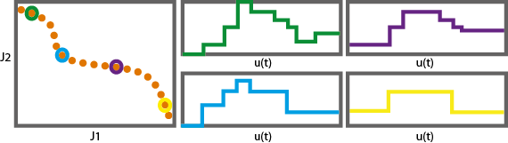
It may handle:
- Constraints on decision variables
- Constraints on state variables
It may call several optimizers:
- NSGAII designed to compute the Pareto front (see References for details)
- The Weighted Sum Method, can be combined with any of the NLP solvers in AMIGO2
- LOCAL optimization methods: indirect and direct methods
- MULTISTART of local methods
- GLOBAL optimization methods: DE, SRES
- HYBRID optimization methods: eSS, sequential hybrids
- NSGAII plus the weighted sum method; Epsilon-constraint approach can be implemented using constraints
Options:
- 'run_identifier' to keep different folders for different runs, this avoids overwriting
- 'nlp_solver' to rapidly change the optimization method
See also
Example
The objectives are to minimize the amplitude of the oscillations and the control effort subject to the oscillator dynamics and maximum and minimum allowed values for the control 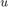:
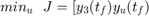
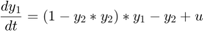
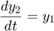
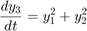
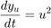
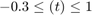
clear; %=========================== %RESULTS PATHS RELATED DATA %=========================== inputs.pathd.results_folder='vpol_multiO'; % Folder to keep results (in Results\) inputs.pathd.short_name='vpolm'; % To identify figures and reports %====================== % MODEL RELATED DATA %====================== inputs.model.input_model_type='charmodelC'; % Model type inputs.model.n_st=4; % Number of states inputs.model.n_par=0; % Number of model parameters inputs.model.n_stimulus=1; % Number of stimuli inputs.model.st_names=char('y1','y2','y3','yu'); % Names of the states inputs.model.stimulus_names=char('uu'); % Names of the stimuli inputs.model.eqns=... % Model char('dy1=(1-y2*y2)*y1-y2+uu',... 'dy2=y1',... 'dy3=y1*y1+y2*y2',... 'dyu=uu*uu'); %========================================== % Dynamic optimization problem formulation %========================================== inputs.DOsol.y0=[0 1 0 0 ]; %Initial conditions inputs.DOsol.tf_type='fixed'; %Process duration type: fixed or free inputs.DOsol.tf_guess=5; %Process duration %COST FUNCTIONS inputs.DOsol.N_DOcost=2; %Number of objectives inputs.DOsol.DOcost_type='min'; % max/min inputs.DOsol.DOcost{1}='y3'; % Objective 1 inputs.DOsol.DOcost{2}='yu'; % Objective 2 %CVP (Control Vector Parameterization) DETAILS inputs.DOsol.u_interp='stepf'; %Control definition %'sustained' |'stepf'|'step'|'linear'| inputs.DOsol.n_steps=10; inputs.DOsol.u_guess=0.7.*ones(1,inputs.DOsol.n_steps);% Initial guess for the input inputs.DOsol.u_min=-0.3.*ones(1,inputs.DOsol.n_steps); inputs.DOsol.u_max=1.*ones(1,inputs.DOsol.n_steps); % Minimum and maximum value for the input inputs.DOsol.t_con=0:5/inputs.DOsol.n_steps:5; % Input swithching times, including intial and % final times %================================== % NUMERICAL METHDOS RELATED DATA %================================== % SIMULATION % Default for charmodel C: CVODES % OPTIMIZATION inputs.nlpsol.nlpsolver='nsga2'; % Solves the problem using a multi-objective % optimizer- nsga2 inputs.nlpsol.nsga2.popsize = 10*inputs.DOsol.n_steps;% nsga2 population size inputs.nlpsol.nsga2.maxGen = 10*inputs.DOsol.n_steps;% nsga2 max number of generations inputs.nlpsol.nsga2.plotInterval =50; % nsga2 interval between two calls of "plotnsga". %inputs.nlpsol.nsga2.initfun={@initpop, 'populations.txt'} %nsga2 use previous results to refine inputs.nlpsol.nsga2.mutation={'gaussian',0.1, 0.5}; % nsga2 type of mutation %================================== % DISPLAY OF RESULTS %================================== inputs.plotd.number_max_pareto=5; % Maximum number of figures - Pareto optimal profiles
More information regarding the inputs used in this example can be found here.
AMIGO_Prep(inputs); AMIGO_DO(inputs);
***********************************
AMIGO2, Copyright @CSIC
AMIGO2_R2016a [Oct 2015]
***********************************
*Date: 17-Dec-2015
------>Pre processing....this may take a few seconds.
------>Checking inputs....
------> WARNING message
AMIGO_check_model: You did not specify inputs.model.exe_type, standard will be assumed
------> Generating C code ...
------> Mexing files....
Building with 'MinGW64 Compiler (C)'.
D:\AMIGO2_REPO_2014\AMIGO2R2016\Kernel\IVP_solvers\cvodes\C_src4Amigo\src\src_amigo\simulate_amigo_model.c: In function 'simulate_amigo_model':
D:\AMIGO2_REPO_2014\AMIGO2R2016\Kernel\IVP_solvers\cvodes\C_src4Amigo\src\src_amigo\simulate_amigo_model.c:330:16: warning: passing argument 1 of 'mexPrintf' from incompatible pointer type
mexPrintf(stderr,"\nSolver failed at flag = CVode(cvode_mem, tout, y, &t, CV_TSTOP_RETURN);. . .\n");
^
In file included from D:\AMIGO2_REPO_2014\AMIGO2R2016\Kernel\IVP_solvers\cvodes\C_src4Amigo\include\include_amigo/simulate_amigo_model.h:4:0,
from D:\AMIGO2_REPO_2014\AMIGO2R2016\Kernel\IVP_solvers\cvodes\C_src4Amigo\src\src_amigo\simulate_amigo_model.c:1:
C:\MATLAB_R2015b_64/extern/include/mex.h:202:27: note: expected 'const char *' but argument is of type 'struct FILE *'
LIBMWMEX_API_EXTERN_C int mexPrintf(
^
D:\AMIGO2_REPO_2014\AMIGO2R2016\Kernel\IVP_solvers\cvodes\C_src4Amigo\src\src_interface\interface_with_matlab.c: In function 'mexFunction':
D:\AMIGO2_REPO_2014\AMIGO2R2016\Kernel\IVP_solvers\cvodes\C_src4Amigo\src\src_interface\interface_with_matlab.c:200:17: warning: assignment from incompatible pointer type
stats_struct = mxGetPr(plhs[5]);
^
MEX completed successfully.
------>Files generated....
***********************************
AMIGO2, Copyright @CSIC
AMIGO2_R2016a [Oct 2015]
***********************************
*Date: 17-Dec-2015
------>Checking inputs....
*************************************************************************
------>IMPORTANT!!: Most of the optimization solvers have their own
tunning parameters (options).
Defaults have been assigned in the *NLPsolver*_options
files. You may need to modify those settings for your
particular problem, specially:
- maximum number of function evaluations /iterations,
- maximum computational time
******************************************************************
Solving the NLP problem with Multi-objective global Optimizer: NSGA2
>Bounds on the unknowns:
v_guess(1)=0.700000; v_min(1)=-0.300000; v_max(1)=1.000000;
v_guess(2)=0.700000; v_min(2)=-0.300000; v_max(2)=1.000000;
v_guess(3)=0.700000; v_min(3)=-0.300000; v_max(3)=1.000000;
v_guess(4)=0.700000; v_min(4)=-0.300000; v_max(4)=1.000000;
v_guess(5)=0.700000; v_min(5)=-0.300000; v_max(5)=1.000000;
v_guess(6)=0.700000; v_min(6)=-0.300000; v_max(6)=1.000000;
v_guess(7)=0.700000; v_min(7)=-0.300000; v_max(7)=1.000000;
v_guess(8)=0.700000; v_min(8)=-0.300000; v_max(8)=1.000000;
v_guess(9)=0.700000; v_min(9)=-0.300000; v_max(9)=1.000000;
v_guess(10)=0.700000; v_min(10)=-0.300000; v_max(10)=1.000000;
Evaluating the objective function... Generation: 1 / 100 , Individual: 1 / 100
-----------------------------------------------
Initial value problem related active settings
-----------------------------------------------
ivpsolver: cvodes
RelTol: 1e-07
AbsTol: 1e-07
MaxStepSize: Inf
MaxNumberOfSteps: 100000
Evaluating the objective function... Generation: 1 / 100 , Individual: 2 / 100
Evaluating the objective function... Generation: 1 / 100 , Individual: 3 / 100
Evaluating the objective function... Generation: 1 / 100 , Individual: 4 / 100
Evaluating the objective function... Generation: 1 / 100 , Individual: 5 / 100
Evaluating the objective function... Generation: 1 / 100 , Individual: 6 / 100
Evaluating the objective function... Generation: 1 / 100 , Individual: 7 / 100
Evaluating the objective function... Generation: 1 / 100 , Individual: 8 / 100
Evaluating the objective function... Generation: 1 / 100 , Individual: 9 / 100
Evaluating the objective function... Generation: 1 / 100 , Individual: 10 / 100
Evaluating the objective function... Generation: 1 / 100 , Individual: 11 / 100
Evaluating the objective function... Generation: 1 / 100 , Individual: 12 / 100
Evaluating the objective function... Generation: 1 / 100 , Individual: 13 / 100
Evaluating the objective function... Generation: 1 / 100 , Individual: 14 / 100
Evaluating the objective function... Generation: 1 / 100 , Individual: 15 / 100
Evaluating the objective function... Generation: 1 / 100 , Individual: 16 / 100
Evaluating the objective function... Generation: 1 / 100 , Individual: 17 / 100
Evaluating the objective function... Generation: 1 / 100 , Individual: 18 / 100
Evaluating the objective function... Generation: 1 / 100 , Individual: 19 / 100
Evaluating the objective function... Generation: 1 / 100 , Individual: 20 / 100
Evaluating the objective function... Generation: 1 / 100 , Individual: 21 / 100
Evaluating the objective function... Generation: 1 / 100 , Individual: 22 / 100
Evaluating the objective function... Generation: 1 / 100 , Individual: 23 / 100
Evaluating the objective function... Generation: 1 / 100 , Individual: 24 / 100
Evaluating the objective function... Generation: 1 / 100 , Individual: 25 / 100
Evaluating the objective function... Generation: 1 / 100 , Individual: 26 / 100
Evaluating the objective function... Generation: 1 / 100 , Individual: 27 / 100
Evaluating the objective function... Generation: 1 / 100 , Individual: 28 / 100
Evaluating the objective function... Generation: 1 / 100 , Individual: 29 / 100
Evaluating the objective function... Generation: 1 / 100 , Individual: 30 / 100
Evaluating the objective function... Generation: 1 / 100 , Individual: 31 / 100
Evaluating the objective function... Generation: 1 / 100 , Individual: 32 / 100
Evaluating the objective function... Generation: 1 / 100 , Individual: 33 / 100
Evaluating the objective function... Generation: 1 / 100 , Individual: 34 / 100
Evaluating the objective function... Generation: 1 / 100 , Individual: 35 / 100
Evaluating the objective function... Generation: 1 / 100 , Individual: 36 / 100
Evaluating the objective function... Generation: 1 / 100 , Individual: 37 / 100
Evaluating the objective function... Generation: 1 / 100 , Individual: 38 / 100
Evaluating the objective function... Generation: 1 / 100 , Individual: 39 / 100
Evaluating the objective function... Generation: 1 / 100 , Individual: 40 / 100
Evaluating the objective function... Generation: 1 / 100 , Individual: 41 / 100
Evaluating the objective function... Generation: 1 / 100 , Individual: 42 / 100
Evaluating the objective function... Generation: 1 / 100 , Individual: 43 / 100
Evaluating the objective function... Generation: 1 / 100 , Individual: 44 / 100
Evaluating the objective function... Generation: 1 / 100 , Individual: 45 / 100
Evaluating the objective function... Generation: 1 / 100 , Individual: 46 / 100
Evaluating the objective function... Generation: 1 / 100 , Individual: 47 / 100
Evaluating the objective function... Generation: 1 / 100 , Individual: 48 / 100
Evaluating the objective function... Generation: 1 / 100 , Individual: 49 / 100
Evaluating the objective function... Generation: 1 / 100 , Individual: 50 / 100
Evaluating the objective function... Generation: 1 / 100 , Individual: 51 / 100
Evaluating the objective function... Generation: 1 / 100 , Individual: 52 / 100
Evaluating the objective function... Generation: 1 / 100 , Individual: 53 / 100
Evaluating the objective function... Generation: 1 / 100 , Individual: 54 / 100
Evaluating the objective function... Generation: 1 / 100 , Individual: 55 / 100
Evaluating the objective function... Generation: 1 / 100 , Individual: 56 / 100
Evaluating the objective function... Generation: 1 / 100 , Individual: 57 / 100
Evaluating the objective function... Generation: 1 / 100 , Individual: 58 / 100
Evaluating the objective function... Generation: 1 / 100 , Individual: 59 / 100
Evaluating the objective function... Generation: 1 / 100 , Individual: 60 / 100
Evaluating the objective function... Generation: 1 / 100 , Individual: 61 / 100
Evaluating the objective function... Generation: 1 / 100 , Individual: 62 / 100
Evaluating the objective function... Generation: 1 / 100 , Individual: 63 / 100
Evaluating the objective function... Generation: 1 / 100 , Individual: 64 / 100
Evaluating the objective function... Generation: 1 / 100 , Individual: 65 / 100
Evaluating the objective function... Generation: 1 / 100 , Individual: 66 / 100
Evaluating the objective function... Generation: 1 / 100 , Individual: 67 / 100
Evaluating the objective function... Generation: 1 / 100 , Individual: 68 / 100
Evaluating the objective function... Generation: 1 / 100 , Individual: 69 / 100
Evaluating the objective function... Generation: 1 / 100 , Individual: 70 / 100
Evaluating the objective function... Generation: 1 / 100 , Individual: 71 / 100
Evaluating the objective function... Generation: 1 / 100 , Individual: 72 / 100
Evaluating the objective function... Generation: 1 / 100 , Individual: 73 / 100
Evaluating the objective function... Generation: 1 / 100 , Individual: 74 / 100
Evaluating the objective function... Generation: 1 / 100 , Individual: 75 / 100
Evaluating the objective function... Generation: 1 / 100 , Individual: 76 / 100
Evaluating the objective function... Generation: 1 / 100 , Individual: 77 / 100
Evaluating the objective function... Generation: 1 / 100 , Individual: 78 / 100
Evaluating the objective function... Generation: 1 / 100 , Individual: 79 / 100
Evaluating the objective function... Generation: 1 / 100 , Individual: 80 / 100
Evaluating the objective function... Generation: 1 / 100 , Individual: 81 / 100
Evaluating the objective function... Generation: 1 / 100 , Individual: 82 / 100
Evaluating the objective function... Generation: 1 / 100 , Individual: 83 / 100
Evaluating the objective function... Generation: 1 / 100 , Individual: 84 / 100
Evaluating the objective function... Generation: 1 / 100 , Individual: 85 / 100
Evaluating the objective function... Generation: 1 / 100 , Individual: 86 / 100
Evaluating the objective function... Generation: 1 / 100 , Individual: 87 / 100
Evaluating the objective function... Generation: 1 / 100 , Individual: 88 / 100
Evaluating the objective function... Generation: 1 / 100 , Individual: 89 / 100
Evaluating the objective function... Generation: 1 / 100 , Individual: 90 / 100
Evaluating the objective function... Generation: 1 / 100 , Individual: 91 / 100
Evaluating the objective function... Generation: 1 / 100 , Individual: 92 / 100
Evaluating the objective function... Generation: 1 / 100 , Individual: 93 / 100
Evaluating the objective function... Generation: 1 / 100 , Individual: 94 / 100
Evaluating the objective function... Generation: 1 / 100 , Individual: 95 / 100
Evaluating the objective function... Generation: 1 / 100 , Individual: 96 / 100
Evaluating the objective function... Generation: 1 / 100 , Individual: 97 / 100
Evaluating the objective function... Generation: 1 / 100 , Individual: 98 / 100
Evaluating the objective function... Generation: 1 / 100 , Individual: 99 / 100
Evaluating the objective function... Generation: 1 / 100 , Individual: 100 / 100
************************************************************
* Current generation 2 / 100
************************************************************
Evaluating the objective function... Generation: 2 / 100 , Individual: 1 / 100
Evaluating the objective function... Generation: 2 / 100 , Individual: 2 / 100
Evaluating the objective function... Generation: 2 / 100 , Individual: 3 / 100
Evaluating the objective function... Generation: 2 / 100 , Individual: 4 / 100
Evaluating the objective function... Generation: 2 / 100 , Individual: 5 / 100
Evaluating the objective function... Generation: 2 / 100 , Individual: 6 / 100
Evaluating the objective function... Generation: 2 / 100 , Individual: 7 / 100
Evaluating the objective function... Generation: 2 / 100 , Individual: 8 / 100
Evaluating the objective function... Generation: 2 / 100 , Individual: 9 / 100
Evaluating the objective function... Generation: 2 / 100 , Individual: 10 / 100
Evaluating the objective function... Generation: 2 / 100 , Individual: 11 / 100
Evaluating the objective function... Generation: 2 / 100 , Individual: 12 / 100
Evaluating the objective function... Generation: 2 / 100 , Individual: 13 / 100
Evaluating the objective function... Generation: 2 / 100 , Individual: 14 / 100
Evaluating the objective function... Generation: 2 / 100 , Individual: 15 / 100
Evaluating the objective function... Generation: 2 / 100 , Individual: 16 / 100
Evaluating the objective function... Generation: 2 / 100 , Individual: 17 / 100
Evaluating the objective function... Generation: 2 / 100 , Individual: 18 / 100
Evaluating the objective function... Generation: 2 / 100 , Individual: 19 / 100
Evaluating the objective function... Generation: 2 / 100 , Individual: 20 / 100
Evaluating the objective function... Generation: 2 / 100 , Individual: 21 / 100
Evaluating the objective function... Generation: 2 / 100 , Individual: 22 / 100
Evaluating the objective function... Generation: 2 / 100 , Individual: 23 / 100
Evaluating the objective function... Generation: 2 / 100 , Individual: 24 / 100
Evaluating the objective function... Generation: 2 / 100 , Individual: 25 / 100
Evaluating the objective function... Generation: 2 / 100 , Individual: 26 / 100
Evaluating the objective function... Generation: 2 / 100 , Individual: 27 / 100
Evaluating the objective function... Generation: 2 / 100 , Individual: 28 / 100
Evaluating the objective function... Generation: 2 / 100 , Individual: 29 / 100
Evaluating the objective function... Generation: 2 / 100 , Individual: 30 / 100
Evaluating the objective function... Generation: 2 / 100 , Individual: 31 / 100
Evaluating the objective function... Generation: 2 / 100 , Individual: 32 / 100
Evaluating the objective function... Generation: 2 / 100 , Individual: 33 / 100
Evaluating the objective function... Generation: 2 / 100 , Individual: 34 / 100
Evaluating the objective function... Generation: 2 / 100 , Individual: 35 / 100
Evaluating the objective function... Generation: 2 / 100 , Individual: 36 / 100
Evaluating the objective function... Generation: 2 / 100 , Individual: 37 / 100
Evaluating the objective function... Generation: 2 / 100 , Individual: 38 / 100
Evaluating the objective function... Generation: 2 / 100 , Individual: 39 / 100
Evaluating the objective function... Generation: 2 / 100 , Individual: 40 / 100
Evaluating the objective function... Generation: 2 / 100 , Individual: 41 / 100
Evaluating the objective function... Generation: 2 / 100 , Individual: 42 / 100
Evaluating the objective function... Generation: 2 / 100 , Individual: 43 / 100
Evaluating the objective function... Generation: 2 / 100 , Individual: 44 / 100
Evaluating the objective function... Generation: 2 / 100 , Individual: 45 / 100
Evaluating the objective function... Generation: 2 / 100 , Individual: 46 / 100
Evaluating the objective function... Generation: 2 / 100 , Individual: 47 / 100
Evaluating the objective function... Generation: 2 / 100 , Individual: 48 / 100
Evaluating the objective function... Generation: 2 / 100 , Individual: 49 / 100
Evaluating the objective function... Generation: 2 / 100 , Individual: 50 / 100
Evaluating the objective function... Generation: 2 / 100 , Individual: 51 / 100
Evaluating the objective function... Generation: 2 / 100 , Individual: 52 / 100
Evaluating the objective function... Generation: 2 / 100 , Individual: 53 / 100
Evaluating the objective function... Generation: 2 / 100 , Individual: 54 / 100
Evaluating the objective function... Generation: 2 / 100 , Individual: 55 / 100
Evaluating the objective function... Generation: 2 / 100 , Individual: 56 / 100
Evaluating the objective function... Generation: 2 / 100 , Individual: 57 / 100
Evaluating the objective function... Generation: 2 / 100 , Individual: 58 / 100
Evaluating the objective function... Generation: 2 / 100 , Individual: 59 / 100
Evaluating the objective function... Generation: 2 / 100 , Individual: 60 / 100
Evaluating the objective function... Generation: 2 / 100 , Individual: 61 / 100
Evaluating the objective function... Generation: 2 / 100 , Individual: 62 / 100
Evaluating the objective function... Generation: 2 / 100 , Individual: 63 / 100
Evaluating the objective function... Generation: 2 / 100 , Individual: 64 / 100
Evaluating the objective function... Generation: 2 / 100 , Individual: 65 / 100
Evaluating the objective function... Generation: 2 / 100 , Individual: 66 / 100
Evaluating the objective function... Generation: 2 / 100 , Individual: 67 / 100
Evaluating the objective function... Generation: 2 / 100 , Individual: 68 / 100
Evaluating the objective function... Generation: 2 / 100 , Individual: 69 / 100
Evaluating the objective function... Generation: 2 / 100 , Individual: 70 / 100
Evaluating the objective function... Generation: 2 / 100 , Individual: 71 / 100
Evaluating the objective function... Generation: 2 / 100 , Individual: 72 / 100
Evaluating the objective function... Generation: 2 / 100 , Individual: 73 / 100
Evaluating the objective function... Generation: 2 / 100 , Individual: 74 / 100
Evaluating the objective function... Generation: 2 / 100 , Individual: 75 / 100
Evaluating the objective function... Generation: 2 / 100 , Individual: 76 / 100
Evaluating the objective function... Generation: 2 / 100 , Individual: 77 / 100
Evaluating the objective function... Generation: 2 / 100 , Individual: 78 / 100
Evaluating the objective function... Generation: 2 / 100 , Individual: 79 / 100
Evaluating the objective function... Generation: 2 / 100 , Individual: 80 / 100
Evaluating the objective function... Generation: 2 / 100 , Individual: 81 / 100
Evaluating the objective function... Generation: 2 / 100 , Individual: 82 / 100
Evaluating the objective function... Generation: 2 / 100 , Individual: 83 / 100
Evaluating the objective function... Generation: 2 / 100 , Individual: 84 / 100
Evaluating the objective function... Generation: 2 / 100 , Individual: 85 / 100
Evaluating the objective function... Generation: 2 / 100 , Individual: 86 / 100
Evaluating the objective function... Generation: 2 / 100 , Individual: 87 / 100
Evaluating the objective function... Generation: 2 / 100 , Individual: 88 / 100
Evaluating the objective function... Generation: 2 / 100 , Individual: 89 / 100
Evaluating the objective function... Generation: 2 / 100 , Individual: 90 / 100
Evaluating the objective function... Generation: 2 / 100 , Individual: 91 / 100
Evaluating the objective function... Generation: 2 / 100 , Individual: 92 / 100
Evaluating the objective function... Generation: 2 / 100 , Individual: 93 / 100
Evaluating the objective function... Generation: 2 / 100 , Individual: 94 / 100
Evaluating the objective function... Generation: 2 / 100 , Individual: 95 / 100
Evaluating the objective function... Generation: 2 / 100 , Individual: 96 / 100
Evaluating the objective function... Generation: 2 / 100 , Individual: 97 / 100
Evaluating the objective function... Generation: 2 / 100 , Individual: 98 / 100
Evaluating the objective function... Generation: 2 / 100 , Individual: 99 / 100
Evaluating the objective function... Generation: 2 / 100 , Individual: 100 / 100
************************************************************
* Current generation 3 / 100
************************************************************
Evaluating the objective function... Generation: 3 / 100 , Individual: 1 / 100
Evaluating the objective function... Generation: 3 / 100 , Individual: 2 / 100
Evaluating the objective function... Generation: 3 / 100 , Individual: 3 / 100
Evaluating the objective function... Generation: 3 / 100 , Individual: 4 / 100
Evaluating the objective function... Generation: 3 / 100 , Individual: 5 / 100
Evaluating the objective function... Generation: 3 / 100 , Individual: 6 / 100
Evaluating the objective function... Generation: 3 / 100 , Individual: 7 / 100
Evaluating the objective function... Generation: 3 / 100 , Individual: 8 / 100
Evaluating the objective function... Generation: 3 / 100 , Individual: 9 / 100
Evaluating the objective function... Generation: 3 / 100 , Individual: 10 / 100
Evaluating the objective function... Generation: 3 / 100 , Individual: 11 / 100
Evaluating the objective function... Generation: 3 / 100 , Individual: 12 / 100
Evaluating the objective function... Generation: 3 / 100 , Individual: 13 / 100
Evaluating the objective function... Generation: 3 / 100 , Individual: 14 / 100
Evaluating the objective function... Generation: 3 / 100 , Individual: 15 / 100
Evaluating the objective function... Generation: 3 / 100 , Individual: 16 / 100
Evaluating the objective function... Generation: 3 / 100 , Individual: 17 / 100
Evaluating the objective function... Generation: 3 / 100 , Individual: 18 / 100
Evaluating the objective function... Generation: 3 / 100 , Individual: 19 / 100
Evaluating the objective function... Generation: 3 / 100 , Individual: 20 / 100
Evaluating the objective function... Generation: 3 / 100 , Individual: 21 / 100
Evaluating the objective function... Generation: 3 / 100 , Individual: 22 / 100
Evaluating the objective function... Generation: 3 / 100 , Individual: 23 / 100
Evaluating the objective function... Generation: 3 / 100 , Individual: 24 / 100
Evaluating the objective function... Generation: 3 / 100 , Individual: 25 / 100
Evaluating the objective function... Generation: 3 / 100 , Individual: 26 / 100
Evaluating the objective function... Generation: 3 / 100 , Individual: 27 / 100
Evaluating the objective function... Generation: 3 / 100 , Individual: 28 / 100
Evaluating the objective function... Generation: 3 / 100 , Individual: 29 / 100
Evaluating the objective function... Generation: 3 / 100 , Individual: 30 / 100
Evaluating the objective function... Generation: 3 / 100 , Individual: 31 / 100
Evaluating the objective function... Generation: 3 / 100 , Individual: 32 / 100
Evaluating the objective function... Generation: 3 / 100 , Individual: 33 / 100
Evaluating the objective function... Generation: 3 / 100 , Individual: 34 / 100
Evaluating the objective function... Generation: 3 / 100 , Individual: 35 / 100
Evaluating the objective function... Generation: 3 / 100 , Individual: 36 / 100
Evaluating the objective function... Generation: 3 / 100 , Individual: 37 / 100
Evaluating the objective function... Generation: 3 / 100 , Individual: 38 / 100
Evaluating the objective function... Generation: 3 / 100 , Individual: 39 / 100
Evaluating the objective function... Generation: 3 / 100 , Individual: 40 / 100
Evaluating the objective function... Generation: 3 / 100 , Individual: 41 / 100
Evaluating the objective function... Generation: 3 / 100 , Individual: 42 / 100
Evaluating the objective function... Generation: 3 / 100 , Individual: 43 / 100
Evaluating the objective function... Generation: 3 / 100 , Individual: 44 / 100
Evaluating the objective function... Generation: 3 / 100 , Individual: 45 / 100
Evaluating the objective function... Generation: 3 / 100 , Individual: 46 / 100
Evaluating the objective function... Generation: 3 / 100 , Individual: 47 / 100
Evaluating the objective function... Generation: 3 / 100 , Individual: 48 / 100
Evaluating the objective function... Generation: 3 / 100 , Individual: 49 / 100
Evaluating the objective function... Generation: 3 / 100 , Individual: 50 / 100
Evaluating the objective function... Generation: 3 / 100 , Individual: 51 / 100
Evaluating the objective function... Generation: 3 / 100 , Individual: 52 / 100
Evaluating the objective function... Generation: 3 / 100 , Individual: 53 / 100
Evaluating the objective function... Generation: 3 / 100 , Individual: 54 / 100
Evaluating the objective function... Generation: 3 / 100 , Individual: 55 / 100
Evaluating the objective function... Generation: 3 / 100 , Individual: 56 / 100
Evaluating the objective function... Generation: 3 / 100 , Individual: 57 / 100
Evaluating the objective function... Generation: 3 / 100 , Individual: 58 / 100
Evaluating the objective function... Generation: 3 / 100 , Individual: 59 / 100
Evaluating the objective function... Generation: 3 / 100 , Individual: 60 / 100
Evaluating the objective function... Generation: 3 / 100 , Individual: 61 / 100
Evaluating the objective function... Generation: 3 / 100 , Individual: 62 / 100
Evaluating the objective function... Generation: 3 / 100 , Individual: 63 / 100
Evaluating the objective function... Generation: 3 / 100 , Individual: 64 / 100
Evaluating the objective function... Generation: 3 / 100 , Individual: 65 / 100
Evaluating the objective function... Generation: 3 / 100 , Individual: 66 / 100
Evaluating the objective function... Generation: 3 / 100 , Individual: 67 / 100
Evaluating the objective function... Generation: 3 / 100 , Individual: 68 / 100
Evaluating the objective function... Generation: 3 / 100 , Individual: 69 / 100
Evaluating the objective function... Generation: 3 / 100 , Individual: 70 / 100
Evaluating the objective function... Generation: 3 / 100 , Individual: 71 / 100
Evaluating the objective function... Generation: 3 / 100 , Individual: 72 / 100
Evaluating the objective function... Generation: 3 / 100 , Individual: 73 / 100
Evaluating the objective function... Generation: 3 / 100 , Individual: 74 / 100
Evaluating the objective function... Generation: 3 / 100 , Individual: 75 / 100
Evaluating the objective function... Generation: 3 / 100 , Individual: 76 / 100
Evaluating the objective function... Generation: 3 / 100 , Individual: 77 / 100
Evaluating the objective function... Generation: 3 / 100 , Individual: 78 / 100
Evaluating the objective function... Generation: 3 / 100 , Individual: 79 / 100
Evaluating the objective function... Generation: 3 / 100 , Individual: 80 / 100
Evaluating the objective function... Generation: 3 / 100 , Individual: 81 / 100
Evaluating the objective function... Generation: 3 / 100 , Individual: 82 / 100
Evaluating the objective function... Generation: 3 / 100 , Individual: 83 / 100
Evaluating the objective function... Generation: 3 / 100 , Individual: 84 / 100
Evaluating the objective function... Generation: 3 / 100 , Individual: 85 / 100
Evaluating the objective function... Generation: 3 / 100 , Individual: 86 / 100
Evaluating the objective function... Generation: 3 / 100 , Individual: 87 / 100
Evaluating the objective function... Generation: 3 / 100 , Individual: 88 / 100
Evaluating the objective function... Generation: 3 / 100 , Individual: 89 / 100
Evaluating the objective function... Generation: 3 / 100 , Individual: 90 / 100
Evaluating the objective function... Generation: 3 / 100 , Individual: 91 / 100
Evaluating the objective function... Generation: 3 / 100 , Individual: 92 / 100
Evaluating the objective function... Generation: 3 / 100 , Individual: 93 / 100
Evaluating the objective function... Generation: 3 / 100 , Individual: 94 / 100
Evaluating the objective function... Generation: 3 / 100 , Individual: 95 / 100
Evaluating the objective function... Generation: 3 / 100 , Individual: 96 / 100
Evaluating the objective function... Generation: 3 / 100 , Individual: 97 / 100
Evaluating the objective function... Generation: 3 / 100 , Individual: 98 / 100
Evaluating the objective function... Generation: 3 / 100 , Individual: 99 / 100
Evaluating the objective function... Generation: 3 / 100 , Individual: 100 / 100
************************************************************
* Current generation 4 / 100
************************************************************
Evaluating the objective function... Generation: 4 / 100 , Individual: 1 / 100
Evaluating the objective function... Generation: 4 / 100 , Individual: 2 / 100
Evaluating the objective function... Generation: 4 / 100 , Individual: 3 / 100
Evaluating the objective function... Generation: 4 / 100 , Individual: 4 / 100
Evaluating the objective function... Generation: 4 / 100 , Individual: 5 / 100
Evaluating the objective function... Generation: 4 / 100 , Individual: 6 / 100
Evaluating the objective function... Generation: 4 / 100 , Individual: 7 / 100
Evaluating the objective function... Generation: 4 / 100 , Individual: 8 / 100
Evaluating the objective function... Generation: 4 / 100 , Individual: 9 / 100
Evaluating the objective function... Generation: 4 / 100 , Individual: 10 / 100
Evaluating the objective function... Generation: 4 / 100 , Individual: 11 / 100
Evaluating the objective function... Generation: 4 / 100 , Individual: 12 / 100
Evaluating the objective function... Generation: 4 / 100 , Individual: 13 / 100
Evaluating the objective function... Generation: 4 / 100 , Individual: 14 / 100
Evaluating the objective function... Generation: 4 / 100 , Individual: 15 / 100
Evaluating the objective function... Generation: 4 / 100 , Individual: 16 / 100
Evaluating the objective function... Generation: 4 / 100 , Individual: 17 / 100
Evaluating the objective function... Generation: 4 / 100 , Individual: 18 / 100
Evaluating the objective function... Generation: 4 / 100 , Individual: 19 / 100
Evaluating the objective function... Generation: 4 / 100 , Individual: 20 / 100
Evaluating the objective function... Generation: 4 / 100 , Individual: 21 / 100
Evaluating the objective function... Generation: 4 / 100 , Individual: 22 / 100
Evaluating the objective function... Generation: 4 / 100 , Individual: 23 / 100
Evaluating the objective function... Generation: 4 / 100 , Individual: 24 / 100
Evaluating the objective function... Generation: 4 / 100 , Individual: 25 / 100
Evaluating the objective function... Generation: 4 / 100 , Individual: 26 / 100
Evaluating the objective function... Generation: 4 / 100 , Individual: 27 / 100
Evaluating the objective function... Generation: 4 / 100 , Individual: 28 / 100
Evaluating the objective function... Generation: 4 / 100 , Individual: 29 / 100
Evaluating the objective function... Generation: 4 / 100 , Individual: 30 / 100
Evaluating the objective function... Generation: 4 / 100 , Individual: 31 / 100
Evaluating the objective function... Generation: 4 / 100 , Individual: 32 / 100
Evaluating the objective function... Generation: 4 / 100 , Individual: 33 / 100
Evaluating the objective function... Generation: 4 / 100 , Individual: 34 / 100
Evaluating the objective function... Generation: 4 / 100 , Individual: 35 / 100
Evaluating the objective function... Generation: 4 / 100 , Individual: 36 / 100
Evaluating the objective function... Generation: 4 / 100 , Individual: 37 / 100
Evaluating the objective function... Generation: 4 / 100 , Individual: 38 / 100
Evaluating the objective function... Generation: 4 / 100 , Individual: 39 / 100
Evaluating the objective function... Generation: 4 / 100 , Individual: 40 / 100
Evaluating the objective function... Generation: 4 / 100 , Individual: 41 / 100
Evaluating the objective function... Generation: 4 / 100 , Individual: 42 / 100
Evaluating the objective function... Generation: 4 / 100 , Individual: 43 / 100
Evaluating the objective function... Generation: 4 / 100 , Individual: 44 / 100
Evaluating the objective function... Generation: 4 / 100 , Individual: 45 / 100
Evaluating the objective function... Generation: 4 / 100 , Individual: 46 / 100
Evaluating the objective function... Generation: 4 / 100 , Individual: 47 / 100
Evaluating the objective function... Generation: 4 / 100 , Individual: 48 / 100
Evaluating the objective function... Generation: 4 / 100 , Individual: 49 / 100
Evaluating the objective function... Generation: 4 / 100 , Individual: 50 / 100
Evaluating the objective function... Generation: 4 / 100 , Individual: 51 / 100
Evaluating the objective function... Generation: 4 / 100 , Individual: 52 / 100
Evaluating the objective function... Generation: 4 / 100 , Individual: 53 / 100
Evaluating the objective function... Generation: 4 / 100 , Individual: 54 / 100
Evaluating the objective function... Generation: 4 / 100 , Individual: 55 / 100
Evaluating the objective function... Generation: 4 / 100 , Individual: 56 / 100
Evaluating the objective function... Generation: 4 / 100 , Individual: 57 / 100
Evaluating the objective function... Generation: 4 / 100 , Individual: 58 / 100
Evaluating the objective function... Generation: 4 / 100 , Individual: 59 / 100
Evaluating the objective function... Generation: 4 / 100 , Individual: 60 / 100
Evaluating the objective function... Generation: 4 / 100 , Individual: 61 / 100
Evaluating the objective function... Generation: 4 / 100 , Individual: 62 / 100
Evaluating the objective function... Generation: 4 / 100 , Individual: 63 / 100
Evaluating the objective function... Generation: 4 / 100 , Individual: 64 / 100
Evaluating the objective function... Generation: 4 / 100 , Individual: 65 / 100
Evaluating the objective function... Generation: 4 / 100 , Individual: 66 / 100
Evaluating the objective function... Generation: 4 / 100 , Individual: 67 / 100
Evaluating the objective function... Generation: 4 / 100 , Individual: 68 / 100
Evaluating the objective function... Generation: 4 / 100 , Individual: 69 / 100
Evaluating the objective function... Generation: 4 / 100 , Individual: 70 / 100
Evaluating the objective function... Generation: 4 / 100 , Individual: 71 / 100
Evaluating the objective function... Generation: 4 / 100 , Individual: 72 / 100
Evaluating the objective function... Generation: 4 / 100 , Individual: 73 / 100
Evaluating the objective function... Generation: 4 / 100 , Individual: 74 / 100
Evaluating the objective function... Generation: 4 / 100 , Individual: 75 / 100
Evaluating the objective function... Generation: 4 / 100 , Individual: 76 / 100
Evaluating the objective function... Generation: 4 / 100 , Individual: 77 / 100
Evaluating the objective function... Generation: 4 / 100 , Individual: 78 / 100
Evaluating the objective function... Generation: 4 / 100 , Individual: 79 / 100
Evaluating the objective function... Generation: 4 / 100 , Individual: 80 / 100
Evaluating the objective function... Generation: 4 / 100 , Individual: 81 / 100
Evaluating the objective function... Generation: 4 / 100 , Individual: 82 / 100
Evaluating the objective function... Generation: 4 / 100 , Individual: 83 / 100
Evaluating the objective function... Generation: 4 / 100 , Individual: 84 / 100
Evaluating the objective function... Generation: 4 / 100 , Individual: 85 / 100
Evaluating the objective function... Generation: 4 / 100 , Individual: 86 / 100
Evaluating the objective function... Generation: 4 / 100 , Individual: 87 / 100
Evaluating the objective function... Generation: 4 / 100 , Individual: 88 / 100
Evaluating the objective function... Generation: 4 / 100 , Individual: 89 / 100
Evaluating the objective function... Generation: 4 / 100 , Individual: 90 / 100
Evaluating the objective function... Generation: 4 / 100 , Individual: 91 / 100
Evaluating the objective function... Generation: 4 / 100 , Individual: 92 / 100
Evaluating the objective function... Generation: 4 / 100 , Individual: 93 / 100
Evaluating the objective function... Generation: 4 / 100 , Individual: 94 / 100
Evaluating the objective function... Generation: 4 / 100 , Individual: 95 / 100
Evaluating the objective function... Generation: 4 / 100 , Individual: 96 / 100
Evaluating the objective function... Generation: 4 / 100 , Individual: 97 / 100
Evaluating the objective function... Generation: 4 / 100 , Individual: 98 / 100
Evaluating the objective function... Generation: 4 / 100 , Individual: 99 / 100
Evaluating the objective function... Generation: 4 / 100 , Individual: 100 / 100
************************************************************
* Current generation 5 / 100
************************************************************
Evaluating the objective function... Generation: 5 / 100 , Individual: 1 / 100
Evaluating the objective function... Generation: 5 / 100 , Individual: 2 / 100
Evaluating the objective function... Generation: 5 / 100 , Individual: 3 / 100
Evaluating the objective function... Generation: 5 / 100 , Individual: 4 / 100
Evaluating the objective function... Generation: 5 / 100 , Individual: 5 / 100
Evaluating the objective function... Generation: 5 / 100 , Individual: 6 / 100
Evaluating the objective function... Generation: 5 / 100 , Individual: 7 / 100
Evaluating the objective function... Generation: 5 / 100 , Individual: 8 / 100
Evaluating the objective function... Generation: 5 / 100 , Individual: 9 / 100
Evaluating the objective function... Generation: 5 / 100 , Individual: 10 / 100
Evaluating the objective function... Generation: 5 / 100 , Individual: 11 / 100
Evaluating the objective function... Generation: 5 / 100 , Individual: 12 / 100
Evaluating the objective function... Generation: 5 / 100 , Individual: 13 / 100
Evaluating the objective function... Generation: 5 / 100 , Individual: 14 / 100
Evaluating the objective function... Generation: 5 / 100 , Individual: 15 / 100
Evaluating the objective function... Generation: 5 / 100 , Individual: 16 / 100
Evaluating the objective function... Generation: 5 / 100 , Individual: 17 / 100
Evaluating the objective function... Generation: 5 / 100 , Individual: 18 / 100
Evaluating the objective function... Generation: 5 / 100 , Individual: 19 / 100
Evaluating the objective function... Generation: 5 / 100 , Individual: 20 / 100
Evaluating the objective function... Generation: 5 / 100 , Individual: 21 / 100
Evaluating the objective function... Generation: 5 / 100 , Individual: 22 / 100
Evaluating the objective function... Generation: 5 / 100 , Individual: 23 / 100
Evaluating the objective function... Generation: 5 / 100 , Individual: 24 / 100
Evaluating the objective function... Generation: 5 / 100 , Individual: 25 / 100
Evaluating the objective function... Generation: 5 / 100 , Individual: 26 / 100
Evaluating the objective function... Generation: 5 / 100 , Individual: 27 / 100
Evaluating the objective function... Generation: 5 / 100 , Individual: 28 / 100
Evaluating the objective function... Generation: 5 / 100 , Individual: 29 / 100
Evaluating the objective function... Generation: 5 / 100 , Individual: 30 / 100
Evaluating the objective function... Generation: 5 / 100 , Individual: 31 / 100
Evaluating the objective function... Generation: 5 / 100 , Individual: 32 / 100
Evaluating the objective function... Generation: 5 / 100 , Individual: 33 / 100
Evaluating the objective function... Generation: 5 / 100 , Individual: 34 / 100
Evaluating the objective function... Generation: 5 / 100 , Individual: 35 / 100
Evaluating the objective function... Generation: 5 / 100 , Individual: 36 / 100
Evaluating the objective function... Generation: 5 / 100 , Individual: 37 / 100
Evaluating the objective function... Generation: 5 / 100 , Individual: 38 / 100
Evaluating the objective function... Generation: 5 / 100 , Individual: 39 / 100
Evaluating the objective function... Generation: 5 / 100 , Individual: 40 / 100
Evaluating the objective function... Generation: 5 / 100 , Individual: 41 / 100
Evaluating the objective function... Generation: 5 / 100 , Individual: 42 / 100
Evaluating the objective function... Generation: 5 / 100 , Individual: 43 / 100
Evaluating the objective function... Generation: 5 / 100 , Individual: 44 / 100
Evaluating the objective function... Generation: 5 / 100 , Individual: 45 / 100
Evaluating the objective function... Generation: 5 / 100 , Individual: 46 / 100
Evaluating the objective function... Generation: 5 / 100 , Individual: 47 / 100
Evaluating the objective function... Generation: 5 / 100 , Individual: 48 / 100
Evaluating the objective function... Generation: 5 / 100 , Individual: 49 / 100
Evaluating the objective function... Generation: 5 / 100 , Individual: 50 / 100
Evaluating the objective function... Generation: 5 / 100 , Individual: 51 / 100
Evaluating the objective function... Generation: 5 / 100 , Individual: 52 / 100
Evaluating the objective function... Generation: 5 / 100 , Individual: 53 / 100
Evaluating the objective function... Generation: 5 / 100 , Individual: 54 / 100
Evaluating the objective function... Generation: 5 / 100 , Individual: 55 / 100
Evaluating the objective function... Generation: 5 / 100 , Individual: 56 / 100
Evaluating the objective function... Generation: 5 / 100 , Individual: 57 / 100
Evaluating the objective function... Generation: 5 / 100 , Individual: 58 / 100
Evaluating the objective function... Generation: 5 / 100 , Individual: 59 / 100
Evaluating the objective function... Generation: 5 / 100 , Individual: 60 / 100
Evaluating the objective function... Generation: 5 / 100 , Individual: 61 / 100
Evaluating the objective function... Generation: 5 / 100 , Individual: 62 / 100
Evaluating the objective function... Generation: 5 / 100 , Individual: 63 / 100
Evaluating the objective function... Generation: 5 / 100 , Individual: 64 / 100
Evaluating the objective function... Generation: 5 / 100 , Individual: 65 / 100
Evaluating the objective function... Generation: 5 / 100 , Individual: 66 / 100
Evaluating the objective function... Generation: 5 / 100 , Individual: 67 / 100
Evaluating the objective function... Generation: 5 / 100 , Individual: 68 / 100
Evaluating the objective function... Generation: 5 / 100 , Individual: 69 / 100
Evaluating the objective function... Generation: 5 / 100 , Individual: 70 / 100
Evaluating the objective function... Generation: 5 / 100 , Individual: 71 / 100
Evaluating the objective function... Generation: 5 / 100 , Individual: 72 / 100
Evaluating the objective function... Generation: 5 / 100 , Individual: 73 / 100
Evaluating the objective function... Generation: 5 / 100 , Individual: 74 / 100
Evaluating the objective function... Generation: 5 / 100 , Individual: 75 / 100
Evaluating the objective function... Generation: 5 / 100 , Individual: 76 / 100
Evaluating the objective function... Generation: 5 / 100 , Individual: 77 / 100
Evaluating the objective function... Generation: 5 / 100 , Individual: 78 / 100
Evaluating the objective function... Generation: 5 / 100 , Individual: 79 / 100
Evaluating the objective function... Generation: 5 / 100 , Individual: 80 / 100
Evaluating the objective function... Generation: 5 / 100 , Individual: 81 / 100
Evaluating the objective function... Generation: 5 / 100 , Individual: 82 / 100
Evaluating the objective function... Generation: 5 / 100 , Individual: 83 / 100
Evaluating the objective function... Generation: 5 / 100 , Individual: 84 / 100
Evaluating the objective function... Generation: 5 / 100 , Individual: 85 / 100
Evaluating the objective function... Generation: 5 / 100 , Individual: 86 / 100
Evaluating the objective function... Generation: 5 / 100 , Individual: 87 / 100
Evaluating the objective function... Generation: 5 / 100 , Individual: 88 / 100
Evaluating the objective function... Generation: 5 / 100 , Individual: 89 / 100
Evaluating the objective function... Generation: 5 / 100 , Individual: 90 / 100
Evaluating the objective function... Generation: 5 / 100 , Individual: 91 / 100
Evaluating the objective function... Generation: 5 / 100 , Individual: 92 / 100
Evaluating the objective function... Generation: 5 / 100 , Individual: 93 / 100
Evaluating the objective function... Generation: 5 / 100 , Individual: 94 / 100
Evaluating the objective function... Generation: 5 / 100 , Individual: 95 / 100
Evaluating the objective function... Generation: 5 / 100 , Individual: 96 / 100
Evaluating the objective function... Generation: 5 / 100 , Individual: 97 / 100
Evaluating the objective function... Generation: 5 / 100 , Individual: 98 / 100
Evaluating the objective function... Generation: 5 / 100 , Individual: 99 / 100
Evaluating the objective function... Generation: 5 / 100 , Individual: 100 / 100
************************************************************
* Current generation 6 / 100
************************************************************
Evaluating the objective function... Generation: 6 / 100 , Individual: 1 / 100
Evaluating the objective function... Generation: 6 / 100 , Individual: 2 / 100
Evaluating the objective function... Generation: 6 / 100 , Individual: 3 / 100
Evaluating the objective function... Generation: 6 / 100 , Individual: 4 / 100
Evaluating the objective function... Generation: 6 / 100 , Individual: 5 / 100
Evaluating the objective function... Generation: 6 / 100 , Individual: 6 / 100
Evaluating the objective function... Generation: 6 / 100 , Individual: 7 / 100
Evaluating the objective function... Generation: 6 / 100 , Individual: 8 / 100
Evaluating the objective function... Generation: 6 / 100 , Individual: 9 / 100
Evaluating the objective function... Generation: 6 / 100 , Individual: 10 / 100
Evaluating the objective function... Generation: 6 / 100 , Individual: 11 / 100
Evaluating the objective function... Generation: 6 / 100 , Individual: 12 / 100
Evaluating the objective function... Generation: 6 / 100 , Individual: 13 / 100
Evaluating the objective function... Generation: 6 / 100 , Individual: 14 / 100
Evaluating the objective function... Generation: 6 / 100 , Individual: 15 / 100
Evaluating the objective function... Generation: 6 / 100 , Individual: 16 / 100
Evaluating the objective function... Generation: 6 / 100 , Individual: 17 / 100
Evaluating the objective function... Generation: 6 / 100 , Individual: 18 / 100
Evaluating the objective function... Generation: 6 / 100 , Individual: 19 / 100
Evaluating the objective function... Generation: 6 / 100 , Individual: 20 / 100
Evaluating the objective function... Generation: 6 / 100 , Individual: 21 / 100
Evaluating the objective function... Generation: 6 / 100 , Individual: 22 / 100
Evaluating the objective function... Generation: 6 / 100 , Individual: 23 / 100
Evaluating the objective function... Generation: 6 / 100 , Individual: 24 / 100
Evaluating the objective function... Generation: 6 / 100 , Individual: 25 / 100
Evaluating the objective function... Generation: 6 / 100 , Individual: 26 / 100
Evaluating the objective function... Generation: 6 / 100 , Individual: 27 / 100
Evaluating the objective function... Generation: 6 / 100 , Individual: 28 / 100
Evaluating the objective function... Generation: 6 / 100 , Individual: 29 / 100
Evaluating the objective function... Generation: 6 / 100 , Individual: 30 / 100
Evaluating the objective function... Generation: 6 / 100 , Individual: 31 / 100
Evaluating the objective function... Generation: 6 / 100 , Individual: 32 / 100
Evaluating the objective function... Generation: 6 / 100 , Individual: 33 / 100
Evaluating the objective function... Generation: 6 / 100 , Individual: 34 / 100
Evaluating the objective function... Generation: 6 / 100 , Individual: 35 / 100
Evaluating the objective function... Generation: 6 / 100 , Individual: 36 / 100
Evaluating the objective function... Generation: 6 / 100 , Individual: 37 / 100
Evaluating the objective function... Generation: 6 / 100 , Individual: 38 / 100
Evaluating the objective function... Generation: 6 / 100 , Individual: 39 / 100
Evaluating the objective function... Generation: 6 / 100 , Individual: 40 / 100
Evaluating the objective function... Generation: 6 / 100 , Individual: 41 / 100
Evaluating the objective function... Generation: 6 / 100 , Individual: 42 / 100
Evaluating the objective function... Generation: 6 / 100 , Individual: 43 / 100
Evaluating the objective function... Generation: 6 / 100 , Individual: 44 / 100
Evaluating the objective function... Generation: 6 / 100 , Individual: 45 / 100
Evaluating the objective function... Generation: 6 / 100 , Individual: 46 / 100
Evaluating the objective function... Generation: 6 / 100 , Individual: 47 / 100
Evaluating the objective function... Generation: 6 / 100 , Individual: 48 / 100
Evaluating the objective function... Generation: 6 / 100 , Individual: 49 / 100
Evaluating the objective function... Generation: 6 / 100 , Individual: 50 / 100
Evaluating the objective function... Generation: 6 / 100 , Individual: 51 / 100
Evaluating the objective function... Generation: 6 / 100 , Individual: 52 / 100
Evaluating the objective function... Generation: 6 / 100 , Individual: 53 / 100
Evaluating the objective function... Generation: 6 / 100 , Individual: 54 / 100
Evaluating the objective function... Generation: 6 / 100 , Individual: 55 / 100
Evaluating the objective function... Generation: 6 / 100 , Individual: 56 / 100
Evaluating the objective function... Generation: 6 / 100 , Individual: 57 / 100
Evaluating the objective function... Generation: 6 / 100 , Individual: 58 / 100
Evaluating the objective function... Generation: 6 / 100 , Individual: 59 / 100
Evaluating the objective function... Generation: 6 / 100 , Individual: 60 / 100
Evaluating the objective function... Generation: 6 / 100 , Individual: 61 / 100
Evaluating the objective function... Generation: 6 / 100 , Individual: 62 / 100
Evaluating the objective function... Generation: 6 / 100 , Individual: 63 / 100
Evaluating the objective function... Generation: 6 / 100 , Individual: 64 / 100
Evaluating the objective function... Generation: 6 / 100 , Individual: 65 / 100
Evaluating the objective function... Generation: 6 / 100 , Individual: 66 / 100
Evaluating the objective function... Generation: 6 / 100 , Individual: 67 / 100
Evaluating the objective function... Generation: 6 / 100 , Individual: 68 / 100
Evaluating the objective function... Generation: 6 / 100 , Individual: 69 / 100
Evaluating the objective function... Generation: 6 / 100 , Individual: 70 / 100
Evaluating the objective function... Generation: 6 / 100 , Individual: 71 / 100
Evaluating the objective function... Generation: 6 / 100 , Individual: 72 / 100
Evaluating the objective function... Generation: 6 / 100 , Individual: 73 / 100
Evaluating the objective function... Generation: 6 / 100 , Individual: 74 / 100
Evaluating the objective function... Generation: 6 / 100 , Individual: 75 / 100
Evaluating the objective function... Generation: 6 / 100 , Individual: 76 / 100
Evaluating the objective function... Generation: 6 / 100 , Individual: 77 / 100
Evaluating the objective function... Generation: 6 / 100 , Individual: 78 / 100
Evaluating the objective function... Generation: 6 / 100 , Individual: 79 / 100
Evaluating the objective function... Generation: 6 / 100 , Individual: 80 / 100
Evaluating the objective function... Generation: 6 / 100 , Individual: 81 / 100
Evaluating the objective function... Generation: 6 / 100 , Individual: 82 / 100
Evaluating the objective function... Generation: 6 / 100 , Individual: 83 / 100
Evaluating the objective function... Generation: 6 / 100 , Individual: 84 / 100
Evaluating the objective function... Generation: 6 / 100 , Individual: 85 / 100
Evaluating the objective function... Generation: 6 / 100 , Individual: 86 / 100
Evaluating the objective function... Generation: 6 / 100 , Individual: 87 / 100
Evaluating the objective function... Generation: 6 / 100 , Individual: 88 / 100
Evaluating the objective function... Generation: 6 / 100 , Individual: 89 / 100
Evaluating the objective function... Generation: 6 / 100 , Individual: 90 / 100
Evaluating the objective function... Generation: 6 / 100 , Individual: 91 / 100
Evaluating the objective function... Generation: 6 / 100 , Individual: 92 / 100
Evaluating the objective function... Generation: 6 / 100 , Individual: 93 / 100
Evaluating the objective function... Generation: 6 / 100 , Individual: 94 / 100
Evaluating the objective function... Generation: 6 / 100 , Individual: 95 / 100
Evaluating the objective function... Generation: 6 / 100 , Individual: 96 / 100
Evaluating the objective function... Generation: 6 / 100 , Individual: 97 / 100
Evaluating the objective function... Generation: 6 / 100 , Individual: 98 / 100
Evaluating the objective function... Generation: 6 / 100 , Individual: 99 / 100
Evaluating the objective function... Generation: 6 / 100 , Individual: 100 / 100
************************************************************
* Current generation 7 / 100
************************************************************
Evaluating the objective function... Generation: 7 / 100 , Individual: 1 / 100
Evaluating the objective function... Generation: 7 / 100 , Individual: 2 / 100
Evaluating the objective function... Generation: 7 / 100 , Individual: 3 / 100
Evaluating the objective function... Generation: 7 / 100 , Individual: 4 / 100
Evaluating the objective function... Generation: 7 / 100 , Individual: 5 / 100
Evaluating the objective function... Generation: 7 / 100 , Individual: 6 / 100
Evaluating the objective function... Generation: 7 / 100 , Individual: 7 / 100
Evaluating the objective function... Generation: 7 / 100 , Individual: 8 / 100
Evaluating the objective function... Generation: 7 / 100 , Individual: 9 / 100
Evaluating the objective function... Generation: 7 / 100 , Individual: 10 / 100
Evaluating the objective function... Generation: 7 / 100 , Individual: 11 / 100
Evaluating the objective function... Generation: 7 / 100 , Individual: 12 / 100
Evaluating the objective function... Generation: 7 / 100 , Individual: 13 / 100
Evaluating the objective function... Generation: 7 / 100 , Individual: 14 / 100
Evaluating the objective function... Generation: 7 / 100 , Individual: 15 / 100
Evaluating the objective function... Generation: 7 / 100 , Individual: 16 / 100
Evaluating the objective function... Generation: 7 / 100 , Individual: 17 / 100
Evaluating the objective function... Generation: 7 / 100 , Individual: 18 / 100
Evaluating the objective function... Generation: 7 / 100 , Individual: 19 / 100
Evaluating the objective function... Generation: 7 / 100 , Individual: 20 / 100
Evaluating the objective function... Generation: 7 / 100 , Individual: 21 / 100
Evaluating the objective function... Generation: 7 / 100 , Individual: 22 / 100
Evaluating the objective function... Generation: 7 / 100 , Individual: 23 / 100
Evaluating the objective function... Generation: 7 / 100 , Individual: 24 / 100
Evaluating the objective function... Generation: 7 / 100 , Individual: 25 / 100
Evaluating the objective function... Generation: 7 / 100 , Individual: 26 / 100
Evaluating the objective function... Generation: 7 / 100 , Individual: 27 / 100
Evaluating the objective function... Generation: 7 / 100 , Individual: 28 / 100
Evaluating the objective function... Generation: 7 / 100 , Individual: 29 / 100
Evaluating the objective function... Generation: 7 / 100 , Individual: 30 / 100
Evaluating the objective function... Generation: 7 / 100 , Individual: 31 / 100
Evaluating the objective function... Generation: 7 / 100 , Individual: 32 / 100
Evaluating the objective function... Generation: 7 / 100 , Individual: 33 / 100
Evaluating the objective function... Generation: 7 / 100 , Individual: 34 / 100
Evaluating the objective function... Generation: 7 / 100 , Individual: 35 / 100
Evaluating the objective function... Generation: 7 / 100 , Individual: 36 / 100
Evaluating the objective function... Generation: 7 / 100 , Individual: 37 / 100
Evaluating the objective function... Generation: 7 / 100 , Individual: 38 / 100
Evaluating the objective function... Generation: 7 / 100 , Individual: 39 / 100
Evaluating the objective function... Generation: 7 / 100 , Individual: 40 / 100
Evaluating the objective function... Generation: 7 / 100 , Individual: 41 / 100
Evaluating the objective function... Generation: 7 / 100 , Individual: 42 / 100
Evaluating the objective function... Generation: 7 / 100 , Individual: 43 / 100
Evaluating the objective function... Generation: 7 / 100 , Individual: 44 / 100
Evaluating the objective function... Generation: 7 / 100 , Individual: 45 / 100
Evaluating the objective function... Generation: 7 / 100 , Individual: 46 / 100
Evaluating the objective function... Generation: 7 / 100 , Individual: 47 / 100
Evaluating the objective function... Generation: 7 / 100 , Individual: 48 / 100
Evaluating the objective function... Generation: 7 / 100 , Individual: 49 / 100
Evaluating the objective function... Generation: 7 / 100 , Individual: 50 / 100
Evaluating the objective function... Generation: 7 / 100 , Individual: 51 / 100
Evaluating the objective function... Generation: 7 / 100 , Individual: 52 / 100
Evaluating the objective function... Generation: 7 / 100 , Individual: 53 / 100
Evaluating the objective function... Generation: 7 / 100 , Individual: 54 / 100
Evaluating the objective function... Generation: 7 / 100 , Individual: 55 / 100
Evaluating the objective function... Generation: 7 / 100 , Individual: 56 / 100
Evaluating the objective function... Generation: 7 / 100 , Individual: 57 / 100
Evaluating the objective function... Generation: 7 / 100 , Individual: 58 / 100
Evaluating the objective function... Generation: 7 / 100 , Individual: 59 / 100
Evaluating the objective function... Generation: 7 / 100 , Individual: 60 / 100
Evaluating the objective function... Generation: 7 / 100 , Individual: 61 / 100
Evaluating the objective function... Generation: 7 / 100 , Individual: 62 / 100
Evaluating the objective function... Generation: 7 / 100 , Individual: 63 / 100
Evaluating the objective function... Generation: 7 / 100 , Individual: 64 / 100
Evaluating the objective function... Generation: 7 / 100 , Individual: 65 / 100
Evaluating the objective function... Generation: 7 / 100 , Individual: 66 / 100
Evaluating the objective function... Generation: 7 / 100 , Individual: 67 / 100
Evaluating the objective function... Generation: 7 / 100 , Individual: 68 / 100
Evaluating the objective function... Generation: 7 / 100 , Individual: 69 / 100
Evaluating the objective function... Generation: 7 / 100 , Individual: 70 / 100
Evaluating the objective function... Generation: 7 / 100 , Individual: 71 / 100
Evaluating the objective function... Generation: 7 / 100 , Individual: 72 / 100
Evaluating the objective function... Generation: 7 / 100 , Individual: 73 / 100
Evaluating the objective function... Generation: 7 / 100 , Individual: 74 / 100
Evaluating the objective function... Generation: 7 / 100 , Individual: 75 / 100
Evaluating the objective function... Generation: 7 / 100 , Individual: 76 / 100
Evaluating the objective function... Generation: 7 / 100 , Individual: 77 / 100
Evaluating the objective function... Generation: 7 / 100 , Individual: 78 / 100
Evaluating the objective function... Generation: 7 / 100 , Individual: 79 / 100
Evaluating the objective function... Generation: 7 / 100 , Individual: 80 / 100
Evaluating the objective function... Generation: 7 / 100 , Individual: 81 / 100
Evaluating the objective function... Generation: 7 / 100 , Individual: 82 / 100
Evaluating the objective function... Generation: 7 / 100 , Individual: 83 / 100
Evaluating the objective function... Generation: 7 / 100 , Individual: 84 / 100
Evaluating the objective function... Generation: 7 / 100 , Individual: 85 / 100
Evaluating the objective function... Generation: 7 / 100 , Individual: 86 / 100
Evaluating the objective function... Generation: 7 / 100 , Individual: 87 / 100
Evaluating the objective function... Generation: 7 / 100 , Individual: 88 / 100
Evaluating the objective function... Generation: 7 / 100 , Individual: 89 / 100
Evaluating the objective function... Generation: 7 / 100 , Individual: 90 / 100
Evaluating the objective function... Generation: 7 / 100 , Individual: 91 / 100
Evaluating the objective function... Generation: 7 / 100 , Individual: 92 / 100
Evaluating the objective function... Generation: 7 / 100 , Individual: 93 / 100
Evaluating the objective function... Generation: 7 / 100 , Individual: 94 / 100
Evaluating the objective function... Generation: 7 / 100 , Individual: 95 / 100
Evaluating the objective function... Generation: 7 / 100 , Individual: 96 / 100
Evaluating the objective function... Generation: 7 / 100 , Individual: 97 / 100
Evaluating the objective function... Generation: 7 / 100 , Individual: 98 / 100
Evaluating the objective function... Generation: 7 / 100 , Individual: 99 / 100
Evaluating the objective function... Generation: 7 / 100 , Individual: 100 / 100
************************************************************
* Current generation 8 / 100
************************************************************
Evaluating the objective function... Generation: 8 / 100 , Individual: 1 / 100
Evaluating the objective function... Generation: 8 / 100 , Individual: 2 / 100
Evaluating the objective function... Generation: 8 / 100 , Individual: 3 / 100
Evaluating the objective function... Generation: 8 / 100 , Individual: 4 / 100
Evaluating the objective function... Generation: 8 / 100 , Individual: 5 / 100
Evaluating the objective function... Generation: 8 / 100 , Individual: 6 / 100
Evaluating the objective function... Generation: 8 / 100 , Individual: 7 / 100
Evaluating the objective function... Generation: 8 / 100 , Individual: 8 / 100
Evaluating the objective function... Generation: 8 / 100 , Individual: 9 / 100
Evaluating the objective function... Generation: 8 / 100 , Individual: 10 / 100
Evaluating the objective function... Generation: 8 / 100 , Individual: 11 / 100
Evaluating the objective function... Generation: 8 / 100 , Individual: 12 / 100
Evaluating the objective function... Generation: 8 / 100 , Individual: 13 / 100
Evaluating the objective function... Generation: 8 / 100 , Individual: 14 / 100
Evaluating the objective function... Generation: 8 / 100 , Individual: 15 / 100
Evaluating the objective function... Generation: 8 / 100 , Individual: 16 / 100
Evaluating the objective function... Generation: 8 / 100 , Individual: 17 / 100
Evaluating the objective function... Generation: 8 / 100 , Individual: 18 / 100
Evaluating the objective function... Generation: 8 / 100 , Individual: 19 / 100
Evaluating the objective function... Generation: 8 / 100 , Individual: 20 / 100
Evaluating the objective function... Generation: 8 / 100 , Individual: 21 / 100
Evaluating the objective function... Generation: 8 / 100 , Individual: 22 / 100
Evaluating the objective function... Generation: 8 / 100 , Individual: 23 / 100
Evaluating the objective function... Generation: 8 / 100 , Individual: 24 / 100
Evaluating the objective function... Generation: 8 / 100 , Individual: 25 / 100
Evaluating the objective function... Generation: 8 / 100 , Individual: 26 / 100
Evaluating the objective function... Generation: 8 / 100 , Individual: 27 / 100
Evaluating the objective function... Generation: 8 / 100 , Individual: 28 / 100
Evaluating the objective function... Generation: 8 / 100 , Individual: 29 / 100
Evaluating the objective function... Generation: 8 / 100 , Individual: 30 / 100
Evaluating the objective function... Generation: 8 / 100 , Individual: 31 / 100
Evaluating the objective function... Generation: 8 / 100 , Individual: 32 / 100
Evaluating the objective function... Generation: 8 / 100 , Individual: 33 / 100
Evaluating the objective function... Generation: 8 / 100 , Individual: 34 / 100
Evaluating the objective function... Generation: 8 / 100 , Individual: 35 / 100
Evaluating the objective function... Generation: 8 / 100 , Individual: 36 / 100
Evaluating the objective function... Generation: 8 / 100 , Individual: 37 / 100
Evaluating the objective function... Generation: 8 / 100 , Individual: 38 / 100
Evaluating the objective function... Generation: 8 / 100 , Individual: 39 / 100
Evaluating the objective function... Generation: 8 / 100 , Individual: 40 / 100
Evaluating the objective function... Generation: 8 / 100 , Individual: 41 / 100
Evaluating the objective function... Generation: 8 / 100 , Individual: 42 / 100
Evaluating the objective function... Generation: 8 / 100 , Individual: 43 / 100
Evaluating the objective function... Generation: 8 / 100 , Individual: 44 / 100
Evaluating the objective function... Generation: 8 / 100 , Individual: 45 / 100
Evaluating the objective function... Generation: 8 / 100 , Individual: 46 / 100
Evaluating the objective function... Generation: 8 / 100 , Individual: 47 / 100
Evaluating the objective function... Generation: 8 / 100 , Individual: 48 / 100
Evaluating the objective function... Generation: 8 / 100 , Individual: 49 / 100
Evaluating the objective function... Generation: 8 / 100 , Individual: 50 / 100
Evaluating the objective function... Generation: 8 / 100 , Individual: 51 / 100
Evaluating the objective function... Generation: 8 / 100 , Individual: 52 / 100
Evaluating the objective function... Generation: 8 / 100 , Individual: 53 / 100
Evaluating the objective function... Generation: 8 / 100 , Individual: 54 / 100
Evaluating the objective function... Generation: 8 / 100 , Individual: 55 / 100
Evaluating the objective function... Generation: 8 / 100 , Individual: 56 / 100
Evaluating the objective function... Generation: 8 / 100 , Individual: 57 / 100
Evaluating the objective function... Generation: 8 / 100 , Individual: 58 / 100
Evaluating the objective function... Generation: 8 / 100 , Individual: 59 / 100
Evaluating the objective function... Generation: 8 / 100 , Individual: 60 / 100
Evaluating the objective function... Generation: 8 / 100 , Individual: 61 / 100
Evaluating the objective function... Generation: 8 / 100 , Individual: 62 / 100
Evaluating the objective function... Generation: 8 / 100 , Individual: 63 / 100
Evaluating the objective function... Generation: 8 / 100 , Individual: 64 / 100
Evaluating the objective function... Generation: 8 / 100 , Individual: 65 / 100
Evaluating the objective function... Generation: 8 / 100 , Individual: 66 / 100
Evaluating the objective function... Generation: 8 / 100 , Individual: 67 / 100
Evaluating the objective function... Generation: 8 / 100 , Individual: 68 / 100
Evaluating the objective function... Generation: 8 / 100 , Individual: 69 / 100
Evaluating the objective function... Generation: 8 / 100 , Individual: 70 / 100
Evaluating the objective function... Generation: 8 / 100 , Individual: 71 / 100
Evaluating the objective function... Generation: 8 / 100 , Individual: 72 / 100
Evaluating the objective function... Generation: 8 / 100 , Individual: 73 / 100
Evaluating the objective function... Generation: 8 / 100 , Individual: 74 / 100
Evaluating the objective function... Generation: 8 / 100 , Individual: 75 / 100
Evaluating the objective function... Generation: 8 / 100 , Individual: 76 / 100
Evaluating the objective function... Generation: 8 / 100 , Individual: 77 / 100
Evaluating the objective function... Generation: 8 / 100 , Individual: 78 / 100
Evaluating the objective function... Generation: 8 / 100 , Individual: 79 / 100
Evaluating the objective function... Generation: 8 / 100 , Individual: 80 / 100
Evaluating the objective function... Generation: 8 / 100 , Individual: 81 / 100
Evaluating the objective function... Generation: 8 / 100 , Individual: 82 / 100
Evaluating the objective function... Generation: 8 / 100 , Individual: 83 / 100
Evaluating the objective function... Generation: 8 / 100 , Individual: 84 / 100
Evaluating the objective function... Generation: 8 / 100 , Individual: 85 / 100
Evaluating the objective function... Generation: 8 / 100 , Individual: 86 / 100
Evaluating the objective function... Generation: 8 / 100 , Individual: 87 / 100
Evaluating the objective function... Generation: 8 / 100 , Individual: 88 / 100
Evaluating the objective function... Generation: 8 / 100 , Individual: 89 / 100
Evaluating the objective function... Generation: 8 / 100 , Individual: 90 / 100
Evaluating the objective function... Generation: 8 / 100 , Individual: 91 / 100
Evaluating the objective function... Generation: 8 / 100 , Individual: 92 / 100
Evaluating the objective function... Generation: 8 / 100 , Individual: 93 / 100
Evaluating the objective function... Generation: 8 / 100 , Individual: 94 / 100
Evaluating the objective function... Generation: 8 / 100 , Individual: 95 / 100
Evaluating the objective function... Generation: 8 / 100 , Individual: 96 / 100
Evaluating the objective function... Generation: 8 / 100 , Individual: 97 / 100
Evaluating the objective function... Generation: 8 / 100 , Individual: 98 / 100
Evaluating the objective function... Generation: 8 / 100 , Individual: 99 / 100
Evaluating the objective function... Generation: 8 / 100 , Individual: 100 / 100
************************************************************
* Current generation 9 / 100
************************************************************
Evaluating the objective function... Generation: 9 / 100 , Individual: 1 / 100
Evaluating the objective function... Generation: 9 / 100 , Individual: 2 / 100
Evaluating the objective function... Generation: 9 / 100 , Individual: 3 / 100
Evaluating the objective function... Generation: 9 / 100 , Individual: 4 / 100
Evaluating the objective function... Generation: 9 / 100 , Individual: 5 / 100
Evaluating the objective function... Generation: 9 / 100 , Individual: 6 / 100
Evaluating the objective function... Generation: 9 / 100 , Individual: 7 / 100
Evaluating the objective function... Generation: 9 / 100 , Individual: 8 / 100
Evaluating the objective function... Generation: 9 / 100 , Individual: 9 / 100
Evaluating the objective function... Generation: 9 / 100 , Individual: 10 / 100
Evaluating the objective function... Generation: 9 / 100 , Individual: 11 / 100
Evaluating the objective function... Generation: 9 / 100 , Individual: 12 / 100
Evaluating the objective function... Generation: 9 / 100 , Individual: 13 / 100
Evaluating the objective function... Generation: 9 / 100 , Individual: 14 / 100
Evaluating the objective function... Generation: 9 / 100 , Individual: 15 / 100
Evaluating the objective function... Generation: 9 / 100 , Individual: 16 / 100
Evaluating the objective function... Generation: 9 / 100 , Individual: 17 / 100
Evaluating the objective function... Generation: 9 / 100 , Individual: 18 / 100
Evaluating the objective function... Generation: 9 / 100 , Individual: 19 / 100
Evaluating the objective function... Generation: 9 / 100 , Individual: 20 / 100
Evaluating the objective function... Generation: 9 / 100 , Individual: 21 / 100
Evaluating the objective function... Generation: 9 / 100 , Individual: 22 / 100
Evaluating the objective function... Generation: 9 / 100 , Individual: 23 / 100
Evaluating the objective function... Generation: 9 / 100 , Individual: 24 / 100
Evaluating the objective function... Generation: 9 / 100 , Individual: 25 / 100
Evaluating the objective function... Generation: 9 / 100 , Individual: 26 / 100
Evaluating the objective function... Generation: 9 / 100 , Individual: 27 / 100
Evaluating the objective function... Generation: 9 / 100 , Individual: 28 / 100
Evaluating the objective function... Generation: 9 / 100 , Individual: 29 / 100
Evaluating the objective function... Generation: 9 / 100 , Individual: 30 / 100
Evaluating the objective function... Generation: 9 / 100 , Individual: 31 / 100
Evaluating the objective function... Generation: 9 / 100 , Individual: 32 / 100
Evaluating the objective function... Generation: 9 / 100 , Individual: 33 / 100
Evaluating the objective function... Generation: 9 / 100 , Individual: 34 / 100
Evaluating the objective function... Generation: 9 / 100 , Individual: 35 / 100
Evaluating the objective function... Generation: 9 / 100 , Individual: 36 / 100
Evaluating the objective function... Generation: 9 / 100 , Individual: 37 / 100
Evaluating the objective function... Generation: 9 / 100 , Individual: 38 / 100
Evaluating the objective function... Generation: 9 / 100 , Individual: 39 / 100
Evaluating the objective function... Generation: 9 / 100 , Individual: 40 / 100
Evaluating the objective function... Generation: 9 / 100 , Individual: 41 / 100
Evaluating the objective function... Generation: 9 / 100 , Individual: 42 / 100
Evaluating the objective function... Generation: 9 / 100 , Individual: 43 / 100
Evaluating the objective function... Generation: 9 / 100 , Individual: 44 / 100
Evaluating the objective function... Generation: 9 / 100 , Individual: 45 / 100
Evaluating the objective function... Generation: 9 / 100 , Individual: 46 / 100
Evaluating the objective function... Generation: 9 / 100 , Individual: 47 / 100
Evaluating the objective function... Generation: 9 / 100 , Individual: 48 / 100
Evaluating the objective function... Generation: 9 / 100 , Individual: 49 / 100
Evaluating the objective function... Generation: 9 / 100 , Individual: 50 / 100
Evaluating the objective function... Generation: 9 / 100 , Individual: 51 / 100
Evaluating the objective function... Generation: 9 / 100 , Individual: 52 / 100
Evaluating the objective function... Generation: 9 / 100 , Individual: 53 / 100
Evaluating the objective function... Generation: 9 / 100 , Individual: 54 / 100
Evaluating the objective function... Generation: 9 / 100 , Individual: 55 / 100
Evaluating the objective function... Generation: 9 / 100 , Individual: 56 / 100
Evaluating the objective function... Generation: 9 / 100 , Individual: 57 / 100
Evaluating the objective function... Generation: 9 / 100 , Individual: 58 / 100
Evaluating the objective function... Generation: 9 / 100 , Individual: 59 / 100
Evaluating the objective function... Generation: 9 / 100 , Individual: 60 / 100
Evaluating the objective function... Generation: 9 / 100 , Individual: 61 / 100
Evaluating the objective function... Generation: 9 / 100 , Individual: 62 / 100
Evaluating the objective function... Generation: 9 / 100 , Individual: 63 / 100
Evaluating the objective function... Generation: 9 / 100 , Individual: 64 / 100
Evaluating the objective function... Generation: 9 / 100 , Individual: 65 / 100
Evaluating the objective function... Generation: 9 / 100 , Individual: 66 / 100
Evaluating the objective function... Generation: 9 / 100 , Individual: 67 / 100
Evaluating the objective function... Generation: 9 / 100 , Individual: 68 / 100
Evaluating the objective function... Generation: 9 / 100 , Individual: 69 / 100
Evaluating the objective function... Generation: 9 / 100 , Individual: 70 / 100
Evaluating the objective function... Generation: 9 / 100 , Individual: 71 / 100
Evaluating the objective function... Generation: 9 / 100 , Individual: 72 / 100
Evaluating the objective function... Generation: 9 / 100 , Individual: 73 / 100
Evaluating the objective function... Generation: 9 / 100 , Individual: 74 / 100
Evaluating the objective function... Generation: 9 / 100 , Individual: 75 / 100
Evaluating the objective function... Generation: 9 / 100 , Individual: 76 / 100
Evaluating the objective function... Generation: 9 / 100 , Individual: 77 / 100
Evaluating the objective function... Generation: 9 / 100 , Individual: 78 / 100
Evaluating the objective function... Generation: 9 / 100 , Individual: 79 / 100
Evaluating the objective function... Generation: 9 / 100 , Individual: 80 / 100
Evaluating the objective function... Generation: 9 / 100 , Individual: 81 / 100
Evaluating the objective function... Generation: 9 / 100 , Individual: 82 / 100
Evaluating the objective function... Generation: 9 / 100 , Individual: 83 / 100
Evaluating the objective function... Generation: 9 / 100 , Individual: 84 / 100
Evaluating the objective function... Generation: 9 / 100 , Individual: 85 / 100
Evaluating the objective function... Generation: 9 / 100 , Individual: 86 / 100
Evaluating the objective function... Generation: 9 / 100 , Individual: 87 / 100
Evaluating the objective function... Generation: 9 / 100 , Individual: 88 / 100
Evaluating the objective function... Generation: 9 / 100 , Individual: 89 / 100
Evaluating the objective function... Generation: 9 / 100 , Individual: 90 / 100
Evaluating the objective function... Generation: 9 / 100 , Individual: 91 / 100
Evaluating the objective function... Generation: 9 / 100 , Individual: 92 / 100
Evaluating the objective function... Generation: 9 / 100 , Individual: 93 / 100
Evaluating the objective function... Generation: 9 / 100 , Individual: 94 / 100
Evaluating the objective function... Generation: 9 / 100 , Individual: 95 / 100
Evaluating the objective function... Generation: 9 / 100 , Individual: 96 / 100
Evaluating the objective function... Generation: 9 / 100 , Individual: 97 / 100
Evaluating the objective function... Generation: 9 / 100 , Individual: 98 / 100
Evaluating the objective function... Generation: 9 / 100 , Individual: 99 / 100
Evaluating the objective function... Generation: 9 / 100 , Individual: 100 / 100
************************************************************
* Current generation 10 / 100
************************************************************
Evaluating the objective function... Generation: 10 / 100 , Individual: 1 / 100
Evaluating the objective function... Generation: 10 / 100 , Individual: 2 / 100
Evaluating the objective function... Generation: 10 / 100 , Individual: 3 / 100
Evaluating the objective function... Generation: 10 / 100 , Individual: 4 / 100
Evaluating the objective function... Generation: 10 / 100 , Individual: 5 / 100
Evaluating the objective function... Generation: 10 / 100 , Individual: 6 / 100
Evaluating the objective function... Generation: 10 / 100 , Individual: 7 / 100
Evaluating the objective function... Generation: 10 / 100 , Individual: 8 / 100
Evaluating the objective function... Generation: 10 / 100 , Individual: 9 / 100
Evaluating the objective function... Generation: 10 / 100 , Individual: 10 / 100
Evaluating the objective function... Generation: 10 / 100 , Individual: 11 / 100
Evaluating the objective function... Generation: 10 / 100 , Individual: 12 / 100
Evaluating the objective function... Generation: 10 / 100 , Individual: 13 / 100
Evaluating the objective function... Generation: 10 / 100 , Individual: 14 / 100
Evaluating the objective function... Generation: 10 / 100 , Individual: 15 / 100
Evaluating the objective function... Generation: 10 / 100 , Individual: 16 / 100
Evaluating the objective function... Generation: 10 / 100 , Individual: 17 / 100
Evaluating the objective function... Generation: 10 / 100 , Individual: 18 / 100
Evaluating the objective function... Generation: 10 / 100 , Individual: 19 / 100
Evaluating the objective function... Generation: 10 / 100 , Individual: 20 / 100
Evaluating the objective function... Generation: 10 / 100 , Individual: 21 / 100
Evaluating the objective function... Generation: 10 / 100 , Individual: 22 / 100
Evaluating the objective function... Generation: 10 / 100 , Individual: 23 / 100
Evaluating the objective function... Generation: 10 / 100 , Individual: 24 / 100
Evaluating the objective function... Generation: 10 / 100 , Individual: 25 / 100
Evaluating the objective function... Generation: 10 / 100 , Individual: 26 / 100
Evaluating the objective function... Generation: 10 / 100 , Individual: 27 / 100
Evaluating the objective function... Generation: 10 / 100 , Individual: 28 / 100
Evaluating the objective function... Generation: 10 / 100 , Individual: 29 / 100
Evaluating the objective function... Generation: 10 / 100 , Individual: 30 / 100
Evaluating the objective function... Generation: 10 / 100 , Individual: 31 / 100
Evaluating the objective function... Generation: 10 / 100 , Individual: 32 / 100
Evaluating the objective function... Generation: 10 / 100 , Individual: 33 / 100
Evaluating the objective function... Generation: 10 / 100 , Individual: 34 / 100
Evaluating the objective function... Generation: 10 / 100 , Individual: 35 / 100
Evaluating the objective function... Generation: 10 / 100 , Individual: 36 / 100
Evaluating the objective function... Generation: 10 / 100 , Individual: 37 / 100
Evaluating the objective function... Generation: 10 / 100 , Individual: 38 / 100
Evaluating the objective function... Generation: 10 / 100 , Individual: 39 / 100
Evaluating the objective function... Generation: 10 / 100 , Individual: 40 / 100
Evaluating the objective function... Generation: 10 / 100 , Individual: 41 / 100
Evaluating the objective function... Generation: 10 / 100 , Individual: 42 / 100
Evaluating the objective function... Generation: 10 / 100 , Individual: 43 / 100
Evaluating the objective function... Generation: 10 / 100 , Individual: 44 / 100
Evaluating the objective function... Generation: 10 / 100 , Individual: 45 / 100
Evaluating the objective function... Generation: 10 / 100 , Individual: 46 / 100
Evaluating the objective function... Generation: 10 / 100 , Individual: 47 / 100
Evaluating the objective function... Generation: 10 / 100 , Individual: 48 / 100
Evaluating the objective function... Generation: 10 / 100 , Individual: 49 / 100
Evaluating the objective function... Generation: 10 / 100 , Individual: 50 / 100
Evaluating the objective function... Generation: 10 / 100 , Individual: 51 / 100
Evaluating the objective function... Generation: 10 / 100 , Individual: 52 / 100
Evaluating the objective function... Generation: 10 / 100 , Individual: 53 / 100
Evaluating the objective function... Generation: 10 / 100 , Individual: 54 / 100
Evaluating the objective function... Generation: 10 / 100 , Individual: 55 / 100
Evaluating the objective function... Generation: 10 / 100 , Individual: 56 / 100
Evaluating the objective function... Generation: 10 / 100 , Individual: 57 / 100
Evaluating the objective function... Generation: 10 / 100 , Individual: 58 / 100
Evaluating the objective function... Generation: 10 / 100 , Individual: 59 / 100
Evaluating the objective function... Generation: 10 / 100 , Individual: 60 / 100
Evaluating the objective function... Generation: 10 / 100 , Individual: 61 / 100
Evaluating the objective function... Generation: 10 / 100 , Individual: 62 / 100
Evaluating the objective function... Generation: 10 / 100 , Individual: 63 / 100
Evaluating the objective function... Generation: 10 / 100 , Individual: 64 / 100
Evaluating the objective function... Generation: 10 / 100 , Individual: 65 / 100
Evaluating the objective function... Generation: 10 / 100 , Individual: 66 / 100
Evaluating the objective function... Generation: 10 / 100 , Individual: 67 / 100
Evaluating the objective function... Generation: 10 / 100 , Individual: 68 / 100
Evaluating the objective function... Generation: 10 / 100 , Individual: 69 / 100
Evaluating the objective function... Generation: 10 / 100 , Individual: 70 / 100
Evaluating the objective function... Generation: 10 / 100 , Individual: 71 / 100
Evaluating the objective function... Generation: 10 / 100 , Individual: 72 / 100
Evaluating the objective function... Generation: 10 / 100 , Individual: 73 / 100
Evaluating the objective function... Generation: 10 / 100 , Individual: 74 / 100
Evaluating the objective function... Generation: 10 / 100 , Individual: 75 / 100
Evaluating the objective function... Generation: 10 / 100 , Individual: 76 / 100
Evaluating the objective function... Generation: 10 / 100 , Individual: 77 / 100
Evaluating the objective function... Generation: 10 / 100 , Individual: 78 / 100
Evaluating the objective function... Generation: 10 / 100 , Individual: 79 / 100
Evaluating the objective function... Generation: 10 / 100 , Individual: 80 / 100
Evaluating the objective function... Generation: 10 / 100 , Individual: 81 / 100
Evaluating the objective function... Generation: 10 / 100 , Individual: 82 / 100
Evaluating the objective function... Generation: 10 / 100 , Individual: 83 / 100
Evaluating the objective function... Generation: 10 / 100 , Individual: 84 / 100
Evaluating the objective function... Generation: 10 / 100 , Individual: 85 / 100
Evaluating the objective function... Generation: 10 / 100 , Individual: 86 / 100
Evaluating the objective function... Generation: 10 / 100 , Individual: 87 / 100
Evaluating the objective function... Generation: 10 / 100 , Individual: 88 / 100
Evaluating the objective function... Generation: 10 / 100 , Individual: 89 / 100
Evaluating the objective function... Generation: 10 / 100 , Individual: 90 / 100
Evaluating the objective function... Generation: 10 / 100 , Individual: 91 / 100
Evaluating the objective function... Generation: 10 / 100 , Individual: 92 / 100
Evaluating the objective function... Generation: 10 / 100 , Individual: 93 / 100
Evaluating the objective function... Generation: 10 / 100 , Individual: 94 / 100
Evaluating the objective function... Generation: 10 / 100 , Individual: 95 / 100
Evaluating the objective function... Generation: 10 / 100 , Individual: 96 / 100
Evaluating the objective function... Generation: 10 / 100 , Individual: 97 / 100
Evaluating the objective function... Generation: 10 / 100 , Individual: 98 / 100
Evaluating the objective function... Generation: 10 / 100 , Individual: 99 / 100
Evaluating the objective function... Generation: 10 / 100 , Individual: 100 / 100
************************************************************
* Current generation 11 / 100
************************************************************
Evaluating the objective function... Generation: 11 / 100 , Individual: 1 / 100
Evaluating the objective function... Generation: 11 / 100 , Individual: 2 / 100
Evaluating the objective function... Generation: 11 / 100 , Individual: 3 / 100
Evaluating the objective function... Generation: 11 / 100 , Individual: 4 / 100
Evaluating the objective function... Generation: 11 / 100 , Individual: 5 / 100
Evaluating the objective function... Generation: 11 / 100 , Individual: 6 / 100
Evaluating the objective function... Generation: 11 / 100 , Individual: 7 / 100
Evaluating the objective function... Generation: 11 / 100 , Individual: 8 / 100
Evaluating the objective function... Generation: 11 / 100 , Individual: 9 / 100
Evaluating the objective function... Generation: 11 / 100 , Individual: 10 / 100
Evaluating the objective function... Generation: 11 / 100 , Individual: 11 / 100
Evaluating the objective function... Generation: 11 / 100 , Individual: 12 / 100
Evaluating the objective function... Generation: 11 / 100 , Individual: 13 / 100
Evaluating the objective function... Generation: 11 / 100 , Individual: 14 / 100
Evaluating the objective function... Generation: 11 / 100 , Individual: 15 / 100
Evaluating the objective function... Generation: 11 / 100 , Individual: 16 / 100
Evaluating the objective function... Generation: 11 / 100 , Individual: 17 / 100
Evaluating the objective function... Generation: 11 / 100 , Individual: 18 / 100
Evaluating the objective function... Generation: 11 / 100 , Individual: 19 / 100
Evaluating the objective function... Generation: 11 / 100 , Individual: 20 / 100
Evaluating the objective function... Generation: 11 / 100 , Individual: 21 / 100
Evaluating the objective function... Generation: 11 / 100 , Individual: 22 / 100
Evaluating the objective function... Generation: 11 / 100 , Individual: 23 / 100
Evaluating the objective function... Generation: 11 / 100 , Individual: 24 / 100
Evaluating the objective function... Generation: 11 / 100 , Individual: 25 / 100
Evaluating the objective function... Generation: 11 / 100 , Individual: 26 / 100
Evaluating the objective function... Generation: 11 / 100 , Individual: 27 / 100
Evaluating the objective function... Generation: 11 / 100 , Individual: 28 / 100
Evaluating the objective function... Generation: 11 / 100 , Individual: 29 / 100
Evaluating the objective function... Generation: 11 / 100 , Individual: 30 / 100
Evaluating the objective function... Generation: 11 / 100 , Individual: 31 / 100
Evaluating the objective function... Generation: 11 / 100 , Individual: 32 / 100
Evaluating the objective function... Generation: 11 / 100 , Individual: 33 / 100
Evaluating the objective function... Generation: 11 / 100 , Individual: 34 / 100
Evaluating the objective function... Generation: 11 / 100 , Individual: 35 / 100
Evaluating the objective function... Generation: 11 / 100 , Individual: 36 / 100
Evaluating the objective function... Generation: 11 / 100 , Individual: 37 / 100
Evaluating the objective function... Generation: 11 / 100 , Individual: 38 / 100
Evaluating the objective function... Generation: 11 / 100 , Individual: 39 / 100
Evaluating the objective function... Generation: 11 / 100 , Individual: 40 / 100
Evaluating the objective function... Generation: 11 / 100 , Individual: 41 / 100
Evaluating the objective function... Generation: 11 / 100 , Individual: 42 / 100
Evaluating the objective function... Generation: 11 / 100 , Individual: 43 / 100
Evaluating the objective function... Generation: 11 / 100 , Individual: 44 / 100
Evaluating the objective function... Generation: 11 / 100 , Individual: 45 / 100
Evaluating the objective function... Generation: 11 / 100 , Individual: 46 / 100
Evaluating the objective function... Generation: 11 / 100 , Individual: 47 / 100
Evaluating the objective function... Generation: 11 / 100 , Individual: 48 / 100
Evaluating the objective function... Generation: 11 / 100 , Individual: 49 / 100
Evaluating the objective function... Generation: 11 / 100 , Individual: 50 / 100
Evaluating the objective function... Generation: 11 / 100 , Individual: 51 / 100
Evaluating the objective function... Generation: 11 / 100 , Individual: 52 / 100
Evaluating the objective function... Generation: 11 / 100 , Individual: 53 / 100
Evaluating the objective function... Generation: 11 / 100 , Individual: 54 / 100
Evaluating the objective function... Generation: 11 / 100 , Individual: 55 / 100
Evaluating the objective function... Generation: 11 / 100 , Individual: 56 / 100
Evaluating the objective function... Generation: 11 / 100 , Individual: 57 / 100
Evaluating the objective function... Generation: 11 / 100 , Individual: 58 / 100
Evaluating the objective function... Generation: 11 / 100 , Individual: 59 / 100
Evaluating the objective function... Generation: 11 / 100 , Individual: 60 / 100
Evaluating the objective function... Generation: 11 / 100 , Individual: 61 / 100
Evaluating the objective function... Generation: 11 / 100 , Individual: 62 / 100
Evaluating the objective function... Generation: 11 / 100 , Individual: 63 / 100
Evaluating the objective function... Generation: 11 / 100 , Individual: 64 / 100
Evaluating the objective function... Generation: 11 / 100 , Individual: 65 / 100
Evaluating the objective function... Generation: 11 / 100 , Individual: 66 / 100
Evaluating the objective function... Generation: 11 / 100 , Individual: 67 / 100
Evaluating the objective function... Generation: 11 / 100 , Individual: 68 / 100
Evaluating the objective function... Generation: 11 / 100 , Individual: 69 / 100
Evaluating the objective function... Generation: 11 / 100 , Individual: 70 / 100
Evaluating the objective function... Generation: 11 / 100 , Individual: 71 / 100
Evaluating the objective function... Generation: 11 / 100 , Individual: 72 / 100
Evaluating the objective function... Generation: 11 / 100 , Individual: 73 / 100
Evaluating the objective function... Generation: 11 / 100 , Individual: 74 / 100
Evaluating the objective function... Generation: 11 / 100 , Individual: 75 / 100
Evaluating the objective function... Generation: 11 / 100 , Individual: 76 / 100
Evaluating the objective function... Generation: 11 / 100 , Individual: 77 / 100
Evaluating the objective function... Generation: 11 / 100 , Individual: 78 / 100
Evaluating the objective function... Generation: 11 / 100 , Individual: 79 / 100
Evaluating the objective function... Generation: 11 / 100 , Individual: 80 / 100
Evaluating the objective function... Generation: 11 / 100 , Individual: 81 / 100
Evaluating the objective function... Generation: 11 / 100 , Individual: 82 / 100
Evaluating the objective function... Generation: 11 / 100 , Individual: 83 / 100
Evaluating the objective function... Generation: 11 / 100 , Individual: 84 / 100
Evaluating the objective function... Generation: 11 / 100 , Individual: 85 / 100
Evaluating the objective function... Generation: 11 / 100 , Individual: 86 / 100
Evaluating the objective function... Generation: 11 / 100 , Individual: 87 / 100
Evaluating the objective function... Generation: 11 / 100 , Individual: 88 / 100
Evaluating the objective function... Generation: 11 / 100 , Individual: 89 / 100
Evaluating the objective function... Generation: 11 / 100 , Individual: 90 / 100
Evaluating the objective function... Generation: 11 / 100 , Individual: 91 / 100
Evaluating the objective function... Generation: 11 / 100 , Individual: 92 / 100
Evaluating the objective function... Generation: 11 / 100 , Individual: 93 / 100
Evaluating the objective function... Generation: 11 / 100 , Individual: 94 / 100
Evaluating the objective function... Generation: 11 / 100 , Individual: 95 / 100
Evaluating the objective function... Generation: 11 / 100 , Individual: 96 / 100
Evaluating the objective function... Generation: 11 / 100 , Individual: 97 / 100
Evaluating the objective function... Generation: 11 / 100 , Individual: 98 / 100
Evaluating the objective function... Generation: 11 / 100 , Individual: 99 / 100
Evaluating the objective function... Generation: 11 / 100 , Individual: 100 / 100
************************************************************
* Current generation 12 / 100
************************************************************
Evaluating the objective function... Generation: 12 / 100 , Individual: 1 / 100
Evaluating the objective function... Generation: 12 / 100 , Individual: 2 / 100
Evaluating the objective function... Generation: 12 / 100 , Individual: 3 / 100
Evaluating the objective function... Generation: 12 / 100 , Individual: 4 / 100
Evaluating the objective function... Generation: 12 / 100 , Individual: 5 / 100
Evaluating the objective function... Generation: 12 / 100 , Individual: 6 / 100
Evaluating the objective function... Generation: 12 / 100 , Individual: 7 / 100
Evaluating the objective function... Generation: 12 / 100 , Individual: 8 / 100
Evaluating the objective function... Generation: 12 / 100 , Individual: 9 / 100
Evaluating the objective function... Generation: 12 / 100 , Individual: 10 / 100
Evaluating the objective function... Generation: 12 / 100 , Individual: 11 / 100
Evaluating the objective function... Generation: 12 / 100 , Individual: 12 / 100
Evaluating the objective function... Generation: 12 / 100 , Individual: 13 / 100
Evaluating the objective function... Generation: 12 / 100 , Individual: 14 / 100
Evaluating the objective function... Generation: 12 / 100 , Individual: 15 / 100
Evaluating the objective function... Generation: 12 / 100 , Individual: 16 / 100
Evaluating the objective function... Generation: 12 / 100 , Individual: 17 / 100
Evaluating the objective function... Generation: 12 / 100 , Individual: 18 / 100
Evaluating the objective function... Generation: 12 / 100 , Individual: 19 / 100
Evaluating the objective function... Generation: 12 / 100 , Individual: 20 / 100
Evaluating the objective function... Generation: 12 / 100 , Individual: 21 / 100
Evaluating the objective function... Generation: 12 / 100 , Individual: 22 / 100
Evaluating the objective function... Generation: 12 / 100 , Individual: 23 / 100
Evaluating the objective function... Generation: 12 / 100 , Individual: 24 / 100
Evaluating the objective function... Generation: 12 / 100 , Individual: 25 / 100
Evaluating the objective function... Generation: 12 / 100 , Individual: 26 / 100
Evaluating the objective function... Generation: 12 / 100 , Individual: 27 / 100
Evaluating the objective function... Generation: 12 / 100 , Individual: 28 / 100
Evaluating the objective function... Generation: 12 / 100 , Individual: 29 / 100
Evaluating the objective function... Generation: 12 / 100 , Individual: 30 / 100
Evaluating the objective function... Generation: 12 / 100 , Individual: 31 / 100
Evaluating the objective function... Generation: 12 / 100 , Individual: 32 / 100
Evaluating the objective function... Generation: 12 / 100 , Individual: 33 / 100
Evaluating the objective function... Generation: 12 / 100 , Individual: 34 / 100
Evaluating the objective function... Generation: 12 / 100 , Individual: 35 / 100
Evaluating the objective function... Generation: 12 / 100 , Individual: 36 / 100
Evaluating the objective function... Generation: 12 / 100 , Individual: 37 / 100
Evaluating the objective function... Generation: 12 / 100 , Individual: 38 / 100
Evaluating the objective function... Generation: 12 / 100 , Individual: 39 / 100
Evaluating the objective function... Generation: 12 / 100 , Individual: 40 / 100
Evaluating the objective function... Generation: 12 / 100 , Individual: 41 / 100
Evaluating the objective function... Generation: 12 / 100 , Individual: 42 / 100
Evaluating the objective function... Generation: 12 / 100 , Individual: 43 / 100
Evaluating the objective function... Generation: 12 / 100 , Individual: 44 / 100
Evaluating the objective function... Generation: 12 / 100 , Individual: 45 / 100
Evaluating the objective function... Generation: 12 / 100 , Individual: 46 / 100
Evaluating the objective function... Generation: 12 / 100 , Individual: 47 / 100
Evaluating the objective function... Generation: 12 / 100 , Individual: 48 / 100
Evaluating the objective function... Generation: 12 / 100 , Individual: 49 / 100
Evaluating the objective function... Generation: 12 / 100 , Individual: 50 / 100
Evaluating the objective function... Generation: 12 / 100 , Individual: 51 / 100
Evaluating the objective function... Generation: 12 / 100 , Individual: 52 / 100
Evaluating the objective function... Generation: 12 / 100 , Individual: 53 / 100
Evaluating the objective function... Generation: 12 / 100 , Individual: 54 / 100
Evaluating the objective function... Generation: 12 / 100 , Individual: 55 / 100
Evaluating the objective function... Generation: 12 / 100 , Individual: 56 / 100
Evaluating the objective function... Generation: 12 / 100 , Individual: 57 / 100
Evaluating the objective function... Generation: 12 / 100 , Individual: 58 / 100
Evaluating the objective function... Generation: 12 / 100 , Individual: 59 / 100
Evaluating the objective function... Generation: 12 / 100 , Individual: 60 / 100
Evaluating the objective function... Generation: 12 / 100 , Individual: 61 / 100
Evaluating the objective function... Generation: 12 / 100 , Individual: 62 / 100
Evaluating the objective function... Generation: 12 / 100 , Individual: 63 / 100
Evaluating the objective function... Generation: 12 / 100 , Individual: 64 / 100
Evaluating the objective function... Generation: 12 / 100 , Individual: 65 / 100
Evaluating the objective function... Generation: 12 / 100 , Individual: 66 / 100
Evaluating the objective function... Generation: 12 / 100 , Individual: 67 / 100
Evaluating the objective function... Generation: 12 / 100 , Individual: 68 / 100
Evaluating the objective function... Generation: 12 / 100 , Individual: 69 / 100
Evaluating the objective function... Generation: 12 / 100 , Individual: 70 / 100
Evaluating the objective function... Generation: 12 / 100 , Individual: 71 / 100
Evaluating the objective function... Generation: 12 / 100 , Individual: 72 / 100
Evaluating the objective function... Generation: 12 / 100 , Individual: 73 / 100
Evaluating the objective function... Generation: 12 / 100 , Individual: 74 / 100
Evaluating the objective function... Generation: 12 / 100 , Individual: 75 / 100
Evaluating the objective function... Generation: 12 / 100 , Individual: 76 / 100
Evaluating the objective function... Generation: 12 / 100 , Individual: 77 / 100
Evaluating the objective function... Generation: 12 / 100 , Individual: 78 / 100
Evaluating the objective function... Generation: 12 / 100 , Individual: 79 / 100
Evaluating the objective function... Generation: 12 / 100 , Individual: 80 / 100
Evaluating the objective function... Generation: 12 / 100 , Individual: 81 / 100
Evaluating the objective function... Generation: 12 / 100 , Individual: 82 / 100
Evaluating the objective function... Generation: 12 / 100 , Individual: 83 / 100
Evaluating the objective function... Generation: 12 / 100 , Individual: 84 / 100
Evaluating the objective function... Generation: 12 / 100 , Individual: 85 / 100
Evaluating the objective function... Generation: 12 / 100 , Individual: 86 / 100
Evaluating the objective function... Generation: 12 / 100 , Individual: 87 / 100
Evaluating the objective function... Generation: 12 / 100 , Individual: 88 / 100
Evaluating the objective function... Generation: 12 / 100 , Individual: 89 / 100
Evaluating the objective function... Generation: 12 / 100 , Individual: 90 / 100
Evaluating the objective function... Generation: 12 / 100 , Individual: 91 / 100
Evaluating the objective function... Generation: 12 / 100 , Individual: 92 / 100
Evaluating the objective function... Generation: 12 / 100 , Individual: 93 / 100
Evaluating the objective function... Generation: 12 / 100 , Individual: 94 / 100
Evaluating the objective function... Generation: 12 / 100 , Individual: 95 / 100
Evaluating the objective function... Generation: 12 / 100 , Individual: 96 / 100
Evaluating the objective function... Generation: 12 / 100 , Individual: 97 / 100
Evaluating the objective function... Generation: 12 / 100 , Individual: 98 / 100
Evaluating the objective function... Generation: 12 / 100 , Individual: 99 / 100
Evaluating the objective function... Generation: 12 / 100 , Individual: 100 / 100
************************************************************
* Current generation 13 / 100
************************************************************
Evaluating the objective function... Generation: 13 / 100 , Individual: 1 / 100
Evaluating the objective function... Generation: 13 / 100 , Individual: 2 / 100
Evaluating the objective function... Generation: 13 / 100 , Individual: 3 / 100
Evaluating the objective function... Generation: 13 / 100 , Individual: 4 / 100
Evaluating the objective function... Generation: 13 / 100 , Individual: 5 / 100
Evaluating the objective function... Generation: 13 / 100 , Individual: 6 / 100
Evaluating the objective function... Generation: 13 / 100 , Individual: 7 / 100
Evaluating the objective function... Generation: 13 / 100 , Individual: 8 / 100
Evaluating the objective function... Generation: 13 / 100 , Individual: 9 / 100
Evaluating the objective function... Generation: 13 / 100 , Individual: 10 / 100
Evaluating the objective function... Generation: 13 / 100 , Individual: 11 / 100
Evaluating the objective function... Generation: 13 / 100 , Individual: 12 / 100
Evaluating the objective function... Generation: 13 / 100 , Individual: 13 / 100
Evaluating the objective function... Generation: 13 / 100 , Individual: 14 / 100
Evaluating the objective function... Generation: 13 / 100 , Individual: 15 / 100
Evaluating the objective function... Generation: 13 / 100 , Individual: 16 / 100
Evaluating the objective function... Generation: 13 / 100 , Individual: 17 / 100
Evaluating the objective function... Generation: 13 / 100 , Individual: 18 / 100
Evaluating the objective function... Generation: 13 / 100 , Individual: 19 / 100
Evaluating the objective function... Generation: 13 / 100 , Individual: 20 / 100
Evaluating the objective function... Generation: 13 / 100 , Individual: 21 / 100
Evaluating the objective function... Generation: 13 / 100 , Individual: 22 / 100
Evaluating the objective function... Generation: 13 / 100 , Individual: 23 / 100
Evaluating the objective function... Generation: 13 / 100 , Individual: 24 / 100
Evaluating the objective function... Generation: 13 / 100 , Individual: 25 / 100
Evaluating the objective function... Generation: 13 / 100 , Individual: 26 / 100
Evaluating the objective function... Generation: 13 / 100 , Individual: 27 / 100
Evaluating the objective function... Generation: 13 / 100 , Individual: 28 / 100
Evaluating the objective function... Generation: 13 / 100 , Individual: 29 / 100
Evaluating the objective function... Generation: 13 / 100 , Individual: 30 / 100
Evaluating the objective function... Generation: 13 / 100 , Individual: 31 / 100
Evaluating the objective function... Generation: 13 / 100 , Individual: 32 / 100
Evaluating the objective function... Generation: 13 / 100 , Individual: 33 / 100
Evaluating the objective function... Generation: 13 / 100 , Individual: 34 / 100
Evaluating the objective function... Generation: 13 / 100 , Individual: 35 / 100
Evaluating the objective function... Generation: 13 / 100 , Individual: 36 / 100
Evaluating the objective function... Generation: 13 / 100 , Individual: 37 / 100
Evaluating the objective function... Generation: 13 / 100 , Individual: 38 / 100
Evaluating the objective function... Generation: 13 / 100 , Individual: 39 / 100
Evaluating the objective function... Generation: 13 / 100 , Individual: 40 / 100
Evaluating the objective function... Generation: 13 / 100 , Individual: 41 / 100
Evaluating the objective function... Generation: 13 / 100 , Individual: 42 / 100
Evaluating the objective function... Generation: 13 / 100 , Individual: 43 / 100
Evaluating the objective function... Generation: 13 / 100 , Individual: 44 / 100
Evaluating the objective function... Generation: 13 / 100 , Individual: 45 / 100
Evaluating the objective function... Generation: 13 / 100 , Individual: 46 / 100
Evaluating the objective function... Generation: 13 / 100 , Individual: 47 / 100
Evaluating the objective function... Generation: 13 / 100 , Individual: 48 / 100
Evaluating the objective function... Generation: 13 / 100 , Individual: 49 / 100
Evaluating the objective function... Generation: 13 / 100 , Individual: 50 / 100
Evaluating the objective function... Generation: 13 / 100 , Individual: 51 / 100
Evaluating the objective function... Generation: 13 / 100 , Individual: 52 / 100
Evaluating the objective function... Generation: 13 / 100 , Individual: 53 / 100
Evaluating the objective function... Generation: 13 / 100 , Individual: 54 / 100
Evaluating the objective function... Generation: 13 / 100 , Individual: 55 / 100
Evaluating the objective function... Generation: 13 / 100 , Individual: 56 / 100
Evaluating the objective function... Generation: 13 / 100 , Individual: 57 / 100
Evaluating the objective function... Generation: 13 / 100 , Individual: 58 / 100
Evaluating the objective function... Generation: 13 / 100 , Individual: 59 / 100
Evaluating the objective function... Generation: 13 / 100 , Individual: 60 / 100
Evaluating the objective function... Generation: 13 / 100 , Individual: 61 / 100
Evaluating the objective function... Generation: 13 / 100 , Individual: 62 / 100
Evaluating the objective function... Generation: 13 / 100 , Individual: 63 / 100
Evaluating the objective function... Generation: 13 / 100 , Individual: 64 / 100
Evaluating the objective function... Generation: 13 / 100 , Individual: 65 / 100
Evaluating the objective function... Generation: 13 / 100 , Individual: 66 / 100
Evaluating the objective function... Generation: 13 / 100 , Individual: 67 / 100
Evaluating the objective function... Generation: 13 / 100 , Individual: 68 / 100
Evaluating the objective function... Generation: 13 / 100 , Individual: 69 / 100
Evaluating the objective function... Generation: 13 / 100 , Individual: 70 / 100
Evaluating the objective function... Generation: 13 / 100 , Individual: 71 / 100
Evaluating the objective function... Generation: 13 / 100 , Individual: 72 / 100
Evaluating the objective function... Generation: 13 / 100 , Individual: 73 / 100
Evaluating the objective function... Generation: 13 / 100 , Individual: 74 / 100
Evaluating the objective function... Generation: 13 / 100 , Individual: 75 / 100
Evaluating the objective function... Generation: 13 / 100 , Individual: 76 / 100
Evaluating the objective function... Generation: 13 / 100 , Individual: 77 / 100
Evaluating the objective function... Generation: 13 / 100 , Individual: 78 / 100
Evaluating the objective function... Generation: 13 / 100 , Individual: 79 / 100
Evaluating the objective function... Generation: 13 / 100 , Individual: 80 / 100
Evaluating the objective function... Generation: 13 / 100 , Individual: 81 / 100
Evaluating the objective function... Generation: 13 / 100 , Individual: 82 / 100
Evaluating the objective function... Generation: 13 / 100 , Individual: 83 / 100
Evaluating the objective function... Generation: 13 / 100 , Individual: 84 / 100
Evaluating the objective function... Generation: 13 / 100 , Individual: 85 / 100
Evaluating the objective function... Generation: 13 / 100 , Individual: 86 / 100
Evaluating the objective function... Generation: 13 / 100 , Individual: 87 / 100
Evaluating the objective function... Generation: 13 / 100 , Individual: 88 / 100
Evaluating the objective function... Generation: 13 / 100 , Individual: 89 / 100
Evaluating the objective function... Generation: 13 / 100 , Individual: 90 / 100
Evaluating the objective function... Generation: 13 / 100 , Individual: 91 / 100
Evaluating the objective function... Generation: 13 / 100 , Individual: 92 / 100
Evaluating the objective function... Generation: 13 / 100 , Individual: 93 / 100
Evaluating the objective function... Generation: 13 / 100 , Individual: 94 / 100
Evaluating the objective function... Generation: 13 / 100 , Individual: 95 / 100
Evaluating the objective function... Generation: 13 / 100 , Individual: 96 / 100
Evaluating the objective function... Generation: 13 / 100 , Individual: 97 / 100
Evaluating the objective function... Generation: 13 / 100 , Individual: 98 / 100
Evaluating the objective function... Generation: 13 / 100 , Individual: 99 / 100
Evaluating the objective function... Generation: 13 / 100 , Individual: 100 / 100
************************************************************
* Current generation 14 / 100
************************************************************
Evaluating the objective function... Generation: 14 / 100 , Individual: 1 / 100
Evaluating the objective function... Generation: 14 / 100 , Individual: 2 / 100
Evaluating the objective function... Generation: 14 / 100 , Individual: 3 / 100
Evaluating the objective function... Generation: 14 / 100 , Individual: 4 / 100
Evaluating the objective function... Generation: 14 / 100 , Individual: 5 / 100
Evaluating the objective function... Generation: 14 / 100 , Individual: 6 / 100
Evaluating the objective function... Generation: 14 / 100 , Individual: 7 / 100
Evaluating the objective function... Generation: 14 / 100 , Individual: 8 / 100
Evaluating the objective function... Generation: 14 / 100 , Individual: 9 / 100
Evaluating the objective function... Generation: 14 / 100 , Individual: 10 / 100
Evaluating the objective function... Generation: 14 / 100 , Individual: 11 / 100
Evaluating the objective function... Generation: 14 / 100 , Individual: 12 / 100
Evaluating the objective function... Generation: 14 / 100 , Individual: 13 / 100
Evaluating the objective function... Generation: 14 / 100 , Individual: 14 / 100
Evaluating the objective function... Generation: 14 / 100 , Individual: 15 / 100
Evaluating the objective function... Generation: 14 / 100 , Individual: 16 / 100
Evaluating the objective function... Generation: 14 / 100 , Individual: 17 / 100
Evaluating the objective function... Generation: 14 / 100 , Individual: 18 / 100
Evaluating the objective function... Generation: 14 / 100 , Individual: 19 / 100
Evaluating the objective function... Generation: 14 / 100 , Individual: 20 / 100
Evaluating the objective function... Generation: 14 / 100 , Individual: 21 / 100
Evaluating the objective function... Generation: 14 / 100 , Individual: 22 / 100
Evaluating the objective function... Generation: 14 / 100 , Individual: 23 / 100
Evaluating the objective function... Generation: 14 / 100 , Individual: 24 / 100
Evaluating the objective function... Generation: 14 / 100 , Individual: 25 / 100
Evaluating the objective function... Generation: 14 / 100 , Individual: 26 / 100
Evaluating the objective function... Generation: 14 / 100 , Individual: 27 / 100
Evaluating the objective function... Generation: 14 / 100 , Individual: 28 / 100
Evaluating the objective function... Generation: 14 / 100 , Individual: 29 / 100
Evaluating the objective function... Generation: 14 / 100 , Individual: 30 / 100
Evaluating the objective function... Generation: 14 / 100 , Individual: 31 / 100
Evaluating the objective function... Generation: 14 / 100 , Individual: 32 / 100
Evaluating the objective function... Generation: 14 / 100 , Individual: 33 / 100
Evaluating the objective function... Generation: 14 / 100 , Individual: 34 / 100
Evaluating the objective function... Generation: 14 / 100 , Individual: 35 / 100
Evaluating the objective function... Generation: 14 / 100 , Individual: 36 / 100
Evaluating the objective function... Generation: 14 / 100 , Individual: 37 / 100
Evaluating the objective function... Generation: 14 / 100 , Individual: 38 / 100
Evaluating the objective function... Generation: 14 / 100 , Individual: 39 / 100
Evaluating the objective function... Generation: 14 / 100 , Individual: 40 / 100
Evaluating the objective function... Generation: 14 / 100 , Individual: 41 / 100
Evaluating the objective function... Generation: 14 / 100 , Individual: 42 / 100
Evaluating the objective function... Generation: 14 / 100 , Individual: 43 / 100
Evaluating the objective function... Generation: 14 / 100 , Individual: 44 / 100
Evaluating the objective function... Generation: 14 / 100 , Individual: 45 / 100
Evaluating the objective function... Generation: 14 / 100 , Individual: 46 / 100
Evaluating the objective function... Generation: 14 / 100 , Individual: 47 / 100
Evaluating the objective function... Generation: 14 / 100 , Individual: 48 / 100
Evaluating the objective function... Generation: 14 / 100 , Individual: 49 / 100
Evaluating the objective function... Generation: 14 / 100 , Individual: 50 / 100
Evaluating the objective function... Generation: 14 / 100 , Individual: 51 / 100
Evaluating the objective function... Generation: 14 / 100 , Individual: 52 / 100
Evaluating the objective function... Generation: 14 / 100 , Individual: 53 / 100
Evaluating the objective function... Generation: 14 / 100 , Individual: 54 / 100
Evaluating the objective function... Generation: 14 / 100 , Individual: 55 / 100
Evaluating the objective function... Generation: 14 / 100 , Individual: 56 / 100
Evaluating the objective function... Generation: 14 / 100 , Individual: 57 / 100
Evaluating the objective function... Generation: 14 / 100 , Individual: 58 / 100
Evaluating the objective function... Generation: 14 / 100 , Individual: 59 / 100
Evaluating the objective function... Generation: 14 / 100 , Individual: 60 / 100
Evaluating the objective function... Generation: 14 / 100 , Individual: 61 / 100
Evaluating the objective function... Generation: 14 / 100 , Individual: 62 / 100
Evaluating the objective function... Generation: 14 / 100 , Individual: 63 / 100
Evaluating the objective function... Generation: 14 / 100 , Individual: 64 / 100
Evaluating the objective function... Generation: 14 / 100 , Individual: 65 / 100
Evaluating the objective function... Generation: 14 / 100 , Individual: 66 / 100
Evaluating the objective function... Generation: 14 / 100 , Individual: 67 / 100
Evaluating the objective function... Generation: 14 / 100 , Individual: 68 / 100
Evaluating the objective function... Generation: 14 / 100 , Individual: 69 / 100
Evaluating the objective function... Generation: 14 / 100 , Individual: 70 / 100
Evaluating the objective function... Generation: 14 / 100 , Individual: 71 / 100
Evaluating the objective function... Generation: 14 / 100 , Individual: 72 / 100
Evaluating the objective function... Generation: 14 / 100 , Individual: 73 / 100
Evaluating the objective function... Generation: 14 / 100 , Individual: 74 / 100
Evaluating the objective function... Generation: 14 / 100 , Individual: 75 / 100
Evaluating the objective function... Generation: 14 / 100 , Individual: 76 / 100
Evaluating the objective function... Generation: 14 / 100 , Individual: 77 / 100
Evaluating the objective function... Generation: 14 / 100 , Individual: 78 / 100
Evaluating the objective function... Generation: 14 / 100 , Individual: 79 / 100
Evaluating the objective function... Generation: 14 / 100 , Individual: 80 / 100
Evaluating the objective function... Generation: 14 / 100 , Individual: 81 / 100
Evaluating the objective function... Generation: 14 / 100 , Individual: 82 / 100
Evaluating the objective function... Generation: 14 / 100 , Individual: 83 / 100
Evaluating the objective function... Generation: 14 / 100 , Individual: 84 / 100
Evaluating the objective function... Generation: 14 / 100 , Individual: 85 / 100
Evaluating the objective function... Generation: 14 / 100 , Individual: 86 / 100
Evaluating the objective function... Generation: 14 / 100 , Individual: 87 / 100
Evaluating the objective function... Generation: 14 / 100 , Individual: 88 / 100
Evaluating the objective function... Generation: 14 / 100 , Individual: 89 / 100
Evaluating the objective function... Generation: 14 / 100 , Individual: 90 / 100
Evaluating the objective function... Generation: 14 / 100 , Individual: 91 / 100
Evaluating the objective function... Generation: 14 / 100 , Individual: 92 / 100
Evaluating the objective function... Generation: 14 / 100 , Individual: 93 / 100
Evaluating the objective function... Generation: 14 / 100 , Individual: 94 / 100
Evaluating the objective function... Generation: 14 / 100 , Individual: 95 / 100
Evaluating the objective function... Generation: 14 / 100 , Individual: 96 / 100
Evaluating the objective function... Generation: 14 / 100 , Individual: 97 / 100
Evaluating the objective function... Generation: 14 / 100 , Individual: 98 / 100
Evaluating the objective function... Generation: 14 / 100 , Individual: 99 / 100
Evaluating the objective function... Generation: 14 / 100 , Individual: 100 / 100
************************************************************
* Current generation 15 / 100
************************************************************
Evaluating the objective function... Generation: 15 / 100 , Individual: 1 / 100
Evaluating the objective function... Generation: 15 / 100 , Individual: 2 / 100
Evaluating the objective function... Generation: 15 / 100 , Individual: 3 / 100
Evaluating the objective function... Generation: 15 / 100 , Individual: 4 / 100
Evaluating the objective function... Generation: 15 / 100 , Individual: 5 / 100
Evaluating the objective function... Generation: 15 / 100 , Individual: 6 / 100
Evaluating the objective function... Generation: 15 / 100 , Individual: 7 / 100
Evaluating the objective function... Generation: 15 / 100 , Individual: 8 / 100
Evaluating the objective function... Generation: 15 / 100 , Individual: 9 / 100
Evaluating the objective function... Generation: 15 / 100 , Individual: 10 / 100
Evaluating the objective function... Generation: 15 / 100 , Individual: 11 / 100
Evaluating the objective function... Generation: 15 / 100 , Individual: 12 / 100
Evaluating the objective function... Generation: 15 / 100 , Individual: 13 / 100
Evaluating the objective function... Generation: 15 / 100 , Individual: 14 / 100
Evaluating the objective function... Generation: 15 / 100 , Individual: 15 / 100
Evaluating the objective function... Generation: 15 / 100 , Individual: 16 / 100
Evaluating the objective function... Generation: 15 / 100 , Individual: 17 / 100
Evaluating the objective function... Generation: 15 / 100 , Individual: 18 / 100
Evaluating the objective function... Generation: 15 / 100 , Individual: 19 / 100
Evaluating the objective function... Generation: 15 / 100 , Individual: 20 / 100
Evaluating the objective function... Generation: 15 / 100 , Individual: 21 / 100
Evaluating the objective function... Generation: 15 / 100 , Individual: 22 / 100
Evaluating the objective function... Generation: 15 / 100 , Individual: 23 / 100
Evaluating the objective function... Generation: 15 / 100 , Individual: 24 / 100
Evaluating the objective function... Generation: 15 / 100 , Individual: 25 / 100
Evaluating the objective function... Generation: 15 / 100 , Individual: 26 / 100
Evaluating the objective function... Generation: 15 / 100 , Individual: 27 / 100
Evaluating the objective function... Generation: 15 / 100 , Individual: 28 / 100
Evaluating the objective function... Generation: 15 / 100 , Individual: 29 / 100
Evaluating the objective function... Generation: 15 / 100 , Individual: 30 / 100
Evaluating the objective function... Generation: 15 / 100 , Individual: 31 / 100
Evaluating the objective function... Generation: 15 / 100 , Individual: 32 / 100
Evaluating the objective function... Generation: 15 / 100 , Individual: 33 / 100
Evaluating the objective function... Generation: 15 / 100 , Individual: 34 / 100
Evaluating the objective function... Generation: 15 / 100 , Individual: 35 / 100
Evaluating the objective function... Generation: 15 / 100 , Individual: 36 / 100
Evaluating the objective function... Generation: 15 / 100 , Individual: 37 / 100
Evaluating the objective function... Generation: 15 / 100 , Individual: 38 / 100
Evaluating the objective function... Generation: 15 / 100 , Individual: 39 / 100
Evaluating the objective function... Generation: 15 / 100 , Individual: 40 / 100
Evaluating the objective function... Generation: 15 / 100 , Individual: 41 / 100
Evaluating the objective function... Generation: 15 / 100 , Individual: 42 / 100
Evaluating the objective function... Generation: 15 / 100 , Individual: 43 / 100
Evaluating the objective function... Generation: 15 / 100 , Individual: 44 / 100
Evaluating the objective function... Generation: 15 / 100 , Individual: 45 / 100
Evaluating the objective function... Generation: 15 / 100 , Individual: 46 / 100
Evaluating the objective function... Generation: 15 / 100 , Individual: 47 / 100
Evaluating the objective function... Generation: 15 / 100 , Individual: 48 / 100
Evaluating the objective function... Generation: 15 / 100 , Individual: 49 / 100
Evaluating the objective function... Generation: 15 / 100 , Individual: 50 / 100
Evaluating the objective function... Generation: 15 / 100 , Individual: 51 / 100
Evaluating the objective function... Generation: 15 / 100 , Individual: 52 / 100
Evaluating the objective function... Generation: 15 / 100 , Individual: 53 / 100
Evaluating the objective function... Generation: 15 / 100 , Individual: 54 / 100
Evaluating the objective function... Generation: 15 / 100 , Individual: 55 / 100
Evaluating the objective function... Generation: 15 / 100 , Individual: 56 / 100
Evaluating the objective function... Generation: 15 / 100 , Individual: 57 / 100
Evaluating the objective function... Generation: 15 / 100 , Individual: 58 / 100
Evaluating the objective function... Generation: 15 / 100 , Individual: 59 / 100
Evaluating the objective function... Generation: 15 / 100 , Individual: 60 / 100
Evaluating the objective function... Generation: 15 / 100 , Individual: 61 / 100
Evaluating the objective function... Generation: 15 / 100 , Individual: 62 / 100
Evaluating the objective function... Generation: 15 / 100 , Individual: 63 / 100
Evaluating the objective function... Generation: 15 / 100 , Individual: 64 / 100
Evaluating the objective function... Generation: 15 / 100 , Individual: 65 / 100
Evaluating the objective function... Generation: 15 / 100 , Individual: 66 / 100
Evaluating the objective function... Generation: 15 / 100 , Individual: 67 / 100
Evaluating the objective function... Generation: 15 / 100 , Individual: 68 / 100
Evaluating the objective function... Generation: 15 / 100 , Individual: 69 / 100
Evaluating the objective function... Generation: 15 / 100 , Individual: 70 / 100
Evaluating the objective function... Generation: 15 / 100 , Individual: 71 / 100
Evaluating the objective function... Generation: 15 / 100 , Individual: 72 / 100
Evaluating the objective function... Generation: 15 / 100 , Individual: 73 / 100
Evaluating the objective function... Generation: 15 / 100 , Individual: 74 / 100
Evaluating the objective function... Generation: 15 / 100 , Individual: 75 / 100
Evaluating the objective function... Generation: 15 / 100 , Individual: 76 / 100
Evaluating the objective function... Generation: 15 / 100 , Individual: 77 / 100
Evaluating the objective function... Generation: 15 / 100 , Individual: 78 / 100
Evaluating the objective function... Generation: 15 / 100 , Individual: 79 / 100
Evaluating the objective function... Generation: 15 / 100 , Individual: 80 / 100
Evaluating the objective function... Generation: 15 / 100 , Individual: 81 / 100
Evaluating the objective function... Generation: 15 / 100 , Individual: 82 / 100
Evaluating the objective function... Generation: 15 / 100 , Individual: 83 / 100
Evaluating the objective function... Generation: 15 / 100 , Individual: 84 / 100
Evaluating the objective function... Generation: 15 / 100 , Individual: 85 / 100
Evaluating the objective function... Generation: 15 / 100 , Individual: 86 / 100
Evaluating the objective function... Generation: 15 / 100 , Individual: 87 / 100
Evaluating the objective function... Generation: 15 / 100 , Individual: 88 / 100
Evaluating the objective function... Generation: 15 / 100 , Individual: 89 / 100
Evaluating the objective function... Generation: 15 / 100 , Individual: 90 / 100
Evaluating the objective function... Generation: 15 / 100 , Individual: 91 / 100
Evaluating the objective function... Generation: 15 / 100 , Individual: 92 / 100
Evaluating the objective function... Generation: 15 / 100 , Individual: 93 / 100
Evaluating the objective function... Generation: 15 / 100 , Individual: 94 / 100
Evaluating the objective function... Generation: 15 / 100 , Individual: 95 / 100
Evaluating the objective function... Generation: 15 / 100 , Individual: 96 / 100
Evaluating the objective function... Generation: 15 / 100 , Individual: 97 / 100
Evaluating the objective function... Generation: 15 / 100 , Individual: 98 / 100
Evaluating the objective function... Generation: 15 / 100 , Individual: 99 / 100
Evaluating the objective function... Generation: 15 / 100 , Individual: 100 / 100
************************************************************
* Current generation 16 / 100
************************************************************
Evaluating the objective function... Generation: 16 / 100 , Individual: 1 / 100
Evaluating the objective function... Generation: 16 / 100 , Individual: 2 / 100
Evaluating the objective function... Generation: 16 / 100 , Individual: 3 / 100
Evaluating the objective function... Generation: 16 / 100 , Individual: 4 / 100
Evaluating the objective function... Generation: 16 / 100 , Individual: 5 / 100
Evaluating the objective function... Generation: 16 / 100 , Individual: 6 / 100
Evaluating the objective function... Generation: 16 / 100 , Individual: 7 / 100
Evaluating the objective function... Generation: 16 / 100 , Individual: 8 / 100
Evaluating the objective function... Generation: 16 / 100 , Individual: 9 / 100
Evaluating the objective function... Generation: 16 / 100 , Individual: 10 / 100
Evaluating the objective function... Generation: 16 / 100 , Individual: 11 / 100
Evaluating the objective function... Generation: 16 / 100 , Individual: 12 / 100
Evaluating the objective function... Generation: 16 / 100 , Individual: 13 / 100
Evaluating the objective function... Generation: 16 / 100 , Individual: 14 / 100
Evaluating the objective function... Generation: 16 / 100 , Individual: 15 / 100
Evaluating the objective function... Generation: 16 / 100 , Individual: 16 / 100
Evaluating the objective function... Generation: 16 / 100 , Individual: 17 / 100
Evaluating the objective function... Generation: 16 / 100 , Individual: 18 / 100
Evaluating the objective function... Generation: 16 / 100 , Individual: 19 / 100
Evaluating the objective function... Generation: 16 / 100 , Individual: 20 / 100
Evaluating the objective function... Generation: 16 / 100 , Individual: 21 / 100
Evaluating the objective function... Generation: 16 / 100 , Individual: 22 / 100
Evaluating the objective function... Generation: 16 / 100 , Individual: 23 / 100
Evaluating the objective function... Generation: 16 / 100 , Individual: 24 / 100
Evaluating the objective function... Generation: 16 / 100 , Individual: 25 / 100
Evaluating the objective function... Generation: 16 / 100 , Individual: 26 / 100
Evaluating the objective function... Generation: 16 / 100 , Individual: 27 / 100
Evaluating the objective function... Generation: 16 / 100 , Individual: 28 / 100
Evaluating the objective function... Generation: 16 / 100 , Individual: 29 / 100
Evaluating the objective function... Generation: 16 / 100 , Individual: 30 / 100
Evaluating the objective function... Generation: 16 / 100 , Individual: 31 / 100
Evaluating the objective function... Generation: 16 / 100 , Individual: 32 / 100
Evaluating the objective function... Generation: 16 / 100 , Individual: 33 / 100
Evaluating the objective function... Generation: 16 / 100 , Individual: 34 / 100
Evaluating the objective function... Generation: 16 / 100 , Individual: 35 / 100
Evaluating the objective function... Generation: 16 / 100 , Individual: 36 / 100
Evaluating the objective function... Generation: 16 / 100 , Individual: 37 / 100
Evaluating the objective function... Generation: 16 / 100 , Individual: 38 / 100
Evaluating the objective function... Generation: 16 / 100 , Individual: 39 / 100
Evaluating the objective function... Generation: 16 / 100 , Individual: 40 / 100
Evaluating the objective function... Generation: 16 / 100 , Individual: 41 / 100
Evaluating the objective function... Generation: 16 / 100 , Individual: 42 / 100
Evaluating the objective function... Generation: 16 / 100 , Individual: 43 / 100
Evaluating the objective function... Generation: 16 / 100 , Individual: 44 / 100
Evaluating the objective function... Generation: 16 / 100 , Individual: 45 / 100
Evaluating the objective function... Generation: 16 / 100 , Individual: 46 / 100
Evaluating the objective function... Generation: 16 / 100 , Individual: 47 / 100
Evaluating the objective function... Generation: 16 / 100 , Individual: 48 / 100
Evaluating the objective function... Generation: 16 / 100 , Individual: 49 / 100
Evaluating the objective function... Generation: 16 / 100 , Individual: 50 / 100
Evaluating the objective function... Generation: 16 / 100 , Individual: 51 / 100
Evaluating the objective function... Generation: 16 / 100 , Individual: 52 / 100
Evaluating the objective function... Generation: 16 / 100 , Individual: 53 / 100
Evaluating the objective function... Generation: 16 / 100 , Individual: 54 / 100
Evaluating the objective function... Generation: 16 / 100 , Individual: 55 / 100
Evaluating the objective function... Generation: 16 / 100 , Individual: 56 / 100
Evaluating the objective function... Generation: 16 / 100 , Individual: 57 / 100
Evaluating the objective function... Generation: 16 / 100 , Individual: 58 / 100
Evaluating the objective function... Generation: 16 / 100 , Individual: 59 / 100
Evaluating the objective function... Generation: 16 / 100 , Individual: 60 / 100
Evaluating the objective function... Generation: 16 / 100 , Individual: 61 / 100
Evaluating the objective function... Generation: 16 / 100 , Individual: 62 / 100
Evaluating the objective function... Generation: 16 / 100 , Individual: 63 / 100
Evaluating the objective function... Generation: 16 / 100 , Individual: 64 / 100
Evaluating the objective function... Generation: 16 / 100 , Individual: 65 / 100
Evaluating the objective function... Generation: 16 / 100 , Individual: 66 / 100
Evaluating the objective function... Generation: 16 / 100 , Individual: 67 / 100
Evaluating the objective function... Generation: 16 / 100 , Individual: 68 / 100
Evaluating the objective function... Generation: 16 / 100 , Individual: 69 / 100
Evaluating the objective function... Generation: 16 / 100 , Individual: 70 / 100
Evaluating the objective function... Generation: 16 / 100 , Individual: 71 / 100
Evaluating the objective function... Generation: 16 / 100 , Individual: 72 / 100
Evaluating the objective function... Generation: 16 / 100 , Individual: 73 / 100
Evaluating the objective function... Generation: 16 / 100 , Individual: 74 / 100
Evaluating the objective function... Generation: 16 / 100 , Individual: 75 / 100
Evaluating the objective function... Generation: 16 / 100 , Individual: 76 / 100
Evaluating the objective function... Generation: 16 / 100 , Individual: 77 / 100
Evaluating the objective function... Generation: 16 / 100 , Individual: 78 / 100
Evaluating the objective function... Generation: 16 / 100 , Individual: 79 / 100
Evaluating the objective function... Generation: 16 / 100 , Individual: 80 / 100
Evaluating the objective function... Generation: 16 / 100 , Individual: 81 / 100
Evaluating the objective function... Generation: 16 / 100 , Individual: 82 / 100
Evaluating the objective function... Generation: 16 / 100 , Individual: 83 / 100
Evaluating the objective function... Generation: 16 / 100 , Individual: 84 / 100
Evaluating the objective function... Generation: 16 / 100 , Individual: 85 / 100
Evaluating the objective function... Generation: 16 / 100 , Individual: 86 / 100
Evaluating the objective function... Generation: 16 / 100 , Individual: 87 / 100
Evaluating the objective function... Generation: 16 / 100 , Individual: 88 / 100
Evaluating the objective function... Generation: 16 / 100 , Individual: 89 / 100
Evaluating the objective function... Generation: 16 / 100 , Individual: 90 / 100
Evaluating the objective function... Generation: 16 / 100 , Individual: 91 / 100
Evaluating the objective function... Generation: 16 / 100 , Individual: 92 / 100
Evaluating the objective function... Generation: 16 / 100 , Individual: 93 / 100
Evaluating the objective function... Generation: 16 / 100 , Individual: 94 / 100
Evaluating the objective function... Generation: 16 / 100 , Individual: 95 / 100
Evaluating the objective function... Generation: 16 / 100 , Individual: 96 / 100
Evaluating the objective function... Generation: 16 / 100 , Individual: 97 / 100
Evaluating the objective function... Generation: 16 / 100 , Individual: 98 / 100
Evaluating the objective function... Generation: 16 / 100 , Individual: 99 / 100
Evaluating the objective function... Generation: 16 / 100 , Individual: 100 / 100
************************************************************
* Current generation 17 / 100
************************************************************
Evaluating the objective function... Generation: 17 / 100 , Individual: 1 / 100
Evaluating the objective function... Generation: 17 / 100 , Individual: 2 / 100
Evaluating the objective function... Generation: 17 / 100 , Individual: 3 / 100
Evaluating the objective function... Generation: 17 / 100 , Individual: 4 / 100
Evaluating the objective function... Generation: 17 / 100 , Individual: 5 / 100
Evaluating the objective function... Generation: 17 / 100 , Individual: 6 / 100
Evaluating the objective function... Generation: 17 / 100 , Individual: 7 / 100
Evaluating the objective function... Generation: 17 / 100 , Individual: 8 / 100
Evaluating the objective function... Generation: 17 / 100 , Individual: 9 / 100
Evaluating the objective function... Generation: 17 / 100 , Individual: 10 / 100
Evaluating the objective function... Generation: 17 / 100 , Individual: 11 / 100
Evaluating the objective function... Generation: 17 / 100 , Individual: 12 / 100
Evaluating the objective function... Generation: 17 / 100 , Individual: 13 / 100
Evaluating the objective function... Generation: 17 / 100 , Individual: 14 / 100
Evaluating the objective function... Generation: 17 / 100 , Individual: 15 / 100
Evaluating the objective function... Generation: 17 / 100 , Individual: 16 / 100
Evaluating the objective function... Generation: 17 / 100 , Individual: 17 / 100
Evaluating the objective function... Generation: 17 / 100 , Individual: 18 / 100
Evaluating the objective function... Generation: 17 / 100 , Individual: 19 / 100
Evaluating the objective function... Generation: 17 / 100 , Individual: 20 / 100
Evaluating the objective function... Generation: 17 / 100 , Individual: 21 / 100
Evaluating the objective function... Generation: 17 / 100 , Individual: 22 / 100
Evaluating the objective function... Generation: 17 / 100 , Individual: 23 / 100
Evaluating the objective function... Generation: 17 / 100 , Individual: 24 / 100
Evaluating the objective function... Generation: 17 / 100 , Individual: 25 / 100
Evaluating the objective function... Generation: 17 / 100 , Individual: 26 / 100
Evaluating the objective function... Generation: 17 / 100 , Individual: 27 / 100
Evaluating the objective function... Generation: 17 / 100 , Individual: 28 / 100
Evaluating the objective function... Generation: 17 / 100 , Individual: 29 / 100
Evaluating the objective function... Generation: 17 / 100 , Individual: 30 / 100
Evaluating the objective function... Generation: 17 / 100 , Individual: 31 / 100
Evaluating the objective function... Generation: 17 / 100 , Individual: 32 / 100
Evaluating the objective function... Generation: 17 / 100 , Individual: 33 / 100
Evaluating the objective function... Generation: 17 / 100 , Individual: 34 / 100
Evaluating the objective function... Generation: 17 / 100 , Individual: 35 / 100
Evaluating the objective function... Generation: 17 / 100 , Individual: 36 / 100
Evaluating the objective function... Generation: 17 / 100 , Individual: 37 / 100
Evaluating the objective function... Generation: 17 / 100 , Individual: 38 / 100
Evaluating the objective function... Generation: 17 / 100 , Individual: 39 / 100
Evaluating the objective function... Generation: 17 / 100 , Individual: 40 / 100
Evaluating the objective function... Generation: 17 / 100 , Individual: 41 / 100
Evaluating the objective function... Generation: 17 / 100 , Individual: 42 / 100
Evaluating the objective function... Generation: 17 / 100 , Individual: 43 / 100
Evaluating the objective function... Generation: 17 / 100 , Individual: 44 / 100
Evaluating the objective function... Generation: 17 / 100 , Individual: 45 / 100
Evaluating the objective function... Generation: 17 / 100 , Individual: 46 / 100
Evaluating the objective function... Generation: 17 / 100 , Individual: 47 / 100
Evaluating the objective function... Generation: 17 / 100 , Individual: 48 / 100
Evaluating the objective function... Generation: 17 / 100 , Individual: 49 / 100
Evaluating the objective function... Generation: 17 / 100 , Individual: 50 / 100
Evaluating the objective function... Generation: 17 / 100 , Individual: 51 / 100
Evaluating the objective function... Generation: 17 / 100 , Individual: 52 / 100
Evaluating the objective function... Generation: 17 / 100 , Individual: 53 / 100
Evaluating the objective function... Generation: 17 / 100 , Individual: 54 / 100
Evaluating the objective function... Generation: 17 / 100 , Individual: 55 / 100
Evaluating the objective function... Generation: 17 / 100 , Individual: 56 / 100
Evaluating the objective function... Generation: 17 / 100 , Individual: 57 / 100
Evaluating the objective function... Generation: 17 / 100 , Individual: 58 / 100
Evaluating the objective function... Generation: 17 / 100 , Individual: 59 / 100
Evaluating the objective function... Generation: 17 / 100 , Individual: 60 / 100
Evaluating the objective function... Generation: 17 / 100 , Individual: 61 / 100
Evaluating the objective function... Generation: 17 / 100 , Individual: 62 / 100
Evaluating the objective function... Generation: 17 / 100 , Individual: 63 / 100
Evaluating the objective function... Generation: 17 / 100 , Individual: 64 / 100
Evaluating the objective function... Generation: 17 / 100 , Individual: 65 / 100
Evaluating the objective function... Generation: 17 / 100 , Individual: 66 / 100
Evaluating the objective function... Generation: 17 / 100 , Individual: 67 / 100
Evaluating the objective function... Generation: 17 / 100 , Individual: 68 / 100
Evaluating the objective function... Generation: 17 / 100 , Individual: 69 / 100
Evaluating the objective function... Generation: 17 / 100 , Individual: 70 / 100
Evaluating the objective function... Generation: 17 / 100 , Individual: 71 / 100
Evaluating the objective function... Generation: 17 / 100 , Individual: 72 / 100
Evaluating the objective function... Generation: 17 / 100 , Individual: 73 / 100
Evaluating the objective function... Generation: 17 / 100 , Individual: 74 / 100
Evaluating the objective function... Generation: 17 / 100 , Individual: 75 / 100
Evaluating the objective function... Generation: 17 / 100 , Individual: 76 / 100
Evaluating the objective function... Generation: 17 / 100 , Individual: 77 / 100
Evaluating the objective function... Generation: 17 / 100 , Individual: 78 / 100
Evaluating the objective function... Generation: 17 / 100 , Individual: 79 / 100
Evaluating the objective function... Generation: 17 / 100 , Individual: 80 / 100
Evaluating the objective function... Generation: 17 / 100 , Individual: 81 / 100
Evaluating the objective function... Generation: 17 / 100 , Individual: 82 / 100
Evaluating the objective function... Generation: 17 / 100 , Individual: 83 / 100
Evaluating the objective function... Generation: 17 / 100 , Individual: 84 / 100
Evaluating the objective function... Generation: 17 / 100 , Individual: 85 / 100
Evaluating the objective function... Generation: 17 / 100 , Individual: 86 / 100
Evaluating the objective function... Generation: 17 / 100 , Individual: 87 / 100
Evaluating the objective function... Generation: 17 / 100 , Individual: 88 / 100
Evaluating the objective function... Generation: 17 / 100 , Individual: 89 / 100
Evaluating the objective function... Generation: 17 / 100 , Individual: 90 / 100
Evaluating the objective function... Generation: 17 / 100 , Individual: 91 / 100
Evaluating the objective function... Generation: 17 / 100 , Individual: 92 / 100
Evaluating the objective function... Generation: 17 / 100 , Individual: 93 / 100
Evaluating the objective function... Generation: 17 / 100 , Individual: 94 / 100
Evaluating the objective function... Generation: 17 / 100 , Individual: 95 / 100
Evaluating the objective function... Generation: 17 / 100 , Individual: 96 / 100
Evaluating the objective function... Generation: 17 / 100 , Individual: 97 / 100
Evaluating the objective function... Generation: 17 / 100 , Individual: 98 / 100
Evaluating the objective function... Generation: 17 / 100 , Individual: 99 / 100
Evaluating the objective function... Generation: 17 / 100 , Individual: 100 / 100
************************************************************
* Current generation 18 / 100
************************************************************
Evaluating the objective function... Generation: 18 / 100 , Individual: 1 / 100
Evaluating the objective function... Generation: 18 / 100 , Individual: 2 / 100
Evaluating the objective function... Generation: 18 / 100 , Individual: 3 / 100
Evaluating the objective function... Generation: 18 / 100 , Individual: 4 / 100
Evaluating the objective function... Generation: 18 / 100 , Individual: 5 / 100
Evaluating the objective function... Generation: 18 / 100 , Individual: 6 / 100
Evaluating the objective function... Generation: 18 / 100 , Individual: 7 / 100
Evaluating the objective function... Generation: 18 / 100 , Individual: 8 / 100
Evaluating the objective function... Generation: 18 / 100 , Individual: 9 / 100
Evaluating the objective function... Generation: 18 / 100 , Individual: 10 / 100
Evaluating the objective function... Generation: 18 / 100 , Individual: 11 / 100
Evaluating the objective function... Generation: 18 / 100 , Individual: 12 / 100
Evaluating the objective function... Generation: 18 / 100 , Individual: 13 / 100
Evaluating the objective function... Generation: 18 / 100 , Individual: 14 / 100
Evaluating the objective function... Generation: 18 / 100 , Individual: 15 / 100
Evaluating the objective function... Generation: 18 / 100 , Individual: 16 / 100
Evaluating the objective function... Generation: 18 / 100 , Individual: 17 / 100
Evaluating the objective function... Generation: 18 / 100 , Individual: 18 / 100
Evaluating the objective function... Generation: 18 / 100 , Individual: 19 / 100
Evaluating the objective function... Generation: 18 / 100 , Individual: 20 / 100
Evaluating the objective function... Generation: 18 / 100 , Individual: 21 / 100
Evaluating the objective function... Generation: 18 / 100 , Individual: 22 / 100
Evaluating the objective function... Generation: 18 / 100 , Individual: 23 / 100
Evaluating the objective function... Generation: 18 / 100 , Individual: 24 / 100
Evaluating the objective function... Generation: 18 / 100 , Individual: 25 / 100
Evaluating the objective function... Generation: 18 / 100 , Individual: 26 / 100
Evaluating the objective function... Generation: 18 / 100 , Individual: 27 / 100
Evaluating the objective function... Generation: 18 / 100 , Individual: 28 / 100
Evaluating the objective function... Generation: 18 / 100 , Individual: 29 / 100
Evaluating the objective function... Generation: 18 / 100 , Individual: 30 / 100
Evaluating the objective function... Generation: 18 / 100 , Individual: 31 / 100
Evaluating the objective function... Generation: 18 / 100 , Individual: 32 / 100
Evaluating the objective function... Generation: 18 / 100 , Individual: 33 / 100
Evaluating the objective function... Generation: 18 / 100 , Individual: 34 / 100
Evaluating the objective function... Generation: 18 / 100 , Individual: 35 / 100
Evaluating the objective function... Generation: 18 / 100 , Individual: 36 / 100
Evaluating the objective function... Generation: 18 / 100 , Individual: 37 / 100
Evaluating the objective function... Generation: 18 / 100 , Individual: 38 / 100
Evaluating the objective function... Generation: 18 / 100 , Individual: 39 / 100
Evaluating the objective function... Generation: 18 / 100 , Individual: 40 / 100
Evaluating the objective function... Generation: 18 / 100 , Individual: 41 / 100
Evaluating the objective function... Generation: 18 / 100 , Individual: 42 / 100
Evaluating the objective function... Generation: 18 / 100 , Individual: 43 / 100
Evaluating the objective function... Generation: 18 / 100 , Individual: 44 / 100
Evaluating the objective function... Generation: 18 / 100 , Individual: 45 / 100
Evaluating the objective function... Generation: 18 / 100 , Individual: 46 / 100
Evaluating the objective function... Generation: 18 / 100 , Individual: 47 / 100
Evaluating the objective function... Generation: 18 / 100 , Individual: 48 / 100
Evaluating the objective function... Generation: 18 / 100 , Individual: 49 / 100
Evaluating the objective function... Generation: 18 / 100 , Individual: 50 / 100
Evaluating the objective function... Generation: 18 / 100 , Individual: 51 / 100
Evaluating the objective function... Generation: 18 / 100 , Individual: 52 / 100
Evaluating the objective function... Generation: 18 / 100 , Individual: 53 / 100
Evaluating the objective function... Generation: 18 / 100 , Individual: 54 / 100
Evaluating the objective function... Generation: 18 / 100 , Individual: 55 / 100
Evaluating the objective function... Generation: 18 / 100 , Individual: 56 / 100
Evaluating the objective function... Generation: 18 / 100 , Individual: 57 / 100
Evaluating the objective function... Generation: 18 / 100 , Individual: 58 / 100
Evaluating the objective function... Generation: 18 / 100 , Individual: 59 / 100
Evaluating the objective function... Generation: 18 / 100 , Individual: 60 / 100
Evaluating the objective function... Generation: 18 / 100 , Individual: 61 / 100
Evaluating the objective function... Generation: 18 / 100 , Individual: 62 / 100
Evaluating the objective function... Generation: 18 / 100 , Individual: 63 / 100
Evaluating the objective function... Generation: 18 / 100 , Individual: 64 / 100
Evaluating the objective function... Generation: 18 / 100 , Individual: 65 / 100
Evaluating the objective function... Generation: 18 / 100 , Individual: 66 / 100
Evaluating the objective function... Generation: 18 / 100 , Individual: 67 / 100
Evaluating the objective function... Generation: 18 / 100 , Individual: 68 / 100
Evaluating the objective function... Generation: 18 / 100 , Individual: 69 / 100
Evaluating the objective function... Generation: 18 / 100 , Individual: 70 / 100
Evaluating the objective function... Generation: 18 / 100 , Individual: 71 / 100
Evaluating the objective function... Generation: 18 / 100 , Individual: 72 / 100
Evaluating the objective function... Generation: 18 / 100 , Individual: 73 / 100
Evaluating the objective function... Generation: 18 / 100 , Individual: 74 / 100
Evaluating the objective function... Generation: 18 / 100 , Individual: 75 / 100
Evaluating the objective function... Generation: 18 / 100 , Individual: 76 / 100
Evaluating the objective function... Generation: 18 / 100 , Individual: 77 / 100
Evaluating the objective function... Generation: 18 / 100 , Individual: 78 / 100
Evaluating the objective function... Generation: 18 / 100 , Individual: 79 / 100
Evaluating the objective function... Generation: 18 / 100 , Individual: 80 / 100
Evaluating the objective function... Generation: 18 / 100 , Individual: 81 / 100
Evaluating the objective function... Generation: 18 / 100 , Individual: 82 / 100
Evaluating the objective function... Generation: 18 / 100 , Individual: 83 / 100
Evaluating the objective function... Generation: 18 / 100 , Individual: 84 / 100
Evaluating the objective function... Generation: 18 / 100 , Individual: 85 / 100
Evaluating the objective function... Generation: 18 / 100 , Individual: 86 / 100
Evaluating the objective function... Generation: 18 / 100 , Individual: 87 / 100
Evaluating the objective function... Generation: 18 / 100 , Individual: 88 / 100
Evaluating the objective function... Generation: 18 / 100 , Individual: 89 / 100
Evaluating the objective function... Generation: 18 / 100 , Individual: 90 / 100
Evaluating the objective function... Generation: 18 / 100 , Individual: 91 / 100
Evaluating the objective function... Generation: 18 / 100 , Individual: 92 / 100
Evaluating the objective function... Generation: 18 / 100 , Individual: 93 / 100
Evaluating the objective function... Generation: 18 / 100 , Individual: 94 / 100
Evaluating the objective function... Generation: 18 / 100 , Individual: 95 / 100
Evaluating the objective function... Generation: 18 / 100 , Individual: 96 / 100
Evaluating the objective function... Generation: 18 / 100 , Individual: 97 / 100
Evaluating the objective function... Generation: 18 / 100 , Individual: 98 / 100
Evaluating the objective function... Generation: 18 / 100 , Individual: 99 / 100
Evaluating the objective function... Generation: 18 / 100 , Individual: 100 / 100
************************************************************
* Current generation 19 / 100
************************************************************
Evaluating the objective function... Generation: 19 / 100 , Individual: 1 / 100
Evaluating the objective function... Generation: 19 / 100 , Individual: 2 / 100
Evaluating the objective function... Generation: 19 / 100 , Individual: 3 / 100
Evaluating the objective function... Generation: 19 / 100 , Individual: 4 / 100
Evaluating the objective function... Generation: 19 / 100 , Individual: 5 / 100
Evaluating the objective function... Generation: 19 / 100 , Individual: 6 / 100
Evaluating the objective function... Generation: 19 / 100 , Individual: 7 / 100
Evaluating the objective function... Generation: 19 / 100 , Individual: 8 / 100
Evaluating the objective function... Generation: 19 / 100 , Individual: 9 / 100
Evaluating the objective function... Generation: 19 / 100 , Individual: 10 / 100
Evaluating the objective function... Generation: 19 / 100 , Individual: 11 / 100
Evaluating the objective function... Generation: 19 / 100 , Individual: 12 / 100
Evaluating the objective function... Generation: 19 / 100 , Individual: 13 / 100
Evaluating the objective function... Generation: 19 / 100 , Individual: 14 / 100
Evaluating the objective function... Generation: 19 / 100 , Individual: 15 / 100
Evaluating the objective function... Generation: 19 / 100 , Individual: 16 / 100
Evaluating the objective function... Generation: 19 / 100 , Individual: 17 / 100
Evaluating the objective function... Generation: 19 / 100 , Individual: 18 / 100
Evaluating the objective function... Generation: 19 / 100 , Individual: 19 / 100
Evaluating the objective function... Generation: 19 / 100 , Individual: 20 / 100
Evaluating the objective function... Generation: 19 / 100 , Individual: 21 / 100
Evaluating the objective function... Generation: 19 / 100 , Individual: 22 / 100
Evaluating the objective function... Generation: 19 / 100 , Individual: 23 / 100
Evaluating the objective function... Generation: 19 / 100 , Individual: 24 / 100
Evaluating the objective function... Generation: 19 / 100 , Individual: 25 / 100
Evaluating the objective function... Generation: 19 / 100 , Individual: 26 / 100
Evaluating the objective function... Generation: 19 / 100 , Individual: 27 / 100
Evaluating the objective function... Generation: 19 / 100 , Individual: 28 / 100
Evaluating the objective function... Generation: 19 / 100 , Individual: 29 / 100
Evaluating the objective function... Generation: 19 / 100 , Individual: 30 / 100
Evaluating the objective function... Generation: 19 / 100 , Individual: 31 / 100
Evaluating the objective function... Generation: 19 / 100 , Individual: 32 / 100
Evaluating the objective function... Generation: 19 / 100 , Individual: 33 / 100
Evaluating the objective function... Generation: 19 / 100 , Individual: 34 / 100
Evaluating the objective function... Generation: 19 / 100 , Individual: 35 / 100
Evaluating the objective function... Generation: 19 / 100 , Individual: 36 / 100
Evaluating the objective function... Generation: 19 / 100 , Individual: 37 / 100
Evaluating the objective function... Generation: 19 / 100 , Individual: 38 / 100
Evaluating the objective function... Generation: 19 / 100 , Individual: 39 / 100
Evaluating the objective function... Generation: 19 / 100 , Individual: 40 / 100
Evaluating the objective function... Generation: 19 / 100 , Individual: 41 / 100
Evaluating the objective function... Generation: 19 / 100 , Individual: 42 / 100
Evaluating the objective function... Generation: 19 / 100 , Individual: 43 / 100
Evaluating the objective function... Generation: 19 / 100 , Individual: 44 / 100
Evaluating the objective function... Generation: 19 / 100 , Individual: 45 / 100
Evaluating the objective function... Generation: 19 / 100 , Individual: 46 / 100
Evaluating the objective function... Generation: 19 / 100 , Individual: 47 / 100
Evaluating the objective function... Generation: 19 / 100 , Individual: 48 / 100
Evaluating the objective function... Generation: 19 / 100 , Individual: 49 / 100
Evaluating the objective function... Generation: 19 / 100 , Individual: 50 / 100
Evaluating the objective function... Generation: 19 / 100 , Individual: 51 / 100
Evaluating the objective function... Generation: 19 / 100 , Individual: 52 / 100
Evaluating the objective function... Generation: 19 / 100 , Individual: 53 / 100
Evaluating the objective function... Generation: 19 / 100 , Individual: 54 / 100
Evaluating the objective function... Generation: 19 / 100 , Individual: 55 / 100
Evaluating the objective function... Generation: 19 / 100 , Individual: 56 / 100
Evaluating the objective function... Generation: 19 / 100 , Individual: 57 / 100
Evaluating the objective function... Generation: 19 / 100 , Individual: 58 / 100
Evaluating the objective function... Generation: 19 / 100 , Individual: 59 / 100
Evaluating the objective function... Generation: 19 / 100 , Individual: 60 / 100
Evaluating the objective function... Generation: 19 / 100 , Individual: 61 / 100
Evaluating the objective function... Generation: 19 / 100 , Individual: 62 / 100
Evaluating the objective function... Generation: 19 / 100 , Individual: 63 / 100
Evaluating the objective function... Generation: 19 / 100 , Individual: 64 / 100
Evaluating the objective function... Generation: 19 / 100 , Individual: 65 / 100
Evaluating the objective function... Generation: 19 / 100 , Individual: 66 / 100
Evaluating the objective function... Generation: 19 / 100 , Individual: 67 / 100
Evaluating the objective function... Generation: 19 / 100 , Individual: 68 / 100
Evaluating the objective function... Generation: 19 / 100 , Individual: 69 / 100
Evaluating the objective function... Generation: 19 / 100 , Individual: 70 / 100
Evaluating the objective function... Generation: 19 / 100 , Individual: 71 / 100
Evaluating the objective function... Generation: 19 / 100 , Individual: 72 / 100
Evaluating the objective function... Generation: 19 / 100 , Individual: 73 / 100
Evaluating the objective function... Generation: 19 / 100 , Individual: 74 / 100
Evaluating the objective function... Generation: 19 / 100 , Individual: 75 / 100
Evaluating the objective function... Generation: 19 / 100 , Individual: 76 / 100
Evaluating the objective function... Generation: 19 / 100 , Individual: 77 / 100
Evaluating the objective function... Generation: 19 / 100 , Individual: 78 / 100
Evaluating the objective function... Generation: 19 / 100 , Individual: 79 / 100
Evaluating the objective function... Generation: 19 / 100 , Individual: 80 / 100
Evaluating the objective function... Generation: 19 / 100 , Individual: 81 / 100
Evaluating the objective function... Generation: 19 / 100 , Individual: 82 / 100
Evaluating the objective function... Generation: 19 / 100 , Individual: 83 / 100
Evaluating the objective function... Generation: 19 / 100 , Individual: 84 / 100
Evaluating the objective function... Generation: 19 / 100 , Individual: 85 / 100
Evaluating the objective function... Generation: 19 / 100 , Individual: 86 / 100
Evaluating the objective function... Generation: 19 / 100 , Individual: 87 / 100
Evaluating the objective function... Generation: 19 / 100 , Individual: 88 / 100
Evaluating the objective function... Generation: 19 / 100 , Individual: 89 / 100
Evaluating the objective function... Generation: 19 / 100 , Individual: 90 / 100
Evaluating the objective function... Generation: 19 / 100 , Individual: 91 / 100
Evaluating the objective function... Generation: 19 / 100 , Individual: 92 / 100
Evaluating the objective function... Generation: 19 / 100 , Individual: 93 / 100
Evaluating the objective function... Generation: 19 / 100 , Individual: 94 / 100
Evaluating the objective function... Generation: 19 / 100 , Individual: 95 / 100
Evaluating the objective function... Generation: 19 / 100 , Individual: 96 / 100
Evaluating the objective function... Generation: 19 / 100 , Individual: 97 / 100
Evaluating the objective function... Generation: 19 / 100 , Individual: 98 / 100
Evaluating the objective function... Generation: 19 / 100 , Individual: 99 / 100
Evaluating the objective function... Generation: 19 / 100 , Individual: 100 / 100
************************************************************
* Current generation 20 / 100
************************************************************
Evaluating the objective function... Generation: 20 / 100 , Individual: 1 / 100
Evaluating the objective function... Generation: 20 / 100 , Individual: 2 / 100
Evaluating the objective function... Generation: 20 / 100 , Individual: 3 / 100
Evaluating the objective function... Generation: 20 / 100 , Individual: 4 / 100
Evaluating the objective function... Generation: 20 / 100 , Individual: 5 / 100
Evaluating the objective function... Generation: 20 / 100 , Individual: 6 / 100
Evaluating the objective function... Generation: 20 / 100 , Individual: 7 / 100
Evaluating the objective function... Generation: 20 / 100 , Individual: 8 / 100
Evaluating the objective function... Generation: 20 / 100 , Individual: 9 / 100
Evaluating the objective function... Generation: 20 / 100 , Individual: 10 / 100
Evaluating the objective function... Generation: 20 / 100 , Individual: 11 / 100
Evaluating the objective function... Generation: 20 / 100 , Individual: 12 / 100
Evaluating the objective function... Generation: 20 / 100 , Individual: 13 / 100
Evaluating the objective function... Generation: 20 / 100 , Individual: 14 / 100
Evaluating the objective function... Generation: 20 / 100 , Individual: 15 / 100
Evaluating the objective function... Generation: 20 / 100 , Individual: 16 / 100
Evaluating the objective function... Generation: 20 / 100 , Individual: 17 / 100
Evaluating the objective function... Generation: 20 / 100 , Individual: 18 / 100
Evaluating the objective function... Generation: 20 / 100 , Individual: 19 / 100
Evaluating the objective function... Generation: 20 / 100 , Individual: 20 / 100
Evaluating the objective function... Generation: 20 / 100 , Individual: 21 / 100
Evaluating the objective function... Generation: 20 / 100 , Individual: 22 / 100
Evaluating the objective function... Generation: 20 / 100 , Individual: 23 / 100
Evaluating the objective function... Generation: 20 / 100 , Individual: 24 / 100
Evaluating the objective function... Generation: 20 / 100 , Individual: 25 / 100
Evaluating the objective function... Generation: 20 / 100 , Individual: 26 / 100
Evaluating the objective function... Generation: 20 / 100 , Individual: 27 / 100
Evaluating the objective function... Generation: 20 / 100 , Individual: 28 / 100
Evaluating the objective function... Generation: 20 / 100 , Individual: 29 / 100
Evaluating the objective function... Generation: 20 / 100 , Individual: 30 / 100
Evaluating the objective function... Generation: 20 / 100 , Individual: 31 / 100
Evaluating the objective function... Generation: 20 / 100 , Individual: 32 / 100
Evaluating the objective function... Generation: 20 / 100 , Individual: 33 / 100
Evaluating the objective function... Generation: 20 / 100 , Individual: 34 / 100
Evaluating the objective function... Generation: 20 / 100 , Individual: 35 / 100
Evaluating the objective function... Generation: 20 / 100 , Individual: 36 / 100
Evaluating the objective function... Generation: 20 / 100 , Individual: 37 / 100
Evaluating the objective function... Generation: 20 / 100 , Individual: 38 / 100
Evaluating the objective function... Generation: 20 / 100 , Individual: 39 / 100
Evaluating the objective function... Generation: 20 / 100 , Individual: 40 / 100
Evaluating the objective function... Generation: 20 / 100 , Individual: 41 / 100
Evaluating the objective function... Generation: 20 / 100 , Individual: 42 / 100
Evaluating the objective function... Generation: 20 / 100 , Individual: 43 / 100
Evaluating the objective function... Generation: 20 / 100 , Individual: 44 / 100
Evaluating the objective function... Generation: 20 / 100 , Individual: 45 / 100
Evaluating the objective function... Generation: 20 / 100 , Individual: 46 / 100
Evaluating the objective function... Generation: 20 / 100 , Individual: 47 / 100
Evaluating the objective function... Generation: 20 / 100 , Individual: 48 / 100
Evaluating the objective function... Generation: 20 / 100 , Individual: 49 / 100
Evaluating the objective function... Generation: 20 / 100 , Individual: 50 / 100
Evaluating the objective function... Generation: 20 / 100 , Individual: 51 / 100
Evaluating the objective function... Generation: 20 / 100 , Individual: 52 / 100
Evaluating the objective function... Generation: 20 / 100 , Individual: 53 / 100
Evaluating the objective function... Generation: 20 / 100 , Individual: 54 / 100
Evaluating the objective function... Generation: 20 / 100 , Individual: 55 / 100
Evaluating the objective function... Generation: 20 / 100 , Individual: 56 / 100
Evaluating the objective function... Generation: 20 / 100 , Individual: 57 / 100
Evaluating the objective function... Generation: 20 / 100 , Individual: 58 / 100
Evaluating the objective function... Generation: 20 / 100 , Individual: 59 / 100
Evaluating the objective function... Generation: 20 / 100 , Individual: 60 / 100
Evaluating the objective function... Generation: 20 / 100 , Individual: 61 / 100
Evaluating the objective function... Generation: 20 / 100 , Individual: 62 / 100
Evaluating the objective function... Generation: 20 / 100 , Individual: 63 / 100
Evaluating the objective function... Generation: 20 / 100 , Individual: 64 / 100
Evaluating the objective function... Generation: 20 / 100 , Individual: 65 / 100
Evaluating the objective function... Generation: 20 / 100 , Individual: 66 / 100
Evaluating the objective function... Generation: 20 / 100 , Individual: 67 / 100
Evaluating the objective function... Generation: 20 / 100 , Individual: 68 / 100
Evaluating the objective function... Generation: 20 / 100 , Individual: 69 / 100
Evaluating the objective function... Generation: 20 / 100 , Individual: 70 / 100
Evaluating the objective function... Generation: 20 / 100 , Individual: 71 / 100
Evaluating the objective function... Generation: 20 / 100 , Individual: 72 / 100
Evaluating the objective function... Generation: 20 / 100 , Individual: 73 / 100
Evaluating the objective function... Generation: 20 / 100 , Individual: 74 / 100
Evaluating the objective function... Generation: 20 / 100 , Individual: 75 / 100
Evaluating the objective function... Generation: 20 / 100 , Individual: 76 / 100
Evaluating the objective function... Generation: 20 / 100 , Individual: 77 / 100
Evaluating the objective function... Generation: 20 / 100 , Individual: 78 / 100
Evaluating the objective function... Generation: 20 / 100 , Individual: 79 / 100
Evaluating the objective function... Generation: 20 / 100 , Individual: 80 / 100
Evaluating the objective function... Generation: 20 / 100 , Individual: 81 / 100
Evaluating the objective function... Generation: 20 / 100 , Individual: 82 / 100
Evaluating the objective function... Generation: 20 / 100 , Individual: 83 / 100
Evaluating the objective function... Generation: 20 / 100 , Individual: 84 / 100
Evaluating the objective function... Generation: 20 / 100 , Individual: 85 / 100
Evaluating the objective function... Generation: 20 / 100 , Individual: 86 / 100
Evaluating the objective function... Generation: 20 / 100 , Individual: 87 / 100
Evaluating the objective function... Generation: 20 / 100 , Individual: 88 / 100
Evaluating the objective function... Generation: 20 / 100 , Individual: 89 / 100
Evaluating the objective function... Generation: 20 / 100 , Individual: 90 / 100
Evaluating the objective function... Generation: 20 / 100 , Individual: 91 / 100
Evaluating the objective function... Generation: 20 / 100 , Individual: 92 / 100
Evaluating the objective function... Generation: 20 / 100 , Individual: 93 / 100
Evaluating the objective function... Generation: 20 / 100 , Individual: 94 / 100
Evaluating the objective function... Generation: 20 / 100 , Individual: 95 / 100
Evaluating the objective function... Generation: 20 / 100 , Individual: 96 / 100
Evaluating the objective function... Generation: 20 / 100 , Individual: 97 / 100
Evaluating the objective function... Generation: 20 / 100 , Individual: 98 / 100
Evaluating the objective function... Generation: 20 / 100 , Individual: 99 / 100
Evaluating the objective function... Generation: 20 / 100 , Individual: 100 / 100
************************************************************
* Current generation 21 / 100
************************************************************
Evaluating the objective function... Generation: 21 / 100 , Individual: 1 / 100
Evaluating the objective function... Generation: 21 / 100 , Individual: 2 / 100
Evaluating the objective function... Generation: 21 / 100 , Individual: 3 / 100
Evaluating the objective function... Generation: 21 / 100 , Individual: 4 / 100
Evaluating the objective function... Generation: 21 / 100 , Individual: 5 / 100
Evaluating the objective function... Generation: 21 / 100 , Individual: 6 / 100
Evaluating the objective function... Generation: 21 / 100 , Individual: 7 / 100
Evaluating the objective function... Generation: 21 / 100 , Individual: 8 / 100
Evaluating the objective function... Generation: 21 / 100 , Individual: 9 / 100
Evaluating the objective function... Generation: 21 / 100 , Individual: 10 / 100
Evaluating the objective function... Generation: 21 / 100 , Individual: 11 / 100
Evaluating the objective function... Generation: 21 / 100 , Individual: 12 / 100
Evaluating the objective function... Generation: 21 / 100 , Individual: 13 / 100
Evaluating the objective function... Generation: 21 / 100 , Individual: 14 / 100
Evaluating the objective function... Generation: 21 / 100 , Individual: 15 / 100
Evaluating the objective function... Generation: 21 / 100 , Individual: 16 / 100
Evaluating the objective function... Generation: 21 / 100 , Individual: 17 / 100
Evaluating the objective function... Generation: 21 / 100 , Individual: 18 / 100
Evaluating the objective function... Generation: 21 / 100 , Individual: 19 / 100
Evaluating the objective function... Generation: 21 / 100 , Individual: 20 / 100
Evaluating the objective function... Generation: 21 / 100 , Individual: 21 / 100
Evaluating the objective function... Generation: 21 / 100 , Individual: 22 / 100
Evaluating the objective function... Generation: 21 / 100 , Individual: 23 / 100
Evaluating the objective function... Generation: 21 / 100 , Individual: 24 / 100
Evaluating the objective function... Generation: 21 / 100 , Individual: 25 / 100
Evaluating the objective function... Generation: 21 / 100 , Individual: 26 / 100
Evaluating the objective function... Generation: 21 / 100 , Individual: 27 / 100
Evaluating the objective function... Generation: 21 / 100 , Individual: 28 / 100
Evaluating the objective function... Generation: 21 / 100 , Individual: 29 / 100
Evaluating the objective function... Generation: 21 / 100 , Individual: 30 / 100
Evaluating the objective function... Generation: 21 / 100 , Individual: 31 / 100
Evaluating the objective function... Generation: 21 / 100 , Individual: 32 / 100
Evaluating the objective function... Generation: 21 / 100 , Individual: 33 / 100
Evaluating the objective function... Generation: 21 / 100 , Individual: 34 / 100
Evaluating the objective function... Generation: 21 / 100 , Individual: 35 / 100
Evaluating the objective function... Generation: 21 / 100 , Individual: 36 / 100
Evaluating the objective function... Generation: 21 / 100 , Individual: 37 / 100
Evaluating the objective function... Generation: 21 / 100 , Individual: 38 / 100
Evaluating the objective function... Generation: 21 / 100 , Individual: 39 / 100
Evaluating the objective function... Generation: 21 / 100 , Individual: 40 / 100
Evaluating the objective function... Generation: 21 / 100 , Individual: 41 / 100
Evaluating the objective function... Generation: 21 / 100 , Individual: 42 / 100
Evaluating the objective function... Generation: 21 / 100 , Individual: 43 / 100
Evaluating the objective function... Generation: 21 / 100 , Individual: 44 / 100
Evaluating the objective function... Generation: 21 / 100 , Individual: 45 / 100
Evaluating the objective function... Generation: 21 / 100 , Individual: 46 / 100
Evaluating the objective function... Generation: 21 / 100 , Individual: 47 / 100
Evaluating the objective function... Generation: 21 / 100 , Individual: 48 / 100
Evaluating the objective function... Generation: 21 / 100 , Individual: 49 / 100
Evaluating the objective function... Generation: 21 / 100 , Individual: 50 / 100
Evaluating the objective function... Generation: 21 / 100 , Individual: 51 / 100
Evaluating the objective function... Generation: 21 / 100 , Individual: 52 / 100
Evaluating the objective function... Generation: 21 / 100 , Individual: 53 / 100
Evaluating the objective function... Generation: 21 / 100 , Individual: 54 / 100
Evaluating the objective function... Generation: 21 / 100 , Individual: 55 / 100
Evaluating the objective function... Generation: 21 / 100 , Individual: 56 / 100
Evaluating the objective function... Generation: 21 / 100 , Individual: 57 / 100
Evaluating the objective function... Generation: 21 / 100 , Individual: 58 / 100
Evaluating the objective function... Generation: 21 / 100 , Individual: 59 / 100
Evaluating the objective function... Generation: 21 / 100 , Individual: 60 / 100
Evaluating the objective function... Generation: 21 / 100 , Individual: 61 / 100
Evaluating the objective function... Generation: 21 / 100 , Individual: 62 / 100
Evaluating the objective function... Generation: 21 / 100 , Individual: 63 / 100
Evaluating the objective function... Generation: 21 / 100 , Individual: 64 / 100
Evaluating the objective function... Generation: 21 / 100 , Individual: 65 / 100
Evaluating the objective function... Generation: 21 / 100 , Individual: 66 / 100
Evaluating the objective function... Generation: 21 / 100 , Individual: 67 / 100
Evaluating the objective function... Generation: 21 / 100 , Individual: 68 / 100
Evaluating the objective function... Generation: 21 / 100 , Individual: 69 / 100
Evaluating the objective function... Generation: 21 / 100 , Individual: 70 / 100
Evaluating the objective function... Generation: 21 / 100 , Individual: 71 / 100
Evaluating the objective function... Generation: 21 / 100 , Individual: 72 / 100
Evaluating the objective function... Generation: 21 / 100 , Individual: 73 / 100
Evaluating the objective function... Generation: 21 / 100 , Individual: 74 / 100
Evaluating the objective function... Generation: 21 / 100 , Individual: 75 / 100
Evaluating the objective function... Generation: 21 / 100 , Individual: 76 / 100
Evaluating the objective function... Generation: 21 / 100 , Individual: 77 / 100
Evaluating the objective function... Generation: 21 / 100 , Individual: 78 / 100
Evaluating the objective function... Generation: 21 / 100 , Individual: 79 / 100
Evaluating the objective function... Generation: 21 / 100 , Individual: 80 / 100
Evaluating the objective function... Generation: 21 / 100 , Individual: 81 / 100
Evaluating the objective function... Generation: 21 / 100 , Individual: 82 / 100
Evaluating the objective function... Generation: 21 / 100 , Individual: 83 / 100
Evaluating the objective function... Generation: 21 / 100 , Individual: 84 / 100
Evaluating the objective function... Generation: 21 / 100 , Individual: 85 / 100
Evaluating the objective function... Generation: 21 / 100 , Individual: 86 / 100
Evaluating the objective function... Generation: 21 / 100 , Individual: 87 / 100
Evaluating the objective function... Generation: 21 / 100 , Individual: 88 / 100
Evaluating the objective function... Generation: 21 / 100 , Individual: 89 / 100
Evaluating the objective function... Generation: 21 / 100 , Individual: 90 / 100
Evaluating the objective function... Generation: 21 / 100 , Individual: 91 / 100
Evaluating the objective function... Generation: 21 / 100 , Individual: 92 / 100
Evaluating the objective function... Generation: 21 / 100 , Individual: 93 / 100
Evaluating the objective function... Generation: 21 / 100 , Individual: 94 / 100
Evaluating the objective function... Generation: 21 / 100 , Individual: 95 / 100
Evaluating the objective function... Generation: 21 / 100 , Individual: 96 / 100
Evaluating the objective function... Generation: 21 / 100 , Individual: 97 / 100
Evaluating the objective function... Generation: 21 / 100 , Individual: 98 / 100
Evaluating the objective function... Generation: 21 / 100 , Individual: 99 / 100
Evaluating the objective function... Generation: 21 / 100 , Individual: 100 / 100
************************************************************
* Current generation 22 / 100
************************************************************
Evaluating the objective function... Generation: 22 / 100 , Individual: 1 / 100
Evaluating the objective function... Generation: 22 / 100 , Individual: 2 / 100
Evaluating the objective function... Generation: 22 / 100 , Individual: 3 / 100
Evaluating the objective function... Generation: 22 / 100 , Individual: 4 / 100
Evaluating the objective function... Generation: 22 / 100 , Individual: 5 / 100
Evaluating the objective function... Generation: 22 / 100 , Individual: 6 / 100
Evaluating the objective function... Generation: 22 / 100 , Individual: 7 / 100
Evaluating the objective function... Generation: 22 / 100 , Individual: 8 / 100
Evaluating the objective function... Generation: 22 / 100 , Individual: 9 / 100
Evaluating the objective function... Generation: 22 / 100 , Individual: 10 / 100
Evaluating the objective function... Generation: 22 / 100 , Individual: 11 / 100
Evaluating the objective function... Generation: 22 / 100 , Individual: 12 / 100
Evaluating the objective function... Generation: 22 / 100 , Individual: 13 / 100
Evaluating the objective function... Generation: 22 / 100 , Individual: 14 / 100
Evaluating the objective function... Generation: 22 / 100 , Individual: 15 / 100
Evaluating the objective function... Generation: 22 / 100 , Individual: 16 / 100
Evaluating the objective function... Generation: 22 / 100 , Individual: 17 / 100
Evaluating the objective function... Generation: 22 / 100 , Individual: 18 / 100
Evaluating the objective function... Generation: 22 / 100 , Individual: 19 / 100
Evaluating the objective function... Generation: 22 / 100 , Individual: 20 / 100
Evaluating the objective function... Generation: 22 / 100 , Individual: 21 / 100
Evaluating the objective function... Generation: 22 / 100 , Individual: 22 / 100
Evaluating the objective function... Generation: 22 / 100 , Individual: 23 / 100
Evaluating the objective function... Generation: 22 / 100 , Individual: 24 / 100
Evaluating the objective function... Generation: 22 / 100 , Individual: 25 / 100
Evaluating the objective function... Generation: 22 / 100 , Individual: 26 / 100
Evaluating the objective function... Generation: 22 / 100 , Individual: 27 / 100
Evaluating the objective function... Generation: 22 / 100 , Individual: 28 / 100
Evaluating the objective function... Generation: 22 / 100 , Individual: 29 / 100
Evaluating the objective function... Generation: 22 / 100 , Individual: 30 / 100
Evaluating the objective function... Generation: 22 / 100 , Individual: 31 / 100
Evaluating the objective function... Generation: 22 / 100 , Individual: 32 / 100
Evaluating the objective function... Generation: 22 / 100 , Individual: 33 / 100
Evaluating the objective function... Generation: 22 / 100 , Individual: 34 / 100
Evaluating the objective function... Generation: 22 / 100 , Individual: 35 / 100
Evaluating the objective function... Generation: 22 / 100 , Individual: 36 / 100
Evaluating the objective function... Generation: 22 / 100 , Individual: 37 / 100
Evaluating the objective function... Generation: 22 / 100 , Individual: 38 / 100
Evaluating the objective function... Generation: 22 / 100 , Individual: 39 / 100
Evaluating the objective function... Generation: 22 / 100 , Individual: 40 / 100
Evaluating the objective function... Generation: 22 / 100 , Individual: 41 / 100
Evaluating the objective function... Generation: 22 / 100 , Individual: 42 / 100
Evaluating the objective function... Generation: 22 / 100 , Individual: 43 / 100
Evaluating the objective function... Generation: 22 / 100 , Individual: 44 / 100
Evaluating the objective function... Generation: 22 / 100 , Individual: 45 / 100
Evaluating the objective function... Generation: 22 / 100 , Individual: 46 / 100
Evaluating the objective function... Generation: 22 / 100 , Individual: 47 / 100
Evaluating the objective function... Generation: 22 / 100 , Individual: 48 / 100
Evaluating the objective function... Generation: 22 / 100 , Individual: 49 / 100
Evaluating the objective function... Generation: 22 / 100 , Individual: 50 / 100
Evaluating the objective function... Generation: 22 / 100 , Individual: 51 / 100
Evaluating the objective function... Generation: 22 / 100 , Individual: 52 / 100
Evaluating the objective function... Generation: 22 / 100 , Individual: 53 / 100
Evaluating the objective function... Generation: 22 / 100 , Individual: 54 / 100
Evaluating the objective function... Generation: 22 / 100 , Individual: 55 / 100
Evaluating the objective function... Generation: 22 / 100 , Individual: 56 / 100
Evaluating the objective function... Generation: 22 / 100 , Individual: 57 / 100
Evaluating the objective function... Generation: 22 / 100 , Individual: 58 / 100
Evaluating the objective function... Generation: 22 / 100 , Individual: 59 / 100
Evaluating the objective function... Generation: 22 / 100 , Individual: 60 / 100
Evaluating the objective function... Generation: 22 / 100 , Individual: 61 / 100
Evaluating the objective function... Generation: 22 / 100 , Individual: 62 / 100
Evaluating the objective function... Generation: 22 / 100 , Individual: 63 / 100
Evaluating the objective function... Generation: 22 / 100 , Individual: 64 / 100
Evaluating the objective function... Generation: 22 / 100 , Individual: 65 / 100
Evaluating the objective function... Generation: 22 / 100 , Individual: 66 / 100
Evaluating the objective function... Generation: 22 / 100 , Individual: 67 / 100
Evaluating the objective function... Generation: 22 / 100 , Individual: 68 / 100
Evaluating the objective function... Generation: 22 / 100 , Individual: 69 / 100
Evaluating the objective function... Generation: 22 / 100 , Individual: 70 / 100
Evaluating the objective function... Generation: 22 / 100 , Individual: 71 / 100
Evaluating the objective function... Generation: 22 / 100 , Individual: 72 / 100
Evaluating the objective function... Generation: 22 / 100 , Individual: 73 / 100
Evaluating the objective function... Generation: 22 / 100 , Individual: 74 / 100
Evaluating the objective function... Generation: 22 / 100 , Individual: 75 / 100
Evaluating the objective function... Generation: 22 / 100 , Individual: 76 / 100
Evaluating the objective function... Generation: 22 / 100 , Individual: 77 / 100
Evaluating the objective function... Generation: 22 / 100 , Individual: 78 / 100
Evaluating the objective function... Generation: 22 / 100 , Individual: 79 / 100
Evaluating the objective function... Generation: 22 / 100 , Individual: 80 / 100
Evaluating the objective function... Generation: 22 / 100 , Individual: 81 / 100
Evaluating the objective function... Generation: 22 / 100 , Individual: 82 / 100
Evaluating the objective function... Generation: 22 / 100 , Individual: 83 / 100
Evaluating the objective function... Generation: 22 / 100 , Individual: 84 / 100
Evaluating the objective function... Generation: 22 / 100 , Individual: 85 / 100
Evaluating the objective function... Generation: 22 / 100 , Individual: 86 / 100
Evaluating the objective function... Generation: 22 / 100 , Individual: 87 / 100
Evaluating the objective function... Generation: 22 / 100 , Individual: 88 / 100
Evaluating the objective function... Generation: 22 / 100 , Individual: 89 / 100
Evaluating the objective function... Generation: 22 / 100 , Individual: 90 / 100
Evaluating the objective function... Generation: 22 / 100 , Individual: 91 / 100
Evaluating the objective function... Generation: 22 / 100 , Individual: 92 / 100
Evaluating the objective function... Generation: 22 / 100 , Individual: 93 / 100
Evaluating the objective function... Generation: 22 / 100 , Individual: 94 / 100
Evaluating the objective function... Generation: 22 / 100 , Individual: 95 / 100
Evaluating the objective function... Generation: 22 / 100 , Individual: 96 / 100
Evaluating the objective function... Generation: 22 / 100 , Individual: 97 / 100
Evaluating the objective function... Generation: 22 / 100 , Individual: 98 / 100
Evaluating the objective function... Generation: 22 / 100 , Individual: 99 / 100
Evaluating the objective function... Generation: 22 / 100 , Individual: 100 / 100
************************************************************
* Current generation 23 / 100
************************************************************
Evaluating the objective function... Generation: 23 / 100 , Individual: 1 / 100
Evaluating the objective function... Generation: 23 / 100 , Individual: 2 / 100
Evaluating the objective function... Generation: 23 / 100 , Individual: 3 / 100
Evaluating the objective function... Generation: 23 / 100 , Individual: 4 / 100
Evaluating the objective function... Generation: 23 / 100 , Individual: 5 / 100
Evaluating the objective function... Generation: 23 / 100 , Individual: 6 / 100
Evaluating the objective function... Generation: 23 / 100 , Individual: 7 / 100
Evaluating the objective function... Generation: 23 / 100 , Individual: 8 / 100
Evaluating the objective function... Generation: 23 / 100 , Individual: 9 / 100
Evaluating the objective function... Generation: 23 / 100 , Individual: 10 / 100
Evaluating the objective function... Generation: 23 / 100 , Individual: 11 / 100
Evaluating the objective function... Generation: 23 / 100 , Individual: 12 / 100
Evaluating the objective function... Generation: 23 / 100 , Individual: 13 / 100
Evaluating the objective function... Generation: 23 / 100 , Individual: 14 / 100
Evaluating the objective function... Generation: 23 / 100 , Individual: 15 / 100
Evaluating the objective function... Generation: 23 / 100 , Individual: 16 / 100
Evaluating the objective function... Generation: 23 / 100 , Individual: 17 / 100
Evaluating the objective function... Generation: 23 / 100 , Individual: 18 / 100
Evaluating the objective function... Generation: 23 / 100 , Individual: 19 / 100
Evaluating the objective function... Generation: 23 / 100 , Individual: 20 / 100
Evaluating the objective function... Generation: 23 / 100 , Individual: 21 / 100
Evaluating the objective function... Generation: 23 / 100 , Individual: 22 / 100
Evaluating the objective function... Generation: 23 / 100 , Individual: 23 / 100
Evaluating the objective function... Generation: 23 / 100 , Individual: 24 / 100
Evaluating the objective function... Generation: 23 / 100 , Individual: 25 / 100
Evaluating the objective function... Generation: 23 / 100 , Individual: 26 / 100
Evaluating the objective function... Generation: 23 / 100 , Individual: 27 / 100
Evaluating the objective function... Generation: 23 / 100 , Individual: 28 / 100
Evaluating the objective function... Generation: 23 / 100 , Individual: 29 / 100
Evaluating the objective function... Generation: 23 / 100 , Individual: 30 / 100
Evaluating the objective function... Generation: 23 / 100 , Individual: 31 / 100
Evaluating the objective function... Generation: 23 / 100 , Individual: 32 / 100
Evaluating the objective function... Generation: 23 / 100 , Individual: 33 / 100
Evaluating the objective function... Generation: 23 / 100 , Individual: 34 / 100
Evaluating the objective function... Generation: 23 / 100 , Individual: 35 / 100
Evaluating the objective function... Generation: 23 / 100 , Individual: 36 / 100
Evaluating the objective function... Generation: 23 / 100 , Individual: 37 / 100
Evaluating the objective function... Generation: 23 / 100 , Individual: 38 / 100
Evaluating the objective function... Generation: 23 / 100 , Individual: 39 / 100
Evaluating the objective function... Generation: 23 / 100 , Individual: 40 / 100
Evaluating the objective function... Generation: 23 / 100 , Individual: 41 / 100
Evaluating the objective function... Generation: 23 / 100 , Individual: 42 / 100
Evaluating the objective function... Generation: 23 / 100 , Individual: 43 / 100
Evaluating the objective function... Generation: 23 / 100 , Individual: 44 / 100
Evaluating the objective function... Generation: 23 / 100 , Individual: 45 / 100
Evaluating the objective function... Generation: 23 / 100 , Individual: 46 / 100
Evaluating the objective function... Generation: 23 / 100 , Individual: 47 / 100
Evaluating the objective function... Generation: 23 / 100 , Individual: 48 / 100
Evaluating the objective function... Generation: 23 / 100 , Individual: 49 / 100
Evaluating the objective function... Generation: 23 / 100 , Individual: 50 / 100
Evaluating the objective function... Generation: 23 / 100 , Individual: 51 / 100
Evaluating the objective function... Generation: 23 / 100 , Individual: 52 / 100
Evaluating the objective function... Generation: 23 / 100 , Individual: 53 / 100
Evaluating the objective function... Generation: 23 / 100 , Individual: 54 / 100
Evaluating the objective function... Generation: 23 / 100 , Individual: 55 / 100
Evaluating the objective function... Generation: 23 / 100 , Individual: 56 / 100
Evaluating the objective function... Generation: 23 / 100 , Individual: 57 / 100
Evaluating the objective function... Generation: 23 / 100 , Individual: 58 / 100
Evaluating the objective function... Generation: 23 / 100 , Individual: 59 / 100
Evaluating the objective function... Generation: 23 / 100 , Individual: 60 / 100
Evaluating the objective function... Generation: 23 / 100 , Individual: 61 / 100
Evaluating the objective function... Generation: 23 / 100 , Individual: 62 / 100
Evaluating the objective function... Generation: 23 / 100 , Individual: 63 / 100
Evaluating the objective function... Generation: 23 / 100 , Individual: 64 / 100
Evaluating the objective function... Generation: 23 / 100 , Individual: 65 / 100
Evaluating the objective function... Generation: 23 / 100 , Individual: 66 / 100
Evaluating the objective function... Generation: 23 / 100 , Individual: 67 / 100
Evaluating the objective function... Generation: 23 / 100 , Individual: 68 / 100
Evaluating the objective function... Generation: 23 / 100 , Individual: 69 / 100
Evaluating the objective function... Generation: 23 / 100 , Individual: 70 / 100
Evaluating the objective function... Generation: 23 / 100 , Individual: 71 / 100
Evaluating the objective function... Generation: 23 / 100 , Individual: 72 / 100
Evaluating the objective function... Generation: 23 / 100 , Individual: 73 / 100
Evaluating the objective function... Generation: 23 / 100 , Individual: 74 / 100
Evaluating the objective function... Generation: 23 / 100 , Individual: 75 / 100
Evaluating the objective function... Generation: 23 / 100 , Individual: 76 / 100
Evaluating the objective function... Generation: 23 / 100 , Individual: 77 / 100
Evaluating the objective function... Generation: 23 / 100 , Individual: 78 / 100
Evaluating the objective function... Generation: 23 / 100 , Individual: 79 / 100
Evaluating the objective function... Generation: 23 / 100 , Individual: 80 / 100
Evaluating the objective function... Generation: 23 / 100 , Individual: 81 / 100
Evaluating the objective function... Generation: 23 / 100 , Individual: 82 / 100
Evaluating the objective function... Generation: 23 / 100 , Individual: 83 / 100
Evaluating the objective function... Generation: 23 / 100 , Individual: 84 / 100
Evaluating the objective function... Generation: 23 / 100 , Individual: 85 / 100
Evaluating the objective function... Generation: 23 / 100 , Individual: 86 / 100
Evaluating the objective function... Generation: 23 / 100 , Individual: 87 / 100
Evaluating the objective function... Generation: 23 / 100 , Individual: 88 / 100
Evaluating the objective function... Generation: 23 / 100 , Individual: 89 / 100
Evaluating the objective function... Generation: 23 / 100 , Individual: 90 / 100
Evaluating the objective function... Generation: 23 / 100 , Individual: 91 / 100
Evaluating the objective function... Generation: 23 / 100 , Individual: 92 / 100
Evaluating the objective function... Generation: 23 / 100 , Individual: 93 / 100
Evaluating the objective function... Generation: 23 / 100 , Individual: 94 / 100
Evaluating the objective function... Generation: 23 / 100 , Individual: 95 / 100
Evaluating the objective function... Generation: 23 / 100 , Individual: 96 / 100
Evaluating the objective function... Generation: 23 / 100 , Individual: 97 / 100
Evaluating the objective function... Generation: 23 / 100 , Individual: 98 / 100
Evaluating the objective function... Generation: 23 / 100 , Individual: 99 / 100
Evaluating the objective function... Generation: 23 / 100 , Individual: 100 / 100
************************************************************
* Current generation 24 / 100
************************************************************
Evaluating the objective function... Generation: 24 / 100 , Individual: 1 / 100
Evaluating the objective function... Generation: 24 / 100 , Individual: 2 / 100
Evaluating the objective function... Generation: 24 / 100 , Individual: 3 / 100
Evaluating the objective function... Generation: 24 / 100 , Individual: 4 / 100
Evaluating the objective function... Generation: 24 / 100 , Individual: 5 / 100
Evaluating the objective function... Generation: 24 / 100 , Individual: 6 / 100
Evaluating the objective function... Generation: 24 / 100 , Individual: 7 / 100
Evaluating the objective function... Generation: 24 / 100 , Individual: 8 / 100
Evaluating the objective function... Generation: 24 / 100 , Individual: 9 / 100
Evaluating the objective function... Generation: 24 / 100 , Individual: 10 / 100
Evaluating the objective function... Generation: 24 / 100 , Individual: 11 / 100
Evaluating the objective function... Generation: 24 / 100 , Individual: 12 / 100
Evaluating the objective function... Generation: 24 / 100 , Individual: 13 / 100
Evaluating the objective function... Generation: 24 / 100 , Individual: 14 / 100
Evaluating the objective function... Generation: 24 / 100 , Individual: 15 / 100
Evaluating the objective function... Generation: 24 / 100 , Individual: 16 / 100
Evaluating the objective function... Generation: 24 / 100 , Individual: 17 / 100
Evaluating the objective function... Generation: 24 / 100 , Individual: 18 / 100
Evaluating the objective function... Generation: 24 / 100 , Individual: 19 / 100
Evaluating the objective function... Generation: 24 / 100 , Individual: 20 / 100
Evaluating the objective function... Generation: 24 / 100 , Individual: 21 / 100
Evaluating the objective function... Generation: 24 / 100 , Individual: 22 / 100
Evaluating the objective function... Generation: 24 / 100 , Individual: 23 / 100
Evaluating the objective function... Generation: 24 / 100 , Individual: 24 / 100
Evaluating the objective function... Generation: 24 / 100 , Individual: 25 / 100
Evaluating the objective function... Generation: 24 / 100 , Individual: 26 / 100
Evaluating the objective function... Generation: 24 / 100 , Individual: 27 / 100
Evaluating the objective function... Generation: 24 / 100 , Individual: 28 / 100
Evaluating the objective function... Generation: 24 / 100 , Individual: 29 / 100
Evaluating the objective function... Generation: 24 / 100 , Individual: 30 / 100
Evaluating the objective function... Generation: 24 / 100 , Individual: 31 / 100
Evaluating the objective function... Generation: 24 / 100 , Individual: 32 / 100
Evaluating the objective function... Generation: 24 / 100 , Individual: 33 / 100
Evaluating the objective function... Generation: 24 / 100 , Individual: 34 / 100
Evaluating the objective function... Generation: 24 / 100 , Individual: 35 / 100
Evaluating the objective function... Generation: 24 / 100 , Individual: 36 / 100
Evaluating the objective function... Generation: 24 / 100 , Individual: 37 / 100
Evaluating the objective function... Generation: 24 / 100 , Individual: 38 / 100
Evaluating the objective function... Generation: 24 / 100 , Individual: 39 / 100
Evaluating the objective function... Generation: 24 / 100 , Individual: 40 / 100
Evaluating the objective function... Generation: 24 / 100 , Individual: 41 / 100
Evaluating the objective function... Generation: 24 / 100 , Individual: 42 / 100
Evaluating the objective function... Generation: 24 / 100 , Individual: 43 / 100
Evaluating the objective function... Generation: 24 / 100 , Individual: 44 / 100
Evaluating the objective function... Generation: 24 / 100 , Individual: 45 / 100
Evaluating the objective function... Generation: 24 / 100 , Individual: 46 / 100
Evaluating the objective function... Generation: 24 / 100 , Individual: 47 / 100
Evaluating the objective function... Generation: 24 / 100 , Individual: 48 / 100
Evaluating the objective function... Generation: 24 / 100 , Individual: 49 / 100
Evaluating the objective function... Generation: 24 / 100 , Individual: 50 / 100
Evaluating the objective function... Generation: 24 / 100 , Individual: 51 / 100
Evaluating the objective function... Generation: 24 / 100 , Individual: 52 / 100
Evaluating the objective function... Generation: 24 / 100 , Individual: 53 / 100
Evaluating the objective function... Generation: 24 / 100 , Individual: 54 / 100
Evaluating the objective function... Generation: 24 / 100 , Individual: 55 / 100
Evaluating the objective function... Generation: 24 / 100 , Individual: 56 / 100
Evaluating the objective function... Generation: 24 / 100 , Individual: 57 / 100
Evaluating the objective function... Generation: 24 / 100 , Individual: 58 / 100
Evaluating the objective function... Generation: 24 / 100 , Individual: 59 / 100
Evaluating the objective function... Generation: 24 / 100 , Individual: 60 / 100
Evaluating the objective function... Generation: 24 / 100 , Individual: 61 / 100
Evaluating the objective function... Generation: 24 / 100 , Individual: 62 / 100
Evaluating the objective function... Generation: 24 / 100 , Individual: 63 / 100
Evaluating the objective function... Generation: 24 / 100 , Individual: 64 / 100
Evaluating the objective function... Generation: 24 / 100 , Individual: 65 / 100
Evaluating the objective function... Generation: 24 / 100 , Individual: 66 / 100
Evaluating the objective function... Generation: 24 / 100 , Individual: 67 / 100
Evaluating the objective function... Generation: 24 / 100 , Individual: 68 / 100
Evaluating the objective function... Generation: 24 / 100 , Individual: 69 / 100
Evaluating the objective function... Generation: 24 / 100 , Individual: 70 / 100
Evaluating the objective function... Generation: 24 / 100 , Individual: 71 / 100
Evaluating the objective function... Generation: 24 / 100 , Individual: 72 / 100
Evaluating the objective function... Generation: 24 / 100 , Individual: 73 / 100
Evaluating the objective function... Generation: 24 / 100 , Individual: 74 / 100
Evaluating the objective function... Generation: 24 / 100 , Individual: 75 / 100
Evaluating the objective function... Generation: 24 / 100 , Individual: 76 / 100
Evaluating the objective function... Generation: 24 / 100 , Individual: 77 / 100
Evaluating the objective function... Generation: 24 / 100 , Individual: 78 / 100
Evaluating the objective function... Generation: 24 / 100 , Individual: 79 / 100
Evaluating the objective function... Generation: 24 / 100 , Individual: 80 / 100
Evaluating the objective function... Generation: 24 / 100 , Individual: 81 / 100
Evaluating the objective function... Generation: 24 / 100 , Individual: 82 / 100
Evaluating the objective function... Generation: 24 / 100 , Individual: 83 / 100
Evaluating the objective function... Generation: 24 / 100 , Individual: 84 / 100
Evaluating the objective function... Generation: 24 / 100 , Individual: 85 / 100
Evaluating the objective function... Generation: 24 / 100 , Individual: 86 / 100
Evaluating the objective function... Generation: 24 / 100 , Individual: 87 / 100
Evaluating the objective function... Generation: 24 / 100 , Individual: 88 / 100
Evaluating the objective function... Generation: 24 / 100 , Individual: 89 / 100
Evaluating the objective function... Generation: 24 / 100 , Individual: 90 / 100
Evaluating the objective function... Generation: 24 / 100 , Individual: 91 / 100
Evaluating the objective function... Generation: 24 / 100 , Individual: 92 / 100
Evaluating the objective function... Generation: 24 / 100 , Individual: 93 / 100
Evaluating the objective function... Generation: 24 / 100 , Individual: 94 / 100
Evaluating the objective function... Generation: 24 / 100 , Individual: 95 / 100
Evaluating the objective function... Generation: 24 / 100 , Individual: 96 / 100
Evaluating the objective function... Generation: 24 / 100 , Individual: 97 / 100
Evaluating the objective function... Generation: 24 / 100 , Individual: 98 / 100
Evaluating the objective function... Generation: 24 / 100 , Individual: 99 / 100
Evaluating the objective function... Generation: 24 / 100 , Individual: 100 / 100
************************************************************
* Current generation 25 / 100
************************************************************
Evaluating the objective function... Generation: 25 / 100 , Individual: 1 / 100
Evaluating the objective function... Generation: 25 / 100 , Individual: 2 / 100
Evaluating the objective function... Generation: 25 / 100 , Individual: 3 / 100
Evaluating the objective function... Generation: 25 / 100 , Individual: 4 / 100
Evaluating the objective function... Generation: 25 / 100 , Individual: 5 / 100
Evaluating the objective function... Generation: 25 / 100 , Individual: 6 / 100
Evaluating the objective function... Generation: 25 / 100 , Individual: 7 / 100
Evaluating the objective function... Generation: 25 / 100 , Individual: 8 / 100
Evaluating the objective function... Generation: 25 / 100 , Individual: 9 / 100
Evaluating the objective function... Generation: 25 / 100 , Individual: 10 / 100
Evaluating the objective function... Generation: 25 / 100 , Individual: 11 / 100
Evaluating the objective function... Generation: 25 / 100 , Individual: 12 / 100
Evaluating the objective function... Generation: 25 / 100 , Individual: 13 / 100
Evaluating the objective function... Generation: 25 / 100 , Individual: 14 / 100
Evaluating the objective function... Generation: 25 / 100 , Individual: 15 / 100
Evaluating the objective function... Generation: 25 / 100 , Individual: 16 / 100
Evaluating the objective function... Generation: 25 / 100 , Individual: 17 / 100
Evaluating the objective function... Generation: 25 / 100 , Individual: 18 / 100
Evaluating the objective function... Generation: 25 / 100 , Individual: 19 / 100
Evaluating the objective function... Generation: 25 / 100 , Individual: 20 / 100
Evaluating the objective function... Generation: 25 / 100 , Individual: 21 / 100
Evaluating the objective function... Generation: 25 / 100 , Individual: 22 / 100
Evaluating the objective function... Generation: 25 / 100 , Individual: 23 / 100
Evaluating the objective function... Generation: 25 / 100 , Individual: 24 / 100
Evaluating the objective function... Generation: 25 / 100 , Individual: 25 / 100
Evaluating the objective function... Generation: 25 / 100 , Individual: 26 / 100
Evaluating the objective function... Generation: 25 / 100 , Individual: 27 / 100
Evaluating the objective function... Generation: 25 / 100 , Individual: 28 / 100
Evaluating the objective function... Generation: 25 / 100 , Individual: 29 / 100
Evaluating the objective function... Generation: 25 / 100 , Individual: 30 / 100
Evaluating the objective function... Generation: 25 / 100 , Individual: 31 / 100
Evaluating the objective function... Generation: 25 / 100 , Individual: 32 / 100
Evaluating the objective function... Generation: 25 / 100 , Individual: 33 / 100
Evaluating the objective function... Generation: 25 / 100 , Individual: 34 / 100
Evaluating the objective function... Generation: 25 / 100 , Individual: 35 / 100
Evaluating the objective function... Generation: 25 / 100 , Individual: 36 / 100
Evaluating the objective function... Generation: 25 / 100 , Individual: 37 / 100
Evaluating the objective function... Generation: 25 / 100 , Individual: 38 / 100
Evaluating the objective function... Generation: 25 / 100 , Individual: 39 / 100
Evaluating the objective function... Generation: 25 / 100 , Individual: 40 / 100
Evaluating the objective function... Generation: 25 / 100 , Individual: 41 / 100
Evaluating the objective function... Generation: 25 / 100 , Individual: 42 / 100
Evaluating the objective function... Generation: 25 / 100 , Individual: 43 / 100
Evaluating the objective function... Generation: 25 / 100 , Individual: 44 / 100
Evaluating the objective function... Generation: 25 / 100 , Individual: 45 / 100
Evaluating the objective function... Generation: 25 / 100 , Individual: 46 / 100
Evaluating the objective function... Generation: 25 / 100 , Individual: 47 / 100
Evaluating the objective function... Generation: 25 / 100 , Individual: 48 / 100
Evaluating the objective function... Generation: 25 / 100 , Individual: 49 / 100
Evaluating the objective function... Generation: 25 / 100 , Individual: 50 / 100
Evaluating the objective function... Generation: 25 / 100 , Individual: 51 / 100
Evaluating the objective function... Generation: 25 / 100 , Individual: 52 / 100
Evaluating the objective function... Generation: 25 / 100 , Individual: 53 / 100
Evaluating the objective function... Generation: 25 / 100 , Individual: 54 / 100
Evaluating the objective function... Generation: 25 / 100 , Individual: 55 / 100
Evaluating the objective function... Generation: 25 / 100 , Individual: 56 / 100
Evaluating the objective function... Generation: 25 / 100 , Individual: 57 / 100
Evaluating the objective function... Generation: 25 / 100 , Individual: 58 / 100
Evaluating the objective function... Generation: 25 / 100 , Individual: 59 / 100
Evaluating the objective function... Generation: 25 / 100 , Individual: 60 / 100
Evaluating the objective function... Generation: 25 / 100 , Individual: 61 / 100
Evaluating the objective function... Generation: 25 / 100 , Individual: 62 / 100
Evaluating the objective function... Generation: 25 / 100 , Individual: 63 / 100
Evaluating the objective function... Generation: 25 / 100 , Individual: 64 / 100
Evaluating the objective function... Generation: 25 / 100 , Individual: 65 / 100
Evaluating the objective function... Generation: 25 / 100 , Individual: 66 / 100
Evaluating the objective function... Generation: 25 / 100 , Individual: 67 / 100
Evaluating the objective function... Generation: 25 / 100 , Individual: 68 / 100
Evaluating the objective function... Generation: 25 / 100 , Individual: 69 / 100
Evaluating the objective function... Generation: 25 / 100 , Individual: 70 / 100
Evaluating the objective function... Generation: 25 / 100 , Individual: 71 / 100
Evaluating the objective function... Generation: 25 / 100 , Individual: 72 / 100
Evaluating the objective function... Generation: 25 / 100 , Individual: 73 / 100
Evaluating the objective function... Generation: 25 / 100 , Individual: 74 / 100
Evaluating the objective function... Generation: 25 / 100 , Individual: 75 / 100
Evaluating the objective function... Generation: 25 / 100 , Individual: 76 / 100
Evaluating the objective function... Generation: 25 / 100 , Individual: 77 / 100
Evaluating the objective function... Generation: 25 / 100 , Individual: 78 / 100
Evaluating the objective function... Generation: 25 / 100 , Individual: 79 / 100
Evaluating the objective function... Generation: 25 / 100 , Individual: 80 / 100
Evaluating the objective function... Generation: 25 / 100 , Individual: 81 / 100
Evaluating the objective function... Generation: 25 / 100 , Individual: 82 / 100
Evaluating the objective function... Generation: 25 / 100 , Individual: 83 / 100
Evaluating the objective function... Generation: 25 / 100 , Individual: 84 / 100
Evaluating the objective function... Generation: 25 / 100 , Individual: 85 / 100
Evaluating the objective function... Generation: 25 / 100 , Individual: 86 / 100
Evaluating the objective function... Generation: 25 / 100 , Individual: 87 / 100
Evaluating the objective function... Generation: 25 / 100 , Individual: 88 / 100
Evaluating the objective function... Generation: 25 / 100 , Individual: 89 / 100
Evaluating the objective function... Generation: 25 / 100 , Individual: 90 / 100
Evaluating the objective function... Generation: 25 / 100 , Individual: 91 / 100
Evaluating the objective function... Generation: 25 / 100 , Individual: 92 / 100
Evaluating the objective function... Generation: 25 / 100 , Individual: 93 / 100
Evaluating the objective function... Generation: 25 / 100 , Individual: 94 / 100
Evaluating the objective function... Generation: 25 / 100 , Individual: 95 / 100
Evaluating the objective function... Generation: 25 / 100 , Individual: 96 / 100
Evaluating the objective function... Generation: 25 / 100 , Individual: 97 / 100
Evaluating the objective function... Generation: 25 / 100 , Individual: 98 / 100
Evaluating the objective function... Generation: 25 / 100 , Individual: 99 / 100
Evaluating the objective function... Generation: 25 / 100 , Individual: 100 / 100
************************************************************
* Current generation 26 / 100
************************************************************
Evaluating the objective function... Generation: 26 / 100 , Individual: 1 / 100
Evaluating the objective function... Generation: 26 / 100 , Individual: 2 / 100
Evaluating the objective function... Generation: 26 / 100 , Individual: 3 / 100
Evaluating the objective function... Generation: 26 / 100 , Individual: 4 / 100
Evaluating the objective function... Generation: 26 / 100 , Individual: 5 / 100
Evaluating the objective function... Generation: 26 / 100 , Individual: 6 / 100
Evaluating the objective function... Generation: 26 / 100 , Individual: 7 / 100
Evaluating the objective function... Generation: 26 / 100 , Individual: 8 / 100
Evaluating the objective function... Generation: 26 / 100 , Individual: 9 / 100
Evaluating the objective function... Generation: 26 / 100 , Individual: 10 / 100
Evaluating the objective function... Generation: 26 / 100 , Individual: 11 / 100
Evaluating the objective function... Generation: 26 / 100 , Individual: 12 / 100
Evaluating the objective function... Generation: 26 / 100 , Individual: 13 / 100
Evaluating the objective function... Generation: 26 / 100 , Individual: 14 / 100
Evaluating the objective function... Generation: 26 / 100 , Individual: 15 / 100
Evaluating the objective function... Generation: 26 / 100 , Individual: 16 / 100
Evaluating the objective function... Generation: 26 / 100 , Individual: 17 / 100
Evaluating the objective function... Generation: 26 / 100 , Individual: 18 / 100
Evaluating the objective function... Generation: 26 / 100 , Individual: 19 / 100
Evaluating the objective function... Generation: 26 / 100 , Individual: 20 / 100
Evaluating the objective function... Generation: 26 / 100 , Individual: 21 / 100
Evaluating the objective function... Generation: 26 / 100 , Individual: 22 / 100
Evaluating the objective function... Generation: 26 / 100 , Individual: 23 / 100
Evaluating the objective function... Generation: 26 / 100 , Individual: 24 / 100
Evaluating the objective function... Generation: 26 / 100 , Individual: 25 / 100
Evaluating the objective function... Generation: 26 / 100 , Individual: 26 / 100
Evaluating the objective function... Generation: 26 / 100 , Individual: 27 / 100
Evaluating the objective function... Generation: 26 / 100 , Individual: 28 / 100
Evaluating the objective function... Generation: 26 / 100 , Individual: 29 / 100
Evaluating the objective function... Generation: 26 / 100 , Individual: 30 / 100
Evaluating the objective function... Generation: 26 / 100 , Individual: 31 / 100
Evaluating the objective function... Generation: 26 / 100 , Individual: 32 / 100
Evaluating the objective function... Generation: 26 / 100 , Individual: 33 / 100
Evaluating the objective function... Generation: 26 / 100 , Individual: 34 / 100
Evaluating the objective function... Generation: 26 / 100 , Individual: 35 / 100
Evaluating the objective function... Generation: 26 / 100 , Individual: 36 / 100
Evaluating the objective function... Generation: 26 / 100 , Individual: 37 / 100
Evaluating the objective function... Generation: 26 / 100 , Individual: 38 / 100
Evaluating the objective function... Generation: 26 / 100 , Individual: 39 / 100
Evaluating the objective function... Generation: 26 / 100 , Individual: 40 / 100
Evaluating the objective function... Generation: 26 / 100 , Individual: 41 / 100
Evaluating the objective function... Generation: 26 / 100 , Individual: 42 / 100
Evaluating the objective function... Generation: 26 / 100 , Individual: 43 / 100
Evaluating the objective function... Generation: 26 / 100 , Individual: 44 / 100
Evaluating the objective function... Generation: 26 / 100 , Individual: 45 / 100
Evaluating the objective function... Generation: 26 / 100 , Individual: 46 / 100
Evaluating the objective function... Generation: 26 / 100 , Individual: 47 / 100
Evaluating the objective function... Generation: 26 / 100 , Individual: 48 / 100
Evaluating the objective function... Generation: 26 / 100 , Individual: 49 / 100
Evaluating the objective function... Generation: 26 / 100 , Individual: 50 / 100
Evaluating the objective function... Generation: 26 / 100 , Individual: 51 / 100
Evaluating the objective function... Generation: 26 / 100 , Individual: 52 / 100
Evaluating the objective function... Generation: 26 / 100 , Individual: 53 / 100
Evaluating the objective function... Generation: 26 / 100 , Individual: 54 / 100
Evaluating the objective function... Generation: 26 / 100 , Individual: 55 / 100
Evaluating the objective function... Generation: 26 / 100 , Individual: 56 / 100
Evaluating the objective function... Generation: 26 / 100 , Individual: 57 / 100
Evaluating the objective function... Generation: 26 / 100 , Individual: 58 / 100
Evaluating the objective function... Generation: 26 / 100 , Individual: 59 / 100
Evaluating the objective function... Generation: 26 / 100 , Individual: 60 / 100
Evaluating the objective function... Generation: 26 / 100 , Individual: 61 / 100
Evaluating the objective function... Generation: 26 / 100 , Individual: 62 / 100
Evaluating the objective function... Generation: 26 / 100 , Individual: 63 / 100
Evaluating the objective function... Generation: 26 / 100 , Individual: 64 / 100
Evaluating the objective function... Generation: 26 / 100 , Individual: 65 / 100
Evaluating the objective function... Generation: 26 / 100 , Individual: 66 / 100
Evaluating the objective function... Generation: 26 / 100 , Individual: 67 / 100
Evaluating the objective function... Generation: 26 / 100 , Individual: 68 / 100
Evaluating the objective function... Generation: 26 / 100 , Individual: 69 / 100
Evaluating the objective function... Generation: 26 / 100 , Individual: 70 / 100
Evaluating the objective function... Generation: 26 / 100 , Individual: 71 / 100
Evaluating the objective function... Generation: 26 / 100 , Individual: 72 / 100
Evaluating the objective function... Generation: 26 / 100 , Individual: 73 / 100
Evaluating the objective function... Generation: 26 / 100 , Individual: 74 / 100
Evaluating the objective function... Generation: 26 / 100 , Individual: 75 / 100
Evaluating the objective function... Generation: 26 / 100 , Individual: 76 / 100
Evaluating the objective function... Generation: 26 / 100 , Individual: 77 / 100
Evaluating the objective function... Generation: 26 / 100 , Individual: 78 / 100
Evaluating the objective function... Generation: 26 / 100 , Individual: 79 / 100
Evaluating the objective function... Generation: 26 / 100 , Individual: 80 / 100
Evaluating the objective function... Generation: 26 / 100 , Individual: 81 / 100
Evaluating the objective function... Generation: 26 / 100 , Individual: 82 / 100
Evaluating the objective function... Generation: 26 / 100 , Individual: 83 / 100
Evaluating the objective function... Generation: 26 / 100 , Individual: 84 / 100
Evaluating the objective function... Generation: 26 / 100 , Individual: 85 / 100
Evaluating the objective function... Generation: 26 / 100 , Individual: 86 / 100
Evaluating the objective function... Generation: 26 / 100 , Individual: 87 / 100
Evaluating the objective function... Generation: 26 / 100 , Individual: 88 / 100
Evaluating the objective function... Generation: 26 / 100 , Individual: 89 / 100
Evaluating the objective function... Generation: 26 / 100 , Individual: 90 / 100
Evaluating the objective function... Generation: 26 / 100 , Individual: 91 / 100
Evaluating the objective function... Generation: 26 / 100 , Individual: 92 / 100
Evaluating the objective function... Generation: 26 / 100 , Individual: 93 / 100
Evaluating the objective function... Generation: 26 / 100 , Individual: 94 / 100
Evaluating the objective function... Generation: 26 / 100 , Individual: 95 / 100
Evaluating the objective function... Generation: 26 / 100 , Individual: 96 / 100
Evaluating the objective function... Generation: 26 / 100 , Individual: 97 / 100
Evaluating the objective function... Generation: 26 / 100 , Individual: 98 / 100
Evaluating the objective function... Generation: 26 / 100 , Individual: 99 / 100
Evaluating the objective function... Generation: 26 / 100 , Individual: 100 / 100
************************************************************
* Current generation 27 / 100
************************************************************
Evaluating the objective function... Generation: 27 / 100 , Individual: 1 / 100
Evaluating the objective function... Generation: 27 / 100 , Individual: 2 / 100
Evaluating the objective function... Generation: 27 / 100 , Individual: 3 / 100
Evaluating the objective function... Generation: 27 / 100 , Individual: 4 / 100
Evaluating the objective function... Generation: 27 / 100 , Individual: 5 / 100
Evaluating the objective function... Generation: 27 / 100 , Individual: 6 / 100
Evaluating the objective function... Generation: 27 / 100 , Individual: 7 / 100
Evaluating the objective function... Generation: 27 / 100 , Individual: 8 / 100
Evaluating the objective function... Generation: 27 / 100 , Individual: 9 / 100
Evaluating the objective function... Generation: 27 / 100 , Individual: 10 / 100
Evaluating the objective function... Generation: 27 / 100 , Individual: 11 / 100
Evaluating the objective function... Generation: 27 / 100 , Individual: 12 / 100
Evaluating the objective function... Generation: 27 / 100 , Individual: 13 / 100
Evaluating the objective function... Generation: 27 / 100 , Individual: 14 / 100
Evaluating the objective function... Generation: 27 / 100 , Individual: 15 / 100
Evaluating the objective function... Generation: 27 / 100 , Individual: 16 / 100
Evaluating the objective function... Generation: 27 / 100 , Individual: 17 / 100
Evaluating the objective function... Generation: 27 / 100 , Individual: 18 / 100
Evaluating the objective function... Generation: 27 / 100 , Individual: 19 / 100
Evaluating the objective function... Generation: 27 / 100 , Individual: 20 / 100
Evaluating the objective function... Generation: 27 / 100 , Individual: 21 / 100
Evaluating the objective function... Generation: 27 / 100 , Individual: 22 / 100
Evaluating the objective function... Generation: 27 / 100 , Individual: 23 / 100
Evaluating the objective function... Generation: 27 / 100 , Individual: 24 / 100
Evaluating the objective function... Generation: 27 / 100 , Individual: 25 / 100
Evaluating the objective function... Generation: 27 / 100 , Individual: 26 / 100
Evaluating the objective function... Generation: 27 / 100 , Individual: 27 / 100
Evaluating the objective function... Generation: 27 / 100 , Individual: 28 / 100
Evaluating the objective function... Generation: 27 / 100 , Individual: 29 / 100
Evaluating the objective function... Generation: 27 / 100 , Individual: 30 / 100
Evaluating the objective function... Generation: 27 / 100 , Individual: 31 / 100
Evaluating the objective function... Generation: 27 / 100 , Individual: 32 / 100
Evaluating the objective function... Generation: 27 / 100 , Individual: 33 / 100
Evaluating the objective function... Generation: 27 / 100 , Individual: 34 / 100
Evaluating the objective function... Generation: 27 / 100 , Individual: 35 / 100
Evaluating the objective function... Generation: 27 / 100 , Individual: 36 / 100
Evaluating the objective function... Generation: 27 / 100 , Individual: 37 / 100
Evaluating the objective function... Generation: 27 / 100 , Individual: 38 / 100
Evaluating the objective function... Generation: 27 / 100 , Individual: 39 / 100
Evaluating the objective function... Generation: 27 / 100 , Individual: 40 / 100
Evaluating the objective function... Generation: 27 / 100 , Individual: 41 / 100
Evaluating the objective function... Generation: 27 / 100 , Individual: 42 / 100
Evaluating the objective function... Generation: 27 / 100 , Individual: 43 / 100
Evaluating the objective function... Generation: 27 / 100 , Individual: 44 / 100
Evaluating the objective function... Generation: 27 / 100 , Individual: 45 / 100
Evaluating the objective function... Generation: 27 / 100 , Individual: 46 / 100
Evaluating the objective function... Generation: 27 / 100 , Individual: 47 / 100
Evaluating the objective function... Generation: 27 / 100 , Individual: 48 / 100
Evaluating the objective function... Generation: 27 / 100 , Individual: 49 / 100
Evaluating the objective function... Generation: 27 / 100 , Individual: 50 / 100
Evaluating the objective function... Generation: 27 / 100 , Individual: 51 / 100
Evaluating the objective function... Generation: 27 / 100 , Individual: 52 / 100
Evaluating the objective function... Generation: 27 / 100 , Individual: 53 / 100
Evaluating the objective function... Generation: 27 / 100 , Individual: 54 / 100
Evaluating the objective function... Generation: 27 / 100 , Individual: 55 / 100
Evaluating the objective function... Generation: 27 / 100 , Individual: 56 / 100
Evaluating the objective function... Generation: 27 / 100 , Individual: 57 / 100
Evaluating the objective function... Generation: 27 / 100 , Individual: 58 / 100
Evaluating the objective function... Generation: 27 / 100 , Individual: 59 / 100
Evaluating the objective function... Generation: 27 / 100 , Individual: 60 / 100
Evaluating the objective function... Generation: 27 / 100 , Individual: 61 / 100
Evaluating the objective function... Generation: 27 / 100 , Individual: 62 / 100
Evaluating the objective function... Generation: 27 / 100 , Individual: 63 / 100
Evaluating the objective function... Generation: 27 / 100 , Individual: 64 / 100
Evaluating the objective function... Generation: 27 / 100 , Individual: 65 / 100
Evaluating the objective function... Generation: 27 / 100 , Individual: 66 / 100
Evaluating the objective function... Generation: 27 / 100 , Individual: 67 / 100
Evaluating the objective function... Generation: 27 / 100 , Individual: 68 / 100
Evaluating the objective function... Generation: 27 / 100 , Individual: 69 / 100
Evaluating the objective function... Generation: 27 / 100 , Individual: 70 / 100
Evaluating the objective function... Generation: 27 / 100 , Individual: 71 / 100
Evaluating the objective function... Generation: 27 / 100 , Individual: 72 / 100
Evaluating the objective function... Generation: 27 / 100 , Individual: 73 / 100
Evaluating the objective function... Generation: 27 / 100 , Individual: 74 / 100
Evaluating the objective function... Generation: 27 / 100 , Individual: 75 / 100
Evaluating the objective function... Generation: 27 / 100 , Individual: 76 / 100
Evaluating the objective function... Generation: 27 / 100 , Individual: 77 / 100
Evaluating the objective function... Generation: 27 / 100 , Individual: 78 / 100
Evaluating the objective function... Generation: 27 / 100 , Individual: 79 / 100
Evaluating the objective function... Generation: 27 / 100 , Individual: 80 / 100
Evaluating the objective function... Generation: 27 / 100 , Individual: 81 / 100
Evaluating the objective function... Generation: 27 / 100 , Individual: 82 / 100
Evaluating the objective function... Generation: 27 / 100 , Individual: 83 / 100
Evaluating the objective function... Generation: 27 / 100 , Individual: 84 / 100
Evaluating the objective function... Generation: 27 / 100 , Individual: 85 / 100
Evaluating the objective function... Generation: 27 / 100 , Individual: 86 / 100
Evaluating the objective function... Generation: 27 / 100 , Individual: 87 / 100
Evaluating the objective function... Generation: 27 / 100 , Individual: 88 / 100
Evaluating the objective function... Generation: 27 / 100 , Individual: 89 / 100
Evaluating the objective function... Generation: 27 / 100 , Individual: 90 / 100
Evaluating the objective function... Generation: 27 / 100 , Individual: 91 / 100
Evaluating the objective function... Generation: 27 / 100 , Individual: 92 / 100
Evaluating the objective function... Generation: 27 / 100 , Individual: 93 / 100
Evaluating the objective function... Generation: 27 / 100 , Individual: 94 / 100
Evaluating the objective function... Generation: 27 / 100 , Individual: 95 / 100
Evaluating the objective function... Generation: 27 / 100 , Individual: 96 / 100
Evaluating the objective function... Generation: 27 / 100 , Individual: 97 / 100
Evaluating the objective function... Generation: 27 / 100 , Individual: 98 / 100
Evaluating the objective function... Generation: 27 / 100 , Individual: 99 / 100
Evaluating the objective function... Generation: 27 / 100 , Individual: 100 / 100
************************************************************
* Current generation 28 / 100
************************************************************
Evaluating the objective function... Generation: 28 / 100 , Individual: 1 / 100
Evaluating the objective function... Generation: 28 / 100 , Individual: 2 / 100
Evaluating the objective function... Generation: 28 / 100 , Individual: 3 / 100
Evaluating the objective function... Generation: 28 / 100 , Individual: 4 / 100
Evaluating the objective function... Generation: 28 / 100 , Individual: 5 / 100
Evaluating the objective function... Generation: 28 / 100 , Individual: 6 / 100
Evaluating the objective function... Generation: 28 / 100 , Individual: 7 / 100
Evaluating the objective function... Generation: 28 / 100 , Individual: 8 / 100
Evaluating the objective function... Generation: 28 / 100 , Individual: 9 / 100
Evaluating the objective function... Generation: 28 / 100 , Individual: 10 / 100
Evaluating the objective function... Generation: 28 / 100 , Individual: 11 / 100
Evaluating the objective function... Generation: 28 / 100 , Individual: 12 / 100
Evaluating the objective function... Generation: 28 / 100 , Individual: 13 / 100
Evaluating the objective function... Generation: 28 / 100 , Individual: 14 / 100
Evaluating the objective function... Generation: 28 / 100 , Individual: 15 / 100
Evaluating the objective function... Generation: 28 / 100 , Individual: 16 / 100
Evaluating the objective function... Generation: 28 / 100 , Individual: 17 / 100
Evaluating the objective function... Generation: 28 / 100 , Individual: 18 / 100
Evaluating the objective function... Generation: 28 / 100 , Individual: 19 / 100
Evaluating the objective function... Generation: 28 / 100 , Individual: 20 / 100
Evaluating the objective function... Generation: 28 / 100 , Individual: 21 / 100
Evaluating the objective function... Generation: 28 / 100 , Individual: 22 / 100
Evaluating the objective function... Generation: 28 / 100 , Individual: 23 / 100
Evaluating the objective function... Generation: 28 / 100 , Individual: 24 / 100
Evaluating the objective function... Generation: 28 / 100 , Individual: 25 / 100
Evaluating the objective function... Generation: 28 / 100 , Individual: 26 / 100
Evaluating the objective function... Generation: 28 / 100 , Individual: 27 / 100
Evaluating the objective function... Generation: 28 / 100 , Individual: 28 / 100
Evaluating the objective function... Generation: 28 / 100 , Individual: 29 / 100
Evaluating the objective function... Generation: 28 / 100 , Individual: 30 / 100
Evaluating the objective function... Generation: 28 / 100 , Individual: 31 / 100
Evaluating the objective function... Generation: 28 / 100 , Individual: 32 / 100
Evaluating the objective function... Generation: 28 / 100 , Individual: 33 / 100
Evaluating the objective function... Generation: 28 / 100 , Individual: 34 / 100
Evaluating the objective function... Generation: 28 / 100 , Individual: 35 / 100
Evaluating the objective function... Generation: 28 / 100 , Individual: 36 / 100
Evaluating the objective function... Generation: 28 / 100 , Individual: 37 / 100
Evaluating the objective function... Generation: 28 / 100 , Individual: 38 / 100
Evaluating the objective function... Generation: 28 / 100 , Individual: 39 / 100
Evaluating the objective function... Generation: 28 / 100 , Individual: 40 / 100
Evaluating the objective function... Generation: 28 / 100 , Individual: 41 / 100
Evaluating the objective function... Generation: 28 / 100 , Individual: 42 / 100
Evaluating the objective function... Generation: 28 / 100 , Individual: 43 / 100
Evaluating the objective function... Generation: 28 / 100 , Individual: 44 / 100
Evaluating the objective function... Generation: 28 / 100 , Individual: 45 / 100
Evaluating the objective function... Generation: 28 / 100 , Individual: 46 / 100
Evaluating the objective function... Generation: 28 / 100 , Individual: 47 / 100
Evaluating the objective function... Generation: 28 / 100 , Individual: 48 / 100
Evaluating the objective function... Generation: 28 / 100 , Individual: 49 / 100
Evaluating the objective function... Generation: 28 / 100 , Individual: 50 / 100
Evaluating the objective function... Generation: 28 / 100 , Individual: 51 / 100
Evaluating the objective function... Generation: 28 / 100 , Individual: 52 / 100
Evaluating the objective function... Generation: 28 / 100 , Individual: 53 / 100
Evaluating the objective function... Generation: 28 / 100 , Individual: 54 / 100
Evaluating the objective function... Generation: 28 / 100 , Individual: 55 / 100
Evaluating the objective function... Generation: 28 / 100 , Individual: 56 / 100
Evaluating the objective function... Generation: 28 / 100 , Individual: 57 / 100
Evaluating the objective function... Generation: 28 / 100 , Individual: 58 / 100
Evaluating the objective function... Generation: 28 / 100 , Individual: 59 / 100
Evaluating the objective function... Generation: 28 / 100 , Individual: 60 / 100
Evaluating the objective function... Generation: 28 / 100 , Individual: 61 / 100
Evaluating the objective function... Generation: 28 / 100 , Individual: 62 / 100
Evaluating the objective function... Generation: 28 / 100 , Individual: 63 / 100
Evaluating the objective function... Generation: 28 / 100 , Individual: 64 / 100
Evaluating the objective function... Generation: 28 / 100 , Individual: 65 / 100
Evaluating the objective function... Generation: 28 / 100 , Individual: 66 / 100
Evaluating the objective function... Generation: 28 / 100 , Individual: 67 / 100
Evaluating the objective function... Generation: 28 / 100 , Individual: 68 / 100
Evaluating the objective function... Generation: 28 / 100 , Individual: 69 / 100
Evaluating the objective function... Generation: 28 / 100 , Individual: 70 / 100
Evaluating the objective function... Generation: 28 / 100 , Individual: 71 / 100
Evaluating the objective function... Generation: 28 / 100 , Individual: 72 / 100
Evaluating the objective function... Generation: 28 / 100 , Individual: 73 / 100
Evaluating the objective function... Generation: 28 / 100 , Individual: 74 / 100
Evaluating the objective function... Generation: 28 / 100 , Individual: 75 / 100
Evaluating the objective function... Generation: 28 / 100 , Individual: 76 / 100
Evaluating the objective function... Generation: 28 / 100 , Individual: 77 / 100
Evaluating the objective function... Generation: 28 / 100 , Individual: 78 / 100
Evaluating the objective function... Generation: 28 / 100 , Individual: 79 / 100
Evaluating the objective function... Generation: 28 / 100 , Individual: 80 / 100
Evaluating the objective function... Generation: 28 / 100 , Individual: 81 / 100
Evaluating the objective function... Generation: 28 / 100 , Individual: 82 / 100
Evaluating the objective function... Generation: 28 / 100 , Individual: 83 / 100
Evaluating the objective function... Generation: 28 / 100 , Individual: 84 / 100
Evaluating the objective function... Generation: 28 / 100 , Individual: 85 / 100
Evaluating the objective function... Generation: 28 / 100 , Individual: 86 / 100
Evaluating the objective function... Generation: 28 / 100 , Individual: 87 / 100
Evaluating the objective function... Generation: 28 / 100 , Individual: 88 / 100
Evaluating the objective function... Generation: 28 / 100 , Individual: 89 / 100
Evaluating the objective function... Generation: 28 / 100 , Individual: 90 / 100
Evaluating the objective function... Generation: 28 / 100 , Individual: 91 / 100
Evaluating the objective function... Generation: 28 / 100 , Individual: 92 / 100
Evaluating the objective function... Generation: 28 / 100 , Individual: 93 / 100
Evaluating the objective function... Generation: 28 / 100 , Individual: 94 / 100
Evaluating the objective function... Generation: 28 / 100 , Individual: 95 / 100
Evaluating the objective function... Generation: 28 / 100 , Individual: 96 / 100
Evaluating the objective function... Generation: 28 / 100 , Individual: 97 / 100
Evaluating the objective function... Generation: 28 / 100 , Individual: 98 / 100
Evaluating the objective function... Generation: 28 / 100 , Individual: 99 / 100
Evaluating the objective function... Generation: 28 / 100 , Individual: 100 / 100
************************************************************
* Current generation 29 / 100
************************************************************
Evaluating the objective function... Generation: 29 / 100 , Individual: 1 / 100
Evaluating the objective function... Generation: 29 / 100 , Individual: 2 / 100
Evaluating the objective function... Generation: 29 / 100 , Individual: 3 / 100
Evaluating the objective function... Generation: 29 / 100 , Individual: 4 / 100
Evaluating the objective function... Generation: 29 / 100 , Individual: 5 / 100
Evaluating the objective function... Generation: 29 / 100 , Individual: 6 / 100
Evaluating the objective function... Generation: 29 / 100 , Individual: 7 / 100
Evaluating the objective function... Generation: 29 / 100 , Individual: 8 / 100
Evaluating the objective function... Generation: 29 / 100 , Individual: 9 / 100
Evaluating the objective function... Generation: 29 / 100 , Individual: 10 / 100
Evaluating the objective function... Generation: 29 / 100 , Individual: 11 / 100
Evaluating the objective function... Generation: 29 / 100 , Individual: 12 / 100
Evaluating the objective function... Generation: 29 / 100 , Individual: 13 / 100
Evaluating the objective function... Generation: 29 / 100 , Individual: 14 / 100
Evaluating the objective function... Generation: 29 / 100 , Individual: 15 / 100
Evaluating the objective function... Generation: 29 / 100 , Individual: 16 / 100
Evaluating the objective function... Generation: 29 / 100 , Individual: 17 / 100
Evaluating the objective function... Generation: 29 / 100 , Individual: 18 / 100
Evaluating the objective function... Generation: 29 / 100 , Individual: 19 / 100
Evaluating the objective function... Generation: 29 / 100 , Individual: 20 / 100
Evaluating the objective function... Generation: 29 / 100 , Individual: 21 / 100
Evaluating the objective function... Generation: 29 / 100 , Individual: 22 / 100
Evaluating the objective function... Generation: 29 / 100 , Individual: 23 / 100
Evaluating the objective function... Generation: 29 / 100 , Individual: 24 / 100
Evaluating the objective function... Generation: 29 / 100 , Individual: 25 / 100
Evaluating the objective function... Generation: 29 / 100 , Individual: 26 / 100
Evaluating the objective function... Generation: 29 / 100 , Individual: 27 / 100
Evaluating the objective function... Generation: 29 / 100 , Individual: 28 / 100
Evaluating the objective function... Generation: 29 / 100 , Individual: 29 / 100
Evaluating the objective function... Generation: 29 / 100 , Individual: 30 / 100
Evaluating the objective function... Generation: 29 / 100 , Individual: 31 / 100
Evaluating the objective function... Generation: 29 / 100 , Individual: 32 / 100
Evaluating the objective function... Generation: 29 / 100 , Individual: 33 / 100
Evaluating the objective function... Generation: 29 / 100 , Individual: 34 / 100
Evaluating the objective function... Generation: 29 / 100 , Individual: 35 / 100
Evaluating the objective function... Generation: 29 / 100 , Individual: 36 / 100
Evaluating the objective function... Generation: 29 / 100 , Individual: 37 / 100
Evaluating the objective function... Generation: 29 / 100 , Individual: 38 / 100
Evaluating the objective function... Generation: 29 / 100 , Individual: 39 / 100
Evaluating the objective function... Generation: 29 / 100 , Individual: 40 / 100
Evaluating the objective function... Generation: 29 / 100 , Individual: 41 / 100
Evaluating the objective function... Generation: 29 / 100 , Individual: 42 / 100
Evaluating the objective function... Generation: 29 / 100 , Individual: 43 / 100
Evaluating the objective function... Generation: 29 / 100 , Individual: 44 / 100
Evaluating the objective function... Generation: 29 / 100 , Individual: 45 / 100
Evaluating the objective function... Generation: 29 / 100 , Individual: 46 / 100
Evaluating the objective function... Generation: 29 / 100 , Individual: 47 / 100
Evaluating the objective function... Generation: 29 / 100 , Individual: 48 / 100
Evaluating the objective function... Generation: 29 / 100 , Individual: 49 / 100
Evaluating the objective function... Generation: 29 / 100 , Individual: 50 / 100
Evaluating the objective function... Generation: 29 / 100 , Individual: 51 / 100
Evaluating the objective function... Generation: 29 / 100 , Individual: 52 / 100
Evaluating the objective function... Generation: 29 / 100 , Individual: 53 / 100
Evaluating the objective function... Generation: 29 / 100 , Individual: 54 / 100
Evaluating the objective function... Generation: 29 / 100 , Individual: 55 / 100
Evaluating the objective function... Generation: 29 / 100 , Individual: 56 / 100
Evaluating the objective function... Generation: 29 / 100 , Individual: 57 / 100
Evaluating the objective function... Generation: 29 / 100 , Individual: 58 / 100
Evaluating the objective function... Generation: 29 / 100 , Individual: 59 / 100
Evaluating the objective function... Generation: 29 / 100 , Individual: 60 / 100
Evaluating the objective function... Generation: 29 / 100 , Individual: 61 / 100
Evaluating the objective function... Generation: 29 / 100 , Individual: 62 / 100
Evaluating the objective function... Generation: 29 / 100 , Individual: 63 / 100
Evaluating the objective function... Generation: 29 / 100 , Individual: 64 / 100
Evaluating the objective function... Generation: 29 / 100 , Individual: 65 / 100
Evaluating the objective function... Generation: 29 / 100 , Individual: 66 / 100
Evaluating the objective function... Generation: 29 / 100 , Individual: 67 / 100
Evaluating the objective function... Generation: 29 / 100 , Individual: 68 / 100
Evaluating the objective function... Generation: 29 / 100 , Individual: 69 / 100
Evaluating the objective function... Generation: 29 / 100 , Individual: 70 / 100
Evaluating the objective function... Generation: 29 / 100 , Individual: 71 / 100
Evaluating the objective function... Generation: 29 / 100 , Individual: 72 / 100
Evaluating the objective function... Generation: 29 / 100 , Individual: 73 / 100
Evaluating the objective function... Generation: 29 / 100 , Individual: 74 / 100
Evaluating the objective function... Generation: 29 / 100 , Individual: 75 / 100
Evaluating the objective function... Generation: 29 / 100 , Individual: 76 / 100
Evaluating the objective function... Generation: 29 / 100 , Individual: 77 / 100
Evaluating the objective function... Generation: 29 / 100 , Individual: 78 / 100
Evaluating the objective function... Generation: 29 / 100 , Individual: 79 / 100
Evaluating the objective function... Generation: 29 / 100 , Individual: 80 / 100
Evaluating the objective function... Generation: 29 / 100 , Individual: 81 / 100
Evaluating the objective function... Generation: 29 / 100 , Individual: 82 / 100
Evaluating the objective function... Generation: 29 / 100 , Individual: 83 / 100
Evaluating the objective function... Generation: 29 / 100 , Individual: 84 / 100
Evaluating the objective function... Generation: 29 / 100 , Individual: 85 / 100
Evaluating the objective function... Generation: 29 / 100 , Individual: 86 / 100
Evaluating the objective function... Generation: 29 / 100 , Individual: 87 / 100
Evaluating the objective function... Generation: 29 / 100 , Individual: 88 / 100
Evaluating the objective function... Generation: 29 / 100 , Individual: 89 / 100
Evaluating the objective function... Generation: 29 / 100 , Individual: 90 / 100
Evaluating the objective function... Generation: 29 / 100 , Individual: 91 / 100
Evaluating the objective function... Generation: 29 / 100 , Individual: 92 / 100
Evaluating the objective function... Generation: 29 / 100 , Individual: 93 / 100
Evaluating the objective function... Generation: 29 / 100 , Individual: 94 / 100
Evaluating the objective function... Generation: 29 / 100 , Individual: 95 / 100
Evaluating the objective function... Generation: 29 / 100 , Individual: 96 / 100
Evaluating the objective function... Generation: 29 / 100 , Individual: 97 / 100
Evaluating the objective function... Generation: 29 / 100 , Individual: 98 / 100
Evaluating the objective function... Generation: 29 / 100 , Individual: 99 / 100
Evaluating the objective function... Generation: 29 / 100 , Individual: 100 / 100
************************************************************
* Current generation 30 / 100
************************************************************
Evaluating the objective function... Generation: 30 / 100 , Individual: 1 / 100
Evaluating the objective function... Generation: 30 / 100 , Individual: 2 / 100
Evaluating the objective function... Generation: 30 / 100 , Individual: 3 / 100
Evaluating the objective function... Generation: 30 / 100 , Individual: 4 / 100
Evaluating the objective function... Generation: 30 / 100 , Individual: 5 / 100
Evaluating the objective function... Generation: 30 / 100 , Individual: 6 / 100
Evaluating the objective function... Generation: 30 / 100 , Individual: 7 / 100
Evaluating the objective function... Generation: 30 / 100 , Individual: 8 / 100
Evaluating the objective function... Generation: 30 / 100 , Individual: 9 / 100
Evaluating the objective function... Generation: 30 / 100 , Individual: 10 / 100
Evaluating the objective function... Generation: 30 / 100 , Individual: 11 / 100
Evaluating the objective function... Generation: 30 / 100 , Individual: 12 / 100
Evaluating the objective function... Generation: 30 / 100 , Individual: 13 / 100
Evaluating the objective function... Generation: 30 / 100 , Individual: 14 / 100
Evaluating the objective function... Generation: 30 / 100 , Individual: 15 / 100
Evaluating the objective function... Generation: 30 / 100 , Individual: 16 / 100
Evaluating the objective function... Generation: 30 / 100 , Individual: 17 / 100
Evaluating the objective function... Generation: 30 / 100 , Individual: 18 / 100
Evaluating the objective function... Generation: 30 / 100 , Individual: 19 / 100
Evaluating the objective function... Generation: 30 / 100 , Individual: 20 / 100
Evaluating the objective function... Generation: 30 / 100 , Individual: 21 / 100
Evaluating the objective function... Generation: 30 / 100 , Individual: 22 / 100
Evaluating the objective function... Generation: 30 / 100 , Individual: 23 / 100
Evaluating the objective function... Generation: 30 / 100 , Individual: 24 / 100
Evaluating the objective function... Generation: 30 / 100 , Individual: 25 / 100
Evaluating the objective function... Generation: 30 / 100 , Individual: 26 / 100
Evaluating the objective function... Generation: 30 / 100 , Individual: 27 / 100
Evaluating the objective function... Generation: 30 / 100 , Individual: 28 / 100
Evaluating the objective function... Generation: 30 / 100 , Individual: 29 / 100
Evaluating the objective function... Generation: 30 / 100 , Individual: 30 / 100
Evaluating the objective function... Generation: 30 / 100 , Individual: 31 / 100
Evaluating the objective function... Generation: 30 / 100 , Individual: 32 / 100
Evaluating the objective function... Generation: 30 / 100 , Individual: 33 / 100
Evaluating the objective function... Generation: 30 / 100 , Individual: 34 / 100
Evaluating the objective function... Generation: 30 / 100 , Individual: 35 / 100
Evaluating the objective function... Generation: 30 / 100 , Individual: 36 / 100
Evaluating the objective function... Generation: 30 / 100 , Individual: 37 / 100
Evaluating the objective function... Generation: 30 / 100 , Individual: 38 / 100
Evaluating the objective function... Generation: 30 / 100 , Individual: 39 / 100
Evaluating the objective function... Generation: 30 / 100 , Individual: 40 / 100
Evaluating the objective function... Generation: 30 / 100 , Individual: 41 / 100
Evaluating the objective function... Generation: 30 / 100 , Individual: 42 / 100
Evaluating the objective function... Generation: 30 / 100 , Individual: 43 / 100
Evaluating the objective function... Generation: 30 / 100 , Individual: 44 / 100
Evaluating the objective function... Generation: 30 / 100 , Individual: 45 / 100
Evaluating the objective function... Generation: 30 / 100 , Individual: 46 / 100
Evaluating the objective function... Generation: 30 / 100 , Individual: 47 / 100
Evaluating the objective function... Generation: 30 / 100 , Individual: 48 / 100
Evaluating the objective function... Generation: 30 / 100 , Individual: 49 / 100
Evaluating the objective function... Generation: 30 / 100 , Individual: 50 / 100
Evaluating the objective function... Generation: 30 / 100 , Individual: 51 / 100
Evaluating the objective function... Generation: 30 / 100 , Individual: 52 / 100
Evaluating the objective function... Generation: 30 / 100 , Individual: 53 / 100
Evaluating the objective function... Generation: 30 / 100 , Individual: 54 / 100
Evaluating the objective function... Generation: 30 / 100 , Individual: 55 / 100
Evaluating the objective function... Generation: 30 / 100 , Individual: 56 / 100
Evaluating the objective function... Generation: 30 / 100 , Individual: 57 / 100
Evaluating the objective function... Generation: 30 / 100 , Individual: 58 / 100
Evaluating the objective function... Generation: 30 / 100 , Individual: 59 / 100
Evaluating the objective function... Generation: 30 / 100 , Individual: 60 / 100
Evaluating the objective function... Generation: 30 / 100 , Individual: 61 / 100
Evaluating the objective function... Generation: 30 / 100 , Individual: 62 / 100
Evaluating the objective function... Generation: 30 / 100 , Individual: 63 / 100
Evaluating the objective function... Generation: 30 / 100 , Individual: 64 / 100
Evaluating the objective function... Generation: 30 / 100 , Individual: 65 / 100
Evaluating the objective function... Generation: 30 / 100 , Individual: 66 / 100
Evaluating the objective function... Generation: 30 / 100 , Individual: 67 / 100
Evaluating the objective function... Generation: 30 / 100 , Individual: 68 / 100
Evaluating the objective function... Generation: 30 / 100 , Individual: 69 / 100
Evaluating the objective function... Generation: 30 / 100 , Individual: 70 / 100
Evaluating the objective function... Generation: 30 / 100 , Individual: 71 / 100
Evaluating the objective function... Generation: 30 / 100 , Individual: 72 / 100
Evaluating the objective function... Generation: 30 / 100 , Individual: 73 / 100
Evaluating the objective function... Generation: 30 / 100 , Individual: 74 / 100
Evaluating the objective function... Generation: 30 / 100 , Individual: 75 / 100
Evaluating the objective function... Generation: 30 / 100 , Individual: 76 / 100
Evaluating the objective function... Generation: 30 / 100 , Individual: 77 / 100
Evaluating the objective function... Generation: 30 / 100 , Individual: 78 / 100
Evaluating the objective function... Generation: 30 / 100 , Individual: 79 / 100
Evaluating the objective function... Generation: 30 / 100 , Individual: 80 / 100
Evaluating the objective function... Generation: 30 / 100 , Individual: 81 / 100
Evaluating the objective function... Generation: 30 / 100 , Individual: 82 / 100
Evaluating the objective function... Generation: 30 / 100 , Individual: 83 / 100
Evaluating the objective function... Generation: 30 / 100 , Individual: 84 / 100
Evaluating the objective function... Generation: 30 / 100 , Individual: 85 / 100
Evaluating the objective function... Generation: 30 / 100 , Individual: 86 / 100
Evaluating the objective function... Generation: 30 / 100 , Individual: 87 / 100
Evaluating the objective function... Generation: 30 / 100 , Individual: 88 / 100
Evaluating the objective function... Generation: 30 / 100 , Individual: 89 / 100
Evaluating the objective function... Generation: 30 / 100 , Individual: 90 / 100
Evaluating the objective function... Generation: 30 / 100 , Individual: 91 / 100
Evaluating the objective function... Generation: 30 / 100 , Individual: 92 / 100
Evaluating the objective function... Generation: 30 / 100 , Individual: 93 / 100
Evaluating the objective function... Generation: 30 / 100 , Individual: 94 / 100
Evaluating the objective function... Generation: 30 / 100 , Individual: 95 / 100
Evaluating the objective function... Generation: 30 / 100 , Individual: 96 / 100
Evaluating the objective function... Generation: 30 / 100 , Individual: 97 / 100
Evaluating the objective function... Generation: 30 / 100 , Individual: 98 / 100
Evaluating the objective function... Generation: 30 / 100 , Individual: 99 / 100
Evaluating the objective function... Generation: 30 / 100 , Individual: 100 / 100
************************************************************
* Current generation 31 / 100
************************************************************
Evaluating the objective function... Generation: 31 / 100 , Individual: 1 / 100
Evaluating the objective function... Generation: 31 / 100 , Individual: 2 / 100
Evaluating the objective function... Generation: 31 / 100 , Individual: 3 / 100
Evaluating the objective function... Generation: 31 / 100 , Individual: 4 / 100
Evaluating the objective function... Generation: 31 / 100 , Individual: 5 / 100
Evaluating the objective function... Generation: 31 / 100 , Individual: 6 / 100
Evaluating the objective function... Generation: 31 / 100 , Individual: 7 / 100
Evaluating the objective function... Generation: 31 / 100 , Individual: 8 / 100
Evaluating the objective function... Generation: 31 / 100 , Individual: 9 / 100
Evaluating the objective function... Generation: 31 / 100 , Individual: 10 / 100
Evaluating the objective function... Generation: 31 / 100 , Individual: 11 / 100
Evaluating the objective function... Generation: 31 / 100 , Individual: 12 / 100
Evaluating the objective function... Generation: 31 / 100 , Individual: 13 / 100
Evaluating the objective function... Generation: 31 / 100 , Individual: 14 / 100
Evaluating the objective function... Generation: 31 / 100 , Individual: 15 / 100
Evaluating the objective function... Generation: 31 / 100 , Individual: 16 / 100
Evaluating the objective function... Generation: 31 / 100 , Individual: 17 / 100
Evaluating the objective function... Generation: 31 / 100 , Individual: 18 / 100
Evaluating the objective function... Generation: 31 / 100 , Individual: 19 / 100
Evaluating the objective function... Generation: 31 / 100 , Individual: 20 / 100
Evaluating the objective function... Generation: 31 / 100 , Individual: 21 / 100
Evaluating the objective function... Generation: 31 / 100 , Individual: 22 / 100
Evaluating the objective function... Generation: 31 / 100 , Individual: 23 / 100
Evaluating the objective function... Generation: 31 / 100 , Individual: 24 / 100
Evaluating the objective function... Generation: 31 / 100 , Individual: 25 / 100
Evaluating the objective function... Generation: 31 / 100 , Individual: 26 / 100
Evaluating the objective function... Generation: 31 / 100 , Individual: 27 / 100
Evaluating the objective function... Generation: 31 / 100 , Individual: 28 / 100
Evaluating the objective function... Generation: 31 / 100 , Individual: 29 / 100
Evaluating the objective function... Generation: 31 / 100 , Individual: 30 / 100
Evaluating the objective function... Generation: 31 / 100 , Individual: 31 / 100
Evaluating the objective function... Generation: 31 / 100 , Individual: 32 / 100
Evaluating the objective function... Generation: 31 / 100 , Individual: 33 / 100
Evaluating the objective function... Generation: 31 / 100 , Individual: 34 / 100
Evaluating the objective function... Generation: 31 / 100 , Individual: 35 / 100
Evaluating the objective function... Generation: 31 / 100 , Individual: 36 / 100
Evaluating the objective function... Generation: 31 / 100 , Individual: 37 / 100
Evaluating the objective function... Generation: 31 / 100 , Individual: 38 / 100
Evaluating the objective function... Generation: 31 / 100 , Individual: 39 / 100
Evaluating the objective function... Generation: 31 / 100 , Individual: 40 / 100
Evaluating the objective function... Generation: 31 / 100 , Individual: 41 / 100
Evaluating the objective function... Generation: 31 / 100 , Individual: 42 / 100
Evaluating the objective function... Generation: 31 / 100 , Individual: 43 / 100
Evaluating the objective function... Generation: 31 / 100 , Individual: 44 / 100
Evaluating the objective function... Generation: 31 / 100 , Individual: 45 / 100
Evaluating the objective function... Generation: 31 / 100 , Individual: 46 / 100
Evaluating the objective function... Generation: 31 / 100 , Individual: 47 / 100
Evaluating the objective function... Generation: 31 / 100 , Individual: 48 / 100
Evaluating the objective function... Generation: 31 / 100 , Individual: 49 / 100
Evaluating the objective function... Generation: 31 / 100 , Individual: 50 / 100
Evaluating the objective function... Generation: 31 / 100 , Individual: 51 / 100
Evaluating the objective function... Generation: 31 / 100 , Individual: 52 / 100
Evaluating the objective function... Generation: 31 / 100 , Individual: 53 / 100
Evaluating the objective function... Generation: 31 / 100 , Individual: 54 / 100
Evaluating the objective function... Generation: 31 / 100 , Individual: 55 / 100
Evaluating the objective function... Generation: 31 / 100 , Individual: 56 / 100
Evaluating the objective function... Generation: 31 / 100 , Individual: 57 / 100
Evaluating the objective function... Generation: 31 / 100 , Individual: 58 / 100
Evaluating the objective function... Generation: 31 / 100 , Individual: 59 / 100
Evaluating the objective function... Generation: 31 / 100 , Individual: 60 / 100
Evaluating the objective function... Generation: 31 / 100 , Individual: 61 / 100
Evaluating the objective function... Generation: 31 / 100 , Individual: 62 / 100
Evaluating the objective function... Generation: 31 / 100 , Individual: 63 / 100
Evaluating the objective function... Generation: 31 / 100 , Individual: 64 / 100
Evaluating the objective function... Generation: 31 / 100 , Individual: 65 / 100
Evaluating the objective function... Generation: 31 / 100 , Individual: 66 / 100
Evaluating the objective function... Generation: 31 / 100 , Individual: 67 / 100
Evaluating the objective function... Generation: 31 / 100 , Individual: 68 / 100
Evaluating the objective function... Generation: 31 / 100 , Individual: 69 / 100
Evaluating the objective function... Generation: 31 / 100 , Individual: 70 / 100
Evaluating the objective function... Generation: 31 / 100 , Individual: 71 / 100
Evaluating the objective function... Generation: 31 / 100 , Individual: 72 / 100
Evaluating the objective function... Generation: 31 / 100 , Individual: 73 / 100
Evaluating the objective function... Generation: 31 / 100 , Individual: 74 / 100
Evaluating the objective function... Generation: 31 / 100 , Individual: 75 / 100
Evaluating the objective function... Generation: 31 / 100 , Individual: 76 / 100
Evaluating the objective function... Generation: 31 / 100 , Individual: 77 / 100
Evaluating the objective function... Generation: 31 / 100 , Individual: 78 / 100
Evaluating the objective function... Generation: 31 / 100 , Individual: 79 / 100
Evaluating the objective function... Generation: 31 / 100 , Individual: 80 / 100
Evaluating the objective function... Generation: 31 / 100 , Individual: 81 / 100
Evaluating the objective function... Generation: 31 / 100 , Individual: 82 / 100
Evaluating the objective function... Generation: 31 / 100 , Individual: 83 / 100
Evaluating the objective function... Generation: 31 / 100 , Individual: 84 / 100
Evaluating the objective function... Generation: 31 / 100 , Individual: 85 / 100
Evaluating the objective function... Generation: 31 / 100 , Individual: 86 / 100
Evaluating the objective function... Generation: 31 / 100 , Individual: 87 / 100
Evaluating the objective function... Generation: 31 / 100 , Individual: 88 / 100
Evaluating the objective function... Generation: 31 / 100 , Individual: 89 / 100
Evaluating the objective function... Generation: 31 / 100 , Individual: 90 / 100
Evaluating the objective function... Generation: 31 / 100 , Individual: 91 / 100
Evaluating the objective function... Generation: 31 / 100 , Individual: 92 / 100
Evaluating the objective function... Generation: 31 / 100 , Individual: 93 / 100
Evaluating the objective function... Generation: 31 / 100 , Individual: 94 / 100
Evaluating the objective function... Generation: 31 / 100 , Individual: 95 / 100
Evaluating the objective function... Generation: 31 / 100 , Individual: 96 / 100
Evaluating the objective function... Generation: 31 / 100 , Individual: 97 / 100
Evaluating the objective function... Generation: 31 / 100 , Individual: 98 / 100
Evaluating the objective function... Generation: 31 / 100 , Individual: 99 / 100
Evaluating the objective function... Generation: 31 / 100 , Individual: 100 / 100
************************************************************
* Current generation 32 / 100
************************************************************
Evaluating the objective function... Generation: 32 / 100 , Individual: 1 / 100
Evaluating the objective function... Generation: 32 / 100 , Individual: 2 / 100
Evaluating the objective function... Generation: 32 / 100 , Individual: 3 / 100
Evaluating the objective function... Generation: 32 / 100 , Individual: 4 / 100
Evaluating the objective function... Generation: 32 / 100 , Individual: 5 / 100
Evaluating the objective function... Generation: 32 / 100 , Individual: 6 / 100
Evaluating the objective function... Generation: 32 / 100 , Individual: 7 / 100
Evaluating the objective function... Generation: 32 / 100 , Individual: 8 / 100
Evaluating the objective function... Generation: 32 / 100 , Individual: 9 / 100
Evaluating the objective function... Generation: 32 / 100 , Individual: 10 / 100
Evaluating the objective function... Generation: 32 / 100 , Individual: 11 / 100
Evaluating the objective function... Generation: 32 / 100 , Individual: 12 / 100
Evaluating the objective function... Generation: 32 / 100 , Individual: 13 / 100
Evaluating the objective function... Generation: 32 / 100 , Individual: 14 / 100
Evaluating the objective function... Generation: 32 / 100 , Individual: 15 / 100
Evaluating the objective function... Generation: 32 / 100 , Individual: 16 / 100
Evaluating the objective function... Generation: 32 / 100 , Individual: 17 / 100
Evaluating the objective function... Generation: 32 / 100 , Individual: 18 / 100
Evaluating the objective function... Generation: 32 / 100 , Individual: 19 / 100
Evaluating the objective function... Generation: 32 / 100 , Individual: 20 / 100
Evaluating the objective function... Generation: 32 / 100 , Individual: 21 / 100
Evaluating the objective function... Generation: 32 / 100 , Individual: 22 / 100
Evaluating the objective function... Generation: 32 / 100 , Individual: 23 / 100
Evaluating the objective function... Generation: 32 / 100 , Individual: 24 / 100
Evaluating the objective function... Generation: 32 / 100 , Individual: 25 / 100
Evaluating the objective function... Generation: 32 / 100 , Individual: 26 / 100
Evaluating the objective function... Generation: 32 / 100 , Individual: 27 / 100
Evaluating the objective function... Generation: 32 / 100 , Individual: 28 / 100
Evaluating the objective function... Generation: 32 / 100 , Individual: 29 / 100
Evaluating the objective function... Generation: 32 / 100 , Individual: 30 / 100
Evaluating the objective function... Generation: 32 / 100 , Individual: 31 / 100
Evaluating the objective function... Generation: 32 / 100 , Individual: 32 / 100
Evaluating the objective function... Generation: 32 / 100 , Individual: 33 / 100
Evaluating the objective function... Generation: 32 / 100 , Individual: 34 / 100
Evaluating the objective function... Generation: 32 / 100 , Individual: 35 / 100
Evaluating the objective function... Generation: 32 / 100 , Individual: 36 / 100
Evaluating the objective function... Generation: 32 / 100 , Individual: 37 / 100
Evaluating the objective function... Generation: 32 / 100 , Individual: 38 / 100
Evaluating the objective function... Generation: 32 / 100 , Individual: 39 / 100
Evaluating the objective function... Generation: 32 / 100 , Individual: 40 / 100
Evaluating the objective function... Generation: 32 / 100 , Individual: 41 / 100
Evaluating the objective function... Generation: 32 / 100 , Individual: 42 / 100
Evaluating the objective function... Generation: 32 / 100 , Individual: 43 / 100
Evaluating the objective function... Generation: 32 / 100 , Individual: 44 / 100
Evaluating the objective function... Generation: 32 / 100 , Individual: 45 / 100
Evaluating the objective function... Generation: 32 / 100 , Individual: 46 / 100
Evaluating the objective function... Generation: 32 / 100 , Individual: 47 / 100
Evaluating the objective function... Generation: 32 / 100 , Individual: 48 / 100
Evaluating the objective function... Generation: 32 / 100 , Individual: 49 / 100
Evaluating the objective function... Generation: 32 / 100 , Individual: 50 / 100
Evaluating the objective function... Generation: 32 / 100 , Individual: 51 / 100
Evaluating the objective function... Generation: 32 / 100 , Individual: 52 / 100
Evaluating the objective function... Generation: 32 / 100 , Individual: 53 / 100
Evaluating the objective function... Generation: 32 / 100 , Individual: 54 / 100
Evaluating the objective function... Generation: 32 / 100 , Individual: 55 / 100
Evaluating the objective function... Generation: 32 / 100 , Individual: 56 / 100
Evaluating the objective function... Generation: 32 / 100 , Individual: 57 / 100
Evaluating the objective function... Generation: 32 / 100 , Individual: 58 / 100
Evaluating the objective function... Generation: 32 / 100 , Individual: 59 / 100
Evaluating the objective function... Generation: 32 / 100 , Individual: 60 / 100
Evaluating the objective function... Generation: 32 / 100 , Individual: 61 / 100
Evaluating the objective function... Generation: 32 / 100 , Individual: 62 / 100
Evaluating the objective function... Generation: 32 / 100 , Individual: 63 / 100
Evaluating the objective function... Generation: 32 / 100 , Individual: 64 / 100
Evaluating the objective function... Generation: 32 / 100 , Individual: 65 / 100
Evaluating the objective function... Generation: 32 / 100 , Individual: 66 / 100
Evaluating the objective function... Generation: 32 / 100 , Individual: 67 / 100
Evaluating the objective function... Generation: 32 / 100 , Individual: 68 / 100
Evaluating the objective function... Generation: 32 / 100 , Individual: 69 / 100
Evaluating the objective function... Generation: 32 / 100 , Individual: 70 / 100
Evaluating the objective function... Generation: 32 / 100 , Individual: 71 / 100
Evaluating the objective function... Generation: 32 / 100 , Individual: 72 / 100
Evaluating the objective function... Generation: 32 / 100 , Individual: 73 / 100
Evaluating the objective function... Generation: 32 / 100 , Individual: 74 / 100
Evaluating the objective function... Generation: 32 / 100 , Individual: 75 / 100
Evaluating the objective function... Generation: 32 / 100 , Individual: 76 / 100
Evaluating the objective function... Generation: 32 / 100 , Individual: 77 / 100
Evaluating the objective function... Generation: 32 / 100 , Individual: 78 / 100
Evaluating the objective function... Generation: 32 / 100 , Individual: 79 / 100
Evaluating the objective function... Generation: 32 / 100 , Individual: 80 / 100
Evaluating the objective function... Generation: 32 / 100 , Individual: 81 / 100
Evaluating the objective function... Generation: 32 / 100 , Individual: 82 / 100
Evaluating the objective function... Generation: 32 / 100 , Individual: 83 / 100
Evaluating the objective function... Generation: 32 / 100 , Individual: 84 / 100
Evaluating the objective function... Generation: 32 / 100 , Individual: 85 / 100
Evaluating the objective function... Generation: 32 / 100 , Individual: 86 / 100
Evaluating the objective function... Generation: 32 / 100 , Individual: 87 / 100
Evaluating the objective function... Generation: 32 / 100 , Individual: 88 / 100
Evaluating the objective function... Generation: 32 / 100 , Individual: 89 / 100
Evaluating the objective function... Generation: 32 / 100 , Individual: 90 / 100
Evaluating the objective function... Generation: 32 / 100 , Individual: 91 / 100
Evaluating the objective function... Generation: 32 / 100 , Individual: 92 / 100
Evaluating the objective function... Generation: 32 / 100 , Individual: 93 / 100
Evaluating the objective function... Generation: 32 / 100 , Individual: 94 / 100
Evaluating the objective function... Generation: 32 / 100 , Individual: 95 / 100
Evaluating the objective function... Generation: 32 / 100 , Individual: 96 / 100
Evaluating the objective function... Generation: 32 / 100 , Individual: 97 / 100
Evaluating the objective function... Generation: 32 / 100 , Individual: 98 / 100
Evaluating the objective function... Generation: 32 / 100 , Individual: 99 / 100
Evaluating the objective function... Generation: 32 / 100 , Individual: 100 / 100
************************************************************
* Current generation 33 / 100
************************************************************
Evaluating the objective function... Generation: 33 / 100 , Individual: 1 / 100
Evaluating the objective function... Generation: 33 / 100 , Individual: 2 / 100
Evaluating the objective function... Generation: 33 / 100 , Individual: 3 / 100
Evaluating the objective function... Generation: 33 / 100 , Individual: 4 / 100
Evaluating the objective function... Generation: 33 / 100 , Individual: 5 / 100
Evaluating the objective function... Generation: 33 / 100 , Individual: 6 / 100
Evaluating the objective function... Generation: 33 / 100 , Individual: 7 / 100
Evaluating the objective function... Generation: 33 / 100 , Individual: 8 / 100
Evaluating the objective function... Generation: 33 / 100 , Individual: 9 / 100
Evaluating the objective function... Generation: 33 / 100 , Individual: 10 / 100
Evaluating the objective function... Generation: 33 / 100 , Individual: 11 / 100
Evaluating the objective function... Generation: 33 / 100 , Individual: 12 / 100
Evaluating the objective function... Generation: 33 / 100 , Individual: 13 / 100
Evaluating the objective function... Generation: 33 / 100 , Individual: 14 / 100
Evaluating the objective function... Generation: 33 / 100 , Individual: 15 / 100
Evaluating the objective function... Generation: 33 / 100 , Individual: 16 / 100
Evaluating the objective function... Generation: 33 / 100 , Individual: 17 / 100
Evaluating the objective function... Generation: 33 / 100 , Individual: 18 / 100
Evaluating the objective function... Generation: 33 / 100 , Individual: 19 / 100
Evaluating the objective function... Generation: 33 / 100 , Individual: 20 / 100
Evaluating the objective function... Generation: 33 / 100 , Individual: 21 / 100
Evaluating the objective function... Generation: 33 / 100 , Individual: 22 / 100
Evaluating the objective function... Generation: 33 / 100 , Individual: 23 / 100
Evaluating the objective function... Generation: 33 / 100 , Individual: 24 / 100
Evaluating the objective function... Generation: 33 / 100 , Individual: 25 / 100
Evaluating the objective function... Generation: 33 / 100 , Individual: 26 / 100
Evaluating the objective function... Generation: 33 / 100 , Individual: 27 / 100
Evaluating the objective function... Generation: 33 / 100 , Individual: 28 / 100
Evaluating the objective function... Generation: 33 / 100 , Individual: 29 / 100
Evaluating the objective function... Generation: 33 / 100 , Individual: 30 / 100
Evaluating the objective function... Generation: 33 / 100 , Individual: 31 / 100
Evaluating the objective function... Generation: 33 / 100 , Individual: 32 / 100
Evaluating the objective function... Generation: 33 / 100 , Individual: 33 / 100
Evaluating the objective function... Generation: 33 / 100 , Individual: 34 / 100
Evaluating the objective function... Generation: 33 / 100 , Individual: 35 / 100
Evaluating the objective function... Generation: 33 / 100 , Individual: 36 / 100
Evaluating the objective function... Generation: 33 / 100 , Individual: 37 / 100
Evaluating the objective function... Generation: 33 / 100 , Individual: 38 / 100
Evaluating the objective function... Generation: 33 / 100 , Individual: 39 / 100
Evaluating the objective function... Generation: 33 / 100 , Individual: 40 / 100
Evaluating the objective function... Generation: 33 / 100 , Individual: 41 / 100
Evaluating the objective function... Generation: 33 / 100 , Individual: 42 / 100
Evaluating the objective function... Generation: 33 / 100 , Individual: 43 / 100
Evaluating the objective function... Generation: 33 / 100 , Individual: 44 / 100
Evaluating the objective function... Generation: 33 / 100 , Individual: 45 / 100
Evaluating the objective function... Generation: 33 / 100 , Individual: 46 / 100
Evaluating the objective function... Generation: 33 / 100 , Individual: 47 / 100
Evaluating the objective function... Generation: 33 / 100 , Individual: 48 / 100
Evaluating the objective function... Generation: 33 / 100 , Individual: 49 / 100
Evaluating the objective function... Generation: 33 / 100 , Individual: 50 / 100
Evaluating the objective function... Generation: 33 / 100 , Individual: 51 / 100
Evaluating the objective function... Generation: 33 / 100 , Individual: 52 / 100
Evaluating the objective function... Generation: 33 / 100 , Individual: 53 / 100
Evaluating the objective function... Generation: 33 / 100 , Individual: 54 / 100
Evaluating the objective function... Generation: 33 / 100 , Individual: 55 / 100
Evaluating the objective function... Generation: 33 / 100 , Individual: 56 / 100
Evaluating the objective function... Generation: 33 / 100 , Individual: 57 / 100
Evaluating the objective function... Generation: 33 / 100 , Individual: 58 / 100
Evaluating the objective function... Generation: 33 / 100 , Individual: 59 / 100
Evaluating the objective function... Generation: 33 / 100 , Individual: 60 / 100
Evaluating the objective function... Generation: 33 / 100 , Individual: 61 / 100
Evaluating the objective function... Generation: 33 / 100 , Individual: 62 / 100
Evaluating the objective function... Generation: 33 / 100 , Individual: 63 / 100
Evaluating the objective function... Generation: 33 / 100 , Individual: 64 / 100
Evaluating the objective function... Generation: 33 / 100 , Individual: 65 / 100
Evaluating the objective function... Generation: 33 / 100 , Individual: 66 / 100
Evaluating the objective function... Generation: 33 / 100 , Individual: 67 / 100
Evaluating the objective function... Generation: 33 / 100 , Individual: 68 / 100
Evaluating the objective function... Generation: 33 / 100 , Individual: 69 / 100
Evaluating the objective function... Generation: 33 / 100 , Individual: 70 / 100
Evaluating the objective function... Generation: 33 / 100 , Individual: 71 / 100
Evaluating the objective function... Generation: 33 / 100 , Individual: 72 / 100
Evaluating the objective function... Generation: 33 / 100 , Individual: 73 / 100
Evaluating the objective function... Generation: 33 / 100 , Individual: 74 / 100
Evaluating the objective function... Generation: 33 / 100 , Individual: 75 / 100
Evaluating the objective function... Generation: 33 / 100 , Individual: 76 / 100
Evaluating the objective function... Generation: 33 / 100 , Individual: 77 / 100
Evaluating the objective function... Generation: 33 / 100 , Individual: 78 / 100
Evaluating the objective function... Generation: 33 / 100 , Individual: 79 / 100
Evaluating the objective function... Generation: 33 / 100 , Individual: 80 / 100
Evaluating the objective function... Generation: 33 / 100 , Individual: 81 / 100
Evaluating the objective function... Generation: 33 / 100 , Individual: 82 / 100
Evaluating the objective function... Generation: 33 / 100 , Individual: 83 / 100
Evaluating the objective function... Generation: 33 / 100 , Individual: 84 / 100
Evaluating the objective function... Generation: 33 / 100 , Individual: 85 / 100
Evaluating the objective function... Generation: 33 / 100 , Individual: 86 / 100
Evaluating the objective function... Generation: 33 / 100 , Individual: 87 / 100
Evaluating the objective function... Generation: 33 / 100 , Individual: 88 / 100
Evaluating the objective function... Generation: 33 / 100 , Individual: 89 / 100
Evaluating the objective function... Generation: 33 / 100 , Individual: 90 / 100
Evaluating the objective function... Generation: 33 / 100 , Individual: 91 / 100
Evaluating the objective function... Generation: 33 / 100 , Individual: 92 / 100
Evaluating the objective function... Generation: 33 / 100 , Individual: 93 / 100
Evaluating the objective function... Generation: 33 / 100 , Individual: 94 / 100
Evaluating the objective function... Generation: 33 / 100 , Individual: 95 / 100
Evaluating the objective function... Generation: 33 / 100 , Individual: 96 / 100
Evaluating the objective function... Generation: 33 / 100 , Individual: 97 / 100
Evaluating the objective function... Generation: 33 / 100 , Individual: 98 / 100
Evaluating the objective function... Generation: 33 / 100 , Individual: 99 / 100
Evaluating the objective function... Generation: 33 / 100 , Individual: 100 / 100
************************************************************
* Current generation 34 / 100
************************************************************
Evaluating the objective function... Generation: 34 / 100 , Individual: 1 / 100
Evaluating the objective function... Generation: 34 / 100 , Individual: 2 / 100
Evaluating the objective function... Generation: 34 / 100 , Individual: 3 / 100
Evaluating the objective function... Generation: 34 / 100 , Individual: 4 / 100
Evaluating the objective function... Generation: 34 / 100 , Individual: 5 / 100
Evaluating the objective function... Generation: 34 / 100 , Individual: 6 / 100
Evaluating the objective function... Generation: 34 / 100 , Individual: 7 / 100
Evaluating the objective function... Generation: 34 / 100 , Individual: 8 / 100
Evaluating the objective function... Generation: 34 / 100 , Individual: 9 / 100
Evaluating the objective function... Generation: 34 / 100 , Individual: 10 / 100
Evaluating the objective function... Generation: 34 / 100 , Individual: 11 / 100
Evaluating the objective function... Generation: 34 / 100 , Individual: 12 / 100
Evaluating the objective function... Generation: 34 / 100 , Individual: 13 / 100
Evaluating the objective function... Generation: 34 / 100 , Individual: 14 / 100
Evaluating the objective function... Generation: 34 / 100 , Individual: 15 / 100
Evaluating the objective function... Generation: 34 / 100 , Individual: 16 / 100
Evaluating the objective function... Generation: 34 / 100 , Individual: 17 / 100
Evaluating the objective function... Generation: 34 / 100 , Individual: 18 / 100
Evaluating the objective function... Generation: 34 / 100 , Individual: 19 / 100
Evaluating the objective function... Generation: 34 / 100 , Individual: 20 / 100
Evaluating the objective function... Generation: 34 / 100 , Individual: 21 / 100
Evaluating the objective function... Generation: 34 / 100 , Individual: 22 / 100
Evaluating the objective function... Generation: 34 / 100 , Individual: 23 / 100
Evaluating the objective function... Generation: 34 / 100 , Individual: 24 / 100
Evaluating the objective function... Generation: 34 / 100 , Individual: 25 / 100
Evaluating the objective function... Generation: 34 / 100 , Individual: 26 / 100
Evaluating the objective function... Generation: 34 / 100 , Individual: 27 / 100
Evaluating the objective function... Generation: 34 / 100 , Individual: 28 / 100
Evaluating the objective function... Generation: 34 / 100 , Individual: 29 / 100
Evaluating the objective function... Generation: 34 / 100 , Individual: 30 / 100
Evaluating the objective function... Generation: 34 / 100 , Individual: 31 / 100
Evaluating the objective function... Generation: 34 / 100 , Individual: 32 / 100
Evaluating the objective function... Generation: 34 / 100 , Individual: 33 / 100
Evaluating the objective function... Generation: 34 / 100 , Individual: 34 / 100
Evaluating the objective function... Generation: 34 / 100 , Individual: 35 / 100
Evaluating the objective function... Generation: 34 / 100 , Individual: 36 / 100
Evaluating the objective function... Generation: 34 / 100 , Individual: 37 / 100
Evaluating the objective function... Generation: 34 / 100 , Individual: 38 / 100
Evaluating the objective function... Generation: 34 / 100 , Individual: 39 / 100
Evaluating the objective function... Generation: 34 / 100 , Individual: 40 / 100
Evaluating the objective function... Generation: 34 / 100 , Individual: 41 / 100
Evaluating the objective function... Generation: 34 / 100 , Individual: 42 / 100
Evaluating the objective function... Generation: 34 / 100 , Individual: 43 / 100
Evaluating the objective function... Generation: 34 / 100 , Individual: 44 / 100
Evaluating the objective function... Generation: 34 / 100 , Individual: 45 / 100
Evaluating the objective function... Generation: 34 / 100 , Individual: 46 / 100
Evaluating the objective function... Generation: 34 / 100 , Individual: 47 / 100
Evaluating the objective function... Generation: 34 / 100 , Individual: 48 / 100
Evaluating the objective function... Generation: 34 / 100 , Individual: 49 / 100
Evaluating the objective function... Generation: 34 / 100 , Individual: 50 / 100
Evaluating the objective function... Generation: 34 / 100 , Individual: 51 / 100
Evaluating the objective function... Generation: 34 / 100 , Individual: 52 / 100
Evaluating the objective function... Generation: 34 / 100 , Individual: 53 / 100
Evaluating the objective function... Generation: 34 / 100 , Individual: 54 / 100
Evaluating the objective function... Generation: 34 / 100 , Individual: 55 / 100
Evaluating the objective function... Generation: 34 / 100 , Individual: 56 / 100
Evaluating the objective function... Generation: 34 / 100 , Individual: 57 / 100
Evaluating the objective function... Generation: 34 / 100 , Individual: 58 / 100
Evaluating the objective function... Generation: 34 / 100 , Individual: 59 / 100
Evaluating the objective function... Generation: 34 / 100 , Individual: 60 / 100
Evaluating the objective function... Generation: 34 / 100 , Individual: 61 / 100
Evaluating the objective function... Generation: 34 / 100 , Individual: 62 / 100
Evaluating the objective function... Generation: 34 / 100 , Individual: 63 / 100
Evaluating the objective function... Generation: 34 / 100 , Individual: 64 / 100
Evaluating the objective function... Generation: 34 / 100 , Individual: 65 / 100
Evaluating the objective function... Generation: 34 / 100 , Individual: 66 / 100
Evaluating the objective function... Generation: 34 / 100 , Individual: 67 / 100
Evaluating the objective function... Generation: 34 / 100 , Individual: 68 / 100
Evaluating the objective function... Generation: 34 / 100 , Individual: 69 / 100
Evaluating the objective function... Generation: 34 / 100 , Individual: 70 / 100
Evaluating the objective function... Generation: 34 / 100 , Individual: 71 / 100
Evaluating the objective function... Generation: 34 / 100 , Individual: 72 / 100
Evaluating the objective function... Generation: 34 / 100 , Individual: 73 / 100
Evaluating the objective function... Generation: 34 / 100 , Individual: 74 / 100
Evaluating the objective function... Generation: 34 / 100 , Individual: 75 / 100
Evaluating the objective function... Generation: 34 / 100 , Individual: 76 / 100
Evaluating the objective function... Generation: 34 / 100 , Individual: 77 / 100
Evaluating the objective function... Generation: 34 / 100 , Individual: 78 / 100
Evaluating the objective function... Generation: 34 / 100 , Individual: 79 / 100
Evaluating the objective function... Generation: 34 / 100 , Individual: 80 / 100
Evaluating the objective function... Generation: 34 / 100 , Individual: 81 / 100
Evaluating the objective function... Generation: 34 / 100 , Individual: 82 / 100
Evaluating the objective function... Generation: 34 / 100 , Individual: 83 / 100
Evaluating the objective function... Generation: 34 / 100 , Individual: 84 / 100
Evaluating the objective function... Generation: 34 / 100 , Individual: 85 / 100
Evaluating the objective function... Generation: 34 / 100 , Individual: 86 / 100
Evaluating the objective function... Generation: 34 / 100 , Individual: 87 / 100
Evaluating the objective function... Generation: 34 / 100 , Individual: 88 / 100
Evaluating the objective function... Generation: 34 / 100 , Individual: 89 / 100
Evaluating the objective function... Generation: 34 / 100 , Individual: 90 / 100
Evaluating the objective function... Generation: 34 / 100 , Individual: 91 / 100
Evaluating the objective function... Generation: 34 / 100 , Individual: 92 / 100
Evaluating the objective function... Generation: 34 / 100 , Individual: 93 / 100
Evaluating the objective function... Generation: 34 / 100 , Individual: 94 / 100
Evaluating the objective function... Generation: 34 / 100 , Individual: 95 / 100
Evaluating the objective function... Generation: 34 / 100 , Individual: 96 / 100
Evaluating the objective function... Generation: 34 / 100 , Individual: 97 / 100
Evaluating the objective function... Generation: 34 / 100 , Individual: 98 / 100
Evaluating the objective function... Generation: 34 / 100 , Individual: 99 / 100
Evaluating the objective function... Generation: 34 / 100 , Individual: 100 / 100
************************************************************
* Current generation 35 / 100
************************************************************
Evaluating the objective function... Generation: 35 / 100 , Individual: 1 / 100
Evaluating the objective function... Generation: 35 / 100 , Individual: 2 / 100
Evaluating the objective function... Generation: 35 / 100 , Individual: 3 / 100
Evaluating the objective function... Generation: 35 / 100 , Individual: 4 / 100
Evaluating the objective function... Generation: 35 / 100 , Individual: 5 / 100
Evaluating the objective function... Generation: 35 / 100 , Individual: 6 / 100
Evaluating the objective function... Generation: 35 / 100 , Individual: 7 / 100
Evaluating the objective function... Generation: 35 / 100 , Individual: 8 / 100
Evaluating the objective function... Generation: 35 / 100 , Individual: 9 / 100
Evaluating the objective function... Generation: 35 / 100 , Individual: 10 / 100
Evaluating the objective function... Generation: 35 / 100 , Individual: 11 / 100
Evaluating the objective function... Generation: 35 / 100 , Individual: 12 / 100
Evaluating the objective function... Generation: 35 / 100 , Individual: 13 / 100
Evaluating the objective function... Generation: 35 / 100 , Individual: 14 / 100
Evaluating the objective function... Generation: 35 / 100 , Individual: 15 / 100
Evaluating the objective function... Generation: 35 / 100 , Individual: 16 / 100
Evaluating the objective function... Generation: 35 / 100 , Individual: 17 / 100
Evaluating the objective function... Generation: 35 / 100 , Individual: 18 / 100
Evaluating the objective function... Generation: 35 / 100 , Individual: 19 / 100
Evaluating the objective function... Generation: 35 / 100 , Individual: 20 / 100
Evaluating the objective function... Generation: 35 / 100 , Individual: 21 / 100
Evaluating the objective function... Generation: 35 / 100 , Individual: 22 / 100
Evaluating the objective function... Generation: 35 / 100 , Individual: 23 / 100
Evaluating the objective function... Generation: 35 / 100 , Individual: 24 / 100
Evaluating the objective function... Generation: 35 / 100 , Individual: 25 / 100
Evaluating the objective function... Generation: 35 / 100 , Individual: 26 / 100
Evaluating the objective function... Generation: 35 / 100 , Individual: 27 / 100
Evaluating the objective function... Generation: 35 / 100 , Individual: 28 / 100
Evaluating the objective function... Generation: 35 / 100 , Individual: 29 / 100
Evaluating the objective function... Generation: 35 / 100 , Individual: 30 / 100
Evaluating the objective function... Generation: 35 / 100 , Individual: 31 / 100
Evaluating the objective function... Generation: 35 / 100 , Individual: 32 / 100
Evaluating the objective function... Generation: 35 / 100 , Individual: 33 / 100
Evaluating the objective function... Generation: 35 / 100 , Individual: 34 / 100
Evaluating the objective function... Generation: 35 / 100 , Individual: 35 / 100
Evaluating the objective function... Generation: 35 / 100 , Individual: 36 / 100
Evaluating the objective function... Generation: 35 / 100 , Individual: 37 / 100
Evaluating the objective function... Generation: 35 / 100 , Individual: 38 / 100
Evaluating the objective function... Generation: 35 / 100 , Individual: 39 / 100
Evaluating the objective function... Generation: 35 / 100 , Individual: 40 / 100
Evaluating the objective function... Generation: 35 / 100 , Individual: 41 / 100
Evaluating the objective function... Generation: 35 / 100 , Individual: 42 / 100
Evaluating the objective function... Generation: 35 / 100 , Individual: 43 / 100
Evaluating the objective function... Generation: 35 / 100 , Individual: 44 / 100
Evaluating the objective function... Generation: 35 / 100 , Individual: 45 / 100
Evaluating the objective function... Generation: 35 / 100 , Individual: 46 / 100
Evaluating the objective function... Generation: 35 / 100 , Individual: 47 / 100
Evaluating the objective function... Generation: 35 / 100 , Individual: 48 / 100
Evaluating the objective function... Generation: 35 / 100 , Individual: 49 / 100
Evaluating the objective function... Generation: 35 / 100 , Individual: 50 / 100
Evaluating the objective function... Generation: 35 / 100 , Individual: 51 / 100
Evaluating the objective function... Generation: 35 / 100 , Individual: 52 / 100
Evaluating the objective function... Generation: 35 / 100 , Individual: 53 / 100
Evaluating the objective function... Generation: 35 / 100 , Individual: 54 / 100
Evaluating the objective function... Generation: 35 / 100 , Individual: 55 / 100
Evaluating the objective function... Generation: 35 / 100 , Individual: 56 / 100
Evaluating the objective function... Generation: 35 / 100 , Individual: 57 / 100
Evaluating the objective function... Generation: 35 / 100 , Individual: 58 / 100
Evaluating the objective function... Generation: 35 / 100 , Individual: 59 / 100
Evaluating the objective function... Generation: 35 / 100 , Individual: 60 / 100
Evaluating the objective function... Generation: 35 / 100 , Individual: 61 / 100
Evaluating the objective function... Generation: 35 / 100 , Individual: 62 / 100
Evaluating the objective function... Generation: 35 / 100 , Individual: 63 / 100
Evaluating the objective function... Generation: 35 / 100 , Individual: 64 / 100
Evaluating the objective function... Generation: 35 / 100 , Individual: 65 / 100
Evaluating the objective function... Generation: 35 / 100 , Individual: 66 / 100
Evaluating the objective function... Generation: 35 / 100 , Individual: 67 / 100
Evaluating the objective function... Generation: 35 / 100 , Individual: 68 / 100
Evaluating the objective function... Generation: 35 / 100 , Individual: 69 / 100
Evaluating the objective function... Generation: 35 / 100 , Individual: 70 / 100
Evaluating the objective function... Generation: 35 / 100 , Individual: 71 / 100
Evaluating the objective function... Generation: 35 / 100 , Individual: 72 / 100
Evaluating the objective function... Generation: 35 / 100 , Individual: 73 / 100
Evaluating the objective function... Generation: 35 / 100 , Individual: 74 / 100
Evaluating the objective function... Generation: 35 / 100 , Individual: 75 / 100
Evaluating the objective function... Generation: 35 / 100 , Individual: 76 / 100
Evaluating the objective function... Generation: 35 / 100 , Individual: 77 / 100
Evaluating the objective function... Generation: 35 / 100 , Individual: 78 / 100
Evaluating the objective function... Generation: 35 / 100 , Individual: 79 / 100
Evaluating the objective function... Generation: 35 / 100 , Individual: 80 / 100
Evaluating the objective function... Generation: 35 / 100 , Individual: 81 / 100
Evaluating the objective function... Generation: 35 / 100 , Individual: 82 / 100
Evaluating the objective function... Generation: 35 / 100 , Individual: 83 / 100
Evaluating the objective function... Generation: 35 / 100 , Individual: 84 / 100
Evaluating the objective function... Generation: 35 / 100 , Individual: 85 / 100
Evaluating the objective function... Generation: 35 / 100 , Individual: 86 / 100
Evaluating the objective function... Generation: 35 / 100 , Individual: 87 / 100
Evaluating the objective function... Generation: 35 / 100 , Individual: 88 / 100
Evaluating the objective function... Generation: 35 / 100 , Individual: 89 / 100
Evaluating the objective function... Generation: 35 / 100 , Individual: 90 / 100
Evaluating the objective function... Generation: 35 / 100 , Individual: 91 / 100
Evaluating the objective function... Generation: 35 / 100 , Individual: 92 / 100
Evaluating the objective function... Generation: 35 / 100 , Individual: 93 / 100
Evaluating the objective function... Generation: 35 / 100 , Individual: 94 / 100
Evaluating the objective function... Generation: 35 / 100 , Individual: 95 / 100
Evaluating the objective function... Generation: 35 / 100 , Individual: 96 / 100
Evaluating the objective function... Generation: 35 / 100 , Individual: 97 / 100
Evaluating the objective function... Generation: 35 / 100 , Individual: 98 / 100
Evaluating the objective function... Generation: 35 / 100 , Individual: 99 / 100
Evaluating the objective function... Generation: 35 / 100 , Individual: 100 / 100
************************************************************
* Current generation 36 / 100
************************************************************
Evaluating the objective function... Generation: 36 / 100 , Individual: 1 / 100
Evaluating the objective function... Generation: 36 / 100 , Individual: 2 / 100
Evaluating the objective function... Generation: 36 / 100 , Individual: 3 / 100
Evaluating the objective function... Generation: 36 / 100 , Individual: 4 / 100
Evaluating the objective function... Generation: 36 / 100 , Individual: 5 / 100
Evaluating the objective function... Generation: 36 / 100 , Individual: 6 / 100
Evaluating the objective function... Generation: 36 / 100 , Individual: 7 / 100
Evaluating the objective function... Generation: 36 / 100 , Individual: 8 / 100
Evaluating the objective function... Generation: 36 / 100 , Individual: 9 / 100
Evaluating the objective function... Generation: 36 / 100 , Individual: 10 / 100
Evaluating the objective function... Generation: 36 / 100 , Individual: 11 / 100
Evaluating the objective function... Generation: 36 / 100 , Individual: 12 / 100
Evaluating the objective function... Generation: 36 / 100 , Individual: 13 / 100
Evaluating the objective function... Generation: 36 / 100 , Individual: 14 / 100
Evaluating the objective function... Generation: 36 / 100 , Individual: 15 / 100
Evaluating the objective function... Generation: 36 / 100 , Individual: 16 / 100
Evaluating the objective function... Generation: 36 / 100 , Individual: 17 / 100
Evaluating the objective function... Generation: 36 / 100 , Individual: 18 / 100
Evaluating the objective function... Generation: 36 / 100 , Individual: 19 / 100
Evaluating the objective function... Generation: 36 / 100 , Individual: 20 / 100
Evaluating the objective function... Generation: 36 / 100 , Individual: 21 / 100
Evaluating the objective function... Generation: 36 / 100 , Individual: 22 / 100
Evaluating the objective function... Generation: 36 / 100 , Individual: 23 / 100
Evaluating the objective function... Generation: 36 / 100 , Individual: 24 / 100
Evaluating the objective function... Generation: 36 / 100 , Individual: 25 / 100
Evaluating the objective function... Generation: 36 / 100 , Individual: 26 / 100
Evaluating the objective function... Generation: 36 / 100 , Individual: 27 / 100
Evaluating the objective function... Generation: 36 / 100 , Individual: 28 / 100
Evaluating the objective function... Generation: 36 / 100 , Individual: 29 / 100
Evaluating the objective function... Generation: 36 / 100 , Individual: 30 / 100
Evaluating the objective function... Generation: 36 / 100 , Individual: 31 / 100
Evaluating the objective function... Generation: 36 / 100 , Individual: 32 / 100
Evaluating the objective function... Generation: 36 / 100 , Individual: 33 / 100
Evaluating the objective function... Generation: 36 / 100 , Individual: 34 / 100
Evaluating the objective function... Generation: 36 / 100 , Individual: 35 / 100
Evaluating the objective function... Generation: 36 / 100 , Individual: 36 / 100
Evaluating the objective function... Generation: 36 / 100 , Individual: 37 / 100
Evaluating the objective function... Generation: 36 / 100 , Individual: 38 / 100
Evaluating the objective function... Generation: 36 / 100 , Individual: 39 / 100
Evaluating the objective function... Generation: 36 / 100 , Individual: 40 / 100
Evaluating the objective function... Generation: 36 / 100 , Individual: 41 / 100
Evaluating the objective function... Generation: 36 / 100 , Individual: 42 / 100
Evaluating the objective function... Generation: 36 / 100 , Individual: 43 / 100
Evaluating the objective function... Generation: 36 / 100 , Individual: 44 / 100
Evaluating the objective function... Generation: 36 / 100 , Individual: 45 / 100
Evaluating the objective function... Generation: 36 / 100 , Individual: 46 / 100
Evaluating the objective function... Generation: 36 / 100 , Individual: 47 / 100
Evaluating the objective function... Generation: 36 / 100 , Individual: 48 / 100
Evaluating the objective function... Generation: 36 / 100 , Individual: 49 / 100
Evaluating the objective function... Generation: 36 / 100 , Individual: 50 / 100
Evaluating the objective function... Generation: 36 / 100 , Individual: 51 / 100
Evaluating the objective function... Generation: 36 / 100 , Individual: 52 / 100
Evaluating the objective function... Generation: 36 / 100 , Individual: 53 / 100
Evaluating the objective function... Generation: 36 / 100 , Individual: 54 / 100
Evaluating the objective function... Generation: 36 / 100 , Individual: 55 / 100
Evaluating the objective function... Generation: 36 / 100 , Individual: 56 / 100
Evaluating the objective function... Generation: 36 / 100 , Individual: 57 / 100
Evaluating the objective function... Generation: 36 / 100 , Individual: 58 / 100
Evaluating the objective function... Generation: 36 / 100 , Individual: 59 / 100
Evaluating the objective function... Generation: 36 / 100 , Individual: 60 / 100
Evaluating the objective function... Generation: 36 / 100 , Individual: 61 / 100
Evaluating the objective function... Generation: 36 / 100 , Individual: 62 / 100
Evaluating the objective function... Generation: 36 / 100 , Individual: 63 / 100
Evaluating the objective function... Generation: 36 / 100 , Individual: 64 / 100
Evaluating the objective function... Generation: 36 / 100 , Individual: 65 / 100
Evaluating the objective function... Generation: 36 / 100 , Individual: 66 / 100
Evaluating the objective function... Generation: 36 / 100 , Individual: 67 / 100
Evaluating the objective function... Generation: 36 / 100 , Individual: 68 / 100
Evaluating the objective function... Generation: 36 / 100 , Individual: 69 / 100
Evaluating the objective function... Generation: 36 / 100 , Individual: 70 / 100
Evaluating the objective function... Generation: 36 / 100 , Individual: 71 / 100
Evaluating the objective function... Generation: 36 / 100 , Individual: 72 / 100
Evaluating the objective function... Generation: 36 / 100 , Individual: 73 / 100
Evaluating the objective function... Generation: 36 / 100 , Individual: 74 / 100
Evaluating the objective function... Generation: 36 / 100 , Individual: 75 / 100
Evaluating the objective function... Generation: 36 / 100 , Individual: 76 / 100
Evaluating the objective function... Generation: 36 / 100 , Individual: 77 / 100
Evaluating the objective function... Generation: 36 / 100 , Individual: 78 / 100
Evaluating the objective function... Generation: 36 / 100 , Individual: 79 / 100
Evaluating the objective function... Generation: 36 / 100 , Individual: 80 / 100
Evaluating the objective function... Generation: 36 / 100 , Individual: 81 / 100
Evaluating the objective function... Generation: 36 / 100 , Individual: 82 / 100
Evaluating the objective function... Generation: 36 / 100 , Individual: 83 / 100
Evaluating the objective function... Generation: 36 / 100 , Individual: 84 / 100
Evaluating the objective function... Generation: 36 / 100 , Individual: 85 / 100
Evaluating the objective function... Generation: 36 / 100 , Individual: 86 / 100
Evaluating the objective function... Generation: 36 / 100 , Individual: 87 / 100
Evaluating the objective function... Generation: 36 / 100 , Individual: 88 / 100
Evaluating the objective function... Generation: 36 / 100 , Individual: 89 / 100
Evaluating the objective function... Generation: 36 / 100 , Individual: 90 / 100
Evaluating the objective function... Generation: 36 / 100 , Individual: 91 / 100
Evaluating the objective function... Generation: 36 / 100 , Individual: 92 / 100
Evaluating the objective function... Generation: 36 / 100 , Individual: 93 / 100
Evaluating the objective function... Generation: 36 / 100 , Individual: 94 / 100
Evaluating the objective function... Generation: 36 / 100 , Individual: 95 / 100
Evaluating the objective function... Generation: 36 / 100 , Individual: 96 / 100
Evaluating the objective function... Generation: 36 / 100 , Individual: 97 / 100
Evaluating the objective function... Generation: 36 / 100 , Individual: 98 / 100
Evaluating the objective function... Generation: 36 / 100 , Individual: 99 / 100
Evaluating the objective function... Generation: 36 / 100 , Individual: 100 / 100
************************************************************
* Current generation 37 / 100
************************************************************
Evaluating the objective function... Generation: 37 / 100 , Individual: 1 / 100
Evaluating the objective function... Generation: 37 / 100 , Individual: 2 / 100
Evaluating the objective function... Generation: 37 / 100 , Individual: 3 / 100
Evaluating the objective function... Generation: 37 / 100 , Individual: 4 / 100
Evaluating the objective function... Generation: 37 / 100 , Individual: 5 / 100
Evaluating the objective function... Generation: 37 / 100 , Individual: 6 / 100
Evaluating the objective function... Generation: 37 / 100 , Individual: 7 / 100
Evaluating the objective function... Generation: 37 / 100 , Individual: 8 / 100
Evaluating the objective function... Generation: 37 / 100 , Individual: 9 / 100
Evaluating the objective function... Generation: 37 / 100 , Individual: 10 / 100
Evaluating the objective function... Generation: 37 / 100 , Individual: 11 / 100
Evaluating the objective function... Generation: 37 / 100 , Individual: 12 / 100
Evaluating the objective function... Generation: 37 / 100 , Individual: 13 / 100
Evaluating the objective function... Generation: 37 / 100 , Individual: 14 / 100
Evaluating the objective function... Generation: 37 / 100 , Individual: 15 / 100
Evaluating the objective function... Generation: 37 / 100 , Individual: 16 / 100
Evaluating the objective function... Generation: 37 / 100 , Individual: 17 / 100
Evaluating the objective function... Generation: 37 / 100 , Individual: 18 / 100
Evaluating the objective function... Generation: 37 / 100 , Individual: 19 / 100
Evaluating the objective function... Generation: 37 / 100 , Individual: 20 / 100
Evaluating the objective function... Generation: 37 / 100 , Individual: 21 / 100
Evaluating the objective function... Generation: 37 / 100 , Individual: 22 / 100
Evaluating the objective function... Generation: 37 / 100 , Individual: 23 / 100
Evaluating the objective function... Generation: 37 / 100 , Individual: 24 / 100
Evaluating the objective function... Generation: 37 / 100 , Individual: 25 / 100
Evaluating the objective function... Generation: 37 / 100 , Individual: 26 / 100
Evaluating the objective function... Generation: 37 / 100 , Individual: 27 / 100
Evaluating the objective function... Generation: 37 / 100 , Individual: 28 / 100
Evaluating the objective function... Generation: 37 / 100 , Individual: 29 / 100
Evaluating the objective function... Generation: 37 / 100 , Individual: 30 / 100
Evaluating the objective function... Generation: 37 / 100 , Individual: 31 / 100
Evaluating the objective function... Generation: 37 / 100 , Individual: 32 / 100
Evaluating the objective function... Generation: 37 / 100 , Individual: 33 / 100
Evaluating the objective function... Generation: 37 / 100 , Individual: 34 / 100
Evaluating the objective function... Generation: 37 / 100 , Individual: 35 / 100
Evaluating the objective function... Generation: 37 / 100 , Individual: 36 / 100
Evaluating the objective function... Generation: 37 / 100 , Individual: 37 / 100
Evaluating the objective function... Generation: 37 / 100 , Individual: 38 / 100
Evaluating the objective function... Generation: 37 / 100 , Individual: 39 / 100
Evaluating the objective function... Generation: 37 / 100 , Individual: 40 / 100
Evaluating the objective function... Generation: 37 / 100 , Individual: 41 / 100
Evaluating the objective function... Generation: 37 / 100 , Individual: 42 / 100
Evaluating the objective function... Generation: 37 / 100 , Individual: 43 / 100
Evaluating the objective function... Generation: 37 / 100 , Individual: 44 / 100
Evaluating the objective function... Generation: 37 / 100 , Individual: 45 / 100
Evaluating the objective function... Generation: 37 / 100 , Individual: 46 / 100
Evaluating the objective function... Generation: 37 / 100 , Individual: 47 / 100
Evaluating the objective function... Generation: 37 / 100 , Individual: 48 / 100
Evaluating the objective function... Generation: 37 / 100 , Individual: 49 / 100
Evaluating the objective function... Generation: 37 / 100 , Individual: 50 / 100
Evaluating the objective function... Generation: 37 / 100 , Individual: 51 / 100
Evaluating the objective function... Generation: 37 / 100 , Individual: 52 / 100
Evaluating the objective function... Generation: 37 / 100 , Individual: 53 / 100
Evaluating the objective function... Generation: 37 / 100 , Individual: 54 / 100
Evaluating the objective function... Generation: 37 / 100 , Individual: 55 / 100
Evaluating the objective function... Generation: 37 / 100 , Individual: 56 / 100
Evaluating the objective function... Generation: 37 / 100 , Individual: 57 / 100
Evaluating the objective function... Generation: 37 / 100 , Individual: 58 / 100
Evaluating the objective function... Generation: 37 / 100 , Individual: 59 / 100
Evaluating the objective function... Generation: 37 / 100 , Individual: 60 / 100
Evaluating the objective function... Generation: 37 / 100 , Individual: 61 / 100
Evaluating the objective function... Generation: 37 / 100 , Individual: 62 / 100
Evaluating the objective function... Generation: 37 / 100 , Individual: 63 / 100
Evaluating the objective function... Generation: 37 / 100 , Individual: 64 / 100
Evaluating the objective function... Generation: 37 / 100 , Individual: 65 / 100
Evaluating the objective function... Generation: 37 / 100 , Individual: 66 / 100
Evaluating the objective function... Generation: 37 / 100 , Individual: 67 / 100
Evaluating the objective function... Generation: 37 / 100 , Individual: 68 / 100
Evaluating the objective function... Generation: 37 / 100 , Individual: 69 / 100
Evaluating the objective function... Generation: 37 / 100 , Individual: 70 / 100
Evaluating the objective function... Generation: 37 / 100 , Individual: 71 / 100
Evaluating the objective function... Generation: 37 / 100 , Individual: 72 / 100
Evaluating the objective function... Generation: 37 / 100 , Individual: 73 / 100
Evaluating the objective function... Generation: 37 / 100 , Individual: 74 / 100
Evaluating the objective function... Generation: 37 / 100 , Individual: 75 / 100
Evaluating the objective function... Generation: 37 / 100 , Individual: 76 / 100
Evaluating the objective function... Generation: 37 / 100 , Individual: 77 / 100
Evaluating the objective function... Generation: 37 / 100 , Individual: 78 / 100
Evaluating the objective function... Generation: 37 / 100 , Individual: 79 / 100
Evaluating the objective function... Generation: 37 / 100 , Individual: 80 / 100
Evaluating the objective function... Generation: 37 / 100 , Individual: 81 / 100
Evaluating the objective function... Generation: 37 / 100 , Individual: 82 / 100
Evaluating the objective function... Generation: 37 / 100 , Individual: 83 / 100
Evaluating the objective function... Generation: 37 / 100 , Individual: 84 / 100
Evaluating the objective function... Generation: 37 / 100 , Individual: 85 / 100
Evaluating the objective function... Generation: 37 / 100 , Individual: 86 / 100
Evaluating the objective function... Generation: 37 / 100 , Individual: 87 / 100
Evaluating the objective function... Generation: 37 / 100 , Individual: 88 / 100
Evaluating the objective function... Generation: 37 / 100 , Individual: 89 / 100
Evaluating the objective function... Generation: 37 / 100 , Individual: 90 / 100
Evaluating the objective function... Generation: 37 / 100 , Individual: 91 / 100
Evaluating the objective function... Generation: 37 / 100 , Individual: 92 / 100
Evaluating the objective function... Generation: 37 / 100 , Individual: 93 / 100
Evaluating the objective function... Generation: 37 / 100 , Individual: 94 / 100
Evaluating the objective function... Generation: 37 / 100 , Individual: 95 / 100
Evaluating the objective function... Generation: 37 / 100 , Individual: 96 / 100
Evaluating the objective function... Generation: 37 / 100 , Individual: 97 / 100
Evaluating the objective function... Generation: 37 / 100 , Individual: 98 / 100
Evaluating the objective function... Generation: 37 / 100 , Individual: 99 / 100
Evaluating the objective function... Generation: 37 / 100 , Individual: 100 / 100
************************************************************
* Current generation 38 / 100
************************************************************
Evaluating the objective function... Generation: 38 / 100 , Individual: 1 / 100
Evaluating the objective function... Generation: 38 / 100 , Individual: 2 / 100
Evaluating the objective function... Generation: 38 / 100 , Individual: 3 / 100
Evaluating the objective function... Generation: 38 / 100 , Individual: 4 / 100
Evaluating the objective function... Generation: 38 / 100 , Individual: 5 / 100
Evaluating the objective function... Generation: 38 / 100 , Individual: 6 / 100
Evaluating the objective function... Generation: 38 / 100 , Individual: 7 / 100
Evaluating the objective function... Generation: 38 / 100 , Individual: 8 / 100
Evaluating the objective function... Generation: 38 / 100 , Individual: 9 / 100
Evaluating the objective function... Generation: 38 / 100 , Individual: 10 / 100
Evaluating the objective function... Generation: 38 / 100 , Individual: 11 / 100
Evaluating the objective function... Generation: 38 / 100 , Individual: 12 / 100
Evaluating the objective function... Generation: 38 / 100 , Individual: 13 / 100
Evaluating the objective function... Generation: 38 / 100 , Individual: 14 / 100
Evaluating the objective function... Generation: 38 / 100 , Individual: 15 / 100
Evaluating the objective function... Generation: 38 / 100 , Individual: 16 / 100
Evaluating the objective function... Generation: 38 / 100 , Individual: 17 / 100
Evaluating the objective function... Generation: 38 / 100 , Individual: 18 / 100
Evaluating the objective function... Generation: 38 / 100 , Individual: 19 / 100
Evaluating the objective function... Generation: 38 / 100 , Individual: 20 / 100
Evaluating the objective function... Generation: 38 / 100 , Individual: 21 / 100
Evaluating the objective function... Generation: 38 / 100 , Individual: 22 / 100
Evaluating the objective function... Generation: 38 / 100 , Individual: 23 / 100
Evaluating the objective function... Generation: 38 / 100 , Individual: 24 / 100
Evaluating the objective function... Generation: 38 / 100 , Individual: 25 / 100
Evaluating the objective function... Generation: 38 / 100 , Individual: 26 / 100
Evaluating the objective function... Generation: 38 / 100 , Individual: 27 / 100
Evaluating the objective function... Generation: 38 / 100 , Individual: 28 / 100
Evaluating the objective function... Generation: 38 / 100 , Individual: 29 / 100
Evaluating the objective function... Generation: 38 / 100 , Individual: 30 / 100
Evaluating the objective function... Generation: 38 / 100 , Individual: 31 / 100
Evaluating the objective function... Generation: 38 / 100 , Individual: 32 / 100
Evaluating the objective function... Generation: 38 / 100 , Individual: 33 / 100
Evaluating the objective function... Generation: 38 / 100 , Individual: 34 / 100
Evaluating the objective function... Generation: 38 / 100 , Individual: 35 / 100
Evaluating the objective function... Generation: 38 / 100 , Individual: 36 / 100
Evaluating the objective function... Generation: 38 / 100 , Individual: 37 / 100
Evaluating the objective function... Generation: 38 / 100 , Individual: 38 / 100
Evaluating the objective function... Generation: 38 / 100 , Individual: 39 / 100
Evaluating the objective function... Generation: 38 / 100 , Individual: 40 / 100
Evaluating the objective function... Generation: 38 / 100 , Individual: 41 / 100
Evaluating the objective function... Generation: 38 / 100 , Individual: 42 / 100
Evaluating the objective function... Generation: 38 / 100 , Individual: 43 / 100
Evaluating the objective function... Generation: 38 / 100 , Individual: 44 / 100
Evaluating the objective function... Generation: 38 / 100 , Individual: 45 / 100
Evaluating the objective function... Generation: 38 / 100 , Individual: 46 / 100
Evaluating the objective function... Generation: 38 / 100 , Individual: 47 / 100
Evaluating the objective function... Generation: 38 / 100 , Individual: 48 / 100
Evaluating the objective function... Generation: 38 / 100 , Individual: 49 / 100
Evaluating the objective function... Generation: 38 / 100 , Individual: 50 / 100
Evaluating the objective function... Generation: 38 / 100 , Individual: 51 / 100
Evaluating the objective function... Generation: 38 / 100 , Individual: 52 / 100
Evaluating the objective function... Generation: 38 / 100 , Individual: 53 / 100
Evaluating the objective function... Generation: 38 / 100 , Individual: 54 / 100
Evaluating the objective function... Generation: 38 / 100 , Individual: 55 / 100
Evaluating the objective function... Generation: 38 / 100 , Individual: 56 / 100
Evaluating the objective function... Generation: 38 / 100 , Individual: 57 / 100
Evaluating the objective function... Generation: 38 / 100 , Individual: 58 / 100
Evaluating the objective function... Generation: 38 / 100 , Individual: 59 / 100
Evaluating the objective function... Generation: 38 / 100 , Individual: 60 / 100
Evaluating the objective function... Generation: 38 / 100 , Individual: 61 / 100
Evaluating the objective function... Generation: 38 / 100 , Individual: 62 / 100
Evaluating the objective function... Generation: 38 / 100 , Individual: 63 / 100
Evaluating the objective function... Generation: 38 / 100 , Individual: 64 / 100
Evaluating the objective function... Generation: 38 / 100 , Individual: 65 / 100
Evaluating the objective function... Generation: 38 / 100 , Individual: 66 / 100
Evaluating the objective function... Generation: 38 / 100 , Individual: 67 / 100
Evaluating the objective function... Generation: 38 / 100 , Individual: 68 / 100
Evaluating the objective function... Generation: 38 / 100 , Individual: 69 / 100
Evaluating the objective function... Generation: 38 / 100 , Individual: 70 / 100
Evaluating the objective function... Generation: 38 / 100 , Individual: 71 / 100
Evaluating the objective function... Generation: 38 / 100 , Individual: 72 / 100
Evaluating the objective function... Generation: 38 / 100 , Individual: 73 / 100
Evaluating the objective function... Generation: 38 / 100 , Individual: 74 / 100
Evaluating the objective function... Generation: 38 / 100 , Individual: 75 / 100
Evaluating the objective function... Generation: 38 / 100 , Individual: 76 / 100
Evaluating the objective function... Generation: 38 / 100 , Individual: 77 / 100
Evaluating the objective function... Generation: 38 / 100 , Individual: 78 / 100
Evaluating the objective function... Generation: 38 / 100 , Individual: 79 / 100
Evaluating the objective function... Generation: 38 / 100 , Individual: 80 / 100
Evaluating the objective function... Generation: 38 / 100 , Individual: 81 / 100
Evaluating the objective function... Generation: 38 / 100 , Individual: 82 / 100
Evaluating the objective function... Generation: 38 / 100 , Individual: 83 / 100
Evaluating the objective function... Generation: 38 / 100 , Individual: 84 / 100
Evaluating the objective function... Generation: 38 / 100 , Individual: 85 / 100
Evaluating the objective function... Generation: 38 / 100 , Individual: 86 / 100
Evaluating the objective function... Generation: 38 / 100 , Individual: 87 / 100
Evaluating the objective function... Generation: 38 / 100 , Individual: 88 / 100
Evaluating the objective function... Generation: 38 / 100 , Individual: 89 / 100
Evaluating the objective function... Generation: 38 / 100 , Individual: 90 / 100
Evaluating the objective function... Generation: 38 / 100 , Individual: 91 / 100
Evaluating the objective function... Generation: 38 / 100 , Individual: 92 / 100
Evaluating the objective function... Generation: 38 / 100 , Individual: 93 / 100
Evaluating the objective function... Generation: 38 / 100 , Individual: 94 / 100
Evaluating the objective function... Generation: 38 / 100 , Individual: 95 / 100
Evaluating the objective function... Generation: 38 / 100 , Individual: 96 / 100
Evaluating the objective function... Generation: 38 / 100 , Individual: 97 / 100
Evaluating the objective function... Generation: 38 / 100 , Individual: 98 / 100
Evaluating the objective function... Generation: 38 / 100 , Individual: 99 / 100
Evaluating the objective function... Generation: 38 / 100 , Individual: 100 / 100
************************************************************
* Current generation 39 / 100
************************************************************
Evaluating the objective function... Generation: 39 / 100 , Individual: 1 / 100
Evaluating the objective function... Generation: 39 / 100 , Individual: 2 / 100
Evaluating the objective function... Generation: 39 / 100 , Individual: 3 / 100
Evaluating the objective function... Generation: 39 / 100 , Individual: 4 / 100
Evaluating the objective function... Generation: 39 / 100 , Individual: 5 / 100
Evaluating the objective function... Generation: 39 / 100 , Individual: 6 / 100
Evaluating the objective function... Generation: 39 / 100 , Individual: 7 / 100
Evaluating the objective function... Generation: 39 / 100 , Individual: 8 / 100
Evaluating the objective function... Generation: 39 / 100 , Individual: 9 / 100
Evaluating the objective function... Generation: 39 / 100 , Individual: 10 / 100
Evaluating the objective function... Generation: 39 / 100 , Individual: 11 / 100
Evaluating the objective function... Generation: 39 / 100 , Individual: 12 / 100
Evaluating the objective function... Generation: 39 / 100 , Individual: 13 / 100
Evaluating the objective function... Generation: 39 / 100 , Individual: 14 / 100
Evaluating the objective function... Generation: 39 / 100 , Individual: 15 / 100
Evaluating the objective function... Generation: 39 / 100 , Individual: 16 / 100
Evaluating the objective function... Generation: 39 / 100 , Individual: 17 / 100
Evaluating the objective function... Generation: 39 / 100 , Individual: 18 / 100
Evaluating the objective function... Generation: 39 / 100 , Individual: 19 / 100
Evaluating the objective function... Generation: 39 / 100 , Individual: 20 / 100
Evaluating the objective function... Generation: 39 / 100 , Individual: 21 / 100
Evaluating the objective function... Generation: 39 / 100 , Individual: 22 / 100
Evaluating the objective function... Generation: 39 / 100 , Individual: 23 / 100
Evaluating the objective function... Generation: 39 / 100 , Individual: 24 / 100
Evaluating the objective function... Generation: 39 / 100 , Individual: 25 / 100
Evaluating the objective function... Generation: 39 / 100 , Individual: 26 / 100
Evaluating the objective function... Generation: 39 / 100 , Individual: 27 / 100
Evaluating the objective function... Generation: 39 / 100 , Individual: 28 / 100
Evaluating the objective function... Generation: 39 / 100 , Individual: 29 / 100
Evaluating the objective function... Generation: 39 / 100 , Individual: 30 / 100
Evaluating the objective function... Generation: 39 / 100 , Individual: 31 / 100
Evaluating the objective function... Generation: 39 / 100 , Individual: 32 / 100
Evaluating the objective function... Generation: 39 / 100 , Individual: 33 / 100
Evaluating the objective function... Generation: 39 / 100 , Individual: 34 / 100
Evaluating the objective function... Generation: 39 / 100 , Individual: 35 / 100
Evaluating the objective function... Generation: 39 / 100 , Individual: 36 / 100
Evaluating the objective function... Generation: 39 / 100 , Individual: 37 / 100
Evaluating the objective function... Generation: 39 / 100 , Individual: 38 / 100
Evaluating the objective function... Generation: 39 / 100 , Individual: 39 / 100
Evaluating the objective function... Generation: 39 / 100 , Individual: 40 / 100
Evaluating the objective function... Generation: 39 / 100 , Individual: 41 / 100
Evaluating the objective function... Generation: 39 / 100 , Individual: 42 / 100
Evaluating the objective function... Generation: 39 / 100 , Individual: 43 / 100
Evaluating the objective function... Generation: 39 / 100 , Individual: 44 / 100
Evaluating the objective function... Generation: 39 / 100 , Individual: 45 / 100
Evaluating the objective function... Generation: 39 / 100 , Individual: 46 / 100
Evaluating the objective function... Generation: 39 / 100 , Individual: 47 / 100
Evaluating the objective function... Generation: 39 / 100 , Individual: 48 / 100
Evaluating the objective function... Generation: 39 / 100 , Individual: 49 / 100
Evaluating the objective function... Generation: 39 / 100 , Individual: 50 / 100
Evaluating the objective function... Generation: 39 / 100 , Individual: 51 / 100
Evaluating the objective function... Generation: 39 / 100 , Individual: 52 / 100
Evaluating the objective function... Generation: 39 / 100 , Individual: 53 / 100
Evaluating the objective function... Generation: 39 / 100 , Individual: 54 / 100
Evaluating the objective function... Generation: 39 / 100 , Individual: 55 / 100
Evaluating the objective function... Generation: 39 / 100 , Individual: 56 / 100
Evaluating the objective function... Generation: 39 / 100 , Individual: 57 / 100
Evaluating the objective function... Generation: 39 / 100 , Individual: 58 / 100
Evaluating the objective function... Generation: 39 / 100 , Individual: 59 / 100
Evaluating the objective function... Generation: 39 / 100 , Individual: 60 / 100
Evaluating the objective function... Generation: 39 / 100 , Individual: 61 / 100
Evaluating the objective function... Generation: 39 / 100 , Individual: 62 / 100
Evaluating the objective function... Generation: 39 / 100 , Individual: 63 / 100
Evaluating the objective function... Generation: 39 / 100 , Individual: 64 / 100
Evaluating the objective function... Generation: 39 / 100 , Individual: 65 / 100
Evaluating the objective function... Generation: 39 / 100 , Individual: 66 / 100
Evaluating the objective function... Generation: 39 / 100 , Individual: 67 / 100
Evaluating the objective function... Generation: 39 / 100 , Individual: 68 / 100
Evaluating the objective function... Generation: 39 / 100 , Individual: 69 / 100
Evaluating the objective function... Generation: 39 / 100 , Individual: 70 / 100
Evaluating the objective function... Generation: 39 / 100 , Individual: 71 / 100
Evaluating the objective function... Generation: 39 / 100 , Individual: 72 / 100
Evaluating the objective function... Generation: 39 / 100 , Individual: 73 / 100
Evaluating the objective function... Generation: 39 / 100 , Individual: 74 / 100
Evaluating the objective function... Generation: 39 / 100 , Individual: 75 / 100
Evaluating the objective function... Generation: 39 / 100 , Individual: 76 / 100
Evaluating the objective function... Generation: 39 / 100 , Individual: 77 / 100
Evaluating the objective function... Generation: 39 / 100 , Individual: 78 / 100
Evaluating the objective function... Generation: 39 / 100 , Individual: 79 / 100
Evaluating the objective function... Generation: 39 / 100 , Individual: 80 / 100
Evaluating the objective function... Generation: 39 / 100 , Individual: 81 / 100
Evaluating the objective function... Generation: 39 / 100 , Individual: 82 / 100
Evaluating the objective function... Generation: 39 / 100 , Individual: 83 / 100
Evaluating the objective function... Generation: 39 / 100 , Individual: 84 / 100
Evaluating the objective function... Generation: 39 / 100 , Individual: 85 / 100
Evaluating the objective function... Generation: 39 / 100 , Individual: 86 / 100
Evaluating the objective function... Generation: 39 / 100 , Individual: 87 / 100
Evaluating the objective function... Generation: 39 / 100 , Individual: 88 / 100
Evaluating the objective function... Generation: 39 / 100 , Individual: 89 / 100
Evaluating the objective function... Generation: 39 / 100 , Individual: 90 / 100
Evaluating the objective function... Generation: 39 / 100 , Individual: 91 / 100
Evaluating the objective function... Generation: 39 / 100 , Individual: 92 / 100
Evaluating the objective function... Generation: 39 / 100 , Individual: 93 / 100
Evaluating the objective function... Generation: 39 / 100 , Individual: 94 / 100
Evaluating the objective function... Generation: 39 / 100 , Individual: 95 / 100
Evaluating the objective function... Generation: 39 / 100 , Individual: 96 / 100
Evaluating the objective function... Generation: 39 / 100 , Individual: 97 / 100
Evaluating the objective function... Generation: 39 / 100 , Individual: 98 / 100
Evaluating the objective function... Generation: 39 / 100 , Individual: 99 / 100
Evaluating the objective function... Generation: 39 / 100 , Individual: 100 / 100
************************************************************
* Current generation 40 / 100
************************************************************
Evaluating the objective function... Generation: 40 / 100 , Individual: 1 / 100
Evaluating the objective function... Generation: 40 / 100 , Individual: 2 / 100
Evaluating the objective function... Generation: 40 / 100 , Individual: 3 / 100
Evaluating the objective function... Generation: 40 / 100 , Individual: 4 / 100
Evaluating the objective function... Generation: 40 / 100 , Individual: 5 / 100
Evaluating the objective function... Generation: 40 / 100 , Individual: 6 / 100
Evaluating the objective function... Generation: 40 / 100 , Individual: 7 / 100
Evaluating the objective function... Generation: 40 / 100 , Individual: 8 / 100
Evaluating the objective function... Generation: 40 / 100 , Individual: 9 / 100
Evaluating the objective function... Generation: 40 / 100 , Individual: 10 / 100
Evaluating the objective function... Generation: 40 / 100 , Individual: 11 / 100
Evaluating the objective function... Generation: 40 / 100 , Individual: 12 / 100
Evaluating the objective function... Generation: 40 / 100 , Individual: 13 / 100
Evaluating the objective function... Generation: 40 / 100 , Individual: 14 / 100
Evaluating the objective function... Generation: 40 / 100 , Individual: 15 / 100
Evaluating the objective function... Generation: 40 / 100 , Individual: 16 / 100
Evaluating the objective function... Generation: 40 / 100 , Individual: 17 / 100
Evaluating the objective function... Generation: 40 / 100 , Individual: 18 / 100
Evaluating the objective function... Generation: 40 / 100 , Individual: 19 / 100
Evaluating the objective function... Generation: 40 / 100 , Individual: 20 / 100
Evaluating the objective function... Generation: 40 / 100 , Individual: 21 / 100
Evaluating the objective function... Generation: 40 / 100 , Individual: 22 / 100
Evaluating the objective function... Generation: 40 / 100 , Individual: 23 / 100
Evaluating the objective function... Generation: 40 / 100 , Individual: 24 / 100
Evaluating the objective function... Generation: 40 / 100 , Individual: 25 / 100
Evaluating the objective function... Generation: 40 / 100 , Individual: 26 / 100
Evaluating the objective function... Generation: 40 / 100 , Individual: 27 / 100
Evaluating the objective function... Generation: 40 / 100 , Individual: 28 / 100
Evaluating the objective function... Generation: 40 / 100 , Individual: 29 / 100
Evaluating the objective function... Generation: 40 / 100 , Individual: 30 / 100
Evaluating the objective function... Generation: 40 / 100 , Individual: 31 / 100
Evaluating the objective function... Generation: 40 / 100 , Individual: 32 / 100
Evaluating the objective function... Generation: 40 / 100 , Individual: 33 / 100
Evaluating the objective function... Generation: 40 / 100 , Individual: 34 / 100
Evaluating the objective function... Generation: 40 / 100 , Individual: 35 / 100
Evaluating the objective function... Generation: 40 / 100 , Individual: 36 / 100
Evaluating the objective function... Generation: 40 / 100 , Individual: 37 / 100
Evaluating the objective function... Generation: 40 / 100 , Individual: 38 / 100
Evaluating the objective function... Generation: 40 / 100 , Individual: 39 / 100
Evaluating the objective function... Generation: 40 / 100 , Individual: 40 / 100
Evaluating the objective function... Generation: 40 / 100 , Individual: 41 / 100
Evaluating the objective function... Generation: 40 / 100 , Individual: 42 / 100
Evaluating the objective function... Generation: 40 / 100 , Individual: 43 / 100
Evaluating the objective function... Generation: 40 / 100 , Individual: 44 / 100
Evaluating the objective function... Generation: 40 / 100 , Individual: 45 / 100
Evaluating the objective function... Generation: 40 / 100 , Individual: 46 / 100
Evaluating the objective function... Generation: 40 / 100 , Individual: 47 / 100
Evaluating the objective function... Generation: 40 / 100 , Individual: 48 / 100
Evaluating the objective function... Generation: 40 / 100 , Individual: 49 / 100
Evaluating the objective function... Generation: 40 / 100 , Individual: 50 / 100
Evaluating the objective function... Generation: 40 / 100 , Individual: 51 / 100
Evaluating the objective function... Generation: 40 / 100 , Individual: 52 / 100
Evaluating the objective function... Generation: 40 / 100 , Individual: 53 / 100
Evaluating the objective function... Generation: 40 / 100 , Individual: 54 / 100
Evaluating the objective function... Generation: 40 / 100 , Individual: 55 / 100
Evaluating the objective function... Generation: 40 / 100 , Individual: 56 / 100
Evaluating the objective function... Generation: 40 / 100 , Individual: 57 / 100
Evaluating the objective function... Generation: 40 / 100 , Individual: 58 / 100
Evaluating the objective function... Generation: 40 / 100 , Individual: 59 / 100
Evaluating the objective function... Generation: 40 / 100 , Individual: 60 / 100
Evaluating the objective function... Generation: 40 / 100 , Individual: 61 / 100
Evaluating the objective function... Generation: 40 / 100 , Individual: 62 / 100
Evaluating the objective function... Generation: 40 / 100 , Individual: 63 / 100
Evaluating the objective function... Generation: 40 / 100 , Individual: 64 / 100
Evaluating the objective function... Generation: 40 / 100 , Individual: 65 / 100
Evaluating the objective function... Generation: 40 / 100 , Individual: 66 / 100
Evaluating the objective function... Generation: 40 / 100 , Individual: 67 / 100
Evaluating the objective function... Generation: 40 / 100 , Individual: 68 / 100
Evaluating the objective function... Generation: 40 / 100 , Individual: 69 / 100
Evaluating the objective function... Generation: 40 / 100 , Individual: 70 / 100
Evaluating the objective function... Generation: 40 / 100 , Individual: 71 / 100
Evaluating the objective function... Generation: 40 / 100 , Individual: 72 / 100
Evaluating the objective function... Generation: 40 / 100 , Individual: 73 / 100
Evaluating the objective function... Generation: 40 / 100 , Individual: 74 / 100
Evaluating the objective function... Generation: 40 / 100 , Individual: 75 / 100
Evaluating the objective function... Generation: 40 / 100 , Individual: 76 / 100
Evaluating the objective function... Generation: 40 / 100 , Individual: 77 / 100
Evaluating the objective function... Generation: 40 / 100 , Individual: 78 / 100
Evaluating the objective function... Generation: 40 / 100 , Individual: 79 / 100
Evaluating the objective function... Generation: 40 / 100 , Individual: 80 / 100
Evaluating the objective function... Generation: 40 / 100 , Individual: 81 / 100
Evaluating the objective function... Generation: 40 / 100 , Individual: 82 / 100
Evaluating the objective function... Generation: 40 / 100 , Individual: 83 / 100
Evaluating the objective function... Generation: 40 / 100 , Individual: 84 / 100
Evaluating the objective function... Generation: 40 / 100 , Individual: 85 / 100
Evaluating the objective function... Generation: 40 / 100 , Individual: 86 / 100
Evaluating the objective function... Generation: 40 / 100 , Individual: 87 / 100
Evaluating the objective function... Generation: 40 / 100 , Individual: 88 / 100
Evaluating the objective function... Generation: 40 / 100 , Individual: 89 / 100
Evaluating the objective function... Generation: 40 / 100 , Individual: 90 / 100
Evaluating the objective function... Generation: 40 / 100 , Individual: 91 / 100
Evaluating the objective function... Generation: 40 / 100 , Individual: 92 / 100
Evaluating the objective function... Generation: 40 / 100 , Individual: 93 / 100
Evaluating the objective function... Generation: 40 / 100 , Individual: 94 / 100
Evaluating the objective function... Generation: 40 / 100 , Individual: 95 / 100
Evaluating the objective function... Generation: 40 / 100 , Individual: 96 / 100
Evaluating the objective function... Generation: 40 / 100 , Individual: 97 / 100
Evaluating the objective function... Generation: 40 / 100 , Individual: 98 / 100
Evaluating the objective function... Generation: 40 / 100 , Individual: 99 / 100
Evaluating the objective function... Generation: 40 / 100 , Individual: 100 / 100
************************************************************
* Current generation 41 / 100
************************************************************
Evaluating the objective function... Generation: 41 / 100 , Individual: 1 / 100
Evaluating the objective function... Generation: 41 / 100 , Individual: 2 / 100
Evaluating the objective function... Generation: 41 / 100 , Individual: 3 / 100
Evaluating the objective function... Generation: 41 / 100 , Individual: 4 / 100
Evaluating the objective function... Generation: 41 / 100 , Individual: 5 / 100
Evaluating the objective function... Generation: 41 / 100 , Individual: 6 / 100
Evaluating the objective function... Generation: 41 / 100 , Individual: 7 / 100
Evaluating the objective function... Generation: 41 / 100 , Individual: 8 / 100
Evaluating the objective function... Generation: 41 / 100 , Individual: 9 / 100
Evaluating the objective function... Generation: 41 / 100 , Individual: 10 / 100
Evaluating the objective function... Generation: 41 / 100 , Individual: 11 / 100
Evaluating the objective function... Generation: 41 / 100 , Individual: 12 / 100
Evaluating the objective function... Generation: 41 / 100 , Individual: 13 / 100
Evaluating the objective function... Generation: 41 / 100 , Individual: 14 / 100
Evaluating the objective function... Generation: 41 / 100 , Individual: 15 / 100
Evaluating the objective function... Generation: 41 / 100 , Individual: 16 / 100
Evaluating the objective function... Generation: 41 / 100 , Individual: 17 / 100
Evaluating the objective function... Generation: 41 / 100 , Individual: 18 / 100
Evaluating the objective function... Generation: 41 / 100 , Individual: 19 / 100
Evaluating the objective function... Generation: 41 / 100 , Individual: 20 / 100
Evaluating the objective function... Generation: 41 / 100 , Individual: 21 / 100
Evaluating the objective function... Generation: 41 / 100 , Individual: 22 / 100
Evaluating the objective function... Generation: 41 / 100 , Individual: 23 / 100
Evaluating the objective function... Generation: 41 / 100 , Individual: 24 / 100
Evaluating the objective function... Generation: 41 / 100 , Individual: 25 / 100
Evaluating the objective function... Generation: 41 / 100 , Individual: 26 / 100
Evaluating the objective function... Generation: 41 / 100 , Individual: 27 / 100
Evaluating the objective function... Generation: 41 / 100 , Individual: 28 / 100
Evaluating the objective function... Generation: 41 / 100 , Individual: 29 / 100
Evaluating the objective function... Generation: 41 / 100 , Individual: 30 / 100
Evaluating the objective function... Generation: 41 / 100 , Individual: 31 / 100
Evaluating the objective function... Generation: 41 / 100 , Individual: 32 / 100
Evaluating the objective function... Generation: 41 / 100 , Individual: 33 / 100
Evaluating the objective function... Generation: 41 / 100 , Individual: 34 / 100
Evaluating the objective function... Generation: 41 / 100 , Individual: 35 / 100
Evaluating the objective function... Generation: 41 / 100 , Individual: 36 / 100
Evaluating the objective function... Generation: 41 / 100 , Individual: 37 / 100
Evaluating the objective function... Generation: 41 / 100 , Individual: 38 / 100
Evaluating the objective function... Generation: 41 / 100 , Individual: 39 / 100
Evaluating the objective function... Generation: 41 / 100 , Individual: 40 / 100
Evaluating the objective function... Generation: 41 / 100 , Individual: 41 / 100
Evaluating the objective function... Generation: 41 / 100 , Individual: 42 / 100
Evaluating the objective function... Generation: 41 / 100 , Individual: 43 / 100
Evaluating the objective function... Generation: 41 / 100 , Individual: 44 / 100
Evaluating the objective function... Generation: 41 / 100 , Individual: 45 / 100
Evaluating the objective function... Generation: 41 / 100 , Individual: 46 / 100
Evaluating the objective function... Generation: 41 / 100 , Individual: 47 / 100
Evaluating the objective function... Generation: 41 / 100 , Individual: 48 / 100
Evaluating the objective function... Generation: 41 / 100 , Individual: 49 / 100
Evaluating the objective function... Generation: 41 / 100 , Individual: 50 / 100
Evaluating the objective function... Generation: 41 / 100 , Individual: 51 / 100
Evaluating the objective function... Generation: 41 / 100 , Individual: 52 / 100
Evaluating the objective function... Generation: 41 / 100 , Individual: 53 / 100
Evaluating the objective function... Generation: 41 / 100 , Individual: 54 / 100
Evaluating the objective function... Generation: 41 / 100 , Individual: 55 / 100
Evaluating the objective function... Generation: 41 / 100 , Individual: 56 / 100
Evaluating the objective function... Generation: 41 / 100 , Individual: 57 / 100
Evaluating the objective function... Generation: 41 / 100 , Individual: 58 / 100
Evaluating the objective function... Generation: 41 / 100 , Individual: 59 / 100
Evaluating the objective function... Generation: 41 / 100 , Individual: 60 / 100
Evaluating the objective function... Generation: 41 / 100 , Individual: 61 / 100
Evaluating the objective function... Generation: 41 / 100 , Individual: 62 / 100
Evaluating the objective function... Generation: 41 / 100 , Individual: 63 / 100
Evaluating the objective function... Generation: 41 / 100 , Individual: 64 / 100
Evaluating the objective function... Generation: 41 / 100 , Individual: 65 / 100
Evaluating the objective function... Generation: 41 / 100 , Individual: 66 / 100
Evaluating the objective function... Generation: 41 / 100 , Individual: 67 / 100
Evaluating the objective function... Generation: 41 / 100 , Individual: 68 / 100
Evaluating the objective function... Generation: 41 / 100 , Individual: 69 / 100
Evaluating the objective function... Generation: 41 / 100 , Individual: 70 / 100
Evaluating the objective function... Generation: 41 / 100 , Individual: 71 / 100
Evaluating the objective function... Generation: 41 / 100 , Individual: 72 / 100
Evaluating the objective function... Generation: 41 / 100 , Individual: 73 / 100
Evaluating the objective function... Generation: 41 / 100 , Individual: 74 / 100
Evaluating the objective function... Generation: 41 / 100 , Individual: 75 / 100
Evaluating the objective function... Generation: 41 / 100 , Individual: 76 / 100
Evaluating the objective function... Generation: 41 / 100 , Individual: 77 / 100
Evaluating the objective function... Generation: 41 / 100 , Individual: 78 / 100
Evaluating the objective function... Generation: 41 / 100 , Individual: 79 / 100
Evaluating the objective function... Generation: 41 / 100 , Individual: 80 / 100
Evaluating the objective function... Generation: 41 / 100 , Individual: 81 / 100
Evaluating the objective function... Generation: 41 / 100 , Individual: 82 / 100
Evaluating the objective function... Generation: 41 / 100 , Individual: 83 / 100
Evaluating the objective function... Generation: 41 / 100 , Individual: 84 / 100
Evaluating the objective function... Generation: 41 / 100 , Individual: 85 / 100
Evaluating the objective function... Generation: 41 / 100 , Individual: 86 / 100
Evaluating the objective function... Generation: 41 / 100 , Individual: 87 / 100
Evaluating the objective function... Generation: 41 / 100 , Individual: 88 / 100
Evaluating the objective function... Generation: 41 / 100 , Individual: 89 / 100
Evaluating the objective function... Generation: 41 / 100 , Individual: 90 / 100
Evaluating the objective function... Generation: 41 / 100 , Individual: 91 / 100
Evaluating the objective function... Generation: 41 / 100 , Individual: 92 / 100
Evaluating the objective function... Generation: 41 / 100 , Individual: 93 / 100
Evaluating the objective function... Generation: 41 / 100 , Individual: 94 / 100
Evaluating the objective function... Generation: 41 / 100 , Individual: 95 / 100
Evaluating the objective function... Generation: 41 / 100 , Individual: 96 / 100
Evaluating the objective function... Generation: 41 / 100 , Individual: 97 / 100
Evaluating the objective function... Generation: 41 / 100 , Individual: 98 / 100
Evaluating the objective function... Generation: 41 / 100 , Individual: 99 / 100
Evaluating the objective function... Generation: 41 / 100 , Individual: 100 / 100
************************************************************
* Current generation 42 / 100
************************************************************
Evaluating the objective function... Generation: 42 / 100 , Individual: 1 / 100
Evaluating the objective function... Generation: 42 / 100 , Individual: 2 / 100
Evaluating the objective function... Generation: 42 / 100 , Individual: 3 / 100
Evaluating the objective function... Generation: 42 / 100 , Individual: 4 / 100
Evaluating the objective function... Generation: 42 / 100 , Individual: 5 / 100
Evaluating the objective function... Generation: 42 / 100 , Individual: 6 / 100
Evaluating the objective function... Generation: 42 / 100 , Individual: 7 / 100
Evaluating the objective function... Generation: 42 / 100 , Individual: 8 / 100
Evaluating the objective function... Generation: 42 / 100 , Individual: 9 / 100
Evaluating the objective function... Generation: 42 / 100 , Individual: 10 / 100
Evaluating the objective function... Generation: 42 / 100 , Individual: 11 / 100
Evaluating the objective function... Generation: 42 / 100 , Individual: 12 / 100
Evaluating the objective function... Generation: 42 / 100 , Individual: 13 / 100
Evaluating the objective function... Generation: 42 / 100 , Individual: 14 / 100
Evaluating the objective function... Generation: 42 / 100 , Individual: 15 / 100
Evaluating the objective function... Generation: 42 / 100 , Individual: 16 / 100
Evaluating the objective function... Generation: 42 / 100 , Individual: 17 / 100
Evaluating the objective function... Generation: 42 / 100 , Individual: 18 / 100
Evaluating the objective function... Generation: 42 / 100 , Individual: 19 / 100
Evaluating the objective function... Generation: 42 / 100 , Individual: 20 / 100
Evaluating the objective function... Generation: 42 / 100 , Individual: 21 / 100
Evaluating the objective function... Generation: 42 / 100 , Individual: 22 / 100
Evaluating the objective function... Generation: 42 / 100 , Individual: 23 / 100
Evaluating the objective function... Generation: 42 / 100 , Individual: 24 / 100
Evaluating the objective function... Generation: 42 / 100 , Individual: 25 / 100
Evaluating the objective function... Generation: 42 / 100 , Individual: 26 / 100
Evaluating the objective function... Generation: 42 / 100 , Individual: 27 / 100
Evaluating the objective function... Generation: 42 / 100 , Individual: 28 / 100
Evaluating the objective function... Generation: 42 / 100 , Individual: 29 / 100
Evaluating the objective function... Generation: 42 / 100 , Individual: 30 / 100
Evaluating the objective function... Generation: 42 / 100 , Individual: 31 / 100
Evaluating the objective function... Generation: 42 / 100 , Individual: 32 / 100
Evaluating the objective function... Generation: 42 / 100 , Individual: 33 / 100
Evaluating the objective function... Generation: 42 / 100 , Individual: 34 / 100
Evaluating the objective function... Generation: 42 / 100 , Individual: 35 / 100
Evaluating the objective function... Generation: 42 / 100 , Individual: 36 / 100
Evaluating the objective function... Generation: 42 / 100 , Individual: 37 / 100
Evaluating the objective function... Generation: 42 / 100 , Individual: 38 / 100
Evaluating the objective function... Generation: 42 / 100 , Individual: 39 / 100
Evaluating the objective function... Generation: 42 / 100 , Individual: 40 / 100
Evaluating the objective function... Generation: 42 / 100 , Individual: 41 / 100
Evaluating the objective function... Generation: 42 / 100 , Individual: 42 / 100
Evaluating the objective function... Generation: 42 / 100 , Individual: 43 / 100
Evaluating the objective function... Generation: 42 / 100 , Individual: 44 / 100
Evaluating the objective function... Generation: 42 / 100 , Individual: 45 / 100
Evaluating the objective function... Generation: 42 / 100 , Individual: 46 / 100
Evaluating the objective function... Generation: 42 / 100 , Individual: 47 / 100
Evaluating the objective function... Generation: 42 / 100 , Individual: 48 / 100
Evaluating the objective function... Generation: 42 / 100 , Individual: 49 / 100
Evaluating the objective function... Generation: 42 / 100 , Individual: 50 / 100
Evaluating the objective function... Generation: 42 / 100 , Individual: 51 / 100
Evaluating the objective function... Generation: 42 / 100 , Individual: 52 / 100
Evaluating the objective function... Generation: 42 / 100 , Individual: 53 / 100
Evaluating the objective function... Generation: 42 / 100 , Individual: 54 / 100
Evaluating the objective function... Generation: 42 / 100 , Individual: 55 / 100
Evaluating the objective function... Generation: 42 / 100 , Individual: 56 / 100
Evaluating the objective function... Generation: 42 / 100 , Individual: 57 / 100
Evaluating the objective function... Generation: 42 / 100 , Individual: 58 / 100
Evaluating the objective function... Generation: 42 / 100 , Individual: 59 / 100
Evaluating the objective function... Generation: 42 / 100 , Individual: 60 / 100
Evaluating the objective function... Generation: 42 / 100 , Individual: 61 / 100
Evaluating the objective function... Generation: 42 / 100 , Individual: 62 / 100
Evaluating the objective function... Generation: 42 / 100 , Individual: 63 / 100
Evaluating the objective function... Generation: 42 / 100 , Individual: 64 / 100
Evaluating the objective function... Generation: 42 / 100 , Individual: 65 / 100
Evaluating the objective function... Generation: 42 / 100 , Individual: 66 / 100
Evaluating the objective function... Generation: 42 / 100 , Individual: 67 / 100
Evaluating the objective function... Generation: 42 / 100 , Individual: 68 / 100
Evaluating the objective function... Generation: 42 / 100 , Individual: 69 / 100
Evaluating the objective function... Generation: 42 / 100 , Individual: 70 / 100
Evaluating the objective function... Generation: 42 / 100 , Individual: 71 / 100
Evaluating the objective function... Generation: 42 / 100 , Individual: 72 / 100
Evaluating the objective function... Generation: 42 / 100 , Individual: 73 / 100
Evaluating the objective function... Generation: 42 / 100 , Individual: 74 / 100
Evaluating the objective function... Generation: 42 / 100 , Individual: 75 / 100
Evaluating the objective function... Generation: 42 / 100 , Individual: 76 / 100
Evaluating the objective function... Generation: 42 / 100 , Individual: 77 / 100
Evaluating the objective function... Generation: 42 / 100 , Individual: 78 / 100
Evaluating the objective function... Generation: 42 / 100 , Individual: 79 / 100
Evaluating the objective function... Generation: 42 / 100 , Individual: 80 / 100
Evaluating the objective function... Generation: 42 / 100 , Individual: 81 / 100
Evaluating the objective function... Generation: 42 / 100 , Individual: 82 / 100
Evaluating the objective function... Generation: 42 / 100 , Individual: 83 / 100
Evaluating the objective function... Generation: 42 / 100 , Individual: 84 / 100
Evaluating the objective function... Generation: 42 / 100 , Individual: 85 / 100
Evaluating the objective function... Generation: 42 / 100 , Individual: 86 / 100
Evaluating the objective function... Generation: 42 / 100 , Individual: 87 / 100
Evaluating the objective function... Generation: 42 / 100 , Individual: 88 / 100
Evaluating the objective function... Generation: 42 / 100 , Individual: 89 / 100
Evaluating the objective function... Generation: 42 / 100 , Individual: 90 / 100
Evaluating the objective function... Generation: 42 / 100 , Individual: 91 / 100
Evaluating the objective function... Generation: 42 / 100 , Individual: 92 / 100
Evaluating the objective function... Generation: 42 / 100 , Individual: 93 / 100
Evaluating the objective function... Generation: 42 / 100 , Individual: 94 / 100
Evaluating the objective function... Generation: 42 / 100 , Individual: 95 / 100
Evaluating the objective function... Generation: 42 / 100 , Individual: 96 / 100
Evaluating the objective function... Generation: 42 / 100 , Individual: 97 / 100
Evaluating the objective function... Generation: 42 / 100 , Individual: 98 / 100
Evaluating the objective function... Generation: 42 / 100 , Individual: 99 / 100
Evaluating the objective function... Generation: 42 / 100 , Individual: 100 / 100
************************************************************
* Current generation 43 / 100
************************************************************
Evaluating the objective function... Generation: 43 / 100 , Individual: 1 / 100
Evaluating the objective function... Generation: 43 / 100 , Individual: 2 / 100
Evaluating the objective function... Generation: 43 / 100 , Individual: 3 / 100
Evaluating the objective function... Generation: 43 / 100 , Individual: 4 / 100
Evaluating the objective function... Generation: 43 / 100 , Individual: 5 / 100
Evaluating the objective function... Generation: 43 / 100 , Individual: 6 / 100
Evaluating the objective function... Generation: 43 / 100 , Individual: 7 / 100
Evaluating the objective function... Generation: 43 / 100 , Individual: 8 / 100
Evaluating the objective function... Generation: 43 / 100 , Individual: 9 / 100
Evaluating the objective function... Generation: 43 / 100 , Individual: 10 / 100
Evaluating the objective function... Generation: 43 / 100 , Individual: 11 / 100
Evaluating the objective function... Generation: 43 / 100 , Individual: 12 / 100
Evaluating the objective function... Generation: 43 / 100 , Individual: 13 / 100
Evaluating the objective function... Generation: 43 / 100 , Individual: 14 / 100
Evaluating the objective function... Generation: 43 / 100 , Individual: 15 / 100
Evaluating the objective function... Generation: 43 / 100 , Individual: 16 / 100
Evaluating the objective function... Generation: 43 / 100 , Individual: 17 / 100
Evaluating the objective function... Generation: 43 / 100 , Individual: 18 / 100
Evaluating the objective function... Generation: 43 / 100 , Individual: 19 / 100
Evaluating the objective function... Generation: 43 / 100 , Individual: 20 / 100
Evaluating the objective function... Generation: 43 / 100 , Individual: 21 / 100
Evaluating the objective function... Generation: 43 / 100 , Individual: 22 / 100
Evaluating the objective function... Generation: 43 / 100 , Individual: 23 / 100
Evaluating the objective function... Generation: 43 / 100 , Individual: 24 / 100
Evaluating the objective function... Generation: 43 / 100 , Individual: 25 / 100
Evaluating the objective function... Generation: 43 / 100 , Individual: 26 / 100
Evaluating the objective function... Generation: 43 / 100 , Individual: 27 / 100
Evaluating the objective function... Generation: 43 / 100 , Individual: 28 / 100
Evaluating the objective function... Generation: 43 / 100 , Individual: 29 / 100
Evaluating the objective function... Generation: 43 / 100 , Individual: 30 / 100
Evaluating the objective function... Generation: 43 / 100 , Individual: 31 / 100
Evaluating the objective function... Generation: 43 / 100 , Individual: 32 / 100
Evaluating the objective function... Generation: 43 / 100 , Individual: 33 / 100
Evaluating the objective function... Generation: 43 / 100 , Individual: 34 / 100
Evaluating the objective function... Generation: 43 / 100 , Individual: 35 / 100
Evaluating the objective function... Generation: 43 / 100 , Individual: 36 / 100
Evaluating the objective function... Generation: 43 / 100 , Individual: 37 / 100
Evaluating the objective function... Generation: 43 / 100 , Individual: 38 / 100
Evaluating the objective function... Generation: 43 / 100 , Individual: 39 / 100
Evaluating the objective function... Generation: 43 / 100 , Individual: 40 / 100
Evaluating the objective function... Generation: 43 / 100 , Individual: 41 / 100
Evaluating the objective function... Generation: 43 / 100 , Individual: 42 / 100
Evaluating the objective function... Generation: 43 / 100 , Individual: 43 / 100
Evaluating the objective function... Generation: 43 / 100 , Individual: 44 / 100
Evaluating the objective function... Generation: 43 / 100 , Individual: 45 / 100
Evaluating the objective function... Generation: 43 / 100 , Individual: 46 / 100
Evaluating the objective function... Generation: 43 / 100 , Individual: 47 / 100
Evaluating the objective function... Generation: 43 / 100 , Individual: 48 / 100
Evaluating the objective function... Generation: 43 / 100 , Individual: 49 / 100
Evaluating the objective function... Generation: 43 / 100 , Individual: 50 / 100
Evaluating the objective function... Generation: 43 / 100 , Individual: 51 / 100
Evaluating the objective function... Generation: 43 / 100 , Individual: 52 / 100
Evaluating the objective function... Generation: 43 / 100 , Individual: 53 / 100
Evaluating the objective function... Generation: 43 / 100 , Individual: 54 / 100
Evaluating the objective function... Generation: 43 / 100 , Individual: 55 / 100
Evaluating the objective function... Generation: 43 / 100 , Individual: 56 / 100
Evaluating the objective function... Generation: 43 / 100 , Individual: 57 / 100
Evaluating the objective function... Generation: 43 / 100 , Individual: 58 / 100
Evaluating the objective function... Generation: 43 / 100 , Individual: 59 / 100
Evaluating the objective function... Generation: 43 / 100 , Individual: 60 / 100
Evaluating the objective function... Generation: 43 / 100 , Individual: 61 / 100
Evaluating the objective function... Generation: 43 / 100 , Individual: 62 / 100
Evaluating the objective function... Generation: 43 / 100 , Individual: 63 / 100
Evaluating the objective function... Generation: 43 / 100 , Individual: 64 / 100
Evaluating the objective function... Generation: 43 / 100 , Individual: 65 / 100
Evaluating the objective function... Generation: 43 / 100 , Individual: 66 / 100
Evaluating the objective function... Generation: 43 / 100 , Individual: 67 / 100
Evaluating the objective function... Generation: 43 / 100 , Individual: 68 / 100
Evaluating the objective function... Generation: 43 / 100 , Individual: 69 / 100
Evaluating the objective function... Generation: 43 / 100 , Individual: 70 / 100
Evaluating the objective function... Generation: 43 / 100 , Individual: 71 / 100
Evaluating the objective function... Generation: 43 / 100 , Individual: 72 / 100
Evaluating the objective function... Generation: 43 / 100 , Individual: 73 / 100
Evaluating the objective function... Generation: 43 / 100 , Individual: 74 / 100
Evaluating the objective function... Generation: 43 / 100 , Individual: 75 / 100
Evaluating the objective function... Generation: 43 / 100 , Individual: 76 / 100
Evaluating the objective function... Generation: 43 / 100 , Individual: 77 / 100
Evaluating the objective function... Generation: 43 / 100 , Individual: 78 / 100
Evaluating the objective function... Generation: 43 / 100 , Individual: 79 / 100
Evaluating the objective function... Generation: 43 / 100 , Individual: 80 / 100
Evaluating the objective function... Generation: 43 / 100 , Individual: 81 / 100
Evaluating the objective function... Generation: 43 / 100 , Individual: 82 / 100
Evaluating the objective function... Generation: 43 / 100 , Individual: 83 / 100
Evaluating the objective function... Generation: 43 / 100 , Individual: 84 / 100
Evaluating the objective function... Generation: 43 / 100 , Individual: 85 / 100
Evaluating the objective function... Generation: 43 / 100 , Individual: 86 / 100
Evaluating the objective function... Generation: 43 / 100 , Individual: 87 / 100
Evaluating the objective function... Generation: 43 / 100 , Individual: 88 / 100
Evaluating the objective function... Generation: 43 / 100 , Individual: 89 / 100
Evaluating the objective function... Generation: 43 / 100 , Individual: 90 / 100
Evaluating the objective function... Generation: 43 / 100 , Individual: 91 / 100
Evaluating the objective function... Generation: 43 / 100 , Individual: 92 / 100
Evaluating the objective function... Generation: 43 / 100 , Individual: 93 / 100
Evaluating the objective function... Generation: 43 / 100 , Individual: 94 / 100
Evaluating the objective function... Generation: 43 / 100 , Individual: 95 / 100
Evaluating the objective function... Generation: 43 / 100 , Individual: 96 / 100
Evaluating the objective function... Generation: 43 / 100 , Individual: 97 / 100
Evaluating the objective function... Generation: 43 / 100 , Individual: 98 / 100
Evaluating the objective function... Generation: 43 / 100 , Individual: 99 / 100
Evaluating the objective function... Generation: 43 / 100 , Individual: 100 / 100
************************************************************
* Current generation 44 / 100
************************************************************
Evaluating the objective function... Generation: 44 / 100 , Individual: 1 / 100
Evaluating the objective function... Generation: 44 / 100 , Individual: 2 / 100
Evaluating the objective function... Generation: 44 / 100 , Individual: 3 / 100
Evaluating the objective function... Generation: 44 / 100 , Individual: 4 / 100
Evaluating the objective function... Generation: 44 / 100 , Individual: 5 / 100
Evaluating the objective function... Generation: 44 / 100 , Individual: 6 / 100
Evaluating the objective function... Generation: 44 / 100 , Individual: 7 / 100
Evaluating the objective function... Generation: 44 / 100 , Individual: 8 / 100
Evaluating the objective function... Generation: 44 / 100 , Individual: 9 / 100
Evaluating the objective function... Generation: 44 / 100 , Individual: 10 / 100
Evaluating the objective function... Generation: 44 / 100 , Individual: 11 / 100
Evaluating the objective function... Generation: 44 / 100 , Individual: 12 / 100
Evaluating the objective function... Generation: 44 / 100 , Individual: 13 / 100
Evaluating the objective function... Generation: 44 / 100 , Individual: 14 / 100
Evaluating the objective function... Generation: 44 / 100 , Individual: 15 / 100
Evaluating the objective function... Generation: 44 / 100 , Individual: 16 / 100
Evaluating the objective function... Generation: 44 / 100 , Individual: 17 / 100
Evaluating the objective function... Generation: 44 / 100 , Individual: 18 / 100
Evaluating the objective function... Generation: 44 / 100 , Individual: 19 / 100
Evaluating the objective function... Generation: 44 / 100 , Individual: 20 / 100
Evaluating the objective function... Generation: 44 / 100 , Individual: 21 / 100
Evaluating the objective function... Generation: 44 / 100 , Individual: 22 / 100
Evaluating the objective function... Generation: 44 / 100 , Individual: 23 / 100
Evaluating the objective function... Generation: 44 / 100 , Individual: 24 / 100
Evaluating the objective function... Generation: 44 / 100 , Individual: 25 / 100
Evaluating the objective function... Generation: 44 / 100 , Individual: 26 / 100
Evaluating the objective function... Generation: 44 / 100 , Individual: 27 / 100
Evaluating the objective function... Generation: 44 / 100 , Individual: 28 / 100
Evaluating the objective function... Generation: 44 / 100 , Individual: 29 / 100
Evaluating the objective function... Generation: 44 / 100 , Individual: 30 / 100
Evaluating the objective function... Generation: 44 / 100 , Individual: 31 / 100
Evaluating the objective function... Generation: 44 / 100 , Individual: 32 / 100
Evaluating the objective function... Generation: 44 / 100 , Individual: 33 / 100
Evaluating the objective function... Generation: 44 / 100 , Individual: 34 / 100
Evaluating the objective function... Generation: 44 / 100 , Individual: 35 / 100
Evaluating the objective function... Generation: 44 / 100 , Individual: 36 / 100
Evaluating the objective function... Generation: 44 / 100 , Individual: 37 / 100
Evaluating the objective function... Generation: 44 / 100 , Individual: 38 / 100
Evaluating the objective function... Generation: 44 / 100 , Individual: 39 / 100
Evaluating the objective function... Generation: 44 / 100 , Individual: 40 / 100
Evaluating the objective function... Generation: 44 / 100 , Individual: 41 / 100
Evaluating the objective function... Generation: 44 / 100 , Individual: 42 / 100
Evaluating the objective function... Generation: 44 / 100 , Individual: 43 / 100
Evaluating the objective function... Generation: 44 / 100 , Individual: 44 / 100
Evaluating the objective function... Generation: 44 / 100 , Individual: 45 / 100
Evaluating the objective function... Generation: 44 / 100 , Individual: 46 / 100
Evaluating the objective function... Generation: 44 / 100 , Individual: 47 / 100
Evaluating the objective function... Generation: 44 / 100 , Individual: 48 / 100
Evaluating the objective function... Generation: 44 / 100 , Individual: 49 / 100
Evaluating the objective function... Generation: 44 / 100 , Individual: 50 / 100
Evaluating the objective function... Generation: 44 / 100 , Individual: 51 / 100
Evaluating the objective function... Generation: 44 / 100 , Individual: 52 / 100
Evaluating the objective function... Generation: 44 / 100 , Individual: 53 / 100
Evaluating the objective function... Generation: 44 / 100 , Individual: 54 / 100
Evaluating the objective function... Generation: 44 / 100 , Individual: 55 / 100
Evaluating the objective function... Generation: 44 / 100 , Individual: 56 / 100
Evaluating the objective function... Generation: 44 / 100 , Individual: 57 / 100
Evaluating the objective function... Generation: 44 / 100 , Individual: 58 / 100
Evaluating the objective function... Generation: 44 / 100 , Individual: 59 / 100
Evaluating the objective function... Generation: 44 / 100 , Individual: 60 / 100
Evaluating the objective function... Generation: 44 / 100 , Individual: 61 / 100
Evaluating the objective function... Generation: 44 / 100 , Individual: 62 / 100
Evaluating the objective function... Generation: 44 / 100 , Individual: 63 / 100
Evaluating the objective function... Generation: 44 / 100 , Individual: 64 / 100
Evaluating the objective function... Generation: 44 / 100 , Individual: 65 / 100
Evaluating the objective function... Generation: 44 / 100 , Individual: 66 / 100
Evaluating the objective function... Generation: 44 / 100 , Individual: 67 / 100
Evaluating the objective function... Generation: 44 / 100 , Individual: 68 / 100
Evaluating the objective function... Generation: 44 / 100 , Individual: 69 / 100
Evaluating the objective function... Generation: 44 / 100 , Individual: 70 / 100
Evaluating the objective function... Generation: 44 / 100 , Individual: 71 / 100
Evaluating the objective function... Generation: 44 / 100 , Individual: 72 / 100
Evaluating the objective function... Generation: 44 / 100 , Individual: 73 / 100
Evaluating the objective function... Generation: 44 / 100 , Individual: 74 / 100
Evaluating the objective function... Generation: 44 / 100 , Individual: 75 / 100
Evaluating the objective function... Generation: 44 / 100 , Individual: 76 / 100
Evaluating the objective function... Generation: 44 / 100 , Individual: 77 / 100
Evaluating the objective function... Generation: 44 / 100 , Individual: 78 / 100
Evaluating the objective function... Generation: 44 / 100 , Individual: 79 / 100
Evaluating the objective function... Generation: 44 / 100 , Individual: 80 / 100
Evaluating the objective function... Generation: 44 / 100 , Individual: 81 / 100
Evaluating the objective function... Generation: 44 / 100 , Individual: 82 / 100
Evaluating the objective function... Generation: 44 / 100 , Individual: 83 / 100
Evaluating the objective function... Generation: 44 / 100 , Individual: 84 / 100
Evaluating the objective function... Generation: 44 / 100 , Individual: 85 / 100
Evaluating the objective function... Generation: 44 / 100 , Individual: 86 / 100
Evaluating the objective function... Generation: 44 / 100 , Individual: 87 / 100
Evaluating the objective function... Generation: 44 / 100 , Individual: 88 / 100
Evaluating the objective function... Generation: 44 / 100 , Individual: 89 / 100
Evaluating the objective function... Generation: 44 / 100 , Individual: 90 / 100
Evaluating the objective function... Generation: 44 / 100 , Individual: 91 / 100
Evaluating the objective function... Generation: 44 / 100 , Individual: 92 / 100
Evaluating the objective function... Generation: 44 / 100 , Individual: 93 / 100
Evaluating the objective function... Generation: 44 / 100 , Individual: 94 / 100
Evaluating the objective function... Generation: 44 / 100 , Individual: 95 / 100
Evaluating the objective function... Generation: 44 / 100 , Individual: 96 / 100
Evaluating the objective function... Generation: 44 / 100 , Individual: 97 / 100
Evaluating the objective function... Generation: 44 / 100 , Individual: 98 / 100
Evaluating the objective function... Generation: 44 / 100 , Individual: 99 / 100
Evaluating the objective function... Generation: 44 / 100 , Individual: 100 / 100
************************************************************
* Current generation 45 / 100
************************************************************
Evaluating the objective function... Generation: 45 / 100 , Individual: 1 / 100
Evaluating the objective function... Generation: 45 / 100 , Individual: 2 / 100
Evaluating the objective function... Generation: 45 / 100 , Individual: 3 / 100
Evaluating the objective function... Generation: 45 / 100 , Individual: 4 / 100
Evaluating the objective function... Generation: 45 / 100 , Individual: 5 / 100
Evaluating the objective function... Generation: 45 / 100 , Individual: 6 / 100
Evaluating the objective function... Generation: 45 / 100 , Individual: 7 / 100
Evaluating the objective function... Generation: 45 / 100 , Individual: 8 / 100
Evaluating the objective function... Generation: 45 / 100 , Individual: 9 / 100
Evaluating the objective function... Generation: 45 / 100 , Individual: 10 / 100
Evaluating the objective function... Generation: 45 / 100 , Individual: 11 / 100
Evaluating the objective function... Generation: 45 / 100 , Individual: 12 / 100
Evaluating the objective function... Generation: 45 / 100 , Individual: 13 / 100
Evaluating the objective function... Generation: 45 / 100 , Individual: 14 / 100
Evaluating the objective function... Generation: 45 / 100 , Individual: 15 / 100
Evaluating the objective function... Generation: 45 / 100 , Individual: 16 / 100
Evaluating the objective function... Generation: 45 / 100 , Individual: 17 / 100
Evaluating the objective function... Generation: 45 / 100 , Individual: 18 / 100
Evaluating the objective function... Generation: 45 / 100 , Individual: 19 / 100
Evaluating the objective function... Generation: 45 / 100 , Individual: 20 / 100
Evaluating the objective function... Generation: 45 / 100 , Individual: 21 / 100
Evaluating the objective function... Generation: 45 / 100 , Individual: 22 / 100
Evaluating the objective function... Generation: 45 / 100 , Individual: 23 / 100
Evaluating the objective function... Generation: 45 / 100 , Individual: 24 / 100
Evaluating the objective function... Generation: 45 / 100 , Individual: 25 / 100
Evaluating the objective function... Generation: 45 / 100 , Individual: 26 / 100
Evaluating the objective function... Generation: 45 / 100 , Individual: 27 / 100
Evaluating the objective function... Generation: 45 / 100 , Individual: 28 / 100
Evaluating the objective function... Generation: 45 / 100 , Individual: 29 / 100
Evaluating the objective function... Generation: 45 / 100 , Individual: 30 / 100
Evaluating the objective function... Generation: 45 / 100 , Individual: 31 / 100
Evaluating the objective function... Generation: 45 / 100 , Individual: 32 / 100
Evaluating the objective function... Generation: 45 / 100 , Individual: 33 / 100
Evaluating the objective function... Generation: 45 / 100 , Individual: 34 / 100
Evaluating the objective function... Generation: 45 / 100 , Individual: 35 / 100
Evaluating the objective function... Generation: 45 / 100 , Individual: 36 / 100
Evaluating the objective function... Generation: 45 / 100 , Individual: 37 / 100
Evaluating the objective function... Generation: 45 / 100 , Individual: 38 / 100
Evaluating the objective function... Generation: 45 / 100 , Individual: 39 / 100
Evaluating the objective function... Generation: 45 / 100 , Individual: 40 / 100
Evaluating the objective function... Generation: 45 / 100 , Individual: 41 / 100
Evaluating the objective function... Generation: 45 / 100 , Individual: 42 / 100
Evaluating the objective function... Generation: 45 / 100 , Individual: 43 / 100
Evaluating the objective function... Generation: 45 / 100 , Individual: 44 / 100
Evaluating the objective function... Generation: 45 / 100 , Individual: 45 / 100
Evaluating the objective function... Generation: 45 / 100 , Individual: 46 / 100
Evaluating the objective function... Generation: 45 / 100 , Individual: 47 / 100
Evaluating the objective function... Generation: 45 / 100 , Individual: 48 / 100
Evaluating the objective function... Generation: 45 / 100 , Individual: 49 / 100
Evaluating the objective function... Generation: 45 / 100 , Individual: 50 / 100
Evaluating the objective function... Generation: 45 / 100 , Individual: 51 / 100
Evaluating the objective function... Generation: 45 / 100 , Individual: 52 / 100
Evaluating the objective function... Generation: 45 / 100 , Individual: 53 / 100
Evaluating the objective function... Generation: 45 / 100 , Individual: 54 / 100
Evaluating the objective function... Generation: 45 / 100 , Individual: 55 / 100
Evaluating the objective function... Generation: 45 / 100 , Individual: 56 / 100
Evaluating the objective function... Generation: 45 / 100 , Individual: 57 / 100
Evaluating the objective function... Generation: 45 / 100 , Individual: 58 / 100
Evaluating the objective function... Generation: 45 / 100 , Individual: 59 / 100
Evaluating the objective function... Generation: 45 / 100 , Individual: 60 / 100
Evaluating the objective function... Generation: 45 / 100 , Individual: 61 / 100
Evaluating the objective function... Generation: 45 / 100 , Individual: 62 / 100
Evaluating the objective function... Generation: 45 / 100 , Individual: 63 / 100
Evaluating the objective function... Generation: 45 / 100 , Individual: 64 / 100
Evaluating the objective function... Generation: 45 / 100 , Individual: 65 / 100
Evaluating the objective function... Generation: 45 / 100 , Individual: 66 / 100
Evaluating the objective function... Generation: 45 / 100 , Individual: 67 / 100
Evaluating the objective function... Generation: 45 / 100 , Individual: 68 / 100
Evaluating the objective function... Generation: 45 / 100 , Individual: 69 / 100
Evaluating the objective function... Generation: 45 / 100 , Individual: 70 / 100
Evaluating the objective function... Generation: 45 / 100 , Individual: 71 / 100
Evaluating the objective function... Generation: 45 / 100 , Individual: 72 / 100
Evaluating the objective function... Generation: 45 / 100 , Individual: 73 / 100
Evaluating the objective function... Generation: 45 / 100 , Individual: 74 / 100
Evaluating the objective function... Generation: 45 / 100 , Individual: 75 / 100
Evaluating the objective function... Generation: 45 / 100 , Individual: 76 / 100
Evaluating the objective function... Generation: 45 / 100 , Individual: 77 / 100
Evaluating the objective function... Generation: 45 / 100 , Individual: 78 / 100
Evaluating the objective function... Generation: 45 / 100 , Individual: 79 / 100
Evaluating the objective function... Generation: 45 / 100 , Individual: 80 / 100
Evaluating the objective function... Generation: 45 / 100 , Individual: 81 / 100
Evaluating the objective function... Generation: 45 / 100 , Individual: 82 / 100
Evaluating the objective function... Generation: 45 / 100 , Individual: 83 / 100
Evaluating the objective function... Generation: 45 / 100 , Individual: 84 / 100
Evaluating the objective function... Generation: 45 / 100 , Individual: 85 / 100
Evaluating the objective function... Generation: 45 / 100 , Individual: 86 / 100
Evaluating the objective function... Generation: 45 / 100 , Individual: 87 / 100
Evaluating the objective function... Generation: 45 / 100 , Individual: 88 / 100
Evaluating the objective function... Generation: 45 / 100 , Individual: 89 / 100
Evaluating the objective function... Generation: 45 / 100 , Individual: 90 / 100
Evaluating the objective function... Generation: 45 / 100 , Individual: 91 / 100
Evaluating the objective function... Generation: 45 / 100 , Individual: 92 / 100
Evaluating the objective function... Generation: 45 / 100 , Individual: 93 / 100
Evaluating the objective function... Generation: 45 / 100 , Individual: 94 / 100
Evaluating the objective function... Generation: 45 / 100 , Individual: 95 / 100
Evaluating the objective function... Generation: 45 / 100 , Individual: 96 / 100
Evaluating the objective function... Generation: 45 / 100 , Individual: 97 / 100
Evaluating the objective function... Generation: 45 / 100 , Individual: 98 / 100
Evaluating the objective function... Generation: 45 / 100 , Individual: 99 / 100
Evaluating the objective function... Generation: 45 / 100 , Individual: 100 / 100
************************************************************
* Current generation 46 / 100
************************************************************
Evaluating the objective function... Generation: 46 / 100 , Individual: 1 / 100
Evaluating the objective function... Generation: 46 / 100 , Individual: 2 / 100
Evaluating the objective function... Generation: 46 / 100 , Individual: 3 / 100
Evaluating the objective function... Generation: 46 / 100 , Individual: 4 / 100
Evaluating the objective function... Generation: 46 / 100 , Individual: 5 / 100
Evaluating the objective function... Generation: 46 / 100 , Individual: 6 / 100
Evaluating the objective function... Generation: 46 / 100 , Individual: 7 / 100
Evaluating the objective function... Generation: 46 / 100 , Individual: 8 / 100
Evaluating the objective function... Generation: 46 / 100 , Individual: 9 / 100
Evaluating the objective function... Generation: 46 / 100 , Individual: 10 / 100
Evaluating the objective function... Generation: 46 / 100 , Individual: 11 / 100
Evaluating the objective function... Generation: 46 / 100 , Individual: 12 / 100
Evaluating the objective function... Generation: 46 / 100 , Individual: 13 / 100
Evaluating the objective function... Generation: 46 / 100 , Individual: 14 / 100
Evaluating the objective function... Generation: 46 / 100 , Individual: 15 / 100
Evaluating the objective function... Generation: 46 / 100 , Individual: 16 / 100
Evaluating the objective function... Generation: 46 / 100 , Individual: 17 / 100
Evaluating the objective function... Generation: 46 / 100 , Individual: 18 / 100
Evaluating the objective function... Generation: 46 / 100 , Individual: 19 / 100
Evaluating the objective function... Generation: 46 / 100 , Individual: 20 / 100
Evaluating the objective function... Generation: 46 / 100 , Individual: 21 / 100
Evaluating the objective function... Generation: 46 / 100 , Individual: 22 / 100
Evaluating the objective function... Generation: 46 / 100 , Individual: 23 / 100
Evaluating the objective function... Generation: 46 / 100 , Individual: 24 / 100
Evaluating the objective function... Generation: 46 / 100 , Individual: 25 / 100
Evaluating the objective function... Generation: 46 / 100 , Individual: 26 / 100
Evaluating the objective function... Generation: 46 / 100 , Individual: 27 / 100
Evaluating the objective function... Generation: 46 / 100 , Individual: 28 / 100
Evaluating the objective function... Generation: 46 / 100 , Individual: 29 / 100
Evaluating the objective function... Generation: 46 / 100 , Individual: 30 / 100
Evaluating the objective function... Generation: 46 / 100 , Individual: 31 / 100
Evaluating the objective function... Generation: 46 / 100 , Individual: 32 / 100
Evaluating the objective function... Generation: 46 / 100 , Individual: 33 / 100
Evaluating the objective function... Generation: 46 / 100 , Individual: 34 / 100
Evaluating the objective function... Generation: 46 / 100 , Individual: 35 / 100
Evaluating the objective function... Generation: 46 / 100 , Individual: 36 / 100
Evaluating the objective function... Generation: 46 / 100 , Individual: 37 / 100
Evaluating the objective function... Generation: 46 / 100 , Individual: 38 / 100
Evaluating the objective function... Generation: 46 / 100 , Individual: 39 / 100
Evaluating the objective function... Generation: 46 / 100 , Individual: 40 / 100
Evaluating the objective function... Generation: 46 / 100 , Individual: 41 / 100
Evaluating the objective function... Generation: 46 / 100 , Individual: 42 / 100
Evaluating the objective function... Generation: 46 / 100 , Individual: 43 / 100
Evaluating the objective function... Generation: 46 / 100 , Individual: 44 / 100
Evaluating the objective function... Generation: 46 / 100 , Individual: 45 / 100
Evaluating the objective function... Generation: 46 / 100 , Individual: 46 / 100
Evaluating the objective function... Generation: 46 / 100 , Individual: 47 / 100
Evaluating the objective function... Generation: 46 / 100 , Individual: 48 / 100
Evaluating the objective function... Generation: 46 / 100 , Individual: 49 / 100
Evaluating the objective function... Generation: 46 / 100 , Individual: 50 / 100
Evaluating the objective function... Generation: 46 / 100 , Individual: 51 / 100
Evaluating the objective function... Generation: 46 / 100 , Individual: 52 / 100
Evaluating the objective function... Generation: 46 / 100 , Individual: 53 / 100
Evaluating the objective function... Generation: 46 / 100 , Individual: 54 / 100
Evaluating the objective function... Generation: 46 / 100 , Individual: 55 / 100
Evaluating the objective function... Generation: 46 / 100 , Individual: 56 / 100
Evaluating the objective function... Generation: 46 / 100 , Individual: 57 / 100
Evaluating the objective function... Generation: 46 / 100 , Individual: 58 / 100
Evaluating the objective function... Generation: 46 / 100 , Individual: 59 / 100
Evaluating the objective function... Generation: 46 / 100 , Individual: 60 / 100
Evaluating the objective function... Generation: 46 / 100 , Individual: 61 / 100
Evaluating the objective function... Generation: 46 / 100 , Individual: 62 / 100
Evaluating the objective function... Generation: 46 / 100 , Individual: 63 / 100
Evaluating the objective function... Generation: 46 / 100 , Individual: 64 / 100
Evaluating the objective function... Generation: 46 / 100 , Individual: 65 / 100
Evaluating the objective function... Generation: 46 / 100 , Individual: 66 / 100
Evaluating the objective function... Generation: 46 / 100 , Individual: 67 / 100
Evaluating the objective function... Generation: 46 / 100 , Individual: 68 / 100
Evaluating the objective function... Generation: 46 / 100 , Individual: 69 / 100
Evaluating the objective function... Generation: 46 / 100 , Individual: 70 / 100
Evaluating the objective function... Generation: 46 / 100 , Individual: 71 / 100
Evaluating the objective function... Generation: 46 / 100 , Individual: 72 / 100
Evaluating the objective function... Generation: 46 / 100 , Individual: 73 / 100
Evaluating the objective function... Generation: 46 / 100 , Individual: 74 / 100
Evaluating the objective function... Generation: 46 / 100 , Individual: 75 / 100
Evaluating the objective function... Generation: 46 / 100 , Individual: 76 / 100
Evaluating the objective function... Generation: 46 / 100 , Individual: 77 / 100
Evaluating the objective function... Generation: 46 / 100 , Individual: 78 / 100
Evaluating the objective function... Generation: 46 / 100 , Individual: 79 / 100
Evaluating the objective function... Generation: 46 / 100 , Individual: 80 / 100
Evaluating the objective function... Generation: 46 / 100 , Individual: 81 / 100
Evaluating the objective function... Generation: 46 / 100 , Individual: 82 / 100
Evaluating the objective function... Generation: 46 / 100 , Individual: 83 / 100
Evaluating the objective function... Generation: 46 / 100 , Individual: 84 / 100
Evaluating the objective function... Generation: 46 / 100 , Individual: 85 / 100
Evaluating the objective function... Generation: 46 / 100 , Individual: 86 / 100
Evaluating the objective function... Generation: 46 / 100 , Individual: 87 / 100
Evaluating the objective function... Generation: 46 / 100 , Individual: 88 / 100
Evaluating the objective function... Generation: 46 / 100 , Individual: 89 / 100
Evaluating the objective function... Generation: 46 / 100 , Individual: 90 / 100
Evaluating the objective function... Generation: 46 / 100 , Individual: 91 / 100
Evaluating the objective function... Generation: 46 / 100 , Individual: 92 / 100
Evaluating the objective function... Generation: 46 / 100 , Individual: 93 / 100
Evaluating the objective function... Generation: 46 / 100 , Individual: 94 / 100
Evaluating the objective function... Generation: 46 / 100 , Individual: 95 / 100
Evaluating the objective function... Generation: 46 / 100 , Individual: 96 / 100
Evaluating the objective function... Generation: 46 / 100 , Individual: 97 / 100
Evaluating the objective function... Generation: 46 / 100 , Individual: 98 / 100
Evaluating the objective function... Generation: 46 / 100 , Individual: 99 / 100
Evaluating the objective function... Generation: 46 / 100 , Individual: 100 / 100
************************************************************
* Current generation 47 / 100
************************************************************
Evaluating the objective function... Generation: 47 / 100 , Individual: 1 / 100
Evaluating the objective function... Generation: 47 / 100 , Individual: 2 / 100
Evaluating the objective function... Generation: 47 / 100 , Individual: 3 / 100
Evaluating the objective function... Generation: 47 / 100 , Individual: 4 / 100
Evaluating the objective function... Generation: 47 / 100 , Individual: 5 / 100
Evaluating the objective function... Generation: 47 / 100 , Individual: 6 / 100
Evaluating the objective function... Generation: 47 / 100 , Individual: 7 / 100
Evaluating the objective function... Generation: 47 / 100 , Individual: 8 / 100
Evaluating the objective function... Generation: 47 / 100 , Individual: 9 / 100
Evaluating the objective function... Generation: 47 / 100 , Individual: 10 / 100
Evaluating the objective function... Generation: 47 / 100 , Individual: 11 / 100
Evaluating the objective function... Generation: 47 / 100 , Individual: 12 / 100
Evaluating the objective function... Generation: 47 / 100 , Individual: 13 / 100
Evaluating the objective function... Generation: 47 / 100 , Individual: 14 / 100
Evaluating the objective function... Generation: 47 / 100 , Individual: 15 / 100
Evaluating the objective function... Generation: 47 / 100 , Individual: 16 / 100
Evaluating the objective function... Generation: 47 / 100 , Individual: 17 / 100
Evaluating the objective function... Generation: 47 / 100 , Individual: 18 / 100
Evaluating the objective function... Generation: 47 / 100 , Individual: 19 / 100
Evaluating the objective function... Generation: 47 / 100 , Individual: 20 / 100
Evaluating the objective function... Generation: 47 / 100 , Individual: 21 / 100
Evaluating the objective function... Generation: 47 / 100 , Individual: 22 / 100
Evaluating the objective function... Generation: 47 / 100 , Individual: 23 / 100
Evaluating the objective function... Generation: 47 / 100 , Individual: 24 / 100
Evaluating the objective function... Generation: 47 / 100 , Individual: 25 / 100
Evaluating the objective function... Generation: 47 / 100 , Individual: 26 / 100
Evaluating the objective function... Generation: 47 / 100 , Individual: 27 / 100
Evaluating the objective function... Generation: 47 / 100 , Individual: 28 / 100
Evaluating the objective function... Generation: 47 / 100 , Individual: 29 / 100
Evaluating the objective function... Generation: 47 / 100 , Individual: 30 / 100
Evaluating the objective function... Generation: 47 / 100 , Individual: 31 / 100
Evaluating the objective function... Generation: 47 / 100 , Individual: 32 / 100
Evaluating the objective function... Generation: 47 / 100 , Individual: 33 / 100
Evaluating the objective function... Generation: 47 / 100 , Individual: 34 / 100
Evaluating the objective function... Generation: 47 / 100 , Individual: 35 / 100
Evaluating the objective function... Generation: 47 / 100 , Individual: 36 / 100
Evaluating the objective function... Generation: 47 / 100 , Individual: 37 / 100
Evaluating the objective function... Generation: 47 / 100 , Individual: 38 / 100
Evaluating the objective function... Generation: 47 / 100 , Individual: 39 / 100
Evaluating the objective function... Generation: 47 / 100 , Individual: 40 / 100
Evaluating the objective function... Generation: 47 / 100 , Individual: 41 / 100
Evaluating the objective function... Generation: 47 / 100 , Individual: 42 / 100
Evaluating the objective function... Generation: 47 / 100 , Individual: 43 / 100
Evaluating the objective function... Generation: 47 / 100 , Individual: 44 / 100
Evaluating the objective function... Generation: 47 / 100 , Individual: 45 / 100
Evaluating the objective function... Generation: 47 / 100 , Individual: 46 / 100
Evaluating the objective function... Generation: 47 / 100 , Individual: 47 / 100
Evaluating the objective function... Generation: 47 / 100 , Individual: 48 / 100
Evaluating the objective function... Generation: 47 / 100 , Individual: 49 / 100
Evaluating the objective function... Generation: 47 / 100 , Individual: 50 / 100
Evaluating the objective function... Generation: 47 / 100 , Individual: 51 / 100
Evaluating the objective function... Generation: 47 / 100 , Individual: 52 / 100
Evaluating the objective function... Generation: 47 / 100 , Individual: 53 / 100
Evaluating the objective function... Generation: 47 / 100 , Individual: 54 / 100
Evaluating the objective function... Generation: 47 / 100 , Individual: 55 / 100
Evaluating the objective function... Generation: 47 / 100 , Individual: 56 / 100
Evaluating the objective function... Generation: 47 / 100 , Individual: 57 / 100
Evaluating the objective function... Generation: 47 / 100 , Individual: 58 / 100
Evaluating the objective function... Generation: 47 / 100 , Individual: 59 / 100
Evaluating the objective function... Generation: 47 / 100 , Individual: 60 / 100
Evaluating the objective function... Generation: 47 / 100 , Individual: 61 / 100
Evaluating the objective function... Generation: 47 / 100 , Individual: 62 / 100
Evaluating the objective function... Generation: 47 / 100 , Individual: 63 / 100
Evaluating the objective function... Generation: 47 / 100 , Individual: 64 / 100
Evaluating the objective function... Generation: 47 / 100 , Individual: 65 / 100
Evaluating the objective function... Generation: 47 / 100 , Individual: 66 / 100
Evaluating the objective function... Generation: 47 / 100 , Individual: 67 / 100
Evaluating the objective function... Generation: 47 / 100 , Individual: 68 / 100
Evaluating the objective function... Generation: 47 / 100 , Individual: 69 / 100
Evaluating the objective function... Generation: 47 / 100 , Individual: 70 / 100
Evaluating the objective function... Generation: 47 / 100 , Individual: 71 / 100
Evaluating the objective function... Generation: 47 / 100 , Individual: 72 / 100
Evaluating the objective function... Generation: 47 / 100 , Individual: 73 / 100
Evaluating the objective function... Generation: 47 / 100 , Individual: 74 / 100
Evaluating the objective function... Generation: 47 / 100 , Individual: 75 / 100
Evaluating the objective function... Generation: 47 / 100 , Individual: 76 / 100
Evaluating the objective function... Generation: 47 / 100 , Individual: 77 / 100
Evaluating the objective function... Generation: 47 / 100 , Individual: 78 / 100
Evaluating the objective function... Generation: 47 / 100 , Individual: 79 / 100
Evaluating the objective function... Generation: 47 / 100 , Individual: 80 / 100
Evaluating the objective function... Generation: 47 / 100 , Individual: 81 / 100
Evaluating the objective function... Generation: 47 / 100 , Individual: 82 / 100
Evaluating the objective function... Generation: 47 / 100 , Individual: 83 / 100
Evaluating the objective function... Generation: 47 / 100 , Individual: 84 / 100
Evaluating the objective function... Generation: 47 / 100 , Individual: 85 / 100
Evaluating the objective function... Generation: 47 / 100 , Individual: 86 / 100
Evaluating the objective function... Generation: 47 / 100 , Individual: 87 / 100
Evaluating the objective function... Generation: 47 / 100 , Individual: 88 / 100
Evaluating the objective function... Generation: 47 / 100 , Individual: 89 / 100
Evaluating the objective function... Generation: 47 / 100 , Individual: 90 / 100
Evaluating the objective function... Generation: 47 / 100 , Individual: 91 / 100
Evaluating the objective function... Generation: 47 / 100 , Individual: 92 / 100
Evaluating the objective function... Generation: 47 / 100 , Individual: 93 / 100
Evaluating the objective function... Generation: 47 / 100 , Individual: 94 / 100
Evaluating the objective function... Generation: 47 / 100 , Individual: 95 / 100
Evaluating the objective function... Generation: 47 / 100 , Individual: 96 / 100
Evaluating the objective function... Generation: 47 / 100 , Individual: 97 / 100
Evaluating the objective function... Generation: 47 / 100 , Individual: 98 / 100
Evaluating the objective function... Generation: 47 / 100 , Individual: 99 / 100
Evaluating the objective function... Generation: 47 / 100 , Individual: 100 / 100
************************************************************
* Current generation 48 / 100
************************************************************
Evaluating the objective function... Generation: 48 / 100 , Individual: 1 / 100
Evaluating the objective function... Generation: 48 / 100 , Individual: 2 / 100
Evaluating the objective function... Generation: 48 / 100 , Individual: 3 / 100
Evaluating the objective function... Generation: 48 / 100 , Individual: 4 / 100
Evaluating the objective function... Generation: 48 / 100 , Individual: 5 / 100
Evaluating the objective function... Generation: 48 / 100 , Individual: 6 / 100
Evaluating the objective function... Generation: 48 / 100 , Individual: 7 / 100
Evaluating the objective function... Generation: 48 / 100 , Individual: 8 / 100
Evaluating the objective function... Generation: 48 / 100 , Individual: 9 / 100
Evaluating the objective function... Generation: 48 / 100 , Individual: 10 / 100
Evaluating the objective function... Generation: 48 / 100 , Individual: 11 / 100
Evaluating the objective function... Generation: 48 / 100 , Individual: 12 / 100
Evaluating the objective function... Generation: 48 / 100 , Individual: 13 / 100
Evaluating the objective function... Generation: 48 / 100 , Individual: 14 / 100
Evaluating the objective function... Generation: 48 / 100 , Individual: 15 / 100
Evaluating the objective function... Generation: 48 / 100 , Individual: 16 / 100
Evaluating the objective function... Generation: 48 / 100 , Individual: 17 / 100
Evaluating the objective function... Generation: 48 / 100 , Individual: 18 / 100
Evaluating the objective function... Generation: 48 / 100 , Individual: 19 / 100
Evaluating the objective function... Generation: 48 / 100 , Individual: 20 / 100
Evaluating the objective function... Generation: 48 / 100 , Individual: 21 / 100
Evaluating the objective function... Generation: 48 / 100 , Individual: 22 / 100
Evaluating the objective function... Generation: 48 / 100 , Individual: 23 / 100
Evaluating the objective function... Generation: 48 / 100 , Individual: 24 / 100
Evaluating the objective function... Generation: 48 / 100 , Individual: 25 / 100
Evaluating the objective function... Generation: 48 / 100 , Individual: 26 / 100
Evaluating the objective function... Generation: 48 / 100 , Individual: 27 / 100
Evaluating the objective function... Generation: 48 / 100 , Individual: 28 / 100
Evaluating the objective function... Generation: 48 / 100 , Individual: 29 / 100
Evaluating the objective function... Generation: 48 / 100 , Individual: 30 / 100
Evaluating the objective function... Generation: 48 / 100 , Individual: 31 / 100
Evaluating the objective function... Generation: 48 / 100 , Individual: 32 / 100
Evaluating the objective function... Generation: 48 / 100 , Individual: 33 / 100
Evaluating the objective function... Generation: 48 / 100 , Individual: 34 / 100
Evaluating the objective function... Generation: 48 / 100 , Individual: 35 / 100
Evaluating the objective function... Generation: 48 / 100 , Individual: 36 / 100
Evaluating the objective function... Generation: 48 / 100 , Individual: 37 / 100
Evaluating the objective function... Generation: 48 / 100 , Individual: 38 / 100
Evaluating the objective function... Generation: 48 / 100 , Individual: 39 / 100
Evaluating the objective function... Generation: 48 / 100 , Individual: 40 / 100
Evaluating the objective function... Generation: 48 / 100 , Individual: 41 / 100
Evaluating the objective function... Generation: 48 / 100 , Individual: 42 / 100
Evaluating the objective function... Generation: 48 / 100 , Individual: 43 / 100
Evaluating the objective function... Generation: 48 / 100 , Individual: 44 / 100
Evaluating the objective function... Generation: 48 / 100 , Individual: 45 / 100
Evaluating the objective function... Generation: 48 / 100 , Individual: 46 / 100
Evaluating the objective function... Generation: 48 / 100 , Individual: 47 / 100
Evaluating the objective function... Generation: 48 / 100 , Individual: 48 / 100
Evaluating the objective function... Generation: 48 / 100 , Individual: 49 / 100
Evaluating the objective function... Generation: 48 / 100 , Individual: 50 / 100
Evaluating the objective function... Generation: 48 / 100 , Individual: 51 / 100
Evaluating the objective function... Generation: 48 / 100 , Individual: 52 / 100
Evaluating the objective function... Generation: 48 / 100 , Individual: 53 / 100
Evaluating the objective function... Generation: 48 / 100 , Individual: 54 / 100
Evaluating the objective function... Generation: 48 / 100 , Individual: 55 / 100
Evaluating the objective function... Generation: 48 / 100 , Individual: 56 / 100
Evaluating the objective function... Generation: 48 / 100 , Individual: 57 / 100
Evaluating the objective function... Generation: 48 / 100 , Individual: 58 / 100
Evaluating the objective function... Generation: 48 / 100 , Individual: 59 / 100
Evaluating the objective function... Generation: 48 / 100 , Individual: 60 / 100
Evaluating the objective function... Generation: 48 / 100 , Individual: 61 / 100
Evaluating the objective function... Generation: 48 / 100 , Individual: 62 / 100
Evaluating the objective function... Generation: 48 / 100 , Individual: 63 / 100
Evaluating the objective function... Generation: 48 / 100 , Individual: 64 / 100
Evaluating the objective function... Generation: 48 / 100 , Individual: 65 / 100
Evaluating the objective function... Generation: 48 / 100 , Individual: 66 / 100
Evaluating the objective function... Generation: 48 / 100 , Individual: 67 / 100
Evaluating the objective function... Generation: 48 / 100 , Individual: 68 / 100
Evaluating the objective function... Generation: 48 / 100 , Individual: 69 / 100
Evaluating the objective function... Generation: 48 / 100 , Individual: 70 / 100
Evaluating the objective function... Generation: 48 / 100 , Individual: 71 / 100
Evaluating the objective function... Generation: 48 / 100 , Individual: 72 / 100
Evaluating the objective function... Generation: 48 / 100 , Individual: 73 / 100
Evaluating the objective function... Generation: 48 / 100 , Individual: 74 / 100
Evaluating the objective function... Generation: 48 / 100 , Individual: 75 / 100
Evaluating the objective function... Generation: 48 / 100 , Individual: 76 / 100
Evaluating the objective function... Generation: 48 / 100 , Individual: 77 / 100
Evaluating the objective function... Generation: 48 / 100 , Individual: 78 / 100
Evaluating the objective function... Generation: 48 / 100 , Individual: 79 / 100
Evaluating the objective function... Generation: 48 / 100 , Individual: 80 / 100
Evaluating the objective function... Generation: 48 / 100 , Individual: 81 / 100
Evaluating the objective function... Generation: 48 / 100 , Individual: 82 / 100
Evaluating the objective function... Generation: 48 / 100 , Individual: 83 / 100
Evaluating the objective function... Generation: 48 / 100 , Individual: 84 / 100
Evaluating the objective function... Generation: 48 / 100 , Individual: 85 / 100
Evaluating the objective function... Generation: 48 / 100 , Individual: 86 / 100
Evaluating the objective function... Generation: 48 / 100 , Individual: 87 / 100
Evaluating the objective function... Generation: 48 / 100 , Individual: 88 / 100
Evaluating the objective function... Generation: 48 / 100 , Individual: 89 / 100
Evaluating the objective function... Generation: 48 / 100 , Individual: 90 / 100
Evaluating the objective function... Generation: 48 / 100 , Individual: 91 / 100
Evaluating the objective function... Generation: 48 / 100 , Individual: 92 / 100
Evaluating the objective function... Generation: 48 / 100 , Individual: 93 / 100
Evaluating the objective function... Generation: 48 / 100 , Individual: 94 / 100
Evaluating the objective function... Generation: 48 / 100 , Individual: 95 / 100
Evaluating the objective function... Generation: 48 / 100 , Individual: 96 / 100
Evaluating the objective function... Generation: 48 / 100 , Individual: 97 / 100
Evaluating the objective function... Generation: 48 / 100 , Individual: 98 / 100
Evaluating the objective function... Generation: 48 / 100 , Individual: 99 / 100
Evaluating the objective function... Generation: 48 / 100 , Individual: 100 / 100
************************************************************
* Current generation 49 / 100
************************************************************
Evaluating the objective function... Generation: 49 / 100 , Individual: 1 / 100
Evaluating the objective function... Generation: 49 / 100 , Individual: 2 / 100
Evaluating the objective function... Generation: 49 / 100 , Individual: 3 / 100
Evaluating the objective function... Generation: 49 / 100 , Individual: 4 / 100
Evaluating the objective function... Generation: 49 / 100 , Individual: 5 / 100
Evaluating the objective function... Generation: 49 / 100 , Individual: 6 / 100
Evaluating the objective function... Generation: 49 / 100 , Individual: 7 / 100
Evaluating the objective function... Generation: 49 / 100 , Individual: 8 / 100
Evaluating the objective function... Generation: 49 / 100 , Individual: 9 / 100
Evaluating the objective function... Generation: 49 / 100 , Individual: 10 / 100
Evaluating the objective function... Generation: 49 / 100 , Individual: 11 / 100
Evaluating the objective function... Generation: 49 / 100 , Individual: 12 / 100
Evaluating the objective function... Generation: 49 / 100 , Individual: 13 / 100
Evaluating the objective function... Generation: 49 / 100 , Individual: 14 / 100
Evaluating the objective function... Generation: 49 / 100 , Individual: 15 / 100
Evaluating the objective function... Generation: 49 / 100 , Individual: 16 / 100
Evaluating the objective function... Generation: 49 / 100 , Individual: 17 / 100
Evaluating the objective function... Generation: 49 / 100 , Individual: 18 / 100
Evaluating the objective function... Generation: 49 / 100 , Individual: 19 / 100
Evaluating the objective function... Generation: 49 / 100 , Individual: 20 / 100
Evaluating the objective function... Generation: 49 / 100 , Individual: 21 / 100
Evaluating the objective function... Generation: 49 / 100 , Individual: 22 / 100
Evaluating the objective function... Generation: 49 / 100 , Individual: 23 / 100
Evaluating the objective function... Generation: 49 / 100 , Individual: 24 / 100
Evaluating the objective function... Generation: 49 / 100 , Individual: 25 / 100
Evaluating the objective function... Generation: 49 / 100 , Individual: 26 / 100
Evaluating the objective function... Generation: 49 / 100 , Individual: 27 / 100
Evaluating the objective function... Generation: 49 / 100 , Individual: 28 / 100
Evaluating the objective function... Generation: 49 / 100 , Individual: 29 / 100
Evaluating the objective function... Generation: 49 / 100 , Individual: 30 / 100
Evaluating the objective function... Generation: 49 / 100 , Individual: 31 / 100
Evaluating the objective function... Generation: 49 / 100 , Individual: 32 / 100
Evaluating the objective function... Generation: 49 / 100 , Individual: 33 / 100
Evaluating the objective function... Generation: 49 / 100 , Individual: 34 / 100
Evaluating the objective function... Generation: 49 / 100 , Individual: 35 / 100
Evaluating the objective function... Generation: 49 / 100 , Individual: 36 / 100
Evaluating the objective function... Generation: 49 / 100 , Individual: 37 / 100
Evaluating the objective function... Generation: 49 / 100 , Individual: 38 / 100
Evaluating the objective function... Generation: 49 / 100 , Individual: 39 / 100
Evaluating the objective function... Generation: 49 / 100 , Individual: 40 / 100
Evaluating the objective function... Generation: 49 / 100 , Individual: 41 / 100
Evaluating the objective function... Generation: 49 / 100 , Individual: 42 / 100
Evaluating the objective function... Generation: 49 / 100 , Individual: 43 / 100
Evaluating the objective function... Generation: 49 / 100 , Individual: 44 / 100
Evaluating the objective function... Generation: 49 / 100 , Individual: 45 / 100
Evaluating the objective function... Generation: 49 / 100 , Individual: 46 / 100
Evaluating the objective function... Generation: 49 / 100 , Individual: 47 / 100
Evaluating the objective function... Generation: 49 / 100 , Individual: 48 / 100
Evaluating the objective function... Generation: 49 / 100 , Individual: 49 / 100
Evaluating the objective function... Generation: 49 / 100 , Individual: 50 / 100
Evaluating the objective function... Generation: 49 / 100 , Individual: 51 / 100
Evaluating the objective function... Generation: 49 / 100 , Individual: 52 / 100
Evaluating the objective function... Generation: 49 / 100 , Individual: 53 / 100
Evaluating the objective function... Generation: 49 / 100 , Individual: 54 / 100
Evaluating the objective function... Generation: 49 / 100 , Individual: 55 / 100
Evaluating the objective function... Generation: 49 / 100 , Individual: 56 / 100
Evaluating the objective function... Generation: 49 / 100 , Individual: 57 / 100
Evaluating the objective function... Generation: 49 / 100 , Individual: 58 / 100
Evaluating the objective function... Generation: 49 / 100 , Individual: 59 / 100
Evaluating the objective function... Generation: 49 / 100 , Individual: 60 / 100
Evaluating the objective function... Generation: 49 / 100 , Individual: 61 / 100
Evaluating the objective function... Generation: 49 / 100 , Individual: 62 / 100
Evaluating the objective function... Generation: 49 / 100 , Individual: 63 / 100
Evaluating the objective function... Generation: 49 / 100 , Individual: 64 / 100
Evaluating the objective function... Generation: 49 / 100 , Individual: 65 / 100
Evaluating the objective function... Generation: 49 / 100 , Individual: 66 / 100
Evaluating the objective function... Generation: 49 / 100 , Individual: 67 / 100
Evaluating the objective function... Generation: 49 / 100 , Individual: 68 / 100
Evaluating the objective function... Generation: 49 / 100 , Individual: 69 / 100
Evaluating the objective function... Generation: 49 / 100 , Individual: 70 / 100
Evaluating the objective function... Generation: 49 / 100 , Individual: 71 / 100
Evaluating the objective function... Generation: 49 / 100 , Individual: 72 / 100
Evaluating the objective function... Generation: 49 / 100 , Individual: 73 / 100
Evaluating the objective function... Generation: 49 / 100 , Individual: 74 / 100
Evaluating the objective function... Generation: 49 / 100 , Individual: 75 / 100
Evaluating the objective function... Generation: 49 / 100 , Individual: 76 / 100
Evaluating the objective function... Generation: 49 / 100 , Individual: 77 / 100
Evaluating the objective function... Generation: 49 / 100 , Individual: 78 / 100
Evaluating the objective function... Generation: 49 / 100 , Individual: 79 / 100
Evaluating the objective function... Generation: 49 / 100 , Individual: 80 / 100
Evaluating the objective function... Generation: 49 / 100 , Individual: 81 / 100
Evaluating the objective function... Generation: 49 / 100 , Individual: 82 / 100
Evaluating the objective function... Generation: 49 / 100 , Individual: 83 / 100
Evaluating the objective function... Generation: 49 / 100 , Individual: 84 / 100
Evaluating the objective function... Generation: 49 / 100 , Individual: 85 / 100
Evaluating the objective function... Generation: 49 / 100 , Individual: 86 / 100
Evaluating the objective function... Generation: 49 / 100 , Individual: 87 / 100
Evaluating the objective function... Generation: 49 / 100 , Individual: 88 / 100
Evaluating the objective function... Generation: 49 / 100 , Individual: 89 / 100
Evaluating the objective function... Generation: 49 / 100 , Individual: 90 / 100
Evaluating the objective function... Generation: 49 / 100 , Individual: 91 / 100
Evaluating the objective function... Generation: 49 / 100 , Individual: 92 / 100
Evaluating the objective function... Generation: 49 / 100 , Individual: 93 / 100
Evaluating the objective function... Generation: 49 / 100 , Individual: 94 / 100
Evaluating the objective function... Generation: 49 / 100 , Individual: 95 / 100
Evaluating the objective function... Generation: 49 / 100 , Individual: 96 / 100
Evaluating the objective function... Generation: 49 / 100 , Individual: 97 / 100
Evaluating the objective function... Generation: 49 / 100 , Individual: 98 / 100
Evaluating the objective function... Generation: 49 / 100 , Individual: 99 / 100
Evaluating the objective function... Generation: 49 / 100 , Individual: 100 / 100
************************************************************
* Current generation 50 / 100
************************************************************
Evaluating the objective function... Generation: 50 / 100 , Individual: 1 / 100
Evaluating the objective function... Generation: 50 / 100 , Individual: 2 / 100
Evaluating the objective function... Generation: 50 / 100 , Individual: 3 / 100
Evaluating the objective function... Generation: 50 / 100 , Individual: 4 / 100
Evaluating the objective function... Generation: 50 / 100 , Individual: 5 / 100
Evaluating the objective function... Generation: 50 / 100 , Individual: 6 / 100
Evaluating the objective function... Generation: 50 / 100 , Individual: 7 / 100
Evaluating the objective function... Generation: 50 / 100 , Individual: 8 / 100
Evaluating the objective function... Generation: 50 / 100 , Individual: 9 / 100
Evaluating the objective function... Generation: 50 / 100 , Individual: 10 / 100
Evaluating the objective function... Generation: 50 / 100 , Individual: 11 / 100
Evaluating the objective function... Generation: 50 / 100 , Individual: 12 / 100
Evaluating the objective function... Generation: 50 / 100 , Individual: 13 / 100
Evaluating the objective function... Generation: 50 / 100 , Individual: 14 / 100
Evaluating the objective function... Generation: 50 / 100 , Individual: 15 / 100
Evaluating the objective function... Generation: 50 / 100 , Individual: 16 / 100
Evaluating the objective function... Generation: 50 / 100 , Individual: 17 / 100
Evaluating the objective function... Generation: 50 / 100 , Individual: 18 / 100
Evaluating the objective function... Generation: 50 / 100 , Individual: 19 / 100
Evaluating the objective function... Generation: 50 / 100 , Individual: 20 / 100
Evaluating the objective function... Generation: 50 / 100 , Individual: 21 / 100
Evaluating the objective function... Generation: 50 / 100 , Individual: 22 / 100
Evaluating the objective function... Generation: 50 / 100 , Individual: 23 / 100
Evaluating the objective function... Generation: 50 / 100 , Individual: 24 / 100
Evaluating the objective function... Generation: 50 / 100 , Individual: 25 / 100
Evaluating the objective function... Generation: 50 / 100 , Individual: 26 / 100
Evaluating the objective function... Generation: 50 / 100 , Individual: 27 / 100
Evaluating the objective function... Generation: 50 / 100 , Individual: 28 / 100
Evaluating the objective function... Generation: 50 / 100 , Individual: 29 / 100
Evaluating the objective function... Generation: 50 / 100 , Individual: 30 / 100
Evaluating the objective function... Generation: 50 / 100 , Individual: 31 / 100
Evaluating the objective function... Generation: 50 / 100 , Individual: 32 / 100
Evaluating the objective function... Generation: 50 / 100 , Individual: 33 / 100
Evaluating the objective function... Generation: 50 / 100 , Individual: 34 / 100
Evaluating the objective function... Generation: 50 / 100 , Individual: 35 / 100
Evaluating the objective function... Generation: 50 / 100 , Individual: 36 / 100
Evaluating the objective function... Generation: 50 / 100 , Individual: 37 / 100
Evaluating the objective function... Generation: 50 / 100 , Individual: 38 / 100
Evaluating the objective function... Generation: 50 / 100 , Individual: 39 / 100
Evaluating the objective function... Generation: 50 / 100 , Individual: 40 / 100
Evaluating the objective function... Generation: 50 / 100 , Individual: 41 / 100
Evaluating the objective function... Generation: 50 / 100 , Individual: 42 / 100
Evaluating the objective function... Generation: 50 / 100 , Individual: 43 / 100
Evaluating the objective function... Generation: 50 / 100 , Individual: 44 / 100
Evaluating the objective function... Generation: 50 / 100 , Individual: 45 / 100
Evaluating the objective function... Generation: 50 / 100 , Individual: 46 / 100
Evaluating the objective function... Generation: 50 / 100 , Individual: 47 / 100
Evaluating the objective function... Generation: 50 / 100 , Individual: 48 / 100
Evaluating the objective function... Generation: 50 / 100 , Individual: 49 / 100
Evaluating the objective function... Generation: 50 / 100 , Individual: 50 / 100
Evaluating the objective function... Generation: 50 / 100 , Individual: 51 / 100
Evaluating the objective function... Generation: 50 / 100 , Individual: 52 / 100
Evaluating the objective function... Generation: 50 / 100 , Individual: 53 / 100
Evaluating the objective function... Generation: 50 / 100 , Individual: 54 / 100
Evaluating the objective function... Generation: 50 / 100 , Individual: 55 / 100
Evaluating the objective function... Generation: 50 / 100 , Individual: 56 / 100
Evaluating the objective function... Generation: 50 / 100 , Individual: 57 / 100
Evaluating the objective function... Generation: 50 / 100 , Individual: 58 / 100
Evaluating the objective function... Generation: 50 / 100 , Individual: 59 / 100
Evaluating the objective function... Generation: 50 / 100 , Individual: 60 / 100
Evaluating the objective function... Generation: 50 / 100 , Individual: 61 / 100
Evaluating the objective function... Generation: 50 / 100 , Individual: 62 / 100
Evaluating the objective function... Generation: 50 / 100 , Individual: 63 / 100
Evaluating the objective function... Generation: 50 / 100 , Individual: 64 / 100
Evaluating the objective function... Generation: 50 / 100 , Individual: 65 / 100
Evaluating the objective function... Generation: 50 / 100 , Individual: 66 / 100
Evaluating the objective function... Generation: 50 / 100 , Individual: 67 / 100
Evaluating the objective function... Generation: 50 / 100 , Individual: 68 / 100
Evaluating the objective function... Generation: 50 / 100 , Individual: 69 / 100
Evaluating the objective function... Generation: 50 / 100 , Individual: 70 / 100
Evaluating the objective function... Generation: 50 / 100 , Individual: 71 / 100
Evaluating the objective function... Generation: 50 / 100 , Individual: 72 / 100
Evaluating the objective function... Generation: 50 / 100 , Individual: 73 / 100
Evaluating the objective function... Generation: 50 / 100 , Individual: 74 / 100
Evaluating the objective function... Generation: 50 / 100 , Individual: 75 / 100
Evaluating the objective function... Generation: 50 / 100 , Individual: 76 / 100
Evaluating the objective function... Generation: 50 / 100 , Individual: 77 / 100
Evaluating the objective function... Generation: 50 / 100 , Individual: 78 / 100
Evaluating the objective function... Generation: 50 / 100 , Individual: 79 / 100
Evaluating the objective function... Generation: 50 / 100 , Individual: 80 / 100
Evaluating the objective function... Generation: 50 / 100 , Individual: 81 / 100
Evaluating the objective function... Generation: 50 / 100 , Individual: 82 / 100
Evaluating the objective function... Generation: 50 / 100 , Individual: 83 / 100
Evaluating the objective function... Generation: 50 / 100 , Individual: 84 / 100
Evaluating the objective function... Generation: 50 / 100 , Individual: 85 / 100
Evaluating the objective function... Generation: 50 / 100 , Individual: 86 / 100
Evaluating the objective function... Generation: 50 / 100 , Individual: 87 / 100
Evaluating the objective function... Generation: 50 / 100 , Individual: 88 / 100
Evaluating the objective function... Generation: 50 / 100 , Individual: 89 / 100
Evaluating the objective function... Generation: 50 / 100 , Individual: 90 / 100
Evaluating the objective function... Generation: 50 / 100 , Individual: 91 / 100
Evaluating the objective function... Generation: 50 / 100 , Individual: 92 / 100
Evaluating the objective function... Generation: 50 / 100 , Individual: 93 / 100
Evaluating the objective function... Generation: 50 / 100 , Individual: 94 / 100
Evaluating the objective function... Generation: 50 / 100 , Individual: 95 / 100
Evaluating the objective function... Generation: 50 / 100 , Individual: 96 / 100
Evaluating the objective function... Generation: 50 / 100 , Individual: 97 / 100
Evaluating the objective function... Generation: 50 / 100 , Individual: 98 / 100
Evaluating the objective function... Generation: 50 / 100 , Individual: 99 / 100
Evaluating the objective function... Generation: 50 / 100 , Individual: 100 / 100
************************************************************
* Current generation 51 / 100
************************************************************
Evaluating the objective function... Generation: 51 / 100 , Individual: 1 / 100
Evaluating the objective function... Generation: 51 / 100 , Individual: 2 / 100
Evaluating the objective function... Generation: 51 / 100 , Individual: 3 / 100
Evaluating the objective function... Generation: 51 / 100 , Individual: 4 / 100
Evaluating the objective function... Generation: 51 / 100 , Individual: 5 / 100
Evaluating the objective function... Generation: 51 / 100 , Individual: 6 / 100
Evaluating the objective function... Generation: 51 / 100 , Individual: 7 / 100
Evaluating the objective function... Generation: 51 / 100 , Individual: 8 / 100
Evaluating the objective function... Generation: 51 / 100 , Individual: 9 / 100
Evaluating the objective function... Generation: 51 / 100 , Individual: 10 / 100
Evaluating the objective function... Generation: 51 / 100 , Individual: 11 / 100
Evaluating the objective function... Generation: 51 / 100 , Individual: 12 / 100
Evaluating the objective function... Generation: 51 / 100 , Individual: 13 / 100
Evaluating the objective function... Generation: 51 / 100 , Individual: 14 / 100
Evaluating the objective function... Generation: 51 / 100 , Individual: 15 / 100
Evaluating the objective function... Generation: 51 / 100 , Individual: 16 / 100
Evaluating the objective function... Generation: 51 / 100 , Individual: 17 / 100
Evaluating the objective function... Generation: 51 / 100 , Individual: 18 / 100
Evaluating the objective function... Generation: 51 / 100 , Individual: 19 / 100
Evaluating the objective function... Generation: 51 / 100 , Individual: 20 / 100
Evaluating the objective function... Generation: 51 / 100 , Individual: 21 / 100
Evaluating the objective function... Generation: 51 / 100 , Individual: 22 / 100
Evaluating the objective function... Generation: 51 / 100 , Individual: 23 / 100
Evaluating the objective function... Generation: 51 / 100 , Individual: 24 / 100
Evaluating the objective function... Generation: 51 / 100 , Individual: 25 / 100
Evaluating the objective function... Generation: 51 / 100 , Individual: 26 / 100
Evaluating the objective function... Generation: 51 / 100 , Individual: 27 / 100
Evaluating the objective function... Generation: 51 / 100 , Individual: 28 / 100
Evaluating the objective function... Generation: 51 / 100 , Individual: 29 / 100
Evaluating the objective function... Generation: 51 / 100 , Individual: 30 / 100
Evaluating the objective function... Generation: 51 / 100 , Individual: 31 / 100
Evaluating the objective function... Generation: 51 / 100 , Individual: 32 / 100
Evaluating the objective function... Generation: 51 / 100 , Individual: 33 / 100
Evaluating the objective function... Generation: 51 / 100 , Individual: 34 / 100
Evaluating the objective function... Generation: 51 / 100 , Individual: 35 / 100
Evaluating the objective function... Generation: 51 / 100 , Individual: 36 / 100
Evaluating the objective function... Generation: 51 / 100 , Individual: 37 / 100
Evaluating the objective function... Generation: 51 / 100 , Individual: 38 / 100
Evaluating the objective function... Generation: 51 / 100 , Individual: 39 / 100
Evaluating the objective function... Generation: 51 / 100 , Individual: 40 / 100
Evaluating the objective function... Generation: 51 / 100 , Individual: 41 / 100
Evaluating the objective function... Generation: 51 / 100 , Individual: 42 / 100
Evaluating the objective function... Generation: 51 / 100 , Individual: 43 / 100
Evaluating the objective function... Generation: 51 / 100 , Individual: 44 / 100
Evaluating the objective function... Generation: 51 / 100 , Individual: 45 / 100
Evaluating the objective function... Generation: 51 / 100 , Individual: 46 / 100
Evaluating the objective function... Generation: 51 / 100 , Individual: 47 / 100
Evaluating the objective function... Generation: 51 / 100 , Individual: 48 / 100
Evaluating the objective function... Generation: 51 / 100 , Individual: 49 / 100
Evaluating the objective function... Generation: 51 / 100 , Individual: 50 / 100
Evaluating the objective function... Generation: 51 / 100 , Individual: 51 / 100
Evaluating the objective function... Generation: 51 / 100 , Individual: 52 / 100
Evaluating the objective function... Generation: 51 / 100 , Individual: 53 / 100
Evaluating the objective function... Generation: 51 / 100 , Individual: 54 / 100
Evaluating the objective function... Generation: 51 / 100 , Individual: 55 / 100
Evaluating the objective function... Generation: 51 / 100 , Individual: 56 / 100
Evaluating the objective function... Generation: 51 / 100 , Individual: 57 / 100
Evaluating the objective function... Generation: 51 / 100 , Individual: 58 / 100
Evaluating the objective function... Generation: 51 / 100 , Individual: 59 / 100
Evaluating the objective function... Generation: 51 / 100 , Individual: 60 / 100
Evaluating the objective function... Generation: 51 / 100 , Individual: 61 / 100
Evaluating the objective function... Generation: 51 / 100 , Individual: 62 / 100
Evaluating the objective function... Generation: 51 / 100 , Individual: 63 / 100
Evaluating the objective function... Generation: 51 / 100 , Individual: 64 / 100
Evaluating the objective function... Generation: 51 / 100 , Individual: 65 / 100
Evaluating the objective function... Generation: 51 / 100 , Individual: 66 / 100
Evaluating the objective function... Generation: 51 / 100 , Individual: 67 / 100
Evaluating the objective function... Generation: 51 / 100 , Individual: 68 / 100
Evaluating the objective function... Generation: 51 / 100 , Individual: 69 / 100
Evaluating the objective function... Generation: 51 / 100 , Individual: 70 / 100
Evaluating the objective function... Generation: 51 / 100 , Individual: 71 / 100
Evaluating the objective function... Generation: 51 / 100 , Individual: 72 / 100
Evaluating the objective function... Generation: 51 / 100 , Individual: 73 / 100
Evaluating the objective function... Generation: 51 / 100 , Individual: 74 / 100
Evaluating the objective function... Generation: 51 / 100 , Individual: 75 / 100
Evaluating the objective function... Generation: 51 / 100 , Individual: 76 / 100
Evaluating the objective function... Generation: 51 / 100 , Individual: 77 / 100
Evaluating the objective function... Generation: 51 / 100 , Individual: 78 / 100
Evaluating the objective function... Generation: 51 / 100 , Individual: 79 / 100
Evaluating the objective function... Generation: 51 / 100 , Individual: 80 / 100
Evaluating the objective function... Generation: 51 / 100 , Individual: 81 / 100
Evaluating the objective function... Generation: 51 / 100 , Individual: 82 / 100
Evaluating the objective function... Generation: 51 / 100 , Individual: 83 / 100
Evaluating the objective function... Generation: 51 / 100 , Individual: 84 / 100
Evaluating the objective function... Generation: 51 / 100 , Individual: 85 / 100
Evaluating the objective function... Generation: 51 / 100 , Individual: 86 / 100
Evaluating the objective function... Generation: 51 / 100 , Individual: 87 / 100
Evaluating the objective function... Generation: 51 / 100 , Individual: 88 / 100
Evaluating the objective function... Generation: 51 / 100 , Individual: 89 / 100
Evaluating the objective function... Generation: 51 / 100 , Individual: 90 / 100
Evaluating the objective function... Generation: 51 / 100 , Individual: 91 / 100
Evaluating the objective function... Generation: 51 / 100 , Individual: 92 / 100
Evaluating the objective function... Generation: 51 / 100 , Individual: 93 / 100
Evaluating the objective function... Generation: 51 / 100 , Individual: 94 / 100
Evaluating the objective function... Generation: 51 / 100 , Individual: 95 / 100
Evaluating the objective function... Generation: 51 / 100 , Individual: 96 / 100
Evaluating the objective function... Generation: 51 / 100 , Individual: 97 / 100
Evaluating the objective function... Generation: 51 / 100 , Individual: 98 / 100
Evaluating the objective function... Generation: 51 / 100 , Individual: 99 / 100
Evaluating the objective function... Generation: 51 / 100 , Individual: 100 / 100
************************************************************
* Current generation 52 / 100
************************************************************
Evaluating the objective function... Generation: 52 / 100 , Individual: 1 / 100
Evaluating the objective function... Generation: 52 / 100 , Individual: 2 / 100
Evaluating the objective function... Generation: 52 / 100 , Individual: 3 / 100
Evaluating the objective function... Generation: 52 / 100 , Individual: 4 / 100
Evaluating the objective function... Generation: 52 / 100 , Individual: 5 / 100
Evaluating the objective function... Generation: 52 / 100 , Individual: 6 / 100
Evaluating the objective function... Generation: 52 / 100 , Individual: 7 / 100
Evaluating the objective function... Generation: 52 / 100 , Individual: 8 / 100
Evaluating the objective function... Generation: 52 / 100 , Individual: 9 / 100
Evaluating the objective function... Generation: 52 / 100 , Individual: 10 / 100
Evaluating the objective function... Generation: 52 / 100 , Individual: 11 / 100
Evaluating the objective function... Generation: 52 / 100 , Individual: 12 / 100
Evaluating the objective function... Generation: 52 / 100 , Individual: 13 / 100
Evaluating the objective function... Generation: 52 / 100 , Individual: 14 / 100
Evaluating the objective function... Generation: 52 / 100 , Individual: 15 / 100
Evaluating the objective function... Generation: 52 / 100 , Individual: 16 / 100
Evaluating the objective function... Generation: 52 / 100 , Individual: 17 / 100
Evaluating the objective function... Generation: 52 / 100 , Individual: 18 / 100
Evaluating the objective function... Generation: 52 / 100 , Individual: 19 / 100
Evaluating the objective function... Generation: 52 / 100 , Individual: 20 / 100
Evaluating the objective function... Generation: 52 / 100 , Individual: 21 / 100
Evaluating the objective function... Generation: 52 / 100 , Individual: 22 / 100
Evaluating the objective function... Generation: 52 / 100 , Individual: 23 / 100
Evaluating the objective function... Generation: 52 / 100 , Individual: 24 / 100
Evaluating the objective function... Generation: 52 / 100 , Individual: 25 / 100
Evaluating the objective function... Generation: 52 / 100 , Individual: 26 / 100
Evaluating the objective function... Generation: 52 / 100 , Individual: 27 / 100
Evaluating the objective function... Generation: 52 / 100 , Individual: 28 / 100
Evaluating the objective function... Generation: 52 / 100 , Individual: 29 / 100
Evaluating the objective function... Generation: 52 / 100 , Individual: 30 / 100
Evaluating the objective function... Generation: 52 / 100 , Individual: 31 / 100
Evaluating the objective function... Generation: 52 / 100 , Individual: 32 / 100
Evaluating the objective function... Generation: 52 / 100 , Individual: 33 / 100
Evaluating the objective function... Generation: 52 / 100 , Individual: 34 / 100
Evaluating the objective function... Generation: 52 / 100 , Individual: 35 / 100
Evaluating the objective function... Generation: 52 / 100 , Individual: 36 / 100
Evaluating the objective function... Generation: 52 / 100 , Individual: 37 / 100
Evaluating the objective function... Generation: 52 / 100 , Individual: 38 / 100
Evaluating the objective function... Generation: 52 / 100 , Individual: 39 / 100
Evaluating the objective function... Generation: 52 / 100 , Individual: 40 / 100
Evaluating the objective function... Generation: 52 / 100 , Individual: 41 / 100
Evaluating the objective function... Generation: 52 / 100 , Individual: 42 / 100
Evaluating the objective function... Generation: 52 / 100 , Individual: 43 / 100
Evaluating the objective function... Generation: 52 / 100 , Individual: 44 / 100
Evaluating the objective function... Generation: 52 / 100 , Individual: 45 / 100
Evaluating the objective function... Generation: 52 / 100 , Individual: 46 / 100
Evaluating the objective function... Generation: 52 / 100 , Individual: 47 / 100
Evaluating the objective function... Generation: 52 / 100 , Individual: 48 / 100
Evaluating the objective function... Generation: 52 / 100 , Individual: 49 / 100
Evaluating the objective function... Generation: 52 / 100 , Individual: 50 / 100
Evaluating the objective function... Generation: 52 / 100 , Individual: 51 / 100
Evaluating the objective function... Generation: 52 / 100 , Individual: 52 / 100
Evaluating the objective function... Generation: 52 / 100 , Individual: 53 / 100
Evaluating the objective function... Generation: 52 / 100 , Individual: 54 / 100
Evaluating the objective function... Generation: 52 / 100 , Individual: 55 / 100
Evaluating the objective function... Generation: 52 / 100 , Individual: 56 / 100
Evaluating the objective function... Generation: 52 / 100 , Individual: 57 / 100
Evaluating the objective function... Generation: 52 / 100 , Individual: 58 / 100
Evaluating the objective function... Generation: 52 / 100 , Individual: 59 / 100
Evaluating the objective function... Generation: 52 / 100 , Individual: 60 / 100
Evaluating the objective function... Generation: 52 / 100 , Individual: 61 / 100
Evaluating the objective function... Generation: 52 / 100 , Individual: 62 / 100
Evaluating the objective function... Generation: 52 / 100 , Individual: 63 / 100
Evaluating the objective function... Generation: 52 / 100 , Individual: 64 / 100
Evaluating the objective function... Generation: 52 / 100 , Individual: 65 / 100
Evaluating the objective function... Generation: 52 / 100 , Individual: 66 / 100
Evaluating the objective function... Generation: 52 / 100 , Individual: 67 / 100
Evaluating the objective function... Generation: 52 / 100 , Individual: 68 / 100
Evaluating the objective function... Generation: 52 / 100 , Individual: 69 / 100
Evaluating the objective function... Generation: 52 / 100 , Individual: 70 / 100
Evaluating the objective function... Generation: 52 / 100 , Individual: 71 / 100
Evaluating the objective function... Generation: 52 / 100 , Individual: 72 / 100
Evaluating the objective function... Generation: 52 / 100 , Individual: 73 / 100
Evaluating the objective function... Generation: 52 / 100 , Individual: 74 / 100
Evaluating the objective function... Generation: 52 / 100 , Individual: 75 / 100
Evaluating the objective function... Generation: 52 / 100 , Individual: 76 / 100
Evaluating the objective function... Generation: 52 / 100 , Individual: 77 / 100
Evaluating the objective function... Generation: 52 / 100 , Individual: 78 / 100
Evaluating the objective function... Generation: 52 / 100 , Individual: 79 / 100
Evaluating the objective function... Generation: 52 / 100 , Individual: 80 / 100
Evaluating the objective function... Generation: 52 / 100 , Individual: 81 / 100
Evaluating the objective function... Generation: 52 / 100 , Individual: 82 / 100
Evaluating the objective function... Generation: 52 / 100 , Individual: 83 / 100
Evaluating the objective function... Generation: 52 / 100 , Individual: 84 / 100
Evaluating the objective function... Generation: 52 / 100 , Individual: 85 / 100
Evaluating the objective function... Generation: 52 / 100 , Individual: 86 / 100
Evaluating the objective function... Generation: 52 / 100 , Individual: 87 / 100
Evaluating the objective function... Generation: 52 / 100 , Individual: 88 / 100
Evaluating the objective function... Generation: 52 / 100 , Individual: 89 / 100
Evaluating the objective function... Generation: 52 / 100 , Individual: 90 / 100
Evaluating the objective function... Generation: 52 / 100 , Individual: 91 / 100
Evaluating the objective function... Generation: 52 / 100 , Individual: 92 / 100
Evaluating the objective function... Generation: 52 / 100 , Individual: 93 / 100
Evaluating the objective function... Generation: 52 / 100 , Individual: 94 / 100
Evaluating the objective function... Generation: 52 / 100 , Individual: 95 / 100
Evaluating the objective function... Generation: 52 / 100 , Individual: 96 / 100
Evaluating the objective function... Generation: 52 / 100 , Individual: 97 / 100
Evaluating the objective function... Generation: 52 / 100 , Individual: 98 / 100
Evaluating the objective function... Generation: 52 / 100 , Individual: 99 / 100
Evaluating the objective function... Generation: 52 / 100 , Individual: 100 / 100
************************************************************
* Current generation 53 / 100
************************************************************
Evaluating the objective function... Generation: 53 / 100 , Individual: 1 / 100
Evaluating the objective function... Generation: 53 / 100 , Individual: 2 / 100
Evaluating the objective function... Generation: 53 / 100 , Individual: 3 / 100
Evaluating the objective function... Generation: 53 / 100 , Individual: 4 / 100
Evaluating the objective function... Generation: 53 / 100 , Individual: 5 / 100
Evaluating the objective function... Generation: 53 / 100 , Individual: 6 / 100
Evaluating the objective function... Generation: 53 / 100 , Individual: 7 / 100
Evaluating the objective function... Generation: 53 / 100 , Individual: 8 / 100
Evaluating the objective function... Generation: 53 / 100 , Individual: 9 / 100
Evaluating the objective function... Generation: 53 / 100 , Individual: 10 / 100
Evaluating the objective function... Generation: 53 / 100 , Individual: 11 / 100
Evaluating the objective function... Generation: 53 / 100 , Individual: 12 / 100
Evaluating the objective function... Generation: 53 / 100 , Individual: 13 / 100
Evaluating the objective function... Generation: 53 / 100 , Individual: 14 / 100
Evaluating the objective function... Generation: 53 / 100 , Individual: 15 / 100
Evaluating the objective function... Generation: 53 / 100 , Individual: 16 / 100
Evaluating the objective function... Generation: 53 / 100 , Individual: 17 / 100
Evaluating the objective function... Generation: 53 / 100 , Individual: 18 / 100
Evaluating the objective function... Generation: 53 / 100 , Individual: 19 / 100
Evaluating the objective function... Generation: 53 / 100 , Individual: 20 / 100
Evaluating the objective function... Generation: 53 / 100 , Individual: 21 / 100
Evaluating the objective function... Generation: 53 / 100 , Individual: 22 / 100
Evaluating the objective function... Generation: 53 / 100 , Individual: 23 / 100
Evaluating the objective function... Generation: 53 / 100 , Individual: 24 / 100
Evaluating the objective function... Generation: 53 / 100 , Individual: 25 / 100
Evaluating the objective function... Generation: 53 / 100 , Individual: 26 / 100
Evaluating the objective function... Generation: 53 / 100 , Individual: 27 / 100
Evaluating the objective function... Generation: 53 / 100 , Individual: 28 / 100
Evaluating the objective function... Generation: 53 / 100 , Individual: 29 / 100
Evaluating the objective function... Generation: 53 / 100 , Individual: 30 / 100
Evaluating the objective function... Generation: 53 / 100 , Individual: 31 / 100
Evaluating the objective function... Generation: 53 / 100 , Individual: 32 / 100
Evaluating the objective function... Generation: 53 / 100 , Individual: 33 / 100
Evaluating the objective function... Generation: 53 / 100 , Individual: 34 / 100
Evaluating the objective function... Generation: 53 / 100 , Individual: 35 / 100
Evaluating the objective function... Generation: 53 / 100 , Individual: 36 / 100
Evaluating the objective function... Generation: 53 / 100 , Individual: 37 / 100
Evaluating the objective function... Generation: 53 / 100 , Individual: 38 / 100
Evaluating the objective function... Generation: 53 / 100 , Individual: 39 / 100
Evaluating the objective function... Generation: 53 / 100 , Individual: 40 / 100
Evaluating the objective function... Generation: 53 / 100 , Individual: 41 / 100
Evaluating the objective function... Generation: 53 / 100 , Individual: 42 / 100
Evaluating the objective function... Generation: 53 / 100 , Individual: 43 / 100
Evaluating the objective function... Generation: 53 / 100 , Individual: 44 / 100
Evaluating the objective function... Generation: 53 / 100 , Individual: 45 / 100
Evaluating the objective function... Generation: 53 / 100 , Individual: 46 / 100
Evaluating the objective function... Generation: 53 / 100 , Individual: 47 / 100
Evaluating the objective function... Generation: 53 / 100 , Individual: 48 / 100
Evaluating the objective function... Generation: 53 / 100 , Individual: 49 / 100
Evaluating the objective function... Generation: 53 / 100 , Individual: 50 / 100
Evaluating the objective function... Generation: 53 / 100 , Individual: 51 / 100
Evaluating the objective function... Generation: 53 / 100 , Individual: 52 / 100
Evaluating the objective function... Generation: 53 / 100 , Individual: 53 / 100
Evaluating the objective function... Generation: 53 / 100 , Individual: 54 / 100
Evaluating the objective function... Generation: 53 / 100 , Individual: 55 / 100
Evaluating the objective function... Generation: 53 / 100 , Individual: 56 / 100
Evaluating the objective function... Generation: 53 / 100 , Individual: 57 / 100
Evaluating the objective function... Generation: 53 / 100 , Individual: 58 / 100
Evaluating the objective function... Generation: 53 / 100 , Individual: 59 / 100
Evaluating the objective function... Generation: 53 / 100 , Individual: 60 / 100
Evaluating the objective function... Generation: 53 / 100 , Individual: 61 / 100
Evaluating the objective function... Generation: 53 / 100 , Individual: 62 / 100
Evaluating the objective function... Generation: 53 / 100 , Individual: 63 / 100
Evaluating the objective function... Generation: 53 / 100 , Individual: 64 / 100
Evaluating the objective function... Generation: 53 / 100 , Individual: 65 / 100
Evaluating the objective function... Generation: 53 / 100 , Individual: 66 / 100
Evaluating the objective function... Generation: 53 / 100 , Individual: 67 / 100
Evaluating the objective function... Generation: 53 / 100 , Individual: 68 / 100
Evaluating the objective function... Generation: 53 / 100 , Individual: 69 / 100
Evaluating the objective function... Generation: 53 / 100 , Individual: 70 / 100
Evaluating the objective function... Generation: 53 / 100 , Individual: 71 / 100
Evaluating the objective function... Generation: 53 / 100 , Individual: 72 / 100
Evaluating the objective function... Generation: 53 / 100 , Individual: 73 / 100
Evaluating the objective function... Generation: 53 / 100 , Individual: 74 / 100
Evaluating the objective function... Generation: 53 / 100 , Individual: 75 / 100
Evaluating the objective function... Generation: 53 / 100 , Individual: 76 / 100
Evaluating the objective function... Generation: 53 / 100 , Individual: 77 / 100
Evaluating the objective function... Generation: 53 / 100 , Individual: 78 / 100
Evaluating the objective function... Generation: 53 / 100 , Individual: 79 / 100
Evaluating the objective function... Generation: 53 / 100 , Individual: 80 / 100
Evaluating the objective function... Generation: 53 / 100 , Individual: 81 / 100
Evaluating the objective function... Generation: 53 / 100 , Individual: 82 / 100
Evaluating the objective function... Generation: 53 / 100 , Individual: 83 / 100
Evaluating the objective function... Generation: 53 / 100 , Individual: 84 / 100
Evaluating the objective function... Generation: 53 / 100 , Individual: 85 / 100
Evaluating the objective function... Generation: 53 / 100 , Individual: 86 / 100
Evaluating the objective function... Generation: 53 / 100 , Individual: 87 / 100
Evaluating the objective function... Generation: 53 / 100 , Individual: 88 / 100
Evaluating the objective function... Generation: 53 / 100 , Individual: 89 / 100
Evaluating the objective function... Generation: 53 / 100 , Individual: 90 / 100
Evaluating the objective function... Generation: 53 / 100 , Individual: 91 / 100
Evaluating the objective function... Generation: 53 / 100 , Individual: 92 / 100
Evaluating the objective function... Generation: 53 / 100 , Individual: 93 / 100
Evaluating the objective function... Generation: 53 / 100 , Individual: 94 / 100
Evaluating the objective function... Generation: 53 / 100 , Individual: 95 / 100
Evaluating the objective function... Generation: 53 / 100 , Individual: 96 / 100
Evaluating the objective function... Generation: 53 / 100 , Individual: 97 / 100
Evaluating the objective function... Generation: 53 / 100 , Individual: 98 / 100
Evaluating the objective function... Generation: 53 / 100 , Individual: 99 / 100
Evaluating the objective function... Generation: 53 / 100 , Individual: 100 / 100
************************************************************
* Current generation 54 / 100
************************************************************
Evaluating the objective function... Generation: 54 / 100 , Individual: 1 / 100
Evaluating the objective function... Generation: 54 / 100 , Individual: 2 / 100
Evaluating the objective function... Generation: 54 / 100 , Individual: 3 / 100
Evaluating the objective function... Generation: 54 / 100 , Individual: 4 / 100
Evaluating the objective function... Generation: 54 / 100 , Individual: 5 / 100
Evaluating the objective function... Generation: 54 / 100 , Individual: 6 / 100
Evaluating the objective function... Generation: 54 / 100 , Individual: 7 / 100
Evaluating the objective function... Generation: 54 / 100 , Individual: 8 / 100
Evaluating the objective function... Generation: 54 / 100 , Individual: 9 / 100
Evaluating the objective function... Generation: 54 / 100 , Individual: 10 / 100
Evaluating the objective function... Generation: 54 / 100 , Individual: 11 / 100
Evaluating the objective function... Generation: 54 / 100 , Individual: 12 / 100
Evaluating the objective function... Generation: 54 / 100 , Individual: 13 / 100
Evaluating the objective function... Generation: 54 / 100 , Individual: 14 / 100
Evaluating the objective function... Generation: 54 / 100 , Individual: 15 / 100
Evaluating the objective function... Generation: 54 / 100 , Individual: 16 / 100
Evaluating the objective function... Generation: 54 / 100 , Individual: 17 / 100
Evaluating the objective function... Generation: 54 / 100 , Individual: 18 / 100
Evaluating the objective function... Generation: 54 / 100 , Individual: 19 / 100
Evaluating the objective function... Generation: 54 / 100 , Individual: 20 / 100
Evaluating the objective function... Generation: 54 / 100 , Individual: 21 / 100
Evaluating the objective function... Generation: 54 / 100 , Individual: 22 / 100
Evaluating the objective function... Generation: 54 / 100 , Individual: 23 / 100
Evaluating the objective function... Generation: 54 / 100 , Individual: 24 / 100
Evaluating the objective function... Generation: 54 / 100 , Individual: 25 / 100
Evaluating the objective function... Generation: 54 / 100 , Individual: 26 / 100
Evaluating the objective function... Generation: 54 / 100 , Individual: 27 / 100
Evaluating the objective function... Generation: 54 / 100 , Individual: 28 / 100
Evaluating the objective function... Generation: 54 / 100 , Individual: 29 / 100
Evaluating the objective function... Generation: 54 / 100 , Individual: 30 / 100
Evaluating the objective function... Generation: 54 / 100 , Individual: 31 / 100
Evaluating the objective function... Generation: 54 / 100 , Individual: 32 / 100
Evaluating the objective function... Generation: 54 / 100 , Individual: 33 / 100
Evaluating the objective function... Generation: 54 / 100 , Individual: 34 / 100
Evaluating the objective function... Generation: 54 / 100 , Individual: 35 / 100
Evaluating the objective function... Generation: 54 / 100 , Individual: 36 / 100
Evaluating the objective function... Generation: 54 / 100 , Individual: 37 / 100
Evaluating the objective function... Generation: 54 / 100 , Individual: 38 / 100
Evaluating the objective function... Generation: 54 / 100 , Individual: 39 / 100
Evaluating the objective function... Generation: 54 / 100 , Individual: 40 / 100
Evaluating the objective function... Generation: 54 / 100 , Individual: 41 / 100
Evaluating the objective function... Generation: 54 / 100 , Individual: 42 / 100
Evaluating the objective function... Generation: 54 / 100 , Individual: 43 / 100
Evaluating the objective function... Generation: 54 / 100 , Individual: 44 / 100
Evaluating the objective function... Generation: 54 / 100 , Individual: 45 / 100
Evaluating the objective function... Generation: 54 / 100 , Individual: 46 / 100
Evaluating the objective function... Generation: 54 / 100 , Individual: 47 / 100
Evaluating the objective function... Generation: 54 / 100 , Individual: 48 / 100
Evaluating the objective function... Generation: 54 / 100 , Individual: 49 / 100
Evaluating the objective function... Generation: 54 / 100 , Individual: 50 / 100
Evaluating the objective function... Generation: 54 / 100 , Individual: 51 / 100
Evaluating the objective function... Generation: 54 / 100 , Individual: 52 / 100
Evaluating the objective function... Generation: 54 / 100 , Individual: 53 / 100
Evaluating the objective function... Generation: 54 / 100 , Individual: 54 / 100
Evaluating the objective function... Generation: 54 / 100 , Individual: 55 / 100
Evaluating the objective function... Generation: 54 / 100 , Individual: 56 / 100
Evaluating the objective function... Generation: 54 / 100 , Individual: 57 / 100
Evaluating the objective function... Generation: 54 / 100 , Individual: 58 / 100
Evaluating the objective function... Generation: 54 / 100 , Individual: 59 / 100
Evaluating the objective function... Generation: 54 / 100 , Individual: 60 / 100
Evaluating the objective function... Generation: 54 / 100 , Individual: 61 / 100
Evaluating the objective function... Generation: 54 / 100 , Individual: 62 / 100
Evaluating the objective function... Generation: 54 / 100 , Individual: 63 / 100
Evaluating the objective function... Generation: 54 / 100 , Individual: 64 / 100
Evaluating the objective function... Generation: 54 / 100 , Individual: 65 / 100
Evaluating the objective function... Generation: 54 / 100 , Individual: 66 / 100
Evaluating the objective function... Generation: 54 / 100 , Individual: 67 / 100
Evaluating the objective function... Generation: 54 / 100 , Individual: 68 / 100
Evaluating the objective function... Generation: 54 / 100 , Individual: 69 / 100
Evaluating the objective function... Generation: 54 / 100 , Individual: 70 / 100
Evaluating the objective function... Generation: 54 / 100 , Individual: 71 / 100
Evaluating the objective function... Generation: 54 / 100 , Individual: 72 / 100
Evaluating the objective function... Generation: 54 / 100 , Individual: 73 / 100
Evaluating the objective function... Generation: 54 / 100 , Individual: 74 / 100
Evaluating the objective function... Generation: 54 / 100 , Individual: 75 / 100
Evaluating the objective function... Generation: 54 / 100 , Individual: 76 / 100
Evaluating the objective function... Generation: 54 / 100 , Individual: 77 / 100
Evaluating the objective function... Generation: 54 / 100 , Individual: 78 / 100
Evaluating the objective function... Generation: 54 / 100 , Individual: 79 / 100
Evaluating the objective function... Generation: 54 / 100 , Individual: 80 / 100
Evaluating the objective function... Generation: 54 / 100 , Individual: 81 / 100
Evaluating the objective function... Generation: 54 / 100 , Individual: 82 / 100
Evaluating the objective function... Generation: 54 / 100 , Individual: 83 / 100
Evaluating the objective function... Generation: 54 / 100 , Individual: 84 / 100
Evaluating the objective function... Generation: 54 / 100 , Individual: 85 / 100
Evaluating the objective function... Generation: 54 / 100 , Individual: 86 / 100
Evaluating the objective function... Generation: 54 / 100 , Individual: 87 / 100
Evaluating the objective function... Generation: 54 / 100 , Individual: 88 / 100
Evaluating the objective function... Generation: 54 / 100 , Individual: 89 / 100
Evaluating the objective function... Generation: 54 / 100 , Individual: 90 / 100
Evaluating the objective function... Generation: 54 / 100 , Individual: 91 / 100
Evaluating the objective function... Generation: 54 / 100 , Individual: 92 / 100
Evaluating the objective function... Generation: 54 / 100 , Individual: 93 / 100
Evaluating the objective function... Generation: 54 / 100 , Individual: 94 / 100
Evaluating the objective function... Generation: 54 / 100 , Individual: 95 / 100
Evaluating the objective function... Generation: 54 / 100 , Individual: 96 / 100
Evaluating the objective function... Generation: 54 / 100 , Individual: 97 / 100
Evaluating the objective function... Generation: 54 / 100 , Individual: 98 / 100
Evaluating the objective function... Generation: 54 / 100 , Individual: 99 / 100
Evaluating the objective function... Generation: 54 / 100 , Individual: 100 / 100
************************************************************
* Current generation 55 / 100
************************************************************
Evaluating the objective function... Generation: 55 / 100 , Individual: 1 / 100
Evaluating the objective function... Generation: 55 / 100 , Individual: 2 / 100
Evaluating the objective function... Generation: 55 / 100 , Individual: 3 / 100
Evaluating the objective function... Generation: 55 / 100 , Individual: 4 / 100
Evaluating the objective function... Generation: 55 / 100 , Individual: 5 / 100
Evaluating the objective function... Generation: 55 / 100 , Individual: 6 / 100
Evaluating the objective function... Generation: 55 / 100 , Individual: 7 / 100
Evaluating the objective function... Generation: 55 / 100 , Individual: 8 / 100
Evaluating the objective function... Generation: 55 / 100 , Individual: 9 / 100
Evaluating the objective function... Generation: 55 / 100 , Individual: 10 / 100
Evaluating the objective function... Generation: 55 / 100 , Individual: 11 / 100
Evaluating the objective function... Generation: 55 / 100 , Individual: 12 / 100
Evaluating the objective function... Generation: 55 / 100 , Individual: 13 / 100
Evaluating the objective function... Generation: 55 / 100 , Individual: 14 / 100
Evaluating the objective function... Generation: 55 / 100 , Individual: 15 / 100
Evaluating the objective function... Generation: 55 / 100 , Individual: 16 / 100
Evaluating the objective function... Generation: 55 / 100 , Individual: 17 / 100
Evaluating the objective function... Generation: 55 / 100 , Individual: 18 / 100
Evaluating the objective function... Generation: 55 / 100 , Individual: 19 / 100
Evaluating the objective function... Generation: 55 / 100 , Individual: 20 / 100
Evaluating the objective function... Generation: 55 / 100 , Individual: 21 / 100
Evaluating the objective function... Generation: 55 / 100 , Individual: 22 / 100
Evaluating the objective function... Generation: 55 / 100 , Individual: 23 / 100
Evaluating the objective function... Generation: 55 / 100 , Individual: 24 / 100
Evaluating the objective function... Generation: 55 / 100 , Individual: 25 / 100
Evaluating the objective function... Generation: 55 / 100 , Individual: 26 / 100
Evaluating the objective function... Generation: 55 / 100 , Individual: 27 / 100
Evaluating the objective function... Generation: 55 / 100 , Individual: 28 / 100
Evaluating the objective function... Generation: 55 / 100 , Individual: 29 / 100
Evaluating the objective function... Generation: 55 / 100 , Individual: 30 / 100
Evaluating the objective function... Generation: 55 / 100 , Individual: 31 / 100
Evaluating the objective function... Generation: 55 / 100 , Individual: 32 / 100
Evaluating the objective function... Generation: 55 / 100 , Individual: 33 / 100
Evaluating the objective function... Generation: 55 / 100 , Individual: 34 / 100
Evaluating the objective function... Generation: 55 / 100 , Individual: 35 / 100
Evaluating the objective function... Generation: 55 / 100 , Individual: 36 / 100
Evaluating the objective function... Generation: 55 / 100 , Individual: 37 / 100
Evaluating the objective function... Generation: 55 / 100 , Individual: 38 / 100
Evaluating the objective function... Generation: 55 / 100 , Individual: 39 / 100
Evaluating the objective function... Generation: 55 / 100 , Individual: 40 / 100
Evaluating the objective function... Generation: 55 / 100 , Individual: 41 / 100
Evaluating the objective function... Generation: 55 / 100 , Individual: 42 / 100
Evaluating the objective function... Generation: 55 / 100 , Individual: 43 / 100
Evaluating the objective function... Generation: 55 / 100 , Individual: 44 / 100
Evaluating the objective function... Generation: 55 / 100 , Individual: 45 / 100
Evaluating the objective function... Generation: 55 / 100 , Individual: 46 / 100
Evaluating the objective function... Generation: 55 / 100 , Individual: 47 / 100
Evaluating the objective function... Generation: 55 / 100 , Individual: 48 / 100
Evaluating the objective function... Generation: 55 / 100 , Individual: 49 / 100
Evaluating the objective function... Generation: 55 / 100 , Individual: 50 / 100
Evaluating the objective function... Generation: 55 / 100 , Individual: 51 / 100
Evaluating the objective function... Generation: 55 / 100 , Individual: 52 / 100
Evaluating the objective function... Generation: 55 / 100 , Individual: 53 / 100
Evaluating the objective function... Generation: 55 / 100 , Individual: 54 / 100
Evaluating the objective function... Generation: 55 / 100 , Individual: 55 / 100
Evaluating the objective function... Generation: 55 / 100 , Individual: 56 / 100
Evaluating the objective function... Generation: 55 / 100 , Individual: 57 / 100
Evaluating the objective function... Generation: 55 / 100 , Individual: 58 / 100
Evaluating the objective function... Generation: 55 / 100 , Individual: 59 / 100
Evaluating the objective function... Generation: 55 / 100 , Individual: 60 / 100
Evaluating the objective function... Generation: 55 / 100 , Individual: 61 / 100
Evaluating the objective function... Generation: 55 / 100 , Individual: 62 / 100
Evaluating the objective function... Generation: 55 / 100 , Individual: 63 / 100
Evaluating the objective function... Generation: 55 / 100 , Individual: 64 / 100
Evaluating the objective function... Generation: 55 / 100 , Individual: 65 / 100
Evaluating the objective function... Generation: 55 / 100 , Individual: 66 / 100
Evaluating the objective function... Generation: 55 / 100 , Individual: 67 / 100
Evaluating the objective function... Generation: 55 / 100 , Individual: 68 / 100
Evaluating the objective function... Generation: 55 / 100 , Individual: 69 / 100
Evaluating the objective function... Generation: 55 / 100 , Individual: 70 / 100
Evaluating the objective function... Generation: 55 / 100 , Individual: 71 / 100
Evaluating the objective function... Generation: 55 / 100 , Individual: 72 / 100
Evaluating the objective function... Generation: 55 / 100 , Individual: 73 / 100
Evaluating the objective function... Generation: 55 / 100 , Individual: 74 / 100
Evaluating the objective function... Generation: 55 / 100 , Individual: 75 / 100
Evaluating the objective function... Generation: 55 / 100 , Individual: 76 / 100
Evaluating the objective function... Generation: 55 / 100 , Individual: 77 / 100
Evaluating the objective function... Generation: 55 / 100 , Individual: 78 / 100
Evaluating the objective function... Generation: 55 / 100 , Individual: 79 / 100
Evaluating the objective function... Generation: 55 / 100 , Individual: 80 / 100
Evaluating the objective function... Generation: 55 / 100 , Individual: 81 / 100
Evaluating the objective function... Generation: 55 / 100 , Individual: 82 / 100
Evaluating the objective function... Generation: 55 / 100 , Individual: 83 / 100
Evaluating the objective function... Generation: 55 / 100 , Individual: 84 / 100
Evaluating the objective function... Generation: 55 / 100 , Individual: 85 / 100
Evaluating the objective function... Generation: 55 / 100 , Individual: 86 / 100
Evaluating the objective function... Generation: 55 / 100 , Individual: 87 / 100
Evaluating the objective function... Generation: 55 / 100 , Individual: 88 / 100
Evaluating the objective function... Generation: 55 / 100 , Individual: 89 / 100
Evaluating the objective function... Generation: 55 / 100 , Individual: 90 / 100
Evaluating the objective function... Generation: 55 / 100 , Individual: 91 / 100
Evaluating the objective function... Generation: 55 / 100 , Individual: 92 / 100
Evaluating the objective function... Generation: 55 / 100 , Individual: 93 / 100
Evaluating the objective function... Generation: 55 / 100 , Individual: 94 / 100
Evaluating the objective function... Generation: 55 / 100 , Individual: 95 / 100
Evaluating the objective function... Generation: 55 / 100 , Individual: 96 / 100
Evaluating the objective function... Generation: 55 / 100 , Individual: 97 / 100
Evaluating the objective function... Generation: 55 / 100 , Individual: 98 / 100
Evaluating the objective function... Generation: 55 / 100 , Individual: 99 / 100
Evaluating the objective function... Generation: 55 / 100 , Individual: 100 / 100
************************************************************
* Current generation 56 / 100
************************************************************
Evaluating the objective function... Generation: 56 / 100 , Individual: 1 / 100
Evaluating the objective function... Generation: 56 / 100 , Individual: 2 / 100
Evaluating the objective function... Generation: 56 / 100 , Individual: 3 / 100
Evaluating the objective function... Generation: 56 / 100 , Individual: 4 / 100
Evaluating the objective function... Generation: 56 / 100 , Individual: 5 / 100
Evaluating the objective function... Generation: 56 / 100 , Individual: 6 / 100
Evaluating the objective function... Generation: 56 / 100 , Individual: 7 / 100
Evaluating the objective function... Generation: 56 / 100 , Individual: 8 / 100
Evaluating the objective function... Generation: 56 / 100 , Individual: 9 / 100
Evaluating the objective function... Generation: 56 / 100 , Individual: 10 / 100
Evaluating the objective function... Generation: 56 / 100 , Individual: 11 / 100
Evaluating the objective function... Generation: 56 / 100 , Individual: 12 / 100
Evaluating the objective function... Generation: 56 / 100 , Individual: 13 / 100
Evaluating the objective function... Generation: 56 / 100 , Individual: 14 / 100
Evaluating the objective function... Generation: 56 / 100 , Individual: 15 / 100
Evaluating the objective function... Generation: 56 / 100 , Individual: 16 / 100
Evaluating the objective function... Generation: 56 / 100 , Individual: 17 / 100
Evaluating the objective function... Generation: 56 / 100 , Individual: 18 / 100
Evaluating the objective function... Generation: 56 / 100 , Individual: 19 / 100
Evaluating the objective function... Generation: 56 / 100 , Individual: 20 / 100
Evaluating the objective function... Generation: 56 / 100 , Individual: 21 / 100
Evaluating the objective function... Generation: 56 / 100 , Individual: 22 / 100
Evaluating the objective function... Generation: 56 / 100 , Individual: 23 / 100
Evaluating the objective function... Generation: 56 / 100 , Individual: 24 / 100
Evaluating the objective function... Generation: 56 / 100 , Individual: 25 / 100
Evaluating the objective function... Generation: 56 / 100 , Individual: 26 / 100
Evaluating the objective function... Generation: 56 / 100 , Individual: 27 / 100
Evaluating the objective function... Generation: 56 / 100 , Individual: 28 / 100
Evaluating the objective function... Generation: 56 / 100 , Individual: 29 / 100
Evaluating the objective function... Generation: 56 / 100 , Individual: 30 / 100
Evaluating the objective function... Generation: 56 / 100 , Individual: 31 / 100
Evaluating the objective function... Generation: 56 / 100 , Individual: 32 / 100
Evaluating the objective function... Generation: 56 / 100 , Individual: 33 / 100
Evaluating the objective function... Generation: 56 / 100 , Individual: 34 / 100
Evaluating the objective function... Generation: 56 / 100 , Individual: 35 / 100
Evaluating the objective function... Generation: 56 / 100 , Individual: 36 / 100
Evaluating the objective function... Generation: 56 / 100 , Individual: 37 / 100
Evaluating the objective function... Generation: 56 / 100 , Individual: 38 / 100
Evaluating the objective function... Generation: 56 / 100 , Individual: 39 / 100
Evaluating the objective function... Generation: 56 / 100 , Individual: 40 / 100
Evaluating the objective function... Generation: 56 / 100 , Individual: 41 / 100
Evaluating the objective function... Generation: 56 / 100 , Individual: 42 / 100
Evaluating the objective function... Generation: 56 / 100 , Individual: 43 / 100
Evaluating the objective function... Generation: 56 / 100 , Individual: 44 / 100
Evaluating the objective function... Generation: 56 / 100 , Individual: 45 / 100
Evaluating the objective function... Generation: 56 / 100 , Individual: 46 / 100
Evaluating the objective function... Generation: 56 / 100 , Individual: 47 / 100
Evaluating the objective function... Generation: 56 / 100 , Individual: 48 / 100
Evaluating the objective function... Generation: 56 / 100 , Individual: 49 / 100
Evaluating the objective function... Generation: 56 / 100 , Individual: 50 / 100
Evaluating the objective function... Generation: 56 / 100 , Individual: 51 / 100
Evaluating the objective function... Generation: 56 / 100 , Individual: 52 / 100
Evaluating the objective function... Generation: 56 / 100 , Individual: 53 / 100
Evaluating the objective function... Generation: 56 / 100 , Individual: 54 / 100
Evaluating the objective function... Generation: 56 / 100 , Individual: 55 / 100
Evaluating the objective function... Generation: 56 / 100 , Individual: 56 / 100
Evaluating the objective function... Generation: 56 / 100 , Individual: 57 / 100
Evaluating the objective function... Generation: 56 / 100 , Individual: 58 / 100
Evaluating the objective function... Generation: 56 / 100 , Individual: 59 / 100
Evaluating the objective function... Generation: 56 / 100 , Individual: 60 / 100
Evaluating the objective function... Generation: 56 / 100 , Individual: 61 / 100
Evaluating the objective function... Generation: 56 / 100 , Individual: 62 / 100
Evaluating the objective function... Generation: 56 / 100 , Individual: 63 / 100
Evaluating the objective function... Generation: 56 / 100 , Individual: 64 / 100
Evaluating the objective function... Generation: 56 / 100 , Individual: 65 / 100
Evaluating the objective function... Generation: 56 / 100 , Individual: 66 / 100
Evaluating the objective function... Generation: 56 / 100 , Individual: 67 / 100
Evaluating the objective function... Generation: 56 / 100 , Individual: 68 / 100
Evaluating the objective function... Generation: 56 / 100 , Individual: 69 / 100
Evaluating the objective function... Generation: 56 / 100 , Individual: 70 / 100
Evaluating the objective function... Generation: 56 / 100 , Individual: 71 / 100
Evaluating the objective function... Generation: 56 / 100 , Individual: 72 / 100
Evaluating the objective function... Generation: 56 / 100 , Individual: 73 / 100
Evaluating the objective function... Generation: 56 / 100 , Individual: 74 / 100
Evaluating the objective function... Generation: 56 / 100 , Individual: 75 / 100
Evaluating the objective function... Generation: 56 / 100 , Individual: 76 / 100
Evaluating the objective function... Generation: 56 / 100 , Individual: 77 / 100
Evaluating the objective function... Generation: 56 / 100 , Individual: 78 / 100
Evaluating the objective function... Generation: 56 / 100 , Individual: 79 / 100
Evaluating the objective function... Generation: 56 / 100 , Individual: 80 / 100
Evaluating the objective function... Generation: 56 / 100 , Individual: 81 / 100
Evaluating the objective function... Generation: 56 / 100 , Individual: 82 / 100
Evaluating the objective function... Generation: 56 / 100 , Individual: 83 / 100
Evaluating the objective function... Generation: 56 / 100 , Individual: 84 / 100
Evaluating the objective function... Generation: 56 / 100 , Individual: 85 / 100
Evaluating the objective function... Generation: 56 / 100 , Individual: 86 / 100
Evaluating the objective function... Generation: 56 / 100 , Individual: 87 / 100
Evaluating the objective function... Generation: 56 / 100 , Individual: 88 / 100
Evaluating the objective function... Generation: 56 / 100 , Individual: 89 / 100
Evaluating the objective function... Generation: 56 / 100 , Individual: 90 / 100
Evaluating the objective function... Generation: 56 / 100 , Individual: 91 / 100
Evaluating the objective function... Generation: 56 / 100 , Individual: 92 / 100
Evaluating the objective function... Generation: 56 / 100 , Individual: 93 / 100
Evaluating the objective function... Generation: 56 / 100 , Individual: 94 / 100
Evaluating the objective function... Generation: 56 / 100 , Individual: 95 / 100
Evaluating the objective function... Generation: 56 / 100 , Individual: 96 / 100
Evaluating the objective function... Generation: 56 / 100 , Individual: 97 / 100
Evaluating the objective function... Generation: 56 / 100 , Individual: 98 / 100
Evaluating the objective function... Generation: 56 / 100 , Individual: 99 / 100
Evaluating the objective function... Generation: 56 / 100 , Individual: 100 / 100
************************************************************
* Current generation 57 / 100
************************************************************
Evaluating the objective function... Generation: 57 / 100 , Individual: 1 / 100
Evaluating the objective function... Generation: 57 / 100 , Individual: 2 / 100
Evaluating the objective function... Generation: 57 / 100 , Individual: 3 / 100
Evaluating the objective function... Generation: 57 / 100 , Individual: 4 / 100
Evaluating the objective function... Generation: 57 / 100 , Individual: 5 / 100
Evaluating the objective function... Generation: 57 / 100 , Individual: 6 / 100
Evaluating the objective function... Generation: 57 / 100 , Individual: 7 / 100
Evaluating the objective function... Generation: 57 / 100 , Individual: 8 / 100
Evaluating the objective function... Generation: 57 / 100 , Individual: 9 / 100
Evaluating the objective function... Generation: 57 / 100 , Individual: 10 / 100
Evaluating the objective function... Generation: 57 / 100 , Individual: 11 / 100
Evaluating the objective function... Generation: 57 / 100 , Individual: 12 / 100
Evaluating the objective function... Generation: 57 / 100 , Individual: 13 / 100
Evaluating the objective function... Generation: 57 / 100 , Individual: 14 / 100
Evaluating the objective function... Generation: 57 / 100 , Individual: 15 / 100
Evaluating the objective function... Generation: 57 / 100 , Individual: 16 / 100
Evaluating the objective function... Generation: 57 / 100 , Individual: 17 / 100
Evaluating the objective function... Generation: 57 / 100 , Individual: 18 / 100
Evaluating the objective function... Generation: 57 / 100 , Individual: 19 / 100
Evaluating the objective function... Generation: 57 / 100 , Individual: 20 / 100
Evaluating the objective function... Generation: 57 / 100 , Individual: 21 / 100
Evaluating the objective function... Generation: 57 / 100 , Individual: 22 / 100
Evaluating the objective function... Generation: 57 / 100 , Individual: 23 / 100
Evaluating the objective function... Generation: 57 / 100 , Individual: 24 / 100
Evaluating the objective function... Generation: 57 / 100 , Individual: 25 / 100
Evaluating the objective function... Generation: 57 / 100 , Individual: 26 / 100
Evaluating the objective function... Generation: 57 / 100 , Individual: 27 / 100
Evaluating the objective function... Generation: 57 / 100 , Individual: 28 / 100
Evaluating the objective function... Generation: 57 / 100 , Individual: 29 / 100
Evaluating the objective function... Generation: 57 / 100 , Individual: 30 / 100
Evaluating the objective function... Generation: 57 / 100 , Individual: 31 / 100
Evaluating the objective function... Generation: 57 / 100 , Individual: 32 / 100
Evaluating the objective function... Generation: 57 / 100 , Individual: 33 / 100
Evaluating the objective function... Generation: 57 / 100 , Individual: 34 / 100
Evaluating the objective function... Generation: 57 / 100 , Individual: 35 / 100
Evaluating the objective function... Generation: 57 / 100 , Individual: 36 / 100
Evaluating the objective function... Generation: 57 / 100 , Individual: 37 / 100
Evaluating the objective function... Generation: 57 / 100 , Individual: 38 / 100
Evaluating the objective function... Generation: 57 / 100 , Individual: 39 / 100
Evaluating the objective function... Generation: 57 / 100 , Individual: 40 / 100
Evaluating the objective function... Generation: 57 / 100 , Individual: 41 / 100
Evaluating the objective function... Generation: 57 / 100 , Individual: 42 / 100
Evaluating the objective function... Generation: 57 / 100 , Individual: 43 / 100
Evaluating the objective function... Generation: 57 / 100 , Individual: 44 / 100
Evaluating the objective function... Generation: 57 / 100 , Individual: 45 / 100
Evaluating the objective function... Generation: 57 / 100 , Individual: 46 / 100
Evaluating the objective function... Generation: 57 / 100 , Individual: 47 / 100
Evaluating the objective function... Generation: 57 / 100 , Individual: 48 / 100
Evaluating the objective function... Generation: 57 / 100 , Individual: 49 / 100
Evaluating the objective function... Generation: 57 / 100 , Individual: 50 / 100
Evaluating the objective function... Generation: 57 / 100 , Individual: 51 / 100
Evaluating the objective function... Generation: 57 / 100 , Individual: 52 / 100
Evaluating the objective function... Generation: 57 / 100 , Individual: 53 / 100
Evaluating the objective function... Generation: 57 / 100 , Individual: 54 / 100
Evaluating the objective function... Generation: 57 / 100 , Individual: 55 / 100
Evaluating the objective function... Generation: 57 / 100 , Individual: 56 / 100
Evaluating the objective function... Generation: 57 / 100 , Individual: 57 / 100
Evaluating the objective function... Generation: 57 / 100 , Individual: 58 / 100
Evaluating the objective function... Generation: 57 / 100 , Individual: 59 / 100
Evaluating the objective function... Generation: 57 / 100 , Individual: 60 / 100
Evaluating the objective function... Generation: 57 / 100 , Individual: 61 / 100
Evaluating the objective function... Generation: 57 / 100 , Individual: 62 / 100
Evaluating the objective function... Generation: 57 / 100 , Individual: 63 / 100
Evaluating the objective function... Generation: 57 / 100 , Individual: 64 / 100
Evaluating the objective function... Generation: 57 / 100 , Individual: 65 / 100
Evaluating the objective function... Generation: 57 / 100 , Individual: 66 / 100
Evaluating the objective function... Generation: 57 / 100 , Individual: 67 / 100
Evaluating the objective function... Generation: 57 / 100 , Individual: 68 / 100
Evaluating the objective function... Generation: 57 / 100 , Individual: 69 / 100
Evaluating the objective function... Generation: 57 / 100 , Individual: 70 / 100
Evaluating the objective function... Generation: 57 / 100 , Individual: 71 / 100
Evaluating the objective function... Generation: 57 / 100 , Individual: 72 / 100
Evaluating the objective function... Generation: 57 / 100 , Individual: 73 / 100
Evaluating the objective function... Generation: 57 / 100 , Individual: 74 / 100
Evaluating the objective function... Generation: 57 / 100 , Individual: 75 / 100
Evaluating the objective function... Generation: 57 / 100 , Individual: 76 / 100
Evaluating the objective function... Generation: 57 / 100 , Individual: 77 / 100
Evaluating the objective function... Generation: 57 / 100 , Individual: 78 / 100
Evaluating the objective function... Generation: 57 / 100 , Individual: 79 / 100
Evaluating the objective function... Generation: 57 / 100 , Individual: 80 / 100
Evaluating the objective function... Generation: 57 / 100 , Individual: 81 / 100
Evaluating the objective function... Generation: 57 / 100 , Individual: 82 / 100
Evaluating the objective function... Generation: 57 / 100 , Individual: 83 / 100
Evaluating the objective function... Generation: 57 / 100 , Individual: 84 / 100
Evaluating the objective function... Generation: 57 / 100 , Individual: 85 / 100
Evaluating the objective function... Generation: 57 / 100 , Individual: 86 / 100
Evaluating the objective function... Generation: 57 / 100 , Individual: 87 / 100
Evaluating the objective function... Generation: 57 / 100 , Individual: 88 / 100
Evaluating the objective function... Generation: 57 / 100 , Individual: 89 / 100
Evaluating the objective function... Generation: 57 / 100 , Individual: 90 / 100
Evaluating the objective function... Generation: 57 / 100 , Individual: 91 / 100
Evaluating the objective function... Generation: 57 / 100 , Individual: 92 / 100
Evaluating the objective function... Generation: 57 / 100 , Individual: 93 / 100
Evaluating the objective function... Generation: 57 / 100 , Individual: 94 / 100
Evaluating the objective function... Generation: 57 / 100 , Individual: 95 / 100
Evaluating the objective function... Generation: 57 / 100 , Individual: 96 / 100
Evaluating the objective function... Generation: 57 / 100 , Individual: 97 / 100
Evaluating the objective function... Generation: 57 / 100 , Individual: 98 / 100
Evaluating the objective function... Generation: 57 / 100 , Individual: 99 / 100
Evaluating the objective function... Generation: 57 / 100 , Individual: 100 / 100
************************************************************
* Current generation 58 / 100
************************************************************
Evaluating the objective function... Generation: 58 / 100 , Individual: 1 / 100
Evaluating the objective function... Generation: 58 / 100 , Individual: 2 / 100
Evaluating the objective function... Generation: 58 / 100 , Individual: 3 / 100
Evaluating the objective function... Generation: 58 / 100 , Individual: 4 / 100
Evaluating the objective function... Generation: 58 / 100 , Individual: 5 / 100
Evaluating the objective function... Generation: 58 / 100 , Individual: 6 / 100
Evaluating the objective function... Generation: 58 / 100 , Individual: 7 / 100
Evaluating the objective function... Generation: 58 / 100 , Individual: 8 / 100
Evaluating the objective function... Generation: 58 / 100 , Individual: 9 / 100
Evaluating the objective function... Generation: 58 / 100 , Individual: 10 / 100
Evaluating the objective function... Generation: 58 / 100 , Individual: 11 / 100
Evaluating the objective function... Generation: 58 / 100 , Individual: 12 / 100
Evaluating the objective function... Generation: 58 / 100 , Individual: 13 / 100
Evaluating the objective function... Generation: 58 / 100 , Individual: 14 / 100
Evaluating the objective function... Generation: 58 / 100 , Individual: 15 / 100
Evaluating the objective function... Generation: 58 / 100 , Individual: 16 / 100
Evaluating the objective function... Generation: 58 / 100 , Individual: 17 / 100
Evaluating the objective function... Generation: 58 / 100 , Individual: 18 / 100
Evaluating the objective function... Generation: 58 / 100 , Individual: 19 / 100
Evaluating the objective function... Generation: 58 / 100 , Individual: 20 / 100
Evaluating the objective function... Generation: 58 / 100 , Individual: 21 / 100
Evaluating the objective function... Generation: 58 / 100 , Individual: 22 / 100
Evaluating the objective function... Generation: 58 / 100 , Individual: 23 / 100
Evaluating the objective function... Generation: 58 / 100 , Individual: 24 / 100
Evaluating the objective function... Generation: 58 / 100 , Individual: 25 / 100
Evaluating the objective function... Generation: 58 / 100 , Individual: 26 / 100
Evaluating the objective function... Generation: 58 / 100 , Individual: 27 / 100
Evaluating the objective function... Generation: 58 / 100 , Individual: 28 / 100
Evaluating the objective function... Generation: 58 / 100 , Individual: 29 / 100
Evaluating the objective function... Generation: 58 / 100 , Individual: 30 / 100
Evaluating the objective function... Generation: 58 / 100 , Individual: 31 / 100
Evaluating the objective function... Generation: 58 / 100 , Individual: 32 / 100
Evaluating the objective function... Generation: 58 / 100 , Individual: 33 / 100
Evaluating the objective function... Generation: 58 / 100 , Individual: 34 / 100
Evaluating the objective function... Generation: 58 / 100 , Individual: 35 / 100
Evaluating the objective function... Generation: 58 / 100 , Individual: 36 / 100
Evaluating the objective function... Generation: 58 / 100 , Individual: 37 / 100
Evaluating the objective function... Generation: 58 / 100 , Individual: 38 / 100
Evaluating the objective function... Generation: 58 / 100 , Individual: 39 / 100
Evaluating the objective function... Generation: 58 / 100 , Individual: 40 / 100
Evaluating the objective function... Generation: 58 / 100 , Individual: 41 / 100
Evaluating the objective function... Generation: 58 / 100 , Individual: 42 / 100
Evaluating the objective function... Generation: 58 / 100 , Individual: 43 / 100
Evaluating the objective function... Generation: 58 / 100 , Individual: 44 / 100
Evaluating the objective function... Generation: 58 / 100 , Individual: 45 / 100
Evaluating the objective function... Generation: 58 / 100 , Individual: 46 / 100
Evaluating the objective function... Generation: 58 / 100 , Individual: 47 / 100
Evaluating the objective function... Generation: 58 / 100 , Individual: 48 / 100
Evaluating the objective function... Generation: 58 / 100 , Individual: 49 / 100
Evaluating the objective function... Generation: 58 / 100 , Individual: 50 / 100
Evaluating the objective function... Generation: 58 / 100 , Individual: 51 / 100
Evaluating the objective function... Generation: 58 / 100 , Individual: 52 / 100
Evaluating the objective function... Generation: 58 / 100 , Individual: 53 / 100
Evaluating the objective function... Generation: 58 / 100 , Individual: 54 / 100
Evaluating the objective function... Generation: 58 / 100 , Individual: 55 / 100
Evaluating the objective function... Generation: 58 / 100 , Individual: 56 / 100
Evaluating the objective function... Generation: 58 / 100 , Individual: 57 / 100
Evaluating the objective function... Generation: 58 / 100 , Individual: 58 / 100
Evaluating the objective function... Generation: 58 / 100 , Individual: 59 / 100
Evaluating the objective function... Generation: 58 / 100 , Individual: 60 / 100
Evaluating the objective function... Generation: 58 / 100 , Individual: 61 / 100
Evaluating the objective function... Generation: 58 / 100 , Individual: 62 / 100
Evaluating the objective function... Generation: 58 / 100 , Individual: 63 / 100
Evaluating the objective function... Generation: 58 / 100 , Individual: 64 / 100
Evaluating the objective function... Generation: 58 / 100 , Individual: 65 / 100
Evaluating the objective function... Generation: 58 / 100 , Individual: 66 / 100
Evaluating the objective function... Generation: 58 / 100 , Individual: 67 / 100
Evaluating the objective function... Generation: 58 / 100 , Individual: 68 / 100
Evaluating the objective function... Generation: 58 / 100 , Individual: 69 / 100
Evaluating the objective function... Generation: 58 / 100 , Individual: 70 / 100
Evaluating the objective function... Generation: 58 / 100 , Individual: 71 / 100
Evaluating the objective function... Generation: 58 / 100 , Individual: 72 / 100
Evaluating the objective function... Generation: 58 / 100 , Individual: 73 / 100
Evaluating the objective function... Generation: 58 / 100 , Individual: 74 / 100
Evaluating the objective function... Generation: 58 / 100 , Individual: 75 / 100
Evaluating the objective function... Generation: 58 / 100 , Individual: 76 / 100
Evaluating the objective function... Generation: 58 / 100 , Individual: 77 / 100
Evaluating the objective function... Generation: 58 / 100 , Individual: 78 / 100
Evaluating the objective function... Generation: 58 / 100 , Individual: 79 / 100
Evaluating the objective function... Generation: 58 / 100 , Individual: 80 / 100
Evaluating the objective function... Generation: 58 / 100 , Individual: 81 / 100
Evaluating the objective function... Generation: 58 / 100 , Individual: 82 / 100
Evaluating the objective function... Generation: 58 / 100 , Individual: 83 / 100
Evaluating the objective function... Generation: 58 / 100 , Individual: 84 / 100
Evaluating the objective function... Generation: 58 / 100 , Individual: 85 / 100
Evaluating the objective function... Generation: 58 / 100 , Individual: 86 / 100
Evaluating the objective function... Generation: 58 / 100 , Individual: 87 / 100
Evaluating the objective function... Generation: 58 / 100 , Individual: 88 / 100
Evaluating the objective function... Generation: 58 / 100 , Individual: 89 / 100
Evaluating the objective function... Generation: 58 / 100 , Individual: 90 / 100
Evaluating the objective function... Generation: 58 / 100 , Individual: 91 / 100
Evaluating the objective function... Generation: 58 / 100 , Individual: 92 / 100
Evaluating the objective function... Generation: 58 / 100 , Individual: 93 / 100
Evaluating the objective function... Generation: 58 / 100 , Individual: 94 / 100
Evaluating the objective function... Generation: 58 / 100 , Individual: 95 / 100
Evaluating the objective function... Generation: 58 / 100 , Individual: 96 / 100
Evaluating the objective function... Generation: 58 / 100 , Individual: 97 / 100
Evaluating the objective function... Generation: 58 / 100 , Individual: 98 / 100
Evaluating the objective function... Generation: 58 / 100 , Individual: 99 / 100
Evaluating the objective function... Generation: 58 / 100 , Individual: 100 / 100
************************************************************
* Current generation 59 / 100
************************************************************
Evaluating the objective function... Generation: 59 / 100 , Individual: 1 / 100
Evaluating the objective function... Generation: 59 / 100 , Individual: 2 / 100
Evaluating the objective function... Generation: 59 / 100 , Individual: 3 / 100
Evaluating the objective function... Generation: 59 / 100 , Individual: 4 / 100
Evaluating the objective function... Generation: 59 / 100 , Individual: 5 / 100
Evaluating the objective function... Generation: 59 / 100 , Individual: 6 / 100
Evaluating the objective function... Generation: 59 / 100 , Individual: 7 / 100
Evaluating the objective function... Generation: 59 / 100 , Individual: 8 / 100
Evaluating the objective function... Generation: 59 / 100 , Individual: 9 / 100
Evaluating the objective function... Generation: 59 / 100 , Individual: 10 / 100
Evaluating the objective function... Generation: 59 / 100 , Individual: 11 / 100
Evaluating the objective function... Generation: 59 / 100 , Individual: 12 / 100
Evaluating the objective function... Generation: 59 / 100 , Individual: 13 / 100
Evaluating the objective function... Generation: 59 / 100 , Individual: 14 / 100
Evaluating the objective function... Generation: 59 / 100 , Individual: 15 / 100
Evaluating the objective function... Generation: 59 / 100 , Individual: 16 / 100
Evaluating the objective function... Generation: 59 / 100 , Individual: 17 / 100
Evaluating the objective function... Generation: 59 / 100 , Individual: 18 / 100
Evaluating the objective function... Generation: 59 / 100 , Individual: 19 / 100
Evaluating the objective function... Generation: 59 / 100 , Individual: 20 / 100
Evaluating the objective function... Generation: 59 / 100 , Individual: 21 / 100
Evaluating the objective function... Generation: 59 / 100 , Individual: 22 / 100
Evaluating the objective function... Generation: 59 / 100 , Individual: 23 / 100
Evaluating the objective function... Generation: 59 / 100 , Individual: 24 / 100
Evaluating the objective function... Generation: 59 / 100 , Individual: 25 / 100
Evaluating the objective function... Generation: 59 / 100 , Individual: 26 / 100
Evaluating the objective function... Generation: 59 / 100 , Individual: 27 / 100
Evaluating the objective function... Generation: 59 / 100 , Individual: 28 / 100
Evaluating the objective function... Generation: 59 / 100 , Individual: 29 / 100
Evaluating the objective function... Generation: 59 / 100 , Individual: 30 / 100
Evaluating the objective function... Generation: 59 / 100 , Individual: 31 / 100
Evaluating the objective function... Generation: 59 / 100 , Individual: 32 / 100
Evaluating the objective function... Generation: 59 / 100 , Individual: 33 / 100
Evaluating the objective function... Generation: 59 / 100 , Individual: 34 / 100
Evaluating the objective function... Generation: 59 / 100 , Individual: 35 / 100
Evaluating the objective function... Generation: 59 / 100 , Individual: 36 / 100
Evaluating the objective function... Generation: 59 / 100 , Individual: 37 / 100
Evaluating the objective function... Generation: 59 / 100 , Individual: 38 / 100
Evaluating the objective function... Generation: 59 / 100 , Individual: 39 / 100
Evaluating the objective function... Generation: 59 / 100 , Individual: 40 / 100
Evaluating the objective function... Generation: 59 / 100 , Individual: 41 / 100
Evaluating the objective function... Generation: 59 / 100 , Individual: 42 / 100
Evaluating the objective function... Generation: 59 / 100 , Individual: 43 / 100
Evaluating the objective function... Generation: 59 / 100 , Individual: 44 / 100
Evaluating the objective function... Generation: 59 / 100 , Individual: 45 / 100
Evaluating the objective function... Generation: 59 / 100 , Individual: 46 / 100
Evaluating the objective function... Generation: 59 / 100 , Individual: 47 / 100
Evaluating the objective function... Generation: 59 / 100 , Individual: 48 / 100
Evaluating the objective function... Generation: 59 / 100 , Individual: 49 / 100
Evaluating the objective function... Generation: 59 / 100 , Individual: 50 / 100
Evaluating the objective function... Generation: 59 / 100 , Individual: 51 / 100
Evaluating the objective function... Generation: 59 / 100 , Individual: 52 / 100
Evaluating the objective function... Generation: 59 / 100 , Individual: 53 / 100
Evaluating the objective function... Generation: 59 / 100 , Individual: 54 / 100
Evaluating the objective function... Generation: 59 / 100 , Individual: 55 / 100
Evaluating the objective function... Generation: 59 / 100 , Individual: 56 / 100
Evaluating the objective function... Generation: 59 / 100 , Individual: 57 / 100
Evaluating the objective function... Generation: 59 / 100 , Individual: 58 / 100
Evaluating the objective function... Generation: 59 / 100 , Individual: 59 / 100
Evaluating the objective function... Generation: 59 / 100 , Individual: 60 / 100
Evaluating the objective function... Generation: 59 / 100 , Individual: 61 / 100
Evaluating the objective function... Generation: 59 / 100 , Individual: 62 / 100
Evaluating the objective function... Generation: 59 / 100 , Individual: 63 / 100
Evaluating the objective function... Generation: 59 / 100 , Individual: 64 / 100
Evaluating the objective function... Generation: 59 / 100 , Individual: 65 / 100
Evaluating the objective function... Generation: 59 / 100 , Individual: 66 / 100
Evaluating the objective function... Generation: 59 / 100 , Individual: 67 / 100
Evaluating the objective function... Generation: 59 / 100 , Individual: 68 / 100
Evaluating the objective function... Generation: 59 / 100 , Individual: 69 / 100
Evaluating the objective function... Generation: 59 / 100 , Individual: 70 / 100
Evaluating the objective function... Generation: 59 / 100 , Individual: 71 / 100
Evaluating the objective function... Generation: 59 / 100 , Individual: 72 / 100
Evaluating the objective function... Generation: 59 / 100 , Individual: 73 / 100
Evaluating the objective function... Generation: 59 / 100 , Individual: 74 / 100
Evaluating the objective function... Generation: 59 / 100 , Individual: 75 / 100
Evaluating the objective function... Generation: 59 / 100 , Individual: 76 / 100
Evaluating the objective function... Generation: 59 / 100 , Individual: 77 / 100
Evaluating the objective function... Generation: 59 / 100 , Individual: 78 / 100
Evaluating the objective function... Generation: 59 / 100 , Individual: 79 / 100
Evaluating the objective function... Generation: 59 / 100 , Individual: 80 / 100
Evaluating the objective function... Generation: 59 / 100 , Individual: 81 / 100
Evaluating the objective function... Generation: 59 / 100 , Individual: 82 / 100
Evaluating the objective function... Generation: 59 / 100 , Individual: 83 / 100
Evaluating the objective function... Generation: 59 / 100 , Individual: 84 / 100
Evaluating the objective function... Generation: 59 / 100 , Individual: 85 / 100
Evaluating the objective function... Generation: 59 / 100 , Individual: 86 / 100
Evaluating the objective function... Generation: 59 / 100 , Individual: 87 / 100
Evaluating the objective function... Generation: 59 / 100 , Individual: 88 / 100
Evaluating the objective function... Generation: 59 / 100 , Individual: 89 / 100
Evaluating the objective function... Generation: 59 / 100 , Individual: 90 / 100
Evaluating the objective function... Generation: 59 / 100 , Individual: 91 / 100
Evaluating the objective function... Generation: 59 / 100 , Individual: 92 / 100
Evaluating the objective function... Generation: 59 / 100 , Individual: 93 / 100
Evaluating the objective function... Generation: 59 / 100 , Individual: 94 / 100
Evaluating the objective function... Generation: 59 / 100 , Individual: 95 / 100
Evaluating the objective function... Generation: 59 / 100 , Individual: 96 / 100
Evaluating the objective function... Generation: 59 / 100 , Individual: 97 / 100
Evaluating the objective function... Generation: 59 / 100 , Individual: 98 / 100
Evaluating the objective function... Generation: 59 / 100 , Individual: 99 / 100
Evaluating the objective function... Generation: 59 / 100 , Individual: 100 / 100
************************************************************
* Current generation 60 / 100
************************************************************
Evaluating the objective function... Generation: 60 / 100 , Individual: 1 / 100
Evaluating the objective function... Generation: 60 / 100 , Individual: 2 / 100
Evaluating the objective function... Generation: 60 / 100 , Individual: 3 / 100
Evaluating the objective function... Generation: 60 / 100 , Individual: 4 / 100
Evaluating the objective function... Generation: 60 / 100 , Individual: 5 / 100
Evaluating the objective function... Generation: 60 / 100 , Individual: 6 / 100
Evaluating the objective function... Generation: 60 / 100 , Individual: 7 / 100
Evaluating the objective function... Generation: 60 / 100 , Individual: 8 / 100
Evaluating the objective function... Generation: 60 / 100 , Individual: 9 / 100
Evaluating the objective function... Generation: 60 / 100 , Individual: 10 / 100
Evaluating the objective function... Generation: 60 / 100 , Individual: 11 / 100
Evaluating the objective function... Generation: 60 / 100 , Individual: 12 / 100
Evaluating the objective function... Generation: 60 / 100 , Individual: 13 / 100
Evaluating the objective function... Generation: 60 / 100 , Individual: 14 / 100
Evaluating the objective function... Generation: 60 / 100 , Individual: 15 / 100
Evaluating the objective function... Generation: 60 / 100 , Individual: 16 / 100
Evaluating the objective function... Generation: 60 / 100 , Individual: 17 / 100
Evaluating the objective function... Generation: 60 / 100 , Individual: 18 / 100
Evaluating the objective function... Generation: 60 / 100 , Individual: 19 / 100
Evaluating the objective function... Generation: 60 / 100 , Individual: 20 / 100
Evaluating the objective function... Generation: 60 / 100 , Individual: 21 / 100
Evaluating the objective function... Generation: 60 / 100 , Individual: 22 / 100
Evaluating the objective function... Generation: 60 / 100 , Individual: 23 / 100
Evaluating the objective function... Generation: 60 / 100 , Individual: 24 / 100
Evaluating the objective function... Generation: 60 / 100 , Individual: 25 / 100
Evaluating the objective function... Generation: 60 / 100 , Individual: 26 / 100
Evaluating the objective function... Generation: 60 / 100 , Individual: 27 / 100
Evaluating the objective function... Generation: 60 / 100 , Individual: 28 / 100
Evaluating the objective function... Generation: 60 / 100 , Individual: 29 / 100
Evaluating the objective function... Generation: 60 / 100 , Individual: 30 / 100
Evaluating the objective function... Generation: 60 / 100 , Individual: 31 / 100
Evaluating the objective function... Generation: 60 / 100 , Individual: 32 / 100
Evaluating the objective function... Generation: 60 / 100 , Individual: 33 / 100
Evaluating the objective function... Generation: 60 / 100 , Individual: 34 / 100
Evaluating the objective function... Generation: 60 / 100 , Individual: 35 / 100
Evaluating the objective function... Generation: 60 / 100 , Individual: 36 / 100
Evaluating the objective function... Generation: 60 / 100 , Individual: 37 / 100
Evaluating the objective function... Generation: 60 / 100 , Individual: 38 / 100
Evaluating the objective function... Generation: 60 / 100 , Individual: 39 / 100
Evaluating the objective function... Generation: 60 / 100 , Individual: 40 / 100
Evaluating the objective function... Generation: 60 / 100 , Individual: 41 / 100
Evaluating the objective function... Generation: 60 / 100 , Individual: 42 / 100
Evaluating the objective function... Generation: 60 / 100 , Individual: 43 / 100
Evaluating the objective function... Generation: 60 / 100 , Individual: 44 / 100
Evaluating the objective function... Generation: 60 / 100 , Individual: 45 / 100
Evaluating the objective function... Generation: 60 / 100 , Individual: 46 / 100
Evaluating the objective function... Generation: 60 / 100 , Individual: 47 / 100
Evaluating the objective function... Generation: 60 / 100 , Individual: 48 / 100
Evaluating the objective function... Generation: 60 / 100 , Individual: 49 / 100
Evaluating the objective function... Generation: 60 / 100 , Individual: 50 / 100
Evaluating the objective function... Generation: 60 / 100 , Individual: 51 / 100
Evaluating the objective function... Generation: 60 / 100 , Individual: 52 / 100
Evaluating the objective function... Generation: 60 / 100 , Individual: 53 / 100
Evaluating the objective function... Generation: 60 / 100 , Individual: 54 / 100
Evaluating the objective function... Generation: 60 / 100 , Individual: 55 / 100
Evaluating the objective function... Generation: 60 / 100 , Individual: 56 / 100
Evaluating the objective function... Generation: 60 / 100 , Individual: 57 / 100
Evaluating the objective function... Generation: 60 / 100 , Individual: 58 / 100
Evaluating the objective function... Generation: 60 / 100 , Individual: 59 / 100
Evaluating the objective function... Generation: 60 / 100 , Individual: 60 / 100
Evaluating the objective function... Generation: 60 / 100 , Individual: 61 / 100
Evaluating the objective function... Generation: 60 / 100 , Individual: 62 / 100
Evaluating the objective function... Generation: 60 / 100 , Individual: 63 / 100
Evaluating the objective function... Generation: 60 / 100 , Individual: 64 / 100
Evaluating the objective function... Generation: 60 / 100 , Individual: 65 / 100
Evaluating the objective function... Generation: 60 / 100 , Individual: 66 / 100
Evaluating the objective function... Generation: 60 / 100 , Individual: 67 / 100
Evaluating the objective function... Generation: 60 / 100 , Individual: 68 / 100
Evaluating the objective function... Generation: 60 / 100 , Individual: 69 / 100
Evaluating the objective function... Generation: 60 / 100 , Individual: 70 / 100
Evaluating the objective function... Generation: 60 / 100 , Individual: 71 / 100
Evaluating the objective function... Generation: 60 / 100 , Individual: 72 / 100
Evaluating the objective function... Generation: 60 / 100 , Individual: 73 / 100
Evaluating the objective function... Generation: 60 / 100 , Individual: 74 / 100
Evaluating the objective function... Generation: 60 / 100 , Individual: 75 / 100
Evaluating the objective function... Generation: 60 / 100 , Individual: 76 / 100
Evaluating the objective function... Generation: 60 / 100 , Individual: 77 / 100
Evaluating the objective function... Generation: 60 / 100 , Individual: 78 / 100
Evaluating the objective function... Generation: 60 / 100 , Individual: 79 / 100
Evaluating the objective function... Generation: 60 / 100 , Individual: 80 / 100
Evaluating the objective function... Generation: 60 / 100 , Individual: 81 / 100
Evaluating the objective function... Generation: 60 / 100 , Individual: 82 / 100
Evaluating the objective function... Generation: 60 / 100 , Individual: 83 / 100
Evaluating the objective function... Generation: 60 / 100 , Individual: 84 / 100
Evaluating the objective function... Generation: 60 / 100 , Individual: 85 / 100
Evaluating the objective function... Generation: 60 / 100 , Individual: 86 / 100
Evaluating the objective function... Generation: 60 / 100 , Individual: 87 / 100
Evaluating the objective function... Generation: 60 / 100 , Individual: 88 / 100
Evaluating the objective function... Generation: 60 / 100 , Individual: 89 / 100
Evaluating the objective function... Generation: 60 / 100 , Individual: 90 / 100
Evaluating the objective function... Generation: 60 / 100 , Individual: 91 / 100
Evaluating the objective function... Generation: 60 / 100 , Individual: 92 / 100
Evaluating the objective function... Generation: 60 / 100 , Individual: 93 / 100
Evaluating the objective function... Generation: 60 / 100 , Individual: 94 / 100
Evaluating the objective function... Generation: 60 / 100 , Individual: 95 / 100
Evaluating the objective function... Generation: 60 / 100 , Individual: 96 / 100
Evaluating the objective function... Generation: 60 / 100 , Individual: 97 / 100
Evaluating the objective function... Generation: 60 / 100 , Individual: 98 / 100
Evaluating the objective function... Generation: 60 / 100 , Individual: 99 / 100
Evaluating the objective function... Generation: 60 / 100 , Individual: 100 / 100
************************************************************
* Current generation 61 / 100
************************************************************
Evaluating the objective function... Generation: 61 / 100 , Individual: 1 / 100
Evaluating the objective function... Generation: 61 / 100 , Individual: 2 / 100
Evaluating the objective function... Generation: 61 / 100 , Individual: 3 / 100
Evaluating the objective function... Generation: 61 / 100 , Individual: 4 / 100
Evaluating the objective function... Generation: 61 / 100 , Individual: 5 / 100
Evaluating the objective function... Generation: 61 / 100 , Individual: 6 / 100
Evaluating the objective function... Generation: 61 / 100 , Individual: 7 / 100
Evaluating the objective function... Generation: 61 / 100 , Individual: 8 / 100
Evaluating the objective function... Generation: 61 / 100 , Individual: 9 / 100
Evaluating the objective function... Generation: 61 / 100 , Individual: 10 / 100
Evaluating the objective function... Generation: 61 / 100 , Individual: 11 / 100
Evaluating the objective function... Generation: 61 / 100 , Individual: 12 / 100
Evaluating the objective function... Generation: 61 / 100 , Individual: 13 / 100
Evaluating the objective function... Generation: 61 / 100 , Individual: 14 / 100
Evaluating the objective function... Generation: 61 / 100 , Individual: 15 / 100
Evaluating the objective function... Generation: 61 / 100 , Individual: 16 / 100
Evaluating the objective function... Generation: 61 / 100 , Individual: 17 / 100
Evaluating the objective function... Generation: 61 / 100 , Individual: 18 / 100
Evaluating the objective function... Generation: 61 / 100 , Individual: 19 / 100
Evaluating the objective function... Generation: 61 / 100 , Individual: 20 / 100
Evaluating the objective function... Generation: 61 / 100 , Individual: 21 / 100
Evaluating the objective function... Generation: 61 / 100 , Individual: 22 / 100
Evaluating the objective function... Generation: 61 / 100 , Individual: 23 / 100
Evaluating the objective function... Generation: 61 / 100 , Individual: 24 / 100
Evaluating the objective function... Generation: 61 / 100 , Individual: 25 / 100
Evaluating the objective function... Generation: 61 / 100 , Individual: 26 / 100
Evaluating the objective function... Generation: 61 / 100 , Individual: 27 / 100
Evaluating the objective function... Generation: 61 / 100 , Individual: 28 / 100
Evaluating the objective function... Generation: 61 / 100 , Individual: 29 / 100
Evaluating the objective function... Generation: 61 / 100 , Individual: 30 / 100
Evaluating the objective function... Generation: 61 / 100 , Individual: 31 / 100
Evaluating the objective function... Generation: 61 / 100 , Individual: 32 / 100
Evaluating the objective function... Generation: 61 / 100 , Individual: 33 / 100
Evaluating the objective function... Generation: 61 / 100 , Individual: 34 / 100
Evaluating the objective function... Generation: 61 / 100 , Individual: 35 / 100
Evaluating the objective function... Generation: 61 / 100 , Individual: 36 / 100
Evaluating the objective function... Generation: 61 / 100 , Individual: 37 / 100
Evaluating the objective function... Generation: 61 / 100 , Individual: 38 / 100
Evaluating the objective function... Generation: 61 / 100 , Individual: 39 / 100
Evaluating the objective function... Generation: 61 / 100 , Individual: 40 / 100
Evaluating the objective function... Generation: 61 / 100 , Individual: 41 / 100
Evaluating the objective function... Generation: 61 / 100 , Individual: 42 / 100
Evaluating the objective function... Generation: 61 / 100 , Individual: 43 / 100
Evaluating the objective function... Generation: 61 / 100 , Individual: 44 / 100
Evaluating the objective function... Generation: 61 / 100 , Individual: 45 / 100
Evaluating the objective function... Generation: 61 / 100 , Individual: 46 / 100
Evaluating the objective function... Generation: 61 / 100 , Individual: 47 / 100
Evaluating the objective function... Generation: 61 / 100 , Individual: 48 / 100
Evaluating the objective function... Generation: 61 / 100 , Individual: 49 / 100
Evaluating the objective function... Generation: 61 / 100 , Individual: 50 / 100
Evaluating the objective function... Generation: 61 / 100 , Individual: 51 / 100
Evaluating the objective function... Generation: 61 / 100 , Individual: 52 / 100
Evaluating the objective function... Generation: 61 / 100 , Individual: 53 / 100
Evaluating the objective function... Generation: 61 / 100 , Individual: 54 / 100
Evaluating the objective function... Generation: 61 / 100 , Individual: 55 / 100
Evaluating the objective function... Generation: 61 / 100 , Individual: 56 / 100
Evaluating the objective function... Generation: 61 / 100 , Individual: 57 / 100
Evaluating the objective function... Generation: 61 / 100 , Individual: 58 / 100
Evaluating the objective function... Generation: 61 / 100 , Individual: 59 / 100
Evaluating the objective function... Generation: 61 / 100 , Individual: 60 / 100
Evaluating the objective function... Generation: 61 / 100 , Individual: 61 / 100
Evaluating the objective function... Generation: 61 / 100 , Individual: 62 / 100
Evaluating the objective function... Generation: 61 / 100 , Individual: 63 / 100
Evaluating the objective function... Generation: 61 / 100 , Individual: 64 / 100
Evaluating the objective function... Generation: 61 / 100 , Individual: 65 / 100
Evaluating the objective function... Generation: 61 / 100 , Individual: 66 / 100
Evaluating the objective function... Generation: 61 / 100 , Individual: 67 / 100
Evaluating the objective function... Generation: 61 / 100 , Individual: 68 / 100
Evaluating the objective function... Generation: 61 / 100 , Individual: 69 / 100
Evaluating the objective function... Generation: 61 / 100 , Individual: 70 / 100
Evaluating the objective function... Generation: 61 / 100 , Individual: 71 / 100
Evaluating the objective function... Generation: 61 / 100 , Individual: 72 / 100
Evaluating the objective function... Generation: 61 / 100 , Individual: 73 / 100
Evaluating the objective function... Generation: 61 / 100 , Individual: 74 / 100
Evaluating the objective function... Generation: 61 / 100 , Individual: 75 / 100
Evaluating the objective function... Generation: 61 / 100 , Individual: 76 / 100
Evaluating the objective function... Generation: 61 / 100 , Individual: 77 / 100
Evaluating the objective function... Generation: 61 / 100 , Individual: 78 / 100
Evaluating the objective function... Generation: 61 / 100 , Individual: 79 / 100
Evaluating the objective function... Generation: 61 / 100 , Individual: 80 / 100
Evaluating the objective function... Generation: 61 / 100 , Individual: 81 / 100
Evaluating the objective function... Generation: 61 / 100 , Individual: 82 / 100
Evaluating the objective function... Generation: 61 / 100 , Individual: 83 / 100
Evaluating the objective function... Generation: 61 / 100 , Individual: 84 / 100
Evaluating the objective function... Generation: 61 / 100 , Individual: 85 / 100
Evaluating the objective function... Generation: 61 / 100 , Individual: 86 / 100
Evaluating the objective function... Generation: 61 / 100 , Individual: 87 / 100
Evaluating the objective function... Generation: 61 / 100 , Individual: 88 / 100
Evaluating the objective function... Generation: 61 / 100 , Individual: 89 / 100
Evaluating the objective function... Generation: 61 / 100 , Individual: 90 / 100
Evaluating the objective function... Generation: 61 / 100 , Individual: 91 / 100
Evaluating the objective function... Generation: 61 / 100 , Individual: 92 / 100
Evaluating the objective function... Generation: 61 / 100 , Individual: 93 / 100
Evaluating the objective function... Generation: 61 / 100 , Individual: 94 / 100
Evaluating the objective function... Generation: 61 / 100 , Individual: 95 / 100
Evaluating the objective function... Generation: 61 / 100 , Individual: 96 / 100
Evaluating the objective function... Generation: 61 / 100 , Individual: 97 / 100
Evaluating the objective function... Generation: 61 / 100 , Individual: 98 / 100
Evaluating the objective function... Generation: 61 / 100 , Individual: 99 / 100
Evaluating the objective function... Generation: 61 / 100 , Individual: 100 / 100
************************************************************
* Current generation 62 / 100
************************************************************
Evaluating the objective function... Generation: 62 / 100 , Individual: 1 / 100
Evaluating the objective function... Generation: 62 / 100 , Individual: 2 / 100
Evaluating the objective function... Generation: 62 / 100 , Individual: 3 / 100
Evaluating the objective function... Generation: 62 / 100 , Individual: 4 / 100
Evaluating the objective function... Generation: 62 / 100 , Individual: 5 / 100
Evaluating the objective function... Generation: 62 / 100 , Individual: 6 / 100
Evaluating the objective function... Generation: 62 / 100 , Individual: 7 / 100
Evaluating the objective function... Generation: 62 / 100 , Individual: 8 / 100
Evaluating the objective function... Generation: 62 / 100 , Individual: 9 / 100
Evaluating the objective function... Generation: 62 / 100 , Individual: 10 / 100
Evaluating the objective function... Generation: 62 / 100 , Individual: 11 / 100
Evaluating the objective function... Generation: 62 / 100 , Individual: 12 / 100
Evaluating the objective function... Generation: 62 / 100 , Individual: 13 / 100
Evaluating the objective function... Generation: 62 / 100 , Individual: 14 / 100
Evaluating the objective function... Generation: 62 / 100 , Individual: 15 / 100
Evaluating the objective function... Generation: 62 / 100 , Individual: 16 / 100
Evaluating the objective function... Generation: 62 / 100 , Individual: 17 / 100
Evaluating the objective function... Generation: 62 / 100 , Individual: 18 / 100
Evaluating the objective function... Generation: 62 / 100 , Individual: 19 / 100
Evaluating the objective function... Generation: 62 / 100 , Individual: 20 / 100
Evaluating the objective function... Generation: 62 / 100 , Individual: 21 / 100
Evaluating the objective function... Generation: 62 / 100 , Individual: 22 / 100
Evaluating the objective function... Generation: 62 / 100 , Individual: 23 / 100
Evaluating the objective function... Generation: 62 / 100 , Individual: 24 / 100
Evaluating the objective function... Generation: 62 / 100 , Individual: 25 / 100
Evaluating the objective function... Generation: 62 / 100 , Individual: 26 / 100
Evaluating the objective function... Generation: 62 / 100 , Individual: 27 / 100
Evaluating the objective function... Generation: 62 / 100 , Individual: 28 / 100
Evaluating the objective function... Generation: 62 / 100 , Individual: 29 / 100
Evaluating the objective function... Generation: 62 / 100 , Individual: 30 / 100
Evaluating the objective function... Generation: 62 / 100 , Individual: 31 / 100
Evaluating the objective function... Generation: 62 / 100 , Individual: 32 / 100
Evaluating the objective function... Generation: 62 / 100 , Individual: 33 / 100
Evaluating the objective function... Generation: 62 / 100 , Individual: 34 / 100
Evaluating the objective function... Generation: 62 / 100 , Individual: 35 / 100
Evaluating the objective function... Generation: 62 / 100 , Individual: 36 / 100
Evaluating the objective function... Generation: 62 / 100 , Individual: 37 / 100
Evaluating the objective function... Generation: 62 / 100 , Individual: 38 / 100
Evaluating the objective function... Generation: 62 / 100 , Individual: 39 / 100
Evaluating the objective function... Generation: 62 / 100 , Individual: 40 / 100
Evaluating the objective function... Generation: 62 / 100 , Individual: 41 / 100
Evaluating the objective function... Generation: 62 / 100 , Individual: 42 / 100
Evaluating the objective function... Generation: 62 / 100 , Individual: 43 / 100
Evaluating the objective function... Generation: 62 / 100 , Individual: 44 / 100
Evaluating the objective function... Generation: 62 / 100 , Individual: 45 / 100
Evaluating the objective function... Generation: 62 / 100 , Individual: 46 / 100
Evaluating the objective function... Generation: 62 / 100 , Individual: 47 / 100
Evaluating the objective function... Generation: 62 / 100 , Individual: 48 / 100
Evaluating the objective function... Generation: 62 / 100 , Individual: 49 / 100
Evaluating the objective function... Generation: 62 / 100 , Individual: 50 / 100
Evaluating the objective function... Generation: 62 / 100 , Individual: 51 / 100
Evaluating the objective function... Generation: 62 / 100 , Individual: 52 / 100
Evaluating the objective function... Generation: 62 / 100 , Individual: 53 / 100
Evaluating the objective function... Generation: 62 / 100 , Individual: 54 / 100
Evaluating the objective function... Generation: 62 / 100 , Individual: 55 / 100
Evaluating the objective function... Generation: 62 / 100 , Individual: 56 / 100
Evaluating the objective function... Generation: 62 / 100 , Individual: 57 / 100
Evaluating the objective function... Generation: 62 / 100 , Individual: 58 / 100
Evaluating the objective function... Generation: 62 / 100 , Individual: 59 / 100
Evaluating the objective function... Generation: 62 / 100 , Individual: 60 / 100
Evaluating the objective function... Generation: 62 / 100 , Individual: 61 / 100
Evaluating the objective function... Generation: 62 / 100 , Individual: 62 / 100
Evaluating the objective function... Generation: 62 / 100 , Individual: 63 / 100
Evaluating the objective function... Generation: 62 / 100 , Individual: 64 / 100
Evaluating the objective function... Generation: 62 / 100 , Individual: 65 / 100
Evaluating the objective function... Generation: 62 / 100 , Individual: 66 / 100
Evaluating the objective function... Generation: 62 / 100 , Individual: 67 / 100
Evaluating the objective function... Generation: 62 / 100 , Individual: 68 / 100
Evaluating the objective function... Generation: 62 / 100 , Individual: 69 / 100
Evaluating the objective function... Generation: 62 / 100 , Individual: 70 / 100
Evaluating the objective function... Generation: 62 / 100 , Individual: 71 / 100
Evaluating the objective function... Generation: 62 / 100 , Individual: 72 / 100
Evaluating the objective function... Generation: 62 / 100 , Individual: 73 / 100
Evaluating the objective function... Generation: 62 / 100 , Individual: 74 / 100
Evaluating the objective function... Generation: 62 / 100 , Individual: 75 / 100
Evaluating the objective function... Generation: 62 / 100 , Individual: 76 / 100
Evaluating the objective function... Generation: 62 / 100 , Individual: 77 / 100
Evaluating the objective function... Generation: 62 / 100 , Individual: 78 / 100
Evaluating the objective function... Generation: 62 / 100 , Individual: 79 / 100
Evaluating the objective function... Generation: 62 / 100 , Individual: 80 / 100
Evaluating the objective function... Generation: 62 / 100 , Individual: 81 / 100
Evaluating the objective function... Generation: 62 / 100 , Individual: 82 / 100
Evaluating the objective function... Generation: 62 / 100 , Individual: 83 / 100
Evaluating the objective function... Generation: 62 / 100 , Individual: 84 / 100
Evaluating the objective function... Generation: 62 / 100 , Individual: 85 / 100
Evaluating the objective function... Generation: 62 / 100 , Individual: 86 / 100
Evaluating the objective function... Generation: 62 / 100 , Individual: 87 / 100
Evaluating the objective function... Generation: 62 / 100 , Individual: 88 / 100
Evaluating the objective function... Generation: 62 / 100 , Individual: 89 / 100
Evaluating the objective function... Generation: 62 / 100 , Individual: 90 / 100
Evaluating the objective function... Generation: 62 / 100 , Individual: 91 / 100
Evaluating the objective function... Generation: 62 / 100 , Individual: 92 / 100
Evaluating the objective function... Generation: 62 / 100 , Individual: 93 / 100
Evaluating the objective function... Generation: 62 / 100 , Individual: 94 / 100
Evaluating the objective function... Generation: 62 / 100 , Individual: 95 / 100
Evaluating the objective function... Generation: 62 / 100 , Individual: 96 / 100
Evaluating the objective function... Generation: 62 / 100 , Individual: 97 / 100
Evaluating the objective function... Generation: 62 / 100 , Individual: 98 / 100
Evaluating the objective function... Generation: 62 / 100 , Individual: 99 / 100
Evaluating the objective function... Generation: 62 / 100 , Individual: 100 / 100
************************************************************
* Current generation 63 / 100
************************************************************
Evaluating the objective function... Generation: 63 / 100 , Individual: 1 / 100
Evaluating the objective function... Generation: 63 / 100 , Individual: 2 / 100
Evaluating the objective function... Generation: 63 / 100 , Individual: 3 / 100
Evaluating the objective function... Generation: 63 / 100 , Individual: 4 / 100
Evaluating the objective function... Generation: 63 / 100 , Individual: 5 / 100
Evaluating the objective function... Generation: 63 / 100 , Individual: 6 / 100
Evaluating the objective function... Generation: 63 / 100 , Individual: 7 / 100
Evaluating the objective function... Generation: 63 / 100 , Individual: 8 / 100
Evaluating the objective function... Generation: 63 / 100 , Individual: 9 / 100
Evaluating the objective function... Generation: 63 / 100 , Individual: 10 / 100
Evaluating the objective function... Generation: 63 / 100 , Individual: 11 / 100
Evaluating the objective function... Generation: 63 / 100 , Individual: 12 / 100
Evaluating the objective function... Generation: 63 / 100 , Individual: 13 / 100
Evaluating the objective function... Generation: 63 / 100 , Individual: 14 / 100
Evaluating the objective function... Generation: 63 / 100 , Individual: 15 / 100
Evaluating the objective function... Generation: 63 / 100 , Individual: 16 / 100
Evaluating the objective function... Generation: 63 / 100 , Individual: 17 / 100
Evaluating the objective function... Generation: 63 / 100 , Individual: 18 / 100
Evaluating the objective function... Generation: 63 / 100 , Individual: 19 / 100
Evaluating the objective function... Generation: 63 / 100 , Individual: 20 / 100
Evaluating the objective function... Generation: 63 / 100 , Individual: 21 / 100
Evaluating the objective function... Generation: 63 / 100 , Individual: 22 / 100
Evaluating the objective function... Generation: 63 / 100 , Individual: 23 / 100
Evaluating the objective function... Generation: 63 / 100 , Individual: 24 / 100
Evaluating the objective function... Generation: 63 / 100 , Individual: 25 / 100
Evaluating the objective function... Generation: 63 / 100 , Individual: 26 / 100
Evaluating the objective function... Generation: 63 / 100 , Individual: 27 / 100
Evaluating the objective function... Generation: 63 / 100 , Individual: 28 / 100
Evaluating the objective function... Generation: 63 / 100 , Individual: 29 / 100
Evaluating the objective function... Generation: 63 / 100 , Individual: 30 / 100
Evaluating the objective function... Generation: 63 / 100 , Individual: 31 / 100
Evaluating the objective function... Generation: 63 / 100 , Individual: 32 / 100
Evaluating the objective function... Generation: 63 / 100 , Individual: 33 / 100
Evaluating the objective function... Generation: 63 / 100 , Individual: 34 / 100
Evaluating the objective function... Generation: 63 / 100 , Individual: 35 / 100
Evaluating the objective function... Generation: 63 / 100 , Individual: 36 / 100
Evaluating the objective function... Generation: 63 / 100 , Individual: 37 / 100
Evaluating the objective function... Generation: 63 / 100 , Individual: 38 / 100
Evaluating the objective function... Generation: 63 / 100 , Individual: 39 / 100
Evaluating the objective function... Generation: 63 / 100 , Individual: 40 / 100
Evaluating the objective function... Generation: 63 / 100 , Individual: 41 / 100
Evaluating the objective function... Generation: 63 / 100 , Individual: 42 / 100
Evaluating the objective function... Generation: 63 / 100 , Individual: 43 / 100
Evaluating the objective function... Generation: 63 / 100 , Individual: 44 / 100
Evaluating the objective function... Generation: 63 / 100 , Individual: 45 / 100
Evaluating the objective function... Generation: 63 / 100 , Individual: 46 / 100
Evaluating the objective function... Generation: 63 / 100 , Individual: 47 / 100
Evaluating the objective function... Generation: 63 / 100 , Individual: 48 / 100
Evaluating the objective function... Generation: 63 / 100 , Individual: 49 / 100
Evaluating the objective function... Generation: 63 / 100 , Individual: 50 / 100
Evaluating the objective function... Generation: 63 / 100 , Individual: 51 / 100
Evaluating the objective function... Generation: 63 / 100 , Individual: 52 / 100
Evaluating the objective function... Generation: 63 / 100 , Individual: 53 / 100
Evaluating the objective function... Generation: 63 / 100 , Individual: 54 / 100
Evaluating the objective function... Generation: 63 / 100 , Individual: 55 / 100
Evaluating the objective function... Generation: 63 / 100 , Individual: 56 / 100
Evaluating the objective function... Generation: 63 / 100 , Individual: 57 / 100
Evaluating the objective function... Generation: 63 / 100 , Individual: 58 / 100
Evaluating the objective function... Generation: 63 / 100 , Individual: 59 / 100
Evaluating the objective function... Generation: 63 / 100 , Individual: 60 / 100
Evaluating the objective function... Generation: 63 / 100 , Individual: 61 / 100
Evaluating the objective function... Generation: 63 / 100 , Individual: 62 / 100
Evaluating the objective function... Generation: 63 / 100 , Individual: 63 / 100
Evaluating the objective function... Generation: 63 / 100 , Individual: 64 / 100
Evaluating the objective function... Generation: 63 / 100 , Individual: 65 / 100
Evaluating the objective function... Generation: 63 / 100 , Individual: 66 / 100
Evaluating the objective function... Generation: 63 / 100 , Individual: 67 / 100
Evaluating the objective function... Generation: 63 / 100 , Individual: 68 / 100
Evaluating the objective function... Generation: 63 / 100 , Individual: 69 / 100
Evaluating the objective function... Generation: 63 / 100 , Individual: 70 / 100
Evaluating the objective function... Generation: 63 / 100 , Individual: 71 / 100
Evaluating the objective function... Generation: 63 / 100 , Individual: 72 / 100
Evaluating the objective function... Generation: 63 / 100 , Individual: 73 / 100
Evaluating the objective function... Generation: 63 / 100 , Individual: 74 / 100
Evaluating the objective function... Generation: 63 / 100 , Individual: 75 / 100
Evaluating the objective function... Generation: 63 / 100 , Individual: 76 / 100
Evaluating the objective function... Generation: 63 / 100 , Individual: 77 / 100
Evaluating the objective function... Generation: 63 / 100 , Individual: 78 / 100
Evaluating the objective function... Generation: 63 / 100 , Individual: 79 / 100
Evaluating the objective function... Generation: 63 / 100 , Individual: 80 / 100
Evaluating the objective function... Generation: 63 / 100 , Individual: 81 / 100
Evaluating the objective function... Generation: 63 / 100 , Individual: 82 / 100
Evaluating the objective function... Generation: 63 / 100 , Individual: 83 / 100
Evaluating the objective function... Generation: 63 / 100 , Individual: 84 / 100
Evaluating the objective function... Generation: 63 / 100 , Individual: 85 / 100
Evaluating the objective function... Generation: 63 / 100 , Individual: 86 / 100
Evaluating the objective function... Generation: 63 / 100 , Individual: 87 / 100
Evaluating the objective function... Generation: 63 / 100 , Individual: 88 / 100
Evaluating the objective function... Generation: 63 / 100 , Individual: 89 / 100
Evaluating the objective function... Generation: 63 / 100 , Individual: 90 / 100
Evaluating the objective function... Generation: 63 / 100 , Individual: 91 / 100
Evaluating the objective function... Generation: 63 / 100 , Individual: 92 / 100
Evaluating the objective function... Generation: 63 / 100 , Individual: 93 / 100
Evaluating the objective function... Generation: 63 / 100 , Individual: 94 / 100
Evaluating the objective function... Generation: 63 / 100 , Individual: 95 / 100
Evaluating the objective function... Generation: 63 / 100 , Individual: 96 / 100
Evaluating the objective function... Generation: 63 / 100 , Individual: 97 / 100
Evaluating the objective function... Generation: 63 / 100 , Individual: 98 / 100
Evaluating the objective function... Generation: 63 / 100 , Individual: 99 / 100
Evaluating the objective function... Generation: 63 / 100 , Individual: 100 / 100
************************************************************
* Current generation 64 / 100
************************************************************
Evaluating the objective function... Generation: 64 / 100 , Individual: 1 / 100
Evaluating the objective function... Generation: 64 / 100 , Individual: 2 / 100
Evaluating the objective function... Generation: 64 / 100 , Individual: 3 / 100
Evaluating the objective function... Generation: 64 / 100 , Individual: 4 / 100
Evaluating the objective function... Generation: 64 / 100 , Individual: 5 / 100
Evaluating the objective function... Generation: 64 / 100 , Individual: 6 / 100
Evaluating the objective function... Generation: 64 / 100 , Individual: 7 / 100
Evaluating the objective function... Generation: 64 / 100 , Individual: 8 / 100
Evaluating the objective function... Generation: 64 / 100 , Individual: 9 / 100
Evaluating the objective function... Generation: 64 / 100 , Individual: 10 / 100
Evaluating the objective function... Generation: 64 / 100 , Individual: 11 / 100
Evaluating the objective function... Generation: 64 / 100 , Individual: 12 / 100
Evaluating the objective function... Generation: 64 / 100 , Individual: 13 / 100
Evaluating the objective function... Generation: 64 / 100 , Individual: 14 / 100
Evaluating the objective function... Generation: 64 / 100 , Individual: 15 / 100
Evaluating the objective function... Generation: 64 / 100 , Individual: 16 / 100
Evaluating the objective function... Generation: 64 / 100 , Individual: 17 / 100
Evaluating the objective function... Generation: 64 / 100 , Individual: 18 / 100
Evaluating the objective function... Generation: 64 / 100 , Individual: 19 / 100
Evaluating the objective function... Generation: 64 / 100 , Individual: 20 / 100
Evaluating the objective function... Generation: 64 / 100 , Individual: 21 / 100
Evaluating the objective function... Generation: 64 / 100 , Individual: 22 / 100
Evaluating the objective function... Generation: 64 / 100 , Individual: 23 / 100
Evaluating the objective function... Generation: 64 / 100 , Individual: 24 / 100
Evaluating the objective function... Generation: 64 / 100 , Individual: 25 / 100
Evaluating the objective function... Generation: 64 / 100 , Individual: 26 / 100
Evaluating the objective function... Generation: 64 / 100 , Individual: 27 / 100
Evaluating the objective function... Generation: 64 / 100 , Individual: 28 / 100
Evaluating the objective function... Generation: 64 / 100 , Individual: 29 / 100
Evaluating the objective function... Generation: 64 / 100 , Individual: 30 / 100
Evaluating the objective function... Generation: 64 / 100 , Individual: 31 / 100
Evaluating the objective function... Generation: 64 / 100 , Individual: 32 / 100
Evaluating the objective function... Generation: 64 / 100 , Individual: 33 / 100
Evaluating the objective function... Generation: 64 / 100 , Individual: 34 / 100
Evaluating the objective function... Generation: 64 / 100 , Individual: 35 / 100
Evaluating the objective function... Generation: 64 / 100 , Individual: 36 / 100
Evaluating the objective function... Generation: 64 / 100 , Individual: 37 / 100
Evaluating the objective function... Generation: 64 / 100 , Individual: 38 / 100
Evaluating the objective function... Generation: 64 / 100 , Individual: 39 / 100
Evaluating the objective function... Generation: 64 / 100 , Individual: 40 / 100
Evaluating the objective function... Generation: 64 / 100 , Individual: 41 / 100
Evaluating the objective function... Generation: 64 / 100 , Individual: 42 / 100
Evaluating the objective function... Generation: 64 / 100 , Individual: 43 / 100
Evaluating the objective function... Generation: 64 / 100 , Individual: 44 / 100
Evaluating the objective function... Generation: 64 / 100 , Individual: 45 / 100
Evaluating the objective function... Generation: 64 / 100 , Individual: 46 / 100
Evaluating the objective function... Generation: 64 / 100 , Individual: 47 / 100
Evaluating the objective function... Generation: 64 / 100 , Individual: 48 / 100
Evaluating the objective function... Generation: 64 / 100 , Individual: 49 / 100
Evaluating the objective function... Generation: 64 / 100 , Individual: 50 / 100
Evaluating the objective function... Generation: 64 / 100 , Individual: 51 / 100
Evaluating the objective function... Generation: 64 / 100 , Individual: 52 / 100
Evaluating the objective function... Generation: 64 / 100 , Individual: 53 / 100
Evaluating the objective function... Generation: 64 / 100 , Individual: 54 / 100
Evaluating the objective function... Generation: 64 / 100 , Individual: 55 / 100
Evaluating the objective function... Generation: 64 / 100 , Individual: 56 / 100
Evaluating the objective function... Generation: 64 / 100 , Individual: 57 / 100
Evaluating the objective function... Generation: 64 / 100 , Individual: 58 / 100
Evaluating the objective function... Generation: 64 / 100 , Individual: 59 / 100
Evaluating the objective function... Generation: 64 / 100 , Individual: 60 / 100
Evaluating the objective function... Generation: 64 / 100 , Individual: 61 / 100
Evaluating the objective function... Generation: 64 / 100 , Individual: 62 / 100
Evaluating the objective function... Generation: 64 / 100 , Individual: 63 / 100
Evaluating the objective function... Generation: 64 / 100 , Individual: 64 / 100
Evaluating the objective function... Generation: 64 / 100 , Individual: 65 / 100
Evaluating the objective function... Generation: 64 / 100 , Individual: 66 / 100
Evaluating the objective function... Generation: 64 / 100 , Individual: 67 / 100
Evaluating the objective function... Generation: 64 / 100 , Individual: 68 / 100
Evaluating the objective function... Generation: 64 / 100 , Individual: 69 / 100
Evaluating the objective function... Generation: 64 / 100 , Individual: 70 / 100
Evaluating the objective function... Generation: 64 / 100 , Individual: 71 / 100
Evaluating the objective function... Generation: 64 / 100 , Individual: 72 / 100
Evaluating the objective function... Generation: 64 / 100 , Individual: 73 / 100
Evaluating the objective function... Generation: 64 / 100 , Individual: 74 / 100
Evaluating the objective function... Generation: 64 / 100 , Individual: 75 / 100
Evaluating the objective function... Generation: 64 / 100 , Individual: 76 / 100
Evaluating the objective function... Generation: 64 / 100 , Individual: 77 / 100
Evaluating the objective function... Generation: 64 / 100 , Individual: 78 / 100
Evaluating the objective function... Generation: 64 / 100 , Individual: 79 / 100
Evaluating the objective function... Generation: 64 / 100 , Individual: 80 / 100
Evaluating the objective function... Generation: 64 / 100 , Individual: 81 / 100
Evaluating the objective function... Generation: 64 / 100 , Individual: 82 / 100
Evaluating the objective function... Generation: 64 / 100 , Individual: 83 / 100
Evaluating the objective function... Generation: 64 / 100 , Individual: 84 / 100
Evaluating the objective function... Generation: 64 / 100 , Individual: 85 / 100
Evaluating the objective function... Generation: 64 / 100 , Individual: 86 / 100
Evaluating the objective function... Generation: 64 / 100 , Individual: 87 / 100
Evaluating the objective function... Generation: 64 / 100 , Individual: 88 / 100
Evaluating the objective function... Generation: 64 / 100 , Individual: 89 / 100
Evaluating the objective function... Generation: 64 / 100 , Individual: 90 / 100
Evaluating the objective function... Generation: 64 / 100 , Individual: 91 / 100
Evaluating the objective function... Generation: 64 / 100 , Individual: 92 / 100
Evaluating the objective function... Generation: 64 / 100 , Individual: 93 / 100
Evaluating the objective function... Generation: 64 / 100 , Individual: 94 / 100
Evaluating the objective function... Generation: 64 / 100 , Individual: 95 / 100
Evaluating the objective function... Generation: 64 / 100 , Individual: 96 / 100
Evaluating the objective function... Generation: 64 / 100 , Individual: 97 / 100
Evaluating the objective function... Generation: 64 / 100 , Individual: 98 / 100
Evaluating the objective function... Generation: 64 / 100 , Individual: 99 / 100
Evaluating the objective function... Generation: 64 / 100 , Individual: 100 / 100
************************************************************
* Current generation 65 / 100
************************************************************
Evaluating the objective function... Generation: 65 / 100 , Individual: 1 / 100
Evaluating the objective function... Generation: 65 / 100 , Individual: 2 / 100
Evaluating the objective function... Generation: 65 / 100 , Individual: 3 / 100
Evaluating the objective function... Generation: 65 / 100 , Individual: 4 / 100
Evaluating the objective function... Generation: 65 / 100 , Individual: 5 / 100
Evaluating the objective function... Generation: 65 / 100 , Individual: 6 / 100
Evaluating the objective function... Generation: 65 / 100 , Individual: 7 / 100
Evaluating the objective function... Generation: 65 / 100 , Individual: 8 / 100
Evaluating the objective function... Generation: 65 / 100 , Individual: 9 / 100
Evaluating the objective function... Generation: 65 / 100 , Individual: 10 / 100
Evaluating the objective function... Generation: 65 / 100 , Individual: 11 / 100
Evaluating the objective function... Generation: 65 / 100 , Individual: 12 / 100
Evaluating the objective function... Generation: 65 / 100 , Individual: 13 / 100
Evaluating the objective function... Generation: 65 / 100 , Individual: 14 / 100
Evaluating the objective function... Generation: 65 / 100 , Individual: 15 / 100
Evaluating the objective function... Generation: 65 / 100 , Individual: 16 / 100
Evaluating the objective function... Generation: 65 / 100 , Individual: 17 / 100
Evaluating the objective function... Generation: 65 / 100 , Individual: 18 / 100
Evaluating the objective function... Generation: 65 / 100 , Individual: 19 / 100
Evaluating the objective function... Generation: 65 / 100 , Individual: 20 / 100
Evaluating the objective function... Generation: 65 / 100 , Individual: 21 / 100
Evaluating the objective function... Generation: 65 / 100 , Individual: 22 / 100
Evaluating the objective function... Generation: 65 / 100 , Individual: 23 / 100
Evaluating the objective function... Generation: 65 / 100 , Individual: 24 / 100
Evaluating the objective function... Generation: 65 / 100 , Individual: 25 / 100
Evaluating the objective function... Generation: 65 / 100 , Individual: 26 / 100
Evaluating the objective function... Generation: 65 / 100 , Individual: 27 / 100
Evaluating the objective function... Generation: 65 / 100 , Individual: 28 / 100
Evaluating the objective function... Generation: 65 / 100 , Individual: 29 / 100
Evaluating the objective function... Generation: 65 / 100 , Individual: 30 / 100
Evaluating the objective function... Generation: 65 / 100 , Individual: 31 / 100
Evaluating the objective function... Generation: 65 / 100 , Individual: 32 / 100
Evaluating the objective function... Generation: 65 / 100 , Individual: 33 / 100
Evaluating the objective function... Generation: 65 / 100 , Individual: 34 / 100
Evaluating the objective function... Generation: 65 / 100 , Individual: 35 / 100
Evaluating the objective function... Generation: 65 / 100 , Individual: 36 / 100
Evaluating the objective function... Generation: 65 / 100 , Individual: 37 / 100
Evaluating the objective function... Generation: 65 / 100 , Individual: 38 / 100
Evaluating the objective function... Generation: 65 / 100 , Individual: 39 / 100
Evaluating the objective function... Generation: 65 / 100 , Individual: 40 / 100
Evaluating the objective function... Generation: 65 / 100 , Individual: 41 / 100
Evaluating the objective function... Generation: 65 / 100 , Individual: 42 / 100
Evaluating the objective function... Generation: 65 / 100 , Individual: 43 / 100
Evaluating the objective function... Generation: 65 / 100 , Individual: 44 / 100
Evaluating the objective function... Generation: 65 / 100 , Individual: 45 / 100
Evaluating the objective function... Generation: 65 / 100 , Individual: 46 / 100
Evaluating the objective function... Generation: 65 / 100 , Individual: 47 / 100
Evaluating the objective function... Generation: 65 / 100 , Individual: 48 / 100
Evaluating the objective function... Generation: 65 / 100 , Individual: 49 / 100
Evaluating the objective function... Generation: 65 / 100 , Individual: 50 / 100
Evaluating the objective function... Generation: 65 / 100 , Individual: 51 / 100
Evaluating the objective function... Generation: 65 / 100 , Individual: 52 / 100
Evaluating the objective function... Generation: 65 / 100 , Individual: 53 / 100
Evaluating the objective function... Generation: 65 / 100 , Individual: 54 / 100
Evaluating the objective function... Generation: 65 / 100 , Individual: 55 / 100
Evaluating the objective function... Generation: 65 / 100 , Individual: 56 / 100
Evaluating the objective function... Generation: 65 / 100 , Individual: 57 / 100
Evaluating the objective function... Generation: 65 / 100 , Individual: 58 / 100
Evaluating the objective function... Generation: 65 / 100 , Individual: 59 / 100
Evaluating the objective function... Generation: 65 / 100 , Individual: 60 / 100
Evaluating the objective function... Generation: 65 / 100 , Individual: 61 / 100
Evaluating the objective function... Generation: 65 / 100 , Individual: 62 / 100
Evaluating the objective function... Generation: 65 / 100 , Individual: 63 / 100
Evaluating the objective function... Generation: 65 / 100 , Individual: 64 / 100
Evaluating the objective function... Generation: 65 / 100 , Individual: 65 / 100
Evaluating the objective function... Generation: 65 / 100 , Individual: 66 / 100
Evaluating the objective function... Generation: 65 / 100 , Individual: 67 / 100
Evaluating the objective function... Generation: 65 / 100 , Individual: 68 / 100
Evaluating the objective function... Generation: 65 / 100 , Individual: 69 / 100
Evaluating the objective function... Generation: 65 / 100 , Individual: 70 / 100
Evaluating the objective function... Generation: 65 / 100 , Individual: 71 / 100
Evaluating the objective function... Generation: 65 / 100 , Individual: 72 / 100
Evaluating the objective function... Generation: 65 / 100 , Individual: 73 / 100
Evaluating the objective function... Generation: 65 / 100 , Individual: 74 / 100
Evaluating the objective function... Generation: 65 / 100 , Individual: 75 / 100
Evaluating the objective function... Generation: 65 / 100 , Individual: 76 / 100
Evaluating the objective function... Generation: 65 / 100 , Individual: 77 / 100
Evaluating the objective function... Generation: 65 / 100 , Individual: 78 / 100
Evaluating the objective function... Generation: 65 / 100 , Individual: 79 / 100
Evaluating the objective function... Generation: 65 / 100 , Individual: 80 / 100
Evaluating the objective function... Generation: 65 / 100 , Individual: 81 / 100
Evaluating the objective function... Generation: 65 / 100 , Individual: 82 / 100
Evaluating the objective function... Generation: 65 / 100 , Individual: 83 / 100
Evaluating the objective function... Generation: 65 / 100 , Individual: 84 / 100
Evaluating the objective function... Generation: 65 / 100 , Individual: 85 / 100
Evaluating the objective function... Generation: 65 / 100 , Individual: 86 / 100
Evaluating the objective function... Generation: 65 / 100 , Individual: 87 / 100
Evaluating the objective function... Generation: 65 / 100 , Individual: 88 / 100
Evaluating the objective function... Generation: 65 / 100 , Individual: 89 / 100
Evaluating the objective function... Generation: 65 / 100 , Individual: 90 / 100
Evaluating the objective function... Generation: 65 / 100 , Individual: 91 / 100
Evaluating the objective function... Generation: 65 / 100 , Individual: 92 / 100
Evaluating the objective function... Generation: 65 / 100 , Individual: 93 / 100
Evaluating the objective function... Generation: 65 / 100 , Individual: 94 / 100
Evaluating the objective function... Generation: 65 / 100 , Individual: 95 / 100
Evaluating the objective function... Generation: 65 / 100 , Individual: 96 / 100
Evaluating the objective function... Generation: 65 / 100 , Individual: 97 / 100
Evaluating the objective function... Generation: 65 / 100 , Individual: 98 / 100
Evaluating the objective function... Generation: 65 / 100 , Individual: 99 / 100
Evaluating the objective function... Generation: 65 / 100 , Individual: 100 / 100
************************************************************
* Current generation 66 / 100
************************************************************
Evaluating the objective function... Generation: 66 / 100 , Individual: 1 / 100
Evaluating the objective function... Generation: 66 / 100 , Individual: 2 / 100
Evaluating the objective function... Generation: 66 / 100 , Individual: 3 / 100
Evaluating the objective function... Generation: 66 / 100 , Individual: 4 / 100
Evaluating the objective function... Generation: 66 / 100 , Individual: 5 / 100
Evaluating the objective function... Generation: 66 / 100 , Individual: 6 / 100
Evaluating the objective function... Generation: 66 / 100 , Individual: 7 / 100
Evaluating the objective function... Generation: 66 / 100 , Individual: 8 / 100
Evaluating the objective function... Generation: 66 / 100 , Individual: 9 / 100
Evaluating the objective function... Generation: 66 / 100 , Individual: 10 / 100
Evaluating the objective function... Generation: 66 / 100 , Individual: 11 / 100
Evaluating the objective function... Generation: 66 / 100 , Individual: 12 / 100
Evaluating the objective function... Generation: 66 / 100 , Individual: 13 / 100
Evaluating the objective function... Generation: 66 / 100 , Individual: 14 / 100
Evaluating the objective function... Generation: 66 / 100 , Individual: 15 / 100
Evaluating the objective function... Generation: 66 / 100 , Individual: 16 / 100
Evaluating the objective function... Generation: 66 / 100 , Individual: 17 / 100
Evaluating the objective function... Generation: 66 / 100 , Individual: 18 / 100
Evaluating the objective function... Generation: 66 / 100 , Individual: 19 / 100
Evaluating the objective function... Generation: 66 / 100 , Individual: 20 / 100
Evaluating the objective function... Generation: 66 / 100 , Individual: 21 / 100
Evaluating the objective function... Generation: 66 / 100 , Individual: 22 / 100
Evaluating the objective function... Generation: 66 / 100 , Individual: 23 / 100
Evaluating the objective function... Generation: 66 / 100 , Individual: 24 / 100
Evaluating the objective function... Generation: 66 / 100 , Individual: 25 / 100
Evaluating the objective function... Generation: 66 / 100 , Individual: 26 / 100
Evaluating the objective function... Generation: 66 / 100 , Individual: 27 / 100
Evaluating the objective function... Generation: 66 / 100 , Individual: 28 / 100
Evaluating the objective function... Generation: 66 / 100 , Individual: 29 / 100
Evaluating the objective function... Generation: 66 / 100 , Individual: 30 / 100
Evaluating the objective function... Generation: 66 / 100 , Individual: 31 / 100
Evaluating the objective function... Generation: 66 / 100 , Individual: 32 / 100
Evaluating the objective function... Generation: 66 / 100 , Individual: 33 / 100
Evaluating the objective function... Generation: 66 / 100 , Individual: 34 / 100
Evaluating the objective function... Generation: 66 / 100 , Individual: 35 / 100
Evaluating the objective function... Generation: 66 / 100 , Individual: 36 / 100
Evaluating the objective function... Generation: 66 / 100 , Individual: 37 / 100
Evaluating the objective function... Generation: 66 / 100 , Individual: 38 / 100
Evaluating the objective function... Generation: 66 / 100 , Individual: 39 / 100
Evaluating the objective function... Generation: 66 / 100 , Individual: 40 / 100
Evaluating the objective function... Generation: 66 / 100 , Individual: 41 / 100
Evaluating the objective function... Generation: 66 / 100 , Individual: 42 / 100
Evaluating the objective function... Generation: 66 / 100 , Individual: 43 / 100
Evaluating the objective function... Generation: 66 / 100 , Individual: 44 / 100
Evaluating the objective function... Generation: 66 / 100 , Individual: 45 / 100
Evaluating the objective function... Generation: 66 / 100 , Individual: 46 / 100
Evaluating the objective function... Generation: 66 / 100 , Individual: 47 / 100
Evaluating the objective function... Generation: 66 / 100 , Individual: 48 / 100
Evaluating the objective function... Generation: 66 / 100 , Individual: 49 / 100
Evaluating the objective function... Generation: 66 / 100 , Individual: 50 / 100
Evaluating the objective function... Generation: 66 / 100 , Individual: 51 / 100
Evaluating the objective function... Generation: 66 / 100 , Individual: 52 / 100
Evaluating the objective function... Generation: 66 / 100 , Individual: 53 / 100
Evaluating the objective function... Generation: 66 / 100 , Individual: 54 / 100
Evaluating the objective function... Generation: 66 / 100 , Individual: 55 / 100
Evaluating the objective function... Generation: 66 / 100 , Individual: 56 / 100
Evaluating the objective function... Generation: 66 / 100 , Individual: 57 / 100
Evaluating the objective function... Generation: 66 / 100 , Individual: 58 / 100
Evaluating the objective function... Generation: 66 / 100 , Individual: 59 / 100
Evaluating the objective function... Generation: 66 / 100 , Individual: 60 / 100
Evaluating the objective function... Generation: 66 / 100 , Individual: 61 / 100
Evaluating the objective function... Generation: 66 / 100 , Individual: 62 / 100
Evaluating the objective function... Generation: 66 / 100 , Individual: 63 / 100
Evaluating the objective function... Generation: 66 / 100 , Individual: 64 / 100
Evaluating the objective function... Generation: 66 / 100 , Individual: 65 / 100
Evaluating the objective function... Generation: 66 / 100 , Individual: 66 / 100
Evaluating the objective function... Generation: 66 / 100 , Individual: 67 / 100
Evaluating the objective function... Generation: 66 / 100 , Individual: 68 / 100
Evaluating the objective function... Generation: 66 / 100 , Individual: 69 / 100
Evaluating the objective function... Generation: 66 / 100 , Individual: 70 / 100
Evaluating the objective function... Generation: 66 / 100 , Individual: 71 / 100
Evaluating the objective function... Generation: 66 / 100 , Individual: 72 / 100
Evaluating the objective function... Generation: 66 / 100 , Individual: 73 / 100
Evaluating the objective function... Generation: 66 / 100 , Individual: 74 / 100
Evaluating the objective function... Generation: 66 / 100 , Individual: 75 / 100
Evaluating the objective function... Generation: 66 / 100 , Individual: 76 / 100
Evaluating the objective function... Generation: 66 / 100 , Individual: 77 / 100
Evaluating the objective function... Generation: 66 / 100 , Individual: 78 / 100
Evaluating the objective function... Generation: 66 / 100 , Individual: 79 / 100
Evaluating the objective function... Generation: 66 / 100 , Individual: 80 / 100
Evaluating the objective function... Generation: 66 / 100 , Individual: 81 / 100
Evaluating the objective function... Generation: 66 / 100 , Individual: 82 / 100
Evaluating the objective function... Generation: 66 / 100 , Individual: 83 / 100
Evaluating the objective function... Generation: 66 / 100 , Individual: 84 / 100
Evaluating the objective function... Generation: 66 / 100 , Individual: 85 / 100
Evaluating the objective function... Generation: 66 / 100 , Individual: 86 / 100
Evaluating the objective function... Generation: 66 / 100 , Individual: 87 / 100
Evaluating the objective function... Generation: 66 / 100 , Individual: 88 / 100
Evaluating the objective function... Generation: 66 / 100 , Individual: 89 / 100
Evaluating the objective function... Generation: 66 / 100 , Individual: 90 / 100
Evaluating the objective function... Generation: 66 / 100 , Individual: 91 / 100
Evaluating the objective function... Generation: 66 / 100 , Individual: 92 / 100
Evaluating the objective function... Generation: 66 / 100 , Individual: 93 / 100
Evaluating the objective function... Generation: 66 / 100 , Individual: 94 / 100
Evaluating the objective function... Generation: 66 / 100 , Individual: 95 / 100
Evaluating the objective function... Generation: 66 / 100 , Individual: 96 / 100
Evaluating the objective function... Generation: 66 / 100 , Individual: 97 / 100
Evaluating the objective function... Generation: 66 / 100 , Individual: 98 / 100
Evaluating the objective function... Generation: 66 / 100 , Individual: 99 / 100
Evaluating the objective function... Generation: 66 / 100 , Individual: 100 / 100
************************************************************
* Current generation 67 / 100
************************************************************
Evaluating the objective function... Generation: 67 / 100 , Individual: 1 / 100
Evaluating the objective function... Generation: 67 / 100 , Individual: 2 / 100
Evaluating the objective function... Generation: 67 / 100 , Individual: 3 / 100
Evaluating the objective function... Generation: 67 / 100 , Individual: 4 / 100
Evaluating the objective function... Generation: 67 / 100 , Individual: 5 / 100
Evaluating the objective function... Generation: 67 / 100 , Individual: 6 / 100
Evaluating the objective function... Generation: 67 / 100 , Individual: 7 / 100
Evaluating the objective function... Generation: 67 / 100 , Individual: 8 / 100
Evaluating the objective function... Generation: 67 / 100 , Individual: 9 / 100
Evaluating the objective function... Generation: 67 / 100 , Individual: 10 / 100
Evaluating the objective function... Generation: 67 / 100 , Individual: 11 / 100
Evaluating the objective function... Generation: 67 / 100 , Individual: 12 / 100
Evaluating the objective function... Generation: 67 / 100 , Individual: 13 / 100
Evaluating the objective function... Generation: 67 / 100 , Individual: 14 / 100
Evaluating the objective function... Generation: 67 / 100 , Individual: 15 / 100
Evaluating the objective function... Generation: 67 / 100 , Individual: 16 / 100
Evaluating the objective function... Generation: 67 / 100 , Individual: 17 / 100
Evaluating the objective function... Generation: 67 / 100 , Individual: 18 / 100
Evaluating the objective function... Generation: 67 / 100 , Individual: 19 / 100
Evaluating the objective function... Generation: 67 / 100 , Individual: 20 / 100
Evaluating the objective function... Generation: 67 / 100 , Individual: 21 / 100
Evaluating the objective function... Generation: 67 / 100 , Individual: 22 / 100
Evaluating the objective function... Generation: 67 / 100 , Individual: 23 / 100
Evaluating the objective function... Generation: 67 / 100 , Individual: 24 / 100
Evaluating the objective function... Generation: 67 / 100 , Individual: 25 / 100
Evaluating the objective function... Generation: 67 / 100 , Individual: 26 / 100
Evaluating the objective function... Generation: 67 / 100 , Individual: 27 / 100
Evaluating the objective function... Generation: 67 / 100 , Individual: 28 / 100
Evaluating the objective function... Generation: 67 / 100 , Individual: 29 / 100
Evaluating the objective function... Generation: 67 / 100 , Individual: 30 / 100
Evaluating the objective function... Generation: 67 / 100 , Individual: 31 / 100
Evaluating the objective function... Generation: 67 / 100 , Individual: 32 / 100
Evaluating the objective function... Generation: 67 / 100 , Individual: 33 / 100
Evaluating the objective function... Generation: 67 / 100 , Individual: 34 / 100
Evaluating the objective function... Generation: 67 / 100 , Individual: 35 / 100
Evaluating the objective function... Generation: 67 / 100 , Individual: 36 / 100
Evaluating the objective function... Generation: 67 / 100 , Individual: 37 / 100
Evaluating the objective function... Generation: 67 / 100 , Individual: 38 / 100
Evaluating the objective function... Generation: 67 / 100 , Individual: 39 / 100
Evaluating the objective function... Generation: 67 / 100 , Individual: 40 / 100
Evaluating the objective function... Generation: 67 / 100 , Individual: 41 / 100
Evaluating the objective function... Generation: 67 / 100 , Individual: 42 / 100
Evaluating the objective function... Generation: 67 / 100 , Individual: 43 / 100
Evaluating the objective function... Generation: 67 / 100 , Individual: 44 / 100
Evaluating the objective function... Generation: 67 / 100 , Individual: 45 / 100
Evaluating the objective function... Generation: 67 / 100 , Individual: 46 / 100
Evaluating the objective function... Generation: 67 / 100 , Individual: 47 / 100
Evaluating the objective function... Generation: 67 / 100 , Individual: 48 / 100
Evaluating the objective function... Generation: 67 / 100 , Individual: 49 / 100
Evaluating the objective function... Generation: 67 / 100 , Individual: 50 / 100
Evaluating the objective function... Generation: 67 / 100 , Individual: 51 / 100
Evaluating the objective function... Generation: 67 / 100 , Individual: 52 / 100
Evaluating the objective function... Generation: 67 / 100 , Individual: 53 / 100
Evaluating the objective function... Generation: 67 / 100 , Individual: 54 / 100
Evaluating the objective function... Generation: 67 / 100 , Individual: 55 / 100
Evaluating the objective function... Generation: 67 / 100 , Individual: 56 / 100
Evaluating the objective function... Generation: 67 / 100 , Individual: 57 / 100
Evaluating the objective function... Generation: 67 / 100 , Individual: 58 / 100
Evaluating the objective function... Generation: 67 / 100 , Individual: 59 / 100
Evaluating the objective function... Generation: 67 / 100 , Individual: 60 / 100
Evaluating the objective function... Generation: 67 / 100 , Individual: 61 / 100
Evaluating the objective function... Generation: 67 / 100 , Individual: 62 / 100
Evaluating the objective function... Generation: 67 / 100 , Individual: 63 / 100
Evaluating the objective function... Generation: 67 / 100 , Individual: 64 / 100
Evaluating the objective function... Generation: 67 / 100 , Individual: 65 / 100
Evaluating the objective function... Generation: 67 / 100 , Individual: 66 / 100
Evaluating the objective function... Generation: 67 / 100 , Individual: 67 / 100
Evaluating the objective function... Generation: 67 / 100 , Individual: 68 / 100
Evaluating the objective function... Generation: 67 / 100 , Individual: 69 / 100
Evaluating the objective function... Generation: 67 / 100 , Individual: 70 / 100
Evaluating the objective function... Generation: 67 / 100 , Individual: 71 / 100
Evaluating the objective function... Generation: 67 / 100 , Individual: 72 / 100
Evaluating the objective function... Generation: 67 / 100 , Individual: 73 / 100
Evaluating the objective function... Generation: 67 / 100 , Individual: 74 / 100
Evaluating the objective function... Generation: 67 / 100 , Individual: 75 / 100
Evaluating the objective function... Generation: 67 / 100 , Individual: 76 / 100
Evaluating the objective function... Generation: 67 / 100 , Individual: 77 / 100
Evaluating the objective function... Generation: 67 / 100 , Individual: 78 / 100
Evaluating the objective function... Generation: 67 / 100 , Individual: 79 / 100
Evaluating the objective function... Generation: 67 / 100 , Individual: 80 / 100
Evaluating the objective function... Generation: 67 / 100 , Individual: 81 / 100
Evaluating the objective function... Generation: 67 / 100 , Individual: 82 / 100
Evaluating the objective function... Generation: 67 / 100 , Individual: 83 / 100
Evaluating the objective function... Generation: 67 / 100 , Individual: 84 / 100
Evaluating the objective function... Generation: 67 / 100 , Individual: 85 / 100
Evaluating the objective function... Generation: 67 / 100 , Individual: 86 / 100
Evaluating the objective function... Generation: 67 / 100 , Individual: 87 / 100
Evaluating the objective function... Generation: 67 / 100 , Individual: 88 / 100
Evaluating the objective function... Generation: 67 / 100 , Individual: 89 / 100
Evaluating the objective function... Generation: 67 / 100 , Individual: 90 / 100
Evaluating the objective function... Generation: 67 / 100 , Individual: 91 / 100
Evaluating the objective function... Generation: 67 / 100 , Individual: 92 / 100
Evaluating the objective function... Generation: 67 / 100 , Individual: 93 / 100
Evaluating the objective function... Generation: 67 / 100 , Individual: 94 / 100
Evaluating the objective function... Generation: 67 / 100 , Individual: 95 / 100
Evaluating the objective function... Generation: 67 / 100 , Individual: 96 / 100
Evaluating the objective function... Generation: 67 / 100 , Individual: 97 / 100
Evaluating the objective function... Generation: 67 / 100 , Individual: 98 / 100
Evaluating the objective function... Generation: 67 / 100 , Individual: 99 / 100
Evaluating the objective function... Generation: 67 / 100 , Individual: 100 / 100
************************************************************
* Current generation 68 / 100
************************************************************
Evaluating the objective function... Generation: 68 / 100 , Individual: 1 / 100
Evaluating the objective function... Generation: 68 / 100 , Individual: 2 / 100
Evaluating the objective function... Generation: 68 / 100 , Individual: 3 / 100
Evaluating the objective function... Generation: 68 / 100 , Individual: 4 / 100
Evaluating the objective function... Generation: 68 / 100 , Individual: 5 / 100
Evaluating the objective function... Generation: 68 / 100 , Individual: 6 / 100
Evaluating the objective function... Generation: 68 / 100 , Individual: 7 / 100
Evaluating the objective function... Generation: 68 / 100 , Individual: 8 / 100
Evaluating the objective function... Generation: 68 / 100 , Individual: 9 / 100
Evaluating the objective function... Generation: 68 / 100 , Individual: 10 / 100
Evaluating the objective function... Generation: 68 / 100 , Individual: 11 / 100
Evaluating the objective function... Generation: 68 / 100 , Individual: 12 / 100
Evaluating the objective function... Generation: 68 / 100 , Individual: 13 / 100
Evaluating the objective function... Generation: 68 / 100 , Individual: 14 / 100
Evaluating the objective function... Generation: 68 / 100 , Individual: 15 / 100
Evaluating the objective function... Generation: 68 / 100 , Individual: 16 / 100
Evaluating the objective function... Generation: 68 / 100 , Individual: 17 / 100
Evaluating the objective function... Generation: 68 / 100 , Individual: 18 / 100
Evaluating the objective function... Generation: 68 / 100 , Individual: 19 / 100
Evaluating the objective function... Generation: 68 / 100 , Individual: 20 / 100
Evaluating the objective function... Generation: 68 / 100 , Individual: 21 / 100
Evaluating the objective function... Generation: 68 / 100 , Individual: 22 / 100
Evaluating the objective function... Generation: 68 / 100 , Individual: 23 / 100
Evaluating the objective function... Generation: 68 / 100 , Individual: 24 / 100
Evaluating the objective function... Generation: 68 / 100 , Individual: 25 / 100
Evaluating the objective function... Generation: 68 / 100 , Individual: 26 / 100
Evaluating the objective function... Generation: 68 / 100 , Individual: 27 / 100
Evaluating the objective function... Generation: 68 / 100 , Individual: 28 / 100
Evaluating the objective function... Generation: 68 / 100 , Individual: 29 / 100
Evaluating the objective function... Generation: 68 / 100 , Individual: 30 / 100
Evaluating the objective function... Generation: 68 / 100 , Individual: 31 / 100
Evaluating the objective function... Generation: 68 / 100 , Individual: 32 / 100
Evaluating the objective function... Generation: 68 / 100 , Individual: 33 / 100
Evaluating the objective function... Generation: 68 / 100 , Individual: 34 / 100
Evaluating the objective function... Generation: 68 / 100 , Individual: 35 / 100
Evaluating the objective function... Generation: 68 / 100 , Individual: 36 / 100
Evaluating the objective function... Generation: 68 / 100 , Individual: 37 / 100
Evaluating the objective function... Generation: 68 / 100 , Individual: 38 / 100
Evaluating the objective function... Generation: 68 / 100 , Individual: 39 / 100
Evaluating the objective function... Generation: 68 / 100 , Individual: 40 / 100
Evaluating the objective function... Generation: 68 / 100 , Individual: 41 / 100
Evaluating the objective function... Generation: 68 / 100 , Individual: 42 / 100
Evaluating the objective function... Generation: 68 / 100 , Individual: 43 / 100
Evaluating the objective function... Generation: 68 / 100 , Individual: 44 / 100
Evaluating the objective function... Generation: 68 / 100 , Individual: 45 / 100
Evaluating the objective function... Generation: 68 / 100 , Individual: 46 / 100
Evaluating the objective function... Generation: 68 / 100 , Individual: 47 / 100
Evaluating the objective function... Generation: 68 / 100 , Individual: 48 / 100
Evaluating the objective function... Generation: 68 / 100 , Individual: 49 / 100
Evaluating the objective function... Generation: 68 / 100 , Individual: 50 / 100
Evaluating the objective function... Generation: 68 / 100 , Individual: 51 / 100
Evaluating the objective function... Generation: 68 / 100 , Individual: 52 / 100
Evaluating the objective function... Generation: 68 / 100 , Individual: 53 / 100
Evaluating the objective function... Generation: 68 / 100 , Individual: 54 / 100
Evaluating the objective function... Generation: 68 / 100 , Individual: 55 / 100
Evaluating the objective function... Generation: 68 / 100 , Individual: 56 / 100
Evaluating the objective function... Generation: 68 / 100 , Individual: 57 / 100
Evaluating the objective function... Generation: 68 / 100 , Individual: 58 / 100
Evaluating the objective function... Generation: 68 / 100 , Individual: 59 / 100
Evaluating the objective function... Generation: 68 / 100 , Individual: 60 / 100
Evaluating the objective function... Generation: 68 / 100 , Individual: 61 / 100
Evaluating the objective function... Generation: 68 / 100 , Individual: 62 / 100
Evaluating the objective function... Generation: 68 / 100 , Individual: 63 / 100
Evaluating the objective function... Generation: 68 / 100 , Individual: 64 / 100
Evaluating the objective function... Generation: 68 / 100 , Individual: 65 / 100
Evaluating the objective function... Generation: 68 / 100 , Individual: 66 / 100
Evaluating the objective function... Generation: 68 / 100 , Individual: 67 / 100
Evaluating the objective function... Generation: 68 / 100 , Individual: 68 / 100
Evaluating the objective function... Generation: 68 / 100 , Individual: 69 / 100
Evaluating the objective function... Generation: 68 / 100 , Individual: 70 / 100
Evaluating the objective function... Generation: 68 / 100 , Individual: 71 / 100
Evaluating the objective function... Generation: 68 / 100 , Individual: 72 / 100
Evaluating the objective function... Generation: 68 / 100 , Individual: 73 / 100
Evaluating the objective function... Generation: 68 / 100 , Individual: 74 / 100
Evaluating the objective function... Generation: 68 / 100 , Individual: 75 / 100
Evaluating the objective function... Generation: 68 / 100 , Individual: 76 / 100
Evaluating the objective function... Generation: 68 / 100 , Individual: 77 / 100
Evaluating the objective function... Generation: 68 / 100 , Individual: 78 / 100
Evaluating the objective function... Generation: 68 / 100 , Individual: 79 / 100
Evaluating the objective function... Generation: 68 / 100 , Individual: 80 / 100
Evaluating the objective function... Generation: 68 / 100 , Individual: 81 / 100
Evaluating the objective function... Generation: 68 / 100 , Individual: 82 / 100
Evaluating the objective function... Generation: 68 / 100 , Individual: 83 / 100
Evaluating the objective function... Generation: 68 / 100 , Individual: 84 / 100
Evaluating the objective function... Generation: 68 / 100 , Individual: 85 / 100
Evaluating the objective function... Generation: 68 / 100 , Individual: 86 / 100
Evaluating the objective function... Generation: 68 / 100 , Individual: 87 / 100
Evaluating the objective function... Generation: 68 / 100 , Individual: 88 / 100
Evaluating the objective function... Generation: 68 / 100 , Individual: 89 / 100
Evaluating the objective function... Generation: 68 / 100 , Individual: 90 / 100
Evaluating the objective function... Generation: 68 / 100 , Individual: 91 / 100
Evaluating the objective function... Generation: 68 / 100 , Individual: 92 / 100
Evaluating the objective function... Generation: 68 / 100 , Individual: 93 / 100
Evaluating the objective function... Generation: 68 / 100 , Individual: 94 / 100
Evaluating the objective function... Generation: 68 / 100 , Individual: 95 / 100
Evaluating the objective function... Generation: 68 / 100 , Individual: 96 / 100
Evaluating the objective function... Generation: 68 / 100 , Individual: 97 / 100
Evaluating the objective function... Generation: 68 / 100 , Individual: 98 / 100
Evaluating the objective function... Generation: 68 / 100 , Individual: 99 / 100
Evaluating the objective function... Generation: 68 / 100 , Individual: 100 / 100
************************************************************
* Current generation 69 / 100
************************************************************
Evaluating the objective function... Generation: 69 / 100 , Individual: 1 / 100
Evaluating the objective function... Generation: 69 / 100 , Individual: 2 / 100
Evaluating the objective function... Generation: 69 / 100 , Individual: 3 / 100
Evaluating the objective function... Generation: 69 / 100 , Individual: 4 / 100
Evaluating the objective function... Generation: 69 / 100 , Individual: 5 / 100
Evaluating the objective function... Generation: 69 / 100 , Individual: 6 / 100
Evaluating the objective function... Generation: 69 / 100 , Individual: 7 / 100
Evaluating the objective function... Generation: 69 / 100 , Individual: 8 / 100
Evaluating the objective function... Generation: 69 / 100 , Individual: 9 / 100
Evaluating the objective function... Generation: 69 / 100 , Individual: 10 / 100
Evaluating the objective function... Generation: 69 / 100 , Individual: 11 / 100
Evaluating the objective function... Generation: 69 / 100 , Individual: 12 / 100
Evaluating the objective function... Generation: 69 / 100 , Individual: 13 / 100
Evaluating the objective function... Generation: 69 / 100 , Individual: 14 / 100
Evaluating the objective function... Generation: 69 / 100 , Individual: 15 / 100
Evaluating the objective function... Generation: 69 / 100 , Individual: 16 / 100
Evaluating the objective function... Generation: 69 / 100 , Individual: 17 / 100
Evaluating the objective function... Generation: 69 / 100 , Individual: 18 / 100
Evaluating the objective function... Generation: 69 / 100 , Individual: 19 / 100
Evaluating the objective function... Generation: 69 / 100 , Individual: 20 / 100
Evaluating the objective function... Generation: 69 / 100 , Individual: 21 / 100
Evaluating the objective function... Generation: 69 / 100 , Individual: 22 / 100
Evaluating the objective function... Generation: 69 / 100 , Individual: 23 / 100
Evaluating the objective function... Generation: 69 / 100 , Individual: 24 / 100
Evaluating the objective function... Generation: 69 / 100 , Individual: 25 / 100
Evaluating the objective function... Generation: 69 / 100 , Individual: 26 / 100
Evaluating the objective function... Generation: 69 / 100 , Individual: 27 / 100
Evaluating the objective function... Generation: 69 / 100 , Individual: 28 / 100
Evaluating the objective function... Generation: 69 / 100 , Individual: 29 / 100
Evaluating the objective function... Generation: 69 / 100 , Individual: 30 / 100
Evaluating the objective function... Generation: 69 / 100 , Individual: 31 / 100
Evaluating the objective function... Generation: 69 / 100 , Individual: 32 / 100
Evaluating the objective function... Generation: 69 / 100 , Individual: 33 / 100
Evaluating the objective function... Generation: 69 / 100 , Individual: 34 / 100
Evaluating the objective function... Generation: 69 / 100 , Individual: 35 / 100
Evaluating the objective function... Generation: 69 / 100 , Individual: 36 / 100
Evaluating the objective function... Generation: 69 / 100 , Individual: 37 / 100
Evaluating the objective function... Generation: 69 / 100 , Individual: 38 / 100
Evaluating the objective function... Generation: 69 / 100 , Individual: 39 / 100
Evaluating the objective function... Generation: 69 / 100 , Individual: 40 / 100
Evaluating the objective function... Generation: 69 / 100 , Individual: 41 / 100
Evaluating the objective function... Generation: 69 / 100 , Individual: 42 / 100
Evaluating the objective function... Generation: 69 / 100 , Individual: 43 / 100
Evaluating the objective function... Generation: 69 / 100 , Individual: 44 / 100
Evaluating the objective function... Generation: 69 / 100 , Individual: 45 / 100
Evaluating the objective function... Generation: 69 / 100 , Individual: 46 / 100
Evaluating the objective function... Generation: 69 / 100 , Individual: 47 / 100
Evaluating the objective function... Generation: 69 / 100 , Individual: 48 / 100
Evaluating the objective function... Generation: 69 / 100 , Individual: 49 / 100
Evaluating the objective function... Generation: 69 / 100 , Individual: 50 / 100
Evaluating the objective function... Generation: 69 / 100 , Individual: 51 / 100
Evaluating the objective function... Generation: 69 / 100 , Individual: 52 / 100
Evaluating the objective function... Generation: 69 / 100 , Individual: 53 / 100
Evaluating the objective function... Generation: 69 / 100 , Individual: 54 / 100
Evaluating the objective function... Generation: 69 / 100 , Individual: 55 / 100
Evaluating the objective function... Generation: 69 / 100 , Individual: 56 / 100
Evaluating the objective function... Generation: 69 / 100 , Individual: 57 / 100
Evaluating the objective function... Generation: 69 / 100 , Individual: 58 / 100
Evaluating the objective function... Generation: 69 / 100 , Individual: 59 / 100
Evaluating the objective function... Generation: 69 / 100 , Individual: 60 / 100
Evaluating the objective function... Generation: 69 / 100 , Individual: 61 / 100
Evaluating the objective function... Generation: 69 / 100 , Individual: 62 / 100
Evaluating the objective function... Generation: 69 / 100 , Individual: 63 / 100
Evaluating the objective function... Generation: 69 / 100 , Individual: 64 / 100
Evaluating the objective function... Generation: 69 / 100 , Individual: 65 / 100
Evaluating the objective function... Generation: 69 / 100 , Individual: 66 / 100
Evaluating the objective function... Generation: 69 / 100 , Individual: 67 / 100
Evaluating the objective function... Generation: 69 / 100 , Individual: 68 / 100
Evaluating the objective function... Generation: 69 / 100 , Individual: 69 / 100
Evaluating the objective function... Generation: 69 / 100 , Individual: 70 / 100
Evaluating the objective function... Generation: 69 / 100 , Individual: 71 / 100
Evaluating the objective function... Generation: 69 / 100 , Individual: 72 / 100
Evaluating the objective function... Generation: 69 / 100 , Individual: 73 / 100
Evaluating the objective function... Generation: 69 / 100 , Individual: 74 / 100
Evaluating the objective function... Generation: 69 / 100 , Individual: 75 / 100
Evaluating the objective function... Generation: 69 / 100 , Individual: 76 / 100
Evaluating the objective function... Generation: 69 / 100 , Individual: 77 / 100
Evaluating the objective function... Generation: 69 / 100 , Individual: 78 / 100
Evaluating the objective function... Generation: 69 / 100 , Individual: 79 / 100
Evaluating the objective function... Generation: 69 / 100 , Individual: 80 / 100
Evaluating the objective function... Generation: 69 / 100 , Individual: 81 / 100
Evaluating the objective function... Generation: 69 / 100 , Individual: 82 / 100
Evaluating the objective function... Generation: 69 / 100 , Individual: 83 / 100
Evaluating the objective function... Generation: 69 / 100 , Individual: 84 / 100
Evaluating the objective function... Generation: 69 / 100 , Individual: 85 / 100
Evaluating the objective function... Generation: 69 / 100 , Individual: 86 / 100
Evaluating the objective function... Generation: 69 / 100 , Individual: 87 / 100
Evaluating the objective function... Generation: 69 / 100 , Individual: 88 / 100
Evaluating the objective function... Generation: 69 / 100 , Individual: 89 / 100
Evaluating the objective function... Generation: 69 / 100 , Individual: 90 / 100
Evaluating the objective function... Generation: 69 / 100 , Individual: 91 / 100
Evaluating the objective function... Generation: 69 / 100 , Individual: 92 / 100
Evaluating the objective function... Generation: 69 / 100 , Individual: 93 / 100
Evaluating the objective function... Generation: 69 / 100 , Individual: 94 / 100
Evaluating the objective function... Generation: 69 / 100 , Individual: 95 / 100
Evaluating the objective function... Generation: 69 / 100 , Individual: 96 / 100
Evaluating the objective function... Generation: 69 / 100 , Individual: 97 / 100
Evaluating the objective function... Generation: 69 / 100 , Individual: 98 / 100
Evaluating the objective function... Generation: 69 / 100 , Individual: 99 / 100
Evaluating the objective function... Generation: 69 / 100 , Individual: 100 / 100
************************************************************
* Current generation 70 / 100
************************************************************
Evaluating the objective function... Generation: 70 / 100 , Individual: 1 / 100
Evaluating the objective function... Generation: 70 / 100 , Individual: 2 / 100
Evaluating the objective function... Generation: 70 / 100 , Individual: 3 / 100
Evaluating the objective function... Generation: 70 / 100 , Individual: 4 / 100
Evaluating the objective function... Generation: 70 / 100 , Individual: 5 / 100
Evaluating the objective function... Generation: 70 / 100 , Individual: 6 / 100
Evaluating the objective function... Generation: 70 / 100 , Individual: 7 / 100
Evaluating the objective function... Generation: 70 / 100 , Individual: 8 / 100
Evaluating the objective function... Generation: 70 / 100 , Individual: 9 / 100
Evaluating the objective function... Generation: 70 / 100 , Individual: 10 / 100
Evaluating the objective function... Generation: 70 / 100 , Individual: 11 / 100
Evaluating the objective function... Generation: 70 / 100 , Individual: 12 / 100
Evaluating the objective function... Generation: 70 / 100 , Individual: 13 / 100
Evaluating the objective function... Generation: 70 / 100 , Individual: 14 / 100
Evaluating the objective function... Generation: 70 / 100 , Individual: 15 / 100
Evaluating the objective function... Generation: 70 / 100 , Individual: 16 / 100
Evaluating the objective function... Generation: 70 / 100 , Individual: 17 / 100
Evaluating the objective function... Generation: 70 / 100 , Individual: 18 / 100
Evaluating the objective function... Generation: 70 / 100 , Individual: 19 / 100
Evaluating the objective function... Generation: 70 / 100 , Individual: 20 / 100
Evaluating the objective function... Generation: 70 / 100 , Individual: 21 / 100
Evaluating the objective function... Generation: 70 / 100 , Individual: 22 / 100
Evaluating the objective function... Generation: 70 / 100 , Individual: 23 / 100
Evaluating the objective function... Generation: 70 / 100 , Individual: 24 / 100
Evaluating the objective function... Generation: 70 / 100 , Individual: 25 / 100
Evaluating the objective function... Generation: 70 / 100 , Individual: 26 / 100
Evaluating the objective function... Generation: 70 / 100 , Individual: 27 / 100
Evaluating the objective function... Generation: 70 / 100 , Individual: 28 / 100
Evaluating the objective function... Generation: 70 / 100 , Individual: 29 / 100
Evaluating the objective function... Generation: 70 / 100 , Individual: 30 / 100
Evaluating the objective function... Generation: 70 / 100 , Individual: 31 / 100
Evaluating the objective function... Generation: 70 / 100 , Individual: 32 / 100
Evaluating the objective function... Generation: 70 / 100 , Individual: 33 / 100
Evaluating the objective function... Generation: 70 / 100 , Individual: 34 / 100
Evaluating the objective function... Generation: 70 / 100 , Individual: 35 / 100
Evaluating the objective function... Generation: 70 / 100 , Individual: 36 / 100
Evaluating the objective function... Generation: 70 / 100 , Individual: 37 / 100
Evaluating the objective function... Generation: 70 / 100 , Individual: 38 / 100
Evaluating the objective function... Generation: 70 / 100 , Individual: 39 / 100
Evaluating the objective function... Generation: 70 / 100 , Individual: 40 / 100
Evaluating the objective function... Generation: 70 / 100 , Individual: 41 / 100
Evaluating the objective function... Generation: 70 / 100 , Individual: 42 / 100
Evaluating the objective function... Generation: 70 / 100 , Individual: 43 / 100
Evaluating the objective function... Generation: 70 / 100 , Individual: 44 / 100
Evaluating the objective function... Generation: 70 / 100 , Individual: 45 / 100
Evaluating the objective function... Generation: 70 / 100 , Individual: 46 / 100
Evaluating the objective function... Generation: 70 / 100 , Individual: 47 / 100
Evaluating the objective function... Generation: 70 / 100 , Individual: 48 / 100
Evaluating the objective function... Generation: 70 / 100 , Individual: 49 / 100
Evaluating the objective function... Generation: 70 / 100 , Individual: 50 / 100
Evaluating the objective function... Generation: 70 / 100 , Individual: 51 / 100
Evaluating the objective function... Generation: 70 / 100 , Individual: 52 / 100
Evaluating the objective function... Generation: 70 / 100 , Individual: 53 / 100
Evaluating the objective function... Generation: 70 / 100 , Individual: 54 / 100
Evaluating the objective function... Generation: 70 / 100 , Individual: 55 / 100
Evaluating the objective function... Generation: 70 / 100 , Individual: 56 / 100
Evaluating the objective function... Generation: 70 / 100 , Individual: 57 / 100
Evaluating the objective function... Generation: 70 / 100 , Individual: 58 / 100
Evaluating the objective function... Generation: 70 / 100 , Individual: 59 / 100
Evaluating the objective function... Generation: 70 / 100 , Individual: 60 / 100
Evaluating the objective function... Generation: 70 / 100 , Individual: 61 / 100
Evaluating the objective function... Generation: 70 / 100 , Individual: 62 / 100
Evaluating the objective function... Generation: 70 / 100 , Individual: 63 / 100
Evaluating the objective function... Generation: 70 / 100 , Individual: 64 / 100
Evaluating the objective function... Generation: 70 / 100 , Individual: 65 / 100
Evaluating the objective function... Generation: 70 / 100 , Individual: 66 / 100
Evaluating the objective function... Generation: 70 / 100 , Individual: 67 / 100
Evaluating the objective function... Generation: 70 / 100 , Individual: 68 / 100
Evaluating the objective function... Generation: 70 / 100 , Individual: 69 / 100
Evaluating the objective function... Generation: 70 / 100 , Individual: 70 / 100
Evaluating the objective function... Generation: 70 / 100 , Individual: 71 / 100
Evaluating the objective function... Generation: 70 / 100 , Individual: 72 / 100
Evaluating the objective function... Generation: 70 / 100 , Individual: 73 / 100
Evaluating the objective function... Generation: 70 / 100 , Individual: 74 / 100
Evaluating the objective function... Generation: 70 / 100 , Individual: 75 / 100
Evaluating the objective function... Generation: 70 / 100 , Individual: 76 / 100
Evaluating the objective function... Generation: 70 / 100 , Individual: 77 / 100
Evaluating the objective function... Generation: 70 / 100 , Individual: 78 / 100
Evaluating the objective function... Generation: 70 / 100 , Individual: 79 / 100
Evaluating the objective function... Generation: 70 / 100 , Individual: 80 / 100
Evaluating the objective function... Generation: 70 / 100 , Individual: 81 / 100
Evaluating the objective function... Generation: 70 / 100 , Individual: 82 / 100
Evaluating the objective function... Generation: 70 / 100 , Individual: 83 / 100
Evaluating the objective function... Generation: 70 / 100 , Individual: 84 / 100
Evaluating the objective function... Generation: 70 / 100 , Individual: 85 / 100
Evaluating the objective function... Generation: 70 / 100 , Individual: 86 / 100
Evaluating the objective function... Generation: 70 / 100 , Individual: 87 / 100
Evaluating the objective function... Generation: 70 / 100 , Individual: 88 / 100
Evaluating the objective function... Generation: 70 / 100 , Individual: 89 / 100
Evaluating the objective function... Generation: 70 / 100 , Individual: 90 / 100
Evaluating the objective function... Generation: 70 / 100 , Individual: 91 / 100
Evaluating the objective function... Generation: 70 / 100 , Individual: 92 / 100
Evaluating the objective function... Generation: 70 / 100 , Individual: 93 / 100
Evaluating the objective function... Generation: 70 / 100 , Individual: 94 / 100
Evaluating the objective function... Generation: 70 / 100 , Individual: 95 / 100
Evaluating the objective function... Generation: 70 / 100 , Individual: 96 / 100
Evaluating the objective function... Generation: 70 / 100 , Individual: 97 / 100
Evaluating the objective function... Generation: 70 / 100 , Individual: 98 / 100
Evaluating the objective function... Generation: 70 / 100 , Individual: 99 / 100
Evaluating the objective function... Generation: 70 / 100 , Individual: 100 / 100
************************************************************
* Current generation 71 / 100
************************************************************
Evaluating the objective function... Generation: 71 / 100 , Individual: 1 / 100
Evaluating the objective function... Generation: 71 / 100 , Individual: 2 / 100
Evaluating the objective function... Generation: 71 / 100 , Individual: 3 / 100
Evaluating the objective function... Generation: 71 / 100 , Individual: 4 / 100
Evaluating the objective function... Generation: 71 / 100 , Individual: 5 / 100
Evaluating the objective function... Generation: 71 / 100 , Individual: 6 / 100
Evaluating the objective function... Generation: 71 / 100 , Individual: 7 / 100
Evaluating the objective function... Generation: 71 / 100 , Individual: 8 / 100
Evaluating the objective function... Generation: 71 / 100 , Individual: 9 / 100
Evaluating the objective function... Generation: 71 / 100 , Individual: 10 / 100
Evaluating the objective function... Generation: 71 / 100 , Individual: 11 / 100
Evaluating the objective function... Generation: 71 / 100 , Individual: 12 / 100
Evaluating the objective function... Generation: 71 / 100 , Individual: 13 / 100
Evaluating the objective function... Generation: 71 / 100 , Individual: 14 / 100
Evaluating the objective function... Generation: 71 / 100 , Individual: 15 / 100
Evaluating the objective function... Generation: 71 / 100 , Individual: 16 / 100
Evaluating the objective function... Generation: 71 / 100 , Individual: 17 / 100
Evaluating the objective function... Generation: 71 / 100 , Individual: 18 / 100
Evaluating the objective function... Generation: 71 / 100 , Individual: 19 / 100
Evaluating the objective function... Generation: 71 / 100 , Individual: 20 / 100
Evaluating the objective function... Generation: 71 / 100 , Individual: 21 / 100
Evaluating the objective function... Generation: 71 / 100 , Individual: 22 / 100
Evaluating the objective function... Generation: 71 / 100 , Individual: 23 / 100
Evaluating the objective function... Generation: 71 / 100 , Individual: 24 / 100
Evaluating the objective function... Generation: 71 / 100 , Individual: 25 / 100
Evaluating the objective function... Generation: 71 / 100 , Individual: 26 / 100
Evaluating the objective function... Generation: 71 / 100 , Individual: 27 / 100
Evaluating the objective function... Generation: 71 / 100 , Individual: 28 / 100
Evaluating the objective function... Generation: 71 / 100 , Individual: 29 / 100
Evaluating the objective function... Generation: 71 / 100 , Individual: 30 / 100
Evaluating the objective function... Generation: 71 / 100 , Individual: 31 / 100
Evaluating the objective function... Generation: 71 / 100 , Individual: 32 / 100
Evaluating the objective function... Generation: 71 / 100 , Individual: 33 / 100
Evaluating the objective function... Generation: 71 / 100 , Individual: 34 / 100
Evaluating the objective function... Generation: 71 / 100 , Individual: 35 / 100
Evaluating the objective function... Generation: 71 / 100 , Individual: 36 / 100
Evaluating the objective function... Generation: 71 / 100 , Individual: 37 / 100
Evaluating the objective function... Generation: 71 / 100 , Individual: 38 / 100
Evaluating the objective function... Generation: 71 / 100 , Individual: 39 / 100
Evaluating the objective function... Generation: 71 / 100 , Individual: 40 / 100
Evaluating the objective function... Generation: 71 / 100 , Individual: 41 / 100
Evaluating the objective function... Generation: 71 / 100 , Individual: 42 / 100
Evaluating the objective function... Generation: 71 / 100 , Individual: 43 / 100
Evaluating the objective function... Generation: 71 / 100 , Individual: 44 / 100
Evaluating the objective function... Generation: 71 / 100 , Individual: 45 / 100
Evaluating the objective function... Generation: 71 / 100 , Individual: 46 / 100
Evaluating the objective function... Generation: 71 / 100 , Individual: 47 / 100
Evaluating the objective function... Generation: 71 / 100 , Individual: 48 / 100
Evaluating the objective function... Generation: 71 / 100 , Individual: 49 / 100
Evaluating the objective function... Generation: 71 / 100 , Individual: 50 / 100
Evaluating the objective function... Generation: 71 / 100 , Individual: 51 / 100
Evaluating the objective function... Generation: 71 / 100 , Individual: 52 / 100
Evaluating the objective function... Generation: 71 / 100 , Individual: 53 / 100
Evaluating the objective function... Generation: 71 / 100 , Individual: 54 / 100
Evaluating the objective function... Generation: 71 / 100 , Individual: 55 / 100
Evaluating the objective function... Generation: 71 / 100 , Individual: 56 / 100
Evaluating the objective function... Generation: 71 / 100 , Individual: 57 / 100
Evaluating the objective function... Generation: 71 / 100 , Individual: 58 / 100
Evaluating the objective function... Generation: 71 / 100 , Individual: 59 / 100
Evaluating the objective function... Generation: 71 / 100 , Individual: 60 / 100
Evaluating the objective function... Generation: 71 / 100 , Individual: 61 / 100
Evaluating the objective function... Generation: 71 / 100 , Individual: 62 / 100
Evaluating the objective function... Generation: 71 / 100 , Individual: 63 / 100
Evaluating the objective function... Generation: 71 / 100 , Individual: 64 / 100
Evaluating the objective function... Generation: 71 / 100 , Individual: 65 / 100
Evaluating the objective function... Generation: 71 / 100 , Individual: 66 / 100
Evaluating the objective function... Generation: 71 / 100 , Individual: 67 / 100
Evaluating the objective function... Generation: 71 / 100 , Individual: 68 / 100
Evaluating the objective function... Generation: 71 / 100 , Individual: 69 / 100
Evaluating the objective function... Generation: 71 / 100 , Individual: 70 / 100
Evaluating the objective function... Generation: 71 / 100 , Individual: 71 / 100
Evaluating the objective function... Generation: 71 / 100 , Individual: 72 / 100
Evaluating the objective function... Generation: 71 / 100 , Individual: 73 / 100
Evaluating the objective function... Generation: 71 / 100 , Individual: 74 / 100
Evaluating the objective function... Generation: 71 / 100 , Individual: 75 / 100
Evaluating the objective function... Generation: 71 / 100 , Individual: 76 / 100
Evaluating the objective function... Generation: 71 / 100 , Individual: 77 / 100
Evaluating the objective function... Generation: 71 / 100 , Individual: 78 / 100
Evaluating the objective function... Generation: 71 / 100 , Individual: 79 / 100
Evaluating the objective function... Generation: 71 / 100 , Individual: 80 / 100
Evaluating the objective function... Generation: 71 / 100 , Individual: 81 / 100
Evaluating the objective function... Generation: 71 / 100 , Individual: 82 / 100
Evaluating the objective function... Generation: 71 / 100 , Individual: 83 / 100
Evaluating the objective function... Generation: 71 / 100 , Individual: 84 / 100
Evaluating the objective function... Generation: 71 / 100 , Individual: 85 / 100
Evaluating the objective function... Generation: 71 / 100 , Individual: 86 / 100
Evaluating the objective function... Generation: 71 / 100 , Individual: 87 / 100
Evaluating the objective function... Generation: 71 / 100 , Individual: 88 / 100
Evaluating the objective function... Generation: 71 / 100 , Individual: 89 / 100
Evaluating the objective function... Generation: 71 / 100 , Individual: 90 / 100
Evaluating the objective function... Generation: 71 / 100 , Individual: 91 / 100
Evaluating the objective function... Generation: 71 / 100 , Individual: 92 / 100
Evaluating the objective function... Generation: 71 / 100 , Individual: 93 / 100
Evaluating the objective function... Generation: 71 / 100 , Individual: 94 / 100
Evaluating the objective function... Generation: 71 / 100 , Individual: 95 / 100
Evaluating the objective function... Generation: 71 / 100 , Individual: 96 / 100
Evaluating the objective function... Generation: 71 / 100 , Individual: 97 / 100
Evaluating the objective function... Generation: 71 / 100 , Individual: 98 / 100
Evaluating the objective function... Generation: 71 / 100 , Individual: 99 / 100
Evaluating the objective function... Generation: 71 / 100 , Individual: 100 / 100
************************************************************
* Current generation 72 / 100
************************************************************
Evaluating the objective function... Generation: 72 / 100 , Individual: 1 / 100
Evaluating the objective function... Generation: 72 / 100 , Individual: 2 / 100
Evaluating the objective function... Generation: 72 / 100 , Individual: 3 / 100
Evaluating the objective function... Generation: 72 / 100 , Individual: 4 / 100
Evaluating the objective function... Generation: 72 / 100 , Individual: 5 / 100
Evaluating the objective function... Generation: 72 / 100 , Individual: 6 / 100
Evaluating the objective function... Generation: 72 / 100 , Individual: 7 / 100
Evaluating the objective function... Generation: 72 / 100 , Individual: 8 / 100
Evaluating the objective function... Generation: 72 / 100 , Individual: 9 / 100
Evaluating the objective function... Generation: 72 / 100 , Individual: 10 / 100
Evaluating the objective function... Generation: 72 / 100 , Individual: 11 / 100
Evaluating the objective function... Generation: 72 / 100 , Individual: 12 / 100
Evaluating the objective function... Generation: 72 / 100 , Individual: 13 / 100
Evaluating the objective function... Generation: 72 / 100 , Individual: 14 / 100
Evaluating the objective function... Generation: 72 / 100 , Individual: 15 / 100
Evaluating the objective function... Generation: 72 / 100 , Individual: 16 / 100
Evaluating the objective function... Generation: 72 / 100 , Individual: 17 / 100
Evaluating the objective function... Generation: 72 / 100 , Individual: 18 / 100
Evaluating the objective function... Generation: 72 / 100 , Individual: 19 / 100
Evaluating the objective function... Generation: 72 / 100 , Individual: 20 / 100
Evaluating the objective function... Generation: 72 / 100 , Individual: 21 / 100
Evaluating the objective function... Generation: 72 / 100 , Individual: 22 / 100
Evaluating the objective function... Generation: 72 / 100 , Individual: 23 / 100
Evaluating the objective function... Generation: 72 / 100 , Individual: 24 / 100
Evaluating the objective function... Generation: 72 / 100 , Individual: 25 / 100
Evaluating the objective function... Generation: 72 / 100 , Individual: 26 / 100
Evaluating the objective function... Generation: 72 / 100 , Individual: 27 / 100
Evaluating the objective function... Generation: 72 / 100 , Individual: 28 / 100
Evaluating the objective function... Generation: 72 / 100 , Individual: 29 / 100
Evaluating the objective function... Generation: 72 / 100 , Individual: 30 / 100
Evaluating the objective function... Generation: 72 / 100 , Individual: 31 / 100
Evaluating the objective function... Generation: 72 / 100 , Individual: 32 / 100
Evaluating the objective function... Generation: 72 / 100 , Individual: 33 / 100
Evaluating the objective function... Generation: 72 / 100 , Individual: 34 / 100
Evaluating the objective function... Generation: 72 / 100 , Individual: 35 / 100
Evaluating the objective function... Generation: 72 / 100 , Individual: 36 / 100
Evaluating the objective function... Generation: 72 / 100 , Individual: 37 / 100
Evaluating the objective function... Generation: 72 / 100 , Individual: 38 / 100
Evaluating the objective function... Generation: 72 / 100 , Individual: 39 / 100
Evaluating the objective function... Generation: 72 / 100 , Individual: 40 / 100
Evaluating the objective function... Generation: 72 / 100 , Individual: 41 / 100
Evaluating the objective function... Generation: 72 / 100 , Individual: 42 / 100
Evaluating the objective function... Generation: 72 / 100 , Individual: 43 / 100
Evaluating the objective function... Generation: 72 / 100 , Individual: 44 / 100
Evaluating the objective function... Generation: 72 / 100 , Individual: 45 / 100
Evaluating the objective function... Generation: 72 / 100 , Individual: 46 / 100
Evaluating the objective function... Generation: 72 / 100 , Individual: 47 / 100
Evaluating the objective function... Generation: 72 / 100 , Individual: 48 / 100
Evaluating the objective function... Generation: 72 / 100 , Individual: 49 / 100
Evaluating the objective function... Generation: 72 / 100 , Individual: 50 / 100
Evaluating the objective function... Generation: 72 / 100 , Individual: 51 / 100
Evaluating the objective function... Generation: 72 / 100 , Individual: 52 / 100
Evaluating the objective function... Generation: 72 / 100 , Individual: 53 / 100
Evaluating the objective function... Generation: 72 / 100 , Individual: 54 / 100
Evaluating the objective function... Generation: 72 / 100 , Individual: 55 / 100
Evaluating the objective function... Generation: 72 / 100 , Individual: 56 / 100
Evaluating the objective function... Generation: 72 / 100 , Individual: 57 / 100
Evaluating the objective function... Generation: 72 / 100 , Individual: 58 / 100
Evaluating the objective function... Generation: 72 / 100 , Individual: 59 / 100
Evaluating the objective function... Generation: 72 / 100 , Individual: 60 / 100
Evaluating the objective function... Generation: 72 / 100 , Individual: 61 / 100
Evaluating the objective function... Generation: 72 / 100 , Individual: 62 / 100
Evaluating the objective function... Generation: 72 / 100 , Individual: 63 / 100
Evaluating the objective function... Generation: 72 / 100 , Individual: 64 / 100
Evaluating the objective function... Generation: 72 / 100 , Individual: 65 / 100
Evaluating the objective function... Generation: 72 / 100 , Individual: 66 / 100
Evaluating the objective function... Generation: 72 / 100 , Individual: 67 / 100
Evaluating the objective function... Generation: 72 / 100 , Individual: 68 / 100
Evaluating the objective function... Generation: 72 / 100 , Individual: 69 / 100
Evaluating the objective function... Generation: 72 / 100 , Individual: 70 / 100
Evaluating the objective function... Generation: 72 / 100 , Individual: 71 / 100
Evaluating the objective function... Generation: 72 / 100 , Individual: 72 / 100
Evaluating the objective function... Generation: 72 / 100 , Individual: 73 / 100
Evaluating the objective function... Generation: 72 / 100 , Individual: 74 / 100
Evaluating the objective function... Generation: 72 / 100 , Individual: 75 / 100
Evaluating the objective function... Generation: 72 / 100 , Individual: 76 / 100
Evaluating the objective function... Generation: 72 / 100 , Individual: 77 / 100
Evaluating the objective function... Generation: 72 / 100 , Individual: 78 / 100
Evaluating the objective function... Generation: 72 / 100 , Individual: 79 / 100
Evaluating the objective function... Generation: 72 / 100 , Individual: 80 / 100
Evaluating the objective function... Generation: 72 / 100 , Individual: 81 / 100
Evaluating the objective function... Generation: 72 / 100 , Individual: 82 / 100
Evaluating the objective function... Generation: 72 / 100 , Individual: 83 / 100
Evaluating the objective function... Generation: 72 / 100 , Individual: 84 / 100
Evaluating the objective function... Generation: 72 / 100 , Individual: 85 / 100
Evaluating the objective function... Generation: 72 / 100 , Individual: 86 / 100
Evaluating the objective function... Generation: 72 / 100 , Individual: 87 / 100
Evaluating the objective function... Generation: 72 / 100 , Individual: 88 / 100
Evaluating the objective function... Generation: 72 / 100 , Individual: 89 / 100
Evaluating the objective function... Generation: 72 / 100 , Individual: 90 / 100
Evaluating the objective function... Generation: 72 / 100 , Individual: 91 / 100
Evaluating the objective function... Generation: 72 / 100 , Individual: 92 / 100
Evaluating the objective function... Generation: 72 / 100 , Individual: 93 / 100
Evaluating the objective function... Generation: 72 / 100 , Individual: 94 / 100
Evaluating the objective function... Generation: 72 / 100 , Individual: 95 / 100
Evaluating the objective function... Generation: 72 / 100 , Individual: 96 / 100
Evaluating the objective function... Generation: 72 / 100 , Individual: 97 / 100
Evaluating the objective function... Generation: 72 / 100 , Individual: 98 / 100
Evaluating the objective function... Generation: 72 / 100 , Individual: 99 / 100
Evaluating the objective function... Generation: 72 / 100 , Individual: 100 / 100
************************************************************
* Current generation 73 / 100
************************************************************
Evaluating the objective function... Generation: 73 / 100 , Individual: 1 / 100
Evaluating the objective function... Generation: 73 / 100 , Individual: 2 / 100
Evaluating the objective function... Generation: 73 / 100 , Individual: 3 / 100
Evaluating the objective function... Generation: 73 / 100 , Individual: 4 / 100
Evaluating the objective function... Generation: 73 / 100 , Individual: 5 / 100
Evaluating the objective function... Generation: 73 / 100 , Individual: 6 / 100
Evaluating the objective function... Generation: 73 / 100 , Individual: 7 / 100
Evaluating the objective function... Generation: 73 / 100 , Individual: 8 / 100
Evaluating the objective function... Generation: 73 / 100 , Individual: 9 / 100
Evaluating the objective function... Generation: 73 / 100 , Individual: 10 / 100
Evaluating the objective function... Generation: 73 / 100 , Individual: 11 / 100
Evaluating the objective function... Generation: 73 / 100 , Individual: 12 / 100
Evaluating the objective function... Generation: 73 / 100 , Individual: 13 / 100
Evaluating the objective function... Generation: 73 / 100 , Individual: 14 / 100
Evaluating the objective function... Generation: 73 / 100 , Individual: 15 / 100
Evaluating the objective function... Generation: 73 / 100 , Individual: 16 / 100
Evaluating the objective function... Generation: 73 / 100 , Individual: 17 / 100
Evaluating the objective function... Generation: 73 / 100 , Individual: 18 / 100
Evaluating the objective function... Generation: 73 / 100 , Individual: 19 / 100
Evaluating the objective function... Generation: 73 / 100 , Individual: 20 / 100
Evaluating the objective function... Generation: 73 / 100 , Individual: 21 / 100
Evaluating the objective function... Generation: 73 / 100 , Individual: 22 / 100
Evaluating the objective function... Generation: 73 / 100 , Individual: 23 / 100
Evaluating the objective function... Generation: 73 / 100 , Individual: 24 / 100
Evaluating the objective function... Generation: 73 / 100 , Individual: 25 / 100
Evaluating the objective function... Generation: 73 / 100 , Individual: 26 / 100
Evaluating the objective function... Generation: 73 / 100 , Individual: 27 / 100
Evaluating the objective function... Generation: 73 / 100 , Individual: 28 / 100
Evaluating the objective function... Generation: 73 / 100 , Individual: 29 / 100
Evaluating the objective function... Generation: 73 / 100 , Individual: 30 / 100
Evaluating the objective function... Generation: 73 / 100 , Individual: 31 / 100
Evaluating the objective function... Generation: 73 / 100 , Individual: 32 / 100
Evaluating the objective function... Generation: 73 / 100 , Individual: 33 / 100
Evaluating the objective function... Generation: 73 / 100 , Individual: 34 / 100
Evaluating the objective function... Generation: 73 / 100 , Individual: 35 / 100
Evaluating the objective function... Generation: 73 / 100 , Individual: 36 / 100
Evaluating the objective function... Generation: 73 / 100 , Individual: 37 / 100
Evaluating the objective function... Generation: 73 / 100 , Individual: 38 / 100
Evaluating the objective function... Generation: 73 / 100 , Individual: 39 / 100
Evaluating the objective function... Generation: 73 / 100 , Individual: 40 / 100
Evaluating the objective function... Generation: 73 / 100 , Individual: 41 / 100
Evaluating the objective function... Generation: 73 / 100 , Individual: 42 / 100
Evaluating the objective function... Generation: 73 / 100 , Individual: 43 / 100
Evaluating the objective function... Generation: 73 / 100 , Individual: 44 / 100
Evaluating the objective function... Generation: 73 / 100 , Individual: 45 / 100
Evaluating the objective function... Generation: 73 / 100 , Individual: 46 / 100
Evaluating the objective function... Generation: 73 / 100 , Individual: 47 / 100
Evaluating the objective function... Generation: 73 / 100 , Individual: 48 / 100
Evaluating the objective function... Generation: 73 / 100 , Individual: 49 / 100
Evaluating the objective function... Generation: 73 / 100 , Individual: 50 / 100
Evaluating the objective function... Generation: 73 / 100 , Individual: 51 / 100
Evaluating the objective function... Generation: 73 / 100 , Individual: 52 / 100
Evaluating the objective function... Generation: 73 / 100 , Individual: 53 / 100
Evaluating the objective function... Generation: 73 / 100 , Individual: 54 / 100
Evaluating the objective function... Generation: 73 / 100 , Individual: 55 / 100
Evaluating the objective function... Generation: 73 / 100 , Individual: 56 / 100
Evaluating the objective function... Generation: 73 / 100 , Individual: 57 / 100
Evaluating the objective function... Generation: 73 / 100 , Individual: 58 / 100
Evaluating the objective function... Generation: 73 / 100 , Individual: 59 / 100
Evaluating the objective function... Generation: 73 / 100 , Individual: 60 / 100
Evaluating the objective function... Generation: 73 / 100 , Individual: 61 / 100
Evaluating the objective function... Generation: 73 / 100 , Individual: 62 / 100
Evaluating the objective function... Generation: 73 / 100 , Individual: 63 / 100
Evaluating the objective function... Generation: 73 / 100 , Individual: 64 / 100
Evaluating the objective function... Generation: 73 / 100 , Individual: 65 / 100
Evaluating the objective function... Generation: 73 / 100 , Individual: 66 / 100
Evaluating the objective function... Generation: 73 / 100 , Individual: 67 / 100
Evaluating the objective function... Generation: 73 / 100 , Individual: 68 / 100
Evaluating the objective function... Generation: 73 / 100 , Individual: 69 / 100
Evaluating the objective function... Generation: 73 / 100 , Individual: 70 / 100
Evaluating the objective function... Generation: 73 / 100 , Individual: 71 / 100
Evaluating the objective function... Generation: 73 / 100 , Individual: 72 / 100
Evaluating the objective function... Generation: 73 / 100 , Individual: 73 / 100
Evaluating the objective function... Generation: 73 / 100 , Individual: 74 / 100
Evaluating the objective function... Generation: 73 / 100 , Individual: 75 / 100
Evaluating the objective function... Generation: 73 / 100 , Individual: 76 / 100
Evaluating the objective function... Generation: 73 / 100 , Individual: 77 / 100
Evaluating the objective function... Generation: 73 / 100 , Individual: 78 / 100
Evaluating the objective function... Generation: 73 / 100 , Individual: 79 / 100
Evaluating the objective function... Generation: 73 / 100 , Individual: 80 / 100
Evaluating the objective function... Generation: 73 / 100 , Individual: 81 / 100
Evaluating the objective function... Generation: 73 / 100 , Individual: 82 / 100
Evaluating the objective function... Generation: 73 / 100 , Individual: 83 / 100
Evaluating the objective function... Generation: 73 / 100 , Individual: 84 / 100
Evaluating the objective function... Generation: 73 / 100 , Individual: 85 / 100
Evaluating the objective function... Generation: 73 / 100 , Individual: 86 / 100
Evaluating the objective function... Generation: 73 / 100 , Individual: 87 / 100
Evaluating the objective function... Generation: 73 / 100 , Individual: 88 / 100
Evaluating the objective function... Generation: 73 / 100 , Individual: 89 / 100
Evaluating the objective function... Generation: 73 / 100 , Individual: 90 / 100
Evaluating the objective function... Generation: 73 / 100 , Individual: 91 / 100
Evaluating the objective function... Generation: 73 / 100 , Individual: 92 / 100
Evaluating the objective function... Generation: 73 / 100 , Individual: 93 / 100
Evaluating the objective function... Generation: 73 / 100 , Individual: 94 / 100
Evaluating the objective function... Generation: 73 / 100 , Individual: 95 / 100
Evaluating the objective function... Generation: 73 / 100 , Individual: 96 / 100
Evaluating the objective function... Generation: 73 / 100 , Individual: 97 / 100
Evaluating the objective function... Generation: 73 / 100 , Individual: 98 / 100
Evaluating the objective function... Generation: 73 / 100 , Individual: 99 / 100
Evaluating the objective function... Generation: 73 / 100 , Individual: 100 / 100
************************************************************
* Current generation 74 / 100
************************************************************
Evaluating the objective function... Generation: 74 / 100 , Individual: 1 / 100
Evaluating the objective function... Generation: 74 / 100 , Individual: 2 / 100
Evaluating the objective function... Generation: 74 / 100 , Individual: 3 / 100
Evaluating the objective function... Generation: 74 / 100 , Individual: 4 / 100
Evaluating the objective function... Generation: 74 / 100 , Individual: 5 / 100
Evaluating the objective function... Generation: 74 / 100 , Individual: 6 / 100
Evaluating the objective function... Generation: 74 / 100 , Individual: 7 / 100
Evaluating the objective function... Generation: 74 / 100 , Individual: 8 / 100
Evaluating the objective function... Generation: 74 / 100 , Individual: 9 / 100
Evaluating the objective function... Generation: 74 / 100 , Individual: 10 / 100
Evaluating the objective function... Generation: 74 / 100 , Individual: 11 / 100
Evaluating the objective function... Generation: 74 / 100 , Individual: 12 / 100
Evaluating the objective function... Generation: 74 / 100 , Individual: 13 / 100
Evaluating the objective function... Generation: 74 / 100 , Individual: 14 / 100
Evaluating the objective function... Generation: 74 / 100 , Individual: 15 / 100
Evaluating the objective function... Generation: 74 / 100 , Individual: 16 / 100
Evaluating the objective function... Generation: 74 / 100 , Individual: 17 / 100
Evaluating the objective function... Generation: 74 / 100 , Individual: 18 / 100
Evaluating the objective function... Generation: 74 / 100 , Individual: 19 / 100
Evaluating the objective function... Generation: 74 / 100 , Individual: 20 / 100
Evaluating the objective function... Generation: 74 / 100 , Individual: 21 / 100
Evaluating the objective function... Generation: 74 / 100 , Individual: 22 / 100
Evaluating the objective function... Generation: 74 / 100 , Individual: 23 / 100
Evaluating the objective function... Generation: 74 / 100 , Individual: 24 / 100
Evaluating the objective function... Generation: 74 / 100 , Individual: 25 / 100
Evaluating the objective function... Generation: 74 / 100 , Individual: 26 / 100
Evaluating the objective function... Generation: 74 / 100 , Individual: 27 / 100
Evaluating the objective function... Generation: 74 / 100 , Individual: 28 / 100
Evaluating the objective function... Generation: 74 / 100 , Individual: 29 / 100
Evaluating the objective function... Generation: 74 / 100 , Individual: 30 / 100
Evaluating the objective function... Generation: 74 / 100 , Individual: 31 / 100
Evaluating the objective function... Generation: 74 / 100 , Individual: 32 / 100
Evaluating the objective function... Generation: 74 / 100 , Individual: 33 / 100
Evaluating the objective function... Generation: 74 / 100 , Individual: 34 / 100
Evaluating the objective function... Generation: 74 / 100 , Individual: 35 / 100
Evaluating the objective function... Generation: 74 / 100 , Individual: 36 / 100
Evaluating the objective function... Generation: 74 / 100 , Individual: 37 / 100
Evaluating the objective function... Generation: 74 / 100 , Individual: 38 / 100
Evaluating the objective function... Generation: 74 / 100 , Individual: 39 / 100
Evaluating the objective function... Generation: 74 / 100 , Individual: 40 / 100
Evaluating the objective function... Generation: 74 / 100 , Individual: 41 / 100
Evaluating the objective function... Generation: 74 / 100 , Individual: 42 / 100
Evaluating the objective function... Generation: 74 / 100 , Individual: 43 / 100
Evaluating the objective function... Generation: 74 / 100 , Individual: 44 / 100
Evaluating the objective function... Generation: 74 / 100 , Individual: 45 / 100
Evaluating the objective function... Generation: 74 / 100 , Individual: 46 / 100
Evaluating the objective function... Generation: 74 / 100 , Individual: 47 / 100
Evaluating the objective function... Generation: 74 / 100 , Individual: 48 / 100
Evaluating the objective function... Generation: 74 / 100 , Individual: 49 / 100
Evaluating the objective function... Generation: 74 / 100 , Individual: 50 / 100
Evaluating the objective function... Generation: 74 / 100 , Individual: 51 / 100
Evaluating the objective function... Generation: 74 / 100 , Individual: 52 / 100
Evaluating the objective function... Generation: 74 / 100 , Individual: 53 / 100
Evaluating the objective function... Generation: 74 / 100 , Individual: 54 / 100
Evaluating the objective function... Generation: 74 / 100 , Individual: 55 / 100
Evaluating the objective function... Generation: 74 / 100 , Individual: 56 / 100
Evaluating the objective function... Generation: 74 / 100 , Individual: 57 / 100
Evaluating the objective function... Generation: 74 / 100 , Individual: 58 / 100
Evaluating the objective function... Generation: 74 / 100 , Individual: 59 / 100
Evaluating the objective function... Generation: 74 / 100 , Individual: 60 / 100
Evaluating the objective function... Generation: 74 / 100 , Individual: 61 / 100
Evaluating the objective function... Generation: 74 / 100 , Individual: 62 / 100
Evaluating the objective function... Generation: 74 / 100 , Individual: 63 / 100
Evaluating the objective function... Generation: 74 / 100 , Individual: 64 / 100
Evaluating the objective function... Generation: 74 / 100 , Individual: 65 / 100
Evaluating the objective function... Generation: 74 / 100 , Individual: 66 / 100
Evaluating the objective function... Generation: 74 / 100 , Individual: 67 / 100
Evaluating the objective function... Generation: 74 / 100 , Individual: 68 / 100
Evaluating the objective function... Generation: 74 / 100 , Individual: 69 / 100
Evaluating the objective function... Generation: 74 / 100 , Individual: 70 / 100
Evaluating the objective function... Generation: 74 / 100 , Individual: 71 / 100
Evaluating the objective function... Generation: 74 / 100 , Individual: 72 / 100
Evaluating the objective function... Generation: 74 / 100 , Individual: 73 / 100
Evaluating the objective function... Generation: 74 / 100 , Individual: 74 / 100
Evaluating the objective function... Generation: 74 / 100 , Individual: 75 / 100
Evaluating the objective function... Generation: 74 / 100 , Individual: 76 / 100
Evaluating the objective function... Generation: 74 / 100 , Individual: 77 / 100
Evaluating the objective function... Generation: 74 / 100 , Individual: 78 / 100
Evaluating the objective function... Generation: 74 / 100 , Individual: 79 / 100
Evaluating the objective function... Generation: 74 / 100 , Individual: 80 / 100
Evaluating the objective function... Generation: 74 / 100 , Individual: 81 / 100
Evaluating the objective function... Generation: 74 / 100 , Individual: 82 / 100
Evaluating the objective function... Generation: 74 / 100 , Individual: 83 / 100
Evaluating the objective function... Generation: 74 / 100 , Individual: 84 / 100
Evaluating the objective function... Generation: 74 / 100 , Individual: 85 / 100
Evaluating the objective function... Generation: 74 / 100 , Individual: 86 / 100
Evaluating the objective function... Generation: 74 / 100 , Individual: 87 / 100
Evaluating the objective function... Generation: 74 / 100 , Individual: 88 / 100
Evaluating the objective function... Generation: 74 / 100 , Individual: 89 / 100
Evaluating the objective function... Generation: 74 / 100 , Individual: 90 / 100
Evaluating the objective function... Generation: 74 / 100 , Individual: 91 / 100
Evaluating the objective function... Generation: 74 / 100 , Individual: 92 / 100
Evaluating the objective function... Generation: 74 / 100 , Individual: 93 / 100
Evaluating the objective function... Generation: 74 / 100 , Individual: 94 / 100
Evaluating the objective function... Generation: 74 / 100 , Individual: 95 / 100
Evaluating the objective function... Generation: 74 / 100 , Individual: 96 / 100
Evaluating the objective function... Generation: 74 / 100 , Individual: 97 / 100
Evaluating the objective function... Generation: 74 / 100 , Individual: 98 / 100
Evaluating the objective function... Generation: 74 / 100 , Individual: 99 / 100
Evaluating the objective function... Generation: 74 / 100 , Individual: 100 / 100
************************************************************
* Current generation 75 / 100
************************************************************
Evaluating the objective function... Generation: 75 / 100 , Individual: 1 / 100
Evaluating the objective function... Generation: 75 / 100 , Individual: 2 / 100
Evaluating the objective function... Generation: 75 / 100 , Individual: 3 / 100
Evaluating the objective function... Generation: 75 / 100 , Individual: 4 / 100
Evaluating the objective function... Generation: 75 / 100 , Individual: 5 / 100
Evaluating the objective function... Generation: 75 / 100 , Individual: 6 / 100
Evaluating the objective function... Generation: 75 / 100 , Individual: 7 / 100
Evaluating the objective function... Generation: 75 / 100 , Individual: 8 / 100
Evaluating the objective function... Generation: 75 / 100 , Individual: 9 / 100
Evaluating the objective function... Generation: 75 / 100 , Individual: 10 / 100
Evaluating the objective function... Generation: 75 / 100 , Individual: 11 / 100
Evaluating the objective function... Generation: 75 / 100 , Individual: 12 / 100
Evaluating the objective function... Generation: 75 / 100 , Individual: 13 / 100
Evaluating the objective function... Generation: 75 / 100 , Individual: 14 / 100
Evaluating the objective function... Generation: 75 / 100 , Individual: 15 / 100
Evaluating the objective function... Generation: 75 / 100 , Individual: 16 / 100
Evaluating the objective function... Generation: 75 / 100 , Individual: 17 / 100
Evaluating the objective function... Generation: 75 / 100 , Individual: 18 / 100
Evaluating the objective function... Generation: 75 / 100 , Individual: 19 / 100
Evaluating the objective function... Generation: 75 / 100 , Individual: 20 / 100
Evaluating the objective function... Generation: 75 / 100 , Individual: 21 / 100
Evaluating the objective function... Generation: 75 / 100 , Individual: 22 / 100
Evaluating the objective function... Generation: 75 / 100 , Individual: 23 / 100
Evaluating the objective function... Generation: 75 / 100 , Individual: 24 / 100
Evaluating the objective function... Generation: 75 / 100 , Individual: 25 / 100
Evaluating the objective function... Generation: 75 / 100 , Individual: 26 / 100
Evaluating the objective function... Generation: 75 / 100 , Individual: 27 / 100
Evaluating the objective function... Generation: 75 / 100 , Individual: 28 / 100
Evaluating the objective function... Generation: 75 / 100 , Individual: 29 / 100
Evaluating the objective function... Generation: 75 / 100 , Individual: 30 / 100
Evaluating the objective function... Generation: 75 / 100 , Individual: 31 / 100
Evaluating the objective function... Generation: 75 / 100 , Individual: 32 / 100
Evaluating the objective function... Generation: 75 / 100 , Individual: 33 / 100
Evaluating the objective function... Generation: 75 / 100 , Individual: 34 / 100
Evaluating the objective function... Generation: 75 / 100 , Individual: 35 / 100
Evaluating the objective function... Generation: 75 / 100 , Individual: 36 / 100
Evaluating the objective function... Generation: 75 / 100 , Individual: 37 / 100
Evaluating the objective function... Generation: 75 / 100 , Individual: 38 / 100
Evaluating the objective function... Generation: 75 / 100 , Individual: 39 / 100
Evaluating the objective function... Generation: 75 / 100 , Individual: 40 / 100
Evaluating the objective function... Generation: 75 / 100 , Individual: 41 / 100
Evaluating the objective function... Generation: 75 / 100 , Individual: 42 / 100
Evaluating the objective function... Generation: 75 / 100 , Individual: 43 / 100
Evaluating the objective function... Generation: 75 / 100 , Individual: 44 / 100
Evaluating the objective function... Generation: 75 / 100 , Individual: 45 / 100
Evaluating the objective function... Generation: 75 / 100 , Individual: 46 / 100
Evaluating the objective function... Generation: 75 / 100 , Individual: 47 / 100
Evaluating the objective function... Generation: 75 / 100 , Individual: 48 / 100
Evaluating the objective function... Generation: 75 / 100 , Individual: 49 / 100
Evaluating the objective function... Generation: 75 / 100 , Individual: 50 / 100
Evaluating the objective function... Generation: 75 / 100 , Individual: 51 / 100
Evaluating the objective function... Generation: 75 / 100 , Individual: 52 / 100
Evaluating the objective function... Generation: 75 / 100 , Individual: 53 / 100
Evaluating the objective function... Generation: 75 / 100 , Individual: 54 / 100
Evaluating the objective function... Generation: 75 / 100 , Individual: 55 / 100
Evaluating the objective function... Generation: 75 / 100 , Individual: 56 / 100
Evaluating the objective function... Generation: 75 / 100 , Individual: 57 / 100
Evaluating the objective function... Generation: 75 / 100 , Individual: 58 / 100
Evaluating the objective function... Generation: 75 / 100 , Individual: 59 / 100
Evaluating the objective function... Generation: 75 / 100 , Individual: 60 / 100
Evaluating the objective function... Generation: 75 / 100 , Individual: 61 / 100
Evaluating the objective function... Generation: 75 / 100 , Individual: 62 / 100
Evaluating the objective function... Generation: 75 / 100 , Individual: 63 / 100
Evaluating the objective function... Generation: 75 / 100 , Individual: 64 / 100
Evaluating the objective function... Generation: 75 / 100 , Individual: 65 / 100
Evaluating the objective function... Generation: 75 / 100 , Individual: 66 / 100
Evaluating the objective function... Generation: 75 / 100 , Individual: 67 / 100
Evaluating the objective function... Generation: 75 / 100 , Individual: 68 / 100
Evaluating the objective function... Generation: 75 / 100 , Individual: 69 / 100
Evaluating the objective function... Generation: 75 / 100 , Individual: 70 / 100
Evaluating the objective function... Generation: 75 / 100 , Individual: 71 / 100
Evaluating the objective function... Generation: 75 / 100 , Individual: 72 / 100
Evaluating the objective function... Generation: 75 / 100 , Individual: 73 / 100
Evaluating the objective function... Generation: 75 / 100 , Individual: 74 / 100
Evaluating the objective function... Generation: 75 / 100 , Individual: 75 / 100
Evaluating the objective function... Generation: 75 / 100 , Individual: 76 / 100
Evaluating the objective function... Generation: 75 / 100 , Individual: 77 / 100
Evaluating the objective function... Generation: 75 / 100 , Individual: 78 / 100
Evaluating the objective function... Generation: 75 / 100 , Individual: 79 / 100
Evaluating the objective function... Generation: 75 / 100 , Individual: 80 / 100
Evaluating the objective function... Generation: 75 / 100 , Individual: 81 / 100
Evaluating the objective function... Generation: 75 / 100 , Individual: 82 / 100
Evaluating the objective function... Generation: 75 / 100 , Individual: 83 / 100
Evaluating the objective function... Generation: 75 / 100 , Individual: 84 / 100
Evaluating the objective function... Generation: 75 / 100 , Individual: 85 / 100
Evaluating the objective function... Generation: 75 / 100 , Individual: 86 / 100
Evaluating the objective function... Generation: 75 / 100 , Individual: 87 / 100
Evaluating the objective function... Generation: 75 / 100 , Individual: 88 / 100
Evaluating the objective function... Generation: 75 / 100 , Individual: 89 / 100
Evaluating the objective function... Generation: 75 / 100 , Individual: 90 / 100
Evaluating the objective function... Generation: 75 / 100 , Individual: 91 / 100
Evaluating the objective function... Generation: 75 / 100 , Individual: 92 / 100
Evaluating the objective function... Generation: 75 / 100 , Individual: 93 / 100
Evaluating the objective function... Generation: 75 / 100 , Individual: 94 / 100
Evaluating the objective function... Generation: 75 / 100 , Individual: 95 / 100
Evaluating the objective function... Generation: 75 / 100 , Individual: 96 / 100
Evaluating the objective function... Generation: 75 / 100 , Individual: 97 / 100
Evaluating the objective function... Generation: 75 / 100 , Individual: 98 / 100
Evaluating the objective function... Generation: 75 / 100 , Individual: 99 / 100
Evaluating the objective function... Generation: 75 / 100 , Individual: 100 / 100
************************************************************
* Current generation 76 / 100
************************************************************
Evaluating the objective function... Generation: 76 / 100 , Individual: 1 / 100
Evaluating the objective function... Generation: 76 / 100 , Individual: 2 / 100
Evaluating the objective function... Generation: 76 / 100 , Individual: 3 / 100
Evaluating the objective function... Generation: 76 / 100 , Individual: 4 / 100
Evaluating the objective function... Generation: 76 / 100 , Individual: 5 / 100
Evaluating the objective function... Generation: 76 / 100 , Individual: 6 / 100
Evaluating the objective function... Generation: 76 / 100 , Individual: 7 / 100
Evaluating the objective function... Generation: 76 / 100 , Individual: 8 / 100
Evaluating the objective function... Generation: 76 / 100 , Individual: 9 / 100
Evaluating the objective function... Generation: 76 / 100 , Individual: 10 / 100
Evaluating the objective function... Generation: 76 / 100 , Individual: 11 / 100
Evaluating the objective function... Generation: 76 / 100 , Individual: 12 / 100
Evaluating the objective function... Generation: 76 / 100 , Individual: 13 / 100
Evaluating the objective function... Generation: 76 / 100 , Individual: 14 / 100
Evaluating the objective function... Generation: 76 / 100 , Individual: 15 / 100
Evaluating the objective function... Generation: 76 / 100 , Individual: 16 / 100
Evaluating the objective function... Generation: 76 / 100 , Individual: 17 / 100
Evaluating the objective function... Generation: 76 / 100 , Individual: 18 / 100
Evaluating the objective function... Generation: 76 / 100 , Individual: 19 / 100
Evaluating the objective function... Generation: 76 / 100 , Individual: 20 / 100
Evaluating the objective function... Generation: 76 / 100 , Individual: 21 / 100
Evaluating the objective function... Generation: 76 / 100 , Individual: 22 / 100
Evaluating the objective function... Generation: 76 / 100 , Individual: 23 / 100
Evaluating the objective function... Generation: 76 / 100 , Individual: 24 / 100
Evaluating the objective function... Generation: 76 / 100 , Individual: 25 / 100
Evaluating the objective function... Generation: 76 / 100 , Individual: 26 / 100
Evaluating the objective function... Generation: 76 / 100 , Individual: 27 / 100
Evaluating the objective function... Generation: 76 / 100 , Individual: 28 / 100
Evaluating the objective function... Generation: 76 / 100 , Individual: 29 / 100
Evaluating the objective function... Generation: 76 / 100 , Individual: 30 / 100
Evaluating the objective function... Generation: 76 / 100 , Individual: 31 / 100
Evaluating the objective function... Generation: 76 / 100 , Individual: 32 / 100
Evaluating the objective function... Generation: 76 / 100 , Individual: 33 / 100
Evaluating the objective function... Generation: 76 / 100 , Individual: 34 / 100
Evaluating the objective function... Generation: 76 / 100 , Individual: 35 / 100
Evaluating the objective function... Generation: 76 / 100 , Individual: 36 / 100
Evaluating the objective function... Generation: 76 / 100 , Individual: 37 / 100
Evaluating the objective function... Generation: 76 / 100 , Individual: 38 / 100
Evaluating the objective function... Generation: 76 / 100 , Individual: 39 / 100
Evaluating the objective function... Generation: 76 / 100 , Individual: 40 / 100
Evaluating the objective function... Generation: 76 / 100 , Individual: 41 / 100
Evaluating the objective function... Generation: 76 / 100 , Individual: 42 / 100
Evaluating the objective function... Generation: 76 / 100 , Individual: 43 / 100
Evaluating the objective function... Generation: 76 / 100 , Individual: 44 / 100
Evaluating the objective function... Generation: 76 / 100 , Individual: 45 / 100
Evaluating the objective function... Generation: 76 / 100 , Individual: 46 / 100
Evaluating the objective function... Generation: 76 / 100 , Individual: 47 / 100
Evaluating the objective function... Generation: 76 / 100 , Individual: 48 / 100
Evaluating the objective function... Generation: 76 / 100 , Individual: 49 / 100
Evaluating the objective function... Generation: 76 / 100 , Individual: 50 / 100
Evaluating the objective function... Generation: 76 / 100 , Individual: 51 / 100
Evaluating the objective function... Generation: 76 / 100 , Individual: 52 / 100
Evaluating the objective function... Generation: 76 / 100 , Individual: 53 / 100
Evaluating the objective function... Generation: 76 / 100 , Individual: 54 / 100
Evaluating the objective function... Generation: 76 / 100 , Individual: 55 / 100
Evaluating the objective function... Generation: 76 / 100 , Individual: 56 / 100
Evaluating the objective function... Generation: 76 / 100 , Individual: 57 / 100
Evaluating the objective function... Generation: 76 / 100 , Individual: 58 / 100
Evaluating the objective function... Generation: 76 / 100 , Individual: 59 / 100
Evaluating the objective function... Generation: 76 / 100 , Individual: 60 / 100
Evaluating the objective function... Generation: 76 / 100 , Individual: 61 / 100
Evaluating the objective function... Generation: 76 / 100 , Individual: 62 / 100
Evaluating the objective function... Generation: 76 / 100 , Individual: 63 / 100
Evaluating the objective function... Generation: 76 / 100 , Individual: 64 / 100
Evaluating the objective function... Generation: 76 / 100 , Individual: 65 / 100
Evaluating the objective function... Generation: 76 / 100 , Individual: 66 / 100
Evaluating the objective function... Generation: 76 / 100 , Individual: 67 / 100
Evaluating the objective function... Generation: 76 / 100 , Individual: 68 / 100
Evaluating the objective function... Generation: 76 / 100 , Individual: 69 / 100
Evaluating the objective function... Generation: 76 / 100 , Individual: 70 / 100
Evaluating the objective function... Generation: 76 / 100 , Individual: 71 / 100
Evaluating the objective function... Generation: 76 / 100 , Individual: 72 / 100
Evaluating the objective function... Generation: 76 / 100 , Individual: 73 / 100
Evaluating the objective function... Generation: 76 / 100 , Individual: 74 / 100
Evaluating the objective function... Generation: 76 / 100 , Individual: 75 / 100
Evaluating the objective function... Generation: 76 / 100 , Individual: 76 / 100
Evaluating the objective function... Generation: 76 / 100 , Individual: 77 / 100
Evaluating the objective function... Generation: 76 / 100 , Individual: 78 / 100
Evaluating the objective function... Generation: 76 / 100 , Individual: 79 / 100
Evaluating the objective function... Generation: 76 / 100 , Individual: 80 / 100
Evaluating the objective function... Generation: 76 / 100 , Individual: 81 / 100
Evaluating the objective function... Generation: 76 / 100 , Individual: 82 / 100
Evaluating the objective function... Generation: 76 / 100 , Individual: 83 / 100
Evaluating the objective function... Generation: 76 / 100 , Individual: 84 / 100
Evaluating the objective function... Generation: 76 / 100 , Individual: 85 / 100
Evaluating the objective function... Generation: 76 / 100 , Individual: 86 / 100
Evaluating the objective function... Generation: 76 / 100 , Individual: 87 / 100
Evaluating the objective function... Generation: 76 / 100 , Individual: 88 / 100
Evaluating the objective function... Generation: 76 / 100 , Individual: 89 / 100
Evaluating the objective function... Generation: 76 / 100 , Individual: 90 / 100
Evaluating the objective function... Generation: 76 / 100 , Individual: 91 / 100
Evaluating the objective function... Generation: 76 / 100 , Individual: 92 / 100
Evaluating the objective function... Generation: 76 / 100 , Individual: 93 / 100
Evaluating the objective function... Generation: 76 / 100 , Individual: 94 / 100
Evaluating the objective function... Generation: 76 / 100 , Individual: 95 / 100
Evaluating the objective function... Generation: 76 / 100 , Individual: 96 / 100
Evaluating the objective function... Generation: 76 / 100 , Individual: 97 / 100
Evaluating the objective function... Generation: 76 / 100 , Individual: 98 / 100
Evaluating the objective function... Generation: 76 / 100 , Individual: 99 / 100
Evaluating the objective function... Generation: 76 / 100 , Individual: 100 / 100
************************************************************
* Current generation 77 / 100
************************************************************
Evaluating the objective function... Generation: 77 / 100 , Individual: 1 / 100
Evaluating the objective function... Generation: 77 / 100 , Individual: 2 / 100
Evaluating the objective function... Generation: 77 / 100 , Individual: 3 / 100
Evaluating the objective function... Generation: 77 / 100 , Individual: 4 / 100
Evaluating the objective function... Generation: 77 / 100 , Individual: 5 / 100
Evaluating the objective function... Generation: 77 / 100 , Individual: 6 / 100
Evaluating the objective function... Generation: 77 / 100 , Individual: 7 / 100
Evaluating the objective function... Generation: 77 / 100 , Individual: 8 / 100
Evaluating the objective function... Generation: 77 / 100 , Individual: 9 / 100
Evaluating the objective function... Generation: 77 / 100 , Individual: 10 / 100
Evaluating the objective function... Generation: 77 / 100 , Individual: 11 / 100
Evaluating the objective function... Generation: 77 / 100 , Individual: 12 / 100
Evaluating the objective function... Generation: 77 / 100 , Individual: 13 / 100
Evaluating the objective function... Generation: 77 / 100 , Individual: 14 / 100
Evaluating the objective function... Generation: 77 / 100 , Individual: 15 / 100
Evaluating the objective function... Generation: 77 / 100 , Individual: 16 / 100
Evaluating the objective function... Generation: 77 / 100 , Individual: 17 / 100
Evaluating the objective function... Generation: 77 / 100 , Individual: 18 / 100
Evaluating the objective function... Generation: 77 / 100 , Individual: 19 / 100
Evaluating the objective function... Generation: 77 / 100 , Individual: 20 / 100
Evaluating the objective function... Generation: 77 / 100 , Individual: 21 / 100
Evaluating the objective function... Generation: 77 / 100 , Individual: 22 / 100
Evaluating the objective function... Generation: 77 / 100 , Individual: 23 / 100
Evaluating the objective function... Generation: 77 / 100 , Individual: 24 / 100
Evaluating the objective function... Generation: 77 / 100 , Individual: 25 / 100
Evaluating the objective function... Generation: 77 / 100 , Individual: 26 / 100
Evaluating the objective function... Generation: 77 / 100 , Individual: 27 / 100
Evaluating the objective function... Generation: 77 / 100 , Individual: 28 / 100
Evaluating the objective function... Generation: 77 / 100 , Individual: 29 / 100
Evaluating the objective function... Generation: 77 / 100 , Individual: 30 / 100
Evaluating the objective function... Generation: 77 / 100 , Individual: 31 / 100
Evaluating the objective function... Generation: 77 / 100 , Individual: 32 / 100
Evaluating the objective function... Generation: 77 / 100 , Individual: 33 / 100
Evaluating the objective function... Generation: 77 / 100 , Individual: 34 / 100
Evaluating the objective function... Generation: 77 / 100 , Individual: 35 / 100
Evaluating the objective function... Generation: 77 / 100 , Individual: 36 / 100
Evaluating the objective function... Generation: 77 / 100 , Individual: 37 / 100
Evaluating the objective function... Generation: 77 / 100 , Individual: 38 / 100
Evaluating the objective function... Generation: 77 / 100 , Individual: 39 / 100
Evaluating the objective function... Generation: 77 / 100 , Individual: 40 / 100
Evaluating the objective function... Generation: 77 / 100 , Individual: 41 / 100
Evaluating the objective function... Generation: 77 / 100 , Individual: 42 / 100
Evaluating the objective function... Generation: 77 / 100 , Individual: 43 / 100
Evaluating the objective function... Generation: 77 / 100 , Individual: 44 / 100
Evaluating the objective function... Generation: 77 / 100 , Individual: 45 / 100
Evaluating the objective function... Generation: 77 / 100 , Individual: 46 / 100
Evaluating the objective function... Generation: 77 / 100 , Individual: 47 / 100
Evaluating the objective function... Generation: 77 / 100 , Individual: 48 / 100
Evaluating the objective function... Generation: 77 / 100 , Individual: 49 / 100
Evaluating the objective function... Generation: 77 / 100 , Individual: 50 / 100
Evaluating the objective function... Generation: 77 / 100 , Individual: 51 / 100
Evaluating the objective function... Generation: 77 / 100 , Individual: 52 / 100
Evaluating the objective function... Generation: 77 / 100 , Individual: 53 / 100
Evaluating the objective function... Generation: 77 / 100 , Individual: 54 / 100
Evaluating the objective function... Generation: 77 / 100 , Individual: 55 / 100
Evaluating the objective function... Generation: 77 / 100 , Individual: 56 / 100
Evaluating the objective function... Generation: 77 / 100 , Individual: 57 / 100
Evaluating the objective function... Generation: 77 / 100 , Individual: 58 / 100
Evaluating the objective function... Generation: 77 / 100 , Individual: 59 / 100
Evaluating the objective function... Generation: 77 / 100 , Individual: 60 / 100
Evaluating the objective function... Generation: 77 / 100 , Individual: 61 / 100
Evaluating the objective function... Generation: 77 / 100 , Individual: 62 / 100
Evaluating the objective function... Generation: 77 / 100 , Individual: 63 / 100
Evaluating the objective function... Generation: 77 / 100 , Individual: 64 / 100
Evaluating the objective function... Generation: 77 / 100 , Individual: 65 / 100
Evaluating the objective function... Generation: 77 / 100 , Individual: 66 / 100
Evaluating the objective function... Generation: 77 / 100 , Individual: 67 / 100
Evaluating the objective function... Generation: 77 / 100 , Individual: 68 / 100
Evaluating the objective function... Generation: 77 / 100 , Individual: 69 / 100
Evaluating the objective function... Generation: 77 / 100 , Individual: 70 / 100
Evaluating the objective function... Generation: 77 / 100 , Individual: 71 / 100
Evaluating the objective function... Generation: 77 / 100 , Individual: 72 / 100
Evaluating the objective function... Generation: 77 / 100 , Individual: 73 / 100
Evaluating the objective function... Generation: 77 / 100 , Individual: 74 / 100
Evaluating the objective function... Generation: 77 / 100 , Individual: 75 / 100
Evaluating the objective function... Generation: 77 / 100 , Individual: 76 / 100
Evaluating the objective function... Generation: 77 / 100 , Individual: 77 / 100
Evaluating the objective function... Generation: 77 / 100 , Individual: 78 / 100
Evaluating the objective function... Generation: 77 / 100 , Individual: 79 / 100
Evaluating the objective function... Generation: 77 / 100 , Individual: 80 / 100
Evaluating the objective function... Generation: 77 / 100 , Individual: 81 / 100
Evaluating the objective function... Generation: 77 / 100 , Individual: 82 / 100
Evaluating the objective function... Generation: 77 / 100 , Individual: 83 / 100
Evaluating the objective function... Generation: 77 / 100 , Individual: 84 / 100
Evaluating the objective function... Generation: 77 / 100 , Individual: 85 / 100
Evaluating the objective function... Generation: 77 / 100 , Individual: 86 / 100
Evaluating the objective function... Generation: 77 / 100 , Individual: 87 / 100
Evaluating the objective function... Generation: 77 / 100 , Individual: 88 / 100
Evaluating the objective function... Generation: 77 / 100 , Individual: 89 / 100
Evaluating the objective function... Generation: 77 / 100 , Individual: 90 / 100
Evaluating the objective function... Generation: 77 / 100 , Individual: 91 / 100
Evaluating the objective function... Generation: 77 / 100 , Individual: 92 / 100
Evaluating the objective function... Generation: 77 / 100 , Individual: 93 / 100
Evaluating the objective function... Generation: 77 / 100 , Individual: 94 / 100
Evaluating the objective function... Generation: 77 / 100 , Individual: 95 / 100
Evaluating the objective function... Generation: 77 / 100 , Individual: 96 / 100
Evaluating the objective function... Generation: 77 / 100 , Individual: 97 / 100
Evaluating the objective function... Generation: 77 / 100 , Individual: 98 / 100
Evaluating the objective function... Generation: 77 / 100 , Individual: 99 / 100
Evaluating the objective function... Generation: 77 / 100 , Individual: 100 / 100
************************************************************
* Current generation 78 / 100
************************************************************
Evaluating the objective function... Generation: 78 / 100 , Individual: 1 / 100
Evaluating the objective function... Generation: 78 / 100 , Individual: 2 / 100
Evaluating the objective function... Generation: 78 / 100 , Individual: 3 / 100
Evaluating the objective function... Generation: 78 / 100 , Individual: 4 / 100
Evaluating the objective function... Generation: 78 / 100 , Individual: 5 / 100
Evaluating the objective function... Generation: 78 / 100 , Individual: 6 / 100
Evaluating the objective function... Generation: 78 / 100 , Individual: 7 / 100
Evaluating the objective function... Generation: 78 / 100 , Individual: 8 / 100
Evaluating the objective function... Generation: 78 / 100 , Individual: 9 / 100
Evaluating the objective function... Generation: 78 / 100 , Individual: 10 / 100
Evaluating the objective function... Generation: 78 / 100 , Individual: 11 / 100
Evaluating the objective function... Generation: 78 / 100 , Individual: 12 / 100
Evaluating the objective function... Generation: 78 / 100 , Individual: 13 / 100
Evaluating the objective function... Generation: 78 / 100 , Individual: 14 / 100
Evaluating the objective function... Generation: 78 / 100 , Individual: 15 / 100
Evaluating the objective function... Generation: 78 / 100 , Individual: 16 / 100
Evaluating the objective function... Generation: 78 / 100 , Individual: 17 / 100
Evaluating the objective function... Generation: 78 / 100 , Individual: 18 / 100
Evaluating the objective function... Generation: 78 / 100 , Individual: 19 / 100
Evaluating the objective function... Generation: 78 / 100 , Individual: 20 / 100
Evaluating the objective function... Generation: 78 / 100 , Individual: 21 / 100
Evaluating the objective function... Generation: 78 / 100 , Individual: 22 / 100
Evaluating the objective function... Generation: 78 / 100 , Individual: 23 / 100
Evaluating the objective function... Generation: 78 / 100 , Individual: 24 / 100
Evaluating the objective function... Generation: 78 / 100 , Individual: 25 / 100
Evaluating the objective function... Generation: 78 / 100 , Individual: 26 / 100
Evaluating the objective function... Generation: 78 / 100 , Individual: 27 / 100
Evaluating the objective function... Generation: 78 / 100 , Individual: 28 / 100
Evaluating the objective function... Generation: 78 / 100 , Individual: 29 / 100
Evaluating the objective function... Generation: 78 / 100 , Individual: 30 / 100
Evaluating the objective function... Generation: 78 / 100 , Individual: 31 / 100
Evaluating the objective function... Generation: 78 / 100 , Individual: 32 / 100
Evaluating the objective function... Generation: 78 / 100 , Individual: 33 / 100
Evaluating the objective function... Generation: 78 / 100 , Individual: 34 / 100
Evaluating the objective function... Generation: 78 / 100 , Individual: 35 / 100
Evaluating the objective function... Generation: 78 / 100 , Individual: 36 / 100
Evaluating the objective function... Generation: 78 / 100 , Individual: 37 / 100
Evaluating the objective function... Generation: 78 / 100 , Individual: 38 / 100
Evaluating the objective function... Generation: 78 / 100 , Individual: 39 / 100
Evaluating the objective function... Generation: 78 / 100 , Individual: 40 / 100
Evaluating the objective function... Generation: 78 / 100 , Individual: 41 / 100
Evaluating the objective function... Generation: 78 / 100 , Individual: 42 / 100
Evaluating the objective function... Generation: 78 / 100 , Individual: 43 / 100
Evaluating the objective function... Generation: 78 / 100 , Individual: 44 / 100
Evaluating the objective function... Generation: 78 / 100 , Individual: 45 / 100
Evaluating the objective function... Generation: 78 / 100 , Individual: 46 / 100
Evaluating the objective function... Generation: 78 / 100 , Individual: 47 / 100
Evaluating the objective function... Generation: 78 / 100 , Individual: 48 / 100
Evaluating the objective function... Generation: 78 / 100 , Individual: 49 / 100
Evaluating the objective function... Generation: 78 / 100 , Individual: 50 / 100
Evaluating the objective function... Generation: 78 / 100 , Individual: 51 / 100
Evaluating the objective function... Generation: 78 / 100 , Individual: 52 / 100
Evaluating the objective function... Generation: 78 / 100 , Individual: 53 / 100
Evaluating the objective function... Generation: 78 / 100 , Individual: 54 / 100
Evaluating the objective function... Generation: 78 / 100 , Individual: 55 / 100
Evaluating the objective function... Generation: 78 / 100 , Individual: 56 / 100
Evaluating the objective function... Generation: 78 / 100 , Individual: 57 / 100
Evaluating the objective function... Generation: 78 / 100 , Individual: 58 / 100
Evaluating the objective function... Generation: 78 / 100 , Individual: 59 / 100
Evaluating the objective function... Generation: 78 / 100 , Individual: 60 / 100
Evaluating the objective function... Generation: 78 / 100 , Individual: 61 / 100
Evaluating the objective function... Generation: 78 / 100 , Individual: 62 / 100
Evaluating the objective function... Generation: 78 / 100 , Individual: 63 / 100
Evaluating the objective function... Generation: 78 / 100 , Individual: 64 / 100
Evaluating the objective function... Generation: 78 / 100 , Individual: 65 / 100
Evaluating the objective function... Generation: 78 / 100 , Individual: 66 / 100
Evaluating the objective function... Generation: 78 / 100 , Individual: 67 / 100
Evaluating the objective function... Generation: 78 / 100 , Individual: 68 / 100
Evaluating the objective function... Generation: 78 / 100 , Individual: 69 / 100
Evaluating the objective function... Generation: 78 / 100 , Individual: 70 / 100
Evaluating the objective function... Generation: 78 / 100 , Individual: 71 / 100
Evaluating the objective function... Generation: 78 / 100 , Individual: 72 / 100
Evaluating the objective function... Generation: 78 / 100 , Individual: 73 / 100
Evaluating the objective function... Generation: 78 / 100 , Individual: 74 / 100
Evaluating the objective function... Generation: 78 / 100 , Individual: 75 / 100
Evaluating the objective function... Generation: 78 / 100 , Individual: 76 / 100
Evaluating the objective function... Generation: 78 / 100 , Individual: 77 / 100
Evaluating the objective function... Generation: 78 / 100 , Individual: 78 / 100
Evaluating the objective function... Generation: 78 / 100 , Individual: 79 / 100
Evaluating the objective function... Generation: 78 / 100 , Individual: 80 / 100
Evaluating the objective function... Generation: 78 / 100 , Individual: 81 / 100
Evaluating the objective function... Generation: 78 / 100 , Individual: 82 / 100
Evaluating the objective function... Generation: 78 / 100 , Individual: 83 / 100
Evaluating the objective function... Generation: 78 / 100 , Individual: 84 / 100
Evaluating the objective function... Generation: 78 / 100 , Individual: 85 / 100
Evaluating the objective function... Generation: 78 / 100 , Individual: 86 / 100
Evaluating the objective function... Generation: 78 / 100 , Individual: 87 / 100
Evaluating the objective function... Generation: 78 / 100 , Individual: 88 / 100
Evaluating the objective function... Generation: 78 / 100 , Individual: 89 / 100
Evaluating the objective function... Generation: 78 / 100 , Individual: 90 / 100
Evaluating the objective function... Generation: 78 / 100 , Individual: 91 / 100
Evaluating the objective function... Generation: 78 / 100 , Individual: 92 / 100
Evaluating the objective function... Generation: 78 / 100 , Individual: 93 / 100
Evaluating the objective function... Generation: 78 / 100 , Individual: 94 / 100
Evaluating the objective function... Generation: 78 / 100 , Individual: 95 / 100
Evaluating the objective function... Generation: 78 / 100 , Individual: 96 / 100
Evaluating the objective function... Generation: 78 / 100 , Individual: 97 / 100
Evaluating the objective function... Generation: 78 / 100 , Individual: 98 / 100
Evaluating the objective function... Generation: 78 / 100 , Individual: 99 / 100
Evaluating the objective function... Generation: 78 / 100 , Individual: 100 / 100
************************************************************
* Current generation 79 / 100
************************************************************
Evaluating the objective function... Generation: 79 / 100 , Individual: 1 / 100
Evaluating the objective function... Generation: 79 / 100 , Individual: 2 / 100
Evaluating the objective function... Generation: 79 / 100 , Individual: 3 / 100
Evaluating the objective function... Generation: 79 / 100 , Individual: 4 / 100
Evaluating the objective function... Generation: 79 / 100 , Individual: 5 / 100
Evaluating the objective function... Generation: 79 / 100 , Individual: 6 / 100
Evaluating the objective function... Generation: 79 / 100 , Individual: 7 / 100
Evaluating the objective function... Generation: 79 / 100 , Individual: 8 / 100
Evaluating the objective function... Generation: 79 / 100 , Individual: 9 / 100
Evaluating the objective function... Generation: 79 / 100 , Individual: 10 / 100
Evaluating the objective function... Generation: 79 / 100 , Individual: 11 / 100
Evaluating the objective function... Generation: 79 / 100 , Individual: 12 / 100
Evaluating the objective function... Generation: 79 / 100 , Individual: 13 / 100
Evaluating the objective function... Generation: 79 / 100 , Individual: 14 / 100
Evaluating the objective function... Generation: 79 / 100 , Individual: 15 / 100
Evaluating the objective function... Generation: 79 / 100 , Individual: 16 / 100
Evaluating the objective function... Generation: 79 / 100 , Individual: 17 / 100
Evaluating the objective function... Generation: 79 / 100 , Individual: 18 / 100
Evaluating the objective function... Generation: 79 / 100 , Individual: 19 / 100
Evaluating the objective function... Generation: 79 / 100 , Individual: 20 / 100
Evaluating the objective function... Generation: 79 / 100 , Individual: 21 / 100
Evaluating the objective function... Generation: 79 / 100 , Individual: 22 / 100
Evaluating the objective function... Generation: 79 / 100 , Individual: 23 / 100
Evaluating the objective function... Generation: 79 / 100 , Individual: 24 / 100
Evaluating the objective function... Generation: 79 / 100 , Individual: 25 / 100
Evaluating the objective function... Generation: 79 / 100 , Individual: 26 / 100
Evaluating the objective function... Generation: 79 / 100 , Individual: 27 / 100
Evaluating the objective function... Generation: 79 / 100 , Individual: 28 / 100
Evaluating the objective function... Generation: 79 / 100 , Individual: 29 / 100
Evaluating the objective function... Generation: 79 / 100 , Individual: 30 / 100
Evaluating the objective function... Generation: 79 / 100 , Individual: 31 / 100
Evaluating the objective function... Generation: 79 / 100 , Individual: 32 / 100
Evaluating the objective function... Generation: 79 / 100 , Individual: 33 / 100
Evaluating the objective function... Generation: 79 / 100 , Individual: 34 / 100
Evaluating the objective function... Generation: 79 / 100 , Individual: 35 / 100
Evaluating the objective function... Generation: 79 / 100 , Individual: 36 / 100
Evaluating the objective function... Generation: 79 / 100 , Individual: 37 / 100
Evaluating the objective function... Generation: 79 / 100 , Individual: 38 / 100
Evaluating the objective function... Generation: 79 / 100 , Individual: 39 / 100
Evaluating the objective function... Generation: 79 / 100 , Individual: 40 / 100
Evaluating the objective function... Generation: 79 / 100 , Individual: 41 / 100
Evaluating the objective function... Generation: 79 / 100 , Individual: 42 / 100
Evaluating the objective function... Generation: 79 / 100 , Individual: 43 / 100
Evaluating the objective function... Generation: 79 / 100 , Individual: 44 / 100
Evaluating the objective function... Generation: 79 / 100 , Individual: 45 / 100
Evaluating the objective function... Generation: 79 / 100 , Individual: 46 / 100
Evaluating the objective function... Generation: 79 / 100 , Individual: 47 / 100
Evaluating the objective function... Generation: 79 / 100 , Individual: 48 / 100
Evaluating the objective function... Generation: 79 / 100 , Individual: 49 / 100
Evaluating the objective function... Generation: 79 / 100 , Individual: 50 / 100
Evaluating the objective function... Generation: 79 / 100 , Individual: 51 / 100
Evaluating the objective function... Generation: 79 / 100 , Individual: 52 / 100
Evaluating the objective function... Generation: 79 / 100 , Individual: 53 / 100
Evaluating the objective function... Generation: 79 / 100 , Individual: 54 / 100
Evaluating the objective function... Generation: 79 / 100 , Individual: 55 / 100
Evaluating the objective function... Generation: 79 / 100 , Individual: 56 / 100
Evaluating the objective function... Generation: 79 / 100 , Individual: 57 / 100
Evaluating the objective function... Generation: 79 / 100 , Individual: 58 / 100
Evaluating the objective function... Generation: 79 / 100 , Individual: 59 / 100
Evaluating the objective function... Generation: 79 / 100 , Individual: 60 / 100
Evaluating the objective function... Generation: 79 / 100 , Individual: 61 / 100
Evaluating the objective function... Generation: 79 / 100 , Individual: 62 / 100
Evaluating the objective function... Generation: 79 / 100 , Individual: 63 / 100
Evaluating the objective function... Generation: 79 / 100 , Individual: 64 / 100
Evaluating the objective function... Generation: 79 / 100 , Individual: 65 / 100
Evaluating the objective function... Generation: 79 / 100 , Individual: 66 / 100
Evaluating the objective function... Generation: 79 / 100 , Individual: 67 / 100
Evaluating the objective function... Generation: 79 / 100 , Individual: 68 / 100
Evaluating the objective function... Generation: 79 / 100 , Individual: 69 / 100
Evaluating the objective function... Generation: 79 / 100 , Individual: 70 / 100
Evaluating the objective function... Generation: 79 / 100 , Individual: 71 / 100
Evaluating the objective function... Generation: 79 / 100 , Individual: 72 / 100
Evaluating the objective function... Generation: 79 / 100 , Individual: 73 / 100
Evaluating the objective function... Generation: 79 / 100 , Individual: 74 / 100
Evaluating the objective function... Generation: 79 / 100 , Individual: 75 / 100
Evaluating the objective function... Generation: 79 / 100 , Individual: 76 / 100
Evaluating the objective function... Generation: 79 / 100 , Individual: 77 / 100
Evaluating the objective function... Generation: 79 / 100 , Individual: 78 / 100
Evaluating the objective function... Generation: 79 / 100 , Individual: 79 / 100
Evaluating the objective function... Generation: 79 / 100 , Individual: 80 / 100
Evaluating the objective function... Generation: 79 / 100 , Individual: 81 / 100
Evaluating the objective function... Generation: 79 / 100 , Individual: 82 / 100
Evaluating the objective function... Generation: 79 / 100 , Individual: 83 / 100
Evaluating the objective function... Generation: 79 / 100 , Individual: 84 / 100
Evaluating the objective function... Generation: 79 / 100 , Individual: 85 / 100
Evaluating the objective function... Generation: 79 / 100 , Individual: 86 / 100
Evaluating the objective function... Generation: 79 / 100 , Individual: 87 / 100
Evaluating the objective function... Generation: 79 / 100 , Individual: 88 / 100
Evaluating the objective function... Generation: 79 / 100 , Individual: 89 / 100
Evaluating the objective function... Generation: 79 / 100 , Individual: 90 / 100
Evaluating the objective function... Generation: 79 / 100 , Individual: 91 / 100
Evaluating the objective function... Generation: 79 / 100 , Individual: 92 / 100
Evaluating the objective function... Generation: 79 / 100 , Individual: 93 / 100
Evaluating the objective function... Generation: 79 / 100 , Individual: 94 / 100
Evaluating the objective function... Generation: 79 / 100 , Individual: 95 / 100
Evaluating the objective function... Generation: 79 / 100 , Individual: 96 / 100
Evaluating the objective function... Generation: 79 / 100 , Individual: 97 / 100
Evaluating the objective function... Generation: 79 / 100 , Individual: 98 / 100
Evaluating the objective function... Generation: 79 / 100 , Individual: 99 / 100
Evaluating the objective function... Generation: 79 / 100 , Individual: 100 / 100
************************************************************
* Current generation 80 / 100
************************************************************
Evaluating the objective function... Generation: 80 / 100 , Individual: 1 / 100
Evaluating the objective function... Generation: 80 / 100 , Individual: 2 / 100
Evaluating the objective function... Generation: 80 / 100 , Individual: 3 / 100
Evaluating the objective function... Generation: 80 / 100 , Individual: 4 / 100
Evaluating the objective function... Generation: 80 / 100 , Individual: 5 / 100
Evaluating the objective function... Generation: 80 / 100 , Individual: 6 / 100
Evaluating the objective function... Generation: 80 / 100 , Individual: 7 / 100
Evaluating the objective function... Generation: 80 / 100 , Individual: 8 / 100
Evaluating the objective function... Generation: 80 / 100 , Individual: 9 / 100
Evaluating the objective function... Generation: 80 / 100 , Individual: 10 / 100
Evaluating the objective function... Generation: 80 / 100 , Individual: 11 / 100
Evaluating the objective function... Generation: 80 / 100 , Individual: 12 / 100
Evaluating the objective function... Generation: 80 / 100 , Individual: 13 / 100
Evaluating the objective function... Generation: 80 / 100 , Individual: 14 / 100
Evaluating the objective function... Generation: 80 / 100 , Individual: 15 / 100
Evaluating the objective function... Generation: 80 / 100 , Individual: 16 / 100
Evaluating the objective function... Generation: 80 / 100 , Individual: 17 / 100
Evaluating the objective function... Generation: 80 / 100 , Individual: 18 / 100
Evaluating the objective function... Generation: 80 / 100 , Individual: 19 / 100
Evaluating the objective function... Generation: 80 / 100 , Individual: 20 / 100
Evaluating the objective function... Generation: 80 / 100 , Individual: 21 / 100
Evaluating the objective function... Generation: 80 / 100 , Individual: 22 / 100
Evaluating the objective function... Generation: 80 / 100 , Individual: 23 / 100
Evaluating the objective function... Generation: 80 / 100 , Individual: 24 / 100
Evaluating the objective function... Generation: 80 / 100 , Individual: 25 / 100
Evaluating the objective function... Generation: 80 / 100 , Individual: 26 / 100
Evaluating the objective function... Generation: 80 / 100 , Individual: 27 / 100
Evaluating the objective function... Generation: 80 / 100 , Individual: 28 / 100
Evaluating the objective function... Generation: 80 / 100 , Individual: 29 / 100
Evaluating the objective function... Generation: 80 / 100 , Individual: 30 / 100
Evaluating the objective function... Generation: 80 / 100 , Individual: 31 / 100
Evaluating the objective function... Generation: 80 / 100 , Individual: 32 / 100
Evaluating the objective function... Generation: 80 / 100 , Individual: 33 / 100
Evaluating the objective function... Generation: 80 / 100 , Individual: 34 / 100
Evaluating the objective function... Generation: 80 / 100 , Individual: 35 / 100
Evaluating the objective function... Generation: 80 / 100 , Individual: 36 / 100
Evaluating the objective function... Generation: 80 / 100 , Individual: 37 / 100
Evaluating the objective function... Generation: 80 / 100 , Individual: 38 / 100
Evaluating the objective function... Generation: 80 / 100 , Individual: 39 / 100
Evaluating the objective function... Generation: 80 / 100 , Individual: 40 / 100
Evaluating the objective function... Generation: 80 / 100 , Individual: 41 / 100
Evaluating the objective function... Generation: 80 / 100 , Individual: 42 / 100
Evaluating the objective function... Generation: 80 / 100 , Individual: 43 / 100
Evaluating the objective function... Generation: 80 / 100 , Individual: 44 / 100
Evaluating the objective function... Generation: 80 / 100 , Individual: 45 / 100
Evaluating the objective function... Generation: 80 / 100 , Individual: 46 / 100
Evaluating the objective function... Generation: 80 / 100 , Individual: 47 / 100
Evaluating the objective function... Generation: 80 / 100 , Individual: 48 / 100
Evaluating the objective function... Generation: 80 / 100 , Individual: 49 / 100
Evaluating the objective function... Generation: 80 / 100 , Individual: 50 / 100
Evaluating the objective function... Generation: 80 / 100 , Individual: 51 / 100
Evaluating the objective function... Generation: 80 / 100 , Individual: 52 / 100
Evaluating the objective function... Generation: 80 / 100 , Individual: 53 / 100
Evaluating the objective function... Generation: 80 / 100 , Individual: 54 / 100
Evaluating the objective function... Generation: 80 / 100 , Individual: 55 / 100
Evaluating the objective function... Generation: 80 / 100 , Individual: 56 / 100
Evaluating the objective function... Generation: 80 / 100 , Individual: 57 / 100
Evaluating the objective function... Generation: 80 / 100 , Individual: 58 / 100
Evaluating the objective function... Generation: 80 / 100 , Individual: 59 / 100
Evaluating the objective function... Generation: 80 / 100 , Individual: 60 / 100
Evaluating the objective function... Generation: 80 / 100 , Individual: 61 / 100
Evaluating the objective function... Generation: 80 / 100 , Individual: 62 / 100
Evaluating the objective function... Generation: 80 / 100 , Individual: 63 / 100
Evaluating the objective function... Generation: 80 / 100 , Individual: 64 / 100
Evaluating the objective function... Generation: 80 / 100 , Individual: 65 / 100
Evaluating the objective function... Generation: 80 / 100 , Individual: 66 / 100
Evaluating the objective function... Generation: 80 / 100 , Individual: 67 / 100
Evaluating the objective function... Generation: 80 / 100 , Individual: 68 / 100
Evaluating the objective function... Generation: 80 / 100 , Individual: 69 / 100
Evaluating the objective function... Generation: 80 / 100 , Individual: 70 / 100
Evaluating the objective function... Generation: 80 / 100 , Individual: 71 / 100
Evaluating the objective function... Generation: 80 / 100 , Individual: 72 / 100
Evaluating the objective function... Generation: 80 / 100 , Individual: 73 / 100
Evaluating the objective function... Generation: 80 / 100 , Individual: 74 / 100
Evaluating the objective function... Generation: 80 / 100 , Individual: 75 / 100
Evaluating the objective function... Generation: 80 / 100 , Individual: 76 / 100
Evaluating the objective function... Generation: 80 / 100 , Individual: 77 / 100
Evaluating the objective function... Generation: 80 / 100 , Individual: 78 / 100
Evaluating the objective function... Generation: 80 / 100 , Individual: 79 / 100
Evaluating the objective function... Generation: 80 / 100 , Individual: 80 / 100
Evaluating the objective function... Generation: 80 / 100 , Individual: 81 / 100
Evaluating the objective function... Generation: 80 / 100 , Individual: 82 / 100
Evaluating the objective function... Generation: 80 / 100 , Individual: 83 / 100
Evaluating the objective function... Generation: 80 / 100 , Individual: 84 / 100
Evaluating the objective function... Generation: 80 / 100 , Individual: 85 / 100
Evaluating the objective function... Generation: 80 / 100 , Individual: 86 / 100
Evaluating the objective function... Generation: 80 / 100 , Individual: 87 / 100
Evaluating the objective function... Generation: 80 / 100 , Individual: 88 / 100
Evaluating the objective function... Generation: 80 / 100 , Individual: 89 / 100
Evaluating the objective function... Generation: 80 / 100 , Individual: 90 / 100
Evaluating the objective function... Generation: 80 / 100 , Individual: 91 / 100
Evaluating the objective function... Generation: 80 / 100 , Individual: 92 / 100
Evaluating the objective function... Generation: 80 / 100 , Individual: 93 / 100
Evaluating the objective function... Generation: 80 / 100 , Individual: 94 / 100
Evaluating the objective function... Generation: 80 / 100 , Individual: 95 / 100
Evaluating the objective function... Generation: 80 / 100 , Individual: 96 / 100
Evaluating the objective function... Generation: 80 / 100 , Individual: 97 / 100
Evaluating the objective function... Generation: 80 / 100 , Individual: 98 / 100
Evaluating the objective function... Generation: 80 / 100 , Individual: 99 / 100
Evaluating the objective function... Generation: 80 / 100 , Individual: 100 / 100
************************************************************
* Current generation 81 / 100
************************************************************
Evaluating the objective function... Generation: 81 / 100 , Individual: 1 / 100
Evaluating the objective function... Generation: 81 / 100 , Individual: 2 / 100
Evaluating the objective function... Generation: 81 / 100 , Individual: 3 / 100
Evaluating the objective function... Generation: 81 / 100 , Individual: 4 / 100
Evaluating the objective function... Generation: 81 / 100 , Individual: 5 / 100
Evaluating the objective function... Generation: 81 / 100 , Individual: 6 / 100
Evaluating the objective function... Generation: 81 / 100 , Individual: 7 / 100
Evaluating the objective function... Generation: 81 / 100 , Individual: 8 / 100
Evaluating the objective function... Generation: 81 / 100 , Individual: 9 / 100
Evaluating the objective function... Generation: 81 / 100 , Individual: 10 / 100
Evaluating the objective function... Generation: 81 / 100 , Individual: 11 / 100
Evaluating the objective function... Generation: 81 / 100 , Individual: 12 / 100
Evaluating the objective function... Generation: 81 / 100 , Individual: 13 / 100
Evaluating the objective function... Generation: 81 / 100 , Individual: 14 / 100
Evaluating the objective function... Generation: 81 / 100 , Individual: 15 / 100
Evaluating the objective function... Generation: 81 / 100 , Individual: 16 / 100
Evaluating the objective function... Generation: 81 / 100 , Individual: 17 / 100
Evaluating the objective function... Generation: 81 / 100 , Individual: 18 / 100
Evaluating the objective function... Generation: 81 / 100 , Individual: 19 / 100
Evaluating the objective function... Generation: 81 / 100 , Individual: 20 / 100
Evaluating the objective function... Generation: 81 / 100 , Individual: 21 / 100
Evaluating the objective function... Generation: 81 / 100 , Individual: 22 / 100
Evaluating the objective function... Generation: 81 / 100 , Individual: 23 / 100
Evaluating the objective function... Generation: 81 / 100 , Individual: 24 / 100
Evaluating the objective function... Generation: 81 / 100 , Individual: 25 / 100
Evaluating the objective function... Generation: 81 / 100 , Individual: 26 / 100
Evaluating the objective function... Generation: 81 / 100 , Individual: 27 / 100
Evaluating the objective function... Generation: 81 / 100 , Individual: 28 / 100
Evaluating the objective function... Generation: 81 / 100 , Individual: 29 / 100
Evaluating the objective function... Generation: 81 / 100 , Individual: 30 / 100
Evaluating the objective function... Generation: 81 / 100 , Individual: 31 / 100
Evaluating the objective function... Generation: 81 / 100 , Individual: 32 / 100
Evaluating the objective function... Generation: 81 / 100 , Individual: 33 / 100
Evaluating the objective function... Generation: 81 / 100 , Individual: 34 / 100
Evaluating the objective function... Generation: 81 / 100 , Individual: 35 / 100
Evaluating the objective function... Generation: 81 / 100 , Individual: 36 / 100
Evaluating the objective function... Generation: 81 / 100 , Individual: 37 / 100
Evaluating the objective function... Generation: 81 / 100 , Individual: 38 / 100
Evaluating the objective function... Generation: 81 / 100 , Individual: 39 / 100
Evaluating the objective function... Generation: 81 / 100 , Individual: 40 / 100
Evaluating the objective function... Generation: 81 / 100 , Individual: 41 / 100
Evaluating the objective function... Generation: 81 / 100 , Individual: 42 / 100
Evaluating the objective function... Generation: 81 / 100 , Individual: 43 / 100
Evaluating the objective function... Generation: 81 / 100 , Individual: 44 / 100
Evaluating the objective function... Generation: 81 / 100 , Individual: 45 / 100
Evaluating the objective function... Generation: 81 / 100 , Individual: 46 / 100
Evaluating the objective function... Generation: 81 / 100 , Individual: 47 / 100
Evaluating the objective function... Generation: 81 / 100 , Individual: 48 / 100
Evaluating the objective function... Generation: 81 / 100 , Individual: 49 / 100
Evaluating the objective function... Generation: 81 / 100 , Individual: 50 / 100
Evaluating the objective function... Generation: 81 / 100 , Individual: 51 / 100
Evaluating the objective function... Generation: 81 / 100 , Individual: 52 / 100
Evaluating the objective function... Generation: 81 / 100 , Individual: 53 / 100
Evaluating the objective function... Generation: 81 / 100 , Individual: 54 / 100
Evaluating the objective function... Generation: 81 / 100 , Individual: 55 / 100
Evaluating the objective function... Generation: 81 / 100 , Individual: 56 / 100
Evaluating the objective function... Generation: 81 / 100 , Individual: 57 / 100
Evaluating the objective function... Generation: 81 / 100 , Individual: 58 / 100
Evaluating the objective function... Generation: 81 / 100 , Individual: 59 / 100
Evaluating the objective function... Generation: 81 / 100 , Individual: 60 / 100
Evaluating the objective function... Generation: 81 / 100 , Individual: 61 / 100
Evaluating the objective function... Generation: 81 / 100 , Individual: 62 / 100
Evaluating the objective function... Generation: 81 / 100 , Individual: 63 / 100
Evaluating the objective function... Generation: 81 / 100 , Individual: 64 / 100
Evaluating the objective function... Generation: 81 / 100 , Individual: 65 / 100
Evaluating the objective function... Generation: 81 / 100 , Individual: 66 / 100
Evaluating the objective function... Generation: 81 / 100 , Individual: 67 / 100
Evaluating the objective function... Generation: 81 / 100 , Individual: 68 / 100
Evaluating the objective function... Generation: 81 / 100 , Individual: 69 / 100
Evaluating the objective function... Generation: 81 / 100 , Individual: 70 / 100
Evaluating the objective function... Generation: 81 / 100 , Individual: 71 / 100
Evaluating the objective function... Generation: 81 / 100 , Individual: 72 / 100
Evaluating the objective function... Generation: 81 / 100 , Individual: 73 / 100
Evaluating the objective function... Generation: 81 / 100 , Individual: 74 / 100
Evaluating the objective function... Generation: 81 / 100 , Individual: 75 / 100
Evaluating the objective function... Generation: 81 / 100 , Individual: 76 / 100
Evaluating the objective function... Generation: 81 / 100 , Individual: 77 / 100
Evaluating the objective function... Generation: 81 / 100 , Individual: 78 / 100
Evaluating the objective function... Generation: 81 / 100 , Individual: 79 / 100
Evaluating the objective function... Generation: 81 / 100 , Individual: 80 / 100
Evaluating the objective function... Generation: 81 / 100 , Individual: 81 / 100
Evaluating the objective function... Generation: 81 / 100 , Individual: 82 / 100
Evaluating the objective function... Generation: 81 / 100 , Individual: 83 / 100
Evaluating the objective function... Generation: 81 / 100 , Individual: 84 / 100
Evaluating the objective function... Generation: 81 / 100 , Individual: 85 / 100
Evaluating the objective function... Generation: 81 / 100 , Individual: 86 / 100
Evaluating the objective function... Generation: 81 / 100 , Individual: 87 / 100
Evaluating the objective function... Generation: 81 / 100 , Individual: 88 / 100
Evaluating the objective function... Generation: 81 / 100 , Individual: 89 / 100
Evaluating the objective function... Generation: 81 / 100 , Individual: 90 / 100
Evaluating the objective function... Generation: 81 / 100 , Individual: 91 / 100
Evaluating the objective function... Generation: 81 / 100 , Individual: 92 / 100
Evaluating the objective function... Generation: 81 / 100 , Individual: 93 / 100
Evaluating the objective function... Generation: 81 / 100 , Individual: 94 / 100
Evaluating the objective function... Generation: 81 / 100 , Individual: 95 / 100
Evaluating the objective function... Generation: 81 / 100 , Individual: 96 / 100
Evaluating the objective function... Generation: 81 / 100 , Individual: 97 / 100
Evaluating the objective function... Generation: 81 / 100 , Individual: 98 / 100
Evaluating the objective function... Generation: 81 / 100 , Individual: 99 / 100
Evaluating the objective function... Generation: 81 / 100 , Individual: 100 / 100
************************************************************
* Current generation 82 / 100
************************************************************
Evaluating the objective function... Generation: 82 / 100 , Individual: 1 / 100
Evaluating the objective function... Generation: 82 / 100 , Individual: 2 / 100
Evaluating the objective function... Generation: 82 / 100 , Individual: 3 / 100
Evaluating the objective function... Generation: 82 / 100 , Individual: 4 / 100
Evaluating the objective function... Generation: 82 / 100 , Individual: 5 / 100
Evaluating the objective function... Generation: 82 / 100 , Individual: 6 / 100
Evaluating the objective function... Generation: 82 / 100 , Individual: 7 / 100
Evaluating the objective function... Generation: 82 / 100 , Individual: 8 / 100
Evaluating the objective function... Generation: 82 / 100 , Individual: 9 / 100
Evaluating the objective function... Generation: 82 / 100 , Individual: 10 / 100
Evaluating the objective function... Generation: 82 / 100 , Individual: 11 / 100
Evaluating the objective function... Generation: 82 / 100 , Individual: 12 / 100
Evaluating the objective function... Generation: 82 / 100 , Individual: 13 / 100
Evaluating the objective function... Generation: 82 / 100 , Individual: 14 / 100
Evaluating the objective function... Generation: 82 / 100 , Individual: 15 / 100
Evaluating the objective function... Generation: 82 / 100 , Individual: 16 / 100
Evaluating the objective function... Generation: 82 / 100 , Individual: 17 / 100
Evaluating the objective function... Generation: 82 / 100 , Individual: 18 / 100
Evaluating the objective function... Generation: 82 / 100 , Individual: 19 / 100
Evaluating the objective function... Generation: 82 / 100 , Individual: 20 / 100
Evaluating the objective function... Generation: 82 / 100 , Individual: 21 / 100
Evaluating the objective function... Generation: 82 / 100 , Individual: 22 / 100
Evaluating the objective function... Generation: 82 / 100 , Individual: 23 / 100
Evaluating the objective function... Generation: 82 / 100 , Individual: 24 / 100
Evaluating the objective function... Generation: 82 / 100 , Individual: 25 / 100
Evaluating the objective function... Generation: 82 / 100 , Individual: 26 / 100
Evaluating the objective function... Generation: 82 / 100 , Individual: 27 / 100
Evaluating the objective function... Generation: 82 / 100 , Individual: 28 / 100
Evaluating the objective function... Generation: 82 / 100 , Individual: 29 / 100
Evaluating the objective function... Generation: 82 / 100 , Individual: 30 / 100
Evaluating the objective function... Generation: 82 / 100 , Individual: 31 / 100
Evaluating the objective function... Generation: 82 / 100 , Individual: 32 / 100
Evaluating the objective function... Generation: 82 / 100 , Individual: 33 / 100
Evaluating the objective function... Generation: 82 / 100 , Individual: 34 / 100
Evaluating the objective function... Generation: 82 / 100 , Individual: 35 / 100
Evaluating the objective function... Generation: 82 / 100 , Individual: 36 / 100
Evaluating the objective function... Generation: 82 / 100 , Individual: 37 / 100
Evaluating the objective function... Generation: 82 / 100 , Individual: 38 / 100
Evaluating the objective function... Generation: 82 / 100 , Individual: 39 / 100
Evaluating the objective function... Generation: 82 / 100 , Individual: 40 / 100
Evaluating the objective function... Generation: 82 / 100 , Individual: 41 / 100
Evaluating the objective function... Generation: 82 / 100 , Individual: 42 / 100
Evaluating the objective function... Generation: 82 / 100 , Individual: 43 / 100
Evaluating the objective function... Generation: 82 / 100 , Individual: 44 / 100
Evaluating the objective function... Generation: 82 / 100 , Individual: 45 / 100
Evaluating the objective function... Generation: 82 / 100 , Individual: 46 / 100
Evaluating the objective function... Generation: 82 / 100 , Individual: 47 / 100
Evaluating the objective function... Generation: 82 / 100 , Individual: 48 / 100
Evaluating the objective function... Generation: 82 / 100 , Individual: 49 / 100
Evaluating the objective function... Generation: 82 / 100 , Individual: 50 / 100
Evaluating the objective function... Generation: 82 / 100 , Individual: 51 / 100
Evaluating the objective function... Generation: 82 / 100 , Individual: 52 / 100
Evaluating the objective function... Generation: 82 / 100 , Individual: 53 / 100
Evaluating the objective function... Generation: 82 / 100 , Individual: 54 / 100
Evaluating the objective function... Generation: 82 / 100 , Individual: 55 / 100
Evaluating the objective function... Generation: 82 / 100 , Individual: 56 / 100
Evaluating the objective function... Generation: 82 / 100 , Individual: 57 / 100
Evaluating the objective function... Generation: 82 / 100 , Individual: 58 / 100
Evaluating the objective function... Generation: 82 / 100 , Individual: 59 / 100
Evaluating the objective function... Generation: 82 / 100 , Individual: 60 / 100
Evaluating the objective function... Generation: 82 / 100 , Individual: 61 / 100
Evaluating the objective function... Generation: 82 / 100 , Individual: 62 / 100
Evaluating the objective function... Generation: 82 / 100 , Individual: 63 / 100
Evaluating the objective function... Generation: 82 / 100 , Individual: 64 / 100
Evaluating the objective function... Generation: 82 / 100 , Individual: 65 / 100
Evaluating the objective function... Generation: 82 / 100 , Individual: 66 / 100
Evaluating the objective function... Generation: 82 / 100 , Individual: 67 / 100
Evaluating the objective function... Generation: 82 / 100 , Individual: 68 / 100
Evaluating the objective function... Generation: 82 / 100 , Individual: 69 / 100
Evaluating the objective function... Generation: 82 / 100 , Individual: 70 / 100
Evaluating the objective function... Generation: 82 / 100 , Individual: 71 / 100
Evaluating the objective function... Generation: 82 / 100 , Individual: 72 / 100
Evaluating the objective function... Generation: 82 / 100 , Individual: 73 / 100
Evaluating the objective function... Generation: 82 / 100 , Individual: 74 / 100
Evaluating the objective function... Generation: 82 / 100 , Individual: 75 / 100
Evaluating the objective function... Generation: 82 / 100 , Individual: 76 / 100
Evaluating the objective function... Generation: 82 / 100 , Individual: 77 / 100
Evaluating the objective function... Generation: 82 / 100 , Individual: 78 / 100
Evaluating the objective function... Generation: 82 / 100 , Individual: 79 / 100
Evaluating the objective function... Generation: 82 / 100 , Individual: 80 / 100
Evaluating the objective function... Generation: 82 / 100 , Individual: 81 / 100
Evaluating the objective function... Generation: 82 / 100 , Individual: 82 / 100
Evaluating the objective function... Generation: 82 / 100 , Individual: 83 / 100
Evaluating the objective function... Generation: 82 / 100 , Individual: 84 / 100
Evaluating the objective function... Generation: 82 / 100 , Individual: 85 / 100
Evaluating the objective function... Generation: 82 / 100 , Individual: 86 / 100
Evaluating the objective function... Generation: 82 / 100 , Individual: 87 / 100
Evaluating the objective function... Generation: 82 / 100 , Individual: 88 / 100
Evaluating the objective function... Generation: 82 / 100 , Individual: 89 / 100
Evaluating the objective function... Generation: 82 / 100 , Individual: 90 / 100
Evaluating the objective function... Generation: 82 / 100 , Individual: 91 / 100
Evaluating the objective function... Generation: 82 / 100 , Individual: 92 / 100
Evaluating the objective function... Generation: 82 / 100 , Individual: 93 / 100
Evaluating the objective function... Generation: 82 / 100 , Individual: 94 / 100
Evaluating the objective function... Generation: 82 / 100 , Individual: 95 / 100
Evaluating the objective function... Generation: 82 / 100 , Individual: 96 / 100
Evaluating the objective function... Generation: 82 / 100 , Individual: 97 / 100
Evaluating the objective function... Generation: 82 / 100 , Individual: 98 / 100
Evaluating the objective function... Generation: 82 / 100 , Individual: 99 / 100
Evaluating the objective function... Generation: 82 / 100 , Individual: 100 / 100
************************************************************
* Current generation 83 / 100
************************************************************
Evaluating the objective function... Generation: 83 / 100 , Individual: 1 / 100
Evaluating the objective function... Generation: 83 / 100 , Individual: 2 / 100
Evaluating the objective function... Generation: 83 / 100 , Individual: 3 / 100
Evaluating the objective function... Generation: 83 / 100 , Individual: 4 / 100
Evaluating the objective function... Generation: 83 / 100 , Individual: 5 / 100
Evaluating the objective function... Generation: 83 / 100 , Individual: 6 / 100
Evaluating the objective function... Generation: 83 / 100 , Individual: 7 / 100
Evaluating the objective function... Generation: 83 / 100 , Individual: 8 / 100
Evaluating the objective function... Generation: 83 / 100 , Individual: 9 / 100
Evaluating the objective function... Generation: 83 / 100 , Individual: 10 / 100
Evaluating the objective function... Generation: 83 / 100 , Individual: 11 / 100
Evaluating the objective function... Generation: 83 / 100 , Individual: 12 / 100
Evaluating the objective function... Generation: 83 / 100 , Individual: 13 / 100
Evaluating the objective function... Generation: 83 / 100 , Individual: 14 / 100
Evaluating the objective function... Generation: 83 / 100 , Individual: 15 / 100
Evaluating the objective function... Generation: 83 / 100 , Individual: 16 / 100
Evaluating the objective function... Generation: 83 / 100 , Individual: 17 / 100
Evaluating the objective function... Generation: 83 / 100 , Individual: 18 / 100
Evaluating the objective function... Generation: 83 / 100 , Individual: 19 / 100
Evaluating the objective function... Generation: 83 / 100 , Individual: 20 / 100
Evaluating the objective function... Generation: 83 / 100 , Individual: 21 / 100
Evaluating the objective function... Generation: 83 / 100 , Individual: 22 / 100
Evaluating the objective function... Generation: 83 / 100 , Individual: 23 / 100
Evaluating the objective function... Generation: 83 / 100 , Individual: 24 / 100
Evaluating the objective function... Generation: 83 / 100 , Individual: 25 / 100
Evaluating the objective function... Generation: 83 / 100 , Individual: 26 / 100
Evaluating the objective function... Generation: 83 / 100 , Individual: 27 / 100
Evaluating the objective function... Generation: 83 / 100 , Individual: 28 / 100
Evaluating the objective function... Generation: 83 / 100 , Individual: 29 / 100
Evaluating the objective function... Generation: 83 / 100 , Individual: 30 / 100
Evaluating the objective function... Generation: 83 / 100 , Individual: 31 / 100
Evaluating the objective function... Generation: 83 / 100 , Individual: 32 / 100
Evaluating the objective function... Generation: 83 / 100 , Individual: 33 / 100
Evaluating the objective function... Generation: 83 / 100 , Individual: 34 / 100
Evaluating the objective function... Generation: 83 / 100 , Individual: 35 / 100
Evaluating the objective function... Generation: 83 / 100 , Individual: 36 / 100
Evaluating the objective function... Generation: 83 / 100 , Individual: 37 / 100
Evaluating the objective function... Generation: 83 / 100 , Individual: 38 / 100
Evaluating the objective function... Generation: 83 / 100 , Individual: 39 / 100
Evaluating the objective function... Generation: 83 / 100 , Individual: 40 / 100
Evaluating the objective function... Generation: 83 / 100 , Individual: 41 / 100
Evaluating the objective function... Generation: 83 / 100 , Individual: 42 / 100
Evaluating the objective function... Generation: 83 / 100 , Individual: 43 / 100
Evaluating the objective function... Generation: 83 / 100 , Individual: 44 / 100
Evaluating the objective function... Generation: 83 / 100 , Individual: 45 / 100
Evaluating the objective function... Generation: 83 / 100 , Individual: 46 / 100
Evaluating the objective function... Generation: 83 / 100 , Individual: 47 / 100
Evaluating the objective function... Generation: 83 / 100 , Individual: 48 / 100
Evaluating the objective function... Generation: 83 / 100 , Individual: 49 / 100
Evaluating the objective function... Generation: 83 / 100 , Individual: 50 / 100
Evaluating the objective function... Generation: 83 / 100 , Individual: 51 / 100
Evaluating the objective function... Generation: 83 / 100 , Individual: 52 / 100
Evaluating the objective function... Generation: 83 / 100 , Individual: 53 / 100
Evaluating the objective function... Generation: 83 / 100 , Individual: 54 / 100
Evaluating the objective function... Generation: 83 / 100 , Individual: 55 / 100
Evaluating the objective function... Generation: 83 / 100 , Individual: 56 / 100
Evaluating the objective function... Generation: 83 / 100 , Individual: 57 / 100
Evaluating the objective function... Generation: 83 / 100 , Individual: 58 / 100
Evaluating the objective function... Generation: 83 / 100 , Individual: 59 / 100
Evaluating the objective function... Generation: 83 / 100 , Individual: 60 / 100
Evaluating the objective function... Generation: 83 / 100 , Individual: 61 / 100
Evaluating the objective function... Generation: 83 / 100 , Individual: 62 / 100
Evaluating the objective function... Generation: 83 / 100 , Individual: 63 / 100
Evaluating the objective function... Generation: 83 / 100 , Individual: 64 / 100
Evaluating the objective function... Generation: 83 / 100 , Individual: 65 / 100
Evaluating the objective function... Generation: 83 / 100 , Individual: 66 / 100
Evaluating the objective function... Generation: 83 / 100 , Individual: 67 / 100
Evaluating the objective function... Generation: 83 / 100 , Individual: 68 / 100
Evaluating the objective function... Generation: 83 / 100 , Individual: 69 / 100
Evaluating the objective function... Generation: 83 / 100 , Individual: 70 / 100
Evaluating the objective function... Generation: 83 / 100 , Individual: 71 / 100
Evaluating the objective function... Generation: 83 / 100 , Individual: 72 / 100
Evaluating the objective function... Generation: 83 / 100 , Individual: 73 / 100
Evaluating the objective function... Generation: 83 / 100 , Individual: 74 / 100
Evaluating the objective function... Generation: 83 / 100 , Individual: 75 / 100
Evaluating the objective function... Generation: 83 / 100 , Individual: 76 / 100
Evaluating the objective function... Generation: 83 / 100 , Individual: 77 / 100
Evaluating the objective function... Generation: 83 / 100 , Individual: 78 / 100
Evaluating the objective function... Generation: 83 / 100 , Individual: 79 / 100
Evaluating the objective function... Generation: 83 / 100 , Individual: 80 / 100
Evaluating the objective function... Generation: 83 / 100 , Individual: 81 / 100
Evaluating the objective function... Generation: 83 / 100 , Individual: 82 / 100
Evaluating the objective function... Generation: 83 / 100 , Individual: 83 / 100
Evaluating the objective function... Generation: 83 / 100 , Individual: 84 / 100
Evaluating the objective function... Generation: 83 / 100 , Individual: 85 / 100
Evaluating the objective function... Generation: 83 / 100 , Individual: 86 / 100
Evaluating the objective function... Generation: 83 / 100 , Individual: 87 / 100
Evaluating the objective function... Generation: 83 / 100 , Individual: 88 / 100
Evaluating the objective function... Generation: 83 / 100 , Individual: 89 / 100
Evaluating the objective function... Generation: 83 / 100 , Individual: 90 / 100
Evaluating the objective function... Generation: 83 / 100 , Individual: 91 / 100
Evaluating the objective function... Generation: 83 / 100 , Individual: 92 / 100
Evaluating the objective function... Generation: 83 / 100 , Individual: 93 / 100
Evaluating the objective function... Generation: 83 / 100 , Individual: 94 / 100
Evaluating the objective function... Generation: 83 / 100 , Individual: 95 / 100
Evaluating the objective function... Generation: 83 / 100 , Individual: 96 / 100
Evaluating the objective function... Generation: 83 / 100 , Individual: 97 / 100
Evaluating the objective function... Generation: 83 / 100 , Individual: 98 / 100
Evaluating the objective function... Generation: 83 / 100 , Individual: 99 / 100
Evaluating the objective function... Generation: 83 / 100 , Individual: 100 / 100
************************************************************
* Current generation 84 / 100
************************************************************
Evaluating the objective function... Generation: 84 / 100 , Individual: 1 / 100
Evaluating the objective function... Generation: 84 / 100 , Individual: 2 / 100
Evaluating the objective function... Generation: 84 / 100 , Individual: 3 / 100
Evaluating the objective function... Generation: 84 / 100 , Individual: 4 / 100
Evaluating the objective function... Generation: 84 / 100 , Individual: 5 / 100
Evaluating the objective function... Generation: 84 / 100 , Individual: 6 / 100
Evaluating the objective function... Generation: 84 / 100 , Individual: 7 / 100
Evaluating the objective function... Generation: 84 / 100 , Individual: 8 / 100
Evaluating the objective function... Generation: 84 / 100 , Individual: 9 / 100
Evaluating the objective function... Generation: 84 / 100 , Individual: 10 / 100
Evaluating the objective function... Generation: 84 / 100 , Individual: 11 / 100
Evaluating the objective function... Generation: 84 / 100 , Individual: 12 / 100
Evaluating the objective function... Generation: 84 / 100 , Individual: 13 / 100
Evaluating the objective function... Generation: 84 / 100 , Individual: 14 / 100
Evaluating the objective function... Generation: 84 / 100 , Individual: 15 / 100
Evaluating the objective function... Generation: 84 / 100 , Individual: 16 / 100
Evaluating the objective function... Generation: 84 / 100 , Individual: 17 / 100
Evaluating the objective function... Generation: 84 / 100 , Individual: 18 / 100
Evaluating the objective function... Generation: 84 / 100 , Individual: 19 / 100
Evaluating the objective function... Generation: 84 / 100 , Individual: 20 / 100
Evaluating the objective function... Generation: 84 / 100 , Individual: 21 / 100
Evaluating the objective function... Generation: 84 / 100 , Individual: 22 / 100
Evaluating the objective function... Generation: 84 / 100 , Individual: 23 / 100
Evaluating the objective function... Generation: 84 / 100 , Individual: 24 / 100
Evaluating the objective function... Generation: 84 / 100 , Individual: 25 / 100
Evaluating the objective function... Generation: 84 / 100 , Individual: 26 / 100
Evaluating the objective function... Generation: 84 / 100 , Individual: 27 / 100
Evaluating the objective function... Generation: 84 / 100 , Individual: 28 / 100
Evaluating the objective function... Generation: 84 / 100 , Individual: 29 / 100
Evaluating the objective function... Generation: 84 / 100 , Individual: 30 / 100
Evaluating the objective function... Generation: 84 / 100 , Individual: 31 / 100
Evaluating the objective function... Generation: 84 / 100 , Individual: 32 / 100
Evaluating the objective function... Generation: 84 / 100 , Individual: 33 / 100
Evaluating the objective function... Generation: 84 / 100 , Individual: 34 / 100
Evaluating the objective function... Generation: 84 / 100 , Individual: 35 / 100
Evaluating the objective function... Generation: 84 / 100 , Individual: 36 / 100
Evaluating the objective function... Generation: 84 / 100 , Individual: 37 / 100
Evaluating the objective function... Generation: 84 / 100 , Individual: 38 / 100
Evaluating the objective function... Generation: 84 / 100 , Individual: 39 / 100
Evaluating the objective function... Generation: 84 / 100 , Individual: 40 / 100
Evaluating the objective function... Generation: 84 / 100 , Individual: 41 / 100
Evaluating the objective function... Generation: 84 / 100 , Individual: 42 / 100
Evaluating the objective function... Generation: 84 / 100 , Individual: 43 / 100
Evaluating the objective function... Generation: 84 / 100 , Individual: 44 / 100
Evaluating the objective function... Generation: 84 / 100 , Individual: 45 / 100
Evaluating the objective function... Generation: 84 / 100 , Individual: 46 / 100
Evaluating the objective function... Generation: 84 / 100 , Individual: 47 / 100
Evaluating the objective function... Generation: 84 / 100 , Individual: 48 / 100
Evaluating the objective function... Generation: 84 / 100 , Individual: 49 / 100
Evaluating the objective function... Generation: 84 / 100 , Individual: 50 / 100
Evaluating the objective function... Generation: 84 / 100 , Individual: 51 / 100
Evaluating the objective function... Generation: 84 / 100 , Individual: 52 / 100
Evaluating the objective function... Generation: 84 / 100 , Individual: 53 / 100
Evaluating the objective function... Generation: 84 / 100 , Individual: 54 / 100
Evaluating the objective function... Generation: 84 / 100 , Individual: 55 / 100
Evaluating the objective function... Generation: 84 / 100 , Individual: 56 / 100
Evaluating the objective function... Generation: 84 / 100 , Individual: 57 / 100
Evaluating the objective function... Generation: 84 / 100 , Individual: 58 / 100
Evaluating the objective function... Generation: 84 / 100 , Individual: 59 / 100
Evaluating the objective function... Generation: 84 / 100 , Individual: 60 / 100
Evaluating the objective function... Generation: 84 / 100 , Individual: 61 / 100
Evaluating the objective function... Generation: 84 / 100 , Individual: 62 / 100
Evaluating the objective function... Generation: 84 / 100 , Individual: 63 / 100
Evaluating the objective function... Generation: 84 / 100 , Individual: 64 / 100
Evaluating the objective function... Generation: 84 / 100 , Individual: 65 / 100
Evaluating the objective function... Generation: 84 / 100 , Individual: 66 / 100
Evaluating the objective function... Generation: 84 / 100 , Individual: 67 / 100
Evaluating the objective function... Generation: 84 / 100 , Individual: 68 / 100
Evaluating the objective function... Generation: 84 / 100 , Individual: 69 / 100
Evaluating the objective function... Generation: 84 / 100 , Individual: 70 / 100
Evaluating the objective function... Generation: 84 / 100 , Individual: 71 / 100
Evaluating the objective function... Generation: 84 / 100 , Individual: 72 / 100
Evaluating the objective function... Generation: 84 / 100 , Individual: 73 / 100
Evaluating the objective function... Generation: 84 / 100 , Individual: 74 / 100
Evaluating the objective function... Generation: 84 / 100 , Individual: 75 / 100
Evaluating the objective function... Generation: 84 / 100 , Individual: 76 / 100
Evaluating the objective function... Generation: 84 / 100 , Individual: 77 / 100
Evaluating the objective function... Generation: 84 / 100 , Individual: 78 / 100
Evaluating the objective function... Generation: 84 / 100 , Individual: 79 / 100
Evaluating the objective function... Generation: 84 / 100 , Individual: 80 / 100
Evaluating the objective function... Generation: 84 / 100 , Individual: 81 / 100
Evaluating the objective function... Generation: 84 / 100 , Individual: 82 / 100
Evaluating the objective function... Generation: 84 / 100 , Individual: 83 / 100
Evaluating the objective function... Generation: 84 / 100 , Individual: 84 / 100
Evaluating the objective function... Generation: 84 / 100 , Individual: 85 / 100
Evaluating the objective function... Generation: 84 / 100 , Individual: 86 / 100
Evaluating the objective function... Generation: 84 / 100 , Individual: 87 / 100
Evaluating the objective function... Generation: 84 / 100 , Individual: 88 / 100
Evaluating the objective function... Generation: 84 / 100 , Individual: 89 / 100
Evaluating the objective function... Generation: 84 / 100 , Individual: 90 / 100
Evaluating the objective function... Generation: 84 / 100 , Individual: 91 / 100
Evaluating the objective function... Generation: 84 / 100 , Individual: 92 / 100
Evaluating the objective function... Generation: 84 / 100 , Individual: 93 / 100
Evaluating the objective function... Generation: 84 / 100 , Individual: 94 / 100
Evaluating the objective function... Generation: 84 / 100 , Individual: 95 / 100
Evaluating the objective function... Generation: 84 / 100 , Individual: 96 / 100
Evaluating the objective function... Generation: 84 / 100 , Individual: 97 / 100
Evaluating the objective function... Generation: 84 / 100 , Individual: 98 / 100
Evaluating the objective function... Generation: 84 / 100 , Individual: 99 / 100
Evaluating the objective function... Generation: 84 / 100 , Individual: 100 / 100
************************************************************
* Current generation 85 / 100
************************************************************
Evaluating the objective function... Generation: 85 / 100 , Individual: 1 / 100
Evaluating the objective function... Generation: 85 / 100 , Individual: 2 / 100
Evaluating the objective function... Generation: 85 / 100 , Individual: 3 / 100
Evaluating the objective function... Generation: 85 / 100 , Individual: 4 / 100
Evaluating the objective function... Generation: 85 / 100 , Individual: 5 / 100
Evaluating the objective function... Generation: 85 / 100 , Individual: 6 / 100
Evaluating the objective function... Generation: 85 / 100 , Individual: 7 / 100
Evaluating the objective function... Generation: 85 / 100 , Individual: 8 / 100
Evaluating the objective function... Generation: 85 / 100 , Individual: 9 / 100
Evaluating the objective function... Generation: 85 / 100 , Individual: 10 / 100
Evaluating the objective function... Generation: 85 / 100 , Individual: 11 / 100
Evaluating the objective function... Generation: 85 / 100 , Individual: 12 / 100
Evaluating the objective function... Generation: 85 / 100 , Individual: 13 / 100
Evaluating the objective function... Generation: 85 / 100 , Individual: 14 / 100
Evaluating the objective function... Generation: 85 / 100 , Individual: 15 / 100
Evaluating the objective function... Generation: 85 / 100 , Individual: 16 / 100
Evaluating the objective function... Generation: 85 / 100 , Individual: 17 / 100
Evaluating the objective function... Generation: 85 / 100 , Individual: 18 / 100
Evaluating the objective function... Generation: 85 / 100 , Individual: 19 / 100
Evaluating the objective function... Generation: 85 / 100 , Individual: 20 / 100
Evaluating the objective function... Generation: 85 / 100 , Individual: 21 / 100
Evaluating the objective function... Generation: 85 / 100 , Individual: 22 / 100
Evaluating the objective function... Generation: 85 / 100 , Individual: 23 / 100
Evaluating the objective function... Generation: 85 / 100 , Individual: 24 / 100
Evaluating the objective function... Generation: 85 / 100 , Individual: 25 / 100
Evaluating the objective function... Generation: 85 / 100 , Individual: 26 / 100
Evaluating the objective function... Generation: 85 / 100 , Individual: 27 / 100
Evaluating the objective function... Generation: 85 / 100 , Individual: 28 / 100
Evaluating the objective function... Generation: 85 / 100 , Individual: 29 / 100
Evaluating the objective function... Generation: 85 / 100 , Individual: 30 / 100
Evaluating the objective function... Generation: 85 / 100 , Individual: 31 / 100
Evaluating the objective function... Generation: 85 / 100 , Individual: 32 / 100
Evaluating the objective function... Generation: 85 / 100 , Individual: 33 / 100
Evaluating the objective function... Generation: 85 / 100 , Individual: 34 / 100
Evaluating the objective function... Generation: 85 / 100 , Individual: 35 / 100
Evaluating the objective function... Generation: 85 / 100 , Individual: 36 / 100
Evaluating the objective function... Generation: 85 / 100 , Individual: 37 / 100
Evaluating the objective function... Generation: 85 / 100 , Individual: 38 / 100
Evaluating the objective function... Generation: 85 / 100 , Individual: 39 / 100
Evaluating the objective function... Generation: 85 / 100 , Individual: 40 / 100
Evaluating the objective function... Generation: 85 / 100 , Individual: 41 / 100
Evaluating the objective function... Generation: 85 / 100 , Individual: 42 / 100
Evaluating the objective function... Generation: 85 / 100 , Individual: 43 / 100
Evaluating the objective function... Generation: 85 / 100 , Individual: 44 / 100
Evaluating the objective function... Generation: 85 / 100 , Individual: 45 / 100
Evaluating the objective function... Generation: 85 / 100 , Individual: 46 / 100
Evaluating the objective function... Generation: 85 / 100 , Individual: 47 / 100
Evaluating the objective function... Generation: 85 / 100 , Individual: 48 / 100
Evaluating the objective function... Generation: 85 / 100 , Individual: 49 / 100
Evaluating the objective function... Generation: 85 / 100 , Individual: 50 / 100
Evaluating the objective function... Generation: 85 / 100 , Individual: 51 / 100
Evaluating the objective function... Generation: 85 / 100 , Individual: 52 / 100
Evaluating the objective function... Generation: 85 / 100 , Individual: 53 / 100
Evaluating the objective function... Generation: 85 / 100 , Individual: 54 / 100
Evaluating the objective function... Generation: 85 / 100 , Individual: 55 / 100
Evaluating the objective function... Generation: 85 / 100 , Individual: 56 / 100
Evaluating the objective function... Generation: 85 / 100 , Individual: 57 / 100
Evaluating the objective function... Generation: 85 / 100 , Individual: 58 / 100
Evaluating the objective function... Generation: 85 / 100 , Individual: 59 / 100
Evaluating the objective function... Generation: 85 / 100 , Individual: 60 / 100
Evaluating the objective function... Generation: 85 / 100 , Individual: 61 / 100
Evaluating the objective function... Generation: 85 / 100 , Individual: 62 / 100
Evaluating the objective function... Generation: 85 / 100 , Individual: 63 / 100
Evaluating the objective function... Generation: 85 / 100 , Individual: 64 / 100
Evaluating the objective function... Generation: 85 / 100 , Individual: 65 / 100
Evaluating the objective function... Generation: 85 / 100 , Individual: 66 / 100
Evaluating the objective function... Generation: 85 / 100 , Individual: 67 / 100
Evaluating the objective function... Generation: 85 / 100 , Individual: 68 / 100
Evaluating the objective function... Generation: 85 / 100 , Individual: 69 / 100
Evaluating the objective function... Generation: 85 / 100 , Individual: 70 / 100
Evaluating the objective function... Generation: 85 / 100 , Individual: 71 / 100
Evaluating the objective function... Generation: 85 / 100 , Individual: 72 / 100
Evaluating the objective function... Generation: 85 / 100 , Individual: 73 / 100
Evaluating the objective function... Generation: 85 / 100 , Individual: 74 / 100
Evaluating the objective function... Generation: 85 / 100 , Individual: 75 / 100
Evaluating the objective function... Generation: 85 / 100 , Individual: 76 / 100
Evaluating the objective function... Generation: 85 / 100 , Individual: 77 / 100
Evaluating the objective function... Generation: 85 / 100 , Individual: 78 / 100
Evaluating the objective function... Generation: 85 / 100 , Individual: 79 / 100
Evaluating the objective function... Generation: 85 / 100 , Individual: 80 / 100
Evaluating the objective function... Generation: 85 / 100 , Individual: 81 / 100
Evaluating the objective function... Generation: 85 / 100 , Individual: 82 / 100
Evaluating the objective function... Generation: 85 / 100 , Individual: 83 / 100
Evaluating the objective function... Generation: 85 / 100 , Individual: 84 / 100
Evaluating the objective function... Generation: 85 / 100 , Individual: 85 / 100
Evaluating the objective function... Generation: 85 / 100 , Individual: 86 / 100
Evaluating the objective function... Generation: 85 / 100 , Individual: 87 / 100
Evaluating the objective function... Generation: 85 / 100 , Individual: 88 / 100
Evaluating the objective function... Generation: 85 / 100 , Individual: 89 / 100
Evaluating the objective function... Generation: 85 / 100 , Individual: 90 / 100
Evaluating the objective function... Generation: 85 / 100 , Individual: 91 / 100
Evaluating the objective function... Generation: 85 / 100 , Individual: 92 / 100
Evaluating the objective function... Generation: 85 / 100 , Individual: 93 / 100
Evaluating the objective function... Generation: 85 / 100 , Individual: 94 / 100
Evaluating the objective function... Generation: 85 / 100 , Individual: 95 / 100
Evaluating the objective function... Generation: 85 / 100 , Individual: 96 / 100
Evaluating the objective function... Generation: 85 / 100 , Individual: 97 / 100
Evaluating the objective function... Generation: 85 / 100 , Individual: 98 / 100
Evaluating the objective function... Generation: 85 / 100 , Individual: 99 / 100
Evaluating the objective function... Generation: 85 / 100 , Individual: 100 / 100
************************************************************
* Current generation 86 / 100
************************************************************
Evaluating the objective function... Generation: 86 / 100 , Individual: 1 / 100
Evaluating the objective function... Generation: 86 / 100 , Individual: 2 / 100
Evaluating the objective function... Generation: 86 / 100 , Individual: 3 / 100
Evaluating the objective function... Generation: 86 / 100 , Individual: 4 / 100
Evaluating the objective function... Generation: 86 / 100 , Individual: 5 / 100
Evaluating the objective function... Generation: 86 / 100 , Individual: 6 / 100
Evaluating the objective function... Generation: 86 / 100 , Individual: 7 / 100
Evaluating the objective function... Generation: 86 / 100 , Individual: 8 / 100
Evaluating the objective function... Generation: 86 / 100 , Individual: 9 / 100
Evaluating the objective function... Generation: 86 / 100 , Individual: 10 / 100
Evaluating the objective function... Generation: 86 / 100 , Individual: 11 / 100
Evaluating the objective function... Generation: 86 / 100 , Individual: 12 / 100
Evaluating the objective function... Generation: 86 / 100 , Individual: 13 / 100
Evaluating the objective function... Generation: 86 / 100 , Individual: 14 / 100
Evaluating the objective function... Generation: 86 / 100 , Individual: 15 / 100
Evaluating the objective function... Generation: 86 / 100 , Individual: 16 / 100
Evaluating the objective function... Generation: 86 / 100 , Individual: 17 / 100
Evaluating the objective function... Generation: 86 / 100 , Individual: 18 / 100
Evaluating the objective function... Generation: 86 / 100 , Individual: 19 / 100
Evaluating the objective function... Generation: 86 / 100 , Individual: 20 / 100
Evaluating the objective function... Generation: 86 / 100 , Individual: 21 / 100
Evaluating the objective function... Generation: 86 / 100 , Individual: 22 / 100
Evaluating the objective function... Generation: 86 / 100 , Individual: 23 / 100
Evaluating the objective function... Generation: 86 / 100 , Individual: 24 / 100
Evaluating the objective function... Generation: 86 / 100 , Individual: 25 / 100
Evaluating the objective function... Generation: 86 / 100 , Individual: 26 / 100
Evaluating the objective function... Generation: 86 / 100 , Individual: 27 / 100
Evaluating the objective function... Generation: 86 / 100 , Individual: 28 / 100
Evaluating the objective function... Generation: 86 / 100 , Individual: 29 / 100
Evaluating the objective function... Generation: 86 / 100 , Individual: 30 / 100
Evaluating the objective function... Generation: 86 / 100 , Individual: 31 / 100
Evaluating the objective function... Generation: 86 / 100 , Individual: 32 / 100
Evaluating the objective function... Generation: 86 / 100 , Individual: 33 / 100
Evaluating the objective function... Generation: 86 / 100 , Individual: 34 / 100
Evaluating the objective function... Generation: 86 / 100 , Individual: 35 / 100
Evaluating the objective function... Generation: 86 / 100 , Individual: 36 / 100
Evaluating the objective function... Generation: 86 / 100 , Individual: 37 / 100
Evaluating the objective function... Generation: 86 / 100 , Individual: 38 / 100
Evaluating the objective function... Generation: 86 / 100 , Individual: 39 / 100
Evaluating the objective function... Generation: 86 / 100 , Individual: 40 / 100
Evaluating the objective function... Generation: 86 / 100 , Individual: 41 / 100
Evaluating the objective function... Generation: 86 / 100 , Individual: 42 / 100
Evaluating the objective function... Generation: 86 / 100 , Individual: 43 / 100
Evaluating the objective function... Generation: 86 / 100 , Individual: 44 / 100
Evaluating the objective function... Generation: 86 / 100 , Individual: 45 / 100
Evaluating the objective function... Generation: 86 / 100 , Individual: 46 / 100
Evaluating the objective function... Generation: 86 / 100 , Individual: 47 / 100
Evaluating the objective function... Generation: 86 / 100 , Individual: 48 / 100
Evaluating the objective function... Generation: 86 / 100 , Individual: 49 / 100
Evaluating the objective function... Generation: 86 / 100 , Individual: 50 / 100
Evaluating the objective function... Generation: 86 / 100 , Individual: 51 / 100
Evaluating the objective function... Generation: 86 / 100 , Individual: 52 / 100
Evaluating the objective function... Generation: 86 / 100 , Individual: 53 / 100
Evaluating the objective function... Generation: 86 / 100 , Individual: 54 / 100
Evaluating the objective function... Generation: 86 / 100 , Individual: 55 / 100
Evaluating the objective function... Generation: 86 / 100 , Individual: 56 / 100
Evaluating the objective function... Generation: 86 / 100 , Individual: 57 / 100
Evaluating the objective function... Generation: 86 / 100 , Individual: 58 / 100
Evaluating the objective function... Generation: 86 / 100 , Individual: 59 / 100
Evaluating the objective function... Generation: 86 / 100 , Individual: 60 / 100
Evaluating the objective function... Generation: 86 / 100 , Individual: 61 / 100
Evaluating the objective function... Generation: 86 / 100 , Individual: 62 / 100
Evaluating the objective function... Generation: 86 / 100 , Individual: 63 / 100
Evaluating the objective function... Generation: 86 / 100 , Individual: 64 / 100
Evaluating the objective function... Generation: 86 / 100 , Individual: 65 / 100
Evaluating the objective function... Generation: 86 / 100 , Individual: 66 / 100
Evaluating the objective function... Generation: 86 / 100 , Individual: 67 / 100
Evaluating the objective function... Generation: 86 / 100 , Individual: 68 / 100
Evaluating the objective function... Generation: 86 / 100 , Individual: 69 / 100
Evaluating the objective function... Generation: 86 / 100 , Individual: 70 / 100
Evaluating the objective function... Generation: 86 / 100 , Individual: 71 / 100
Evaluating the objective function... Generation: 86 / 100 , Individual: 72 / 100
Evaluating the objective function... Generation: 86 / 100 , Individual: 73 / 100
Evaluating the objective function... Generation: 86 / 100 , Individual: 74 / 100
Evaluating the objective function... Generation: 86 / 100 , Individual: 75 / 100
Evaluating the objective function... Generation: 86 / 100 , Individual: 76 / 100
Evaluating the objective function... Generation: 86 / 100 , Individual: 77 / 100
Evaluating the objective function... Generation: 86 / 100 , Individual: 78 / 100
Evaluating the objective function... Generation: 86 / 100 , Individual: 79 / 100
Evaluating the objective function... Generation: 86 / 100 , Individual: 80 / 100
Evaluating the objective function... Generation: 86 / 100 , Individual: 81 / 100
Evaluating the objective function... Generation: 86 / 100 , Individual: 82 / 100
Evaluating the objective function... Generation: 86 / 100 , Individual: 83 / 100
Evaluating the objective function... Generation: 86 / 100 , Individual: 84 / 100
Evaluating the objective function... Generation: 86 / 100 , Individual: 85 / 100
Evaluating the objective function... Generation: 86 / 100 , Individual: 86 / 100
Evaluating the objective function... Generation: 86 / 100 , Individual: 87 / 100
Evaluating the objective function... Generation: 86 / 100 , Individual: 88 / 100
Evaluating the objective function... Generation: 86 / 100 , Individual: 89 / 100
Evaluating the objective function... Generation: 86 / 100 , Individual: 90 / 100
Evaluating the objective function... Generation: 86 / 100 , Individual: 91 / 100
Evaluating the objective function... Generation: 86 / 100 , Individual: 92 / 100
Evaluating the objective function... Generation: 86 / 100 , Individual: 93 / 100
Evaluating the objective function... Generation: 86 / 100 , Individual: 94 / 100
Evaluating the objective function... Generation: 86 / 100 , Individual: 95 / 100
Evaluating the objective function... Generation: 86 / 100 , Individual: 96 / 100
Evaluating the objective function... Generation: 86 / 100 , Individual: 97 / 100
Evaluating the objective function... Generation: 86 / 100 , Individual: 98 / 100
Evaluating the objective function... Generation: 86 / 100 , Individual: 99 / 100
Evaluating the objective function... Generation: 86 / 100 , Individual: 100 / 100
************************************************************
* Current generation 87 / 100
************************************************************
Evaluating the objective function... Generation: 87 / 100 , Individual: 1 / 100
Evaluating the objective function... Generation: 87 / 100 , Individual: 2 / 100
Evaluating the objective function... Generation: 87 / 100 , Individual: 3 / 100
Evaluating the objective function... Generation: 87 / 100 , Individual: 4 / 100
Evaluating the objective function... Generation: 87 / 100 , Individual: 5 / 100
Evaluating the objective function... Generation: 87 / 100 , Individual: 6 / 100
Evaluating the objective function... Generation: 87 / 100 , Individual: 7 / 100
Evaluating the objective function... Generation: 87 / 100 , Individual: 8 / 100
Evaluating the objective function... Generation: 87 / 100 , Individual: 9 / 100
Evaluating the objective function... Generation: 87 / 100 , Individual: 10 / 100
Evaluating the objective function... Generation: 87 / 100 , Individual: 11 / 100
Evaluating the objective function... Generation: 87 / 100 , Individual: 12 / 100
Evaluating the objective function... Generation: 87 / 100 , Individual: 13 / 100
Evaluating the objective function... Generation: 87 / 100 , Individual: 14 / 100
Evaluating the objective function... Generation: 87 / 100 , Individual: 15 / 100
Evaluating the objective function... Generation: 87 / 100 , Individual: 16 / 100
Evaluating the objective function... Generation: 87 / 100 , Individual: 17 / 100
Evaluating the objective function... Generation: 87 / 100 , Individual: 18 / 100
Evaluating the objective function... Generation: 87 / 100 , Individual: 19 / 100
Evaluating the objective function... Generation: 87 / 100 , Individual: 20 / 100
Evaluating the objective function... Generation: 87 / 100 , Individual: 21 / 100
Evaluating the objective function... Generation: 87 / 100 , Individual: 22 / 100
Evaluating the objective function... Generation: 87 / 100 , Individual: 23 / 100
Evaluating the objective function... Generation: 87 / 100 , Individual: 24 / 100
Evaluating the objective function... Generation: 87 / 100 , Individual: 25 / 100
Evaluating the objective function... Generation: 87 / 100 , Individual: 26 / 100
Evaluating the objective function... Generation: 87 / 100 , Individual: 27 / 100
Evaluating the objective function... Generation: 87 / 100 , Individual: 28 / 100
Evaluating the objective function... Generation: 87 / 100 , Individual: 29 / 100
Evaluating the objective function... Generation: 87 / 100 , Individual: 30 / 100
Evaluating the objective function... Generation: 87 / 100 , Individual: 31 / 100
Evaluating the objective function... Generation: 87 / 100 , Individual: 32 / 100
Evaluating the objective function... Generation: 87 / 100 , Individual: 33 / 100
Evaluating the objective function... Generation: 87 / 100 , Individual: 34 / 100
Evaluating the objective function... Generation: 87 / 100 , Individual: 35 / 100
Evaluating the objective function... Generation: 87 / 100 , Individual: 36 / 100
Evaluating the objective function... Generation: 87 / 100 , Individual: 37 / 100
Evaluating the objective function... Generation: 87 / 100 , Individual: 38 / 100
Evaluating the objective function... Generation: 87 / 100 , Individual: 39 / 100
Evaluating the objective function... Generation: 87 / 100 , Individual: 40 / 100
Evaluating the objective function... Generation: 87 / 100 , Individual: 41 / 100
Evaluating the objective function... Generation: 87 / 100 , Individual: 42 / 100
Evaluating the objective function... Generation: 87 / 100 , Individual: 43 / 100
Evaluating the objective function... Generation: 87 / 100 , Individual: 44 / 100
Evaluating the objective function... Generation: 87 / 100 , Individual: 45 / 100
Evaluating the objective function... Generation: 87 / 100 , Individual: 46 / 100
Evaluating the objective function... Generation: 87 / 100 , Individual: 47 / 100
Evaluating the objective function... Generation: 87 / 100 , Individual: 48 / 100
Evaluating the objective function... Generation: 87 / 100 , Individual: 49 / 100
Evaluating the objective function... Generation: 87 / 100 , Individual: 50 / 100
Evaluating the objective function... Generation: 87 / 100 , Individual: 51 / 100
Evaluating the objective function... Generation: 87 / 100 , Individual: 52 / 100
Evaluating the objective function... Generation: 87 / 100 , Individual: 53 / 100
Evaluating the objective function... Generation: 87 / 100 , Individual: 54 / 100
Evaluating the objective function... Generation: 87 / 100 , Individual: 55 / 100
Evaluating the objective function... Generation: 87 / 100 , Individual: 56 / 100
Evaluating the objective function... Generation: 87 / 100 , Individual: 57 / 100
Evaluating the objective function... Generation: 87 / 100 , Individual: 58 / 100
Evaluating the objective function... Generation: 87 / 100 , Individual: 59 / 100
Evaluating the objective function... Generation: 87 / 100 , Individual: 60 / 100
Evaluating the objective function... Generation: 87 / 100 , Individual: 61 / 100
Evaluating the objective function... Generation: 87 / 100 , Individual: 62 / 100
Evaluating the objective function... Generation: 87 / 100 , Individual: 63 / 100
Evaluating the objective function... Generation: 87 / 100 , Individual: 64 / 100
Evaluating the objective function... Generation: 87 / 100 , Individual: 65 / 100
Evaluating the objective function... Generation: 87 / 100 , Individual: 66 / 100
Evaluating the objective function... Generation: 87 / 100 , Individual: 67 / 100
Evaluating the objective function... Generation: 87 / 100 , Individual: 68 / 100
Evaluating the objective function... Generation: 87 / 100 , Individual: 69 / 100
Evaluating the objective function... Generation: 87 / 100 , Individual: 70 / 100
Evaluating the objective function... Generation: 87 / 100 , Individual: 71 / 100
Evaluating the objective function... Generation: 87 / 100 , Individual: 72 / 100
Evaluating the objective function... Generation: 87 / 100 , Individual: 73 / 100
Evaluating the objective function... Generation: 87 / 100 , Individual: 74 / 100
Evaluating the objective function... Generation: 87 / 100 , Individual: 75 / 100
Evaluating the objective function... Generation: 87 / 100 , Individual: 76 / 100
Evaluating the objective function... Generation: 87 / 100 , Individual: 77 / 100
Evaluating the objective function... Generation: 87 / 100 , Individual: 78 / 100
Evaluating the objective function... Generation: 87 / 100 , Individual: 79 / 100
Evaluating the objective function... Generation: 87 / 100 , Individual: 80 / 100
Evaluating the objective function... Generation: 87 / 100 , Individual: 81 / 100
Evaluating the objective function... Generation: 87 / 100 , Individual: 82 / 100
Evaluating the objective function... Generation: 87 / 100 , Individual: 83 / 100
Evaluating the objective function... Generation: 87 / 100 , Individual: 84 / 100
Evaluating the objective function... Generation: 87 / 100 , Individual: 85 / 100
Evaluating the objective function... Generation: 87 / 100 , Individual: 86 / 100
Evaluating the objective function... Generation: 87 / 100 , Individual: 87 / 100
Evaluating the objective function... Generation: 87 / 100 , Individual: 88 / 100
Evaluating the objective function... Generation: 87 / 100 , Individual: 89 / 100
Evaluating the objective function... Generation: 87 / 100 , Individual: 90 / 100
Evaluating the objective function... Generation: 87 / 100 , Individual: 91 / 100
Evaluating the objective function... Generation: 87 / 100 , Individual: 92 / 100
Evaluating the objective function... Generation: 87 / 100 , Individual: 93 / 100
Evaluating the objective function... Generation: 87 / 100 , Individual: 94 / 100
Evaluating the objective function... Generation: 87 / 100 , Individual: 95 / 100
Evaluating the objective function... Generation: 87 / 100 , Individual: 96 / 100
Evaluating the objective function... Generation: 87 / 100 , Individual: 97 / 100
Evaluating the objective function... Generation: 87 / 100 , Individual: 98 / 100
Evaluating the objective function... Generation: 87 / 100 , Individual: 99 / 100
Evaluating the objective function... Generation: 87 / 100 , Individual: 100 / 100
************************************************************
* Current generation 88 / 100
************************************************************
Evaluating the objective function... Generation: 88 / 100 , Individual: 1 / 100
Evaluating the objective function... Generation: 88 / 100 , Individual: 2 / 100
Evaluating the objective function... Generation: 88 / 100 , Individual: 3 / 100
Evaluating the objective function... Generation: 88 / 100 , Individual: 4 / 100
Evaluating the objective function... Generation: 88 / 100 , Individual: 5 / 100
Evaluating the objective function... Generation: 88 / 100 , Individual: 6 / 100
Evaluating the objective function... Generation: 88 / 100 , Individual: 7 / 100
Evaluating the objective function... Generation: 88 / 100 , Individual: 8 / 100
Evaluating the objective function... Generation: 88 / 100 , Individual: 9 / 100
Evaluating the objective function... Generation: 88 / 100 , Individual: 10 / 100
Evaluating the objective function... Generation: 88 / 100 , Individual: 11 / 100
Evaluating the objective function... Generation: 88 / 100 , Individual: 12 / 100
Evaluating the objective function... Generation: 88 / 100 , Individual: 13 / 100
Evaluating the objective function... Generation: 88 / 100 , Individual: 14 / 100
Evaluating the objective function... Generation: 88 / 100 , Individual: 15 / 100
Evaluating the objective function... Generation: 88 / 100 , Individual: 16 / 100
Evaluating the objective function... Generation: 88 / 100 , Individual: 17 / 100
Evaluating the objective function... Generation: 88 / 100 , Individual: 18 / 100
Evaluating the objective function... Generation: 88 / 100 , Individual: 19 / 100
Evaluating the objective function... Generation: 88 / 100 , Individual: 20 / 100
Evaluating the objective function... Generation: 88 / 100 , Individual: 21 / 100
Evaluating the objective function... Generation: 88 / 100 , Individual: 22 / 100
Evaluating the objective function... Generation: 88 / 100 , Individual: 23 / 100
Evaluating the objective function... Generation: 88 / 100 , Individual: 24 / 100
Evaluating the objective function... Generation: 88 / 100 , Individual: 25 / 100
Evaluating the objective function... Generation: 88 / 100 , Individual: 26 / 100
Evaluating the objective function... Generation: 88 / 100 , Individual: 27 / 100
Evaluating the objective function... Generation: 88 / 100 , Individual: 28 / 100
Evaluating the objective function... Generation: 88 / 100 , Individual: 29 / 100
Evaluating the objective function... Generation: 88 / 100 , Individual: 30 / 100
Evaluating the objective function... Generation: 88 / 100 , Individual: 31 / 100
Evaluating the objective function... Generation: 88 / 100 , Individual: 32 / 100
Evaluating the objective function... Generation: 88 / 100 , Individual: 33 / 100
Evaluating the objective function... Generation: 88 / 100 , Individual: 34 / 100
Evaluating the objective function... Generation: 88 / 100 , Individual: 35 / 100
Evaluating the objective function... Generation: 88 / 100 , Individual: 36 / 100
Evaluating the objective function... Generation: 88 / 100 , Individual: 37 / 100
Evaluating the objective function... Generation: 88 / 100 , Individual: 38 / 100
Evaluating the objective function... Generation: 88 / 100 , Individual: 39 / 100
Evaluating the objective function... Generation: 88 / 100 , Individual: 40 / 100
Evaluating the objective function... Generation: 88 / 100 , Individual: 41 / 100
Evaluating the objective function... Generation: 88 / 100 , Individual: 42 / 100
Evaluating the objective function... Generation: 88 / 100 , Individual: 43 / 100
Evaluating the objective function... Generation: 88 / 100 , Individual: 44 / 100
Evaluating the objective function... Generation: 88 / 100 , Individual: 45 / 100
Evaluating the objective function... Generation: 88 / 100 , Individual: 46 / 100
Evaluating the objective function... Generation: 88 / 100 , Individual: 47 / 100
Evaluating the objective function... Generation: 88 / 100 , Individual: 48 / 100
Evaluating the objective function... Generation: 88 / 100 , Individual: 49 / 100
Evaluating the objective function... Generation: 88 / 100 , Individual: 50 / 100
Evaluating the objective function... Generation: 88 / 100 , Individual: 51 / 100
Evaluating the objective function... Generation: 88 / 100 , Individual: 52 / 100
Evaluating the objective function... Generation: 88 / 100 , Individual: 53 / 100
Evaluating the objective function... Generation: 88 / 100 , Individual: 54 / 100
Evaluating the objective function... Generation: 88 / 100 , Individual: 55 / 100
Evaluating the objective function... Generation: 88 / 100 , Individual: 56 / 100
Evaluating the objective function... Generation: 88 / 100 , Individual: 57 / 100
Evaluating the objective function... Generation: 88 / 100 , Individual: 58 / 100
Evaluating the objective function... Generation: 88 / 100 , Individual: 59 / 100
Evaluating the objective function... Generation: 88 / 100 , Individual: 60 / 100
Evaluating the objective function... Generation: 88 / 100 , Individual: 61 / 100
Evaluating the objective function... Generation: 88 / 100 , Individual: 62 / 100
Evaluating the objective function... Generation: 88 / 100 , Individual: 63 / 100
Evaluating the objective function... Generation: 88 / 100 , Individual: 64 / 100
Evaluating the objective function... Generation: 88 / 100 , Individual: 65 / 100
Evaluating the objective function... Generation: 88 / 100 , Individual: 66 / 100
Evaluating the objective function... Generation: 88 / 100 , Individual: 67 / 100
Evaluating the objective function... Generation: 88 / 100 , Individual: 68 / 100
Evaluating the objective function... Generation: 88 / 100 , Individual: 69 / 100
Evaluating the objective function... Generation: 88 / 100 , Individual: 70 / 100
Evaluating the objective function... Generation: 88 / 100 , Individual: 71 / 100
Evaluating the objective function... Generation: 88 / 100 , Individual: 72 / 100
Evaluating the objective function... Generation: 88 / 100 , Individual: 73 / 100
Evaluating the objective function... Generation: 88 / 100 , Individual: 74 / 100
Evaluating the objective function... Generation: 88 / 100 , Individual: 75 / 100
Evaluating the objective function... Generation: 88 / 100 , Individual: 76 / 100
Evaluating the objective function... Generation: 88 / 100 , Individual: 77 / 100
Evaluating the objective function... Generation: 88 / 100 , Individual: 78 / 100
Evaluating the objective function... Generation: 88 / 100 , Individual: 79 / 100
Evaluating the objective function... Generation: 88 / 100 , Individual: 80 / 100
Evaluating the objective function... Generation: 88 / 100 , Individual: 81 / 100
Evaluating the objective function... Generation: 88 / 100 , Individual: 82 / 100
Evaluating the objective function... Generation: 88 / 100 , Individual: 83 / 100
Evaluating the objective function... Generation: 88 / 100 , Individual: 84 / 100
Evaluating the objective function... Generation: 88 / 100 , Individual: 85 / 100
Evaluating the objective function... Generation: 88 / 100 , Individual: 86 / 100
Evaluating the objective function... Generation: 88 / 100 , Individual: 87 / 100
Evaluating the objective function... Generation: 88 / 100 , Individual: 88 / 100
Evaluating the objective function... Generation: 88 / 100 , Individual: 89 / 100
Evaluating the objective function... Generation: 88 / 100 , Individual: 90 / 100
Evaluating the objective function... Generation: 88 / 100 , Individual: 91 / 100
Evaluating the objective function... Generation: 88 / 100 , Individual: 92 / 100
Evaluating the objective function... Generation: 88 / 100 , Individual: 93 / 100
Evaluating the objective function... Generation: 88 / 100 , Individual: 94 / 100
Evaluating the objective function... Generation: 88 / 100 , Individual: 95 / 100
Evaluating the objective function... Generation: 88 / 100 , Individual: 96 / 100
Evaluating the objective function... Generation: 88 / 100 , Individual: 97 / 100
Evaluating the objective function... Generation: 88 / 100 , Individual: 98 / 100
Evaluating the objective function... Generation: 88 / 100 , Individual: 99 / 100
Evaluating the objective function... Generation: 88 / 100 , Individual: 100 / 100
************************************************************
* Current generation 89 / 100
************************************************************
Evaluating the objective function... Generation: 89 / 100 , Individual: 1 / 100
Evaluating the objective function... Generation: 89 / 100 , Individual: 2 / 100
Evaluating the objective function... Generation: 89 / 100 , Individual: 3 / 100
Evaluating the objective function... Generation: 89 / 100 , Individual: 4 / 100
Evaluating the objective function... Generation: 89 / 100 , Individual: 5 / 100
Evaluating the objective function... Generation: 89 / 100 , Individual: 6 / 100
Evaluating the objective function... Generation: 89 / 100 , Individual: 7 / 100
Evaluating the objective function... Generation: 89 / 100 , Individual: 8 / 100
Evaluating the objective function... Generation: 89 / 100 , Individual: 9 / 100
Evaluating the objective function... Generation: 89 / 100 , Individual: 10 / 100
Evaluating the objective function... Generation: 89 / 100 , Individual: 11 / 100
Evaluating the objective function... Generation: 89 / 100 , Individual: 12 / 100
Evaluating the objective function... Generation: 89 / 100 , Individual: 13 / 100
Evaluating the objective function... Generation: 89 / 100 , Individual: 14 / 100
Evaluating the objective function... Generation: 89 / 100 , Individual: 15 / 100
Evaluating the objective function... Generation: 89 / 100 , Individual: 16 / 100
Evaluating the objective function... Generation: 89 / 100 , Individual: 17 / 100
Evaluating the objective function... Generation: 89 / 100 , Individual: 18 / 100
Evaluating the objective function... Generation: 89 / 100 , Individual: 19 / 100
Evaluating the objective function... Generation: 89 / 100 , Individual: 20 / 100
Evaluating the objective function... Generation: 89 / 100 , Individual: 21 / 100
Evaluating the objective function... Generation: 89 / 100 , Individual: 22 / 100
Evaluating the objective function... Generation: 89 / 100 , Individual: 23 / 100
Evaluating the objective function... Generation: 89 / 100 , Individual: 24 / 100
Evaluating the objective function... Generation: 89 / 100 , Individual: 25 / 100
Evaluating the objective function... Generation: 89 / 100 , Individual: 26 / 100
Evaluating the objective function... Generation: 89 / 100 , Individual: 27 / 100
Evaluating the objective function... Generation: 89 / 100 , Individual: 28 / 100
Evaluating the objective function... Generation: 89 / 100 , Individual: 29 / 100
Evaluating the objective function... Generation: 89 / 100 , Individual: 30 / 100
Evaluating the objective function... Generation: 89 / 100 , Individual: 31 / 100
Evaluating the objective function... Generation: 89 / 100 , Individual: 32 / 100
Evaluating the objective function... Generation: 89 / 100 , Individual: 33 / 100
Evaluating the objective function... Generation: 89 / 100 , Individual: 34 / 100
Evaluating the objective function... Generation: 89 / 100 , Individual: 35 / 100
Evaluating the objective function... Generation: 89 / 100 , Individual: 36 / 100
Evaluating the objective function... Generation: 89 / 100 , Individual: 37 / 100
Evaluating the objective function... Generation: 89 / 100 , Individual: 38 / 100
Evaluating the objective function... Generation: 89 / 100 , Individual: 39 / 100
Evaluating the objective function... Generation: 89 / 100 , Individual: 40 / 100
Evaluating the objective function... Generation: 89 / 100 , Individual: 41 / 100
Evaluating the objective function... Generation: 89 / 100 , Individual: 42 / 100
Evaluating the objective function... Generation: 89 / 100 , Individual: 43 / 100
Evaluating the objective function... Generation: 89 / 100 , Individual: 44 / 100
Evaluating the objective function... Generation: 89 / 100 , Individual: 45 / 100
Evaluating the objective function... Generation: 89 / 100 , Individual: 46 / 100
Evaluating the objective function... Generation: 89 / 100 , Individual: 47 / 100
Evaluating the objective function... Generation: 89 / 100 , Individual: 48 / 100
Evaluating the objective function... Generation: 89 / 100 , Individual: 49 / 100
Evaluating the objective function... Generation: 89 / 100 , Individual: 50 / 100
Evaluating the objective function... Generation: 89 / 100 , Individual: 51 / 100
Evaluating the objective function... Generation: 89 / 100 , Individual: 52 / 100
Evaluating the objective function... Generation: 89 / 100 , Individual: 53 / 100
Evaluating the objective function... Generation: 89 / 100 , Individual: 54 / 100
Evaluating the objective function... Generation: 89 / 100 , Individual: 55 / 100
Evaluating the objective function... Generation: 89 / 100 , Individual: 56 / 100
Evaluating the objective function... Generation: 89 / 100 , Individual: 57 / 100
Evaluating the objective function... Generation: 89 / 100 , Individual: 58 / 100
Evaluating the objective function... Generation: 89 / 100 , Individual: 59 / 100
Evaluating the objective function... Generation: 89 / 100 , Individual: 60 / 100
Evaluating the objective function... Generation: 89 / 100 , Individual: 61 / 100
Evaluating the objective function... Generation: 89 / 100 , Individual: 62 / 100
Evaluating the objective function... Generation: 89 / 100 , Individual: 63 / 100
Evaluating the objective function... Generation: 89 / 100 , Individual: 64 / 100
Evaluating the objective function... Generation: 89 / 100 , Individual: 65 / 100
Evaluating the objective function... Generation: 89 / 100 , Individual: 66 / 100
Evaluating the objective function... Generation: 89 / 100 , Individual: 67 / 100
Evaluating the objective function... Generation: 89 / 100 , Individual: 68 / 100
Evaluating the objective function... Generation: 89 / 100 , Individual: 69 / 100
Evaluating the objective function... Generation: 89 / 100 , Individual: 70 / 100
Evaluating the objective function... Generation: 89 / 100 , Individual: 71 / 100
Evaluating the objective function... Generation: 89 / 100 , Individual: 72 / 100
Evaluating the objective function... Generation: 89 / 100 , Individual: 73 / 100
Evaluating the objective function... Generation: 89 / 100 , Individual: 74 / 100
Evaluating the objective function... Generation: 89 / 100 , Individual: 75 / 100
Evaluating the objective function... Generation: 89 / 100 , Individual: 76 / 100
Evaluating the objective function... Generation: 89 / 100 , Individual: 77 / 100
Evaluating the objective function... Generation: 89 / 100 , Individual: 78 / 100
Evaluating the objective function... Generation: 89 / 100 , Individual: 79 / 100
Evaluating the objective function... Generation: 89 / 100 , Individual: 80 / 100
Evaluating the objective function... Generation: 89 / 100 , Individual: 81 / 100
Evaluating the objective function... Generation: 89 / 100 , Individual: 82 / 100
Evaluating the objective function... Generation: 89 / 100 , Individual: 83 / 100
Evaluating the objective function... Generation: 89 / 100 , Individual: 84 / 100
Evaluating the objective function... Generation: 89 / 100 , Individual: 85 / 100
Evaluating the objective function... Generation: 89 / 100 , Individual: 86 / 100
Evaluating the objective function... Generation: 89 / 100 , Individual: 87 / 100
Evaluating the objective function... Generation: 89 / 100 , Individual: 88 / 100
Evaluating the objective function... Generation: 89 / 100 , Individual: 89 / 100
Evaluating the objective function... Generation: 89 / 100 , Individual: 90 / 100
Evaluating the objective function... Generation: 89 / 100 , Individual: 91 / 100
Evaluating the objective function... Generation: 89 / 100 , Individual: 92 / 100
Evaluating the objective function... Generation: 89 / 100 , Individual: 93 / 100
Evaluating the objective function... Generation: 89 / 100 , Individual: 94 / 100
Evaluating the objective function... Generation: 89 / 100 , Individual: 95 / 100
Evaluating the objective function... Generation: 89 / 100 , Individual: 96 / 100
Evaluating the objective function... Generation: 89 / 100 , Individual: 97 / 100
Evaluating the objective function... Generation: 89 / 100 , Individual: 98 / 100
Evaluating the objective function... Generation: 89 / 100 , Individual: 99 / 100
Evaluating the objective function... Generation: 89 / 100 , Individual: 100 / 100
************************************************************
* Current generation 90 / 100
************************************************************
Evaluating the objective function... Generation: 90 / 100 , Individual: 1 / 100
Evaluating the objective function... Generation: 90 / 100 , Individual: 2 / 100
Evaluating the objective function... Generation: 90 / 100 , Individual: 3 / 100
Evaluating the objective function... Generation: 90 / 100 , Individual: 4 / 100
Evaluating the objective function... Generation: 90 / 100 , Individual: 5 / 100
Evaluating the objective function... Generation: 90 / 100 , Individual: 6 / 100
Evaluating the objective function... Generation: 90 / 100 , Individual: 7 / 100
Evaluating the objective function... Generation: 90 / 100 , Individual: 8 / 100
Evaluating the objective function... Generation: 90 / 100 , Individual: 9 / 100
Evaluating the objective function... Generation: 90 / 100 , Individual: 10 / 100
Evaluating the objective function... Generation: 90 / 100 , Individual: 11 / 100
Evaluating the objective function... Generation: 90 / 100 , Individual: 12 / 100
Evaluating the objective function... Generation: 90 / 100 , Individual: 13 / 100
Evaluating the objective function... Generation: 90 / 100 , Individual: 14 / 100
Evaluating the objective function... Generation: 90 / 100 , Individual: 15 / 100
Evaluating the objective function... Generation: 90 / 100 , Individual: 16 / 100
Evaluating the objective function... Generation: 90 / 100 , Individual: 17 / 100
Evaluating the objective function... Generation: 90 / 100 , Individual: 18 / 100
Evaluating the objective function... Generation: 90 / 100 , Individual: 19 / 100
Evaluating the objective function... Generation: 90 / 100 , Individual: 20 / 100
Evaluating the objective function... Generation: 90 / 100 , Individual: 21 / 100
Evaluating the objective function... Generation: 90 / 100 , Individual: 22 / 100
Evaluating the objective function... Generation: 90 / 100 , Individual: 23 / 100
Evaluating the objective function... Generation: 90 / 100 , Individual: 24 / 100
Evaluating the objective function... Generation: 90 / 100 , Individual: 25 / 100
Evaluating the objective function... Generation: 90 / 100 , Individual: 26 / 100
Evaluating the objective function... Generation: 90 / 100 , Individual: 27 / 100
Evaluating the objective function... Generation: 90 / 100 , Individual: 28 / 100
Evaluating the objective function... Generation: 90 / 100 , Individual: 29 / 100
Evaluating the objective function... Generation: 90 / 100 , Individual: 30 / 100
Evaluating the objective function... Generation: 90 / 100 , Individual: 31 / 100
Evaluating the objective function... Generation: 90 / 100 , Individual: 32 / 100
Evaluating the objective function... Generation: 90 / 100 , Individual: 33 / 100
Evaluating the objective function... Generation: 90 / 100 , Individual: 34 / 100
Evaluating the objective function... Generation: 90 / 100 , Individual: 35 / 100
Evaluating the objective function... Generation: 90 / 100 , Individual: 36 / 100
Evaluating the objective function... Generation: 90 / 100 , Individual: 37 / 100
Evaluating the objective function... Generation: 90 / 100 , Individual: 38 / 100
Evaluating the objective function... Generation: 90 / 100 , Individual: 39 / 100
Evaluating the objective function... Generation: 90 / 100 , Individual: 40 / 100
Evaluating the objective function... Generation: 90 / 100 , Individual: 41 / 100
Evaluating the objective function... Generation: 90 / 100 , Individual: 42 / 100
Evaluating the objective function... Generation: 90 / 100 , Individual: 43 / 100
Evaluating the objective function... Generation: 90 / 100 , Individual: 44 / 100
Evaluating the objective function... Generation: 90 / 100 , Individual: 45 / 100
Evaluating the objective function... Generation: 90 / 100 , Individual: 46 / 100
Evaluating the objective function... Generation: 90 / 100 , Individual: 47 / 100
Evaluating the objective function... Generation: 90 / 100 , Individual: 48 / 100
Evaluating the objective function... Generation: 90 / 100 , Individual: 49 / 100
Evaluating the objective function... Generation: 90 / 100 , Individual: 50 / 100
Evaluating the objective function... Generation: 90 / 100 , Individual: 51 / 100
Evaluating the objective function... Generation: 90 / 100 , Individual: 52 / 100
Evaluating the objective function... Generation: 90 / 100 , Individual: 53 / 100
Evaluating the objective function... Generation: 90 / 100 , Individual: 54 / 100
Evaluating the objective function... Generation: 90 / 100 , Individual: 55 / 100
Evaluating the objective function... Generation: 90 / 100 , Individual: 56 / 100
Evaluating the objective function... Generation: 90 / 100 , Individual: 57 / 100
Evaluating the objective function... Generation: 90 / 100 , Individual: 58 / 100
Evaluating the objective function... Generation: 90 / 100 , Individual: 59 / 100
Evaluating the objective function... Generation: 90 / 100 , Individual: 60 / 100
Evaluating the objective function... Generation: 90 / 100 , Individual: 61 / 100
Evaluating the objective function... Generation: 90 / 100 , Individual: 62 / 100
Evaluating the objective function... Generation: 90 / 100 , Individual: 63 / 100
Evaluating the objective function... Generation: 90 / 100 , Individual: 64 / 100
Evaluating the objective function... Generation: 90 / 100 , Individual: 65 / 100
Evaluating the objective function... Generation: 90 / 100 , Individual: 66 / 100
Evaluating the objective function... Generation: 90 / 100 , Individual: 67 / 100
Evaluating the objective function... Generation: 90 / 100 , Individual: 68 / 100
Evaluating the objective function... Generation: 90 / 100 , Individual: 69 / 100
Evaluating the objective function... Generation: 90 / 100 , Individual: 70 / 100
Evaluating the objective function... Generation: 90 / 100 , Individual: 71 / 100
Evaluating the objective function... Generation: 90 / 100 , Individual: 72 / 100
Evaluating the objective function... Generation: 90 / 100 , Individual: 73 / 100
Evaluating the objective function... Generation: 90 / 100 , Individual: 74 / 100
Evaluating the objective function... Generation: 90 / 100 , Individual: 75 / 100
Evaluating the objective function... Generation: 90 / 100 , Individual: 76 / 100
Evaluating the objective function... Generation: 90 / 100 , Individual: 77 / 100
Evaluating the objective function... Generation: 90 / 100 , Individual: 78 / 100
Evaluating the objective function... Generation: 90 / 100 , Individual: 79 / 100
Evaluating the objective function... Generation: 90 / 100 , Individual: 80 / 100
Evaluating the objective function... Generation: 90 / 100 , Individual: 81 / 100
Evaluating the objective function... Generation: 90 / 100 , Individual: 82 / 100
Evaluating the objective function... Generation: 90 / 100 , Individual: 83 / 100
Evaluating the objective function... Generation: 90 / 100 , Individual: 84 / 100
Evaluating the objective function... Generation: 90 / 100 , Individual: 85 / 100
Evaluating the objective function... Generation: 90 / 100 , Individual: 86 / 100
Evaluating the objective function... Generation: 90 / 100 , Individual: 87 / 100
Evaluating the objective function... Generation: 90 / 100 , Individual: 88 / 100
Evaluating the objective function... Generation: 90 / 100 , Individual: 89 / 100
Evaluating the objective function... Generation: 90 / 100 , Individual: 90 / 100
Evaluating the objective function... Generation: 90 / 100 , Individual: 91 / 100
Evaluating the objective function... Generation: 90 / 100 , Individual: 92 / 100
Evaluating the objective function... Generation: 90 / 100 , Individual: 93 / 100
Evaluating the objective function... Generation: 90 / 100 , Individual: 94 / 100
Evaluating the objective function... Generation: 90 / 100 , Individual: 95 / 100
Evaluating the objective function... Generation: 90 / 100 , Individual: 96 / 100
Evaluating the objective function... Generation: 90 / 100 , Individual: 97 / 100
Evaluating the objective function... Generation: 90 / 100 , Individual: 98 / 100
Evaluating the objective function... Generation: 90 / 100 , Individual: 99 / 100
Evaluating the objective function... Generation: 90 / 100 , Individual: 100 / 100
************************************************************
* Current generation 91 / 100
************************************************************
Evaluating the objective function... Generation: 91 / 100 , Individual: 1 / 100
Evaluating the objective function... Generation: 91 / 100 , Individual: 2 / 100
Evaluating the objective function... Generation: 91 / 100 , Individual: 3 / 100
Evaluating the objective function... Generation: 91 / 100 , Individual: 4 / 100
Evaluating the objective function... Generation: 91 / 100 , Individual: 5 / 100
Evaluating the objective function... Generation: 91 / 100 , Individual: 6 / 100
Evaluating the objective function... Generation: 91 / 100 , Individual: 7 / 100
Evaluating the objective function... Generation: 91 / 100 , Individual: 8 / 100
Evaluating the objective function... Generation: 91 / 100 , Individual: 9 / 100
Evaluating the objective function... Generation: 91 / 100 , Individual: 10 / 100
Evaluating the objective function... Generation: 91 / 100 , Individual: 11 / 100
Evaluating the objective function... Generation: 91 / 100 , Individual: 12 / 100
Evaluating the objective function... Generation: 91 / 100 , Individual: 13 / 100
Evaluating the objective function... Generation: 91 / 100 , Individual: 14 / 100
Evaluating the objective function... Generation: 91 / 100 , Individual: 15 / 100
Evaluating the objective function... Generation: 91 / 100 , Individual: 16 / 100
Evaluating the objective function... Generation: 91 / 100 , Individual: 17 / 100
Evaluating the objective function... Generation: 91 / 100 , Individual: 18 / 100
Evaluating the objective function... Generation: 91 / 100 , Individual: 19 / 100
Evaluating the objective function... Generation: 91 / 100 , Individual: 20 / 100
Evaluating the objective function... Generation: 91 / 100 , Individual: 21 / 100
Evaluating the objective function... Generation: 91 / 100 , Individual: 22 / 100
Evaluating the objective function... Generation: 91 / 100 , Individual: 23 / 100
Evaluating the objective function... Generation: 91 / 100 , Individual: 24 / 100
Evaluating the objective function... Generation: 91 / 100 , Individual: 25 / 100
Evaluating the objective function... Generation: 91 / 100 , Individual: 26 / 100
Evaluating the objective function... Generation: 91 / 100 , Individual: 27 / 100
Evaluating the objective function... Generation: 91 / 100 , Individual: 28 / 100
Evaluating the objective function... Generation: 91 / 100 , Individual: 29 / 100
Evaluating the objective function... Generation: 91 / 100 , Individual: 30 / 100
Evaluating the objective function... Generation: 91 / 100 , Individual: 31 / 100
Evaluating the objective function... Generation: 91 / 100 , Individual: 32 / 100
Evaluating the objective function... Generation: 91 / 100 , Individual: 33 / 100
Evaluating the objective function... Generation: 91 / 100 , Individual: 34 / 100
Evaluating the objective function... Generation: 91 / 100 , Individual: 35 / 100
Evaluating the objective function... Generation: 91 / 100 , Individual: 36 / 100
Evaluating the objective function... Generation: 91 / 100 , Individual: 37 / 100
Evaluating the objective function... Generation: 91 / 100 , Individual: 38 / 100
Evaluating the objective function... Generation: 91 / 100 , Individual: 39 / 100
Evaluating the objective function... Generation: 91 / 100 , Individual: 40 / 100
Evaluating the objective function... Generation: 91 / 100 , Individual: 41 / 100
Evaluating the objective function... Generation: 91 / 100 , Individual: 42 / 100
Evaluating the objective function... Generation: 91 / 100 , Individual: 43 / 100
Evaluating the objective function... Generation: 91 / 100 , Individual: 44 / 100
Evaluating the objective function... Generation: 91 / 100 , Individual: 45 / 100
Evaluating the objective function... Generation: 91 / 100 , Individual: 46 / 100
Evaluating the objective function... Generation: 91 / 100 , Individual: 47 / 100
Evaluating the objective function... Generation: 91 / 100 , Individual: 48 / 100
Evaluating the objective function... Generation: 91 / 100 , Individual: 49 / 100
Evaluating the objective function... Generation: 91 / 100 , Individual: 50 / 100
Evaluating the objective function... Generation: 91 / 100 , Individual: 51 / 100
Evaluating the objective function... Generation: 91 / 100 , Individual: 52 / 100
Evaluating the objective function... Generation: 91 / 100 , Individual: 53 / 100
Evaluating the objective function... Generation: 91 / 100 , Individual: 54 / 100
Evaluating the objective function... Generation: 91 / 100 , Individual: 55 / 100
Evaluating the objective function... Generation: 91 / 100 , Individual: 56 / 100
Evaluating the objective function... Generation: 91 / 100 , Individual: 57 / 100
Evaluating the objective function... Generation: 91 / 100 , Individual: 58 / 100
Evaluating the objective function... Generation: 91 / 100 , Individual: 59 / 100
Evaluating the objective function... Generation: 91 / 100 , Individual: 60 / 100
Evaluating the objective function... Generation: 91 / 100 , Individual: 61 / 100
Evaluating the objective function... Generation: 91 / 100 , Individual: 62 / 100
Evaluating the objective function... Generation: 91 / 100 , Individual: 63 / 100
Evaluating the objective function... Generation: 91 / 100 , Individual: 64 / 100
Evaluating the objective function... Generation: 91 / 100 , Individual: 65 / 100
Evaluating the objective function... Generation: 91 / 100 , Individual: 66 / 100
Evaluating the objective function... Generation: 91 / 100 , Individual: 67 / 100
Evaluating the objective function... Generation: 91 / 100 , Individual: 68 / 100
Evaluating the objective function... Generation: 91 / 100 , Individual: 69 / 100
Evaluating the objective function... Generation: 91 / 100 , Individual: 70 / 100
Evaluating the objective function... Generation: 91 / 100 , Individual: 71 / 100
Evaluating the objective function... Generation: 91 / 100 , Individual: 72 / 100
Evaluating the objective function... Generation: 91 / 100 , Individual: 73 / 100
Evaluating the objective function... Generation: 91 / 100 , Individual: 74 / 100
Evaluating the objective function... Generation: 91 / 100 , Individual: 75 / 100
Evaluating the objective function... Generation: 91 / 100 , Individual: 76 / 100
Evaluating the objective function... Generation: 91 / 100 , Individual: 77 / 100
Evaluating the objective function... Generation: 91 / 100 , Individual: 78 / 100
Evaluating the objective function... Generation: 91 / 100 , Individual: 79 / 100
Evaluating the objective function... Generation: 91 / 100 , Individual: 80 / 100
Evaluating the objective function... Generation: 91 / 100 , Individual: 81 / 100
Evaluating the objective function... Generation: 91 / 100 , Individual: 82 / 100
Evaluating the objective function... Generation: 91 / 100 , Individual: 83 / 100
Evaluating the objective function... Generation: 91 / 100 , Individual: 84 / 100
Evaluating the objective function... Generation: 91 / 100 , Individual: 85 / 100
Evaluating the objective function... Generation: 91 / 100 , Individual: 86 / 100
Evaluating the objective function... Generation: 91 / 100 , Individual: 87 / 100
Evaluating the objective function... Generation: 91 / 100 , Individual: 88 / 100
Evaluating the objective function... Generation: 91 / 100 , Individual: 89 / 100
Evaluating the objective function... Generation: 91 / 100 , Individual: 90 / 100
Evaluating the objective function... Generation: 91 / 100 , Individual: 91 / 100
Evaluating the objective function... Generation: 91 / 100 , Individual: 92 / 100
Evaluating the objective function... Generation: 91 / 100 , Individual: 93 / 100
Evaluating the objective function... Generation: 91 / 100 , Individual: 94 / 100
Evaluating the objective function... Generation: 91 / 100 , Individual: 95 / 100
Evaluating the objective function... Generation: 91 / 100 , Individual: 96 / 100
Evaluating the objective function... Generation: 91 / 100 , Individual: 97 / 100
Evaluating the objective function... Generation: 91 / 100 , Individual: 98 / 100
Evaluating the objective function... Generation: 91 / 100 , Individual: 99 / 100
Evaluating the objective function... Generation: 91 / 100 , Individual: 100 / 100
************************************************************
* Current generation 92 / 100
************************************************************
Evaluating the objective function... Generation: 92 / 100 , Individual: 1 / 100
Evaluating the objective function... Generation: 92 / 100 , Individual: 2 / 100
Evaluating the objective function... Generation: 92 / 100 , Individual: 3 / 100
Evaluating the objective function... Generation: 92 / 100 , Individual: 4 / 100
Evaluating the objective function... Generation: 92 / 100 , Individual: 5 / 100
Evaluating the objective function... Generation: 92 / 100 , Individual: 6 / 100
Evaluating the objective function... Generation: 92 / 100 , Individual: 7 / 100
Evaluating the objective function... Generation: 92 / 100 , Individual: 8 / 100
Evaluating the objective function... Generation: 92 / 100 , Individual: 9 / 100
Evaluating the objective function... Generation: 92 / 100 , Individual: 10 / 100
Evaluating the objective function... Generation: 92 / 100 , Individual: 11 / 100
Evaluating the objective function... Generation: 92 / 100 , Individual: 12 / 100
Evaluating the objective function... Generation: 92 / 100 , Individual: 13 / 100
Evaluating the objective function... Generation: 92 / 100 , Individual: 14 / 100
Evaluating the objective function... Generation: 92 / 100 , Individual: 15 / 100
Evaluating the objective function... Generation: 92 / 100 , Individual: 16 / 100
Evaluating the objective function... Generation: 92 / 100 , Individual: 17 / 100
Evaluating the objective function... Generation: 92 / 100 , Individual: 18 / 100
Evaluating the objective function... Generation: 92 / 100 , Individual: 19 / 100
Evaluating the objective function... Generation: 92 / 100 , Individual: 20 / 100
Evaluating the objective function... Generation: 92 / 100 , Individual: 21 / 100
Evaluating the objective function... Generation: 92 / 100 , Individual: 22 / 100
Evaluating the objective function... Generation: 92 / 100 , Individual: 23 / 100
Evaluating the objective function... Generation: 92 / 100 , Individual: 24 / 100
Evaluating the objective function... Generation: 92 / 100 , Individual: 25 / 100
Evaluating the objective function... Generation: 92 / 100 , Individual: 26 / 100
Evaluating the objective function... Generation: 92 / 100 , Individual: 27 / 100
Evaluating the objective function... Generation: 92 / 100 , Individual: 28 / 100
Evaluating the objective function... Generation: 92 / 100 , Individual: 29 / 100
Evaluating the objective function... Generation: 92 / 100 , Individual: 30 / 100
Evaluating the objective function... Generation: 92 / 100 , Individual: 31 / 100
Evaluating the objective function... Generation: 92 / 100 , Individual: 32 / 100
Evaluating the objective function... Generation: 92 / 100 , Individual: 33 / 100
Evaluating the objective function... Generation: 92 / 100 , Individual: 34 / 100
Evaluating the objective function... Generation: 92 / 100 , Individual: 35 / 100
Evaluating the objective function... Generation: 92 / 100 , Individual: 36 / 100
Evaluating the objective function... Generation: 92 / 100 , Individual: 37 / 100
Evaluating the objective function... Generation: 92 / 100 , Individual: 38 / 100
Evaluating the objective function... Generation: 92 / 100 , Individual: 39 / 100
Evaluating the objective function... Generation: 92 / 100 , Individual: 40 / 100
Evaluating the objective function... Generation: 92 / 100 , Individual: 41 / 100
Evaluating the objective function... Generation: 92 / 100 , Individual: 42 / 100
Evaluating the objective function... Generation: 92 / 100 , Individual: 43 / 100
Evaluating the objective function... Generation: 92 / 100 , Individual: 44 / 100
Evaluating the objective function... Generation: 92 / 100 , Individual: 45 / 100
Evaluating the objective function... Generation: 92 / 100 , Individual: 46 / 100
Evaluating the objective function... Generation: 92 / 100 , Individual: 47 / 100
Evaluating the objective function... Generation: 92 / 100 , Individual: 48 / 100
Evaluating the objective function... Generation: 92 / 100 , Individual: 49 / 100
Evaluating the objective function... Generation: 92 / 100 , Individual: 50 / 100
Evaluating the objective function... Generation: 92 / 100 , Individual: 51 / 100
Evaluating the objective function... Generation: 92 / 100 , Individual: 52 / 100
Evaluating the objective function... Generation: 92 / 100 , Individual: 53 / 100
Evaluating the objective function... Generation: 92 / 100 , Individual: 54 / 100
Evaluating the objective function... Generation: 92 / 100 , Individual: 55 / 100
Evaluating the objective function... Generation: 92 / 100 , Individual: 56 / 100
Evaluating the objective function... Generation: 92 / 100 , Individual: 57 / 100
Evaluating the objective function... Generation: 92 / 100 , Individual: 58 / 100
Evaluating the objective function... Generation: 92 / 100 , Individual: 59 / 100
Evaluating the objective function... Generation: 92 / 100 , Individual: 60 / 100
Evaluating the objective function... Generation: 92 / 100 , Individual: 61 / 100
Evaluating the objective function... Generation: 92 / 100 , Individual: 62 / 100
Evaluating the objective function... Generation: 92 / 100 , Individual: 63 / 100
Evaluating the objective function... Generation: 92 / 100 , Individual: 64 / 100
Evaluating the objective function... Generation: 92 / 100 , Individual: 65 / 100
Evaluating the objective function... Generation: 92 / 100 , Individual: 66 / 100
Evaluating the objective function... Generation: 92 / 100 , Individual: 67 / 100
Evaluating the objective function... Generation: 92 / 100 , Individual: 68 / 100
Evaluating the objective function... Generation: 92 / 100 , Individual: 69 / 100
Evaluating the objective function... Generation: 92 / 100 , Individual: 70 / 100
Evaluating the objective function... Generation: 92 / 100 , Individual: 71 / 100
Evaluating the objective function... Generation: 92 / 100 , Individual: 72 / 100
Evaluating the objective function... Generation: 92 / 100 , Individual: 73 / 100
Evaluating the objective function... Generation: 92 / 100 , Individual: 74 / 100
Evaluating the objective function... Generation: 92 / 100 , Individual: 75 / 100
Evaluating the objective function... Generation: 92 / 100 , Individual: 76 / 100
Evaluating the objective function... Generation: 92 / 100 , Individual: 77 / 100
Evaluating the objective function... Generation: 92 / 100 , Individual: 78 / 100
Evaluating the objective function... Generation: 92 / 100 , Individual: 79 / 100
Evaluating the objective function... Generation: 92 / 100 , Individual: 80 / 100
Evaluating the objective function... Generation: 92 / 100 , Individual: 81 / 100
Evaluating the objective function... Generation: 92 / 100 , Individual: 82 / 100
Evaluating the objective function... Generation: 92 / 100 , Individual: 83 / 100
Evaluating the objective function... Generation: 92 / 100 , Individual: 84 / 100
Evaluating the objective function... Generation: 92 / 100 , Individual: 85 / 100
Evaluating the objective function... Generation: 92 / 100 , Individual: 86 / 100
Evaluating the objective function... Generation: 92 / 100 , Individual: 87 / 100
Evaluating the objective function... Generation: 92 / 100 , Individual: 88 / 100
Evaluating the objective function... Generation: 92 / 100 , Individual: 89 / 100
Evaluating the objective function... Generation: 92 / 100 , Individual: 90 / 100
Evaluating the objective function... Generation: 92 / 100 , Individual: 91 / 100
Evaluating the objective function... Generation: 92 / 100 , Individual: 92 / 100
Evaluating the objective function... Generation: 92 / 100 , Individual: 93 / 100
Evaluating the objective function... Generation: 92 / 100 , Individual: 94 / 100
Evaluating the objective function... Generation: 92 / 100 , Individual: 95 / 100
Evaluating the objective function... Generation: 92 / 100 , Individual: 96 / 100
Evaluating the objective function... Generation: 92 / 100 , Individual: 97 / 100
Evaluating the objective function... Generation: 92 / 100 , Individual: 98 / 100
Evaluating the objective function... Generation: 92 / 100 , Individual: 99 / 100
Evaluating the objective function... Generation: 92 / 100 , Individual: 100 / 100
************************************************************
* Current generation 93 / 100
************************************************************
Evaluating the objective function... Generation: 93 / 100 , Individual: 1 / 100
Evaluating the objective function... Generation: 93 / 100 , Individual: 2 / 100
Evaluating the objective function... Generation: 93 / 100 , Individual: 3 / 100
Evaluating the objective function... Generation: 93 / 100 , Individual: 4 / 100
Evaluating the objective function... Generation: 93 / 100 , Individual: 5 / 100
Evaluating the objective function... Generation: 93 / 100 , Individual: 6 / 100
Evaluating the objective function... Generation: 93 / 100 , Individual: 7 / 100
Evaluating the objective function... Generation: 93 / 100 , Individual: 8 / 100
Evaluating the objective function... Generation: 93 / 100 , Individual: 9 / 100
Evaluating the objective function... Generation: 93 / 100 , Individual: 10 / 100
Evaluating the objective function... Generation: 93 / 100 , Individual: 11 / 100
Evaluating the objective function... Generation: 93 / 100 , Individual: 12 / 100
Evaluating the objective function... Generation: 93 / 100 , Individual: 13 / 100
Evaluating the objective function... Generation: 93 / 100 , Individual: 14 / 100
Evaluating the objective function... Generation: 93 / 100 , Individual: 15 / 100
Evaluating the objective function... Generation: 93 / 100 , Individual: 16 / 100
Evaluating the objective function... Generation: 93 / 100 , Individual: 17 / 100
Evaluating the objective function... Generation: 93 / 100 , Individual: 18 / 100
Evaluating the objective function... Generation: 93 / 100 , Individual: 19 / 100
Evaluating the objective function... Generation: 93 / 100 , Individual: 20 / 100
Evaluating the objective function... Generation: 93 / 100 , Individual: 21 / 100
Evaluating the objective function... Generation: 93 / 100 , Individual: 22 / 100
Evaluating the objective function... Generation: 93 / 100 , Individual: 23 / 100
Evaluating the objective function... Generation: 93 / 100 , Individual: 24 / 100
Evaluating the objective function... Generation: 93 / 100 , Individual: 25 / 100
Evaluating the objective function... Generation: 93 / 100 , Individual: 26 / 100
Evaluating the objective function... Generation: 93 / 100 , Individual: 27 / 100
Evaluating the objective function... Generation: 93 / 100 , Individual: 28 / 100
Evaluating the objective function... Generation: 93 / 100 , Individual: 29 / 100
Evaluating the objective function... Generation: 93 / 100 , Individual: 30 / 100
Evaluating the objective function... Generation: 93 / 100 , Individual: 31 / 100
Evaluating the objective function... Generation: 93 / 100 , Individual: 32 / 100
Evaluating the objective function... Generation: 93 / 100 , Individual: 33 / 100
Evaluating the objective function... Generation: 93 / 100 , Individual: 34 / 100
Evaluating the objective function... Generation: 93 / 100 , Individual: 35 / 100
Evaluating the objective function... Generation: 93 / 100 , Individual: 36 / 100
Evaluating the objective function... Generation: 93 / 100 , Individual: 37 / 100
Evaluating the objective function... Generation: 93 / 100 , Individual: 38 / 100
Evaluating the objective function... Generation: 93 / 100 , Individual: 39 / 100
Evaluating the objective function... Generation: 93 / 100 , Individual: 40 / 100
Evaluating the objective function... Generation: 93 / 100 , Individual: 41 / 100
Evaluating the objective function... Generation: 93 / 100 , Individual: 42 / 100
Evaluating the objective function... Generation: 93 / 100 , Individual: 43 / 100
Evaluating the objective function... Generation: 93 / 100 , Individual: 44 / 100
Evaluating the objective function... Generation: 93 / 100 , Individual: 45 / 100
Evaluating the objective function... Generation: 93 / 100 , Individual: 46 / 100
Evaluating the objective function... Generation: 93 / 100 , Individual: 47 / 100
Evaluating the objective function... Generation: 93 / 100 , Individual: 48 / 100
Evaluating the objective function... Generation: 93 / 100 , Individual: 49 / 100
Evaluating the objective function... Generation: 93 / 100 , Individual: 50 / 100
Evaluating the objective function... Generation: 93 / 100 , Individual: 51 / 100
Evaluating the objective function... Generation: 93 / 100 , Individual: 52 / 100
Evaluating the objective function... Generation: 93 / 100 , Individual: 53 / 100
Evaluating the objective function... Generation: 93 / 100 , Individual: 54 / 100
Evaluating the objective function... Generation: 93 / 100 , Individual: 55 / 100
Evaluating the objective function... Generation: 93 / 100 , Individual: 56 / 100
Evaluating the objective function... Generation: 93 / 100 , Individual: 57 / 100
Evaluating the objective function... Generation: 93 / 100 , Individual: 58 / 100
Evaluating the objective function... Generation: 93 / 100 , Individual: 59 / 100
Evaluating the objective function... Generation: 93 / 100 , Individual: 60 / 100
Evaluating the objective function... Generation: 93 / 100 , Individual: 61 / 100
Evaluating the objective function... Generation: 93 / 100 , Individual: 62 / 100
Evaluating the objective function... Generation: 93 / 100 , Individual: 63 / 100
Evaluating the objective function... Generation: 93 / 100 , Individual: 64 / 100
Evaluating the objective function... Generation: 93 / 100 , Individual: 65 / 100
Evaluating the objective function... Generation: 93 / 100 , Individual: 66 / 100
Evaluating the objective function... Generation: 93 / 100 , Individual: 67 / 100
Evaluating the objective function... Generation: 93 / 100 , Individual: 68 / 100
Evaluating the objective function... Generation: 93 / 100 , Individual: 69 / 100
Evaluating the objective function... Generation: 93 / 100 , Individual: 70 / 100
Evaluating the objective function... Generation: 93 / 100 , Individual: 71 / 100
Evaluating the objective function... Generation: 93 / 100 , Individual: 72 / 100
Evaluating the objective function... Generation: 93 / 100 , Individual: 73 / 100
Evaluating the objective function... Generation: 93 / 100 , Individual: 74 / 100
Evaluating the objective function... Generation: 93 / 100 , Individual: 75 / 100
Evaluating the objective function... Generation: 93 / 100 , Individual: 76 / 100
Evaluating the objective function... Generation: 93 / 100 , Individual: 77 / 100
Evaluating the objective function... Generation: 93 / 100 , Individual: 78 / 100
Evaluating the objective function... Generation: 93 / 100 , Individual: 79 / 100
Evaluating the objective function... Generation: 93 / 100 , Individual: 80 / 100
Evaluating the objective function... Generation: 93 / 100 , Individual: 81 / 100
Evaluating the objective function... Generation: 93 / 100 , Individual: 82 / 100
Evaluating the objective function... Generation: 93 / 100 , Individual: 83 / 100
Evaluating the objective function... Generation: 93 / 100 , Individual: 84 / 100
Evaluating the objective function... Generation: 93 / 100 , Individual: 85 / 100
Evaluating the objective function... Generation: 93 / 100 , Individual: 86 / 100
Evaluating the objective function... Generation: 93 / 100 , Individual: 87 / 100
Evaluating the objective function... Generation: 93 / 100 , Individual: 88 / 100
Evaluating the objective function... Generation: 93 / 100 , Individual: 89 / 100
Evaluating the objective function... Generation: 93 / 100 , Individual: 90 / 100
Evaluating the objective function... Generation: 93 / 100 , Individual: 91 / 100
Evaluating the objective function... Generation: 93 / 100 , Individual: 92 / 100
Evaluating the objective function... Generation: 93 / 100 , Individual: 93 / 100
Evaluating the objective function... Generation: 93 / 100 , Individual: 94 / 100
Evaluating the objective function... Generation: 93 / 100 , Individual: 95 / 100
Evaluating the objective function... Generation: 93 / 100 , Individual: 96 / 100
Evaluating the objective function... Generation: 93 / 100 , Individual: 97 / 100
Evaluating the objective function... Generation: 93 / 100 , Individual: 98 / 100
Evaluating the objective function... Generation: 93 / 100 , Individual: 99 / 100
Evaluating the objective function... Generation: 93 / 100 , Individual: 100 / 100
************************************************************
* Current generation 94 / 100
************************************************************
Evaluating the objective function... Generation: 94 / 100 , Individual: 1 / 100
Evaluating the objective function... Generation: 94 / 100 , Individual: 2 / 100
Evaluating the objective function... Generation: 94 / 100 , Individual: 3 / 100
Evaluating the objective function... Generation: 94 / 100 , Individual: 4 / 100
Evaluating the objective function... Generation: 94 / 100 , Individual: 5 / 100
Evaluating the objective function... Generation: 94 / 100 , Individual: 6 / 100
Evaluating the objective function... Generation: 94 / 100 , Individual: 7 / 100
Evaluating the objective function... Generation: 94 / 100 , Individual: 8 / 100
Evaluating the objective function... Generation: 94 / 100 , Individual: 9 / 100
Evaluating the objective function... Generation: 94 / 100 , Individual: 10 / 100
Evaluating the objective function... Generation: 94 / 100 , Individual: 11 / 100
Evaluating the objective function... Generation: 94 / 100 , Individual: 12 / 100
Evaluating the objective function... Generation: 94 / 100 , Individual: 13 / 100
Evaluating the objective function... Generation: 94 / 100 , Individual: 14 / 100
Evaluating the objective function... Generation: 94 / 100 , Individual: 15 / 100
Evaluating the objective function... Generation: 94 / 100 , Individual: 16 / 100
Evaluating the objective function... Generation: 94 / 100 , Individual: 17 / 100
Evaluating the objective function... Generation: 94 / 100 , Individual: 18 / 100
Evaluating the objective function... Generation: 94 / 100 , Individual: 19 / 100
Evaluating the objective function... Generation: 94 / 100 , Individual: 20 / 100
Evaluating the objective function... Generation: 94 / 100 , Individual: 21 / 100
Evaluating the objective function... Generation: 94 / 100 , Individual: 22 / 100
Evaluating the objective function... Generation: 94 / 100 , Individual: 23 / 100
Evaluating the objective function... Generation: 94 / 100 , Individual: 24 / 100
Evaluating the objective function... Generation: 94 / 100 , Individual: 25 / 100
Evaluating the objective function... Generation: 94 / 100 , Individual: 26 / 100
Evaluating the objective function... Generation: 94 / 100 , Individual: 27 / 100
Evaluating the objective function... Generation: 94 / 100 , Individual: 28 / 100
Evaluating the objective function... Generation: 94 / 100 , Individual: 29 / 100
Evaluating the objective function... Generation: 94 / 100 , Individual: 30 / 100
Evaluating the objective function... Generation: 94 / 100 , Individual: 31 / 100
Evaluating the objective function... Generation: 94 / 100 , Individual: 32 / 100
Evaluating the objective function... Generation: 94 / 100 , Individual: 33 / 100
Evaluating the objective function... Generation: 94 / 100 , Individual: 34 / 100
Evaluating the objective function... Generation: 94 / 100 , Individual: 35 / 100
Evaluating the objective function... Generation: 94 / 100 , Individual: 36 / 100
Evaluating the objective function... Generation: 94 / 100 , Individual: 37 / 100
Evaluating the objective function... Generation: 94 / 100 , Individual: 38 / 100
Evaluating the objective function... Generation: 94 / 100 , Individual: 39 / 100
Evaluating the objective function... Generation: 94 / 100 , Individual: 40 / 100
Evaluating the objective function... Generation: 94 / 100 , Individual: 41 / 100
Evaluating the objective function... Generation: 94 / 100 , Individual: 42 / 100
Evaluating the objective function... Generation: 94 / 100 , Individual: 43 / 100
Evaluating the objective function... Generation: 94 / 100 , Individual: 44 / 100
Evaluating the objective function... Generation: 94 / 100 , Individual: 45 / 100
Evaluating the objective function... Generation: 94 / 100 , Individual: 46 / 100
Evaluating the objective function... Generation: 94 / 100 , Individual: 47 / 100
Evaluating the objective function... Generation: 94 / 100 , Individual: 48 / 100
Evaluating the objective function... Generation: 94 / 100 , Individual: 49 / 100
Evaluating the objective function... Generation: 94 / 100 , Individual: 50 / 100
Evaluating the objective function... Generation: 94 / 100 , Individual: 51 / 100
Evaluating the objective function... Generation: 94 / 100 , Individual: 52 / 100
Evaluating the objective function... Generation: 94 / 100 , Individual: 53 / 100
Evaluating the objective function... Generation: 94 / 100 , Individual: 54 / 100
Evaluating the objective function... Generation: 94 / 100 , Individual: 55 / 100
Evaluating the objective function... Generation: 94 / 100 , Individual: 56 / 100
Evaluating the objective function... Generation: 94 / 100 , Individual: 57 / 100
Evaluating the objective function... Generation: 94 / 100 , Individual: 58 / 100
Evaluating the objective function... Generation: 94 / 100 , Individual: 59 / 100
Evaluating the objective function... Generation: 94 / 100 , Individual: 60 / 100
Evaluating the objective function... Generation: 94 / 100 , Individual: 61 / 100
Evaluating the objective function... Generation: 94 / 100 , Individual: 62 / 100
Evaluating the objective function... Generation: 94 / 100 , Individual: 63 / 100
Evaluating the objective function... Generation: 94 / 100 , Individual: 64 / 100
Evaluating the objective function... Generation: 94 / 100 , Individual: 65 / 100
Evaluating the objective function... Generation: 94 / 100 , Individual: 66 / 100
Evaluating the objective function... Generation: 94 / 100 , Individual: 67 / 100
Evaluating the objective function... Generation: 94 / 100 , Individual: 68 / 100
Evaluating the objective function... Generation: 94 / 100 , Individual: 69 / 100
Evaluating the objective function... Generation: 94 / 100 , Individual: 70 / 100
Evaluating the objective function... Generation: 94 / 100 , Individual: 71 / 100
Evaluating the objective function... Generation: 94 / 100 , Individual: 72 / 100
Evaluating the objective function... Generation: 94 / 100 , Individual: 73 / 100
Evaluating the objective function... Generation: 94 / 100 , Individual: 74 / 100
Evaluating the objective function... Generation: 94 / 100 , Individual: 75 / 100
Evaluating the objective function... Generation: 94 / 100 , Individual: 76 / 100
Evaluating the objective function... Generation: 94 / 100 , Individual: 77 / 100
Evaluating the objective function... Generation: 94 / 100 , Individual: 78 / 100
Evaluating the objective function... Generation: 94 / 100 , Individual: 79 / 100
Evaluating the objective function... Generation: 94 / 100 , Individual: 80 / 100
Evaluating the objective function... Generation: 94 / 100 , Individual: 81 / 100
Evaluating the objective function... Generation: 94 / 100 , Individual: 82 / 100
Evaluating the objective function... Generation: 94 / 100 , Individual: 83 / 100
Evaluating the objective function... Generation: 94 / 100 , Individual: 84 / 100
Evaluating the objective function... Generation: 94 / 100 , Individual: 85 / 100
Evaluating the objective function... Generation: 94 / 100 , Individual: 86 / 100
Evaluating the objective function... Generation: 94 / 100 , Individual: 87 / 100
Evaluating the objective function... Generation: 94 / 100 , Individual: 88 / 100
Evaluating the objective function... Generation: 94 / 100 , Individual: 89 / 100
Evaluating the objective function... Generation: 94 / 100 , Individual: 90 / 100
Evaluating the objective function... Generation: 94 / 100 , Individual: 91 / 100
Evaluating the objective function... Generation: 94 / 100 , Individual: 92 / 100
Evaluating the objective function... Generation: 94 / 100 , Individual: 93 / 100
Evaluating the objective function... Generation: 94 / 100 , Individual: 94 / 100
Evaluating the objective function... Generation: 94 / 100 , Individual: 95 / 100
Evaluating the objective function... Generation: 94 / 100 , Individual: 96 / 100
Evaluating the objective function... Generation: 94 / 100 , Individual: 97 / 100
Evaluating the objective function... Generation: 94 / 100 , Individual: 98 / 100
Evaluating the objective function... Generation: 94 / 100 , Individual: 99 / 100
Evaluating the objective function... Generation: 94 / 100 , Individual: 100 / 100
************************************************************
* Current generation 95 / 100
************************************************************
Evaluating the objective function... Generation: 95 / 100 , Individual: 1 / 100
Evaluating the objective function... Generation: 95 / 100 , Individual: 2 / 100
Evaluating the objective function... Generation: 95 / 100 , Individual: 3 / 100
Evaluating the objective function... Generation: 95 / 100 , Individual: 4 / 100
Evaluating the objective function... Generation: 95 / 100 , Individual: 5 / 100
Evaluating the objective function... Generation: 95 / 100 , Individual: 6 / 100
Evaluating the objective function... Generation: 95 / 100 , Individual: 7 / 100
Evaluating the objective function... Generation: 95 / 100 , Individual: 8 / 100
Evaluating the objective function... Generation: 95 / 100 , Individual: 9 / 100
Evaluating the objective function... Generation: 95 / 100 , Individual: 10 / 100
Evaluating the objective function... Generation: 95 / 100 , Individual: 11 / 100
Evaluating the objective function... Generation: 95 / 100 , Individual: 12 / 100
Evaluating the objective function... Generation: 95 / 100 , Individual: 13 / 100
Evaluating the objective function... Generation: 95 / 100 , Individual: 14 / 100
Evaluating the objective function... Generation: 95 / 100 , Individual: 15 / 100
Evaluating the objective function... Generation: 95 / 100 , Individual: 16 / 100
Evaluating the objective function... Generation: 95 / 100 , Individual: 17 / 100
Evaluating the objective function... Generation: 95 / 100 , Individual: 18 / 100
Evaluating the objective function... Generation: 95 / 100 , Individual: 19 / 100
Evaluating the objective function... Generation: 95 / 100 , Individual: 20 / 100
Evaluating the objective function... Generation: 95 / 100 , Individual: 21 / 100
Evaluating the objective function... Generation: 95 / 100 , Individual: 22 / 100
Evaluating the objective function... Generation: 95 / 100 , Individual: 23 / 100
Evaluating the objective function... Generation: 95 / 100 , Individual: 24 / 100
Evaluating the objective function... Generation: 95 / 100 , Individual: 25 / 100
Evaluating the objective function... Generation: 95 / 100 , Individual: 26 / 100
Evaluating the objective function... Generation: 95 / 100 , Individual: 27 / 100
Evaluating the objective function... Generation: 95 / 100 , Individual: 28 / 100
Evaluating the objective function... Generation: 95 / 100 , Individual: 29 / 100
Evaluating the objective function... Generation: 95 / 100 , Individual: 30 / 100
Evaluating the objective function... Generation: 95 / 100 , Individual: 31 / 100
Evaluating the objective function... Generation: 95 / 100 , Individual: 32 / 100
Evaluating the objective function... Generation: 95 / 100 , Individual: 33 / 100
Evaluating the objective function... Generation: 95 / 100 , Individual: 34 / 100
Evaluating the objective function... Generation: 95 / 100 , Individual: 35 / 100
Evaluating the objective function... Generation: 95 / 100 , Individual: 36 / 100
Evaluating the objective function... Generation: 95 / 100 , Individual: 37 / 100
Evaluating the objective function... Generation: 95 / 100 , Individual: 38 / 100
Evaluating the objective function... Generation: 95 / 100 , Individual: 39 / 100
Evaluating the objective function... Generation: 95 / 100 , Individual: 40 / 100
Evaluating the objective function... Generation: 95 / 100 , Individual: 41 / 100
Evaluating the objective function... Generation: 95 / 100 , Individual: 42 / 100
Evaluating the objective function... Generation: 95 / 100 , Individual: 43 / 100
Evaluating the objective function... Generation: 95 / 100 , Individual: 44 / 100
Evaluating the objective function... Generation: 95 / 100 , Individual: 45 / 100
Evaluating the objective function... Generation: 95 / 100 , Individual: 46 / 100
Evaluating the objective function... Generation: 95 / 100 , Individual: 47 / 100
Evaluating the objective function... Generation: 95 / 100 , Individual: 48 / 100
Evaluating the objective function... Generation: 95 / 100 , Individual: 49 / 100
Evaluating the objective function... Generation: 95 / 100 , Individual: 50 / 100
Evaluating the objective function... Generation: 95 / 100 , Individual: 51 / 100
Evaluating the objective function... Generation: 95 / 100 , Individual: 52 / 100
Evaluating the objective function... Generation: 95 / 100 , Individual: 53 / 100
Evaluating the objective function... Generation: 95 / 100 , Individual: 54 / 100
Evaluating the objective function... Generation: 95 / 100 , Individual: 55 / 100
Evaluating the objective function... Generation: 95 / 100 , Individual: 56 / 100
Evaluating the objective function... Generation: 95 / 100 , Individual: 57 / 100
Evaluating the objective function... Generation: 95 / 100 , Individual: 58 / 100
Evaluating the objective function... Generation: 95 / 100 , Individual: 59 / 100
Evaluating the objective function... Generation: 95 / 100 , Individual: 60 / 100
Evaluating the objective function... Generation: 95 / 100 , Individual: 61 / 100
Evaluating the objective function... Generation: 95 / 100 , Individual: 62 / 100
Evaluating the objective function... Generation: 95 / 100 , Individual: 63 / 100
Evaluating the objective function... Generation: 95 / 100 , Individual: 64 / 100
Evaluating the objective function... Generation: 95 / 100 , Individual: 65 / 100
Evaluating the objective function... Generation: 95 / 100 , Individual: 66 / 100
Evaluating the objective function... Generation: 95 / 100 , Individual: 67 / 100
Evaluating the objective function... Generation: 95 / 100 , Individual: 68 / 100
Evaluating the objective function... Generation: 95 / 100 , Individual: 69 / 100
Evaluating the objective function... Generation: 95 / 100 , Individual: 70 / 100
Evaluating the objective function... Generation: 95 / 100 , Individual: 71 / 100
Evaluating the objective function... Generation: 95 / 100 , Individual: 72 / 100
Evaluating the objective function... Generation: 95 / 100 , Individual: 73 / 100
Evaluating the objective function... Generation: 95 / 100 , Individual: 74 / 100
Evaluating the objective function... Generation: 95 / 100 , Individual: 75 / 100
Evaluating the objective function... Generation: 95 / 100 , Individual: 76 / 100
Evaluating the objective function... Generation: 95 / 100 , Individual: 77 / 100
Evaluating the objective function... Generation: 95 / 100 , Individual: 78 / 100
Evaluating the objective function... Generation: 95 / 100 , Individual: 79 / 100
Evaluating the objective function... Generation: 95 / 100 , Individual: 80 / 100
Evaluating the objective function... Generation: 95 / 100 , Individual: 81 / 100
Evaluating the objective function... Generation: 95 / 100 , Individual: 82 / 100
Evaluating the objective function... Generation: 95 / 100 , Individual: 83 / 100
Evaluating the objective function... Generation: 95 / 100 , Individual: 84 / 100
Evaluating the objective function... Generation: 95 / 100 , Individual: 85 / 100
Evaluating the objective function... Generation: 95 / 100 , Individual: 86 / 100
Evaluating the objective function... Generation: 95 / 100 , Individual: 87 / 100
Evaluating the objective function... Generation: 95 / 100 , Individual: 88 / 100
Evaluating the objective function... Generation: 95 / 100 , Individual: 89 / 100
Evaluating the objective function... Generation: 95 / 100 , Individual: 90 / 100
Evaluating the objective function... Generation: 95 / 100 , Individual: 91 / 100
Evaluating the objective function... Generation: 95 / 100 , Individual: 92 / 100
Evaluating the objective function... Generation: 95 / 100 , Individual: 93 / 100
Evaluating the objective function... Generation: 95 / 100 , Individual: 94 / 100
Evaluating the objective function... Generation: 95 / 100 , Individual: 95 / 100
Evaluating the objective function... Generation: 95 / 100 , Individual: 96 / 100
Evaluating the objective function... Generation: 95 / 100 , Individual: 97 / 100
Evaluating the objective function... Generation: 95 / 100 , Individual: 98 / 100
Evaluating the objective function... Generation: 95 / 100 , Individual: 99 / 100
Evaluating the objective function... Generation: 95 / 100 , Individual: 100 / 100
************************************************************
* Current generation 96 / 100
************************************************************
Evaluating the objective function... Generation: 96 / 100 , Individual: 1 / 100
Evaluating the objective function... Generation: 96 / 100 , Individual: 2 / 100
Evaluating the objective function... Generation: 96 / 100 , Individual: 3 / 100
Evaluating the objective function... Generation: 96 / 100 , Individual: 4 / 100
Evaluating the objective function... Generation: 96 / 100 , Individual: 5 / 100
Evaluating the objective function... Generation: 96 / 100 , Individual: 6 / 100
Evaluating the objective function... Generation: 96 / 100 , Individual: 7 / 100
Evaluating the objective function... Generation: 96 / 100 , Individual: 8 / 100
Evaluating the objective function... Generation: 96 / 100 , Individual: 9 / 100
Evaluating the objective function... Generation: 96 / 100 , Individual: 10 / 100
Evaluating the objective function... Generation: 96 / 100 , Individual: 11 / 100
Evaluating the objective function... Generation: 96 / 100 , Individual: 12 / 100
Evaluating the objective function... Generation: 96 / 100 , Individual: 13 / 100
Evaluating the objective function... Generation: 96 / 100 , Individual: 14 / 100
Evaluating the objective function... Generation: 96 / 100 , Individual: 15 / 100
Evaluating the objective function... Generation: 96 / 100 , Individual: 16 / 100
Evaluating the objective function... Generation: 96 / 100 , Individual: 17 / 100
Evaluating the objective function... Generation: 96 / 100 , Individual: 18 / 100
Evaluating the objective function... Generation: 96 / 100 , Individual: 19 / 100
Evaluating the objective function... Generation: 96 / 100 , Individual: 20 / 100
Evaluating the objective function... Generation: 96 / 100 , Individual: 21 / 100
Evaluating the objective function... Generation: 96 / 100 , Individual: 22 / 100
Evaluating the objective function... Generation: 96 / 100 , Individual: 23 / 100
Evaluating the objective function... Generation: 96 / 100 , Individual: 24 / 100
Evaluating the objective function... Generation: 96 / 100 , Individual: 25 / 100
Evaluating the objective function... Generation: 96 / 100 , Individual: 26 / 100
Evaluating the objective function... Generation: 96 / 100 , Individual: 27 / 100
Evaluating the objective function... Generation: 96 / 100 , Individual: 28 / 100
Evaluating the objective function... Generation: 96 / 100 , Individual: 29 / 100
Evaluating the objective function... Generation: 96 / 100 , Individual: 30 / 100
Evaluating the objective function... Generation: 96 / 100 , Individual: 31 / 100
Evaluating the objective function... Generation: 96 / 100 , Individual: 32 / 100
Evaluating the objective function... Generation: 96 / 100 , Individual: 33 / 100
Evaluating the objective function... Generation: 96 / 100 , Individual: 34 / 100
Evaluating the objective function... Generation: 96 / 100 , Individual: 35 / 100
Evaluating the objective function... Generation: 96 / 100 , Individual: 36 / 100
Evaluating the objective function... Generation: 96 / 100 , Individual: 37 / 100
Evaluating the objective function... Generation: 96 / 100 , Individual: 38 / 100
Evaluating the objective function... Generation: 96 / 100 , Individual: 39 / 100
Evaluating the objective function... Generation: 96 / 100 , Individual: 40 / 100
Evaluating the objective function... Generation: 96 / 100 , Individual: 41 / 100
Evaluating the objective function... Generation: 96 / 100 , Individual: 42 / 100
Evaluating the objective function... Generation: 96 / 100 , Individual: 43 / 100
Evaluating the objective function... Generation: 96 / 100 , Individual: 44 / 100
Evaluating the objective function... Generation: 96 / 100 , Individual: 45 / 100
Evaluating the objective function... Generation: 96 / 100 , Individual: 46 / 100
Evaluating the objective function... Generation: 96 / 100 , Individual: 47 / 100
Evaluating the objective function... Generation: 96 / 100 , Individual: 48 / 100
Evaluating the objective function... Generation: 96 / 100 , Individual: 49 / 100
Evaluating the objective function... Generation: 96 / 100 , Individual: 50 / 100
Evaluating the objective function... Generation: 96 / 100 , Individual: 51 / 100
Evaluating the objective function... Generation: 96 / 100 , Individual: 52 / 100
Evaluating the objective function... Generation: 96 / 100 , Individual: 53 / 100
Evaluating the objective function... Generation: 96 / 100 , Individual: 54 / 100
Evaluating the objective function... Generation: 96 / 100 , Individual: 55 / 100
Evaluating the objective function... Generation: 96 / 100 , Individual: 56 / 100
Evaluating the objective function... Generation: 96 / 100 , Individual: 57 / 100
Evaluating the objective function... Generation: 96 / 100 , Individual: 58 / 100
Evaluating the objective function... Generation: 96 / 100 , Individual: 59 / 100
Evaluating the objective function... Generation: 96 / 100 , Individual: 60 / 100
Evaluating the objective function... Generation: 96 / 100 , Individual: 61 / 100
Evaluating the objective function... Generation: 96 / 100 , Individual: 62 / 100
Evaluating the objective function... Generation: 96 / 100 , Individual: 63 / 100
Evaluating the objective function... Generation: 96 / 100 , Individual: 64 / 100
Evaluating the objective function... Generation: 96 / 100 , Individual: 65 / 100
Evaluating the objective function... Generation: 96 / 100 , Individual: 66 / 100
Evaluating the objective function... Generation: 96 / 100 , Individual: 67 / 100
Evaluating the objective function... Generation: 96 / 100 , Individual: 68 / 100
Evaluating the objective function... Generation: 96 / 100 , Individual: 69 / 100
Evaluating the objective function... Generation: 96 / 100 , Individual: 70 / 100
Evaluating the objective function... Generation: 96 / 100 , Individual: 71 / 100
Evaluating the objective function... Generation: 96 / 100 , Individual: 72 / 100
Evaluating the objective function... Generation: 96 / 100 , Individual: 73 / 100
Evaluating the objective function... Generation: 96 / 100 , Individual: 74 / 100
Evaluating the objective function... Generation: 96 / 100 , Individual: 75 / 100
Evaluating the objective function... Generation: 96 / 100 , Individual: 76 / 100
Evaluating the objective function... Generation: 96 / 100 , Individual: 77 / 100
Evaluating the objective function... Generation: 96 / 100 , Individual: 78 / 100
Evaluating the objective function... Generation: 96 / 100 , Individual: 79 / 100
Evaluating the objective function... Generation: 96 / 100 , Individual: 80 / 100
Evaluating the objective function... Generation: 96 / 100 , Individual: 81 / 100
Evaluating the objective function... Generation: 96 / 100 , Individual: 82 / 100
Evaluating the objective function... Generation: 96 / 100 , Individual: 83 / 100
Evaluating the objective function... Generation: 96 / 100 , Individual: 84 / 100
Evaluating the objective function... Generation: 96 / 100 , Individual: 85 / 100
Evaluating the objective function... Generation: 96 / 100 , Individual: 86 / 100
Evaluating the objective function... Generation: 96 / 100 , Individual: 87 / 100
Evaluating the objective function... Generation: 96 / 100 , Individual: 88 / 100
Evaluating the objective function... Generation: 96 / 100 , Individual: 89 / 100
Evaluating the objective function... Generation: 96 / 100 , Individual: 90 / 100
Evaluating the objective function... Generation: 96 / 100 , Individual: 91 / 100
Evaluating the objective function... Generation: 96 / 100 , Individual: 92 / 100
Evaluating the objective function... Generation: 96 / 100 , Individual: 93 / 100
Evaluating the objective function... Generation: 96 / 100 , Individual: 94 / 100
Evaluating the objective function... Generation: 96 / 100 , Individual: 95 / 100
Evaluating the objective function... Generation: 96 / 100 , Individual: 96 / 100
Evaluating the objective function... Generation: 96 / 100 , Individual: 97 / 100
Evaluating the objective function... Generation: 96 / 100 , Individual: 98 / 100
Evaluating the objective function... Generation: 96 / 100 , Individual: 99 / 100
Evaluating the objective function... Generation: 96 / 100 , Individual: 100 / 100
************************************************************
* Current generation 97 / 100
************************************************************
Evaluating the objective function... Generation: 97 / 100 , Individual: 1 / 100
Evaluating the objective function... Generation: 97 / 100 , Individual: 2 / 100
Evaluating the objective function... Generation: 97 / 100 , Individual: 3 / 100
Evaluating the objective function... Generation: 97 / 100 , Individual: 4 / 100
Evaluating the objective function... Generation: 97 / 100 , Individual: 5 / 100
Evaluating the objective function... Generation: 97 / 100 , Individual: 6 / 100
Evaluating the objective function... Generation: 97 / 100 , Individual: 7 / 100
Evaluating the objective function... Generation: 97 / 100 , Individual: 8 / 100
Evaluating the objective function... Generation: 97 / 100 , Individual: 9 / 100
Evaluating the objective function... Generation: 97 / 100 , Individual: 10 / 100
Evaluating the objective function... Generation: 97 / 100 , Individual: 11 / 100
Evaluating the objective function... Generation: 97 / 100 , Individual: 12 / 100
Evaluating the objective function... Generation: 97 / 100 , Individual: 13 / 100
Evaluating the objective function... Generation: 97 / 100 , Individual: 14 / 100
Evaluating the objective function... Generation: 97 / 100 , Individual: 15 / 100
Evaluating the objective function... Generation: 97 / 100 , Individual: 16 / 100
Evaluating the objective function... Generation: 97 / 100 , Individual: 17 / 100
Evaluating the objective function... Generation: 97 / 100 , Individual: 18 / 100
Evaluating the objective function... Generation: 97 / 100 , Individual: 19 / 100
Evaluating the objective function... Generation: 97 / 100 , Individual: 20 / 100
Evaluating the objective function... Generation: 97 / 100 , Individual: 21 / 100
Evaluating the objective function... Generation: 97 / 100 , Individual: 22 / 100
Evaluating the objective function... Generation: 97 / 100 , Individual: 23 / 100
Evaluating the objective function... Generation: 97 / 100 , Individual: 24 / 100
Evaluating the objective function... Generation: 97 / 100 , Individual: 25 / 100
Evaluating the objective function... Generation: 97 / 100 , Individual: 26 / 100
Evaluating the objective function... Generation: 97 / 100 , Individual: 27 / 100
Evaluating the objective function... Generation: 97 / 100 , Individual: 28 / 100
Evaluating the objective function... Generation: 97 / 100 , Individual: 29 / 100
Evaluating the objective function... Generation: 97 / 100 , Individual: 30 / 100
Evaluating the objective function... Generation: 97 / 100 , Individual: 31 / 100
Evaluating the objective function... Generation: 97 / 100 , Individual: 32 / 100
Evaluating the objective function... Generation: 97 / 100 , Individual: 33 / 100
Evaluating the objective function... Generation: 97 / 100 , Individual: 34 / 100
Evaluating the objective function... Generation: 97 / 100 , Individual: 35 / 100
Evaluating the objective function... Generation: 97 / 100 , Individual: 36 / 100
Evaluating the objective function... Generation: 97 / 100 , Individual: 37 / 100
Evaluating the objective function... Generation: 97 / 100 , Individual: 38 / 100
Evaluating the objective function... Generation: 97 / 100 , Individual: 39 / 100
Evaluating the objective function... Generation: 97 / 100 , Individual: 40 / 100
Evaluating the objective function... Generation: 97 / 100 , Individual: 41 / 100
Evaluating the objective function... Generation: 97 / 100 , Individual: 42 / 100
Evaluating the objective function... Generation: 97 / 100 , Individual: 43 / 100
Evaluating the objective function... Generation: 97 / 100 , Individual: 44 / 100
Evaluating the objective function... Generation: 97 / 100 , Individual: 45 / 100
Evaluating the objective function... Generation: 97 / 100 , Individual: 46 / 100
Evaluating the objective function... Generation: 97 / 100 , Individual: 47 / 100
Evaluating the objective function... Generation: 97 / 100 , Individual: 48 / 100
Evaluating the objective function... Generation: 97 / 100 , Individual: 49 / 100
Evaluating the objective function... Generation: 97 / 100 , Individual: 50 / 100
Evaluating the objective function... Generation: 97 / 100 , Individual: 51 / 100
Evaluating the objective function... Generation: 97 / 100 , Individual: 52 / 100
Evaluating the objective function... Generation: 97 / 100 , Individual: 53 / 100
Evaluating the objective function... Generation: 97 / 100 , Individual: 54 / 100
Evaluating the objective function... Generation: 97 / 100 , Individual: 55 / 100
Evaluating the objective function... Generation: 97 / 100 , Individual: 56 / 100
Evaluating the objective function... Generation: 97 / 100 , Individual: 57 / 100
Evaluating the objective function... Generation: 97 / 100 , Individual: 58 / 100
Evaluating the objective function... Generation: 97 / 100 , Individual: 59 / 100
Evaluating the objective function... Generation: 97 / 100 , Individual: 60 / 100
Evaluating the objective function... Generation: 97 / 100 , Individual: 61 / 100
Evaluating the objective function... Generation: 97 / 100 , Individual: 62 / 100
Evaluating the objective function... Generation: 97 / 100 , Individual: 63 / 100
Evaluating the objective function... Generation: 97 / 100 , Individual: 64 / 100
Evaluating the objective function... Generation: 97 / 100 , Individual: 65 / 100
Evaluating the objective function... Generation: 97 / 100 , Individual: 66 / 100
Evaluating the objective function... Generation: 97 / 100 , Individual: 67 / 100
Evaluating the objective function... Generation: 97 / 100 , Individual: 68 / 100
Evaluating the objective function... Generation: 97 / 100 , Individual: 69 / 100
Evaluating the objective function... Generation: 97 / 100 , Individual: 70 / 100
Evaluating the objective function... Generation: 97 / 100 , Individual: 71 / 100
Evaluating the objective function... Generation: 97 / 100 , Individual: 72 / 100
Evaluating the objective function... Generation: 97 / 100 , Individual: 73 / 100
Evaluating the objective function... Generation: 97 / 100 , Individual: 74 / 100
Evaluating the objective function... Generation: 97 / 100 , Individual: 75 / 100
Evaluating the objective function... Generation: 97 / 100 , Individual: 76 / 100
Evaluating the objective function... Generation: 97 / 100 , Individual: 77 / 100
Evaluating the objective function... Generation: 97 / 100 , Individual: 78 / 100
Evaluating the objective function... Generation: 97 / 100 , Individual: 79 / 100
Evaluating the objective function... Generation: 97 / 100 , Individual: 80 / 100
Evaluating the objective function... Generation: 97 / 100 , Individual: 81 / 100
Evaluating the objective function... Generation: 97 / 100 , Individual: 82 / 100
Evaluating the objective function... Generation: 97 / 100 , Individual: 83 / 100
Evaluating the objective function... Generation: 97 / 100 , Individual: 84 / 100
Evaluating the objective function... Generation: 97 / 100 , Individual: 85 / 100
Evaluating the objective function... Generation: 97 / 100 , Individual: 86 / 100
Evaluating the objective function... Generation: 97 / 100 , Individual: 87 / 100
Evaluating the objective function... Generation: 97 / 100 , Individual: 88 / 100
Evaluating the objective function... Generation: 97 / 100 , Individual: 89 / 100
Evaluating the objective function... Generation: 97 / 100 , Individual: 90 / 100
Evaluating the objective function... Generation: 97 / 100 , Individual: 91 / 100
Evaluating the objective function... Generation: 97 / 100 , Individual: 92 / 100
Evaluating the objective function... Generation: 97 / 100 , Individual: 93 / 100
Evaluating the objective function... Generation: 97 / 100 , Individual: 94 / 100
Evaluating the objective function... Generation: 97 / 100 , Individual: 95 / 100
Evaluating the objective function... Generation: 97 / 100 , Individual: 96 / 100
Evaluating the objective function... Generation: 97 / 100 , Individual: 97 / 100
Evaluating the objective function... Generation: 97 / 100 , Individual: 98 / 100
Evaluating the objective function... Generation: 97 / 100 , Individual: 99 / 100
Evaluating the objective function... Generation: 97 / 100 , Individual: 100 / 100
************************************************************
* Current generation 98 / 100
************************************************************
Evaluating the objective function... Generation: 98 / 100 , Individual: 1 / 100
Evaluating the objective function... Generation: 98 / 100 , Individual: 2 / 100
Evaluating the objective function... Generation: 98 / 100 , Individual: 3 / 100
Evaluating the objective function... Generation: 98 / 100 , Individual: 4 / 100
Evaluating the objective function... Generation: 98 / 100 , Individual: 5 / 100
Evaluating the objective function... Generation: 98 / 100 , Individual: 6 / 100
Evaluating the objective function... Generation: 98 / 100 , Individual: 7 / 100
Evaluating the objective function... Generation: 98 / 100 , Individual: 8 / 100
Evaluating the objective function... Generation: 98 / 100 , Individual: 9 / 100
Evaluating the objective function... Generation: 98 / 100 , Individual: 10 / 100
Evaluating the objective function... Generation: 98 / 100 , Individual: 11 / 100
Evaluating the objective function... Generation: 98 / 100 , Individual: 12 / 100
Evaluating the objective function... Generation: 98 / 100 , Individual: 13 / 100
Evaluating the objective function... Generation: 98 / 100 , Individual: 14 / 100
Evaluating the objective function... Generation: 98 / 100 , Individual: 15 / 100
Evaluating the objective function... Generation: 98 / 100 , Individual: 16 / 100
Evaluating the objective function... Generation: 98 / 100 , Individual: 17 / 100
Evaluating the objective function... Generation: 98 / 100 , Individual: 18 / 100
Evaluating the objective function... Generation: 98 / 100 , Individual: 19 / 100
Evaluating the objective function... Generation: 98 / 100 , Individual: 20 / 100
Evaluating the objective function... Generation: 98 / 100 , Individual: 21 / 100
Evaluating the objective function... Generation: 98 / 100 , Individual: 22 / 100
Evaluating the objective function... Generation: 98 / 100 , Individual: 23 / 100
Evaluating the objective function... Generation: 98 / 100 , Individual: 24 / 100
Evaluating the objective function... Generation: 98 / 100 , Individual: 25 / 100
Evaluating the objective function... Generation: 98 / 100 , Individual: 26 / 100
Evaluating the objective function... Generation: 98 / 100 , Individual: 27 / 100
Evaluating the objective function... Generation: 98 / 100 , Individual: 28 / 100
Evaluating the objective function... Generation: 98 / 100 , Individual: 29 / 100
Evaluating the objective function... Generation: 98 / 100 , Individual: 30 / 100
Evaluating the objective function... Generation: 98 / 100 , Individual: 31 / 100
Evaluating the objective function... Generation: 98 / 100 , Individual: 32 / 100
Evaluating the objective function... Generation: 98 / 100 , Individual: 33 / 100
Evaluating the objective function... Generation: 98 / 100 , Individual: 34 / 100
Evaluating the objective function... Generation: 98 / 100 , Individual: 35 / 100
Evaluating the objective function... Generation: 98 / 100 , Individual: 36 / 100
Evaluating the objective function... Generation: 98 / 100 , Individual: 37 / 100
Evaluating the objective function... Generation: 98 / 100 , Individual: 38 / 100
Evaluating the objective function... Generation: 98 / 100 , Individual: 39 / 100
Evaluating the objective function... Generation: 98 / 100 , Individual: 40 / 100
Evaluating the objective function... Generation: 98 / 100 , Individual: 41 / 100
Evaluating the objective function... Generation: 98 / 100 , Individual: 42 / 100
Evaluating the objective function... Generation: 98 / 100 , Individual: 43 / 100
Evaluating the objective function... Generation: 98 / 100 , Individual: 44 / 100
Evaluating the objective function... Generation: 98 / 100 , Individual: 45 / 100
Evaluating the objective function... Generation: 98 / 100 , Individual: 46 / 100
Evaluating the objective function... Generation: 98 / 100 , Individual: 47 / 100
Evaluating the objective function... Generation: 98 / 100 , Individual: 48 / 100
Evaluating the objective function... Generation: 98 / 100 , Individual: 49 / 100
Evaluating the objective function... Generation: 98 / 100 , Individual: 50 / 100
Evaluating the objective function... Generation: 98 / 100 , Individual: 51 / 100
Evaluating the objective function... Generation: 98 / 100 , Individual: 52 / 100
Evaluating the objective function... Generation: 98 / 100 , Individual: 53 / 100
Evaluating the objective function... Generation: 98 / 100 , Individual: 54 / 100
Evaluating the objective function... Generation: 98 / 100 , Individual: 55 / 100
Evaluating the objective function... Generation: 98 / 100 , Individual: 56 / 100
Evaluating the objective function... Generation: 98 / 100 , Individual: 57 / 100
Evaluating the objective function... Generation: 98 / 100 , Individual: 58 / 100
Evaluating the objective function... Generation: 98 / 100 , Individual: 59 / 100
Evaluating the objective function... Generation: 98 / 100 , Individual: 60 / 100
Evaluating the objective function... Generation: 98 / 100 , Individual: 61 / 100
Evaluating the objective function... Generation: 98 / 100 , Individual: 62 / 100
Evaluating the objective function... Generation: 98 / 100 , Individual: 63 / 100
Evaluating the objective function... Generation: 98 / 100 , Individual: 64 / 100
Evaluating the objective function... Generation: 98 / 100 , Individual: 65 / 100
Evaluating the objective function... Generation: 98 / 100 , Individual: 66 / 100
Evaluating the objective function... Generation: 98 / 100 , Individual: 67 / 100
Evaluating the objective function... Generation: 98 / 100 , Individual: 68 / 100
Evaluating the objective function... Generation: 98 / 100 , Individual: 69 / 100
Evaluating the objective function... Generation: 98 / 100 , Individual: 70 / 100
Evaluating the objective function... Generation: 98 / 100 , Individual: 71 / 100
Evaluating the objective function... Generation: 98 / 100 , Individual: 72 / 100
Evaluating the objective function... Generation: 98 / 100 , Individual: 73 / 100
Evaluating the objective function... Generation: 98 / 100 , Individual: 74 / 100
Evaluating the objective function... Generation: 98 / 100 , Individual: 75 / 100
Evaluating the objective function... Generation: 98 / 100 , Individual: 76 / 100
Evaluating the objective function... Generation: 98 / 100 , Individual: 77 / 100
Evaluating the objective function... Generation: 98 / 100 , Individual: 78 / 100
Evaluating the objective function... Generation: 98 / 100 , Individual: 79 / 100
Evaluating the objective function... Generation: 98 / 100 , Individual: 80 / 100
Evaluating the objective function... Generation: 98 / 100 , Individual: 81 / 100
Evaluating the objective function... Generation: 98 / 100 , Individual: 82 / 100
Evaluating the objective function... Generation: 98 / 100 , Individual: 83 / 100
Evaluating the objective function... Generation: 98 / 100 , Individual: 84 / 100
Evaluating the objective function... Generation: 98 / 100 , Individual: 85 / 100
Evaluating the objective function... Generation: 98 / 100 , Individual: 86 / 100
Evaluating the objective function... Generation: 98 / 100 , Individual: 87 / 100
Evaluating the objective function... Generation: 98 / 100 , Individual: 88 / 100
Evaluating the objective function... Generation: 98 / 100 , Individual: 89 / 100
Evaluating the objective function... Generation: 98 / 100 , Individual: 90 / 100
Evaluating the objective function... Generation: 98 / 100 , Individual: 91 / 100
Evaluating the objective function... Generation: 98 / 100 , Individual: 92 / 100
Evaluating the objective function... Generation: 98 / 100 , Individual: 93 / 100
Evaluating the objective function... Generation: 98 / 100 , Individual: 94 / 100
Evaluating the objective function... Generation: 98 / 100 , Individual: 95 / 100
Evaluating the objective function... Generation: 98 / 100 , Individual: 96 / 100
Evaluating the objective function... Generation: 98 / 100 , Individual: 97 / 100
Evaluating the objective function... Generation: 98 / 100 , Individual: 98 / 100
Evaluating the objective function... Generation: 98 / 100 , Individual: 99 / 100
Evaluating the objective function... Generation: 98 / 100 , Individual: 100 / 100
************************************************************
* Current generation 99 / 100
************************************************************
Evaluating the objective function... Generation: 99 / 100 , Individual: 1 / 100
Evaluating the objective function... Generation: 99 / 100 , Individual: 2 / 100
Evaluating the objective function... Generation: 99 / 100 , Individual: 3 / 100
Evaluating the objective function... Generation: 99 / 100 , Individual: 4 / 100
Evaluating the objective function... Generation: 99 / 100 , Individual: 5 / 100
Evaluating the objective function... Generation: 99 / 100 , Individual: 6 / 100
Evaluating the objective function... Generation: 99 / 100 , Individual: 7 / 100
Evaluating the objective function... Generation: 99 / 100 , Individual: 8 / 100
Evaluating the objective function... Generation: 99 / 100 , Individual: 9 / 100
Evaluating the objective function... Generation: 99 / 100 , Individual: 10 / 100
Evaluating the objective function... Generation: 99 / 100 , Individual: 11 / 100
Evaluating the objective function... Generation: 99 / 100 , Individual: 12 / 100
Evaluating the objective function... Generation: 99 / 100 , Individual: 13 / 100
Evaluating the objective function... Generation: 99 / 100 , Individual: 14 / 100
Evaluating the objective function... Generation: 99 / 100 , Individual: 15 / 100
Evaluating the objective function... Generation: 99 / 100 , Individual: 16 / 100
Evaluating the objective function... Generation: 99 / 100 , Individual: 17 / 100
Evaluating the objective function... Generation: 99 / 100 , Individual: 18 / 100
Evaluating the objective function... Generation: 99 / 100 , Individual: 19 / 100
Evaluating the objective function... Generation: 99 / 100 , Individual: 20 / 100
Evaluating the objective function... Generation: 99 / 100 , Individual: 21 / 100
Evaluating the objective function... Generation: 99 / 100 , Individual: 22 / 100
Evaluating the objective function... Generation: 99 / 100 , Individual: 23 / 100
Evaluating the objective function... Generation: 99 / 100 , Individual: 24 / 100
Evaluating the objective function... Generation: 99 / 100 , Individual: 25 / 100
Evaluating the objective function... Generation: 99 / 100 , Individual: 26 / 100
Evaluating the objective function... Generation: 99 / 100 , Individual: 27 / 100
Evaluating the objective function... Generation: 99 / 100 , Individual: 28 / 100
Evaluating the objective function... Generation: 99 / 100 , Individual: 29 / 100
Evaluating the objective function... Generation: 99 / 100 , Individual: 30 / 100
Evaluating the objective function... Generation: 99 / 100 , Individual: 31 / 100
Evaluating the objective function... Generation: 99 / 100 , Individual: 32 / 100
Evaluating the objective function... Generation: 99 / 100 , Individual: 33 / 100
Evaluating the objective function... Generation: 99 / 100 , Individual: 34 / 100
Evaluating the objective function... Generation: 99 / 100 , Individual: 35 / 100
Evaluating the objective function... Generation: 99 / 100 , Individual: 36 / 100
Evaluating the objective function... Generation: 99 / 100 , Individual: 37 / 100
Evaluating the objective function... Generation: 99 / 100 , Individual: 38 / 100
Evaluating the objective function... Generation: 99 / 100 , Individual: 39 / 100
Evaluating the objective function... Generation: 99 / 100 , Individual: 40 / 100
Evaluating the objective function... Generation: 99 / 100 , Individual: 41 / 100
Evaluating the objective function... Generation: 99 / 100 , Individual: 42 / 100
Evaluating the objective function... Generation: 99 / 100 , Individual: 43 / 100
Evaluating the objective function... Generation: 99 / 100 , Individual: 44 / 100
Evaluating the objective function... Generation: 99 / 100 , Individual: 45 / 100
Evaluating the objective function... Generation: 99 / 100 , Individual: 46 / 100
Evaluating the objective function... Generation: 99 / 100 , Individual: 47 / 100
Evaluating the objective function... Generation: 99 / 100 , Individual: 48 / 100
Evaluating the objective function... Generation: 99 / 100 , Individual: 49 / 100
Evaluating the objective function... Generation: 99 / 100 , Individual: 50 / 100
Evaluating the objective function... Generation: 99 / 100 , Individual: 51 / 100
Evaluating the objective function... Generation: 99 / 100 , Individual: 52 / 100
Evaluating the objective function... Generation: 99 / 100 , Individual: 53 / 100
Evaluating the objective function... Generation: 99 / 100 , Individual: 54 / 100
Evaluating the objective function... Generation: 99 / 100 , Individual: 55 / 100
Evaluating the objective function... Generation: 99 / 100 , Individual: 56 / 100
Evaluating the objective function... Generation: 99 / 100 , Individual: 57 / 100
Evaluating the objective function... Generation: 99 / 100 , Individual: 58 / 100
Evaluating the objective function... Generation: 99 / 100 , Individual: 59 / 100
Evaluating the objective function... Generation: 99 / 100 , Individual: 60 / 100
Evaluating the objective function... Generation: 99 / 100 , Individual: 61 / 100
Evaluating the objective function... Generation: 99 / 100 , Individual: 62 / 100
Evaluating the objective function... Generation: 99 / 100 , Individual: 63 / 100
Evaluating the objective function... Generation: 99 / 100 , Individual: 64 / 100
Evaluating the objective function... Generation: 99 / 100 , Individual: 65 / 100
Evaluating the objective function... Generation: 99 / 100 , Individual: 66 / 100
Evaluating the objective function... Generation: 99 / 100 , Individual: 67 / 100
Evaluating the objective function... Generation: 99 / 100 , Individual: 68 / 100
Evaluating the objective function... Generation: 99 / 100 , Individual: 69 / 100
Evaluating the objective function... Generation: 99 / 100 , Individual: 70 / 100
Evaluating the objective function... Generation: 99 / 100 , Individual: 71 / 100
Evaluating the objective function... Generation: 99 / 100 , Individual: 72 / 100
Evaluating the objective function... Generation: 99 / 100 , Individual: 73 / 100
Evaluating the objective function... Generation: 99 / 100 , Individual: 74 / 100
Evaluating the objective function... Generation: 99 / 100 , Individual: 75 / 100
Evaluating the objective function... Generation: 99 / 100 , Individual: 76 / 100
Evaluating the objective function... Generation: 99 / 100 , Individual: 77 / 100
Evaluating the objective function... Generation: 99 / 100 , Individual: 78 / 100
Evaluating the objective function... Generation: 99 / 100 , Individual: 79 / 100
Evaluating the objective function... Generation: 99 / 100 , Individual: 80 / 100
Evaluating the objective function... Generation: 99 / 100 , Individual: 81 / 100
Evaluating the objective function... Generation: 99 / 100 , Individual: 82 / 100
Evaluating the objective function... Generation: 99 / 100 , Individual: 83 / 100
Evaluating the objective function... Generation: 99 / 100 , Individual: 84 / 100
Evaluating the objective function... Generation: 99 / 100 , Individual: 85 / 100
Evaluating the objective function... Generation: 99 / 100 , Individual: 86 / 100
Evaluating the objective function... Generation: 99 / 100 , Individual: 87 / 100
Evaluating the objective function... Generation: 99 / 100 , Individual: 88 / 100
Evaluating the objective function... Generation: 99 / 100 , Individual: 89 / 100
Evaluating the objective function... Generation: 99 / 100 , Individual: 90 / 100
Evaluating the objective function... Generation: 99 / 100 , Individual: 91 / 100
Evaluating the objective function... Generation: 99 / 100 , Individual: 92 / 100
Evaluating the objective function... Generation: 99 / 100 , Individual: 93 / 100
Evaluating the objective function... Generation: 99 / 100 , Individual: 94 / 100
Evaluating the objective function... Generation: 99 / 100 , Individual: 95 / 100
Evaluating the objective function... Generation: 99 / 100 , Individual: 96 / 100
Evaluating the objective function... Generation: 99 / 100 , Individual: 97 / 100
Evaluating the objective function... Generation: 99 / 100 , Individual: 98 / 100
Evaluating the objective function... Generation: 99 / 100 , Individual: 99 / 100
Evaluating the objective function... Generation: 99 / 100 , Individual: 100 / 100
************************************************************
* Current generation 100 / 100
************************************************************
Evaluating the objective function... Generation: 100 / 100 , Individual: 1 / 100
Evaluating the objective function... Generation: 100 / 100 , Individual: 2 / 100
Evaluating the objective function... Generation: 100 / 100 , Individual: 3 / 100
Evaluating the objective function... Generation: 100 / 100 , Individual: 4 / 100
Evaluating the objective function... Generation: 100 / 100 , Individual: 5 / 100
Evaluating the objective function... Generation: 100 / 100 , Individual: 6 / 100
Evaluating the objective function... Generation: 100 / 100 , Individual: 7 / 100
Evaluating the objective function... Generation: 100 / 100 , Individual: 8 / 100
Evaluating the objective function... Generation: 100 / 100 , Individual: 9 / 100
Evaluating the objective function... Generation: 100 / 100 , Individual: 10 / 100
Evaluating the objective function... Generation: 100 / 100 , Individual: 11 / 100
Evaluating the objective function... Generation: 100 / 100 , Individual: 12 / 100
Evaluating the objective function... Generation: 100 / 100 , Individual: 13 / 100
Evaluating the objective function... Generation: 100 / 100 , Individual: 14 / 100
Evaluating the objective function... Generation: 100 / 100 , Individual: 15 / 100
Evaluating the objective function... Generation: 100 / 100 , Individual: 16 / 100
Evaluating the objective function... Generation: 100 / 100 , Individual: 17 / 100
Evaluating the objective function... Generation: 100 / 100 , Individual: 18 / 100
Evaluating the objective function... Generation: 100 / 100 , Individual: 19 / 100
Evaluating the objective function... Generation: 100 / 100 , Individual: 20 / 100
Evaluating the objective function... Generation: 100 / 100 , Individual: 21 / 100
Evaluating the objective function... Generation: 100 / 100 , Individual: 22 / 100
Evaluating the objective function... Generation: 100 / 100 , Individual: 23 / 100
Evaluating the objective function... Generation: 100 / 100 , Individual: 24 / 100
Evaluating the objective function... Generation: 100 / 100 , Individual: 25 / 100
Evaluating the objective function... Generation: 100 / 100 , Individual: 26 / 100
Evaluating the objective function... Generation: 100 / 100 , Individual: 27 / 100
Evaluating the objective function... Generation: 100 / 100 , Individual: 28 / 100
Evaluating the objective function... Generation: 100 / 100 , Individual: 29 / 100
Evaluating the objective function... Generation: 100 / 100 , Individual: 30 / 100
Evaluating the objective function... Generation: 100 / 100 , Individual: 31 / 100
Evaluating the objective function... Generation: 100 / 100 , Individual: 32 / 100
Evaluating the objective function... Generation: 100 / 100 , Individual: 33 / 100
Evaluating the objective function... Generation: 100 / 100 , Individual: 34 / 100
Evaluating the objective function... Generation: 100 / 100 , Individual: 35 / 100
Evaluating the objective function... Generation: 100 / 100 , Individual: 36 / 100
Evaluating the objective function... Generation: 100 / 100 , Individual: 37 / 100
Evaluating the objective function... Generation: 100 / 100 , Individual: 38 / 100
Evaluating the objective function... Generation: 100 / 100 , Individual: 39 / 100
Evaluating the objective function... Generation: 100 / 100 , Individual: 40 / 100
Evaluating the objective function... Generation: 100 / 100 , Individual: 41 / 100
Evaluating the objective function... Generation: 100 / 100 , Individual: 42 / 100
Evaluating the objective function... Generation: 100 / 100 , Individual: 43 / 100
Evaluating the objective function... Generation: 100 / 100 , Individual: 44 / 100
Evaluating the objective function... Generation: 100 / 100 , Individual: 45 / 100
Evaluating the objective function... Generation: 100 / 100 , Individual: 46 / 100
Evaluating the objective function... Generation: 100 / 100 , Individual: 47 / 100
Evaluating the objective function... Generation: 100 / 100 , Individual: 48 / 100
Evaluating the objective function... Generation: 100 / 100 , Individual: 49 / 100
Evaluating the objective function... Generation: 100 / 100 , Individual: 50 / 100
Evaluating the objective function... Generation: 100 / 100 , Individual: 51 / 100
Evaluating the objective function... Generation: 100 / 100 , Individual: 52 / 100
Evaluating the objective function... Generation: 100 / 100 , Individual: 53 / 100
Evaluating the objective function... Generation: 100 / 100 , Individual: 54 / 100
Evaluating the objective function... Generation: 100 / 100 , Individual: 55 / 100
Evaluating the objective function... Generation: 100 / 100 , Individual: 56 / 100
Evaluating the objective function... Generation: 100 / 100 , Individual: 57 / 100
Evaluating the objective function... Generation: 100 / 100 , Individual: 58 / 100
Evaluating the objective function... Generation: 100 / 100 , Individual: 59 / 100
Evaluating the objective function... Generation: 100 / 100 , Individual: 60 / 100
Evaluating the objective function... Generation: 100 / 100 , Individual: 61 / 100
Evaluating the objective function... Generation: 100 / 100 , Individual: 62 / 100
Evaluating the objective function... Generation: 100 / 100 , Individual: 63 / 100
Evaluating the objective function... Generation: 100 / 100 , Individual: 64 / 100
Evaluating the objective function... Generation: 100 / 100 , Individual: 65 / 100
Evaluating the objective function... Generation: 100 / 100 , Individual: 66 / 100
Evaluating the objective function... Generation: 100 / 100 , Individual: 67 / 100
Evaluating the objective function... Generation: 100 / 100 , Individual: 68 / 100
Evaluating the objective function... Generation: 100 / 100 , Individual: 69 / 100
Evaluating the objective function... Generation: 100 / 100 , Individual: 70 / 100
Evaluating the objective function... Generation: 100 / 100 , Individual: 71 / 100
Evaluating the objective function... Generation: 100 / 100 , Individual: 72 / 100
Evaluating the objective function... Generation: 100 / 100 , Individual: 73 / 100
Evaluating the objective function... Generation: 100 / 100 , Individual: 74 / 100
Evaluating the objective function... Generation: 100 / 100 , Individual: 75 / 100
Evaluating the objective function... Generation: 100 / 100 , Individual: 76 / 100
Evaluating the objective function... Generation: 100 / 100 , Individual: 77 / 100
Evaluating the objective function... Generation: 100 / 100 , Individual: 78 / 100
Evaluating the objective function... Generation: 100 / 100 , Individual: 79 / 100
Evaluating the objective function... Generation: 100 / 100 , Individual: 80 / 100
Evaluating the objective function... Generation: 100 / 100 , Individual: 81 / 100
Evaluating the objective function... Generation: 100 / 100 , Individual: 82 / 100
Evaluating the objective function... Generation: 100 / 100 , Individual: 83 / 100
Evaluating the objective function... Generation: 100 / 100 , Individual: 84 / 100
Evaluating the objective function... Generation: 100 / 100 , Individual: 85 / 100
Evaluating the objective function... Generation: 100 / 100 , Individual: 86 / 100
Evaluating the objective function... Generation: 100 / 100 , Individual: 87 / 100
Evaluating the objective function... Generation: 100 / 100 , Individual: 88 / 100
Evaluating the objective function... Generation: 100 / 100 , Individual: 89 / 100
Evaluating the objective function... Generation: 100 / 100 , Individual: 90 / 100
Evaluating the objective function... Generation: 100 / 100 , Individual: 91 / 100
Evaluating the objective function... Generation: 100 / 100 , Individual: 92 / 100
Evaluating the objective function... Generation: 100 / 100 , Individual: 93 / 100
Evaluating the objective function... Generation: 100 / 100 , Individual: 94 / 100
Evaluating the objective function... Generation: 100 / 100 , Individual: 95 / 100
Evaluating the objective function... Generation: 100 / 100 , Individual: 96 / 100
Evaluating the objective function... Generation: 100 / 100 , Individual: 97 / 100
Evaluating the objective function... Generation: 100 / 100 , Individual: 98 / 100
Evaluating the objective function... Generation: 100 / 100 , Individual: 99 / 100
Evaluating the objective function... Generation: 100 / 100 , Individual: 100 / 100
Elapsed time is 27.218065 seconds.
----------------------------------------------
>>>> MULTIOBJECTIVE DYNAMIC OPTIMIZATION:
----------------------------------------------
>>>> PARETO FRONT with 100 non dominated solutions
1.370249e+00 1.604285e+00
1.402110e+00 1.547987e+00
1.431801e+00 1.525515e+00
1.448210e+00 1.513899e+00
1.484769e+00 1.489844e+00
1.538160e+00 1.485574e+00
1.580624e+00 1.463832e+00
1.632160e+00 1.430586e+00
1.638907e+00 1.422019e+00
1.723694e+00 1.403113e+00
1.873326e+00 1.371646e+00
1.891861e+00 1.361341e+00
1.923820e+00 1.337187e+00
2.003167e+00 1.315595e+00
2.130389e+00 1.298927e+00
2.154871e+00 1.276962e+00
2.319983e+00 1.267393e+00
2.350316e+00 1.239267e+00
2.497800e+00 1.230078e+00
2.504142e+00 1.207706e+00
2.635778e+00 1.181667e+00
2.823538e+00 1.150113e+00
2.823538e+00 1.150113e+00
2.905915e+00 1.134880e+00
3.036475e+00 1.112061e+00
3.073115e+00 1.105784e+00
3.211147e+00 1.088292e+00
3.267382e+00 1.080539e+00
3.463524e+00 1.049651e+00
3.551994e+00 1.036173e+00
3.712577e+00 1.009916e+00
3.863392e+00 1.002722e+00
3.951667e+00 9.807889e-01
4.144070e+00 9.713988e-01
4.155762e+00 9.424633e-01
4.290915e+00 9.304919e-01
4.315939e+00 9.182640e-01
4.467865e+00 9.097788e-01
4.552224e+00 9.002929e-01
4.673398e+00 8.770269e-01
4.780974e+00 8.757733e-01
4.792571e+00 8.544278e-01
4.856458e+00 8.443594e-01
4.996618e+00 8.277258e-01
5.130468e+00 8.112838e-01
5.198887e+00 7.900911e-01
5.454056e+00 7.636627e-01
5.578120e+00 7.442008e-01
5.759172e+00 7.187891e-01
5.863650e+00 7.116958e-01
5.966407e+00 6.916545e-01
6.090951e+00 6.728809e-01
6.199612e+00 6.650499e-01
6.368340e+00 6.316182e-01
6.471245e+00 6.250254e-01
6.604587e+00 6.242166e-01
6.806507e+00 5.887236e-01
6.832571e+00 5.723167e-01
7.004406e+00 5.525244e-01
7.138130e+00 5.395905e-01
7.467792e+00 5.011446e-01
7.623853e+00 4.988443e-01
7.946837e+00 4.402595e-01
8.062255e+00 4.293096e-01
8.239236e+00 4.120031e-01
8.447807e+00 3.887472e-01
8.674502e+00 3.736486e-01
8.783792e+00 3.641511e-01
8.844724e+00 3.374709e-01
8.973031e+00 3.252944e-01
9.151581e+00 3.065873e-01
9.284868e+00 2.934274e-01
9.365956e+00 2.841658e-01
9.844451e+00 2.481881e-01
9.910133e+00 2.425794e-01
1.001833e+01 2.324133e-01
1.036972e+01 2.032149e-01
1.053133e+01 1.919610e-01
1.087701e+01 1.568483e-01
1.105314e+01 1.452419e-01
1.114790e+01 1.404344e-01
1.125308e+01 1.292488e-01
1.145871e+01 1.218547e-01
1.161096e+01 1.067358e-01
1.174505e+01 9.590049e-02
1.190025e+01 8.606698e-02
1.221886e+01 8.427381e-02
1.222076e+01 8.025648e-02
1.239313e+01 6.690850e-02
1.262733e+01 5.148716e-02
1.286625e+01 4.495297e-02
1.319878e+01 3.546481e-02
1.331251e+01 3.198533e-02
1.344777e+01 2.406007e-02
1.357350e+01 2.020945e-02
1.385549e+01 1.366798e-02
1.400363e+01 8.912354e-03
1.415690e+01 7.073369e-03
1.441117e+01 5.172833e-03
1.485794e+01 1.391856e-03
>>>> Best control profiles:
>>>> Solution 1;
Control u: 1
0.182521 0.751917 1.000000 1.000000 0.644750 0.356326 0.181537 0.174349 -0.055137 0.028514
Switching times:
0.000000 0.500000 1.000000 1.500000 2.000000 2.500000 3.000000 3.500000 4.000000 4.500000 5.000000
Final time: 5.000000
>>>> Solution 2;
Control u: 1
0.139598 0.750767 1.000000 0.972196 0.644750 0.295766 0.181537 0.158720 -0.079318 0.007307
Switching times:
0.000000 0.500000 1.000000 1.500000 2.000000 2.500000 3.000000 3.500000 4.000000 4.500000 5.000000
Final time: 5.000000
>>>> Solution 3;
Control u: 1
0.228518 0.698146 0.961266 0.972196 0.687072 0.356326 0.181537 0.086242 -0.051757 0.009811
Switching times:
0.000000 0.500000 1.000000 1.500000 2.000000 2.500000 3.000000 3.500000 4.000000 4.500000 5.000000
Final time: 5.000000
>>>> Solution 4;
Control u: 1
0.182521 0.683242 1.000000 0.938058 0.706944 0.327714 0.181537 -0.065915 -0.055137 -0.014259
Switching times:
0.000000 0.500000 1.000000 1.500000 2.000000 2.500000 3.000000 3.500000 4.000000 4.500000 5.000000
Final time: 5.000000
>>>> Solution 5;
Control u: 1
0.228518 0.698146 1.000000 0.893227 0.687072 0.356326 0.181537 0.086242 -0.051757 0.009811
Switching times:
0.000000 0.500000 1.000000 1.500000 2.000000 2.500000 3.000000 3.500000 4.000000 4.500000 5.000000
Final time: 5.000000
>>>> Solution 6;
Control u: 1
0.182521 0.773907 0.928873 0.997895 0.574795 0.312615 0.165223 0.139025 -0.072899 -0.015568
Switching times:
0.000000 0.500000 1.000000 1.500000 2.000000 2.500000 3.000000 3.500000 4.000000 4.500000 5.000000
Final time: 5.000000
>>>> Solution 7;
Control u: 1
0.182521 0.773907 0.928873 0.972196 0.574795 0.313492 0.165223 0.158720 -0.079318 -0.000100
Switching times:
0.000000 0.500000 1.000000 1.500000 2.000000 2.500000 3.000000 3.500000 4.000000 4.500000 5.000000
Final time: 5.000000
>>>> Solution 8;
Control u: 1
0.182521 0.708206 0.928873 0.997895 0.574795 0.312615 0.165223 0.082929 -0.072899 -0.009707
Switching times:
0.000000 0.500000 1.000000 1.500000 2.000000 2.500000 3.000000 3.500000 4.000000 4.500000 5.000000
Final time: 5.000000
>>>> Solution 9;
Control u: 1
0.247956 0.698299 0.917489 0.914213 0.656036 0.367747 0.204765 0.033312 -0.088961 -0.028096
Switching times:
0.000000 0.500000 1.000000 1.500000 2.000000 2.500000 3.000000 3.500000 4.000000 4.500000 5.000000
Final time: 5.000000
>>>> Solution 10;
Control u: 1
0.182521 0.722546 1.000000 0.801423 0.644750 0.356326 0.181537 0.174349 -0.047858 0.015684
Switching times:
0.000000 0.500000 1.000000 1.500000 2.000000 2.500000 3.000000 3.500000 4.000000 4.500000 5.000000
Final time: 5.000000
>>>> Solution 11;
Control u: 1
0.172084 0.722546 1.000000 0.801423 0.644750 0.301790 0.055162 0.174349 -0.047858 -0.082573
Switching times:
0.000000 0.500000 1.000000 1.500000 2.000000 2.500000 3.000000 3.500000 4.000000 4.500000 5.000000
Final time: 5.000000
>>>> Solution 12;
Control u: 1
0.232801 0.669461 0.981560 0.799085 0.656036 0.413049 0.046352 0.033312 -0.091481 0.075433
Switching times:
0.000000 0.500000 1.000000 1.500000 2.000000 2.500000 3.000000 3.500000 4.000000 4.500000 5.000000
Final time: 5.000000
>>>> Solution 13;
Control u: 1
0.232801 0.691053 0.965323 0.799085 0.609355 0.367747 0.230819 0.033312 -0.091481 -0.054126
Switching times:
0.000000 0.500000 1.000000 1.500000 2.000000 2.500000 3.000000 3.500000 4.000000 4.500000 5.000000
Final time: 5.000000
>>>> Solution 14;
Control u: 1
0.247956 0.686223 0.917489 0.799085 0.656036 0.367747 0.204765 0.033312 -0.088961 0.043702
Switching times:
0.000000 0.500000 1.000000 1.500000 2.000000 2.500000 3.000000 3.500000 4.000000 4.500000 5.000000
Final time: 5.000000
>>>> Solution 15;
Control u: 1
0.233140 0.686223 0.998705 0.781614 0.569135 0.311665 0.204765 0.033312 -0.010834 -0.007897
Switching times:
0.000000 0.500000 1.000000 1.500000 2.000000 2.500000 3.000000 3.500000 4.000000 4.500000 5.000000
Final time: 5.000000
>>>> Solution 16;
Control u: 1
0.216664 0.691053 0.918784 0.799085 0.612540 0.367747 0.154511 0.033312 -0.091481 -0.054126
Switching times:
0.000000 0.500000 1.000000 1.500000 2.000000 2.500000 3.000000 3.500000 4.000000 4.500000 5.000000
Final time: 5.000000
>>>> Solution 17;
Control u: 1
0.317991 0.536839 0.941906 0.799085 0.656036 0.367747 0.204765 -0.073114 -0.070291 0.043702
Switching times:
0.000000 0.500000 1.000000 1.500000 2.000000 2.500000 3.000000 3.500000 4.000000 4.500000 5.000000
Final time: 5.000000
>>>> Solution 18;
Control u: 1
0.247956 0.686223 0.917489 0.781614 0.588569 0.333226 0.177366 0.037054 -0.055957 0.005436
Switching times:
0.000000 0.500000 1.000000 1.500000 2.000000 2.500000 3.000000 3.500000 4.000000 4.500000 5.000000
Final time: 5.000000
>>>> Solution 19;
Control u: 1
0.222655 0.607220 0.918784 0.799085 0.612540 0.367747 0.200512 0.033312 -0.059400 -0.062279
Switching times:
0.000000 0.500000 1.000000 1.500000 2.000000 2.500000 3.000000 3.500000 4.000000 4.500000 5.000000
Final time: 5.000000
>>>> Solution 20;
Control u: 1
0.270423 0.686223 0.859169 0.781614 0.569135 0.389193 0.204765 0.033312 -0.055957 -0.027121
Switching times:
0.000000 0.500000 1.000000 1.500000 2.000000 2.500000 3.000000 3.500000 4.000000 4.500000 5.000000
Final time: 5.000000
>>>> Solution 21;
Control u: 1
0.247956 0.686223 0.859169 0.781614 0.569135 0.333226 0.204765 0.033312 -0.055957 -0.027121
Switching times:
0.000000 0.500000 1.000000 1.500000 2.000000 2.500000 3.000000 3.500000 4.000000 4.500000 5.000000
Final time: 5.000000
>>>> Solution 22;
Control u: 1
0.230504 0.691053 0.829891 0.768744 0.559923 0.367747 0.154511 0.033312 -0.121496 -0.036825
Switching times:
0.000000 0.500000 1.000000 1.500000 2.000000 2.500000 3.000000 3.500000 4.000000 4.500000 5.000000
Final time: 5.000000
>>>> Solution 23;
Control u: 1
0.230504 0.691053 0.829891 0.768744 0.559923 0.367747 0.154511 0.033312 -0.121496 -0.036825
Switching times:
0.000000 0.500000 1.000000 1.500000 2.000000 2.500000 3.000000 3.500000 4.000000 4.500000 5.000000
Final time: 5.000000
>>>> Solution 24;
Control u: 1
0.291949 0.652642 0.817480 0.797203 0.542763 0.362599 0.158931 0.004155 -0.051107 -0.028613
Switching times:
0.000000 0.500000 1.000000 1.500000 2.000000 2.500000 3.000000 3.500000 4.000000 4.500000 5.000000
Final time: 5.000000
>>>> Solution 25;
Control u: 1
0.291949 0.652642 0.817480 0.768046 0.542763 0.362599 0.158931 0.004155 -0.051107 -0.028613
Switching times:
0.000000 0.500000 1.000000 1.500000 2.000000 2.500000 3.000000 3.500000 4.000000 4.500000 5.000000
Final time: 5.000000
>>>> Solution 26;
Control u: 1
0.291949 0.652642 0.811667 0.768046 0.542763 0.362599 0.148926 0.004155 -0.051074 -0.028613
Switching times:
0.000000 0.500000 1.000000 1.500000 2.000000 2.500000 3.000000 3.500000 4.000000 4.500000 5.000000
Final time: 5.000000
>>>> Solution 27;
Control u: 1
0.288202 0.686223 0.785877 0.747378 0.569135 0.276973 0.204765 0.004687 -0.055957 -0.027121
Switching times:
0.000000 0.500000 1.000000 1.500000 2.000000 2.500000 3.000000 3.500000 4.000000 4.500000 5.000000
Final time: 5.000000
>>>> Solution 28;
Control u: 1
0.247956 0.686223 0.859169 0.667605 0.536767 0.333226 0.204765 0.033312 -0.043531 -0.027121
Switching times:
0.000000 0.500000 1.000000 1.500000 2.000000 2.500000 3.000000 3.500000 4.000000 4.500000 5.000000
Final time: 5.000000
>>>> Solution 29;
Control u: 1
0.295928 0.647613 0.817480 0.693305 0.549610 0.327571 0.164092 -0.038014 -0.034577 0.066627
Switching times:
0.000000 0.500000 1.000000 1.500000 2.000000 2.500000 3.000000 3.500000 4.000000 4.500000 5.000000
Final time: 5.000000
>>>> Solution 30;
Control u: 1
0.294800 0.647613 0.817480 0.693305 0.542763 0.329756 0.086980 -0.050021 -0.034577 0.049954
Switching times:
0.000000 0.500000 1.000000 1.500000 2.000000 2.500000 3.000000 3.500000 4.000000 4.500000 5.000000
Final time: 5.000000
>>>> Solution 31;
Control u: 1
0.294800 0.647613 0.777561 0.693305 0.542763 0.327571 0.134973 -0.050021 -0.034577 0.066627
Switching times:
0.000000 0.500000 1.000000 1.500000 2.000000 2.500000 3.000000 3.500000 4.000000 4.500000 5.000000
Final time: 5.000000
>>>> Solution 32;
Control u: 1
0.217674 0.647613 0.727670 0.775360 0.542763 0.246987 0.195180 0.004155 -0.106430 -0.054223
Switching times:
0.000000 0.500000 1.000000 1.500000 2.000000 2.500000 3.000000 3.500000 4.000000 4.500000 5.000000
Final time: 5.000000
>>>> Solution 33;
Control u: 1
0.294800 0.647613 0.727670 0.707925 0.542763 0.246987 0.195180 0.004155 -0.174080 0.024442
Switching times:
0.000000 0.500000 1.000000 1.500000 2.000000 2.500000 3.000000 3.500000 4.000000 4.500000 5.000000
Final time: 5.000000
>>>> Solution 34;
Control u: 1
0.294800 0.528973 0.817480 0.693305 0.542763 0.329756 0.086980 -0.004123 -0.006777 0.127174
Switching times:
0.000000 0.500000 1.000000 1.500000 2.000000 2.500000 3.000000 3.500000 4.000000 4.500000 5.000000
Final time: 5.000000
>>>> Solution 35;
Control u: 1
0.267849 0.600058 0.834837 0.676169 0.420719 0.311702 0.128619 -0.063473 -0.063739 -0.012667
Switching times:
0.000000 0.500000 1.000000 1.500000 2.000000 2.500000 3.000000 3.500000 4.000000 4.500000 5.000000
Final time: 5.000000
>>>> Solution 36;
Control u: 1
0.327436 0.644611 0.764679 0.664255 0.437140 0.283021 0.185411 -0.055170 0.005176 -0.060310
Switching times:
0.000000 0.500000 1.000000 1.500000 2.000000 2.500000 3.000000 3.500000 4.000000 4.500000 5.000000
Final time: 5.000000
>>>> Solution 37;
Control u: 1
0.240195 0.644611 0.764679 0.664255 0.485756 0.283021 0.120724 -0.055170 0.005176 -0.060310
Switching times:
0.000000 0.500000 1.000000 1.500000 2.000000 2.500000 3.000000 3.500000 4.000000 4.500000 5.000000
Final time: 5.000000
>>>> Solution 38;
Control u: 1
0.240195 0.626971 0.747213 0.664255 0.485756 0.283021 0.140603 -0.055170 0.005176 -0.174095
Switching times:
0.000000 0.500000 1.000000 1.500000 2.000000 2.500000 3.000000 3.500000 4.000000 4.500000 5.000000
Final time: 5.000000
>>>> Solution 39;
Control u: 1
0.240195 0.595896 0.840982 0.664255 0.377847 0.283021 -0.041051 -0.103576 -0.019863 -0.060310
Switching times:
0.000000 0.500000 1.000000 1.500000 2.000000 2.500000 3.000000 3.500000 4.000000 4.500000 5.000000
Final time: 5.000000
>>>> Solution 40;
Control u: 1
0.269606 0.595896 0.764679 0.596217 0.565539 0.222176 0.005017 -0.113972 0.005176 -0.061869
Switching times:
0.000000 0.500000 1.000000 1.500000 2.000000 2.500000 3.000000 3.500000 4.000000 4.500000 5.000000
Final time: 5.000000
>>>> Solution 41;
Control u: 1
0.230504 0.691053 0.592022 0.768744 0.394919 0.270500 0.154511 -0.101388 -0.121496 -0.036825
Switching times:
0.000000 0.500000 1.000000 1.500000 2.000000 2.500000 3.000000 3.500000 4.000000 4.500000 5.000000
Final time: 5.000000
>>>> Solution 42;
Control u: 1
0.280792 0.597741 0.722098 0.682980 0.457481 0.224415 -0.017076 0.039040 -0.152550 -0.009584
Switching times:
0.000000 0.500000 1.000000 1.500000 2.000000 2.500000 3.000000 3.500000 4.000000 4.500000 5.000000
Final time: 5.000000
>>>> Solution 43;
Control u: 1
0.267849 0.600058 0.707490 0.676169 0.420719 0.311702 0.128619 -0.063473 -0.065305 -0.012667
Switching times:
0.000000 0.500000 1.000000 1.500000 2.000000 2.500000 3.000000 3.500000 4.000000 4.500000 5.000000
Final time: 5.000000
>>>> Solution 44;
Control u: 1
0.240195 0.595896 0.764679 0.596217 0.485756 0.222176 -0.017076 -0.113972 0.005176 -0.061869
Switching times:
0.000000 0.500000 1.000000 1.500000 2.000000 2.500000 3.000000 3.500000 4.000000 4.500000 5.000000
Final time: 5.000000
>>>> Solution 45;
Control u: 1
0.240195 0.569258 0.764679 0.596217 0.485756 0.222176 -0.028893 -0.102954 0.005176 -0.061869
Switching times:
0.000000 0.500000 1.000000 1.500000 2.000000 2.500000 3.000000 3.500000 4.000000 4.500000 5.000000
Final time: 5.000000
>>>> Solution 46;
Control u: 1
0.280792 0.587803 0.722098 0.611857 0.444133 0.222176 -0.017076 -0.028394 -0.079711 -0.077217
Switching times:
0.000000 0.500000 1.000000 1.500000 2.000000 2.500000 3.000000 3.500000 4.000000 4.500000 5.000000
Final time: 5.000000
>>>> Solution 47;
Control u: 1
0.280792 0.583530 0.722098 0.611857 0.320379 0.311726 -0.017076 -0.075352 -0.079711 -0.006315
Switching times:
0.000000 0.500000 1.000000 1.500000 2.000000 2.500000 3.000000 3.500000 4.000000 4.500000 5.000000
Final time: 5.000000
>>>> Solution 48;
Control u: 1
0.280792 0.587803 0.722098 0.611857 0.320379 0.222176 -0.017076 -0.097971 -0.079711 -0.001056
Switching times:
0.000000 0.500000 1.000000 1.500000 2.000000 2.500000 3.000000 3.500000 4.000000 4.500000 5.000000
Final time: 5.000000
>>>> Solution 49;
Control u: 1
0.280792 0.579506 0.621102 0.611857 0.428607 0.256509 0.012043 -0.028394 -0.079711 -0.077217
Switching times:
0.000000 0.500000 1.000000 1.500000 2.000000 2.500000 3.000000 3.500000 4.000000 4.500000 5.000000
Final time: 5.000000
>>>> Solution 50;
Control u: 1
0.294699 0.540927 0.675178 0.564409 0.412063 0.303759 -0.023814 -0.010142 -0.081396 0.012568
Switching times:
0.000000 0.500000 1.000000 1.500000 2.000000 2.500000 3.000000 3.500000 4.000000 4.500000 5.000000
Final time: 5.000000
>>>> Solution 51;
Control u: 1
0.286899 0.540927 0.675178 0.564409 0.426692 0.208556 -0.039054 -0.010142 -0.081396 0.012568
Switching times:
0.000000 0.500000 1.000000 1.500000 2.000000 2.500000 3.000000 3.500000 4.000000 4.500000 5.000000
Final time: 5.000000
>>>> Solution 52;
Control u: 1
0.288945 0.533000 0.734180 0.497789 0.369205 0.175087 -0.005500 -0.116453 -0.099738 -0.029359
Switching times:
0.000000 0.500000 1.000000 1.500000 2.000000 2.500000 3.000000 3.500000 4.000000 4.500000 5.000000
Final time: 5.000000
>>>> Solution 53;
Control u: 1
0.217155 0.533000 0.730952 0.509335 0.369205 0.210777 -0.005500 -0.116453 -0.099738 -0.029359
Switching times:
0.000000 0.500000 1.000000 1.500000 2.000000 2.500000 3.000000 3.500000 4.000000 4.500000 5.000000
Final time: 5.000000
>>>> Solution 54;
Control u: 1
0.288945 0.533000 0.659664 0.511899 0.369205 0.175087 -0.005500 -0.116453 -0.099738 -0.089180
Switching times:
0.000000 0.500000 1.000000 1.500000 2.000000 2.500000 3.000000 3.500000 4.000000 4.500000 5.000000
Final time: 5.000000
>>>> Solution 55;
Control u: 1
0.272379 0.588333 0.642398 0.492592 0.293559 0.207610 -0.025511 -0.096916 -0.125852 -0.138712
Switching times:
0.000000 0.500000 1.000000 1.500000 2.000000 2.500000 3.000000 3.500000 4.000000 4.500000 5.000000
Final time: 5.000000
>>>> Solution 56;
Control u: 1
0.272379 0.588333 0.716914 0.373817 0.293559 0.207610 -0.025511 -0.096916 -0.125852 -0.138712
Switching times:
0.000000 0.500000 1.000000 1.500000 2.000000 2.500000 3.000000 3.500000 4.000000 4.500000 5.000000
Final time: 5.000000
>>>> Solution 57;
Control u: 1
0.272379 0.588333 0.642398 0.405422 0.293559 0.207610 -0.025511 -0.096916 -0.125852 -0.157851
Switching times:
0.000000 0.500000 1.000000 1.500000 2.000000 2.500000 3.000000 3.500000 4.000000 4.500000 5.000000
Final time: 5.000000
>>>> Solution 58;
Control u: 1
0.288945 0.533000 0.581284 0.497789 0.369205 0.175087 -0.005500 -0.116453 -0.099738 -0.029359
Switching times:
0.000000 0.500000 1.000000 1.500000 2.000000 2.500000 3.000000 3.500000 4.000000 4.500000 5.000000
Final time: 5.000000
>>>> Solution 59;
Control u: 1
0.345244 0.533000 0.556841 0.507777 0.284624 0.181064 0.038662 -0.090411 -0.089599 -0.048625
Switching times:
0.000000 0.500000 1.000000 1.500000 2.000000 2.500000 3.000000 3.500000 4.000000 4.500000 5.000000
Final time: 5.000000
>>>> Solution 60;
Control u: 1
0.272379 0.506665 0.582686 0.492592 0.293559 0.199761 -0.061469 -0.077333 -0.125852 -0.120133
Switching times:
0.000000 0.500000 1.000000 1.500000 2.000000 2.500000 3.000000 3.500000 4.000000 4.500000 5.000000
Final time: 5.000000
>>>> Solution 61;
Control u: 1
0.272379 0.506665 0.518964 0.492592 0.293559 0.199761 -0.068709 -0.077333 -0.119078 -0.091959
Switching times:
0.000000 0.500000 1.000000 1.500000 2.000000 2.500000 3.000000 3.500000 4.000000 4.500000 5.000000
Final time: 5.000000
>>>> Solution 62;
Control u: 1
0.272379 0.506665 0.582686 0.492592 0.089001 0.199761 -0.061469 -0.077333 -0.112259 -0.120133
Switching times:
0.000000 0.500000 1.000000 1.500000 2.000000 2.500000 3.000000 3.500000 4.000000 4.500000 5.000000
Final time: 5.000000
>>>> Solution 63;
Control u: 1
0.306343 0.467938 0.485371 0.479759 0.280800 0.057781 -0.061469 -0.077333 -0.099738 -0.007707
Switching times:
0.000000 0.500000 1.000000 1.500000 2.000000 2.500000 3.000000 3.500000 4.000000 4.500000 5.000000
Final time: 5.000000
>>>> Solution 64;
Control u: 1
0.306343 0.467938 0.465114 0.479759 0.280800 0.026310 -0.061469 -0.077333 -0.099738 -0.007707
Switching times:
0.000000 0.500000 1.000000 1.500000 2.000000 2.500000 3.000000 3.500000 4.000000 4.500000 5.000000
Final time: 5.000000
>>>> Solution 65;
Control u: 1
0.306343 0.467938 0.426628 0.479759 0.280646 0.022047 -0.061469 -0.077333 -0.099738 -0.007707
Switching times:
0.000000 0.500000 1.000000 1.500000 2.000000 2.500000 3.000000 3.500000 4.000000 4.500000 5.000000
Final time: 5.000000
>>>> Solution 66;
Control u: 1
0.291886 0.417487 0.466944 0.398463 0.239202 0.044120 -0.047403 -0.257850 -0.112486 -0.025319
Switching times:
0.000000 0.500000 1.000000 1.500000 2.000000 2.500000 3.000000 3.500000 4.000000 4.500000 5.000000
Final time: 5.000000
>>>> Solution 67;
Control u: 1
0.306343 0.467938 0.332631 0.479759 0.266540 0.053509 -0.061469 -0.077333 -0.099738 -0.007707
Switching times:
0.000000 0.500000 1.000000 1.500000 2.000000 2.500000 3.000000 3.500000 4.000000 4.500000 5.000000
Final time: 5.000000
>>>> Solution 68;
Control u: 1
0.291886 0.303720 0.534386 0.398463 0.239896 0.070745 -0.006764 -0.181637 -0.100931 -0.027174
Switching times:
0.000000 0.500000 1.000000 1.500000 2.000000 2.500000 3.000000 3.500000 4.000000 4.500000 5.000000
Final time: 5.000000
>>>> Solution 69;
Control u: 1
0.276671 0.477483 0.466944 0.307750 0.196989 0.031050 -0.047403 -0.071815 -0.100931 -0.017265
Switching times:
0.000000 0.500000 1.000000 1.500000 2.000000 2.500000 3.000000 3.500000 4.000000 4.500000 5.000000
Final time: 5.000000
>>>> Solution 70;
Control u: 1
0.291228 0.417487 0.399999 0.398463 0.215324 0.044120 -0.047403 -0.105292 -0.100931 -0.029587
Switching times:
0.000000 0.500000 1.000000 1.500000 2.000000 2.500000 3.000000 3.500000 4.000000 4.500000 5.000000
Final time: 5.000000
>>>> Solution 71;
Control u: 1
0.276671 0.417487 0.434468 0.340839 0.196989 0.003645 -0.047403 -0.071815 -0.105682 0.002829
Switching times:
0.000000 0.500000 1.000000 1.500000 2.000000 2.500000 3.000000 3.500000 4.000000 4.500000 5.000000
Final time: 5.000000
>>>> Solution 72;
Control u: 1
0.276671 0.417487 0.434468 0.301768 0.196989 0.003645 -0.032161 -0.071815 -0.105682 0.002829
Switching times:
0.000000 0.500000 1.000000 1.500000 2.000000 2.500000 3.000000 3.500000 4.000000 4.500000 5.000000
Final time: 5.000000
>>>> Solution 73;
Control u: 1
0.276671 0.417487 0.387873 0.324595 0.196989 0.003645 -0.047403 -0.097160 -0.105682 0.002829
Switching times:
0.000000 0.500000 1.000000 1.500000 2.000000 2.500000 3.000000 3.500000 4.000000 4.500000 5.000000
Final time: 5.000000
>>>> Solution 74;
Control u: 1
0.271448 0.386450 0.434468 0.230535 0.052150 0.003997 -0.047403 -0.071815 -0.136485 0.051684
Switching times:
0.000000 0.500000 1.000000 1.500000 2.000000 2.500000 3.000000 3.500000 4.000000 4.500000 5.000000
Final time: 5.000000
>>>> Solution 75;
Control u: 1
0.271448 0.386450 0.434468 0.230535 0.052150 0.003997 -0.047403 -0.071815 -0.086086 0.051684
Switching times:
0.000000 0.500000 1.000000 1.500000 2.000000 2.500000 3.000000 3.500000 4.000000 4.500000 5.000000
Final time: 5.000000
>>>> Solution 76;
Control u: 1
0.281641 0.342963 0.434468 0.230535 0.060842 0.003997 -0.086011 -0.071815 -0.083834 0.051684
Switching times:
0.000000 0.500000 1.000000 1.500000 2.000000 2.500000 3.000000 3.500000 4.000000 4.500000 5.000000
Final time: 5.000000
>>>> Solution 77;
Control u: 1
0.254238 0.308127 0.371075 0.288416 0.028189 -0.029618 -0.002474 -0.148123 -0.031474 -0.036896
Switching times:
0.000000 0.500000 1.000000 1.500000 2.000000 2.500000 3.000000 3.500000 4.000000 4.500000 5.000000
Final time: 5.000000
>>>> Solution 78;
Control u: 1
0.193215 0.308127 0.371075 0.288416 0.054353 -0.041303 -0.002474 -0.148123 -0.041795 -0.049130
Switching times:
0.000000 0.500000 1.000000 1.500000 2.000000 2.500000 3.000000 3.500000 4.000000 4.500000 5.000000
Final time: 5.000000
>>>> Solution 79;
Control u: 1
0.289699 0.307498 0.265093 0.196757 0.067708 -0.006670 0.015243 -0.127312 -0.057175 -0.043474
Switching times:
0.000000 0.500000 1.000000 1.500000 2.000000 2.500000 3.000000 3.500000 4.000000 4.500000 5.000000
Final time: 5.000000
>>>> Solution 80;
Control u: 1
0.245108 0.352939 0.277492 0.107236 0.047521 0.008387 -0.013763 -0.099895 -0.050636 -0.047727
Switching times:
0.000000 0.500000 1.000000 1.500000 2.000000 2.500000 3.000000 3.500000 4.000000 4.500000 5.000000
Final time: 5.000000
>>>> Solution 81;
Control u: 1
0.196244 0.236063 0.363343 0.174325 0.050623 -0.050669 -0.044945 -0.110468 -0.069502 -0.006371
Switching times:
0.000000 0.500000 1.000000 1.500000 2.000000 2.500000 3.000000 3.500000 4.000000 4.500000 5.000000
Final time: 5.000000
>>>> Solution 82;
Control u: 1
0.219355 0.282783 0.277492 0.175088 0.088556 -0.010086 -0.000108 -0.099895 -0.050554 -0.047727
Switching times:
0.000000 0.500000 1.000000 1.500000 2.000000 2.500000 3.000000 3.500000 4.000000 4.500000 5.000000
Final time: 5.000000
>>>> Solution 83;
Control u: 1
0.175778 0.264505 0.251973 0.091613 0.149083 0.056946 -0.148071 -0.110468 -0.103789 -0.024421
Switching times:
0.000000 0.500000 1.000000 1.500000 2.000000 2.500000 3.000000 3.500000 4.000000 4.500000 5.000000
Final time: 5.000000
>>>> Solution 84;
Control u: 1
0.194051 0.257585 0.278745 0.091613 0.050623 0.046252 -0.055134 -0.110468 -0.050233 -0.030105
Switching times:
0.000000 0.500000 1.000000 1.500000 2.000000 2.500000 3.000000 3.500000 4.000000 4.500000 5.000000
Final time: 5.000000
>>>> Solution 85;
Control u: 1
0.157521 0.236063 0.186021 0.174325 0.050623 -0.072621 -0.070962 -0.110468 -0.142435 -0.030105
Switching times:
0.000000 0.500000 1.000000 1.500000 2.000000 2.500000 3.000000 3.500000 4.000000 4.500000 5.000000
Final time: 5.000000
>>>> Solution 86;
Control u: 1
0.157521 0.236063 0.186021 0.174325 0.050623 -0.050669 -0.070962 -0.110468 -0.057682 -0.030105
Switching times:
0.000000 0.500000 1.000000 1.500000 2.000000 2.500000 3.000000 3.500000 4.000000 4.500000 5.000000
Final time: 5.000000
>>>> Solution 87;
Control u: 1
0.123573 0.268361 0.182155 0.172611 0.095527 0.004491 -0.002592 -0.084697 0.008294 -0.043474
Switching times:
0.000000 0.500000 1.000000 1.500000 2.000000 2.500000 3.000000 3.500000 4.000000 4.500000 5.000000
Final time: 5.000000
>>>> Solution 88;
Control u: 1
0.123573 0.233988 0.182155 0.148817 0.095527 0.065709 -0.110465 -0.084697 -0.021369 -0.043474
Switching times:
0.000000 0.500000 1.000000 1.500000 2.000000 2.500000 3.000000 3.500000 4.000000 4.500000 5.000000
Final time: 5.000000
>>>> Solution 89;
Control u: 1
0.194051 0.140572 0.187670 0.091613 0.050623 0.046252 -0.055134 -0.110468 -0.050233 -0.101585
Switching times:
0.000000 0.500000 1.000000 1.500000 2.000000 2.500000 3.000000 3.500000 4.000000 4.500000 5.000000
Final time: 5.000000
>>>> Solution 90;
Control u: 1
0.160421 0.199346 0.128530 0.048101 -0.013744 0.013400 -0.030581 -0.118018 -0.058592 0.001419
Switching times:
0.000000 0.500000 1.000000 1.500000 2.000000 2.500000 3.000000 3.500000 4.000000 4.500000 5.000000
Final time: 5.000000
>>>> Solution 91;
Control u: 1
0.152397 0.134140 0.182155 0.044904 0.053220 0.005118 -0.018160 -0.034933 -0.084806 -0.043474
Switching times:
0.000000 0.500000 1.000000 1.500000 2.000000 2.500000 3.000000 3.500000 4.000000 4.500000 5.000000
Final time: 5.000000
>>>> Solution 92;
Control u: 1
0.071380 0.134140 0.182155 0.036465 0.053220 0.005079 -0.018160 -0.044798 -0.079031 -0.043474
Switching times:
0.000000 0.500000 1.000000 1.500000 2.000000 2.500000 3.000000 3.500000 4.000000 4.500000 5.000000
Final time: 5.000000
>>>> Solution 93;
Control u: 1
0.071380 0.134140 0.182155 0.036465 0.053220 0.005079 -0.018160 -0.044798 -0.033824 -0.005736
Switching times:
0.000000 0.500000 1.000000 1.500000 2.000000 2.500000 3.000000 3.500000 4.000000 4.500000 5.000000
Final time: 5.000000
>>>> Solution 94;
Control u: 1
0.098390 0.078023 0.088821 0.113820 -0.015190 -0.035117 -0.023604 -0.087691 -0.027278 -0.032448
Switching times:
0.000000 0.500000 1.000000 1.500000 2.000000 2.500000 3.000000 3.500000 4.000000 4.500000 5.000000
Final time: 5.000000
>>>> Solution 95;
Control u: 1
0.139098 0.078023 0.031847 0.052769 0.038683 -0.035117 -0.055968 -0.069178 -0.022135 0.006828
Switching times:
0.000000 0.500000 1.000000 1.500000 2.000000 2.500000 3.000000 3.500000 4.000000 4.500000 5.000000
Final time: 5.000000
>>>> Solution 96;
Control u: 1
0.042974 0.078023 0.065782 0.021386 -0.015190 -0.035117 -0.047662 -0.023987 -0.101288 0.006828
Switching times:
0.000000 0.500000 1.000000 1.500000 2.000000 2.500000 3.000000 3.500000 4.000000 4.500000 5.000000
Final time: 5.000000
>>>> Solution 97;
Control u: 1
0.044577 0.078023 0.031847 0.021386 -0.015190 -0.035117 -0.055968 -0.056084 -0.022135 0.006828
Switching times:
0.000000 0.500000 1.000000 1.500000 2.000000 2.500000 3.000000 3.500000 4.000000 4.500000 5.000000
Final time: 5.000000
>>>> Solution 98;
Control u: 1
0.037608 0.078023 0.031847 0.021386 -0.015190 -0.035117 -0.055968 -0.006342 -0.022135 0.006828
Switching times:
0.000000 0.500000 1.000000 1.500000 2.000000 2.500000 3.000000 3.500000 4.000000 4.500000 5.000000
Final time: 5.000000
>>>> Solution 99;
Control u: 1
0.037608 0.003453 0.031847 0.021386 -0.015190 -0.035117 -0.055968 -0.006342 -0.022135 -0.048179
Switching times:
0.000000 0.500000 1.000000 1.500000 2.000000 2.500000 3.000000 3.500000 4.000000 4.500000 5.000000
Final time: 5.000000
>>>> Solution 100;
Control u: 1
0.023083 0.010539 -0.021793 -0.013263 -0.033279 -0.009264 -0.015252 0.000247 0.007767 -0.001622
Switching times:
0.000000 0.500000 1.000000 1.500000 2.000000 2.500000 3.000000 3.500000 4.000000 4.500000 5.000000
Final time: 5.000000
<strong>
------>Results (report and struct_results.mat) and plots were kept in the directory:
</strong><strong>D:\AMIGO2_REPO_2014\AMIGO2R2016\Results\vpol_multiO\OD_vpolm_nsga2_run1</strong>
Click <a href="matlab: cd('D:\AMIGO2_REPO_2014\AMIGO2R2016\Results\vpol_multiO\OD_vpolm_nsga2_run1')">here</a> to go to the results folder or <a href="matlab: load('D:\AMIGO2_REPO_2014\AMIGO2R2016\Results\vpol_multiO\OD_vpolm_nsga2_run1\strreport_vpolm_run1.mat')">here</a> to load the results.
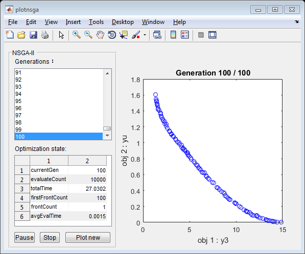 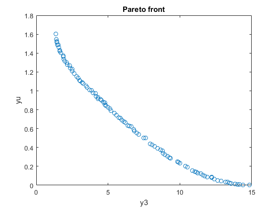 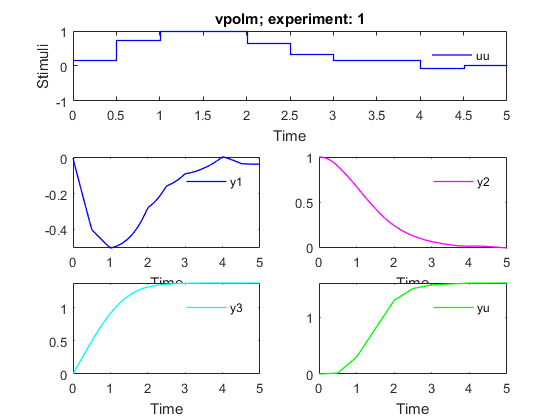 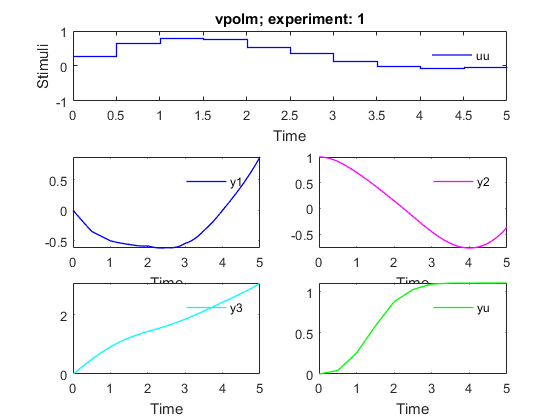 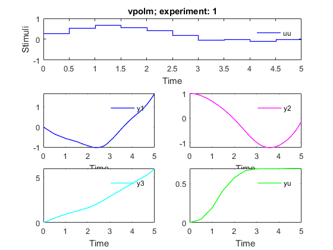 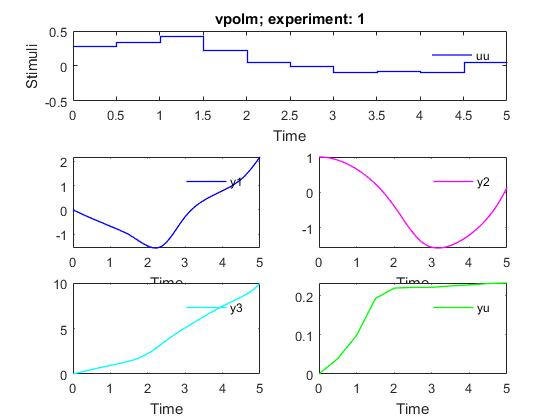 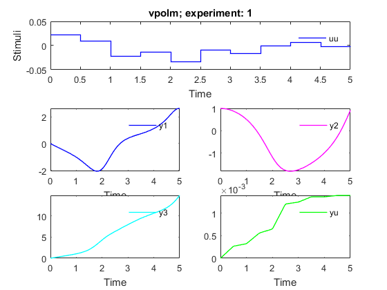 References
Deb, K.; Pratap, A.; Agarwal, S.; Meyarivan, T. A fast and elitist multiobjective genetic algorithm: NSGA-II IEEE Trans Evol Compt. 2002, 6(2):181-197
AMIGO_htmldoc_inputs(inputs,fullfile(pwd,'html','doinputsm.html'));